ADVERTISEMENTS.
With Special Reference to Ceylon,
By H. F. MACMILLAN, F.L.S.,
Superintendent of Botanic Gardens, Ceylon.
About 300 Illustrations. Demy 8vo. 32 Chapters.
|
|
Price exclusive of Postage, Rs. 10, or 13s. 4d.
Send for Complete Synopsis of Contents to the Author or
Messrs. H. W. Cave & Co., Colombo, Ceylon.
*Postage in Ceylon, cts. 50; to India and Burma, As 14; to other countries, Is. 4d.
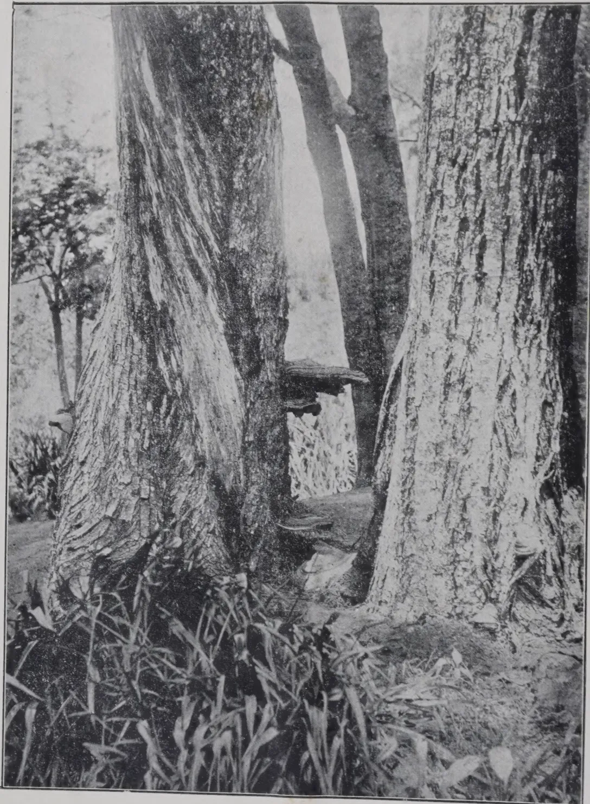
A black and white photograph of two large, thick tree trunks with rough, textured bark. A smaller tree trunk is visible between them, and a shelf-like structure, likely a fungal growth (Fomes australis), is seen on the smaller tree. The ground is covered with low-lying vegetation.FOMES AUSTRALIS ON ACACIA DECURRENS
(See Page 67)
676
THE
TROPICAL AGRICULTURIST:
JOURNAL OF THE
CEYLON AGRICULTURAL SOCIETY.
VOL. XLIII.
COLOMBO, JULY, 1914.
No. 1.
RICE.
Peradeniya, July, 1914.
The literature of tropical agriculture during the last ten years has dealt so largely with rubber that the onlooker might be excused for judging that the Agricultural Departments of Tropical countries had no thought for any other product. Yet the period in question will ultimately be noted, in agricultural history, for the initiation of another movement,—fraught with much greater consequences for the native cultivator and the indigenous population,—which does not lend itself to booms and has practically escaped notice. We refer to the investigations and experiments which are being conducted in almost every tropical country with a view to the improvement of rice cultivation.
In Japan and Italy, two of the chief rice growing countries of the subtemperate zone, much has already been done in this direction. Developments in the Tropics are more recent, but Java has been in the field for some time, India has followed suit, British Guiana has made considerable progress, while Indo-China is the latest recruit and, as the article quoted elsewhere proves, is profiting by the experience of the pioneers.
In many respects, the situation must appear extraordinary to the expert agriculturist of temperate countries. The improvement of cereals is now a fine art. Its rules and methods are well established, and have been practised on almost all such crops with results which are too well known to need mention. Yet in the case of rice we have a plant to which though it provides the staple food of millions of people, even the simplest methods of amelioration have not been applied except in very limited areas.
The keynote of modern methods of improvement of cereals is selection. Mass selection is already practised in the case of rice in some countries. In Japan, the upper third of the head is gathered for seed, because the grains at the top are the heavier.
2[JULY, 1914.And elsewhere the heaviest grains are selected by placing the seed in water, or in solutions of greater density. But these mass methods do not lead to permanent improvement, as the seed so selected is always a mixture and deteriorates by crossing.
The earliest efforts in the selection of wheat, oats, etc., were made by individual farmers, more or less as a hobby. Single ears of marked quality were selected, and from these plants were raised, until sufficient seed had been obtained. This phase appears, on the available evidence, to be lacking in the case of rice. In recent times, selection and improvement by crossing has become the special work of professional seed growers, with the consequent production of strains which are household names among agriculturists.
A great impetus has been given in recent years by the introduction of the method of pure line breeding, thanks to the investigations and discoveries of the Experimental Station at Svalof in Sweden. In this method, pedigree races are raised, beginning with a single grain. Deterioration by crossing is thus avoided, as all the plants have the same origin. The method is not a new one in itself, as it was practised in Scotland nearly a hundred years ago by the originator of the famous Sheriff oats, but in its modern developments it is the creation of the Svalof station.
It may be urged that this method is too slow for adoption in practice. The reply to that objection is that it is the only method which gives permanent results, and it is sufficiently rapid to be adopted by commercial enterprises. The station at Svalof, though it receives grants from the State, is a private institution, and a similar station has been established in France by a private association.
Experiment stations for rice in the Tropics are following the Svalof methods with promising results. In Java, a variety which yields tons of rice per acre has already been raised at the experiment station at Buitenzorg. That Ceylon rices will lend themselves to improvement by this method is evident from the fact that the best variety now under cultivation in British Guiana was obtained by selection from a Ceylon consignment.
It is now generally agreed that mass selection, though temporarily of benefit, cannot effect any permanent improvement, and that new varieties introduced from abroad and distributed to the native cultivator must, in general, deteriorate by crossing with the local mixed races. The hope of permanent improvement and increased production lies in the adoption of pure line breeding, and the regular distribution of pedigree seed.
T. P.
1914.]3BY H. W. FARWELL, A.B., & M. H. KORN, C.E.
[As the improvement of the quality of plantation rubber is the question of the day with all who are interested in the industry, we need tender no apology for reproducing from THE INDIA RUBBER WORLD the following description of yet another rubber coagulating machine based on Brazilian methods. Our readers will, no doubt, understand that the first part of this article is of the nature of advertisement and will take its statements accordingly, but we have to confess to a feeling of surprise that the patentees of rubber machines should in general think it incumbent on them to enlarge on the inefficiency of their prospective clients.
We have not the least doubt that if MESSRS. FARWELL AND KORN would send out one of their machines they would find rubber estate companies willing and eager to give it a thorough trial under estate conditions, as they have done in other cases.
If we may offer them advice, we would urge them not to handicap their invention by demanding royalties on rubber manufactured by it—a course which is about as reasonable as would be the action of a patent mangle company which required a royalty from all the washerwomen using it.
One point further. Either the advocates and users of these machines have to persuade the brokers and rubber buyers to take rubber which is exuding a tarry liquid, or the planter must store his rubber for at least three months before it is ready for shipment. The latter course may probably be ultimately necessary, but at present inventors persist in ignoring the length of time required to make an Amazon ball, and to put it on the market. The adoption of the usual type of rubber coagulating machine (i.e., in which coagulation is effected by smoke) by an estate, would, as the market is constituted at present, involve the loss, or rather permanent postponement, of three months' income, unless the new machine was brought into operation gradually.
Comments on MESSRS. FARWELL AND KORN'S article are enclosed in brackets.—ED. T. A.]
When in the summer of 1910 MR. E. A. KORN, the crude rubber importer and merchant of New York, made his tour of the rubber producing countries of the Far East he was greatly impressed by the uneconomic and inefficient methods employed on the plantation in the production of crude rubber from rubber latex.
Having visited Brazil several times before taking his trip East he was naturally well acquainted with the careful coagulating and curing methods in use there, so the difference between the two methods of coagulation was brought home to him most forcefully, and it was easy for him to explain the
4[JULY, 1914.evident reasons for the difference in quality of the resulting rubber. It is, of course, well known that the market value of best plantation fine is about 10 cents per pound lower than that of Brazilian Uriver Fine, but that this self-depreciation is entirely unnecessary and can be avoided is not so generally known to the plantation owners.
MR. KORN, in an interview with the CEYLON OBSERVER, stated at the time of his stay in Ceylon that if plantation latex were smoke-coagulated and cured like Brazilian, the resulting rubber would be equal in quality and market value to Brazilian Fine from the Tapajoz region. His views were seriously disputed by a few whose actual experience and knowledge of the subject really did not entitle them to assume the rôle of critics. It is quite clear to those who are capable of logical reasoning that if certain treatment is applied to a certain organic substance with a certain resulting reaction, the same treatment applied to the same organic substance, in another part of the world, will cause the same reaction—and a like product will result in both cases. [This presupposes that the details of the method are exactly known and can be carefully controlled. The same "argument" may be applied to milk. If a given quantity of cow's milk is placed in a certain kind of churn which is rotated for a fixed number of times, the butter produced will always be the same!—ED.] This argument covers the case exactly and completely, for the two latices come from the same species of trees—Hevea brasiliensis. There are, of course, some differences in soil and climatic conditions as well as in the age of the trees, but they do not seem to have any appreciable effect either way on the quality of the latex tapped in the East.
It must therefore be admitted that the rubber producers of the East are at the present time incurring a large loss in possible returns, a loss which in fact amounts to approximately $20,000,000 annually, because the inferior and inefficient methods of coagulation decrease the value of the resulting rubber to that extent.
It is the purpose of this article first to show the truth of the existence of this actual loss of $20,000,000 per year to the planters; secondly, to show how this immense loss may be practically eliminated by the use of proper coagulation and curing methods, and, thirdly, how these methods can be effectively employed on the rubber plantations of the East.
We shall assume in our computations that the quality of Eastern rubber cannot quite be brought up to the finest Brazilian Uriver Fine—even by proper coagulation. This assumption is made simply to be on the conservative side of our estimate. It is to be expected, of course, that the latices are a little different in chemical composition, first because the soils are somewhat different, the soil in Brazil being alluvial while that in the East is mostly primary formation (laterite). Secondly, most of the trees in the East are younger than those tapped in Brazil, and the latex from young trees contains slightly more resin, which tends to weaken rubber. [The theory that the difference in resin content of plantation rubber accounts for the difference in quality has been repeatedly shown to be untenable.—ED.] It must further be remembered that the Eastern trees are all seeded from the Hevea of the Tapajoz region in Brazil.
This image is a scan of a blank page. The background is a uniform light beige or off-white color. There are several small, dark specks scattered across the surface, which appear to be dust or scanning artifacts. No text, lines, or other graphical elements are present.From The India Rubber World.
![A detailed technical line drawing of a rubber coagulating machine, viewed from an angle. The machine features a large, flat, rectangular base with a series of parallel lines running across it. On the left side, there is a vertical assembly of rollers or a comb-like structure. A large, circular, rotating component is mounted on the right side of the base, with several small rectangular blocks or weights positioned around its perimeter. A long, thin rod or handle extends from the top of the machine towards the right. The entire machine is supported by a sturdy, rectangular frame with diagonal bracing.](3c39d27efe753a402756190b217060b8_2_img.webp)
GENERAL VIEW OF RUBBER COAGULATING MACHINE.
Designed by Max Henry Korn, C. E.,
82 Beaver St., New York.
Herman W. Farwell, A. B.,
Dept. Physics, Columbia University.
General dimensions:
6' 0" x 4' 0" x 5' 0".
Patented in the plantation
rubber producing countries.
We shall therefore draw our comparison between Tapajoz Fine rubber and plantation smoked sheet, based upon market conditions existing in New York at the beginning of March, 1914 :—
| Market price of Tapajoz Fine per lb. | .. | ... | 72 cents |
| Market price of plantation rubber smoked sheet, per lb.... | 61 " | ||
| — | |||
| Actual loss in returns to planters, per lb. | .. | ... | 11 " |
| Loss in weight in washing Tapajoz Fine | ... | ... | 20 per cent |
| Loss in weight in washing plantation smoked sheet | ... | ... | 3 " |
| Value of Tapajoz Fine to the manufacturer after washing, per lb. | 86 cents | ||
| Value of plantation smoked sheet to the manufacturer after washing, per lb. | ... | ... | 63 " |
| — | |||
| Excess value of Tapajoz over plantation ready for working, per lb. | .. | ... | 23 " |
This at the present rate of production of about 50,000 tons per year means an approximate loss of :—
Having proven the rather startling fact that this article of immense commercial utility is being produced to the extent of 50,000 tons per year at an actual monetary deficiency in legitimate and possible returns of approximately 20 cents per pound, we shall now show :—
Regarding our first contention, namely, that the inferior quality of Eastern rubber is caused by improper coagulation methods : It is generally known that the methods employed on the Eastern plantations at the present time merely result in a more or less complete coagulation (without curing) of the latex, i.e., they simply draw together the rubber particles in the latex, with their consequent more or less complete separation from the water content, which often runs as high as 65 to 70 per cent. None of the processes effect the counteractions of the proteins which later cause putrefaction of the rubber and a conversion (within a comparatively short time) of the good rubber into a sticky, lifeless substance. It is equally well known, at least among manufacturers of rubber goods, that any rubber coagulated in this way lacks in resiliency ; it is "short," and does not possess the long life of good Brazilian rubber. [We do not understand what is meant by "counter-action of the proteins," and, in general, plantation rubber does not putrefy. —ED.]
It is for these reasons that plantation rubber, although produced from the same species of trees as Brazilian, has been lower in actual value than Brazilian grades.
6[JULY, 1914.If in contrast to the above we will now study the Brazilian methods of coagulation, we cannot help but feel that it will result in a far superior grade of rubber. The latex there is coagulated and cured in layers no thicker than 0.01 of an inch (0.25 of a millimetre) by the chemical and preservative action of the smoke of tropical woods. This smoke is composed of a complexity of gases, including hydrocarbons, carbon monoxide and dioxide, and, most important from our standpoint, slight quantities of acid and creosote vapours. The acid vapours bring about coagulation, but being in such dilute condition they cannot injure the rubber fibre. [It has been proved that the amount of acid in Hard Para is greater than that in Plantation Hevea.—ED.] Creosote is known to be one of the most powerful preservative agents. Its action on the latex is to eliminate the protein matter which in time would cause the putrefaction of rubber which is known as tackiness. [This is quite a new claim. Hard Para is supposed by many to retain all the proteids. We do not understand how the proteids can be "eliminated" by creosote, and it has not yet been demonstrated that putrefaction of the proteid has anything to do with tackiness.—ED.] Finally, the heat of the smoke brings about the evaporation and consequent removal during coagulation of a large percentage of the water in the latex. This, it is presumed, will allow a more perfect union of the molecular particles of rubber and a consequent greater intermolecular attraction (cohesion) than if all the water remained until after coagulation. This ought naturally to result in a greater tensile strength. [Here, again, the inventors are in conflict with their confreres, who claim that the coagulated rubber contains all the constituents of the latex, even the water! For the rest, these five lines contain a number of scientific terms, but the attempt to extract any meaning from them will certainly tax the tensile strength of the reader's brain.—ED.]
Our second contention, namely, that the standard of quality of plantation rubber can be raised to that of Brazilian Tapajoz Fine, can be proven by a series of experiments like those conducted by the designers of the smoke-coagulating machine described below. Furthermore, the latices are drawn from trees of the same species, as already mentioned; therefore they ought to be, and have been proven to be, very similar in chemical composition, and to yield to the same treatment with similar results. The loss of $ 20,000,000 per year is therefore an unqualified waste, and can be avoided, as it is simply the result of uneconomic production methods.
Regarding our third contention, namely, that the Brazilian process of coagulation can be applied to Eastern plantation conditions. We have performed many quantitative experiments which have proven beyond any doubt that the Brazilian coagulation operation can be performed by a machine.
The slowness and laboriousness of the Brazilian hand process is therefore no more a deterring factor to its use on plantations.
The coagulating machine, which M. H. KORN, civil engineer, and H. W. FARWELL, lecturer and instructor in the department of physics at Columbia University, have evolved and patented after three years of study and experimentation, performs the coagulation operation exactly as the Brazilian does it, but with a very great saving in labour and time. The several machine models have shown under exact quantitative experiments that we can coagulate and cure up to tons of latex per day of 10 hours on one machine, the resulting rubber being exactly like the Brazilian grade of smoke cured rubber.
JULY, 1914.]7The efficiency of the machine and its large capacity are simply the result of:—
In order to obtain a general conception of the structure of the machine reference will be made to the perspective drawing in the following description:—
The machine consists essentially of a smoke chamber, within which a coagulating cylinder revolves at a constant speed, and which is carried by lugs on the truss frame. A smoke inlet and an exhaust port are so disposed over the surface of the smoke chamber that the coagulating smoke, which is kept at a constant temperature throughout, will completely envelope the coagulating cylinder at all times. The latex is conveyed from the general receiving tank to the latex reservoir seen in the drawing on top and a little to one side of the smoke chamber. The reservoir runs on a track, bolted to the rear of the truss frame, so that it may be moved toward or away from the coagulating cylinder as required. The front face of the reservoir is fitted with a series of orifices, which are opened and closed by means of gates. These gates are actuated by a central cam shaft and a series of cams. The cam shaft is operated by a set of intermittent or "time" gears, which in turn obtains its power from the main shaft of the coagulating cylinder. This time gearing, not seen in the illustration, is a necessary and ingenious adjunct to the machine, inasmuch as it provides for and automatically takes care of the most disturbing factor in smoke coagulation, namely, the variation in the percentage of water contents in the latex. The rapidity of smoke coagulation depends almost entirely on this. The time gearing gives a range of from one-quarter to five times the average length of time required to completely coagulate a layer of rubber of constant and predetermined thickness. The sectional area of the latex orifices may be varied somewhat, but is ordinarily set so that the flow from them is such as to deposit a layer of latex of 0.008 of one inch maximum thickness. The smoke generator is a simple grated combustion chamber so arranged that slow combustion of the fuel will take place in order to generate the maximum amount of smoke. The gases of combustion are drawn into the machine by suction, there set in whirling motion to reach every exposed particle on the surface of each new layer of latex, and are then expelled into the atmosphere. The orifices are protected against any possible clogging by precautionary devices, which have shown their effectiveness in actual tests on models of the machine.
The operation of the machine is somewhat as follows: The batch of milk to be coagulated during the day, and stored in a general receiving tank is first tested for its water contents by means of a small gage. The percentage of water present being known, the intermittent gearing which fixes
8[JULY, 1914.the time allowed each new layer of latex to coagulate and cure is set by the movement of a setting lever to the correct time gear. The latex is then allowed to run into the reservoir, which it will fill to a certain depth, kept constant throughout the operation. The smoke generator, having been started, it is made to pass into and through the machine. Before entering, however, the gases are brought to the correct temperature for proper curing, considering the water contents of the latex and several other factors. The coagulating cylinder may now be started revolving, and the time gearing operating the orifice gates set in motion. Successive thin layers of latex will then be deposited upon the surface of the coagulating cylinder, and cured successively until the operation is stopped at night. The smoke chamber doors are then opened, and the whole thickness (possibly up to a foot thick) of the coagulated rubber is removed from the cylinder. The machine is then ready for the following day's work, except for certain mechanical cleaning and oiling.
The economic importance and value of the machine can be easily appreciated by the plantation owners, but it will be interesting to enumerate some of the beneficial results of its installation and use:
(1) It will eliminate the enormous loss incurred through present uneconomic coagulation processes.
(2) It will materially reduce the operating expenses on plantations, for the machine with only one attendant will convert the fresh latex into smoked rubber.
(3) It would put plantation rubber on a sounder basis in its competition with "wild rubber," and thereby increase the value of plantation rubber investments to a material extent.
Throughout the work of mechanical development and final design of the present embodiment of the machine, the designers kept the fact in mind that in order to avoid committing serious errors of design it would be necessary to construct a machine which in principle would perform the Brazilian method of coagulation and curing exactly as the Brazilian does it. In the development of the present machine the designers were greatly assisted by their friends in Brazil and the East whose reliable information regarding the Brazilian process and other important conditions of production was found to be necessary to the successful completion of the designs of the machine. The designers were especially careful to verify all the important phases of the process by personal experiments conducted in the laboratories with a quantity of fresh latex sent for that purpose from the Ceylon plantations. All these experiments were performed quantitatively, the results being noted very carefully on experimental log-sheets for future reference.
The construction and operation of the machine are both extremely simple, for the designers realized that next to embodying the principle of the Brazilian smoking process the machine must be very simple to operate, and mechanically suited to the conditions existing on plantations. The capacity of the largest practicable machine is about tons of latex per day of 10 hours' continuous operation. Smaller machines with less output, but capable of equally efficient results, can, however, be built to suit the individual demands of the various plantations.
JULY, 1914.]9H. M. Consul at Dar-es-Salaam (MR. N. KING) reports that the low prices prevailing in 1913 had a disastrous effect on the Manihot rubber plantations in German East Africa. The set-back in the economic development of the Colony is a serious one, as rubber cultivation is one of its most important interests, there being probably 19,000,000 trees planted in the Colony, of which about half are ready for tapping. Owing to the low prices all the plantations limited the number of hands employed, and two of the largest suspended tapping entirely.
Planters have made urgent appeals to the Government for assistance, and some relief has been afforded. Unless, however, the price of rubber improves greatly it is difficult to believe that any official measures will enable the planters to reduce their costs of production sufficiently to make the rubber-growing industry profitable. Railway freights have been reduced and the sea freight has been lowered from 90 marks to 50 marks (from about £4 4s. to £2 9s.) per ton, while the payment of Customs export fees has been deferred. Acids for the coagulation of rubber are imported free of duty, and the Colonial Economic Committee is endeavouring to obtain a reduced freight for materials used in collecting rubber.
The request of the planters for a further extension of the period of contract for labourers has not yet been granted, and can hardly be expected in view of the fact that the Government has already extended to 240 working days the time for which contracts may be made. This new regulation came into force on 1st October, 1913, and its effects have not yet been felt very much on the plantations.
The planters are heavily handicapped by having to pay the costs of recruiting labour in the interior and its transport down to the plantation. These costs often amount to about £2 10s. per head before work is begun, and the rate of wages is high—about 16s. 6d. per month for a Wanyamwezi tapper.
Owing to a slight rise in the price of rubber, tapping has been resumed by some of the planters and a more hopeful feeling is abroad. The smaller planter has probably a better chance than the large Company; his working expenses are less, he can often obtain local labour cheaply or get time-expired hands without paying recruiting fees and in addition he can keep his men under more personal control. The outlook for the larger estates is far from reassuring, and it is said that some of them have already begun to cut down the rubber trees to make room for other crops.
The Colonial Economic Committee is taking steps to introduce a standard quality of East African rubber, the absence of which is another difficulty which has hampered the planters. There is only one large washing and curing factory in operation in the Colony, at Muhesa, though there are several smaller ones in Usambara. Most of the planters wash the rubber themselves, with the result that it has often to be done again in Europe.—LONDON COMMERCIAL RECORD.
10[JULY, 1914.(DR. P. ARENS, of the Rubber Experiment Station, Malang, makes the following remarks on the question of seed selection in Hevea in his account of his recent visit to Ceylon and Malaya).
In view of the fact that when rubber plantations were established in Java no selection of seed was practised, all the seed being planted out as soon as it was received, it was important to ascertain what had been done in other countries in this respect. It was at once evident that in the districts which I visited nothing of the kind had been attempted. The demand for seed was so great during the rubber boom that no one could consider proper seed selection.
Now that the demand has ceased and the majority of the plantations produce all the seed they require, one would expect that more attention would be given to this question, more especially as examples in other products demonstrate how important a good selection of seed can prove and how the future may depend entirely upon it. One need only call to mind the case of cinchona which in Java alone, in contrast to the universal experience of other lands, can be profitably cultivated, chiefly because in that country the value of an improvement in the alkaloid content was early realised. In Ceylon Cinchona has almost entirely disappeared. It strikes one therefore as all the more surprising that the melancholy experience gained with Cinchona has not taught the English planter to be more on his guard in this matter.
While here in Java a great number of plantations may already be found where the seed of selected specially good trees on the plantation itself has been planted out for extensions or supplies, very little has, in general, been done in this matter in the English Colonies. Of the different countries visited there was only one in which the importance of this question had been grasped and fields had been established with seed of one kind, obtained from specially good yielding trees. Information afforded by the various Departments of Agriculture shows that this is really an exception.
The Department of Agriculture in Ceylon has recently taken more interest in this question [since 1911, to be exact.—ED.]. A field is to be seen on the Experiment Station at Peradeniya which is planted with seed from the well-known tree at Henaratgoda which has attracted so much attention owing to its yield of 275 lb. in years when 35 years old [386 lb. in years.—ED.]. The plants are as yet too young to say anything about. In addition, a number of selection experiments have been instituted which are provisionally only of purely scientific importance and which may serve to elucidate how far individual characteristics in Hevea, such as large or small leaves, light or dark coloured seeds, etc., are hereditary. It is possible, however, that these experiments may have a practical value also, since it appears that certain external characteristics may be associated with other desirable qualities.
In this connection, most remarkable ideas are current in English Colonies. There are planters who assert that a certain coloured bark only occurs on good yielding trees, etc. But all these practical observations prove groundless on further investigation. One planter, for instance,
JULY, 1914.]11declared that trees with a rose-coloured bark were especially valuable, while on another plantation exactly the same trees were described as worthless. Such opinions do no harm, so long as they are not made the basis of a system of selection. In the present instance the planter in question was so certain of the truth of his observation that he intended to use the seed of such trees for the improvement of his plantation, without first tapping them because he preferred seed from untapped trees. It is unnecessary to enlarge here upon the dangers of such a method. Naturally, only the productive capacity of the tree can afford a rational basis for selection, and that must be determined empirically by tapping.
There are however certain characters which, at least as regards Ceylon, afford a conclusion as to the value of the tree. There exist, for instance, two types of bark in Hevea. The one remains smooth at all ages, while the other becomes rough and its outer layer grooved. Trees with the first kind of bark are generally poor yielders. Microscopic examination shows that in such bark the latex tubes occur only close to the cambium, for which reason the yield is smaller. [This is true only of one type of smooth bark.—Ed.] Bark of this kind is also generally thinner than normal bark. Trees with a yellow inner bark are also poor yielders. The renewed bark is the same in all trees, so that the trees just mentioned are poor, only during the tapping on the original bark.
Planters are not yet agreed whether seed should be taken from tapped or untapped trees. A great number of the estates in Ceylon were planted with seed from the Henaratgoda trees which were then practically untapped. Disadvantageous results from planting seed from tapped trees are not known in any case. Such seed is in general smaller than that from tapped trees, and does not germinate so well. If injurious effects really follow the use of such seed, they are so little in evidence, that up to now they have escaped observation. They can in no sense outweigh the advantage which is derived from planting seed from tapped trees, i.e., the power to select seed from good yielding trees.
[We may add to this the following extract from DR. TRIMEN'S Report for 1880, referring to Cinchona :—
"Selected and marked or numbered trees should be analysed by a competent Chemist, and the results compared with the characters of the trees. Those with a good bark analysis should be kept as seed trees, those with a bad one ruthlessly destroyed. In this way alone it is possible after a few years to obtain seed which will come true. No pains should be spared in this matter. It is important that growers should realise that before long (assuming that quinine retains its commercial pre-eminence over the other alkaloids) it will be only the best barks that will secure good prices : the inferior must hang on hand, and only be disposed of at reduced rates." ]
THE GAZETTE DE HOLLANDE (April 4th) draws attention to a matter that would seem to have escaped that degree of the attention which its apparent importance renders essential to the well-being of all having important interests at stake in Mid-East rubber-producing countries. We refer
12[JULY, 1914.to the resting of rubber trees. Hitherto, it seems, managers have had to put forth strenuous efforts to get as much as possible out of the trees in order to gratify the desires of Boards of Directors bent upon piling up dividends. If only a fraction of all we hear be true, the danger arising from over-draining young trees has been increased a thousand fold of late owing to the "slump" and the consequent necessity of producing as much as possible in order to continue to show good profits. But there are limits to everything—even to the strain of its vitality which the rubber tree can bear with impunity—and the time seems to have arrived when the desirability of systematically resting rubber trees during the wintering season might with advantage receive very general and careful consideration. Among the latest advocates of systematic resting of the trees during the wintering season is Colonel Vansittart, who holds that if unanimity cannot be attained amongst Eastern rubber planters on so important a matter then it may be necessary for certain governments to step in to save plantation owners from themselves. "Why," he asks, "should not the Governments of Malaya, Ceylon, Sumatra, etc., be approached with a view to making tapping illegal during the wintering season for a month or two, and providing, further, that a breach of the regulations should render delinquents liable to a very severe penalty? Each country could choose for itself such time as is most suitable for that purpose, provided that all countries observed the same length of time for resting trees. Were this done, no one country would gain any advantage over another, while every plantation in the Mid-East would stand to greatly benefit by the yearly rest." Whether the resting period is brought in by legal measure, or voluntarily, there seems abundant reason for agreeing with COLONEL VANSITTART that it will have to come eventually if the industry is to be placed on the permanent and satisfactory footing it certainly should be the aim of plantation companies to secure for it as soon as possible. That most companies are inclined to favour the adoption of methods looking to so desirable a consummation has been demonstrated on several occasions in the not very distant past, and it will not be surprising, therefore, if the opportunity afforded by the forthcoming reunions of rubber planters, rubber manufacturers, and rubber authorities and experts of all kinds in London (in June) and in Batavia (in September) is availed of to give to the wintering question that degree of thought which its undoubted bearing upon the whole future of the industry would seem to call for if the trees are to continue as healthy and prolific as all shareholders in estates naturally hope they will be.
It would be interesting to know what the heads of the Botanical and Agricultural departments of the F.M.S. and S.S. think about this matter, and it is obvious that a useful purpose could be served by the publication at this juncture of their views both pro and con a regular resting season together with their ideas respecting the best way to render regulations of the kind suggested effective and beneficial without having recourse to special legislation.—MALAYA TRIBUNE.
Melons in Spain are ripened for choice quality by removal from the vines and hanging in the sun and air. Some are kept for months in the dark, packed in sand or sawdust where light, moisture, heat, and frost cannot reach them. Some last through the winter hanging near the ceiling of a dark room.—WORLD'S CHRONICLE.
JULY, 1914.]13MR. W. CRADWICK, an Agricultural Instructor of the Jamaica Agricultural Society, writing to the Journal of that Society on the transplantation of young cacao plants, remarks as follows:—I am afraid when people are transplanting plants from bamboo joints to the field a good many of them are lost for the want of a very simple precaution. The earth and roots of the transplanted plants should be as wet as it is possible to make them, and before it is attempted to move the plants from the bamboo joints they should be thoroughly soaked in water, not merely watered with a pan, so that when the plants are put into the ground, even if a dry spell follows, it is not at all likely that the plants will die, as the wet earth round the roots will attract the moisture from the surrounding earth, whereas if a dry ball of earth is put into the soil it is an exceedingly difficult process to get it wet and one which takes a long time even in favourable rainy weather.
The greatest care should be taken to surround the young plants with nothing but the finest earth, which should be squeezed very tightly round the young plant so as to prevent an excess of dry air circulating between the earth in which the young plant was growing in the bamboo joint and the earth in which it is now being placed.
Water thoroughly, and to finish up the process take the trunks of banana plants, split these and place them around the young cacao plants. This will serve as an admirable mulch.
The following account of cacao canker is extracted from an article in BEIHEFTE ZUM TROPENPFLANZER, April 1914, on cacao cultivation in Samoa, by HERR ERNST DEMANDT:—
Among economic trees, cacao is one of those most afflicted by diseases and parasites; and in all cacao lands a constant fight is carried on against its enemies. It should not be surprising therefore, that in Samoa, where its cultivation is comparatively speaking, of quite recent origin, a number of its diseases and parasites have already established themselves. It is a well known fact that any intensive cultivation permits enemies of the crop to develop quickly. The combating of these enemies is, in reality, part of the work of cultivation, and is as necessary as any other work in the management of a plantation. Indeed, we would further assert, that it is the first duty of every planter to do his utmost to keep his plantation free from pests and diseases, both in his own interest, and in that of the whole country.
In comparison with other cacao countries, Samoa at the present day by no means suffers excessively from enemies of cacao. Apart from canker which is very dangerous and in consequence has been much written about,
14[JULY, 1914.we have no enemy of cacao, which could become permanently equally destructive. A tree, once attacked, can indeed be destroyed by one of these other pests, yet an epidemic spread of the same is to-day somewhat improbable, if the smallest beginnings are stamped out, and the pest thus rendered apparently "harmless." On a well managed plantation, however, there should be no "harmless" appearances of disease: the careful planter should always remember that from a harmless beginning an epidemic can develop. The best method of fighting a disease, and at the same time the most effective against an epidemic, is preventive hygiene on the plantation.
In this connection it is not a question of "talk of the devil and he will appear:" we would only point out that the planter is threatened by many enemies, and that it is of great importance to him to keep his crop constantly under close observation: only thus can he obtain what his trees should yield.
Naturally it is impossible to keep a plantation quite free from every enemy. The planter has it in his power, however, in each of our cacao diseases, even the most dangerous, to reduce the damage to a minimum which would not decrease materially the value of his estate, but would form a normal loss from "wear and tear" of cultivation, with which he should reckon as a matter of course.
The most dangerous disease of cacao is usually designated by the title of "canker." The name itself, which has been adopted from English cacao growing countries, was originally applied to diseases producing a canker: while, as interpreted to-day, it is not to be understood as tree canker, in the sense that one thinks of canker on fruit trees at home. The expression has become naturalised, and is so generally used in this country, that there would be no object in searching for an equivalent expression.
In the early days it was proposed to term the disease Bark-disease or Bark rot of cacao. This expression was correct, but it did not include the disease of the fruit. One must remember that, if one briefly says canker, this includes both fruit rot and bark disease, which however in Samoa may not be caused by the same agent. We will designate here the disease of the bark as Canker, that is bark rot, and the disease of the fruit as Brown-rot.
According to GEHRMANN, the cause of Bark rot in Samoa is Fusarium Samoense Gehr, and that of the Fruit rot or Brown rot, a Phytophthora. Other investigators ascribe to Bark rot and Brown rot or Fruit rot the same cause, e.g., Rorer for Trinidad a Phytophthora, and PETCH the same for Ceylon.
In the present account both diseases may be artificially included under Canker; the bark rot and the brown rot of the fruits will be considered together, as in practice it is of no importance whether two different fungi are the causes of the diseases, since their control and treatment are the same. In practice one sees, in fact, bark rot arising from fruit rot.
The attention of the cacao planter in Samoa was directed to the bark disease some years ago. Since 1904 it has been known as an enemy of cacao, yet for many years nothing was done to check it, not till the increased occurrence of canker hand in hand with the increase in cacao cultivation showed its dangerous nature more and more. There has been much dispute over its origin, whether it was introduced or came from the jungle. It is certainly agreed, however, that the cause of canker is indigenous to this country, as the representatives of these orders of fungi are indigenous to all the tropics: also that it has led a harmless existence on some other host before the introduction of cacao cultivation, and incidentally it does so yet.
JULY, 1914.]15In support of this assumption it may be mentioned that the cause of the Samoan bark rot, Fusarium Samoense Gehr., has not been found in other cacao countries: the appearance of canker, especially in the planting district of Apia, is not opposed to the above, for in that district is found generally the oldest and the bulk of the cacao of Samoa.
Up to the year 1912 canker was observed only on the stem, the sporadic appearance of brown rot on the fruit being overlooked. Not till the excessive rainy season of 1913 were the fruits attacked to any considerable extent, and at the same time experiments provided the proof that brown rot of the fruit, contrary to other assumptions, often forms the point from which canker of the stem develops in the same tree.
Samoa canker attacks trees over 4 years old, rarely under, generally on the stem and the main branches: brown rot attacks cacao fruits of any age or degree of ripeness, and the disease can proceed from the stem to the fruit as well as in the contrary direction from fruit to stem. The danger of infection with canker is very great, and it would, if left to itself, spread all over the trees on which it alights. On this point there is only one opinion among cacao planters, and, following them, in our regulations on the subject, and that is that canker, wherever found, should be combated by all means possible. Hence on every plantation, every tree should be under special inspection solely with the object of spotting this disease.
It is specially important to note that canker not only attacks cacao but also appears on Hevea, the other important cultivated plant of Samoa. In this tree the thin shelled fruits are especially attacked by brown rot. On the outermost fruit layer, which is barely 1 m.m. thick, Phytophthora appears very abundantly. It certainly does not damage the ripened fruit, but it prevents the natural splitting of the same, so that the diseased fruit remains hanging on the tree, and dries up. On the stem of Hevea, canker has been found only in very isolated cases: it is, as a rule, not nearly so dangerous to this tree, which has some power of resistance, as it is to cacao (sic). However, many thousands of diseased Hevea fruits remain hanging in any old Hevea plantation, and if the weather is dull and moist, there is great danger to the cacao growing under Hevea in mixed plantations. The destruction of cacao fruits and trees is therefore the greatest in such plantations as have cacao and Hevea standing close together—a fact which has been determined in other older cacao countries. (This is rather a reversal of the usual way of regarding such mixed plantations.—ED).
The author recommends as measures of control, excision of diseased areas and tarring of exposed surfaces, burning of diseased bark and trees badly infested, burning of diseased fruits, maintenance of a special "disease gang," spraying with fungicides (Lime sulphur wash) before the rainy season, etc.
ARTHUR W. KNAPP, B. SC. LONDON.
(Continued from page 453.)
The temperature is the most important factor in securing a good fermentation. It is sometimes stated that there is a danger of the temperature rising too high, say above 60° C. (140° F.), but 51° C. was the highest temperature I found in Trinidad, and this is not objectionable.
16[JULY, 1914.In order to ascertain if it were essential that the sweatings should run away, I had some beans enclosed in a 1 ft. cubical box, made perfectly water-tight, and placed in the midst of similar beans in the sweat-box. Thus the correct temperatures were maintained in the water-tight box. When they were taken out at the end of six and a half days, those in the water-tight box were still sodden, and the pulp was not so dark as that in the beans fermented under ordinary conditions. On roasting, the resultant cacao was good in both cases, and almost equally so—that from the water-tight box was slightly more acid, and certainly a paler and brighter red. There was no development of that "hammy" flavour that is thought to be caused by leaving the beans soaking in their own juice. This experiment shows that the draining off of the sweatings is not of great importance under conditions of perfect cleanliness, and where the temperature is maintained. Under ordinary conditions, however, it is better to let the sweatings run away, as their presence lowers the temperature of the mass, and is apt to make the cacao sour.
In the later stages the oxygen of the air is needed to complete the fermentation. Oxygen is also needed to produce the brown colour. I attempted to get more even and thorough aeration by inserting upright in the mass of beans a number of bamboo tubes, from which the nodes had been removed, and the sides perforated. Warm air rose up these tubes, showing that circulation was taking place.
The beans so produced appeared identical with those fermented under normal conditions. On roasting they presented no differences. I ascertained later that horizontal tubes had been tried by three planters, two of whom thought they had obtained better cacao thereby. One of these used square wooden tubes, and abandoned them because the natives were always breaking them.
| Hours in box. |
With bamboo tubes (greater aeration) Degrees Cent. |
Normal Degrees Cent. |
|---|---|---|
| 16 - - | 28 - | 28 |
| 24 - - | 29 - | 29½ |
| 40 - - | 35 - | 36 |
| 48 - - | 35 - | 37 |
| Bamboos inserted here. | ||
| 64 - - | 49 - | 49 |
| 72 - - | 48 - | 47 |
| 88 - - | 46 - | 48 |
| 96 - - | 48 - | 48 |
| 112 - - | 48 - | 50 |
| 120 - - | 48 - | 51 |
| 136 - - | 51 - | 50 |
| 144 - - | 50 - | 50 |
| 160 - - | 47 - | 47 |
(The freer passage of air would cause a cooling. The above temperatures are so similar that it becomes evident that sufficient heat must have been produced by the extra oxidation to compensate for this cooling.)
JULY, 1914.]17As a result of these experiments and observations, I recommend that no special device be made for aeration, but that the boxes be raised 6 in. above the cement floor, and so arranged that air can pass freely under them. At the same time the wind should not be able to blow directly on the bottom.
Air is not only a necessity for good fermentation, but the better circulation prevents the growth of mould.
This means that they will have to be periodically scraped, and should they at any time become mouldy, a lime wash is advisable.
Iron nails are objectionable, because they stain the beans black. The tannin compound in the beans combines with the iron (which has passed into solution as acetate in the sweatings) to form a compound similar to ink. Iron nails should be hammered in from the outside. Copper nails or wood pegs should be used, if available. The corrugated iron of the roof, if freely exposed, is very slowly corroded by the acid vapours from the sweat-boxes. The cement of the floor is slowly dissolved away by the acid sweatings—asphalt would wear better. Glazed earthenware channels (which are said to be used in Surinam) would be an advantage if anything is to be done with the sweatings.
Double Walls.—The object of this is to form an air-blanket between the beans and the outside air and to allow of aeration all round; incidentally, it strengthens the building by removing the outward pressure on the side walls.
Size of Sweat-box.—I recommend a box 4 ft. × 4 ft., because with a mass of beans this size fermentation proceeds without encouragement. If a larger size is used, it not infrequently happens that one day's picking does not fill the box; consequently, the following day's picking is added to it, and perhaps even a third day's picking; so that with such a mixture it becomes impossible to obtain an even ferment. The planters appear to think that, if the beans are not covered, fermentation will not commence. The fermentation of large masses of beans cannot be prevented in this way.
(To be continued.)
During a recent visit to the Government Experiment Station at Trinidad, the attention of the writer was directed to several rows of cacao plants in bamboo pots, which had been successfully budded. The spectacle of the healthy growing shoots on the brown leafless stocks would be sufficiently pleasing and interesting under most circumstances from a horticultural point of view alone, but at the present time, when uniformity and good quality figure so prominently on the market as the essential requirements of the cacao industry, the botanical features of this form of propagation fade before the economic. It will be well, however, before proceeding to discuss the commercial significance of cacao budding, to present, in brief outline, the work that has been done and the success that has been attained in this direction during the past year or two in the West Indies and elsewhere.
18[JULY, 1914]It may be remembered that during 1912, articles appeared in this journal which signalized the successful budding of the mango and avocado pear in St. Lucia and Dominica, and the result of this work may be taken as having provided encouragement for the still greater achievement attained during the same year in Dominica in the matter of budding cacao. The method principally employed in Dominica was patch-budding (which had proved successful for the mango), but whilst the experiments showed that budding in bamboo pots could be successful, it was found to be by no means easy, and much remained to be learned by further observation and experiment; especially was this the case with regard to the T-method of budding. In Trinidad and Dominica, the success which has already been achieved has arisen slowly, and it has been found that good results depend largely upon the experience of the operators. In both these Colonies, the Departments of Agriculture maintain a decidedly optimistic attitude towards the possibilities ahead of budding cacao, and there seems little doubt but that the operation will soon find itself included in estate practice.
Below will be found a short article describing the budding operation as carried on in the Philippines. In this territory, the vegetative form of propagating cacao by budding has met with remarkable success. Over 90 per cent of the stocks budded by the T-method were successful in a recent experiment; and although this work was done under nursery conditions, it seems improbable that with reasonable care it would be less satisfactory in practice. It is confidently believed that no cacao grower who has acquired the art of shield-budding, and who follows the instructions given in the article referred to above would hereafter have to crop a heterogenous lot of seedling trees. In the editorial which preceded the special article under consideration, we are told that 'by following the new method now placed before the public . . . the planter can select his variety and at the same time propagate from his most prolific trees of that variety, so that within two years from placing of his buds, he will have changed his plantation from a haphazard mixture of several varieties and from a collection of good, bad and indifferent trees to a regulated plantation, having one, two or three varieties, all the trees of which are known to be heavy producers.'
The significance of this uniformity can be easily imagined. Instead of having one tree bearing 200 pods, and another near by with perhaps only ten, both will be prolific. This is certain, for it has been proved in Trinidad that the degree of prolificacy of individual trees is constant from year to year and probably hereditary. The degree of prolificacy can therefore without fail be maintained by vegetative propagation. Again, another very important aspect is that by increasing the average yield per tree, the same crop can be obtained from a smaller area of land than hitherto, which is a very significant matter in relation to cacao as a crop for the peasant proprietor. Lastly, there is the benefit which will be derived through the improved uniformity in the quality of the beans; this will simplify fermentation and most certainly lead to higher prices being obtained on the American and European markets.
Whereas grafting by approach—which has until lately figured as the only satisfactory way of propagating cacao vegetatively—presents difficulties in connexion with estate work, the new method of budding seems to be perfectly applicable. The land is cleared in the ordinary way, the seed of any hardy variety planted at the usual distances, and when the seedlings are about a
JULY, 1914.]19year old, the operators—boys who have been specially trained—are sent round with freshly obtained material from selected trees and the operation performed. There are no stages to be built around the trees, and no special watering is required as in the case of grafting by approach.
The question of getting the skilled labour has to be considered, but this need offer no anxiety since it requires but a few weeks for boys and women to become expert at the work, under proper supervision. It would seem desirable for the various Experiment Stations to give special attention to the training of youths in the shield-budding of cacao. It might be possible, in fact, to arrange a series of short courses at the Stations to which estates could send any one of their employees for the purpose of getting proper instruction. Again, the secondary and elementary schools which have gardens should pay special attention to the matter. Even if the practical instruction which it may be found possible to give does not immediately find application in practice, the importance of the matter will have been emphasized and a larger circle made familiar with the existence of the method and its great possibilities in the development of the cacao-growing industry.
Although a considerable amount of work has been done on the vegetative propagation of cacao, especially in Dominica where attempts to graft by approach and to propagate by means of patch-budding have met with considerable success, it is only quite recently that the process of budding known as shield or T-budding has answered satisfactorily. This has occurred in the Philippine Islands; and a paper on the results that have been achieved, appears in the PHILIPPINE AGRICULTURAL REVIEW, for January, 1914.
It is stated in this that the results, so far attained with this kind of budding, have been so uniformly satisfactory on a small scale that it seems highly improbable that the results in larger practice will be different, and it is confidently believed that no cacao grower who has acquired the art of shield-budding, and who follows the instruction given in the following paragraphs need hereafter crop a heterogenous lot of seedling trees. He can work over his entire estate to any single desirable variety, and every budded tree will bear cacao of exactly the same quality. The operation itself is simple, requires a minimum of propagating material, and is easily and rapidly performed.
After explaining the principles of vegetative propagation and the preparation of grafting wax and tape, the author gives the following instructions:—
‘The budding operations should be performed in the following order. First make a vertical incision in the stock, about 15 to 20 centimetres above the ground: then, at the lower end of this incision, make a horizontal cut so that the resulting wound resembles an inverted L; then, in order to facilitate the insertion of the bud, make a sloping cut upward, below the horizontal cut, and also lift the bark by passing the point of the blade under the bark upward along the vertical incision, loosening the bark sufficiently to allow the bud to slip into place easily; now cut a bud not less than 4 centimetres long, by passing the knife diagonally under the bud, taking special care that it is not cut too thin and that the tissues do not split or tear, which is liable to occur if the knife is dull or if it is held at too great an angle to the bud stick; as a further precaution it is well to hold the tip end of the bud stick toward the
20[JULY, 1914.body in the act of cutting the bud ; now insert the bud and tie firmly, without strangling, with waxed tape, beginning at the point of insertion and covering the entire incision so that no water can enter.
' Fourteen to eighteen days after the buds are inserted, the buds should be examined, and where they have taken, the tape should be unwrapped to below the leaf scar and the stock should be "lopped" about 10 centimetres above the bud. This is done by cutting through the stock about one-half to two-thirds with a knife or a pruning saw and bending the tops over. The budded plants should hereafter be examined once every ten days and all wild sprouts on the stock rubbed off. This work is most important, for if it is not attended to, the stock sprouts rapidly gain the upper hand at the expense of the bud, which frequently under such circumstances fails to grow at all. When the bud has made a growth of 30 or more centimetres, according to the size of the stock, and the wood is well ripened, cut off the stock immediately above the bud union. Paint the wound carefully with white lead or some other oil paint in order to exclude borers and fungi. If the buds fail to make straight upright growths they should be staked and tied ; split bamboo stakes are very serviceable for this purpose.
' Large seedlings may, of course, be top-worked by heading them back and budding the young sprouts.'—THE AGRICULTURAL NEWS.
During the last ten years, the United States Department of Agriculture has tested a large number of chemicals with regard to their employment for preserving wood. In general, the experiments have been conducted by immersing wood in tanks, filled with a solution of the chemical in water. For treating building timber, Sodium bicarbonate in a five to eight per cent. solution is the most economical and satisfactory. Corrosive sublimate solution, with the addition of Hydrochloric acid to make it more permanent, gave good results, but solutions of corrosive sublimate are too poisonous to be used on a large scale. Lime compounds, although they prevent discolouration of the wood, are not to be recommended if the wood is to be used for industrial purposes, since the lime has a tendency to harden the surface and so make it difficult to work. A lime sulphur solution, made by adding five lb. sulphur and five pounds lime to fifty gallons of hot water, gives good results with veneer, since it bleaches and prevents discolouration, but further experiments are required with this mixture before it can be fully recommended. Rapid drying after treatment, preferably in a drying oven, is an important factor.
JULY, 1914.]21With regard to this disease in Surinam, the Department of Agriculture of that country states that though spraying with Bordeaux mixture does not absolutely cure the disease, it exerts a favourable influence. The cost of spraying varies according to the size of the plants. For trees, five to ten years old, it is about 15 cents per tree, for older trees 18 cents, and for younger trees correspondingly less [ ? dollar cents.—ED ]. Well developed ten year old palms require seven to eight litres of Bordeaux mixture each.
From 1840 to 1910.
| Year. | COPRA. | COCONUT OIL. | ||
|---|---|---|---|---|
| Quantity. | Value. | Quantity. | Value. | |
| 1840 | Cwt. 6,665 | £ 2,507 | Glns. 475,742 | £ 32,481 |
| 1840-1 | " 3,639 | " 1,458 | " 321,965 | " 24,061 |
| 1841-2 | " 8,419 | " 3,020 | " 475,967 | " 34,242 |
| 1843 | } No books in | Record Office | ||
| 1844 | ||||
| 1845 | Cwt. 10,562 | £ 3,175 | " 282,186 | " 15,944 |
| 1846 | " 13,829 | " 5,506 | " 123,980 | " 7,938 |
| 1847 | " 14,811 | " 6,503 | " 197,849 | " 18,541 |
| 1848 | " 33,535 | " 12,638 | " 311,526 | " 24,838 |
| 1849 | " 29,360 | " 7,819 | " 513,278 | " 34,831 |
| 1850 | " 11,305 | " 4,165 | " 407,959 | " 35,035 |
| 1851 | " 27,026 | " 9,678 | " 443,698 | " 31,444 |
| 1852 | " 39,173 | " 13,325 | " 749,028 | " 58,045 |
| 1853 | " 37,577 | " 16,183 | " 1,033,973 | " 95,990 |
| 1854 | " 52,841 | " 30,200 | " 1,059,272 | " 121,297 |
| 1855 | " 27,296 | " 16,586 | " 908,742 | " 108,913 |
| 1856 | " 29,910 | " 16,446 | " 1,046,326 | " 101,590 |
| 1857 | " 19,554 | " 11,627 | " 1,679,258 | " 212,184 |
| 1858 | " 32,609 | " 19,565 | " 62,450 | " 77,716 |
| 1859 | " 10,081 | " 6,049 | " 95,515 | " 118,864 |
| 1860 | " 13,766 | " 8,260 | " 124,480 | " 154,909 |
| 1861 | " 27,279 | " 16,368 | " 83,605 | " 104,043 |
| 1862 | " 19,595 | " 11,757 | " 114,873 | " 142,953 |
| 1863 | " 33,723 | " 20,234 | " 150,967 | " 187,853 |
| 1864 | " 29,326 | " 17,795 | " 180,755 | " 224,947 |
| 1865 | " 11,998 | " 7,199 | " 94,563 | " 120,678 |
| 1866 | " 55,569 | " 33,032 | " 83,800 | " 104,400 |
| Year. | COPRA. | COCONUT OIL. | ||||||
|---|---|---|---|---|---|---|---|---|
| Quantity. | Value. | Quantity. | Value. | |||||
| 1867 | Cwt. | 23,302 | £ | 13,981 | Cwt. | 108,119 | £ | 134,548 |
| 1868 | " | 5,338 | " | 3,203 | " | 114,416 | " | 142,385 |
| 1869 | " | 17,648 | " | 10,589 | " | 103,826 | " | 129,206 |
| 1870 | " | 40,638 | " | 31,678 | " | 135,658 | " | 170,211 |
| 1871 | " | 50,573 | " | 44,625 | " | 207,136 | " | 257,519 |
| 1872 | " | 41,751 | Rs. | 277,389 | " | 278,216 | Rs. | 3,306,891 |
| 1873 | " | 34,461 | " | 190,868 | " | 113,871 | " | 1,418,183 |
| 1874 | " | 29,362 | " | 188,417 | " | 145,078 | " | 1,806,629 |
| 1875 | " | 8,021 | " | 50,264 | and 21 packages. Cwt. |
123,854 | " | 1,541,722 |
| 1876 | " | 28,115 | " | 174,196 | and 9 packages. Cwt. |
212,971 | " | 2,653,162 |
| 1877 | " | 19,593 | " | 158,637 | and 32 packages. Cwt. |
132,740 | " | 1,651,880 |
| 1878 | " | 45,705 | " | 398,592 | " | 175,423 | " | 2,183,052 |
| 1879 | " | 64,862 | " | 529,651 | " | 218,389 | " | 2,717,739 |
| 1880 | " | 92,761 | " | 912,489 | " | 352,479 | " | 4,386,414 |
| 1881 | " | 54,139 | " | 365,474 | " | 201,566 | " | 2,508,378 |
| 1882 | " | 95,837 | " | 716,834 | " | 210,954 | " | 2,625,207 |
| 1883 | " | 171,049 | " | 1,496,239 | " | 348,381 | " | 4,335,420 |
| 1884 | " | 202,203 | " | 1,644,332 | " | 383,955 | " | 4,778,115 |
| 1885 | " | 161,710 | " | 1,277,003 | " | 265,183 | " | 3,300,065 |
| 1886 | " | 156,519 | " | 1,377,401 | " | 277,311 | " | 3,450,985 |
| 1887 | " | 136,346 | " | 1,070,561 | " | 323,445 | " | 4,025,098 |
| 1888 | " | 147,355 | " | 1,254,904 | " | 364,116 | " | 4,531,222 |
| 1889 | " | 54,961 | " | 429,415 | " | 379,934 | " | 4,728,102 |
| 1890 | " | 156,194 | " | 1,480,817 | " | 368,724 | " | 4,588,561 |
| 1891 | " | 68,907 | " | 921,384 | " | 426,669 | " | 5,309,665 |
| 1892 | " | 169,073 | " | 1,625,085 | " | 564,550 | " | 7,025,412 |
| 1893 | " | 77,561 | " | 1,163,025 | " | 387,905 | " | 6,034,072 |
| 1894 | " | 45,441 | " | 576,721 | " | 448,573 | " | 6,977,793 |
| 1895 | " | 31,716 | " | 371,571 | " | 418,990 | " | 6,517,627 |
| 1896 | " | 50,257 | " | 496,618 | " | 390,813 | " | 1,079,295 |
| 1897 | " | 115,466 | " | 1,128,244 | " | 488,342 | " | 6,382,629 |
| 1898 | " | 512,062 | " | 4,984,301 | " | 467,326 | " | 6,107,947 |
| 1899 | " | 315,787 | " | 3,164,751 | " | 430,527 | " | 6,061,815 |
| 1900 | " | 399,806 | " | 3,908,114 | " | 468,274 | " | 6,672,902 |
| 1901 | " | 451,825 | " | 4,490,513 | " | 474,188 | " | 7,601,233 |
| 1902 | " | 377,235 | " | 4,095,057 | " | 551,391 | " | 10,007,751 |
| 1903 | " | 731,329 | " | 7,525,427 | " | 687,623 | " | 11,022,596 |
| 1904 | " | 722,834 | " | 7,971,993 | " | 510,958 | " | 9,197,244 |
| 1905 | " | 390,587 | " | 4,896,569 | " | 587,421 | " | 9,815,804 |
| 1906 | " | 446,018 | " | 5,633,600 | " | 539,002 | " | 9,545,725 |
| 1907 | " | 382,328 | " | 5,297,603 | " | 478,573 | " | 11,830,324 |
| 1908 | " | 748,319 | " | 8,351,077 | " | 644,314 | " | 11,984,240 |
| 1909 | " | 783,797 | " | 10,000,428 | " | 599,795 | " | 13,141,508 |
| 1910 | " | 758,711 | " | 12,697,725 | " | 619,680 | " | 17,326,252 |
We owe the above table to the courtesy of the Principal Collector of Customs, who has caused it to be compiled at the request of MR. F. LEWIS for the information of the Congress of Tropical Agriculture in London.—ED.
JULY, 1914.]23Wispy puff paragraphs on coconuts are again appearing in the daily press; both the Eastern Palm Estates and Trading Syndicate and The Western Coconut Estates should be steered clear of. The balance sheet of several coconut wild cats floated last year should be published shortly. Meanwhile Eastern press and Eastern planters have at last started exposing the pretensions of the writers of the so-called standard works on coconuts.—INVESTOR'S CHRONICLE.
There has been no lack of sufficient supplies during the last few months, and it has therefore been possible to reduce the price. Besides the exquisite West Indian qualities, however, parcels of bay oil were imported occasionally which had been adulterated with oil of cloves and pimento to a degree which made identification almost impossible. As we have ascertained that these parcels have found buyers in the European market, we would warn the trade against allowing the price to be the principal guide to buying. By using such oil as described above many a bay-rum manufacturer has already lost his, reputation and his customers. Our terpeneless bay oil continues to enjoy the keenest possible demand, and is particularly useful for manufacturers to whom the limited solubility of the natural bay oil offers an obstacle in the making of their preparations.—REPORT OF SCHIMMEL & Co. APRIL 1914.
According to an American consular report, the Bureau of Science of the Philippine Government at Manila is making an investigation of a new oil-bearing nut that has been discovered on the island of Catanduanes, whence the nuts were forwarded by natives under the impression that they were candle-nuts (lumbang nuts). The nuts have yielded 45 per cent. of oil, which has been tested successfully in soap making. The nuts so far have not been exactly identified, though the Bureau reports that they belong to the family Meliaceæ, genus Amoora or Dysoxylum. The dry nuts yield 45 per cent. of a dark fatty oil that makes a good commercial grade of soap. It is of a non-drying character and is said also to be unsuited for edible purposes. The nut and its possibilities are being further investigated by the botanical and organic chemistry divisions of the Bureau of Science. The manufacture of coconut oil from Philippine copra at Manila has not only come to the front rapidly in the last year or so, but there is a strong movement in Manila for the manufacture of various advanced products from the oil. The exports of the oil from the Philippines in 1912 amounted to 1,450 lb., valued at $ 40 gold; the exports in 1913 amounted to 11,022,064 lb., valued at $.1,146,339. In 1912 the average price for the oil in Manila was 27 cents gold per lb., while in 1913 the average price was 8 cents per lb.—CHAMBER OF COMMERCE JOURNAL.
24[JULY, 1914.M. A. FAUCHERE.
M. A. FAUCHERE writes as follows on the above subject in a recent number of the JOURNAL d'AGRICULTURE TROPICALE.
"In the last number of THE JOURNAL d'AGRICULTURE TROPICALE I drew the attention of the producers of Brazilian coffee to the possibilities of associating rice cultivation with that of coffee, in the 'fazendas' possessing suitable soils.
I wish now to suggest to them to attempt rice cultivation on dry ground as I had an opportunity of doing at Tamatave, not without success.
Rice is considered as a marsh plant (Oryza sativa) or as a montane plant (Oryza montana), this latter being cultivated in forest clearings, as unfortunately is done by the natives of nearly all tropical countries.
In 1906, being at the Experiment Station of Tamatave, I had the curiosity to attempt the cultivation of rice on dry land, previously prepared as for sowing wheat.
For this trial I employed four varieties of rice which the natives ordinarily cultivate in flooded rice fields. They are named in Malagasy: Angaziza; Betahava; Fotsy Ansaka; Be.
The tract of land chosen for this experiment had an area of 125 ares. It was an alluvial plateau, situated about five metres above the level of the River Ivolina, which traverses the Experiment Station of Tamatave: it is very exceptionally inundated. Without having been subjected to any work of drainage, it is at this moment occupied by cacao three years old, which shows very good growth.
Before sowing, the ground was ploughed three times with the double plough, at intervals of two months in the first six months of 1906. It received no manure.
The sowings of the rice, broadcast directly with 70 kilos of paddy per hectare, were carried out toward the end of the month of August. The sowing was covered up by harrowing strongly.
During the month of September and a part of the month of October, there was great drought, which destroyed a certain quantity of the rice plants, to such an extent that at one time the experiment appeared doomed.
Rain fell at the end of October, and the rice recovered with extraordinary rapidity. The plants tillered abundantly and attained such a size, that in the variety Angaziza a man of average height was completely hidden.
At the harvest, this variety and the Betahava were so well developed, that the soil was completely covered with very thick sheaves.
The duration of the crop was: Be, 179 days; Betahava, 171 days; Fotsy Ansaka, 149 days; and Angaziza, 153 days.
JULY, 1914.]25The yields in paddy per hectare were the following:—
| Be | ... | 3,330 kilos | Betahava | ... | 3,640 kilos |
| Fotsy Ansaka | 3,430 ,, | Angaziza | ... | 4,330 ,, |
Since that time rice has been almost regularly cultivated in dry fields' each year, at the Experiment Station on the Ivoloina.
It is certain that this method of cultivation applies only to deep soil, which remains cool. These are the characteristics of the coffee lands of Brazil, notably of the 'roxa' lands, whose fertility I could appreciate in the admirable 'fazendas' of the region of Riberao Preto.
It appears to me that the cultivation of rice carried out as indicated above, would succeed perfectly in these soils, and would be the more advantageous as, cultivated on dry land, this cereal would much more readily give rices devoid of black grains, which depreciate completely those rices destined for human consumption.
Finally, in these conditions, rice cultivation would enter easily into the varied succession of crops, and could take its place in the rotations with tobacco, cotton, sugar cane and diverse other plants.
For the States producing Brazilian coffee, if it was desired to make a trial of rice cultivation on dry ground, it would be necessary to employ quick growing varieties, and sow them in the first or second fortnight of October, in order to harvest in March and April.
It should further be mentioned, that if this method of rice cultivation becomes general, it would permit of the use of agricultural implements, sowing machines, reaping machines, thrashing machines, etc., which are very difficult to employ in flooded rice fields."—JOURNAL d'AGRICULTURE TROPICALE.
NOTE: 125 ares=about 3 acres.
By Dr. J. VAN BREDA DE HAAN
When the Department of Agriculture was formed in 1905, attention was soon directed to the study of the cultivation of rice, and the improvements which might be effected with regard to yield.
Among the Divisions of the new Department, there was established a Laboratory for Investigations in Rice and Allied Cultivations: this Laboratory was to deal specially with the question already referred to, and to discover how the cultivation of rice might be improved in the most rational manner.
It was necessary to take up several lines of investigation. Thus a study of the characters of the rice plant was undertaken, and of the diseases which attack it. Then the conditions under which rice had hitherto been cultivated in Java had to be examined, as well as the different factors,—composition of the soil, application of manures, and irrigation—which could exercise any influence on the development of rice.
26[JULY, 1914.On the other hand, it was sought to effect an increase in yield by means of selection, and cultures in pure lines. The measures adopted, as well as the biological studies which have arisen in consequence, will be discussed in the following pages. From this it will be seen how the study of the rice plant was begun, and what results have been obtained after six years of continuous work.
In 1907, a field of 10 hectares with a laboratory and seed stores was set apart for selection experiments at Buitenzorg, and several officers were appointed specially for this work.
Before the creation of a Department of Agriculture, little or nothing had been done for the improvement of seed. Trials had been made in selection by density, but these trials, which will be discussed later, were not made in a rational way, and consisted only of a separation of full and empty grains, which was carried out in some districts before sowing.
In spite of the small attention devoted to the selection of seed the native rice fields are, in appearance, fairly uniform, due in great measure to the fact that the cultivator harvests each ear separately. Often he chooses the best filled and most regular ears before harvest, to provide the seed for the next season. By this crude selection, he obtains fields, evidently composed of different types, but fairly regular in appearance.
In view of a rational selection, it was first of all necessary to gain as complete a knowledge as possible of the different species and varieties of rice which are cultivated in Java. From all parts of Java, the laboratory procured samples of paddy, with notes of the local name of the variety, whether it was cultivated dry or wet, and whether it ripened early or late: the time of ripening varied sometimes by one or two months in different varieties.
In this way, there were collected, for Java, 6,400 samples of paddy, and MR. J. P. MOQUETTE was entrusted with the important work of reducing to some sort of order this enormous number of specimens. With this object, he carried out a rough selection based chiefly on the external appearances of the ears, the grain, the awns, and other factors, after having divided them all (received in the form of sheaves) into two groups, viz., rice and Ketan (Oryza sativa and Oryza glutinosa).
To separate rice from Ketan, each sample must be examined by cutting the grains in two, and placing them in a dilute solution of Iodine. In the case of rice the section is coloured dark violet, in Ketan, red brown.
After this provisional separation of the samples, they were divided into
These groups were separated into varieties with white, red, or black grains, and those with opaque or translucent endosperm.
In this way, the samples of paddy received were divided into 751 different groups of rice, and 141 of Ketan, all of which differed more or less from one another in their external appearance.
JULY, 1914.]27A type collection and a genealogical register was instituted for these different groups: each variety is there described in detail, with a record of the external characters which distinguish it.
In the classification described, account was taken only of external characters. As some of these characters probably depend on the soil and climate of the district in which the plants grew, all the different types were sown under identical conditions on inundated fields so that a comparison might be made. By repeating this experiment every year, it will be possible to determine what characters are constant, or how far these characters depend on external conditions.
Specimens are preserved every year: in that way it is possible to make comparisons between them.
When, after several years of cultivation, the permanence of certain external characters has been determined, it is not necessary to retain more than the specimens collected in the first three years.
These investigations were carried out in part by M. MOQUETTE; from the middle of 1906, they were continued by M. J. E. VAN DER STOK.
By cultivating samples apparently homogeneous, one is able to determine, by examining the various characters of the plants, that the majority of the samples are really composed of several very distinct types. In order to obtain a more thorough selection one must begin with a pure culture (pedigree culture). To determine whether it is necessary to employ direct pollination, and whether one ought to start with a single grain or a panicle, some preliminary investigations must be made.
KORNICKE deduced, from his observations on the flowering of rice in Europe, that the plant is adapted for cross fertilisation and that the flowering period lasts all day.
From observations made at Buitenzorg it appears that the flowering period lasts at most an hour and a half and that the flowers, in general, open between ten and eleven in the morning.
The separation of the glumes and the extension of the stamens takes place very slowly.
In sunny weather, about ten minutes elapse from the moment when the glumes begin to separate until the extension of the stamens is completed. Pollination has often occurred when the stamens are scarcely half-developed, that is to say, when they are still within the flower.
In certain cases,—and in some varieties it is the rule,—the glumes separate only for a very short time and the stamens remain entirely enclosed within the flower. It seems that the stigmas only appear after the extension of the stamens has been more or less completed.
From what has been stated, it will be evident that direct pollination is possible in the case of rice, and this is also shown by experiments in which the glumes are prevented from opening so that the flower must be self-fertilised. The seeds produced in this way have been sown and appeared to germinate normally.
28[JULY, 1914.In addition, it has been found that the pollen of rice is only carried for short distances, a fact which has been readily demonstrated, for example, by sowing glutinous rice by the side of ordinary rice. (In the Philippines it is considered sufficient to leave a space of one metre between the plots of different varieties to avoid hybridisation.)
Cultivation of the samples of 05/06 and 06/07 has shown that the plants arising from the grains of a single panicle are in general practically homogeneous and has thus proved that pollination between neighbouring plants is very limited.
From the results of these experiments, and also in order to obtain the more rapid multiplication of seed, which is possible if the culture is begun not from a single grain but from a single panicle, it has been provisionally decided to begin with the panicle as the point of origin of the cultures of the different numbers of the register.
In order to secure a more complete separation of those groups which, in the register, appeared particularly good, cultivation in pure lines starting with a single grain was adopted.
The study of the types of the botanical species Oryza sativa L. has led to their division into four groups which may be denoted by the letters A, B, C, and D. A and B together form the group Communis of Körnicke; C is identical with the group named by Körnicke, Minuta Fresl.; and D with the group glutinosa Lour.
Groups A, B, and C comprise the types of starchy rice. In the varieties included in group D, the power of transforming the carbohydrates into starch in the endosperm has been partly lost, and these varieties may be considered retrogressive.
Group A contains the varieties known in Java under the name of "Tjere-padi," which are almost without awns. The blade of the leaf generally bears hairs which are soft to the touch and very thick. On the glumellae, the hairs are notably shorter than in the representatives of Type B. The grain of A is generally smaller than that of B, the length of the panicle is also less, but the number of stems is greater.
The stems are more slender and weaker in A, and consequently the varieties belonging to this type show a greater tendency to lie on the ground. Varieties of the group C all have very small and round grains: in their other characters they resemble B.
Between these different types, transition forms, which are probably due to hybridisation, are met with. VAN DER STOK has carried out researches to discover whether any correlations exist between the different characters, and has found that in group B all the types which have a covering of short and rough hairs are early types. The late ripening types of group B have long hairs on the leaf, and, in general, are cultivated on irrigated lands, while the former are grown on dry lands.
As has already been stated, in addition to the cultivation of the varieties enumerated in the register by starting with panicles identical according to their external characters, plots have also been established as pedigree cultures
JULY, 1914.]29beginning with a single grain. In this way, it has been possible to obtain, from a plant apparently quite uniform, three races which differ in the average size of their grains and in the number of grains in each panicle. That has proved that a judgment based solely on external characters is not capable of giving a complete idea of all the differences which may exist.
In view of the results obtained, pedigree culture (pure lines) were begun, of varieties which had given good results but had not been subjected to selection in order to obtain absolutely pure types.
It is clear that many years of work are required to secure a selection and improvement of the rice plant by the methods indicated. It is not sufficient to cultivate pure lines, starting from a given type of paddy, but these must also be compared with one another in respect of their yield, quality, etc. This demands a large amount of seed.
This selection by the method of isolation of pure strains has been carried out in the case of the paddy "Tranggerang," (originally from Carolina whence it was imported fifty years ago) and with several other varieties. Preference has been given to types which were noted for their good qualities in their native country.
For this reason, in the case of Tranggerang, plants with large grains and a good yield have been chosen, out of its different types, as the starting point.
The results obtained on the trial fields at Buitenzorg have been very satisfactory. Pure lines have been cultivated which yield 76 piculs of rice per bouw (2.6 tons per acre).
Every year these comparative trials of pure lines have been repeated, with the addition of varieties of the preceding years for the sake of comparison.
The results have been published every year, and the surplus seed has been placed at the disposal of those who desired it, at a moderate price. Several plantations which are particularly interested in the cultivation of rice have equally grasped the utility of this method of selection. Under the direction of the Department of Agriculture they have established trial fields where, among others, pure lines of the varieties of rice already found on the plantation are cultivated, and have obtained equally good results. For instance, they had a type of paddy which gave a good yield, but ripened very irregularly. By cultivation in pure lines this fault has been remedied, and a type has been obtained which possesses, in addition to other good qualities, that of ripening uniformly.
In their various tours, the officers of the Department of Agriculture have collected samples of types of paddy which appeared to be the best in a given locality. These have been planted in the Experiment Station, with the result that the collection there now numbers 800 types of paddy and 150 of Ketan. On continuing their cultivation, certain types will prove to be constant, while others will exhibit properties which make them less fitted for cultivation on a large scale: by this means it will be possible to practise further selection after a few years.
30[JULY, 1914.In order that the results may be of immediate application to the cultivation of rice in Java, it is proposed to establish seed farms in several districts of the Island, since the results which have been obtained up to the present by a comparison of pure lines with one another only hold good for lands which are subject to the same conditions of climate, soil, and irrigation as the selection plots at Buitenzorg. It has on other occasions been observed that some varieties of rice are very sensitive to changes in these conditions, especially as regards their time of ripening, yield, etc.; and it has rightly been remarked that figures of yield obtained at Buitenzorg ought not to be considered rigorously applicable everywhere. This has been fully understood by planters, and they have begun on their own lands to cultivate plants for seed production in accordance with the system of isolation. The same method must be employed by the Government, if it desires to work in the interest of the native cultivator.
In the seed farms, the cultivation of the varieties of rice which exist in the immediate neighbourhood, and form the "population," must be undertaken, then the culture in "pure line" which will lead to a selection of the better types, the seed of which will be subsequently distributed under certain conditions to the natives.
The selection plots at Buitenzorg will afford the necessary information, but the aim of the Station will always be primarily the elucidation of the scientific side of the question of selection and the importation of new varieties from other countries.
A beginning has already been made in the latter by the importation of varieties of rice from the West Indies and Japan.
A West Indian variety which gives a good yield has been grown in pure line, but its grain is too easily detached from the ear. The Japanese varieties flower too early in the climate of Buitenzorg and give scarcely any yield.
In addition to cultures of pure lines, VAN DER STOK studied also the question of the hybridisation of rice in order to ascertain whether it was possible to obtain by seed plots fixed races of rice. This study could only be undertaken after a sufficient quantity of material in pure line had been obtained.
For castration, panicles due to flower the same day are selected, and after cutting off the extremities of the glumes of each flower the stamens can be easily removed. The ovaries then acquire an abnormal length and must be protected against external injuries. The aim of the selection of hybrids must be to obtain favourable combinations of several characters which are of practical importance.
In the first place, it is necessary to determine the manner in which the different characters behave in the generations obtained by crossing.
It has been found that if a variety of rice with a red skin is crossed with one which has a white (uncoloured) skin, or one with small grains (group D) with one with large grains (groups A & B), or ordinary rice with glutinous rice, a separation of the characters takes place in the descendants in accordance with MENDEL'S laws. A cross between a type with awns and a type without awns departs more or less from these laws.
JULY, 1914.]31In general, the selection of hybrids has not led to the rapid production of any practical result. The separation of characters appears to be effected in a somewhat irregular manner in the hybrids of rice, and extreme caution would be required in estimating the permanence of any hybrid type.
In his publications, VAN DER STOK has not neglected to bring forward the fact that a rapid degeneration is to be apprehended if too much reliance is placed on the constancy of a type, since there can exist within the type a scarcely perceptible variability which may be the source of a host of morphological differences, minute, but important as far as regards the value of the type for cultivation.
As already stated, natural crosses occur in the case of rice, and investigations have been made as to the extent of this.
For this purpose, 585 panicles of the different numbers of the register were sown side by side in '07-08. Among the plants grown in this trial, 52 panicles were found with one or more hybrid characters. In spite of the favourable conditions for crossing, the number of hybrids was thus very small.
In practice, it is often difficult to recognise directly whether one has to deal with a hybrid or not, especially when the characters of the mother plant predominate. It is only the second generation which permits a conclusion to be drawn, and that only if it reveals a separation of characters.
Hybrid plants are generally noticeable by their stronger growth and greater development. They may often be recognised in the field in that way.
It is possible that cross fertilisation occurs more readily with one variety than another.
As already stated, the pollen of the rice plant is only transported for a short distance : possibly the distribution of a variety in the field will influence in some degree the frequency of hybridisation.
To make certain that one is dealing with a natural hybrid, the descendants of the plant must be studied. The plants obtained in these trials nearly always show separation of characters which demonstrates their hybrid origin.
These investigations show that in the case of rice, self-pollination does not occur to the same extent as in barley, oats, or wheat, but that it is however more frequent than in plants known for their self fertilisation, such as tobacco and Vigna sinensis.
VAN DER STOK has further shown that in actual cultivation, the "populations" ought to be regarded as very mixed, and that hybridisation between different types will play an important part in determining the composition of these populations.
In connection with his investigations on cross fertilisation, VAN DER STOK has studied the biology of the flower. When the flower opens, the glumes are forced apart by the swelling of the lodicules which absorb water. After a certain time, the lodicules give up their water, lose their turgescence, and the flower closes.
32[JULY, 1914.The time which elapses between the opening and closing of the glumes, besides being dependent on some external conditions, is very variable for different varieties and types of rice.
Some observations made on this point in the case of the variety Skrivinnankotti show that an average period of 53 minutes is required for the opening of the flower. The shortest time was 35 minutes and the longest, 90 minutes. In the types R. 51 and R. 15 the period was 61 and 49 minutes respectively.
On the average, 3 minutes elapse from the opening of the glumes until the moment when the anthers begin to split and shed their pollen. After 5 minutes, the stamens are already flaccid and the anthers bent over.
The time of flowering has also been determined. The general opinion was that it took place during the night, but more exact observations have shown that that idea is quite incorrect.
Under the climatic conditions which prevail at Buitenzorg, flowering takes place between six in the morning and three in the afternoon, and it is at its maximum between 10 o'clock and midday. The flowers of the same panicle do not all open at the same time. It has been noticed that sometimes it takes 6 days, in some varieties even 10 days, for all the flowers of a panicle to open.
The knowledge where the largest grains occur in an ear or panicle is important for the selection of seed grain.
In the case of rice, not very much is yet known on this point. According to YOKOI, a Japanese publication states that the best grains are found in the upper third of the panicle. This point has also been investigated and a number of determinations of the weights of the unhusked grains have been made, as well as of the grains themselves after husking. This last point was investigated in order to obtain if possible some idea of the quantity of reserves in the seed,—an important point as regards the development of the plants after germination.
For these experiments, a panicle is divided about the middle of its principal axis in such a way as to have an equal number of grains in the two halves. Then the grains are weighed before and after husking, and it is found that the upper half of the panicle gives a greater weight than the lower. Seventeen varieties have been examined in this way, and only three have proved exceptions to the general rule.
By dividing the panicles into three parts, the same result is obtained : that is to say, the upper part is generally the heaviest.
It has also been observed that the grains on the secondary axes are the heavier the nearer they are to the principal axis.
Another agreement between the panicle of rice and that of oats has been discovered in the matter of empty glumes. In rice, these occur in greater quantity towards the base of the panicle than in the upper part.
For the awned varieties of rice, it has been determined, that the awns of the grains in the upper half of the panicle are heavier than those in the lower half.
JULY, 1914.]33From the preceding facts, it will be clear that, almost without exception, the best grains for seed should be found in the upper parts of the panicle.
In this way a mechanical selection can be of use, and since this selection can be easily carried out and can immediately lead to an improvement of seeds, this question has been made another subject for investigation.
In several districts in Java, the natives are accustomed to place the grain which is destined for sowing in water : they discard the grains which float, and thus separate the empty (damaged) grains from the full ones. Sometimes they use a solution of ashes instead of pure water.
Several trials have been made by selecting first of all, in the field, the best panicles : the grains have then been selected according to their density by placing them in solutions of salt or sugar of different strengths.
These trials, however, are subject to several errors of experiment, and the results do not permit a conclusion to be drawn as far as regards the question whether, in a pure type, the grains which are specifically heavier are really heavier than the less dense grains ; and whether this difference is also manifested by the decorticated seeds.
These questions can only be solved if pure panicles (pedigree races) are available.
VAN DER STOK, who also investigated this point, prepared a solution the density of which was such that after two immersions of the grains, those not decorticated fell to the bottom. Afterwards, the grains were carefully washed, and dried in the sun, and their weights determined,
Experiments have been made with 44 pure types, and very divergent results have been obtained with regard to the relation between the absolute weight of the grains which sink and those which float. Sometimes the weights differ greatly, and give a result in favour of the grains which sink; sometimes the difference is small; and in three types, the advantage is even in favour of the grains which float.
If from the heaviest undecorticated fruits, some are selected and decorticated, it is then found that their greater weight can be due to their greater density as well as to their greater dimensions.
Investigations have also shown that the densest grains possess to a higher degree the faculty of ripening. Thus in selection by density different results will be obtained according as the seeds which are produced by a plant ripen more or less regularly, even if the seeds are derived from the same pure form (even from a pedigree strain).
In practice seeds fulfilling all these conditions will rarely be found, and in the majority of cases selection by density will give very irregular results.
VAN DER STOK insists on the fact that, having to deal with very mixed "populations," one risks, in a selection by density, obtaining a plant which exhibits a very different character from the plant of the preceding selection, without having any certainty that the change is an improvement.
Attempts have been made to ascertain the result of this comparative selection, by making trials in the field with the greatest possible accuracy and extremely careful control.
34[JULY, 1914.Four pure lines and three populations have been taken. The yield for one of the pure lines was worse when the denser grains were selected, for another, it was the same with grains of different densities, and for the other two the denser grains gave the better result.
One of the "populations" showed a small increase, the other two a decrease, from the heavier grains.
From these facts, the general application of this method is not advisable when one has to deal only with "populations."
As far as regards pure types, which can only be cultivated by following definite rules, the denser grains are generally superior. The advantage is small if one starts with a regular culture and with plants which all ripen at the same time, so that in the end the gain does not compensate for the trouble of carrying out this difficult method of selection.
It has been believed that certain dimensions of the fruit would bear some relation to its weight after decortication. With that view, apparatus has been devised which affords a means of separating the seed according to dimensions in order to improve it. Careful trials of grains selected by this means have not given any result.
It has also been thought important to search more closely for possible correlations between the length, breadth, thickness, and weight of the grains.
By separating the fruits, not decorticated, into three groups according to length, breadth, and thickness, it has been found that the thickest grains are usually the heaviest, and the same holds good with regard to length. These investigations were carried out with pure types (in the case of awned species, the awns are previously removed). In these the differences are not great enough to warrant the adoption of any selection based on them, even if it were practicable.
The experiments described were undertaken with the object of discovering some practical method of improving the seed.
The question of experiments in hybridisation which would permit of the development of a constant hybrid giving a higher yield has been dealt with.
Although these experiments have not met with much success, it has been possible, through them, to gain a better idea of the characters which are dominant in the rice plant. Some of the results will be referred to briefly here.
It has been determined that on crossing the variety grandiglumis Doll., which has very long superior glumes, with a variety with normal glumes, the type with short glumes is dominant.
Investigations on the faculty of producing a greater or smaller number of stems have been less satisfactory because of the great number of external factors which may influence the result. It has however been possible to determine that the phenomenon observed in other plants occurs also in rice, viz., that the first generation of hybrids exhibit a more vigorous growth and develop a greater number of stems.
JULY, 1914.]35VAN DER STOK, mentions also that on crossing an early with a late variety, early ripening generally prevails, but it can happen that the two characters equalise one another. Sometimes the character of late ripening prevails.
The scientific results must be applied to practice. To that end pure lines of different types of rice are cultivated, which will be investigated with respect to their yield and their suitability for native cultivation. It is evident that this necessitates a great number of trials in the field.
We have already seen that one must not remain content with selection only, but that seed farms must be instituted in order that the best use may be made of the results.
From efforts which have already been taken in this direction and which prove that the native cultivator is well able to appreciate the value of the better seed, it may be expected that those interested in the cultivation of rice will follow with the closest attention, and will derive very great benefits from, these seed farms. It may be asked, whether it is not sufficient to point out the way, and to prescribe methods by which the cultivators may arrive at an improvement of the rice plant, by using better seed, for example, and leaving to ordinary practice the task of applying the facts discovered.
The answer to that is that the application of methods for the improvement of grain demands in the first place a knowledge of the scientific principles on which the method is based, and therefore it is not a task which can be undertaken by anyone. And, secondly, as has already been proved in Europe, where the farmers in general have some knowledge of the principles of agriculture, the work of improvement of cereals demands so much attention and close control that it cannot be carried out in association with the ordinary work of cultivation.—BULLETIN ÉCONOMIQUE DE L'INDO CHINE.
Business in this article has lately been very quiet indeed, although it has been possible to restore the prices to a reasonable level. The arrivals are not too heavy and the sales have moved within commensurate limits. We are, as always, in a position to supply our customers with the best quality at the lowest market prices.
Cananga oil is produced in two localities: it comes either from Serang or from Cheribon. Most of it comes from the first-named place; the Cheribon oil is not so well-known. Its quality is equally good as that of the oil from Sérang, but its odour is somewhat sharper or to express it more accurately, somewhat more penetrating, a property which is preferred by some buyers, while others do not appreciate it so much. We only mention this because oils of this kind have lately repeatedly been seen in the market. We have not, however, met with any adulterated oil.—REPORT OF SCHIMMEL & CO.
36[JULY, 1914.(Continued from page 462).
Immediately the planting is done, in the drier districts or red soils (if not ready before) the mulch should be got ready in heaps, to apply whenever the land gets saturated with rain. In districts of good rainfall a green mulch of some suitable legume should be grown, not only to keep the surface covered, which will prevent wash on hillsides and to keep down weeds, but to provide a dry mulch later on in the dry months, which will give an addition of humus later, while a leguminous crop of course adds nitrogen. There are legumes that suit nearly all requirements. If it is only wanted to cover the ground for four months, Cow-peas are used ; if a thick covering for seven or eight months is wanted, Bengal Beans may be used one row up the centre, but growth is often too rampant, and they are apt to run over the bananas, causing some expense to keep them down ; and if the land is wanted to be kept covered as long as possible, Jerusalem Peas can be used ; no matter when these peas are planted they usually blossom about the end of October and they will keep green long after. They can be planted in two rows between the bananas, and while they cover the ground with a thick covering after four months growth they are not so rampant in growth or such climbers as the Bengal Beans. It is a good policy however, to cut them down when in blossom and leave the dry vines to cover the ground as a mulch through the dry spring months. Some growers let them go to seed first and cut them down. The seeds dropped grow again and give another crop. These peas also grow in medium shade, which Cow-peas refuse to do, and they will grow in heavy shade if they get light enough to start their growth when planted.
On stiff clay lands, the "Overlook Bean" is often used. It does not give such a thick dense close covering on the land as the legumes previously mentioned ; its growth is more open than these, but it sends down strong deep roots into the clay, thus opening up the subsoil and absorbing potash and phosphoric acid, unreachable by the banana roots, which later, through the stems and leaves, become manure for the bananas.
(As has been mentioned, when two or more shoots spring from the suckers planted, the thickest and strongest should be left and the others cut out. Later on, when the first plant has grown about 4 or 5 feet high, (depending upon the climate) say 3 to 4 months after planting, more suckers will spring, and one of these, the best, may be left to follow the main plant, but if it is growing close against it, it should be cut and one better situated left. This, in banana planting language, is called a "follower." This is only allowed in the best land. In September there will be young shoots called "peepers" growing out around the first plant ; the stoutest of these can be left and all the others cut out. This will be the first ratoan sucker to fruit
, 1914.]37the spring 18 months later. On very rich soils two or three plants may be allowed to grow at once to fruit nearly at the same time, but they are slower to grow and the bunches take longer to fill than when one is allowed to get a good start first.) As has been mentioned, the highest prices for bananas prevail between March and June; the aim is therefore to get most of the fruit in then, and so it is necessary to carefully time the growths, cutting out those young suckers that are too forward or are superfluous; to do this is called "pruning."
In each district almost each plantation has its own time to leave suckers for the next "spring" crop, depending upon the soil, climate and season. The first plants grown after planting are called "plant bananas" or "plants," any second plant allowed to grow from the planted suckers in the same year is called a "follower." The stems following these, off-shoots from them, are called "Ratoons."
The greatest desideratum in Jamaica is to get the bananas to bear their fruit as far as possible between March and June, as that is the period of greatest demand and highest prices. There is then no home grown fruit in the northern markets; the price of bananas however drops when the strawberries and cherries and peaches come in. In these months the price is usually 2/ to 2/6 per bunch at the ports; during other months it drops to 1/3 per bunch. These are seaside prices. Contracts are however made by the large growers and buyers with prices graded through the year from £5 up to £12.10 per 100 bunches.
The fruit of a banana is borne on a bunch, each fruit being called a finger and these are set in groups on the bunch called hands. In commerce however each collection of hands is called a stem, and is only a bunch and fetches full price when it has at least 9 hands. If it has 8 hands it counts three-quarters, if 7 hands a half, 6 hands a quarter. Each stem must have a minimum of 12 fingers on the bottom hand. The hands at the top of the bunch have usually more fingers, often as many as twenty, but commonly fifteen or sixteen. There are of course sometimes immense bunches of from ten, sixteen, even eighteen hands, which have fingers on each hand numbering sixteen to twenty or more.) Planters do not aim at such fruit. The great bunches cannot be handled commercially. What the skilful grower aims at is a bunch of nine hands, no more and no less; he gets no more for ten or eleven hands, and he would rather grow two eights on one root, than one ten or eleven hand bunch.—JAMAICA AGRIC. SOC. JOURNAL.
The conditions of prices in the cardamom market have not yet improved and so far as our information goes, no improvement is to be expected within a foreseeable time. We have therefore been obliged to maintain our present quotations for cardamom oil. A parcel of so-called wild cardamoms has recently been offered from London, and, we hear, has been purchased by a firm in our branch of industry. To our certain knowledge, oil prepared from such cardamoms, although cheap, is in other respects wholly worthless, and its employment in the manufacture of comestibles may cost the users dear.—
REPORT OF SCHIMMEL & Co.
38[JULY, 1914.As is generally known, it is customary, in North America and Cuba, to grow tobacco under the shade of "cheese cloth" to obtain leaves of special quality. The actual effect of this shade on the transpiration, growth, etc., of the tobacco plant has been investigated by HASSELBRING, in Cuba, and the following notes are taken from his account of his experiments, in the BOTANICAL GAZETTE.
The "cheese cloth" employed in Cuba is a sort of coarse muslin with rectangular meshes of varying size, resembling in pattern the inner layer of the well-known waterproof wrapping paper. The meshes of the cloth used in these experiments averaged about one-eighth of an inch. In the middle of the day, when the sun's rays are nearly perpendicular, it casts a barely perceptible shadow, but the shadow is more noticeable early in the morning or late in the afternoon.
It was found that amount of light was greatly modified by the cheese cloth shade. The total amount of light under the cloth was only two-thirds that outside in the open. The diffused light under the cloth was, however, only slightly reduced. The plants under the cheese cloth, therefore, receive almost as much diffuse light as those outside, but a smaller quantity of total light.
The cheese cloth tent has very little effect on the temperature. On the whole, the temperature outside the tent is slightly higher than that inside. But the difference is very small, the average difference during an experiment which lasted 60 days being only about one-seventh of a degree Fahrenheit. This can have very little effect on the amount of moisture given off by the plants.
On the other hand, the humidity under the cheese cloth is higher than outside, except at night when the air is saturated both inside and outside the tent. During the day, the difference is increased because the moisture given off by the plants is prevented from escaping by the cheese cloth.
In addition to diminishing the illumination and increasing the relative humidity, the cheese cloth prevents or reduces air currents. All these changes tend to diminish transpiration, i.e., to lessen the amount of water given off by the plant.
The total dry weight of a tobacco plant grown under shade is the same as that of a plant grown in the open. The leaves of the shade-grown plants are larger, but they manufacture less plant food per unit area than those of plants grown in the open. And though the total (dry) weights of the plants are the same, the distribution of the weight is different. The shade-grown plants have a greater weight of stem and a smaller weight of leaf than those grown in the open. Shading increases the size of the leaf and reduces its (dry) weight.
T. P.
JULY, 1914.]39E. J. RUSSELL, D.SC.
Partial sterilisation consists in treating the soil in such a way as to kill some, but not all, of the organisms present, and it is carried out either by heating the soil or by dosing it with mild poisons.
The effects of the treatment have been investigated at Rothamsted for some years past, and it has been shown to lead to (1) an increase in the production of ammonia and nitrate, (2) the destruction of many disease organisms and pests, and also of protozoa and organisms detrimental to bacteria, (3) the formation of certain substances not usually present in the soil, and (4) a physical improvement in heavy soils. The effect on the plant is therefore to give it a larger supply of nitrogenous food and a healthier medium in which to live; the unusual compounds also have certain effects on quality which, however, are not always very marked. The practical importance of the treatment is that it acts like a dressing of nitrogenous manure, and also enables the grower to deal with diseased or "sick" soils.
In attempting to apply partial sterilisation methods in practice there was the initial difficulty that the cost of the process was much more than any farmer could pay. The fertilising effect could be obtained more cheaply by the application of manure, and the difficulty of diseased soils, when it troubled the farmer at all, could be obviated by the simple expedient of growing some other crop not liable to be affected. In short, it was necessary both to cheapen the methods very considerably and to make them workable by labourers.
An elaborate series of plot experiments might have been planned for the purpose, but this would have been tedious and costly, and might have led to no useful result.
The plan was therefore adopted of finding growers to whom the question of soil diseases was of importance, and making experiments with their soils; the results were sufficiently promising to justify them in trying the method in their own houses. The growers soon improved and cheapened the methods considerably, and made them applicable to a wider circle than was possible before; important observations were also made which are dealt with in this report. The general result has been to confirm the earlier laboratory and pot experiments and to show that useful crop increases can be obtained by adopting partial sterilisation methods in a commercial nursery: there are some complicating factors and difficulties, but nothing that could not be overcome. The method is now in use on a large scale, and the growers have gone further and set up an Experimental Station in their midst, where any further difficulties may be dealt with as they arise, and where their other problems can be investigated,
40[JULY, 1914.So far as the immediate object of improving the method is concerned the nursery experiments have been entirely successful. In the first Report issued (January 1912) the cost of steaming was given at 1s. 2d. to 1s. 6d. per ton of soil : a method is now at work which costs only 6d. to 9d. Although no chemical antiseptic has yet been found to act as well as steam, this side of the work has been pushed forward and definite advances have been made.
The methods available for partial sterilisation fall into two classes : (1) Treatment by chemical means ; and (2) Various heating methods.
Treatment by chemical means is much the more attractive because it allows of obvious extension from the nursery to the field, while heating apparently does not.
The method of treating the soil depends upon the nature of the antiseptic : a solid is simply mixed with the soil like horn or bone-meal would be, but a liquid has to be watered in and the soil then turned to make the mixture as complete as possible. The usual proportion used has been one to two parts per 1,000 of soil, or 2 to 4 lb. per ton. As a dressing on the border this is equivalent to to 1 lb. watered in per square yard. Experiments have been made to ascertain whether smaller quantities than these can safely be used, but it was found that they could not. The best results were always obtained by using the larger amount. The past season's experiments at Rothamsted were carried out in conjunction with MR. W. BUDDIN, B.A., and were made with the same antiseptics as before, and, in consequence, the antiseptics can now be classified rather more accurately than was possible last year. The grouping arrived at is :—
Class I.—Most effective—Formaldehyde, Pyridine.
Class II.—Cresole, Carbolic acid, Calcium sulphide, Carbon disulphide, Toluol, Benzol, Petrol.
Class III.—Least effective—Naphthalene, etc.
The order of these classes is roughly the order of merit indicated by all the experiments, but considerable deviation occurred in individual trials.
Formaldehyde is distinctly promising, but it costs 5d. per lb., while carbolic acid can be obtained below d. per lb. For the moment, therefore, carbolic acid has the advantage as an agent for commercial use.
Several chemicals have been used in large nurseries, including carbolic acid at the rate of about to lb. per square yard (1 barrel of 20 gall. per house), and some of the more important proprietary articles. The use of these agents is perfectly feasible in practice, although attended with the difficulty that they are absorbed by the surface of the soil and therefore do not mix well, or wash down as freely as might be expected.
For the present none of the chemical agents is as effective as heat for nursery work, and most of the season's nursery trials were carried out on heated soil. Usually a house was selected that had given a bad crop in the previous year ; the soil of the whole house was heated and the plants were
JULY, 1914.]41then set out. This is therefore a more ambitious affair than the mere heating of a little soil for pot experiments. The Lea Valley, where many of these trials were made, contains some of the most skilful growers in the trade, and is admirably adapted for the trials, since each grower introduces some modification in the method of working. No two men heated their soils in quite the same way : roughly speaking, however, the methods adopted fell into four groups :—1. Hot water ; 2. Baking ; 3. High-pressure steam ; 4. Low-pressure steam.
1. Hot Water.—This was run from the hot-water pipes on to the soil, until the top eight inches was saturated. Satisfactory results were obtained in some cases, but it is not clear exactly what the effect was, because flooding with cold water has also been found to be beneficial in some cases. These results will therefore not be discussed at present.
2. Baking.—Baking seems to be far the best method for the small grower. MR. HOLMES of Tuckswood Farm, Norwich, has shown considerable ingenuity in devising suitable forms of apparatus in which the heat is utilised as fully as possible, so that only a minimum amount of fuel is necessary. MR. HOLMES states that baking can be done at per ton of soil when it is worked in properly with the other operations going on in the nursery. One large grower who baked a considerable amount of soil found the cost of fuel to be about to per load treated, and of labour approximately a load : the total cost therefore is about a load.
Most of the large growers, however, prefer steaming; some use high pressure, others low pressure steam.
3. High-pressure Steam.—Two methods of applying high-pressure steam were tried. In one a box was made, without top or bottom, about 6 to 9 ft. by 3 ft. and some 18 in. deep. This was placed on a grid formed of iron pipes to 2 in. diameter, perforated with in. holes and connected with the boiler. Soil was then put into the box and covered with sacks ; steam was blown in at a pressure of 40-80 lb. for 20 minutes, and the soil was then thrown into a heap. This method was used for soils wanted for cucumber borders and for tomatoes in pots.
The other method, used in tomato houses, consisted in steaming the soil in situ and did not involve taking the soil out. It is a combination of trenching and steaming. The trenching is done in the usual way : a section, 9 in. deep, 2 ft. 6 in. across, and 9 ft. long, is excavated and the soil removed ; a grid is laid at the bottom ; then soil from the next adjoining section is thrown in and packed up level, leaving a new trench of the same dimensions ; steam is then blown through for 15-20 minutes. The grid is then pulled forward by means of hooks or short chains into the new trench, and soil is thrown on as before, leaving a new trench into which the grid can be drawn after the steaming is done. One gang of men can keep two grids going side by side, and the work can be so organised that neither boiler nor men have to be kept waiting, i.e., the grid has to be pulled forward and covered up and the trench
42[JULY, 1914.prepared in 15-20 minutes, the steam meanwhile being blown through the other grid. The work is sometimes rather trying because a good deal of steam escapes into the house.
The past season's experience suggests that 1 in. to in. piping is big enough for the main and in. to 1 in. big enough for the grids : these dimensions are a little less than those given earlier. The holes may be in. in diameter, 6 in. apart at the sides and 1 ft. at the top. The ordinary form of grid has to be lifted bodily out of the soil, which is rather heavy work, but MR. V. G. MINARD'S comb-shaped grid (described fully in "THE FRUIT GROWER, FRUITERER, etc.," Jan. 30th and Feb 6th, 1913), which is 9 ft. by 2 ft. 6 in. with 13 prongs of in. pipe, bored with holes 6 in. apart obviates this difficulty entirely, and need only be drawn out. A blowpipe arrangement of steam and water jet is used by MR. MINARD for getting round piers and pipes. In the previous report a harrow-like apparatus was described for use in steaming the soil, but it is now believed that this is inferior to the grid. It is not yet clear to what depth the steaming should be carried out, but a usual depth has been the top nine inches ; greater depths have been tried, but there was nothing to show that the results justified the expense. On the other hand, good results have been obtained when only the top six inches was heated. No general rule can be given as to the time required for steaming, but every part of the soil must be heated above F.; it is therefore desirable to take the temperature. Less than 15 minutes' steaming is not usually sufficient, and unsatisfactory results have followed steaming for shorter periods.
In an earlier report it was pointed out that dry soil required less steam to raise it to F. than moist soil ; experience in the nurseries, however, has shown that some degree of moistness is necessary, otherwise the soil does not heat well on account of its low conductivity. The mean has therefore to be discovered by making a few trials at the beginning to find when the soil is sufficiently moist for proper working.
4. Low-pressure Steam.—This is used with the box and grid for cucumber soil exactly like high-pressure steam. The grid is covered with loose boards, through the chinks of which the steam issues ; by thus keeping the soil off the grid the steaming becomes more efficient and the soil is left drier than when it lies direct on the grid. Steam at 20 lb. pressure is blown through for 30 minutes : a box larger than usual is adopted, suitable dimensions being 12 ft. by 3 ft. 6 in. and 18 in. deep.
Another method used by MR. HOLMES has the advantage of not requiring the soil to be moved out of the house. The soil is first forked over, and on it is inverted a tray made of metal, e. g. galvanised iron, backed by boards ; the steam is then blown underneath and finds its way into the soil, raising the temperature to a depth of 10 in. or more. If the trays are left after the steaming is discontinued the temperature only falls slowly ; after 18 hours it
JULY, 1914.]43was found to be still F. at a depth of eight inches below the surface. There should be very little escape of steam into the house, and to ensure this the trays are carefully banked with earth.
The trays are six feet wide, this width being chosen so that they can fit easily between the piers and pipes, which are commonly seven feet apart. The best length is not yet determined, but is probably six feet, as the trays are then square and not too heavy to be handled by two men. Iron piping of in. diameter is used for the steam main, and plugs are introduced at intervals to allow the insertion of lateral delivery pipes; these terminate in a T so that the steam shall not blow out with too much force. The time necessary for steaming naturally depends on the area of soil and the volume of steam, so that trials have to be made at the outset by inserting a thermometer to a depth of 8 in. In one nursery one hour's steaming sufficed; fifteen minutes were only given in another; while in a third a number of trays were laid end on end and steam was run for some hours; the trays were then left as long as possible (e.g. overnight) so that the cooking might continue. In this case the movement of the steam is facilitated by digging a channel in the soil the whole length of the trays. Only low-pressure steam is needed and no forced draught is required.
The great advantage of this method is the reduction in the cost of labour, hitherto the most expensive item in heating. There is also less waste of steam in the house. Its efficiency has yet to be established, but the method appears to be good.
All the systems described have their advocates, their advantages and their disadvantages, but the great determining factor must necessarily be the cost. The present methods of growing require that cucumber borders must be cleared out from the houses, and hence some outside arrangement for heating is necessary; tomato and other soils, however, need not be removed, and therefore they must be steamed in situ. The following are some of the figures as to cost that were actually obtained in nurseries in the past season:—
| Method. | Cost of Labour. | Cost of Fuel. | Total. |
|---|---|---|---|
| Baking ... | 5d. | d. | d. per ton |
| Steaming .. | 9d.* | 10 | 19 6d. per ton |
* Higher because the soil had to be wheeled out to the steriliser and then back again.
44[JULY, 1914.Inside Methods, used for Tomato Houses.
| Method. | Cost of Labour. | Cost of Fuel. | Total. |
|---|---|---|---|
| Grid ... | 1½d. | 1½d.† | 3d.† per sq. yd. |
| Tray Method | |||
| Nursery A ... | ½d. | 1d. | 1½d. " " |
| " B ... | 2d.† | 1¾d. | 3¾d.† " " |
Nothing has been allowed for depreciation of apparatus, interest on outlay, etc., because of the difficulty of knowing how long the outfit will last and what other use can be made of the boiler. When an allowance satisfactory to the grower is added the total cost comes to 1s. 3d. to 1s. 6d. per ton for cucumber soil and £8 to £10 per house for tomato soil by the grid method, or £3 to £5 by the tray method, the house being usually to acre in extent, often 25 to 28 feet wide, and about 200 feet long. It must be remembered, however, that part of the labour is necessary to the growing and would be required in any case; the figures, therefore, are on the high side.—
JOURNAL OF THE BD. OF AGRIC.
(To be Continued.)
W. M. VAN HELTEN.
The plants with which experiments were made at Tijkeumeuh (Buitenzorg) were divided into four groups according to the most suitable manner of utilizing each kind.
I. Green manure plants sown between the rows of the main crop and the leaves of which may be cut regularly.
| Plant. | Qualities. | Defects. |
|---|---|---|
| Tephrosia candida | Lives long, leaves abundant, decomposition slow* | — |
| Clitoria cajanifolia | Do. | — |
| Leucaena glauca | Lives very long, abundant production of seed, stands slight shade | Very rapid decomposition |
| Tephrosia hookeriana var. amæna |
Adapts itself to poor soils | — |
| Desmodium gyroides | Lives long | Numerous buds fail to grow. |
| Indigofera anil | Lives long, leaves fairly abundant, large production of seed. | Rapid decomposition. |
† Later experience showed that a lower pressure steam would have sufficed than was actually used (120 lb.), and that an economy in fuel could have been effected.
‡ A re-arrangement of work was afterwards made whereby the labour was reduced by one-third, and the total cost of the last sections was therefore 3d. per square yard.
* The slowness of decomposition allows a plant to be used as mulch.
JULY, 1914.]45II. Green manure plants which may be worked in before planting the main crop, or which may be used as I. but yielding only one cut.
| Plant. | Qualities. | Defects. |
|---|---|---|
| Phaseolus calcaratus | Covers the soil rapidly, leaves abundant | Lives only one year. |
| Pueraria phaseoloides | Do. | Attacked by flea beetles. |
| Crotalaria incana | — | ( Attacked by several insects, become bushy |
| „ striata | — | |
| „ laburnifolia | Leaves abundant | The stalk becomes woody |
| „ quinquefolia | Rapid growth, gives in a short time a large quantity of leaves, does not become woody | Destroyed by insects |
| „ alata | ) Covers the soil rapidly, do not become woody; ferruginea has a special abundance of leaves | Destroyed by insects |
| „ ferruginea | ||
| „ juncea | Rapid growth on good soil | Must be thickly sown, lives only 6 months |
| Vigna sinensis | Grows rapidly, leaves abundant | — |
| Cassia mimosoides | Rapid growth, great quantity of seed | Must be thickly sown, lives only 6 months |
| „ patellaria | Do. | — |
| Canavalia ensiformis | Adapts itself to very bad soils | — |
III. Climbing green manure plants which can be used as I.
| Plants. | Qualities. | Defects. |
|---|---|---|
| Centrosæma plumieri | Luxurious growth, throws out roots at every node, does not climb much, yields much seed, even on the ground, can live three years. | Climbs a little, so the main crops must be disengaged every six weeks. |
IV. Climbing green manure plants which can be used only by working them in before planting the main crop.
| Plants. | Qualities. | Defects. |
|---|---|---|
| Mucuna sp. with violet flowers and white seeds | Luxurious growth | Attacked by disease and dies in 9 months. |
| Phaseolus lunatus | Lives two years | — |
The writer gives the following data on Tephrosia :
| Yield of green leaves per acre. | Quantity of seed required per acre. | |
|---|---|---|
| T. candida | 8,480 lb. | 112 lb. |
| T. hookeriana | 7,580 ,, | 121 ,, |
| T. vogelii | 8,030 ,, | 136 ,, |
—MONTHLY BULLETIN
H. C. SAMPSON.
What is cattle manure? The answer to this question depends very much on the quality of the farming. The best cattle manure consists of the solid and liquid excreta of cattle mixed with sufficient litter to absorb the liquid from the excreta which have been allowed to slowly rot or decay. The dung of cattle contains the undigested food which has been given to the animals and which has been finely divided both by mastication and by the action of the gastric juices in the stomach of the animal. Much, of course, of what would be valuable as manure has been absorbed by the animal into its system to help it to build up new or replace worn out tissue; but in feeding animals, that is, if they are kept in good condition, it is always necessary to give the animals more food than this actual quantity, and it is this excess which adds to the manurial value of the manure. Thus it is that manure from well fed animals is always of more value than that obtained from animals which are half starved. The urine of animals is of very considerable value as a manure. The urine contains all the waste tissue from the body. This product is of very great value as a manure as it supplies in fairly large quantities the most valuable of all food requirements. The litter used may be merely an absorbent such as dry earth or it may be waste fodder which the cattle do not eat, in which case it not only absorbs liquid but supplies a quantity of vegetable
JULY, 1914.]47matter which, when it decays, has the power of holding moisture. Thus when applied to the land it assists in preventing the soil from becoming dry. Or again the litter may be vegetable material such as dried weeds, dried leaves, or any other similar substance which is no use as a food for cattle.
We can now to some extent understand why cattle manure is of such value. It supplies plant food, it assists the soil in retaining moisture, and further, as the decayed vegetable matter becomes a part of the soil itself the texture of the soil greatly improves, that is to say, the soil easily crumbles when it becomes moist and does not cake into such hard lumps when it is dry. In the black cotton soils of the south, where it is the practice to manure heavily for the cumbu crop, the soil on such lands is much softer under foot and much more freely broken than is the case with similar soils which are never manured. It is often possible, in the case of garden lands to tell by the feel of the soil whether the supply of cattle manure has been ample or not.
Now this improvement in the texture of the soil is of immense value. Every farmer knows that land which has become exhausted by over cropping or by growing the same crop year after year will to a great extent recover from this exhaustion if left fallow. What is the reason of this? This means that the plant food has been there all the time but it was not in such a form that the next crop could make use of it. The exposing of the land to the action of the wind, rain and the sun's heat has had the effect of making this food in the soil of use to the next crop. Now even if cattle manure contained no plant food it would have the effect of opening up such a soil. This would allow the plants' roots to go easily in all directions in search of food. The plant would then be in a position to make the best use of this and thus give a better crop. A very good example of the value of opening up the soil is to be seen in the use of coal ashes in South Arcot. Coal ashes are of practically no value as a manure, i.e., they contain practically no plant food. Yet ryots of South Arcot will often pay as much as Rs. 3 a bandy load simply because these ashes improve the texture of the soil.
In wet lands also cattle manure is of great value not only as a supplier of plant food but on account of the way in which it improves the physical condition of the soil. The decayed vegetable matter in the case of light soils with very free drainage enables the land to retain moisture. At the same time it improves the texture of heavy soils and allows of a movement of water in the soil, i.e., it prevents the water from stagnating.
Having now seen in what way cattle manure is useful, the next thing to learn is how to prepare the best cattle manure by means which are within the reach of every farmer. The best methods which are employed by the farmers of the Madras Presidency will be described. There is no doubt whatever that the Tulu farmers of South Canara district make much better cattle manure than is made anywhere else in the Presidency, and any one who compares their paddy crops with those of the Malayalam country will at once see that it pays them to do so. The cattle sheds are constructed with the ordinary materials at hand but the floor of the shed is sunk into the ground to a depth of two or more feet. The cattle if valuable are kept tied up or if of not much value are simply let loose in the shed. Where jungle leaves are plentiful, these are daily collected and scattered on the floor of
48[JULY, 1914.the shed to cover the droppings made by animals in the previous day. These green leaves form bedding for the cattle for the next day, when the same method is again adopted and this continues until the sunk floor is raised up to ground level. Where jungle is scarce, the people send out children or old women to collect leaves which fall down from trees, and it is quite a common sight to see near the cattle shed a stack of dried leaves which are used as required, for bedding. By this means all the dung and all the urine besides a very considerable amount of vegetable matter go to make the manure. The feet of the cattle tread this down and make it sufficiently compost to check too rapid decay. When the shed is full the manure is removed usually to a corner of the field where it will be required, neatly stacked and covered with soil.
In part of North Arcot district the following method has been described by which the urine is collected. The droppings of cattle are collected from the floor, dred in the sun and beaten to a fine powder. This is spread on the floor of the cattle shed as bedding and its use is to soak up the urine voided by the cattle. Next day this bedding is removed to the manure pit and fresh bedding is made from the fresh droppings of the cattle. Another method which has been tried and found useful, especially in places where litter is scarce, is to provide dry sandy earth as bedding. A layer of about three inches deep is spread on the floor and each morning after the dung has been removed this is raked over so that fresh dry soil is placed where the urine is usually voided. After a fortnight or so this dry earth, which has soaked up most of the urine, is removed and spread over the dung heap. This method could well be adopted in dry districts. In Coimbatore and in Tinnevelly where ryots dig pits in which they store their cattle manure and which they periodically cover with tank silt, this dry earth method impregnated with urine might easily be substituted, as at present no attempt is made to conserve the urine which should form a valuable adjunct to the manurial value of the cattle dung.—MADRAS AGRICULTURAL CALENDAR.
Experiments on the destruction of weeds by spraying, conducted by the Department of Agriculture, Surinam, have not yielded very favourable results. The mixture employed was an arsenical preparation consisting of 1 kilogramme white arsenic, 4 kilogrammes Soda, and 160 litres of water. The arsenic and soda were first boiled together in ten litres of water until quite dissolved, and the mixture made up to 160 litres. Spraying was carried out at the beginning of the dry season. All the weeds were killed, but by degrees, new growth appeared, especially of "Para grass." The more tender plants were evidently quickly destroyed, but the stronger were only partly injured, so that these afterwards overgrew everything else. Hevea and Plantains were not injured. Experiments to clear the ground completely of weeds were unsuccessful: the worst weed, Cyperus rotundus (Kora.—ED) always reappeared, as its tuberous rootstock was not killed.
JULY, 1914.]49The caterpillar of this Tincid moth mines underneath the upper or the lower epidermis of the young leaves, thus causing them to curl up.
The mines occur also underneath the epidermis of the young twigs. The mine often begins near the midrib, runs towards the base of the leaf where it takes one or two turns, runs alongside the margin and takes one or two turns and then approaches close to where it began.
The course of the mine is marked out by a narrow band of brownish frass and the mine itself has a silvery appearance. The bands of frass frequently trace out curves that resemble a stocking foot. Not infrequently four or five caterpillars may be present in a single leaf.
The caterpillar is very small being about 2.50 mm. in length. It is green, flat, distinctly segmented and has a comparatively large, triangular head with a projection in front of the antennæ. The antenna terminates in two, finger-shaped, blunt processes the outer one of which is the larger.
The mouth parts are complex. They consist of a pair of sharply-pointed teeth, a pair of sickle-shaped, chitinous processes with serrated, cephalic margin and a membranous hood; the sickle-shaped processes cross each other when in action. There are no legs nor prolegs.
The pupa of the moth is formed below a close web of white silk under the folded margin of the leaf. It is yellowish-brown in colour and almost 2 mm. long. The posterior end bears dorsally two, sharp, cone-shaped processes. The anterior end is provided with a comparatively long, sharp heavily chitinised, sickle-shaped process whose function doubtless is that of rupturing the cocoon. The black eyes are often distinct when the venter of the pupa is in view. The abdominal segments bear on the dorsum stout, sharp, backwardly directed spines, while there is a row of long hairs on the sides of the abdomen. The antennal sheath reaches almost, sometimes quite, to the apex of the abdomen.
The moth has a silvery appearance. The apex of the forewing is yellowish and bears a broad fringe. There are several rows of black-tipped scales in the fringe and these black tips form distinct transverse bands. At the apex of the wing is a distinct black spot.
(I have reared a very similar moth from the leaves of Melia azedarach. The pupa, however, shows points of difference. The cephalic process here is not sickle-shaped but triangular, and its base is serrated laterally on each side).
50[JULY, 1914.The caterpillars are subject to the attack of small, black chalcids, the larvæ of which feed externally on the caterpillar. While these parasites no doubt do a great deal of good they do not seem able to keep the moth from being injurious. Were the attack noticed early enough a spraying with tobacco extract might do some good. The attack, however, has usually passed before the casual observer's attention is drawn to it. The citrus grower should make himself acquainted with the first symptoms and be on the outlook for them.
On occasion the folded leaves are subsequently tenanted by mealy-bug, Pseudococcus sp., and they continue the injury. Pseudococci, however, are less injurious in Ceylon than they are in many other countries. Here they are attacked by various enemies the two chief being the caterpillar of the Lycaenid, Spalgis epius, West. and a Cecidomyiid (Diadiplosis coccidivora, Felt).
The larvæ of the Cecidomyiid are orange coloured maggots while the caterpillar of the Lycaenid is covered with white wax and is not easily distinguished among the mealy bugs; it has a small, black head and the anal end is heavily chitinised while the body is thickly covered with stout hairs. There are four pairs of abdominal prolegs and a pair of anal prolegs. The hooks of the prolegs are in two series in a longitudinal, curved band on the inner side and there are also a few isolated hooks on the outer side. The thoracic legs taper somewhat rapidly to the tip.
Other insects that have been observed or recorded recently as doing more or less damage to citrus trees in Ceylon are :—
Walkeriana sp. This large Coccid encrusts the stem and branches. It is heavily parasitised by an Agromyzid, Cryptochætum curtipenne, Knab., the maggot of which lives internally in the Coccid forming its puparium there. The scale is attended by a species of Cremastragalus, but the ants do not succeed in deterring the Cryptochætum.
I have observed a colony of Walkeriana that was practically wiped out by the caterpillar of a Pyralid. The caterpillars fed on the scales under the shelter of a web of dirty white silk. Many of the scales had been killed by the Agromyzid, but I think that healthy scales are also subject to attack.
Coccus viridis, Green. (Green Bug)
Lepidosaphes beckii, Newm. This Coccid infests the fruit and leaves causing the latter to crumple.
Toxoptera sp. This Aphid is occasionally found on the young shoots but does not become numerous enough to do much damage.
Tetranychus mytilaspidis, Riley. A mite that closely resembles this mite occurs on the leaves causing them to turn yellow.
Apogonia comosa, Kav. This melolonthid beetle has been reported as eating the leaves.
Occasionally, from fruit that has fallen prematurely, small bright-eyed flies emerge. These are Drosophilids whose habit it is to lay their eggs in fermenting material. The fruit has fallen from some cause or other and the flies probably infested it as it lay on the ground.
A. RUTHERFORD.
JULY, 1914.]51The Caterpillars of Limacodid moths are popularly known as “Slug Caterpillars” or “Nettle Grubs.” The former name has reference to the fact that they move with a gliding motion like slugs, the latter to the fact that many of them bear spines with nettling properties. It is commonly supposed that the glands secreting the urticating liquid are situated at the bases of the spines and that when a piece of the brittle spine is broken off in the skin some of the fluid gains access to the skin and sets up an irritation.
The larvæ feed in exposed situations. Those that have spines with urticating properties are very brightly coloured, while those without such spines are inconspicuously coloured; the former are warningly, the latter protectively, coloured.
The cocoons are dense and the moth escapes by a circular lid at one end. Several species feed in the larval stage on tea and at times do a considerable amount of damage. Their appearance ought to be familiar to everyone in charge of a tea plantation and their potential powers of destruction realised. An attack usually begins in a small way and gradually increases in intensity; and if the earliest caterpillars are systematically collected and destroyed much work and expense will be avoided. They should be collected by means of forceps or the collectors should wear some stout covering on their hands.
In the case of a bad attack spraying the plants attacked with an arsenical poison may be resorted to. Paris Green and lead arsenate are the two best known arsenicals, and of these lead arsenate is to be preferred, as Paris Green is liable to ‘burn’ the foliage owing to its containing more or less of the soluble arsenious oxide. When Paris Green is used as a dry application it should be mixed with six or seven times its own weight of freshly slaked lime. Lead Arsenate is usually used as a spray at the rate of 4 lb. to 100 gallons of water.
As arsenicals are poisonous there is naturally a prejudice against their use. In the United States of America, however, Paris Green and arsenate of lead are largely used. Indeed it would be almost impossible to grow cotton, apples, peaches, tobacco and vegetables without them.
With regard to the danger from the use of arsenicals MR. MORLATT in FARMERS’ BULLETIN No. 127 says:—
“The poison disappears from the plants almost completely within 20 to 25 days, and even if plants were consumed shortly after the application an impossible quantity would have to be eaten to get a poisonous dose. To illustrate, in the case of the apple, if the entire fruit were eaten, core and all, it would take several barrels at a single sitting to make a poisonous dose (RILEY) and with the cabbage dusted as recommended above (1 ounce Paris Green to 10 lb. of lime) 28 heads would have to be eaten at one meal to reach this result.”
52[JULY, 1914.In the case of tea it does not seem to the writer that any real danger from the application of arsenicals need be apprehended. If the poison were applied after a round of plucking and the next pluckings rejected, the foliage that would have unfolded by the succeeding plucking would practically be free from poison. In order to avoid even the appearance of danger, pluckings from the sprayed area might be rejected until there had come forward a new growth, that had been in the bud stage at the time of spraying. Any loss would be amply repaid by the freedom of subsequent crops from the depredations of caterpillars.
For those who do not care to resort to the use of arsenicals the only practice that can be recommended is to thoroughly prune the infested area, burning all prunings and any refuse lying on the ground. The pruned bushes should thereafter be carefully searched for cocoons and the surrounding bushes for stray larvæ.
Whether by collecting, spraying, or pruning and burning an endeavour should be made to prevent the emergence of a fresh brood of moths.
Arsenate of Lead can be obtained from MESSRS. D. WALDIE & Co., Konnegar, Calcutta at Re. 1/- per lb. and from MESSRS. HEATLEY & GRESHAM LTD., Calcutta in 20 lb. kegs at—6/6 per lb., in 50 lb. kegs at—5/9 per lb.
This nettle grub has been recorded from Ambegamuwa, Balangoda, Dolosbage, Morawak Korale, Badulla, Nawalapitiya, Yatiyantota, Dehiowita, (on Albizia), Galaha, Deniyaya, Nilambe.
The caterpillar is about inch long. Small thoracic legs are present and can be seen with the aid of a pocket lens.
The colour is variable. The ground colour is bright orange or green and there are three, bright crimson, purplish or brownish areas on the dorsum, the most anterior of which is narrow and slightly constricted at two points, the middle one broad and diamond-shaped with a lateral expansion on each side, and the posterior one of intermediate width and more or less deeply constricted.
These dorsal areas sometimes bear shining white spots, one at the caudal end of the most anterior, one near the cephalic end and one on each lateral expansion of the middle, and two, one behind the other, on the posterior dorsal area. There are two rows of spiny tubercles on each side, one just outside the dorsal areas and the other low down on the side.
The cocoon is attached to leaves or twigs. It is about of an inch long, oval, dark-brown with lighter patches. The adult escapes by a circular lid at one end. The pupal skin protrudes and may even come to lie outside the ruptured cocoon. Between the eyes of the pupa is a sharp, transverse, slightly pointed, chitinous ridge. This may be used to cut the lid in the cocoon, though HAMPSON states that the lid for the escape of the imago of Limacodidæ is prepared by the larva.
In Euclea indetermina, Boisd., a Limacodid of America, there is said to be a prominent, hornlike process extending above and between the eyes.
JULY, 1914.]53The imago issues from the cocoon in about 20 days. It will be recognised from the following description which is that of a male :—
Head, abdomen and thorax brown. Triangular brown patch with a bronzy sheen at base of wing; sharply defined outwardly by a pinkish-white, transverse, slightly oblique band. Similarly coloured area caudad of costa except at base and apex, and another at anal angle of wing. The rest of the wing is of a pinkish-white colour.
THOSEA CANA, WLK, THE "GREEN NETTLE GRUB."
GREEN states that the caterpillar of this moth is practically indistinguishable from that of T. recta. It has been recorded from Kelani Valley, Elpitiya, Avisawella, Galaha, Deniyaya.
In India it feeds on castor.
THOSEA CERVINA. MOORE.
Thosea cervina, which is stated by WATT and MANN to be a pest of tea in Assam, has been found feeding on Piper nigrum at Bandarawela.
WATT and MANN state that the cocoons of this moth are to be found at a depth of 1 to inches below the surface of the ground.
NATADA NARARIA. FRINGED NETTLE GRUB.
This is probably the most destructive of the nettle-grubs of tea in Ceylon.
A correspondent recently wrote, "About 80 acres are covered with them and the leaves are dropping off the bushes. . . . They are getting at the young stuff as well as the old."
Leaves that have been attacked are eaten in patches through to the upper epidermis, and the epidermis that is left bears a pattern of curving lines and is covered with an iridescent substance that gives a sticky appearance to the leaves. The margins of old wounds are surrounded by a dark coloured ridge.
The eggs are not conspicuous. They are flat, oval and transparent and are deposited singly on the upper surface of the leaf.
The caterpillar is about in. long. Thoracic legs are not absent as stated by GREEN (Circ. R.B.G. Series 1 No. 19). They are reduced but can be seen with the aid of a pocket lens. The head and prothorax are retractile.
Along the median dorsal† region is a broad, purplish band bounded by an orange coloured band. The purplish band is contracted twice and on the margin of each expanded portion is a crimson spot. Laterad of the orange band the colour is bright green. Along the edge of the orange band are nine tubercles bearing small, dark-tipped spines. On each side dorso-laterally are eleven long, pointed tubercles bearing spines. The members of the terminal pair are somewhat separated from the rest and project caudally.
The third in order from the cephalic end is suffused with purple and there is also a purplish area caudad of the four most anterior tubercles and the spines of these tubercles are purplish in colour. Younger larvæ have the purple dorsal band less well marked and nearly full grown ones may be without the stripe altogether.
54[JULY, 1914.Many of the larvæ perish from a disease. They become brownish in colour, somewhat glossy and turgid. They retain their shape for a time but the tissues have broken down into a brownish slime.
The larvæ are attacked by a parasitic Hymenopteron, an Ichneumonid with clouded wings. The correspondent referred to above stated that "a sort of a cross between a fly and a wasp is buzzing about the affected parts." This may well refer to such a parasite, though but one Ichneumonid was obtained from the material sent.
The cocoon is dark brown in colour, about inch broad and inch long, and is covered with a thin web of brown hairs. It is attached to the leaves or twigs of the plant or to fallen leaves and rubbish below the tea. There is a sharp, transverse, strongly chitinised ridge of chitin between the eyes of the pupa. The moth may emerge in 17 days. Sometimes the empty pupa case lies free from the cocoon, sometimes it is quite enclosed, and there are all gradations between these two conditions.
Male. Forewing whitish at base, reddish-brown, with a central black dot in middle area. The reddish-brown area is bounded outwardly by a black line backed by a much more distinct whitish band. The fringe and edge of the wing is brown. Antennæ are bipectinate. Expanse 12-20 m.m.
Female. The female is larger (22 m. m.) and the antennæ are simple. Forewing reddish-brown except for a broad band of paler brown towards the apex. At the junction of these two areas is a black band. Black scales are scattered all over the wing. The insects on emergence in confinement have a habit of clinging in an upright position to the side of the cocoon.
The moths vary in colour. One lot was much darker than those described above. In the female the band separating the darker basal area and the lighter apical areas is Y-shaped and in the basal area is a black spot. The only difference noted in the larva as compared with the larva described above was that the band bordering the purple band was pinkish and not orange.
Natada nararia has been recorded from Passara, Gonakelle, Rangalla, Badulla, Demodera, Haputale, Numunukula, Dolosbage, Aranayake, Elkaduwa, Rattota, Wattegama.
Different species of Limacodidæ seem to be socially inclined.
Among a colony of Natada nararia were two larvæ of a different species. They are reddish-brown in colour, except the lateral margins of the last four segments which are orange yellow in colour. There are hair-bearing tubercles on the dorsum and along the lateral margin but the hairs are short and of the same colour as the body.
The two posterior processes are conspicuous and divergent. On the second abdominal segment is a median, dorsal, hairless tubercle.
The younger specimen has a conspicuous white spot just mesad of the orange coloured band on the antepenultimate segment.
Unfortunately both larvae perished.
On the upper surface of the same leaves as were providing food for the Natada nararia was a small (about 4 m.m., oval, greyish-white cocoon of a Limacodid.
JULY, 1914.]55The moth that emerged from this has its wings blackish towards the apex, near which there is a distinct sooty-coloured area.
The fringe of the front wing is dark, that of the hind wing whitish.
The pupa bears a strongly chitinised, sharp, transverse ridge between the eyes.
PARASA LEPIDA. CRAM. BLUE-STRIPED NETTLE GRUB.
This caterpillar has been reported from Ratnapura, Peradeniya, Wattagama and Marawila.
It feeds on Cacao, Coconut, Plantain and Coffee as well as on Tea. LEFROY states that it feeds on Castor and Mango in India, has been recorded as abundant on Asphal (Nephelium longana) and has been reared on Country Almond (Terminalia catappa).
The eggs are oval, flat and overlap each other.
The caterpillar is about inch long when full grown. The general colour is greenish-yellow with three broad, pale-blue longitudinal stripes each edged with blue-black, one mid-dorsal and the others lateral. Between the mid-dorsal and lateral stripes on each side is a row of tubercles bearing spines in tufts. Another row runs ventrad of each lateral stripe. The spines are green with black tips. Several of the spines on two pairs of dorsal thoracic tufts and also on a pair of tufts near the anal end are modified into stout, brownish, cylindrical processes. Arranged round the posterior end are four large tufts of short black hairs. On the dorsum of the prothorax are two small, black plates of chitin, straight on their mesal margins.
GREEN records hymenopterous parasites of the genus Apanteles as having been reared from caterpillars. Apanteles sp. are internal parasites. When full-fed it is their habit to issue from the host and spin, often in immediate proximity to the host, white cocoons. These have been mistaken by persons ignorant of their true nature for eggs of the larva and destroyed.
The cocoon is hemispherical and dark brown and is usually placed on the tea stems. The pupa is provided with a sharp, transverse ridge between the eyes. The moths emerge in from 4 to 5 weeks.
HAMPSON characterises the moth as follows:—
Male. Head green, red-brown at the sides; thorax green with a brown stripe on the vertex; abdomen brown; forewing pea green; a red-brown basal patch on the costa (front edge of wing); outer area red-brown, widest at inner margin. Hind wing yellowish at base, red-brown towards outer margin. Legs with joints pale tipped. Expanse 30 m. m.
Female. The red-brown stripe on the thorax wider and nearly the whole of the hind wing red-brown. Expanse 42-50 m. m.
THE EDITOR, "TROPICAL AGRICULTURIST."
SIR,
I have read, with interest, MR. RUTHERFORD'S Entomological Notes in the April number of this Journal.
With regard to his proposed measures against the Tea Termite which, from the symptoms described, must be either Calotermes militaris or
56[JULY, 1914.]C. greeni, I am afraid that any attempt to find and destroy the nests will be doomed to failure. For, as I have shown in my note on Calotermes militaris (T.A., March 1907, p 181), this species does not make any nests comparable with those constructed by many species of Termes. The same holds good for C. greeni. There is no specialized queen, and no true worker caste. The apparent workers are all immature males and females. The adult females may be either winged or apterous. Many of the latter form occur in every colony and may be distinguished by their darker colour and firmer integument. The eggs, instead of being elaborated in enormous numbers by a single queen, are produced in comparatively small numbers by these small unspecialized females which are responsible for the increase of that particular colony, reproduction taking place within the galleries of the infested stems where individuals in all stages of growth may be observed. Winged individuals are apparently produced only intermittently. They probably desert the original home to find fresh colonies elsewhere.
My experience of the "Ant Exterminator" is that this apparatus is of no use against Calotermes in tea bushes. It was found that the fumes would not penetrate the galleries, owing to the fact that they are blocked at intervals with earthy matter. The action of Carbon bisulphide would be limited for the same reason. Dilute phenyle, poured into the larger openings (when exposed by pruning), has proved useful in some cases. It appears to disgust the insects and prevent further extension of their work. But where a stem is badly infested, it is better to dig out the bush and burn it in situ, thus ensuring the complete destruction of the contained colony of Termites.
In my note (loc. cit.) I employed the term "worker" loosely. As explained above, these apparent workers are really full-grown larvæ.
E. ERNEST GREEN.
Camberley, 24th May, 1914.
(NOTE BY MR. RUTHERFORD.)
I did not write that the nests should be "found and destroyed." Surely when soldiers, workers and nymphs are present—and MR. GREEN on one occasion found eggs in the galleries—there we have a nest! In his letter MR. GREEN says: "Winged individuals are apparently produced only intermittently." In his journal he has left few records of the type of insects found in the galleries. But one reads—"one larva, two nymphs, and half-a-dozen winged adults;" apparently the apterous females are not always present, unless they are here included under 'nymphs.' A case of C. greeni is also of interest in this connection. A colony was obtained from the fallen branch of a tree (had this tree been tunnelled from the roots upwards?) and the colony in confinement produced "larvæ, soldiers, nymphs and winged insects."
It is thus possible that winged insects play a greater part in the dissemination of the insect than is generally supposed.
JULY, 1914.]57In the articles cited MR. GREEN states that "the insects apparently effect their entrance through the roots working up first into the stem and later into the branches." So far as the writer is aware there are no facts which prove that the reverse direction may not be the true one.
With regard to dilute phenyle there is no record in MR. GREEN'S journals, as far as I can find, as to its having proved useful against C. militaris.
The supposition that the action of Carbon bisulphide would be limited for the same reason as that of the "Ant Exterminator" was limited, is not warranted.
I do not know that it has been demonstrated that "the apparent workers are all immature males and females."
MR. GREEN still uses his terms somewhat loosely. How can a worker be a full-grown larva and at the same time an immature male or female? Perhaps by immature, potential is meant.
But, was MR. GREEN aware when he wrote the article cited that the workers are potential males and females? There is nothing in the article to suggest that he was.
A. R.
The Solomon Islands contain some very valuable timber, but so far very little has been done to establish an export trade, although spasmodic attempts have been from time to time made to introduce it into the Sydney market. In this there has always been considerable difficulty, as, in spite of the increasing scarcity of timber in Australia, there seems to be a prejudice among those connected with the business against island timber. A market has at last been found for "dilo" timber, scientifically known as Calophyllum inophyllum. It is believed to be used in furniture making. Of this timber there is a practically inexhaustible supply. The timber of the tree Afzelia bijuga appears to be absolutely impervious to the attacks of white ants, and to those of the Teredo navalis almost so. This tree grows everywhere in the Solomons and reaches a diameter of 2 feet. One well-authenticated case is known of a house post of this timber having been in use so long ago as 1863, and the post is still sound. Such a timber would be apparently invaluable for railway sleepers or for wharf piles. Another valuable timber closely allied to the "kaui" of New Zealand, is known to exist in certain places, and proposals to turn it to account are under consideration. There is a good demand for this class of timber locally, and it could certainly be put on sale at a lower price than at the exorbitant rates demanded for New Zealand kaui by the Sydney merchants. A small saw mill was at one time working on the Guadal canal, and the government gave an order for rough timber which turned out to be of a most satisfactory quality for the purpose for which it was intended, but an order for a further supply could not be executed. Another saw mill has recently been started, and the owners should be able to dispose locally of all they can cut.—CHAMBER OF COMMERCE JOURNAL.
[Calophyllum inophyllum is the Domba, the wood of which is much used in Ceylon, while its fruits are the "Punnai nuts" of commerce—ED.]
58[JULY, 1914.BY H. HEBRON.
Many people will now have a large number of chickens out; they will have been hatching eggs from certain pens of fowls for quite a long time; but they cannot hope to prolong the breeding season month after month and get first-class results. The stock birds commence to tire, and possibly before long the eggs will be hardly worth incubating. Still, when the birds show signs of staleness in April and early May, just in the height of the season, it is often most serious for the poultry farmer; there is a big demand for chickens, hatching eggs are still good to sell, and a determined effort should be made to keep the stock-birds in tip-top condition so that the eggs will be fit for incubation, and likely to hatch out satisfactorily.
When a flock is run-down, the pullets can be seen lurking under hedges, they do not appear eager for their food, and, unless the day is very bright, many of them will remain most of the time indoors. Take a glance round your stock birds, see that all of them are fairly red in the comb, handle them to see that none is exceptionally fat. Those poultry-keepers who persist in giving a lot of soft food during the spring months will surely pay for it. It may have a tendency to increase the number of eggs, but it does so at great cost from a breeding standpoint. Big supplies of nourishing soft food soon induce laziness, which is usually followed by the birds getting into overfat condition; liver trouble may set in, and even male birds will not perform their work properly on such a diet. Over-feeding must be carefully guarded against.
Birds which have free range on good grass land, where vegetable and insect life is abundant, should not have more than one full meal daily; and it is better if this be served in two parts, a little early in the morning and late at night. Sound English wheat should form the principal grain used. This can never do any harm, since it will not overfeed the birds; indeed, it will induce a fairly plentiful supply of eggs, which will not only be more fertile, but in which the germs will be stronger, and which will hatch out much better with a reduced number of "dead in shell." Persons engaged in breeding operations do not require the largest number of eggs; it is more important to them to get a fairly good supply, but with almost every one strongly fertilised. And this can only come where the stock birds are properly attended to, decently housed, and, of course, kept in the best possible breeding condition.
Insects will soon be prevalent. Once fowls get attacked with these pests it is surprising how quickly they go off form. I have seen dozens and dozens of infertile eggs laid by a pen of fowls that for a time were in sound condition, but unfortunately were attacked with insects. The male bird was almost worthless, and of course the eggs for hatching purposes were a downright failure. It is a good plan to have a change male bird for every pen. Run
JULY, 1914.]59each on alternate weeks, and when the resting period is on, feed him on most nourishing soft food, with a fair supply of cooked meat. Do not stint the supply given to male birds.
Just now there will be many birds producing double-yolked eggs, or eggs with soft shells, possibly laid from the perch. These complaints are always more prevalent during the height of the laying season than at any other period. Sometimes the soft-shelled egg habit is brought about by fright; a dog, for instance, may enter the pen, and anything of this kind has a tendency to encourage the birds to lay these eggs; but in nine cases out of ten it is excessive feeding on hot, soft food which is at the root of the evil. Breeding stock cannot be expected to keep in the best possible condition for any length of time. Three months at a stretch is an ample period to breed from the same pen of fowls. If a further lot of chickens is required, all the stock birds should be removed to fresh land, or, better still, be given an entire rest with change of diet. It is surprising how beneficial this rest proves in many cases.—POULTRY.
Irregular feeding is often the cause of many disorders in poultry.
Charcoal is cheap enough, and is an excellent thing for poultry.
The absence of green food means an undesirable pale colour in the yolks of the eggs.
Laying hens should have all they can eat, and this should be of a high grade character.
In hot weather it is no indication that the fowls have had enough if they leave their food.
Neglecting to give fowls a regular supply of water is a serious matter. Dark combs are often an indication of neglect in this respect.
Sudden changes in the system of feeding are often responsible for vexation and loss. Any contemplated change should be made by degrees.
Cockerels to be fattened for the market should be fed well from the first, and confined in a small space. They will be profitable only when turned off in the shortest possible period.
Do not waste feed on unprofitable stock. It is only when the returns show a profit over cost of production and keep, that birds should be retained.
It is impossible to raise vigorous stock if these are not kept in the pink of condition. Protection from climatic extremes, absolute cleanliness, and a good supply of green feed are essentials to this end.—FEATHERED LIFE.
The MISSISSIPPI STATION BULLETIN recently reports on the value of cotton-seed meal for laying hens. This is also noted in the EXPERIMENT STATION RECORD (Vol. XXX, No. 3).
60[JULY, 1914.This bulletin is a preliminary report of experiments in progress. Results of six months' work tend to show "that cotton-seed meal used as the chief source of protein is palatable to fowls, and that when fed judiciously on it they will produce eggs; that hens fed on cotton-seed will produce eggs when eggs are highest in price; that as far as can be determined, the general condition of the cotton-seed meal-fed fowls seems just as good as the condition of those fed on beef scrap; that the tendency was to lose flesh and not get over-fat, although the fowls were allowed access to the feed at all times; and that there is a good margin of profit from hens when given a properly balanced ration."—AGRICULTURAL NEWS.
It is probably only a matter of a few weeks until the complaint will be heard in all its monotony, "Why are so many eggs infertile?" A little advice at the outset, before the eggs are wanted for hatching, may be of service in giving warning against some of the causes of sterile eggs. Only in this way can they be avoided. There are constitutional weaknesses over which the poultry keeper has no control, and other failures which cannot be anticipated. At the same time, there are many cases of infertility that are due entirely to bad management during the important period of producing the eggs.
A large number of infertile eggs are due to the use of immature breeding stock. This is a fatal mistake, especially when breeding early in the year. Steps should be taken, as far as possible, to ascertain the age of the male birds before purchasing them. The ages of pullets are readily estimated, since this is a matter entirely in the hands of the poultry keeper himself, as he usually breeds his own. The males, on the other hand, have to come from an outside source. It is a very wise measure to deal only with those in whom trust must be placed, because, unfortunately, credence is not always to be placed upon the word of the seller. If the males are obtained in the autumn or early winter there is not much danger of getting young stock, since the appearance of the birds gives a fair idea as to the time of year when they were hatched. On the other hand, if the males are obtained just on the eve of mating, there is no guide in the appearance of the birds as to whether they were hatched in February or May. This may, and often does, make all the difference between infertile and fertile eggs. A further reason why the male bird should be obtained some time before he is to be used is in order that he may get accustomed to the altered conditions, and become thoroughly acclimatised before entering the breeding pen. It is frequently noticed that for two or three weeks after the arrival of a new cockerel he goes "off colour," and is quite useless in the pen. The reason for this is that he has the dual strain of the breeding pen and change from that to which he has been accustomed.
JULY, 1914.]61A cause that is rarely suspected is that the male birds are too fat internally. Not only does this tend to infertility, but it is the cause of chickens being found dead in the shell. In every stage of the fowl's life internal fat is bad, but never more so than in the breeding season. It must not be inferred that the birds should be starved into a lean condition for breeding purposes, for this would be quite as bad as erring in the opposite direction. They may be brought into the proper breeding condition by giving foods of the right kind. Food must be of strengthening nature, and everything that tends to store up fat must be studiously avoided. It must be remembered that the sexes are brought together in the breeding pen. Although a fairly good yield in eggs is wanted, yet numbers are not the first consideration, and consequently food should not be of the same nature as that given to the general laying flock which is kept without males and forced to lay the market egg. A different object is the view for those occupying the breeding pens, and a limited number of eggs that have naturally matured and are produced in due order without forcing, are the eggs that show the highest percentage of fertility. The parent stock, fed principally on hard corn—preferably wheat and oats—will maintain the hardy condition so essential in stock birds.
This is a question upon which there exists a great diversity of opinion, and it is one that cannot be settled off-hand with an answer that would be universally suitable. Not only do breeds vary greatly in their fertilising capacity, but individualism has to be considered. One one point, however, all are agreed. The non-sitting breeds can take several more hens than can the heavy and less energetic varieties. It may be accepted as a general rule that eight to twelve hens may be allowed to run with such breeds as Leghorns, Anconas, Campines, and those of similar characteristics, while seven or eight will be sufficient for birds of the Plymouth Rock type. Furthermore, and this applies to all breeds, the number running with the male should be fewer early in the season than may be allowed when the year is more advanced.
It is no uncommon thing to see the selected breeders roaming at large throughout the winter in cold and exposed places, where little or no shelter is available. This is a mistaken method to adopt if fertile eggs are to be secured in the early spring. The past two or three months have not been remarkable for severity, consequently no harm would follow the free range system. As a matter of fact they would be better if so kept until mating, but during a cold or snowy spell it is essential that the fowls should be brought nearer to the farm buildings for shelter. During the breeding season it is desirable that the birds should be confined. This, however, is only necessary until the eggs have been secured that are intended for hatching purposes, when the birds may be liberated if desired, and the male birds removed. Comfortable and warm housing has more to do with obtaining fertile eggs than is generally imagined.—FEATHERED LIFE.
62[JULY, 1914]When the sun shines on the chickens, and the earth is teeming with insect life, and part of creation bursts into being to feed another part, and a lot of the little birds are luxuriating in a dust-bath and opening their feathers to the sun, I like to see a fly of some sort pass just over them. Up they jump and away they go, their little necks are stretched to the full extent until one catches it. If it be large enough to require the captive to stop in order to swallow it, the sight of it in his beak makes him the envied of all the others. And although the event is not so disastrous to him as it has been to the fly, he has to suffer the same chase. Very often he goes until he is "out of breath," and he is obliged to drop his prize, which becomes the prey of another.
Let the hen give her danger call while the chickens are dusting; see how they start, and mark the clouds of dust they raise. I am tired of watching these things, and childish as they may seem, I dwell on them, because they are in reality essential to the well-being of chickens. They multiply troubles who would improve or teach Nature. When I see chickens brought up on the hot-house plan and seldom allowed to get fresh air, I cannot help contrasting them with the healthy rogues basking on a naked but dry bank, and bearing all the inclemency of the early months. Only one thing really torments me, and that is snow. Save me from snow—no scratch for hens or chickens, no grubs, no worms, no insects. The food sinks in deep, and chickens have not the reindeer's gift of foraging under the snow or of smelling through it.
I like chickens when they are strong, hearty, and defiant, and I cannot bear to see them brought up by being coddled. These latter, when turned out in the east winds of March, are poor little things. They step daintily about, picking some crumbs of choice food, and then listlessly settle down, the head sunk between the shoulders, wings and tail drooping, standing like a heron watching for fish, and changing their position only when, with a pitiful "peep," the head is put under the wing.
East winds are bad for chickens that have been brought up in the lap of luxury, and they are not the best kinds for those which are roughing it in Nature's way.
What a change comes about with a change of wind! Many years ago, when smuggling was more thought of, because it was what was called "a hanging matter," an old friend of the family—no, not a friend, an acquaintance—did "a little in that way." He was a fine, shrewd fellow, but what with being exchequered, running ashore, and losing cargoes, he left off while yet young with more rheumatism than money. The east wind used to send him to bed, but he was often heard to remark while there, after weeks of confinement, that he felt a change of wind in the night, and his joints softened. I think oftentimes that chickens do the same—they are joyous fellows in the morning, while they had been sore grumblers the previous evening.
In winter time I have had chickens living in a barn, where with rigs a sort of eastern yard was formed, presenting a square inside of open front, while the backs formed the defence against east winds. Just as a certain character,
JULY, 1914.]63having nothing but herrings to give his mother, persuaded the good woman it was always Lent, so I, thinking bed was the best place for them in winter, kept them much in darkness, persuading the hens it was night. This did well for a time, but the moment the weather changed they burst the bonds; they flew over the barriers; they snuffed the sou'-wester through the chinks and crevices, and I let them out.
I have them now under a hayrick, along a dry bank under a quickset hedge, and on the gravelled walks of a kitchen garden. After much experience, I am convinced that chickens are good gardeners. They live much among the strawberries; they turn over every leaf, they are continually seeking for grubs and insects, and they do no damage. They are growing fast, and while I watch them daily I say to myself, I will make a note of this.
T. C. W. in POULTRY.
The following extract is from a paragraph contributed by MR. JAMES C. BREAKEY for which he was awarded the weekly prize of five shillings offered to the readers of FEATHERED LIFE.
Even those poultry keepers who do not possess gardens, or who cannot gather the wild herbs of the country, need not despair of securing green food for their poultry. The simplest method for those so situated is to provide sprouted grain. This method of providing green food, so largely adopted within recent years, can be highly recommended, and is well worth a trial. Secure a number of boxes about 3 inches deep and of whatever length and breadth you wish. Cover the bottom to a depth of inch with good grain—short oats are the best to use but other grain will do. Then flood the box with tepid water in order to saturate the grain. When the water has drained away the boxes must be placed in a warm atmosphere—a kitchen shelf or green house if you have one. The grain must be watered every day, just sufficient to keep it damp, and it ought to be stirred occasionally until it commences to germinate. In about ten days—less or more according to the heat—the green shoots will be about 3 inches high, and the whole is ready for use. The sprouted grain, together with the roots, should be chopped up and given to the birds as desired. Sprouted grain is a perfect boon to the town poultry keeper, and is well worth a trial by those who have any difficulty in securing that necessity to poultry health—green-stuff.
Just because an egg is freshly laid by an apparently healthy hen it cannot be assumed that it is a good egg, according to MR. JAMES G. HALPIN, of the University of Wisconsin, who emphasises the need of clean, wholesome food for the production of first-class eggs. Hens that are forced to obtain the
64[JULY, 1914.greater proportion of their living as scavengers and given a poor range to work on cannot produce eggs of as good quality as can a flock which regularly is fed a good ration.
Eggs lacking in protein have a watery white and the shell is apt to be thin owing to the partial absence of lime. Such eggs, besides being of less value as a food, are more than likely to bring forth puny chickens of low vitality, subject to white diarrhœa and an early death. With proper quantities of wheat, bran, clover, oyster shell and sound grains in the ration given to laying hens, eggs with firm shells, rich in protein and delicately flavoured, are sure to result, providing, of course, that the flock is given clean nests and runs and is kept free from mites.
The old notion that "eggs is eggs" no matter of what variety or how produced, is fast dying out; still there are a great many persons among those who should know better who do not realise the effect of food on the quality of egg. There is just as much difference between the eggs of fowls allowed to roam and forage for themselves, and those which are fed regularly on good, nutritious food, as there is between a leg of good Southdown mutton and that of a common half-starved sheep.
Fowls roaming over the farm and through the stable, expected through the summer months to pick up a living for themselves, eat many things they otherwise would not touch, and this strong rank food affects the flavouring of eggs; the same as when a cow eats onions, cabbages or turnips, the milk at once receiving the bad flavour. Eggs thus tainted in flavour have not the same keeping qualities as those from better-kept fowls. The richer the food, the better flavoured and higher coloured the eggs. Wheat and Indian corn, with a little animal food—scraps or cooked lights—twice or thrice a week, if the fowls are on a grass run, will produce the best quality of eggs for the table.
If the fowls are confined in a small yard with no access to grass, green food must be provided for them. A small feed daily of chopped grass or clover, with occasionally a head of lettuce or tender cabbage, will be a great benefit. Buckwheat is good to promote the increase of eggs, but it does not add to their richness. The yolks become pale, and if much of this grain be used the eggs are not desirable for pastry, and are unfit for some kinds of confectionery. Oatmeal and Indian meal mixed and scalded add both to the production and quality of the eggs, but care must be taken not to feed too liberally, or the increase of fat will check the production of eggs.
A. S. P.
A recent bulletin of the Maine Agricultural Experiment Station shows that the poultryman or farmer can materially add to the profits of his business by properly caring for the droppings of his fowls. For example, it is shown that the droppings from 1,000 fowls if preserved without needless loss are worth at least £60 per annum, and this estimate is based on the assumption that less than half of the droppings, or only thirty pounds per hen per year, can be collected.
JULY, 1914.]65According to the Maine station, the droppings should be collected daily and mixed with substances which will (1) prevent loss of nitrogen, (2) add sufficient potash and phosphoric acid to make a better balanced fertiliser, and (3) improve the mechanical condition of the manure so that it can be applied to the land with a manure spreader.
This can be done as follows: To each thirty pounds of the manure add ten pounds of sawdust, good dried loam, or peat, sixteen pounds of acid phosphate, and eight pounds of kainit. Such a mixture will contain about 12.5 per cent. of nitrogen, 4.5 per cent. of phosphoric acid and 2 per cent. of potash which, used at the rate of two tons per acre, would furnish fifty pounds of nitrogen, 185 pounds of phosphoric acid, and eighty pounds of potash, and at the present price of fertilising ingredients is worth about £2 3s. per ton. The mixture would furnish a well-balanced stable fertiliser, which, although not fine enough to work well in drills, can be successfully applied with a manure spreader. The treated manure should be well sheltered until time to apply to the land—that is, shortly before ploughing.
Although I have an abundance of room for my fowls I am obliged to keep them within limits, because I raise eight varieties, and every year I have some cases of feather plucking. I have discovered a method of combating this vice, which has proved successful in every case. I make a paste of vaseline and powdered aloes and work it into the plumage of the birds which are being plucked, all around the plucked area. This paste is intensely bitter, and after a hen has plucked one feather which has been treated she is satisfied and gives it up. It is amusing to watch a feather-plucker when she gets a treated feather in her throat. She first gasps, then she wipes her beak in the straw or tries to scratch the bitter taste out of her mouth with her foot, and for several minutes comes as near making wry faces as a hen can. As my hens usually begin on the males I have no trouble about plucked hens, since I began using this mixture.
Fowls, young and old alike, must dust! On the surface the runs are dry enough to provide the birds with dusting holes in odd corners out in the open. Few there are who do not enjoy "bathing" to the full these days. The smallest of our chicks are in the fashion as soon as the warm and dry weather sets in. They scratch holes in the earth and wallow in it to their heart's content. Indeed, so much do they indulge in dust baths in the sunshine that anyone not understanding the habits of fowls might imagine them to be sorely troubled with lice! And yet there never were cleaner birds.
It is the time of year for sunning and dusting, and fowls of all ages delight in it. In grass runs it may be difficult to allow the birds full scope in this direction. All is well if there is a hedge-row accessible, or some well-grown bushes. However, when such means are not to hand, one must contrive. A dusting box in a small shed is often more bother than it is worth, and better that the box be in the open in a sunny corner. A good dust hole can be made by removing a large turf and just loosening the earth with a garden fork. Make the space big enough for half-a-dozen fowls, and after loosening the earth shake into it the soil from the lifted turf. The birds will take to it as a duck to water; it is Nature's way of keeping them clean.
66[JULY, 1914.Don't allow male birds to run with the hens after the hatching season is over.
Eggs cannot be produced without nitrogenous food in some shape. Bones are absolutely essential.
Roosts so narrow that birds must be continually straining to keep their balance will cause them to lay soft-shelled eggs.
Charcoal is good for poultry, having a healthful influence over the whole system. They will eat much of it when placed within reach.
In selecting ducks for breeding, size of frame, length of body, and general activity should be looked for. Without size of body we cannot expect to obtain large ducklings.
Usually not enough attention is paid to the family history of fowls for breeding purposes, as regards their health. Constitutional weakness, though it be apparently overcome, should never be allowed to enter the breeding pen.—POULTRY.
Progress in Agriculture consists sometimes in retracing one's steps.
In a report of great interest by M. A. GREY, on the economic situation in some places in Asia Minor, we read that "Native agriculture presents in the region of Caiffa and St. Jena d'Acre two paradoxical appearances: cultivation in general is carried on without manure, and in summer without water (rain being completely absent from May to September).
The nature of the soil makes good these two wants, combined with intelligent working by the 'fellah.' Nitrification of the soil is effected by wild leguminous plants (Ononis, Calycotome, Lathyrus) which the Arabs preserve when ploughing: shortly before the weed seeds ripen, the 'fellah' pulls them up, leaving only those which improve the soil. This production of available nitrogen is increased further by some small fungi and moulds whose development in the layer of soil tilled is favoured by the special treatment of the 'fellah.'
The latter, in fact, prepares the earth to receive a large amount of winter rain and to retain it as long as possible. He does so by ploughing to a depth of 4 to 6 inches between each of the three or four rainy periods which succeed one another from November to April, when the winds from the South and South-West bring the rain, and by taking care to inter-cross the furrows so as to diminish the capillarity of the soil.
These precautions are not observed for winter crops, hence drought is feared much more for these latter than for summer crops, and sowing is carried out early, from October on, if the rains give evidence of their approach.
Sowing of summer crops is made after the last rains. The sowings are made on the under layer of hard earth by means of a tin funnel fixed to the plough, whose point is joined to the extremity of the ploughshare, consequently at a depth of 4 to 6 inches, under the layer of finely divided earth.—
BULLETIN AGRICOLE DE L'ALGERIE.
JULY, 1914.]67[See Frontispiece.]
After the opening of the Hakgala Garden as a cinchona station in 1861, endeavours were made to increase its usefulness by the introduction of trees and plants from Australia and other temperate and subtemperate countries which were likely to flourish in up-country districts. Among these were numerous species of Acacia, so many that the list, which is constantly being added to, is now quite a lengthy one. Many of these, of course, did not survive, but, of those that did, two at least have proved valuable acquisitions.
The most valuable of these is Acacia decurrens, which derives its name from the two lines which run down the stem from the point of insertion of the leaf. As every planter knows, it is one of the "feathery leaved" species, as distinguished from the species with "simple, entire leaves." The latter structures are, of course, not true leaves, but phyllodes, i.e. flattened and expanded leaf stalks. The transition from leaves to phyllodes may be seen in seedlings of Acacia melanoxylon. Of the commoner Acacias in Ceylon, A. decurrens and A. dealbata belong to the former group, and A. melanoxylon and A. longifolia to the latter.
The date of introduction of Acacia decurrens does not appear to have been recorded. There is a record of A. decurrens var. normale in 1891, but the plant had been introduced some years prior to that date, as the Hakgala report for that year states that some of the flower beds were then choked with its roots.
Acacia decurrens furnishes one of the best known tanning barks. It has been grown for that purpose in Ceylon, by Mr. Kellow of Albion estate, but the experiments showed so small a margin of profit that any idea of cultivation on a large scale was abandoned. More recently, it has been largely planted as a wind belt and for green manuring on tea estates down to an elevation of about 4,000 feet, and, provided that it is not allowed to grow so large that its roots interfere with the tea, it would appear to be admirably adapted for the purpose.
It has been repeatedly noted that in Acacia decurrens we have a tree which could be cheaply employed for the re-afforestation of patana lands, provided that the periodic burning of the latter could be controlled. The boundary belt of the Hakgala Gardens, which was planted in 1901, will afford an illustration of its rapidity of growth on such lands, and, especially on the southern boundary, of its ability to spread from self-sown seed. Where the ravages of fire and cattle are prevented, seedlings spring up in all directions. One possible objection to its use for this purpose lies in the probable difficulty of finding a suitable successor to the Acacia. The latter being a quick grower, it would be necessary that it should be followed by other more permanent species. But the mass of interlacing Acacia roots, which kill out practically all the undergrowth, might be expected to prove an obstacle to the establishment of other species, especially if natural reproduction had to be depended upon.
68[JULY, 1914.Of recent years, Acacia mollissima has come into vogue as a producer of tanning bark, especially in South Africa. From a botanical standpoint this is not regarded as a distinct species, but as a variety of Acacia decurrens. This does not mean that the tree so named does not yield a product which is better than that of the normal Acacia decurrens, but that the two plants grade into one another to such an extent that an exact line of demarcation cannot be drawn. As is well known, any species may show varieties, which may differ considerably in economic value, though the botanical differences may be very slight.
Acacia decurrens was formerly divided into three varieties, of which the chief are var. normale and var. mollis, the latter being what is now known as mollissima, which is a revival of an earlier specific name. Variety normale, known as the Black Wattle, has its young shoots glabrous or slightly tomentose pubescent, and its leaflets long and narrow, usually three to four lines long, while variety mollis has its foliage softly tomentose pubescent, a covering of golden yellow hairs on the young shoots, and obtuse leaflets, 2-3 lines long.
Acacia mollissima was introduced into Ceylon, under that name, in 1907, while Acacia decurrens var. normale was received in 1891. But there is no doubt that mollissima was received at a much earlier date, probably in the original consignment of Acacia decurrens, no distinction having been made between the two varieties. There is a specimen of A. mollissima in the Peradeniya herbarium which was collected, in flower, at Hakgala in 1888. Examination of trees there shows that many of them are referable to A. mollissima on the character of the golden yellow covering on the young shoots, and it is probable that the same will be found to be true of those on estates. This character is, however, very variable, and all degrees of density of this covering may be found. The distinction between the lengths of the leaflets appears to fail in Ceylon, none of the trees examined having had leaflets greater than the measurements given for A. mollissima, even when the yellow tomentum was completely lacking.
Acacia pycnautha which is said to yield a better bark than A. decurrens has been introduced into Ceylon, so long ago as 1884, but it does not appear to have survived at Hakgala, a careful examination of the Acacias there having failed to reveal any example of it.
With the extension of the cultivation of Acacia decurrens, several diseases of the tree have made their appearance. An account of two root diseases has already been published in the Circulars of the Royal Botanic Gardens. One of these, that caused by Armillaria fuscipes is apparently rare, though the fungus is not uncommon in up-country jungles. The other, caused by Fomes australis, is more frequent. This latter fungus is very common in all parts of the Island. The up-country forms of it differ in some respects from those found in the low-country, chiefly in the deep vertical margin of the older specimens. It apparently attacks Acacia only through wounds on the larger roots and at the base of the stem. As a saprophyte, it is very common on Acacia stumps.
A stem disease has been reported from one district. One of the smaller side branches dies back and the bark of the parent branch, or the main stem, as the case may be, becomes sunken round the point of insertion of the dead twig. The dead bark overlying the sunken patch ultimately splits, and a true "canker," i.e., an open wound bordered by a swollen margin results. This disease is apparently caused by a Nectria and is identical with a disease of Albizzia which exhibits exactly the same features.
T. P. JULY, 1914.]69An easy and well paying culture, produces delicious fruit of great food value at low cost and with a small labour force.
From the Official Report of an Agricultural Department we take the following notes:
“It is confidently believed that date culture is one of the most profitable fruit industries and that it will pay to plant date palms on the best lands employing modern horticultural methods.
The amount of labour and care required by the date palm is much less than that necessary for any other fruit trees. The gathering of the fruit is performed easily and quickly by cutting off a whole bunch at a time.
“The Date Palm is almost as important as a shelter and partial shade for other trees and plants as it is for its own fruit.”
We Supply Date Palm Seeds of two varieties at the following prices:
Phoenix D. Sapida, a strong and resisting tree, demands no special care, but yields plenty of nice and soft fruit:
On receipt of 3 Shillings we forward about 10 ounces seeds (in full fruit) as sample of no value, under registered postage paid.
On receipt of £1.-,—Sterling==10 lbs. nett, by parcel post, postage paid.
Phoenix D. Nobilis requires more attention and plenty of heat; it produces a high class fruit of excellent flavour:
On receipt of 3s. 6d. we forward about 10 ounces seeds (in full fruit) as sample of no value, under registered postage paid.
On receipt of £1.5.-—Sterling==10 lbs. nett, by parcel post, postage paid.
Prices for quantities on application. Detailed instructions for cultivation with every order.
Never buy Date Seeds in Kernels, as such, i.e., without the pulp, they easily lose the germination power and offer no guarantee that the trees will produce soft dates, for a dry or hard date is absolutely valueless.—We therefore supply date palm seeds only in the original fruit.
GEVEKOHT & WEDEKIND, Hamburg 1.
During the last few years, a leaf disease of celery has been very prevalent in the Nuwara Eliya district. It was collected by the Mycologist in the vegetable garden at Hakgala in 1912, and since then it has been sent in by correspondents who have been accustomed to grow this plant in their gardens.
The particular disease in question is known as “Late Blight” of Celery, so called because it was supposed to be most prevalent when the plants were full grown. DUGGAR states that it is most injurious as a rule during early autumn, though a few spots may be seen at any time during the summer where it is at all prevalent. It is destructive in the field until the plants are lifted, but the fungus may continue to flourish after the plants have been stored. This last phase, however, is not of interest here in Ceylon.
Late Blight is said to be a comparatively recent disease in the United States, and DUGGAR in 1909 stated that it had not been considered a serious disease of celery in Europe. This situation appears to have undergone a sudden change, and the journals devoted to vegetable growing are now calling attention to the serious spread of this disease, both in America and Europe. Ceylon is, therefore, merely sharing in the general epidemic.
70[JULY, 1914.The reason why this disease has spread in Ceylon coincidentally with the epidemic in Europe and America is not far to seek. It is practically certain that the fungus is distributed with the seed. CHITTENDEN, in England, states that of 33 samples of Celery seed examined in the Wisley laboratory in 1913, fourteen showed the pycnidia of the fungus upon the seeds or pieces of stalk mixed with them, and microscopical examination showed that these pycnidia in the majority of cases still contained spores. Some of the diseased seeds had been grown in England, and others on the Continent. Several commercial samples of Celery seed were washed with distilled water, and the spores of the fungus were found in fifty per cent. of the washings. KLEBAHN has shown that washings from seeds saved from diseased plants contain spores of the fungus, and by spraying healthy plants with these washings he has infected them with the disease. He believes that the sowing of seeds containing the spores of the fungus is the principal, if not the only, means of spreading the disease.
As far as Ceylon is concerned, confirmation of the supposition that the disease is introduced with the seed is afforded by the fact that we have no native plant allied to Celery on which the fungus could exist. It must be remembered that in the case of Celery the so-called "seed" is really the fruit, and retains, when ripe, its original outer coat. The possibility of the persistence of the fungus is thus greatly increased.
In addition to its increased virulence, the disease appears to have changed its character as far as regards its time of appearance. It now no longer deserves the name of "Late Blight," as it may make its appearance quite early in season. The first leaves of the seedling may be infected.
PETHYBRIDGE, in the GARDENERS' CHRONICLE, stated that 90 per cent. of the Celery seed on the market is infected with this disease. American seed is often free from infection, but American varieties of celery are not regarded as suitable for cultivation in England. He states that in two-year-old seed, the spores would probably have lost their power of germination, but unfortunately the germination of celery seed falls off considerably in its second year.
Treatment with 0.3 per cent. formalin or with hydrogen peroxide (10 to 20 volumes) for three hours is sufficient to kill the fungus without injury to the seed.
The first signs of the disease on the celery plant are small scattered palish spots on the leaves. These spots turn brown, and become dotted with minute black points which are the fruiting bodies (pycnidia) of the fungus. Sooner or later, the affected leaves begin to wilt, turn brown, and curl up at the edges. The fungus in question is Septoria petroselini var. Apii.
SALMON, from the results of experiments carried out at Wye, states that three sprayings with Bordeaux Mixture (in June, July, August in England) will protect Celery plants during the growing period from the attacks of this disease. As the disease is liable to occur very early, even in the seed bed, it is recommended that seedling plants should be dipped in Bordeaux Mixture at the time of transplanting.
How far the "celery" grown in Ceylon is worth this trouble must be left for the would-be grower to decide. From the available evidence it would appear that the cessation of celery growing for two years would free any garden from the disease, and subsequent infection might be prevented by treating the seed by the methods recommended. In that case spraying would probably be unnecessary.
T. P. JULY, 1914.]71BY G. N. COLLINS.
A study of the maize grown by the Hopi, Zuni, and Navajo Indians of New Mexico and Arizona has brought to light an adaptive character that promises to be of economic importance in dry regions where germination is uncertain.
These south-western Indians have preserved from pre-Columbian times a type of maize able to produce fair crops in regions where the better known varieties of the East fail for lack of sufficient water. An important factor in the drought resistance of this type of corn is its ability to force the growing shoot of the seedling to the surface of the soil when planted at a depth of a foot or more. At such depths less specialised varieties die before reaching the surface.
The literature of corn contains reports of many experiments conducted to determine the proper depth of planting, but the results are confusing and contradictory. It has generally been realised that the optimum depth is influenced by differences in soil and climate, but that the proper depth might vary with different varieties seems not to have been appreciated. The experiments referred to later, as well as many unpublished data showing the varying behaviour of types when planted at different depths, indicate that it is unsafe and unscientific to generalize with respect to cultural factors without taking type, varietal, and even individual differences into account.
To explain this drought-resistant character, it will be necessary to discuss briefly the different parts of a maize seedling. The primary root, or radicle, which is the first organ to emerge from the germinating seed, is soon followed by the shoot or plumule. Inclosing the shoot is the cotyledonary sheath, or coleoptyle, a tubular organ which is closed and pointed at the upper end. Between the base of the coleoptyle and the seed the axis is somewhat elongated. With seeds germinated in the laboratory this elongation is so slight that it might easily be overlooked. Nevertheless, this small organ has not escaped the notice of morphologists, and its nature has been the subject of much discussion. It has been variously called "hypocotyl," "mesocotyl," and "epicotyl." By some it is held to be an internode, by others merely an elongated node.
By Appointment.
FISON'S (IPSWICH)
FERTILIZERS
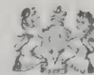
By Appointment.
For Tea, Rubber, Coffee, "The Best in the World." Sugar, Tobacco, &c.
These Fertilizers are manufactured to suit every soil, crop, and climate. They show a handsome profit to the importing houses, and have for many years past been used in all parts of the world.
SHEEP DIPS.
Full Particulars sent post free
on application to
DISINFECTANTS.
INSECTICIDES
Joseph Fison & Co., Ltd.,
Ipswich, England.
Fertilizer Manufacturers to His Majesty the King.
72[JULY, 1914.Studies of seedlings of Hopi maize show that the mesocotyl may frequently develop up to lengths of 36 cm., and it has been possible to note a fact which appears thus far to have escaped notice—namely, that the mesocotyl may give rise to roots at any point on its surface—but these roots are threadlike and do not resemble the roots that arise from the nodes of the culm. They do, however, closely resemble the roots that arise from the radicle immediately below the seed. In grasses, roots usually arise from nodes, not from internodes, and the presence of roots on this organ in maize distinguishes it sharply from subsequent internodes, and is an argument in support of the interpretation that this intercalary growth, long though it is, is really a part of the cotyledon and may properly be termed a mesocotyl. A further reason for retaining the term "mesocotyl" is because the interpretation implied by its use permits more direct comparisons with other groups of monocotyledonous plants, where the organ sheathing the plumule seems undoubtedly to be a part of the cotyledon.
From observations upon many varieties of maize it has become apparent that when a grain of corn germinates in the ground this usually insignificant organ is of vital importance to the life of the plant, for it is through the elongation of the mesocotyl that the shoot is enabled to reach the surface. So long as the seedling remains below ground, away from light, the mesocotyl will continue to elongate until it reaches a maximum length, which we have found to differ in different varieties, but which seems reasonably constant within the variety:—As the mesocotyl elongates, the coleoptyle, with its firm, sharp point, is pushed upward through the soil. As soon as the coleoptyle emerges from the soil, the elongation of the mesocotyl ceases, and elongation of the internode bearing the first true leaf begins, forcing open the coleoptyle.
If the seed is planted so deep that the maximum elongation of the mesocotyl, which in anatomical structure shows a striking relation to the radicle, fails to bring the coleoptyle to the surface, the task of penetrating the soil and reaching light devolves upon the first true leaves. In comparison with the sharp coleoptyle, these leaves are but poorly adapted for forcing their way through the soil, and if the tip of the coleoptyle stops more than a few centimeters below the surface these leaves usually crumple and never reach the light.
In the varieties of maize commonly grown we have been unable to force the mesocotyl to a length greater than 10 cm., while in the Hopi and Navajo varieties this usually minute organ has in our experiments frequently reached the enormous length of 25 or even 30 cm.
It has been frequently stated that the Navajos, like their neighbours, the Hopi and Zunis, plant maize at unusual depths, 15, 30, and even 45 cm. having been reported. Since planting at such depths is known to be impracticable with other varieties, experiments were planned to test the ability of the Navajo maize to pierce the soil. A representative experiment is here reported. A box 70 cm. long, 33 cm. wide, and 34 cm. deep was sunk in the ground. A quantity of sandy loam soil sufficient to fill the box was slightly moistened and carefully sifted. At one end the box was filled to within 1 cm. of the top, the soil sloping in a straight line to within 1 cm. of the bottom at the other end.
Five seeds each of Navajo, Boone County White, and Chinese maize were placed in a row transverse to the inclined surface of the soil, 2 cm. from the top of the box. A similar row was planted at a depth of 4 cm. from the top, and so on at the following depths: 6, 8, 10, 12, 16, 20, 24, 28, and 32 cm. The box was then filled with the soil and struck off level
JULY, 1914.]73with the top. The seeds germinated promptly, and when the most advanced seedlings had reached a total height of about 60 cm. the plants which appeared above the surface were dug up, and the mesocotyl and coleoptyle were measured.
Twelve cm. was the greatest depth from which seedlings of the Chinese variety appeared at the surface. Seedlings of Boone County White appeared from all depths up to 20 cm., while plants of Navajo maize appeared from all plantings, including the very deepest, 32 cm.
There were numerous instances in which the combined length of the mesocotyl and coleoptyle was less than the depth at which the seed was planted. This, of course, means that the upper layers of the soil were penetrated by the true leaves. Maximum depth of soil thus penetrated by true leaves of the plants of the Chinese variety was 5 cm. One plant of Boone County White maize forced its leaves through 8 cm. of soil. In all of the Navajo plants the coleoptyle reached the surface.
The extent to which the seedlings of the Chinese and Boone County White varieties were able to penetrate the soil by means of the true leaves was doubtless much greater in the carefully prepared soil of the experiment than it would be under field conditions, where any slightly compacted lump of soil would deflect the tender leaves and cause them to crumple. On the other hand, many seedlings failed to come up where there was less than 2 cm. between the top of the coleoptyle and the surface of the ground. The results clearly show that the coleoptyle is the proper organ for penetrating the soil, and where this office devolves upon the leaves there will be many plants that fail to reach the surface.
It has been observed in many field plantings that the spatulate first leaf, formerly called the cotyledon, is the first evidence of the germinating plant. When this occurs in any considerable proportion of the plants it is safe to assume that the seed has been planted too deep for the best results.
The three types of maize used in the box experiment were also planted in the field. Four seeds of each of the varieties were planted as follows: At the surface and at 5, 10, 20, 30 and 40 c.m. below the surface. The greatest depth from which plants of the Chinese variety reached the surface was 10 cm., that of the Boone County White was 20 cm., while that of the Navajo was 30 cm.
The seeds planted at the surface were naturally the first to appear, but on June 17th, one month after planting, the largest of the Chinese variety were those from a depth of 5 cm., while the largest plants of both the Boone County White and the Navajo maize were from the 10 cm. depth. On July 11th the plants that came up from a depth of 10 cm. were the tallest in all the varieties, including the Chinese, and to the end of the season this appeared the most favourable depth for the Chinese and Boone County varieties. With the Navajo, however, the plants from a depth of 20 cm. white had equalled those from the 10 cm. depth before the end of July, and from that time the plants from the 20 cm. planting continued to make the most rapid growth, as though this depth represented the most favourable condition for the Navajo variety.
We have observed further that the root systems of the Navajo, Hopi, and Zuni varieties differ from those of the other varieties; the roots of their seedlings extend to a greater depth, and there is only a single root arising from each seed, while in the seedlings of the Chinese and Boone County White varieties the roots are shorter and more numerous.
74[JULY, 1914.The roots of maize are of two kinds : Those that arise from the embryo or seed, called "seminal roots," and those produced from the nodes of the plant. Of the latter class those that arise from the nodes above the ground are often called "brace roots" or "aerial roots." In the varieties commonly grown in the United States there are, in addition to the primary root, or radicle, from two to six additional roots that arise from the base of the cotyledon. These secondary seminal roots, though appearing somewhat later, usually equal or exceed the radicle in size. In the Pueblo varieties of maize these secondary seminal roots have been absent in all seedlings thus far examined, the radicle being the only root arising from the seed.
In September, 1913, opportunity was afforded for a visit to the Zuni, Navajo, and Hopi Indian Reservations of Arizona and New Mexico. It was thus possible to form some idea of the agricultural significance of the peculiar habits of germination of this type of maize.
The value of deep planting made possible by the greatly elongated mesocotyl was obvious. In the localities selected by the Indians for planting maize the soil is sandy, and in the absence of spring rains the surface layers are, of course, very dry. The seed, to germinate at all, must be planted deep enough to be in contact with the moist soil. In Navajo fields near Tohatchi, N. Mex., plants were dug up, and the remains of seeds were found at depths ranging from 13 to 18 cm. below the surface. Similar depths were found in a Zuni field near Black Rock, Ariz. In a Hopi field at Polacca, Ariz., near the First Mesa, where the conditions are extreme, the seed had been planted at a depth of 25 cm. It thus appears that there is no fixed depth for planting, the custom being to plant deep enough to place the seed in moist soil. If the seed were planted at ordinary depths, germination might be delayed until the latter part of June or the first of July, at which times the rains usually occur; or if the seeds germinated as a result of one of the occasional showers occurring in May, the plants would die from subsequent desiccation.
Like the long mesocotyl, the simple radicle of the Pueblo varieties of maize may be looked upon as an adaptation to the extreme conditions that exist where these types are grown. For six or eight weeks after planting, no rain can reasonably be expected, and during this time the moisture is constantly receding from the surface. By concentrating the energy of the seedling into a single root the latter is forced to greater depths and consequently kept in moister soil than would be the case were a number of seminal roots developed.
Under ordinary conditions, where moisture is distributed through the entire seed bed, the seminal roots become of little importance as soon as the seedling is established and nodal roots have developed. If a half-grown or nearly mature corn plant is carefully dug up, the seminal roots and traces of the seed can still be found, but they are usually dry and shrunken and are obviously of little use to the plant. This was also the condition found in Navajo and Zuni maize fields, though the seminal root was more strongly developed than in the eastern varieties. But in the more extreme conditions existing in the fields near the Hopi villages, the seeds were planted deeper, and were still alive and fresh, making it apparent that they retain their function of supplying moisture and are able to play an important part during the entire life of the plant.
In one Hopi field at the base of the First Mesa the hills of maize were planted about 20 feet apart, with from 10 to 20 plants in a hill. The soil was apparently pure sand washed down by the winter rains and entirely destitute of vegetation other than the planted maize. An average hill dug up in the field was found to contain 15 plants ranging from 60 to 90 cm. in height. The remains of the seeds were found at 25 cm. from the surface, and from
JULY, 1914.]75each seed there descended a single large seminal root. These seminal roots were traced to a depth of 35 cm. and extended even farther down. They were still fresh and densely covered with fine branches. This mass of 15 seminal roots, while less in volume than the nodal roots arising near the surface, was apparently playing an important part in the support of the plants. The mesocotyls connecting the seminal roots with the plants above, while dry on the outside, were filled with live tissue quite unlike the dry and shrunken mesocotyls found in plants of similar age grown under more favourable conditions.
When planted by the Indian methods, the Hopi and Navajo varieties of maize have been found superior to the more improved eastern varieties for these very dry regions. At the time of our visit there was a small field near Keams Canyon that had been planted by eastern methods. The plants were in rows and thinned to one stalk to the hill. There had evidently been a fair germination, but the plants had died without reaching maturity and had produced no seed. At the same time, in the nearest Indian fields at Polaccas the plants were dark green and maturing a fair crop, though the season was said to have been unusually dry.
Even under irrigation the somewhat larger strains grown by the Navajos have been found to compare very favourably with eastern types. Several acres of Navajo maize were seen at Shiprock, N. Mex., under irrigation. The fields were very uneven, apparently the result of alkali, but in the better portions the yield was good. The plants were standing about 2 feet apart in the row, the rows 4 feet apart, and nearly every plant was bearing from two to four fair-sized ears.
The ears from 36 plants, representing a number of distinct types, were collected. The 36 plants bore in all 94 ears, weighing 37.6 pounds, an average of 15.2 ounces per plant. The plants producing these ears averaged only a little over 5 feet in length.
Throughout the western part of the Great Plains area the difficulty of securing uniform germination is a serious obstacle to the growing of maize. With the varieties commonly grown, if the seed is planted at the customary depth, many seeds fail to germinate from insufficient moisture; if planted deep enough to come in contact with moist soil, the plant may fail to reach the surface.
The agricultural Indians of the south-west have continued from prehistoric times to grow maize successfully in regions where drought, and especially the absence of spring rains, makes it much more difficult to start the crop than in the Great Plains. A study of the varieties grown by the Hopis and other agricultural Indians shows that these varieties possess two special adaptations: (1) a greatly elongated mesocotyl that permits deep planting and (2) the development of a single large radicle that rapidly descends to the moist subsoil and supplies water during the critical seedling stage.
This indigenous type of maize seems to have attracted little attention, perhaps because it has been included in the popular mind with a series of inferior varieties commonly known as "squaw corn." But the Pueblo Indians of Arizona and New Mexico have strains sufficiently productive to compare favourably with improved varieties even when grown under irrigation. The peculiar adaptations of this type definitely indicate its value for the semi-arid regions and warrant experiments to determine the possibility of its utilization.
—JOURNAL OF AGRICULTURAL RESEARCH.
76[JULY, 1914.A discovery which should prove of great interest to housewives and mothers has recently been brought to perfection in a London chemical laboratory. This is a process of manufacturing synthetically a pure and wholesome milk of high nutritive value, possessing all the virtues of the original article but none of its many dangers.
The discovery originated many years ago as the result of the ingenuity of a Chinaman who saw a possible substitute for milk in the native drink prepared from the soya beans. His efforts, however, met with only partial success owing to the fact that the fluid prepared by him had an exceedingly penetrating and—to Western palates—disagreeable taste. It was left to a German chemist to lay the foundations of the present synthetic milk by suggesting a composite fluid, made up of all the ingredients of cow's milk in correct proportion.
This suggestion was widely discussed about two years ago, but the many obvious difficulties standing in the way of its realization caused the public to regard it more as a dream than a possibility. One or two chemists, however, attracted by the idea, continued to work at the subject, with the result that synthetic milk is now an accomplished fact!
The fluid (says the TIMES), as far as its appearance is concerned, is quite indistinguishable from rich cow's milk. It is delightfully smooth on the palate. On the other hand, the taste seems to some persons slightly different from that of ordinary milk. It is said that even this slight "taste" can be removed at will. A dairyman was recently asked to express his opinion of the new milk, and two glasses, one containing his own milk and the other the artificial fluid, were placed before him. He praised what he supposed was his cow's milk and expressed a very modified appreciation of the other. His surprise on learning of his error was naturally great.
The new milk has been built up from a basis of casein obtained from the soya bean. Casein, of course, is likewise the basal constituent of cow's milk. The beans are treated by a special process whereby all oil and waste matter are removed and only the pure casein left. To this basis are added in exact proportions fatty acids, sugars and salts and emulsification is carried out.
The difficulty of producing a perfect emulsion (milk is one of the most perfect emulsions known) has been completely overcome, the new fluid satisfying every test in this direction, even to the extent of refusing to "cream."
Milk, however, is something more than a food substance; it is a living fluid containing a definite strain of bacteria which assist in its digestion. In order that the synthetic milk may approximate in all respects to the real milk bacteria of the required strains, including the lactic acid (sour milk) bacilli rendered famous by METCHNIKOFF a few years ago, are introduced to the fluid and permitted to act upon it until it reaches exactly that state of what may be termed maturity at which fresh cow's milk is obtained. That it is indeed a real milk is proved by the fact that excellent cheese and "butter" can be made from it.
The advantages of the new milk are obvious. It is, of course, free from all suspicion of being contaminated with "milk-borne" diseases like tuberculosis, scarlet fever, or diphtheria. It can, moreover, be made up in any
JULY, 1914.]77proportions desired, that is, with more or less casein, fat, sugar, or salts, and thus can be supplied to children and invalids according to a medical prescription. Finally, the new milk can be produced more cheaply than any ordinary milk, and should thus prove a real boon to the poor.
The distinctive taste of the milk is due to the use which is made of the soya bean. It is almost impossible to describe it, since like the taste of celery or cinnamon it is peculiar to itself and characteristic. A sample of the milk was submitted to a food expert who has travelled extensively in the Far East, with the request that he would, if possible, name the ingredient imparting the flavour to it. Without hesitation, and with a smile at the pleasant memories recalled, he declared "Soya," and added: "The history of that bean is like a romance."
That this statement is no exaggeration is proved by the fact that while the first consignment of soya beans was sent to Europe so recently as 1906, to-day Western requirements are something like a million tons a year. The beans are grown in China, Japan, Korea, and Manchuria, where they have long been valued for their oil and for the waste products after the oil has been extracted, which are used as fertilizers in the rice and sugarcane fields. Vermicelli biscuits and other foodstuffs are also manufactured from the beans.
In this country the soya oil has now a very ready and extensive market. It is used instead of the cotton seed variety on account of cheapness. Soap manufacturers are also coming to depend upon it. The chief use, however, would seem to be as cattle cakes for winter feeding. That the article which has fed so many milch cows during the last few years should itself be used in the making of artificial milk is undoubtedly something of a coincidence.
Most of the soya beans entering this country pass through Hull, which, with its great oil and seed mills, is the natural centre for such a commodity. This import trade is already a very extensive one, the freights on soya beans having mounted up to a figure somewhere in the neighbourhood of £1,000,000 per annum. In addition a considerable export trade has recently sprung up owing to the demand of Continental dairy farmers for soya meal.—INDIAN AGRICULTURIST.
Diyatalawa Mills, Vauxhall Street, Slave Island.
Fowls Rs. 18, 15, 10.50, and Rs. 9 per dozen. Ducks Rs. 15, Geese Rs. 60,
Turkey cocks Rs. 120, Turkey-hens Rs. 90 per dozen
Guinea fowls Rs. 48, Pigeons Rs. 6, Partridges Rs. 6, per dozen.
Quails to order.
Pigs, Porkers, cts. 35 per lb. live weight, Sucklings Rs. 7.50, 5 and 3.
Eggs, fresh, 75 cts. per dozen.
Telephone 1087 and 285,
Telegrams: Wally, Colombo
Usual discount to the TRADE.
78[JULY, 1914.The most beautiful colours in nature—the reds, blues, and purples of flowers and fruits—have withheld the secrets of their composition longest; but, as the result of the work which PROFESSOR R. WILLSTATTER (of the Kaiser Wilhelm Institute for Chemistry, Berlin) and his collaborators have carried out during the last three years, the chemistry of these pigments is now known.
So long ago as 1905 incentive to this work was given by H. MOLISCH, the distinguished Viennese botanist, who proved that these pigments—which were generally looked upon as amorphous substances—not only exist in many flowers in a crystalline condition, but may be isolated as microscopic crystals.
A paper published last year by WILLSTATTER and EVEREST foreshadowed interesting developments in this field, but the rapidity with which the investigations have advanced must have surprised even the investigators themselves. Proof has now been obtained that, in all investigated cases, these colouring matters (the anthocyanins) are members of one class of chemical compounds, and, moreover, that they are closely related to the colouring matters of many yellow flowers. This latter result is a confirmation of similar conclusions arrived at independently by various other workers.
To the flower-lover there are many points of interest which arise from this work, and a few such may be mentioned.
It has been shown that most of these pigments—which in themselves are purple—have the power of combining with acids to form substances which vary in colour from bright red to magenta, whereas, on the other hand, by uniting with alkalis, they give rise to blue colouring-matters. The horticulturist who for years has striven to obtain a blue Rose will be interested to know that these researches have shown that the colouring matter present in the Red rose is identical with that which imparts to the Cornflower its fine blue colour. The only difference between them is that in the red Rose the pigment is united with a plant acid, whereas in the Cornflower it is combined with potash. From this it appears that there is no reason why success should not ultimately attend the efforts of those who may devote themselves to the production of this novelty.
In like manner it has been observed that the pigment of the ordinary Poppy does not seem to possess the power of combining with alkalis to produce a blue compound, hence it would appear useless to attempt the production of a blue flower in this case—a variation from red to purple only being obtainable.
For years the deep red Hollyhock has been grown on a large scale in various continental countries, and the dried flowers have been used extensively for improving the tint of poorly-coloured wines. This adulteration led to many attempts being made to discover a method of detecting the presence of the adulterant, but in view of the very close resemblance between the pigments it seemed almost impossible to expect success, and previously all such attempts had failed. The work of PROFESSOR WILLSTATTER, however, has shown exactly how the pigments of the Grape and of the Hollyhock are related to each other, and has led to a successful method—involving the use of ferric chloride—for distinguishing between these pigments.
In most cases the method of obtaining pure crystalline pigments from flowers has been reduced to a few very simple operations, e.g., it is often sufficient to extract the colour with alcohol containing either hydrochloric or acetic acid, precipitate it from this extract by the addition of ether, then take
JULY, 1914.]79up the solid so obtained in dilute hydrochloric acid, from which it separates in crystals. From the red Rose, crystalline pigment equal to 1 per cent. of the weight of dried petals can thus be obtained, whereas the Cornflower only contains about 0.6 per cent of pigment, and it is far more difficult to obtain it from this flower. In the Pelargonium zonale the amount of pigment rises to - per cent. of the weight of the petals.
It has been shown that the power which these pigments possess of combining with acids is dependent upon oxygen, and not, as is so often the case in organic compounds, upon the presence of nitrogen in them. They contain no nitrogen.
For a long time differences of opinion have arisen as to whether or not these colouring matters—like so many naturally occurring compounds—exist in the plants in chemical combination with sugars. The researches above mentioned prove conclusively that they do.
Thus is added to the credit of the scientist the discovery of one of the most obscure of Nature's secrets, but, like most such work, it leads him on to further problems. His work has shown what these beautiful substances are; the problem now arises, How are they produced in the plant laboratory? Let us hope that ere long this question, too, may be answered.—ARTHUR E. EVEREST in THE GARDENERS' CHRONICLE.
Fibres, Cotton, Grain, Oil Seeds, Hides and Skins, Timber, Rubber, Drugs, Wool, Ores, Mica, Gums, Tea, Cocoa, Coffee, Copra, Sugar, etc., are being regularly dealt in; Keymer, Son & Co., being selling Agents for Estates, Mills and Exporters.
Samples Valued.
Best Ports for Shipments Indicated.
THE MANAGEMENT OF
ESTATES UNDERTAKEN.
Capital found for the development or purchase of valuable properties.
KEYMER, SON & Co.,
Whitefriars.
LONDON, E.C.
(Same address since 1844.)
Cables:
KEYMER, LONDON.
BY L. NICOLAS.
The oil palm (Elaeis Guineensis) is one of the principal riches of French Guinea. It is found in abundance in the whole coastal belt and its products (palm oil and palm kernels) give rise to numerous commercial transactions, which increase from year to year.
The higher price commanded by oil products, and the falling price and lesser production of rubber are causes drawing attention to this plant at the present moment.
Many species of Elaeis are not yet exploited, even near the coast. Such is the case, for example, in the Los Islands situated opposite Conakry, where more than 100,000 oil palms are never touched.
The species of Elaeis are especially numerous and form dense groves at Bagataye and Cape Verga. In this region the Bagas exploit them regularly, and they form a constant source of revenue : in exchange for palm kernels they can always procure rice and cloth.
The oil palms are common property, or more exactly, are the property of a village or a canton.
I shall not give a botanical description here. It will suffice, from this point of view, to refer to the "Documents sur le palmier a huile" published by M. A. CHEVALIER ! I shall simply put on record that I have seen numerous fruit branches terminated by male flowers, and, in the Los Islands, an Elaeis, the stem of which was branched several times.
Having had the good fortune to remain attached for a sufficiently long time to the same post, I have been able to undertake a thorough practical study of the annual yield of Elaeis guineensis, and am fortunate to be able to give here, as exact details as could be wished for, on this question.
To collect the crop, the natives climb up the trees by means of an elliptical hoop made from the midribs of the leaves of young Elaeis. According to the local custom, a Bagas ought to make for himself the apparatus which he uses, and not employ that of another person, nor destroy his own when finished with : for, in the popular belief, whoever does not observe these rules runs the risk of killing himself in climbing the palms : also, the hoops when too old for further use, are deposited near the villages with the old pestles.
The natives, armed with a straight instrument having a cutting end, cut the fruit branches at the base, and throw them down to the ground. These are carried entire to the village, and left near the houses for fifteen days, to allow them to ripen completely. They are then cut up with an axe, and the fruits, thus detached, are laid in the sun for two or three days, in order to obtain absolutely complete maturity.
These fruits are then put in an earthenware vessel, of native manufacture, or in a big cast iron pot, previously filled with water, and resting directly on a fire of palm leaves. Under the action of the heat, the oil-bearing cells of the pulp burst, and allow a part of their oil to escape. The
JULY, 1914.]81fruits thus boiled are thrown into wooden mortars, where the women completely disintegrate them by pounding. The whole is finally emptied into the pot, and put back on the fire, with water already hot, and brought to the boiling point a second time.
This operation completed, the women take up the mass formed by the pulp and the kernels in their shells, by means of baskets with broad meshes, and empty it, after allowing it to drain, into another pot containing more boiling water.
On allowing it to cool, the oil rises to the surface. The pulp mixed with a few fruits also rises to the top. It is removed after being strongly pressed between the hands.
Finally, the heavier nuts are put on one side, spread out in the sun and broken one by one between two stones, and then well dried. The palm kernels thus obtained are put in sacks and sent to market.
The merchants buy the oil by the bushel of fifty litres : certain business houses on the contrary buy by weight. Generally speaking the palm kernels are bought by the bushel if they are wet, and by weight when they are dry.
The price of palm kernels, which was 280 francs per ton in September 1906, rose to 350 francs per ton in September 1912, on the market in Conakry.
The financial results of palm oil exploitation were published in the previous issue (Vol. XLII, No. 6, p. 490) of the TROPICAL AGRICULTURIST.
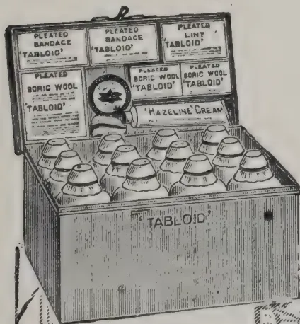
Compare this well-ap pointed Tabloid Medicine Chest with the old-time and unnecessary collection of apparatus and bottles, pots and parcels of medicaments which were often of uncertain strength and unstable.
TRADE MARK
Contains pure and reliable medicaments in compact doses, ready and easy to take.
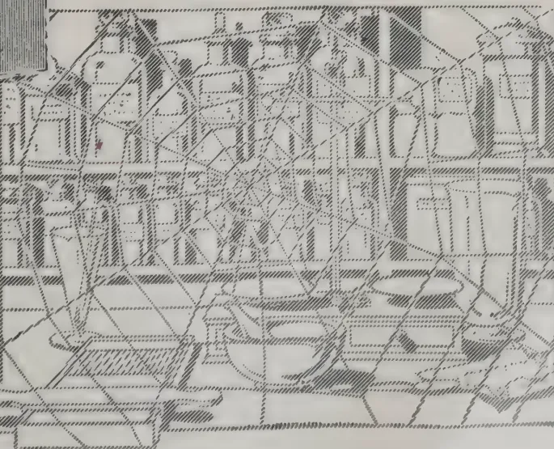
Dispensing made easy
No weighing No waste
Extremely light and climate-proof
Measures
in.
In Japanned Metal, of all the principal Chemists and Stores
xx 976BURROUGHS WELLCOME & Co., LONDON
NEW YORK MONTREAL SYDNEY CAPE TOWN MILAN SHANGHAI
BUENOS AIRES BOMBAY
All Rights Reserved
82
[July, 1914]
| RECEIPTS | Rs. | CS. | Rs. | CS. | |
|---|---|---|---|---|---|
| To BALANCE AT BANK OF MADRAS & Co., 31st Dec. 1912 | 1,575 | 24 | |||
| MEMBERS' SUBSCRIPTIONS | |||||
| Local Subscriptions for 1909 | 0 | ||||
| do | 1910 | 70 | |||
| do | 1911 | 112 | |||
| do | 1912 | 488 | |||
| do | 1913 | 5740 | |||
| do | 1914 | 510 | |||
| do | 1915 | 10 | 448 | ||
| Foreign Subscriptions | 5843 | 33 | |||
| Less share for 1912 paid to A. M. & J. FERGUSON | 502 | 5429 | 33 | ||
| .. GOVERNMENT GRANT FOR 1913 | |||||
| .. INTEREST | 27281 | ||||
| On Mercantile Bank | 210 | 20 | |||
| .. SEED SUPPLIES | |||||
| Excess Sale over Purchases | 218 | 58 | |||
| Purchases. | |||||
| Sales. | |||||
| Vegetable Seeds | 234 | 50 | 155 | ||
| Grafted Plants | 1100 | 01 | 1458 | 48 | |
| Grass | 5 | 95 | 34 | 82 | |
| Soya Beans | 108 | 13 | 94 | 67 | |
| Doob Grass | 124 | 28 | — | ||
| Flower Seeds | 5 | 72 | — | ||
| Paddy | 356 | 85 | 258 | 87 | |
| Sorghum | 2 | 63 | — | ||
| Coffee | 135 | 13 | 145 | 30 | |
| T. Purpurea | 12 | 42 | 17 | 17 | |
| Mangosteen | 5 | 00 | — | ||
| Cotton | 21 | 47 | 178 | 30 | |
| Maize | 13 | 00 | — | ||
| Onion | 9 | 96 | — | ||
| Bursum | 5 | 50 | 2 | 30 | |
| Barley | 5 | 10 | — | ||
| Bhere | 1 | 47 | — | ||
| Cholum | 8 | 20 | — | ||
| Sundries | 17 | 40 | — | ||
| Coconuts | 20 | 31 | |||
| Ground Nuts | 6 | 88 | |||
| 2158 | 81 | ||||
| Excess Sales | 218 | 58 | 2378 | 50 | |
Rs. 77108 7
We certify that we have prepared this account of Receipts and Payments from the books
JULY, 1914. ]83| PAYMENTS. | Rs. | Cts. | Rs. | Cts. | ||
|---|---|---|---|---|---|---|
| BY GENERAL EXPENDITURE | ||||||
| Organising Vice President | ... | 3000 | ||||
| Secretary | ... | 1500 | ||||
| Assistant Editor | ... | 499 98 | ||||
| Proof Reader | ... | 120 | ||||
| Clerks & Peons | ... | 4661 75 | ||||
| Agricultural Instructors | ... | 5312 29 | 15094 | 02 | ||
| Stationery | ... | ... | 367 | 69 | ||
| Postages and Telegrams | ... | ... | 1859 | 12 | ||
| Office Furniture | ... | ... | 824 | 89 | ||
| Bank Charges and Commission | ... | ... | 145 | 87 | ||
| Miscellaneous Petty Expenses | ... | ... | 1071 | 95 | ||
| Printing General | ... | ... | 910 | 64 | ||
| Auditors' Fee for 1912 | ... | ... | 150 | 20424 | 18 | |
| ,, TRAVELLING EXPENSES | ||||||
| Secretary | ... | ... | 1475 | 42 | ||
| Agricultural Instructors | ... | ... | 9567 | 16 | ||
| Show Judges, &c. | ... | ... | 16 | 50 | ||
| Organising Vice President and Staff | ... | ... | 52 | 61 | 11111 | 69 |
| ,, TROPICAL AGRICULTURIST & MAGAZINE OF C. A. S. | ||||||
| Printing English Magazine | ... | ... | 6754 | 98 | ||
| " Tamil Edition | ... | ... | 203 | 99 | ||
| 6958 | 97 | |||||
| Less Received for Advertisement | ... | ... | 993 | 80 | ||
| 5965 | 17 | |||||
| Add Singhalese Magazine Editor's Fee | 450 00 | |||||
| Printing, Postages, &c. | 1284 75 | |||||
| 1734 75 | ||||||
| Less Subscriptions received | 757 87 | 976 | 88 | 6942 | 05 | |
| .. PURCHASE FROM A. M. & J. FERGUSON TROP. AGRI. | ||||||
| Stamps & Fees | ... | ... | 30000 | |||
| 176 | 50 | 30176 | 50 | |||
| .. APICULTURE | ||||||
| 99 | 11 | |||||
| .. AGRICULTURAL SHOW EXPENSES | ||||||
| Grants Kalutara District | ... | ... | 200 | |||
| .. SERICULTURE EXPERIMENTAL FARM | ||||||
| Grant to Salvation Army | ... | ... | 500 | |||
| .. EXPERIMENTAL GARDENS | ||||||
| Bandaragama | ... | 200 | ||||
| Ballala and Hellipola | ... | 180 | ||||
| Jaffna | ... | 75 | ||||
| Kegalle | ... | 208 26 | ||||
| Madipola | ... | 25 | ||||
| Puttalam | ... | 115 | ||||
| Vavuniya | ... | 25 | ||||
| Hambantota | ... | 8 75 | ||||
| Balangoda | ... | 230 | ||||
| Paddy | ... | 30 | ||||
| Nugawella | ... | 38 60 | ||||
| Nakawattee | ... | 23 | ||||
| Anamaduwa | ... | 200 | ||||
| Ambalatota | ... | 110 85 | ||||
| Mediwake | ... | 150 | ||||
| Badulla | ... | 151 50 | 1770 | 96 | ||
| Less Madipola | ... | ... | 25 | 1745 | 96 | |
| 135 | 89 | |||||
| .. AGRICULTURAL TRAINING | ||||||
| .. SEED STORE AT GOVERNMENT STOCK GARDEN | ||||||
| Coolies' Wages | ... | ... | 180 | 00 | ||
| Almirah | ... | ... | 37 | 25 | ||
| Miscellaneous | ... | ... | 162 | 19 | 379 | 44 |
| 56 | 57 | |||||
| .. AGRICULTURAL IMPLEMENT | ||||||
| .. CASH IN HAND | ||||||
| Mercantile Bank | ... | ... | 5211 | 60 | ||
| Stock of Stamps | ... | ... | 185 | 72 | 5397 | 32 |
| Rs. | 77168 | 71 | ||||
of the Society and that to the best of our belief it is correct.
FORD, RHODES., CHURCH & Co.,
Chartered Accountants
84[JULY, 1914.During the winter the Japanese camphor oil market, considered as a whole, has remained unchanged. Traffic in this important raw material is made very difficult by the practice of the Japanese to dispose of the different grades of the oil only in parcels assorted in definite proportions. If a buyer, for instance, wishes to acquire 1,000 cases of white camphor oil, he is obliged to buy at the same time several thousand cases of brown oil, for which, possibly, he may have no use until the distant future. This business custom of the Japanese greatly impedes operations in camphor oil, and it is to be regretted that, as we are informed, there is no prospect of the abolition of the restriction thus forced upon buyers. The call for our light camphor oil has at times been particularly brisk, especially from England, whence during the month of February an exceptionally strong demand manifested itself. It is true that our stock of heavy camphor oil has not been drawn upon to the same extent, but this oil also has gradually become indispensable for many technical purposes. The prices of both qualities have remained unchanged, and the steady sale is likely to keep the values at their present level during the near future.
The local authorities of the District of Tokyo have last year initiated experiments on a large scale in planting camphor trees on the island-groups situated in the Bay of Tokyo, and especially on the large volcanic Island of Oshima and on the Hachijojima group, north of the Bonin Islands. The trees have stood the summer well, and are said to be making rapid growth. As a result, neighbouring local authorities have followed the example of Tokyo, and afforestation with camphor trees is at present being carried out on the islands near Idzu and on the Bonin Islands. At the beginning of November the first experiment in camphor refining was also made at Oshima, and if the experiments should be successful, the Tokyo local authorities intend to lease the exploitation of camphor on their islands to private companies. In the Island of Formosa, the principal centre of production of Japanese camphor, the last business year has been a very good one. In 1911 the Monopoly Bureau's exports reached a total of 5, 7 million lb., of a value of 3, 6 million Yen, but in 1912 the figures were 8, 7 million lb., of a value of 5, 6 million Yen. The principal buyers were the United States and Germany, each of which took about 2, 3 million lb.; old Japan took 1, 7 and England 1 million lb., France about 900,000 lb. and India 300,000 lb. For the current year the figures for America and Germany are pretty much the same, England and France have taken considerably increased quantities, and the Indian takings have trebled. But the greatest increase of all is with Old Japan which, it is true, re-exports in turn to other countries, but whose own camphor industry is nevertheless the principal factor accounting for these increased imports. Side by side with the increase in exports there was a reduction in the output in Formosa, with the result that the stocks there are now pretty nearly exhausted. For this reason the management of the Monopoly is now engaged in devising measures for accumulating a sufficiency of fresh supplies as soon as possible. The result of the experiments in the preparation of camphor from leaves has shown that the quantity of camphor contained in the leaves of the tree equals about 25 per cent. of that which is obtainable from the trunk, branches, and twigs. To the question whether enough camphor trees are being planted to compensate for those that are cut down, the Monopoly authorities return a distinct affirmative. It is said that in the districts inhabited by subdued aborigines large areas of camphor trees have also been found to exist, and that there is consequently no cause for anxiety as to the future production of camphor.
JULY, 1914.]85We have already on a previous occasion pointed out that the camphor monopoly hopes to find a fresh source of production of camphor in the distillation of camphor leaves. Experiments on a large scale in this direction are being conducted at present at the experimental station on the Tempai mountain (Fukuoka), which is situated in a camphor plantation. This plantation contains about 58,000 trees, which were planted in the year 1908. The daily capacity of the experimental station is 2,000 gallons of oil, or 317 gallons from 400 lb. of leaves (?) Four distillations are carried out daily, the camphor-content of the oil being estimated every three hours. The exhausted material is used as fuel.
At the present time there are over 500,000 camphor trees on the Island of Kiu Shiu (Saikaido), distributed over an area of more than 60,000 acres. As camphor leaves are easily transportable, it would be possible to work up the leaves from a large district in one central station. When distilling camphor wood it is inconvenient to go far afield from the collecting centre, because the wood, being heavy, is not so readily transportable.
Perhaps the projected scheme for a World's Camphor Trust, of which reports appear in the press from time to time, may be connected with the alleged unfavourable position of the Japanese camphor industry. It is said that a preliminary understanding has already been reached between the Kobe houses and the European merchants but that the negotiations with the United States have not yet led to the desired result.—REPORT OF SCHIMMEL & Co.
TO THE EDITOR OF THE TROPICAL AGRICULTURIST.
SIR,
Planters in the E. Indies and elsewhere have frequently expended large sums of money in producing various crops, which fluctuated greatly in value and ultimately were eradicated through becoming unprofitable. With nuts of any kind this is not likely to occur; as there is always a good demand therefor which increases with population. Great Britain and the United States, to say nothing of other countries, are large consumers and the cultivation of palatable and popular fruits of good keeping quality will prove a lasting and remunerative enterprise. Just now there is a great demand in England and the United States for fruit of this description, amongst which may be enumerated three new nuts, viz. the Peli Nut, or Java Almonds (Canarium ovatum), the Paradise Nut (Lecythis labucajo), and the Queensland Nut (Macadamia ternifolia). It is said that commercially the Peli Nut is the most important which has appeared on the American market during recent years. The nuts have a very thick shell, but the kernel is so delicate and nutritious that an emulsion of it is frequently used as a substitute for milk in bringing up infants. A valuable commercial oil is pressed from them, while the resin of the tree is the "gum elemi" of pharmacists, used in plasters and ointments. Even the pulpy husk of thoroughly ripe nuts is eaten by Filipinos in some districts.
The tree attains a height of 50 feet and the nuts furnish an important article of food to the natives, but they are considered very unwholesome if eaten fresh, and cause dysentery and diarrhoea. They are eaten both raw and roasted, and in Amboyna they are converted into bread which is made in rolls about a yard in length and one inch thick; they are also made into a sort of marmalade. An oil is expressed from them which is used at the table when fresh, and in lamps when stale.
86[JULY, 1914.The Paradise Nut is somewhat similar to the Peli and is a near relative of the common Brazil Nut. The native name is Sapucaia and under this name it is sold in Europe. The designation "Paradise Nut" appears to have originated in New York. The seeds are enclosed in hard, woody "pots" or "urns," provided with lids which fall when the fruit is ripe, allowing the nut to drop to the ground. These nuts in the United States bring 75 cents or 3s 1½d per lb. The preference for them is due to the fact that the meat is considered of a finer flavour as well as more digestible. The shell, moreover, is thin, in pleasing contrast to either the Peli or the Queensland Nut which both have very thick, hard coverings. The trees attain a large size and furnish excellent timber which is considered particularly resistant to the attacks of teredos and barnacles in salt water.
The Queensland Nut (Macadamia ternifolia) is more interesting than either of the two preceding, as it bears earlier and can be cultivated in a wider extent of country. It is resistant to drought and fairly resistant to frost, and promises to be of much value commercially. Small shipments to London are said to have been sold at 10/-per lb. There are about 50 nuts to the lb. The fruit is a drupe with fleshy exterior; the brown kernel (the nut itself) has a shiny surface. The meat enclosed therein has a delicious flavour, closely resembling that of the Brazil Nut. It requires very little care or water, wherefore it should be highly prized in semi-arid localities. The cultivation of this nut tree should prove one of the most reliable and lucrative enterprises for planters in the E.Indies.
Yours faithfully,
B. HARRISON, F.L.S.
Burringbar P.O.
N. S. W., Australia, 7-5-14.
[Macadamia ternifolia was introduced into Ceylon in 1868, and bears fruit at Peradeniya. It might form a welcome addition to a bungalow garden, but opinions differ as to its edible qualities. There is no fortune to be made out of the cultivation of dessert nuts.]
BY PAUL AMMANN.
The oil palm, distributed over a large part of tropical Africa, but particularly abundant round the Gulf of Guinea, furnishes palm oil and palm kernels, which enter in enormous quantities into the manufacture of candles, soap and vegetable butters. In the year 1909 the total export from West Africa (from Gambia to Angola) was 100,000 tons of palm oil, and 250,000 tons of palm kernels, representing a value of about 200 million francs.
This enormous production, however, does not meet the consumption, which increases more rapidly than the production. Consequently, on the market, the price of oil stuffs increases daily, and there is at present an endeavour to develop this production of oil stuffs; in the case of the oil palm, either by improving the native processes of extraction, and replacing them with machinery, or by bringing into exploitation palms as yet unexploited, or finally by creating in certain countries new palm plantations.
The oil palm is one of the chief resources of Gabon, but trade and natives have not yet drawn on it to its fullest extent, and large numbers of palms are not yet exploited even in the coastal regions which are easy of access.
JULY, 1914.]87The climate and soil in Gabon, being extremely favourable to the oil palm, permit of an abundant fructification, estimated at an average of 8 to 10 fruit branches of 12 kilos each, representing 100 kilos of fruit branches per tree per annum : these fruit branches bear fruits, which are more bulky than anywhere else in Africa.
The data collected below were obtained by analysis made on samples collected on the banks of the Ogooné, and sent to the Jardin Colonial by M. F. COTON.
The following is a summary of the statistics given—
| Weight of an average fruit branch | - | - | 13 kilos |
| Yielding fresh fruits (about 20 % water) | - | - | 7.8 " |
| or dry fruits (about 4 % water) | - | - | 6.5 " |
Two samples were taken of fruits :
No. 1 Average weight of fruit 8 grams
No. 2 " " " 11.2 "
No. 1 gave Pulp 38.2 per cent.
| Nuts | 61.8 | " | { Shell | 43.5 % |
| { Kernel | 18.3 % |
Average weight of nut 4.9 grams
" " kernel 2.4 "
No. 2 gave Pulp 20.0 per cent.
| Nuts | 80.0 | " | { Shell | 63.76 % |
| { Kernel | 16.24 % |
Average weight of nut 8.8 grams
" " kernel 1.6 "
| Composition of Pulp. | Composition of Kernels. | ||||
|---|---|---|---|---|---|
| No. 1. | No. 2. | No. 1. | No. 2. | ||
| per cent. | per cent. | per cent. | per cent. | ||
| Water | ... | 3.29 | 4.5 | 8.5 | 10.8 |
| Oil stuff | ... | 77.14 | 65.48 | 45.9 | 47.8 |
—L'AGRONOMIE COLONIALE.
The text of the draft convention which was prepared at this conference has now been issued by the International Agricultural Institute at Rome, and the Governments which were represented on that occasion will be invited to consider whether they will signify their formal acceptance of the proposed agreement. Their decision will depend on political and administrative reasons with which we are not here concerned, but the suggestions contained in the document mark an advance in public opinion on the subject of plant diseases of great interest to men of science, which cannot be entirely overlooked. The delegates of thirty independent States have decided that it is desirable that a uniform procedure should be adopted to control the spread of those
88[JULY, 1914.]diseases which have in the past done so much injury to agricultural and horticultural crops, and, indeed, are still doing so, and that this procedure should include both the scientific study of the insect and fungus pests at one or more Government phytopathological stations in each country, and the application of remedial measures by administrative order where these pests exist.
The official acceptance of this policy would in any case give a great stimulus to the study of applied biology, and would tend to concentrate the attention of entomologists and mycologists on economic problems. But the scheme contemplated by some of the articles of the convention is likely to be productive of even more important results. It was evidently felt impossible to prepare a list of dangerous diseases applicable to all countries, and while, on the one hand, it was decided not to legislate for those diseases which attack agricultural crops, such as seeds, grain, potatoes, and other "articles de grande culture," each Government is invited to prepare a list of those diseases against which it wishes to be protected. The preparation of such a list is bound to be difficult, since many of the diseases which are comparatively harmless in a country where they have been established for many years are apt to assume a virulent character when introduced into a country where they are unknown. The ravages caused by the Brown Tail Moth (Euproctis chrysorrhoea) and the Cotton Boll Weevil (Anthonomus grandis) in America, by the Vine Louse (Phylloxera vastatrix) and the American Gooseberry mildew (Sphaerotheca mors-Uvae) in Europe, are familiar examples. The attention of official plant pathologists will have, therefore, to be directed not only to the study of the pests of their own country, but also to those of other countries the character of which is such that they might prove dangerous if introduced. [It is difficult to imagine an official plant pathologist who neglects this duty. —ED. T. A.]
The field for this kind of research is, of course, very wide; but lest an opening should be given to unreasonable and alarmist measures likely to cause a serious disturbance of trade, it is laid down in a very important article what are the conditions on which the list must be prepared. It is wisely declared that the list must be as restricted as possible, and must not include any of those common pests which are widely distributed in almost every country, and are well established there. (Les espèces banales, dont la dispersion déjà ancienne s'étend à presque tous les pays). Moreover, the pest must be epidemic in character, and destructive, or at least very injurious, in action, as well as be easily capable of being conveyed on living plants, or parts of plants.
In these cases where the pest is already known to be of such a character in its native home or in some country into which it has already been introduced, its inclusion in the list is a foregone conclusion, and there will be little hesitation about the San José Scale (Aspidiotus perniciosus) or the Mediterranean Fruit Fly (Ceratitis capitata), the Black Knot (Plowrightia morbosa) or the Chestnut disease (Endothia parasitica). But in other cases a difficulty will arise. Where experience cannot speak with certainty, a scientific reason must be urged, and it will be necessary to formulate a series of deductions from the life-history of the insect or fungus which would justify a presumption that in different surroundings the pest might prove epidemic as well as destructive to plant life, or at least injurious to the crop. No doubt it will be possible, in the course of time, to declare with more accuracy than at present what are the circumstances in which such conditions might arise; but it will require a long and careful study; not only of plant hygiene, but also of the limits of the powers of adaptation to environment possessed by parasitic organisms, under the stimulus of climatic and cultural conditions, as well as freedom from injurious influence. This article in the proposed convention will, if adopted, have a marked influence on the trend of economic biology and plant pathology.—NATURE.
JULY, 1914.]89Although the method of shipping cane cuttings in damp charcoal has been known for many years, there has always been considerable risk involved on account of the time occupied by the transportation to distant countries. With a view to overcoming this difficulty, this Department last year decided to try the experiment of shipping cane cuttings in damp charcoal (1 lb. charcoal, 4 oz. water) to India by parcel post, thereby lessening the time of transportation. On account of the maximum weight which is allowed in sending by parcel post, being 11 lb., it was found necessary to have special tins constructed, and to reduce to a minimum the size of the cane cuttings. The light tins employed measured 18 inches 4 inches 4 inches, and cuttings were selected having the nodes moderately close together, thereby getting a good number of buds per cutting with a minimum bulk of cane.
The time taken during the transportation was only six weeks. On its arrival in India, the case of cuttings was opened immediately, and the following observations on the condition of the cuttings were recorded: Many of the buds had already sprouted, the sprouts varying from inch to 2 to 3 inches in length. In a few cases rootlets had developed 1 to 2 inches long. These looked in perfect condition and were unbroken and undamaged. The canes themselves were perfectly healthy in appearance, not in the least dried or shrivelled up, quite hard and bright in colour.
The cuttings were planted out at once and in a later communication from the Agricultural Chemist, Assam, it was stated that the cuttings had all germinated and were doing well.
As an interesting extension of the experiment, this Department requested the Indian authorities to reciprocate the trial by forwarding cuttings of any good Indian cane by the same method to the West Indies. The cuttings of a variety known as "Dacca Gandari" have recently been received at this office in good condition and forwarded to Antigua where their germination capacities will be tested. It is interesting to add that this Indian cane is described as a very free tiller, good cropper, and of high quality.—AGRICULTURAL NEWS.
| Place | 1914 | 1913 | Place | 1914 | 1913 |
|---|---|---|---|---|---|
| in. | in. | in. | in. | ||
| Colombo | 10.29 | 5.27 | Kurunegala | 5.88 | 4.82 |
| Kandy | 9.30 | 6.26 | Batticaloa | 1.15 | .08 |
| Galle | 11.15 | 4.22 | Badulla | .66 | .49 |
| Jaffna | .56 | .06 | Ratnapura | 16.51 | 6.05 |
| Anuradhapura | .26 | .45 | Nuwara Eliya | 10.90 | 7.07 |
90
[JULY, 1914.
MARKET RATES FOR TROPICAL PRODUCTS.
(From Lewis & Peal's Latest Monthly Prices Current.)
| QUALITY. | Quotations. | QUALITY. | QUOTATIONS. | ||||
|---|---|---|---|---|---|---|---|
| ALOES, Socotrine | cwt. | Fair to fine | 40/ a 50/ | INDIA RUBBER | lb. | Common to good | 9d a 13 |
| Zanzibar & Hepatic | " | Common to good | 40/ a 70/ | Borneo | " | Good to fine red | 1/3 a 1/6 |
| ARROWROOT (Natal) | lb. | Fair to fine | 5d | Java | " | Low white to prime red | 9d a 14 |
| BEES' WAX | cwt. | Penang | " | Fair to fine red ball | 1/9 a 21 | ||
| Zanzibar Yellow | " | Slightly drossy to fair | £7 10/ a £7 15/ | Mozambique | " | Sausage, fair to good | 1/9 a 2 |
| East Indian, bleached | " | Fair to good | £8 10/ a £8 12/6 | Nyassaland | " | Fair to fine ball | 1/9 a 2 |
| " unbleached | " | Dark to good genuine | £6 5/ a £7 | Madagascar | " | Fr. to fine pinky & white | 1/4 a 16 |
| " Madagascar | " | Dark to good palish | £7 15/ a £8 2/6 | " | Majunga & blk coated | 1 a 12 | |
| CAMPHOR, Japan | lb. | Refined | 1/7 a 1/8 | " | Niggers, low to good | 6d a 1/6 | |
| China | cwt. | Fair average quality | 155/ | " | Ordinary to fine ball | 1/4 a 17 | |
| CARDAMOMS, Tuticorin | per lb. | Good to fine bold | 5/1 a 5/4 | New Guinea | " | Shipping mid to gd. violet | 3s 3d a 3s 8d |
| Malabar, Tellicherry | " | Middling lean | 3/9 a 4/7 | INDIGO, E.I. Bengal | " | Consuming mid. to gd. | 2s 9d a 3s 2d |
| Calicut | " | Good to fine bold | 5/9 a 6/3 | " | Ordinary to middling | 2s 4d a 2s 9d | |
| Mangalore | " | Brownish | 3/3 a 4/9 | " | Mid. to good Karpah | 1s 11d a 2s 5d | |
| Ceylon, Mysore | " | Med Brown to good bold | 3/10 a 6/3 | " | Low to ordinary | 1s 6d a 1s 9d | |
| Malabar | " | Small fair to fine plump | 4/ a 6/3 | MACE, Bombay & Penang | per lb. | Mid. to fine Madras | 1/11 a 2/9 |
| Seeds, E. I & Ceylon | " | Fair to good | 3/ a 3/3 | " | Pale reddish to fine | 2/4 a 2/6 | |
| Ceylon "Long Wild" | " | Fair to good | 4/ a 4/3 | " | Ordinary to fair | 2/ a 2/2 | |
| CASTOR OIL, Calcutta | " | Shelly to good | 2/3 a 3/6 nom. | " | " good pale | 2/1 a 2/4 | |
| CHILLIES, Zanzibar | cwt. | Good 2nds | 3/3d | " | Wild | 1/ | |
| Japan | " | Dull to fine bright | 45/ a 50/ | Java | |||
| CINCHONA BARK.—lb. | Fair bright small | 50/ | Bombay | ||||
| Ceylon | Crown, Renewed | 3/3d a 7d | NUTMEGS,-- | lb. | |||
| Org. Stem | 2d a 6d | Singapore & Penang | " | 64's to 57's | 9 1/2d a 10 1/2d | ||
| Org. Stem | 1 1/2d a 4 1/2d | " | 80's | 7 3/4d | |||
| Renewed | 3d a 5 1/2d | " | 110's | 6 3/4d | |||
| Root | 1 1/2d a 4d | NUTS, ARECA | cwt. | Ordinary to fair fresh | 17 6 a 20 | ||
| CINNAMON, Ceylon | 1sts. | Good to fine quill | 1/3 a 1/9 | NUX VOMICA, Cochin | Ordinary to good | 13 6 a 15 | |
| per lb. | 2nds. | " " | 1/2 a 1/7 | per cwt. | Bengal | " " | 12 |
| 3rds. | " " | 1/1 a 1/6 | Madras | " " | 12 a 13 | ||
| 4ths. | " " | 1/ a 1/3 | OIL OF ANISEED | lb. | Fair merchantable | 5 3 | |
| Chips. | Fair to fine bold | 2d a 4d | CASSIA | " | According to analysis | 2 9 a 3 | |
| CLOVES, Penang | lb. | Dull to fine bright pkd. | 1/ a 1/2 | LEMONGRASS | oz. | Good flavour & colour | 2 3d |
| Amboyna | " | Dull to fine | 10d a 10 1/2d | NUTMEG | " | Dingy to white | 1 1/2d a 1 1/4d |
| Zanzibar | " | Fair and fine bright | 5 1/2d a 6d | CINNAMON | " | Ordinary to fair sweet | 3 1/2d a 1s 5d |
| Madagascar | " | Fair | 7d | CITRONELLE | lb. | Bright & good flavour | 1 5/ |
| Stems | " | Fair | 2d | ORCHELLA WEED—cwt. | |||
| COFFEE | Ceylon | " | Fair | 10 6 | |||
| Ceylon Plantation | cwt. | Medium to bold | Nominal | Madagascar | " | Fair | 10 6 |
| Liberian | " | Fair to bold | 63/ a 80/ | Zanzibar | " | Fair | 10 6 |
| COCOA, Ceylon Plant. | " | Special Marks | 81/ a 88/6 | PEPPER—(Black) | lb. | ||
| " | Red to good | 73/ a 80/6 | Alleppy & Tellicherry | " | Fair | 5d | |
| Native Estate | " | Ordinary to red | 42/ a 68/ | Ceylon " | " | Fair to fine bold heavy | 5d a 5 3/4d |
| Java and Ceyles | " | Small to good red | 30s a 93s | Singapore | " | Fair | 4d |
| COLOMBO ROOT | " | Middling to good | 15/ a 22/6 | Acheen & W. C. Penang | " | Dull to fine | 5d a 5 1/2d |
| CROTON SEEDS, sifted, | " | Dull to fair | 42/6 a 47/6 | (White) Singapore | " | Fair to fine | 8 1/2d a 8 3/4d |
| CUBEB | " | Ord. stalky to good | 130/ a 150/ | Siam | " | Fair | 8d |
| GINGER, Bengal, rough | " | Fair | 19/ | Penang | " | Fair | 7 3/4d |
| Calicut, Cut A | " | Medium to fine bold | 60/ a 75/ | Muntok | " | Fair | 9d |
| B & C | " | Small and medium | 36/ a 60/ | RHUBARB, Shenzi | " | Ordinary to good | 2/ a 4 |
| Cochin, Rough | " | Common to fine bold | 22/6 a 27/ | Canton | " | Ordinary to good | 1,10 a 3,6 |
| Japan | " | Small and D's | 20/ | High Dried, | " | Fair to fine flat | 1 1/2d a 1/1 |
| GUM AMMONIACUM | " | Ord. Blocky to fair clean | 40s a 72s 6d | SAGO, PEARL, large--cwt. | Dark to fair round | 9 d a 11d | |
| ANIMI, Zanzibar | " | Pale and amber, str. srts | £14 10/ a £16 10/ | medium | " | Fair to fine | 18 |
| " | " little red | £11 a £12 | small | " | " " | 16 | |
| " | Bean and Pea size ditto | 70/ a £11 | Flour | " | " " | 13/ a 14 | |
| " | Fair to good red sorts | £8 10/ a £10 10/ | SEEDLAC | cwt. | Good pinky to white | 10/ a 11 | |
| " | Med. and bold glassy sorts | £5 10/ a £7 5/ | " | Ordinary to gd. soluble | 65/ a 75 | ||
| Madagascar | " | Fair to good palish | £4 a £8 | SENNA, Tinnevelly | lb. | Good to fine bold green | 5d a 8 1/2d |
| " | " red | £4 a £7 | " | Fair greenish | 3d a 4 1/2d | ||
| ARABIC, E. I. & Aden | " | Ordinary to good pale | 26/ a 32/6 | " | Common specky & small | 1 1/2d a 2 1/2d | |
| Turkey sorts | " | " " | 35/ a 57/6 | SHELLS, M. o' PEARL— | |||
| Ghatti | " | Sorts to fine pale | 17/ a 27/ | Egyptian | cwt. | Small to bold | 85/ a £5 15 |
| Kurrachee | " | Reddish to good pale | 22/6 a 32/6 nom. | Bombay | " | " " | 77/6 a £5 5 |
| Madras | " | Dark to fine pale | 20/ a 30/ nom | Mergui | " | Chicken to bold | £9 10/ a £14 10 |
| ASSAFETIDA | " | Clean fr. to gd. almonds | £6 a £6 10/ | Manilla | " | Fair to good | £8 a £13 12 6 |
| " | com. stony to good block | 40s a £5 | Banda | " | Sorts | 50/ nom. | |
| KINO | lb. | Fair to fine bright | 6d a 1/5 | Green Snail | " | Small to large | 67/6 a 80 |
| MYRRH, Aden sorts | cwt. | Middling to good | 57/6 a 67/6 | Japan Ear | " | Trimmed selected small | |
| Somali | " | " " | 52s 6d a 55s | " | to bold | 25/ a £6 17 6 | |
| OLIBANUM, drop | " | Good to fine white | 45s a 50s | TAMARINDS, Calcutta... | Mid to fine bl'k not stony | 14/ a 15 | |
| " | Middling to fair | 35s a 40s | per cwt. | Madras | Inferior to good | 6 a 10 | |
| " | Low to good pale | 15/ a 27/6 | TORTOISESHELL— | ||||
| pickings | Slightly foul to fine | 18s a 25s | Zanzibar & Bombay lb. | Small to bold | 14 a 24 | ||
| INDIA RUBBER | lb. | Fine Para smoked sheets | 2 3/4 | Pickings | 8 6 a 16 6 | ||
| " | Crepe ordinary to fine | 2/4 | TURMERIC, Bengal | cwt. | Fair | 12 a 13 | |
| Ceylon, Straits, | " | Fine Block | 2 4/ | Madras | " | Finger fair to fine bold | 14 a 10 |
| Malay Straits, etc. | " | Scrap fair to fine | 1/8 a 1/9 | Do. | " | Bulbs " [ bright | 12 a 13 |
| " | Cochin | " | Finger fair | 13 nom | |||
| " | " | Bulbs " | 11 6 a 12 | ||||
| Assam | " | Plantation | 1/10 | VANILLOES— | lb. | ||
| " | Fair 11 to ord. red No. 1. | 1/3 a 1/6 | Mauritius | 1sts. | Gd. crystallized 3 1/2 a 8 1/2 in. | 9 6 a 15 | |
| Rangoon | " | " " | 1/2 a 1/4 | Madagascar | 2nds. | Foxy & reddish 3 3/4 " | 9 a 12 |
| " | Seychelles | 3rds. | Lean and inferior | 9 a 9 6 | |||
| " | VERMILLION | lbs. | Fine, pure, bright | 27 | |||
| " | WAX, Japan, squares | cwt. | Good white hard | 48 | |||
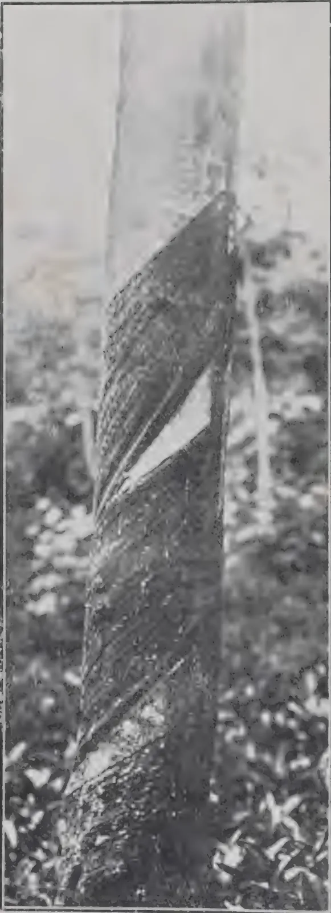
A black and white photograph showing a close-up of a tree trunk. A large, dark, diagonal wound or scar is visible on the bark, extending from the upper left towards the lower right. The wound appears to be a result of improper tapping, as indicated by the caption. The surrounding bark is lighter in tone, and the background is filled with foliage.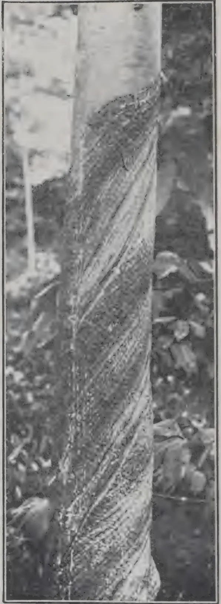
A black and white photograph showing a close-up of a tree trunk. A large, dark, diagonal wound or scar is visible on the bark, extending from the upper left towards the lower right. The wound appears to be a result of improper tapping, as indicated by the caption. The surrounding bark is lighter in tone, and the background is filled with foliage.BAD TAPPING
THE
TROPICAL AGRICULTURIST:
JOURNAL OF THE
CEYLON AGRICULTURAL SOCIETY.
VOL. XLIII.
COLOMBO, AUGUST, 1914.
No. 2.
SELECTION IN HEVEA.
To a considerable extent, the comparative permanence of the plants which are cultivated on estates in the tropics militates against their improvement. In the case of annual crops, the actual work of improvement is easier, because of the shorter time required to grow several generations, and the application of the results is facilitated by the fact that the grower can change his seed, and consequently the character of his produce, every year. On the other hand, once a tea or rubber estate has been planted and brought into bearing, the owner practically considers that part of the business has been completed for all time.
But if the replanting of an estate is not within the range of probability, there is nevertheless an opportunity of practising selection, in the case of Hevea, when opening up extensions which will no doubt be necessary from time to time; and now that the rush of planting is over, this phase should receive the careful attention of rubber companies. If it does not, it will not be because the matter has not been brought to their notice, for the subject is one which is now being prominently brought forward by all the journals which are directly or indirectly interested in rubber.
A recent visitor to the Island has expressed his astonishment that, after our experience with Cinchona, nothing has been done in the way of seed selection in Hevea, and has reminded us that Java owes her pre-eminence in Cinchona to the selection of the highest yielding trees.
92[AUGUST, 1914.A beginning has already been made at Peradeniya, where two acres have been planted with seed from the old Henaratgoda tree which yielded 386 lb. of dry rubber in four and a half years. When these trees are old enough to tap, the yield of each will be carefully recorded, and any bad yielders removed. It must be borne in mind that in the present state of our knowledge, selection can only be based on yield. Ultimately it may be possible to correlate yield with some character of the tree, but that cannot be done at present.
It is urged that estates should set aside one or two acres which should be planted with seed from their best yielding trees. Other characteristics, such as freedom from burrs, might be taken into account when deciding between the best yielders. Subsequently, any of the progeny which proved below the standard should be cut out, so as to diminish as far as possible the risk of deterioration in the succeeding generation.
It does not necessarily follow that the descendants of good yielding trees will be good yielders. Under ordinary plantation conditions, the seed will most probably be the result of a cross, and hence the descendants may vary. The relative positions and times of flowering of the male and female flowers of Hevea brasiliensis do not exclude the possibility of self-fertilisation, but several observations point to the conclusion that cross-fertilisation is the rule. For instance, in both Perak and Ceylon, when Hevea flowered for the first time, only one tree flowered and no seed was produced, but in the following year, when two or more trees flowered, seed was obtained. Again, an isolated tree at Peradeniya which flowers abundantly every year has not borne any fruit during the years it has been under observation. Hence the necessity of testing all the trees grown from the selected seed.
It will be recognised by all who have any knowledge of plant breeding that the method outlined above is only an elementary one, and open to several objections. It is practicable but not the theoretically best. It will, however, serve admirably as a beginning and may well afford valuable data for more exact methods.
T. P AUGUST, 1914.]93The frontispiece of this number gives two illustrations of one of the many forms of bad tapping, namely, the gradual alteration of the slope of the cut as tapping proceeds. As will be evident from the facts that the trees were tapped with knife and pricker and that the tapping is in the wrong direction, these photographs were taken several years ago, but the same thing is not uncommon at the present day, and although it is generally recognised to be bad tapping, the full extent of the evil is not always realised.
Other things being equal, the quantity of rubber which it is possible to extract from a given area of bark depends to a great extent upon the number of times it is possible to tap it, i.e., on the number of cuts to the inch. Now, the number of cuts which can be made to the inch varies according to the angle of the cut, being greater with the "flatter" cut, i.e., when the angle made with the vertical channel is greater. In the present instance, this is true, whether the measurements are taken along the vertical channel, or perpendicular to the first cut. Therefore when the angle continually decreases, as it does in the cases illustrated, the number of cuts to the inch becomes fewer as tapping proceeds, and consequently the yield from the area tapped is less than it should be because of the fewer tappings possible.
The yield is further diminished by the failure to tap all the bark between the original cuts. To what degree this affects the yield it is not possible to estimate. No one doubts nowadays that latex is drawn to the tapping cut from some distance, and it is probable that this second effect is small in comparison with the first.
It will be noted that in one case, although a triangle of bark still remains untapped below the upper cut, the tapping cut has extended over the renewing bark of the second cut. In the other case, the untapped triangle has been "cleaned up" to make the bark level—a practice which has nothing to recommend it.
These photographs also illustrate another point on which some confusion exists. We talk of the number of cuts to the inch, in various numbers from eighteen to twenty-five according to the optimism of the individual, but there does not appear to be any general agreement as to the method of taking the measurements involved. Moreover, the distances measured are frequently too small—about an inch—so that a small error in measurement makes a large difference in the result, and the number taken as the number of tappings is sometimes the theoretical number of tappings possible (disregarding holidays etc.), instead of the actual number. It is notable that in tapping experiments, where the distance measured is a foot or more, and the number of tappings is known accurately, high numbers of cuts to the inch are not obtained.
94[AUGUST, 1914.But apart from that, the photographs show clearly that unless the tapping is absolutely parallel throughout, it is possible to describe the same tapping by widely different numbers of cuts to the inch. Thus in the second photograph, twelve inches of bark have been removed along the vertical channel, but only about six inches at the upper end of the cut (the direction of the cut has been rectified about two-thirds of the way down and a narrow triangle of untapped bark left). Supposing, therefore, the number of tappings was one hundred and twenty, measurements at the upper end of the cut would give twenty cuts to the inch, while measurements along the vertical channel would give only ten. If the tapping were described as twenty cuts to the inch with cuts one foot apart, one would deduce that after one hundred and twenty tappings half the original bark would be available, yet, as the photograph shows, no further tapping is possible. The example is, of course, an extreme one, but it serves to illustrate the point.
This brings us to the question, where is the distance to be measured in reckoning the number of cuts to the inch. The answer to that would appear to be quite clear, if an accurate standard is desired. The only distance which can be regarded as fixed is along the vertical channel. All other measurements, whether vertical or perpendicular to the cuts, depend on the accuracy of the tapping. The distance between the cuts is reckoned along the channel, and it does not appear logical to adopt another direction for other tapping measurements.
Measurements along the vertical channel give, for the same tapping, fewer cuts to the inch than measurements perpendicular to the cut. For example, with a tapping angle of , twenty cuts to the inch measured perpendicular to the cut is fourteen measured along the vertical channel: with an angle of to the vertical, the corresponding numbers are twenty and seventeen. The greater the angle made with the vertical the smaller the difference between the numbers obtained by the two methods of calculation.
T. P.
The following preliminary results of tapping experiments on young Hevea have been published by F. G. SPRING in THE AGRICULTURAL BULLETIN of the Federated Malay States for April 1914.
The object of the experiments was to compare the Basal V system of tapping with that of the single quarter, half herring bone, and to find out the relative amounts of rubber obtained from a half herring bone, with different numbers of cuts.
The trees are planted feet. The number of trees in each plot is 100, and the average girth of the trees is practically the same. The trees had not been tapped prior to the beginning of this experiment. The half herring bones had one cut, two cuts eighteen inches apart, and three cuts eighteen inches apart, respectively. In all cases the lowest cut was 18 inches from the ground. The trees were tapped daily, 20 cuts to the inch.
AUGUST, 1914.]95The following table summarises the results for the first eleven months :—
| Plot No. | 1. | 2. | 3. | 4. |
|---|---|---|---|---|
| Fraction of Circumference. | one quarter. | one quarter. | one quarter. | half. |
| Method. | half herring bone. | half herring bone. | half herring bone. | basal V |
| No. of cuts. | one | two | three | — |
| No. of trees. | 100 | 100 | 100 | 100 |
| Average girth. | 22.6 | 21.7 | 21.3 | 22.3 |
| Yield | 152 lb. | 220 lb. | 180 lb. | 304 lb. |
The direction of the cut in the half herring bone is not stated.
MR. SPRING'S conclusions are as follows :—
Over the period of eleven months, reference to the tables will show that one cut (Single Quarter System) yields 152 lb. oz. total rubber, two cuts 220 lb. 10 oz. total rubber, three cuts 180 lb. 13 oz. total rubber, while the Basal V yields 304 lb. 1 oz. total rubber. It should be remembered that in each plot tapping is conducted every day. Judging from the above figures it is fairly clear that it is not advisable, on young trees, to have more than two cuts on the Single Quarter System, and it is very doubtful if this number can be increased even on old rubber. On the supposition that old trees have a greater reserve and feeding capacity, it would be expected that they could carry a larger number of cuts, but it must be remembered that as the girth of the tree increases, the length of the cuts are correspondingly greater.
It is noticeable in this experiment that one cut, over a period of the first eleven months' tapping, yields approximately as much total rubber as three cuts. The Basal V far exceeds that of two cuts on the Single Quarter System, and this difference is likely to be maintained the second year with a similar V on the opposite side of the tree. During the 3rd and 4th year, in the case of the V, it will be necessary to resort to a top V, when there is a possibility of a reduction when compared with the same time of tapping on Single Quarters, but over the period of the four years it seems probable that the difference will be in favour of the V.
The writer favours the Basal V, if it is intended to continue on this system, in which case it might be preferable to place the V say 24 inches from the latex spout, and afterwards a similar V on the opposite side of the tree—this would allow of a shorter period for working on the top Vs.
Some planters have an objection to the V on account of its spoiling the shape of the tree in the course of a few years. This may be so, but personally I have never noted this peculiarity, and if, as they say, it should have a tendency to flatten out the tree, there is no objection to this as regards difficulties of tapping, the only objection would be if it reduced the yield. The writer's experience is that the V has given a gradual increase as tapping progressed and has shown no sign of a reduction.
[Experiments at Henaratgoda, daily tapping, show an enormous reduction, in the case of old trees, from top Vs following basal Vs. — Ed.]
96[AUGUST, 1914.MR. F. C. PECK, the author of "MALAYAN DOLLAR RUBBER COMPANIES," and Director of the Mergui and other rubber estates, has just issued a book entitled "THE VALUATION OF RUBBER ESTATES," in which he sets out at length his methods and views on the subject. He disagrees with the "purchase of profits" system of valuation, as it takes no account of the increase or decrease in capital value of the estate during the period chosen, of the capital necessary to bring young rubber into bearing, and of the absence of any return during the period of development. His suggested methods, which appear to take into consideration all possible factors, are exhaustively discussed, and the book should prove highly instructive to valuers and investors. The views expressed on methods of planting and management, as affecting the value of an estate, are refreshingly modern. The chapters on the future price of rubber and the "natural price" of rubber will no doubt be studied with great interest.
Very few Hevea estates in the Middle East are now extending their planted acreage, the majority of owners being content to maintain their present fields in good order or to finish planting by taking in odd corners. The statistics for 1913 showed very few extensions, and those for the present year should show even less. But it is common knowledge that in the cultivation of even forest tree types certain areas may, in course of time, go out of cultivation, either from old age or numerous other causes. It is conceivable that Hevea trees, after they have been tapped ten, twenty, or even more years in succession, may be so damaged or have become so weak that the collection of rubber therefrom may cease to be profitable. Not that the trees might not yield any latex at all, but that better returns could possibly be obtained by planting up new clearings and starting on virgin trees. Furthermore, in areas liable to severe storms all the trees on a given acreage may, after successive tornadoes, be damaged beyond all hope of recovery. Hence arises the question of planting up very small acreages in successive years to make good for old non-paying areas.
The seeds or plants for such purposes can, almost on every property, be obtained on the spot. Planters can now in most cases put down their nurseries from their own seed supplies. But herein lies a danger. It is the experience of most agriculturists that a "change of seed" usually results in a better crop. Hitherto most rubber planters have had to use, for their own clearings, seed supplies procured from notable estates, and there has not been any real opportunity for effecting seed selection in the proper sense. We make the suggestion that now is the time to lay out definite plans for selecting seed bearers for the small annual extensions which will be made in future years on estates having reserve forests at their command. There is no longer any necessity to "speed up" planting programmes, and there is plenty of scope in the selection of seeds for annual extensions of ten, twenty, thirty, or more acres.
AUGUST, 1914.]97There are now two sources of supply open to any up-to-date planter wishing to improve by seed selection the type of Hevea to be grown on any estate. The first is the older group of estates having seed bearers ten years and older; the second is the oldest group of all, the parents of the million acres now planted, viz., those at the Botanic Departments in Ceylon, Malaya and Java. The supplies from the first-mentioned source will be as enormous as those of the latter will be limited, but even the latter will be sufficiently large to supply seed for a few thousand acres each year. We take the view that it is the first duty of an agricultural department to improve the stock of the country, and we know that every officer in every one of the departments referred to is in entire agreement with us on that point. Now seed selection to be of the greatest good involves something more than simply reserving the seeds from a number of old trees.
It involves the selection of parent trees which conform to certain types, and seeing that pollination and fertilization between known parents occur. The progeny from an old or diseased tree could naturally not be as valuable as that from a perfect, good-yielding specimen. We are therefore led to conclude that seed selection, involving as it does careful control of all operations in connection with plant breeding, is a subject which should in the first case be handled by our botanic officers at Peradeniya, Singapore and Buitenzorg. There we have the oldest parent trees and men trained to carry out the necessary scientific work to ensure better results than could reasonably be expected from ordinary rubber estates.
We think, especially now that the demand for seed is declining, that there should be some form of agreement between the agricultural departments and the planters, whereby the former undertake to supply seeds from seed bearers in the botanic gardens, at a special price if necessary, to planters who wish to prepare for small annual reserve extensions. We can think of no better service to which the old carefully treated and well tended Hevea trees can be put. The result can only be determined as years go by, but there is every reason to hope that it would be satisfactory and lead to a permanent improvement in the type of Hevea under cultivation. Singapore and Ceylon could enter into an agreement to interchange supplies if change of country of origin was deemed advisable, each colony supplying planters with seeds according to terms of application.
The same procedure could be adopted between estates in different countries, but owned by the same Company.
The selecting of seed parents on estates is a difficult but not impossible task. When lecturing to Ceylon planters many years ago (1905) certain suggestions were made which may perhaps be repeated with advantage. It was then stated that "seeds from trees which show irregularity in quality or quantity of latex should perhaps not be used for planting. It is difficult to give practical advice on the subject of selecting seed parents when all the trees are healthy and artificial pollination is not resorted to. Personally, I should select my seeds from the best developed trees on the estates—those who show the best growth of foliage and girth and a corresponding
98[AUGUST, 1914.lacticiferous system. It seems rather dangerous to select seeds from trees which, though showing good growth, have never been tapped; one may be selecting seeds from trees which, had they been tapped, would have given the minimum quantity of latex, or perhaps none at all. Provided the trees have not been roughly handled in tapping operations, there is no great mistake in selecting, as seed parents, those trees which are best developed and have given fair yields of rubber."
The problem of seed selection on Hevea estates is rendered more difficult by the fact that the latex vessels are not vital structures, and also by the arrangement of the sexes in the flowers. The above working plan, for use on estates, does not take these points into consideration, for the simplest reason that they do not, in the writer's opinion, fall within the province of the average manager on rubber estates.—INDIA RUBBER JOURNAL.
Everybody conversant with the subject is well aware that the rapid loss of the viability of certain seeds of tropical fruits, such as the durian, the avocado, the mangosteen, marang, or the lanson, is due in a large measure to the invasion of fungi, and when these are excluded, provided that the seeds are otherwise properly packed in a medium of the right degree of moisture, there is really no sound reason why such seeds should not be successfully transported long distances, and retain their viability for a very considerable period.
MR. E. D. MERRILL, botanist of the Bureau of Science, who has recently returned from a journey to Java and Singapore, related to the writer that he saw in the Singapore botanical garden mangosteen plants grown from seed that were shipped from Singapore to New York, United States of America, and from thence returned to Singapore, after which they were planted and gave a germination of 50 per cent. These seeds were washed in a weak solution of carbolic acid and then packed in moist charcoal that had been disinfected with carbolic acid. Over three months elapsed between the time of the disinfection and packing of the seed and the planting.
The above experiment was carried out by MR. I. H. BURKHILL, director of the botanical garden in Singapore.—P. J. WESTER IN PHILIPPINE AGRICULTURAL REVIEW.
AUGUST, 1914.]99The mycelium of this fungus is present everywhere in virgin forest, and all forest trees are attacked with the exception of Palms, etc., irrespective of condition or of age, from the seedling to the forest giant. It grows on the roots, covering them with an encrusting layer, and, growing upwards even on to the stem of the tree, continues its development on the bark. The outermost edge of the fungus bears fruit bodies, and secretes a watery liquid through crater like openings. The fungus increases until the stem is ringed to a height often of 2 feet, so that the bark dries up and the tree dies. The process of exhaustion of the tree can take years or can be completed in a few days.
As measures of control, burning of diseased trees, and removal and burning of stumps are recommended.
Brown Root disease is not confined to cacao. It is found everywhere. The damage caused by it may be up to 1 per cent. in the first year, and at most 0.2 to 0.3 per cent. later, over the whole estate, per annum.
A fungus disease, also found in virgin forest and named "Pink disease" from its appearance, is caused by Corticium Javanicum Zimm.: in the young stage it forms white spots, but later develops into a uniform pink sheet. It also is not confined to cacao only. It attacks other trees much more, as, for example, Hevea. The fungus develops in the bark of medium-sized branches, without requiring any previous wound, and causes it to dry up and finally to die. In rare cases the tree heals up the diseased places in course of time.
Pink disease can be directly dangerous only on young trees up to 3 years old. On these it often advances so quickly, that the tree is killed in a short time. Excision and burning of diseased parts, and spraying, are recommended.
The once-feared witches' broom appears very rarely—less than 1 in 100,000 trees—on Samoan Cacao.
This phenomenon, which is known on forest trees in Europe, is an abnormal branch growth, and in the Kamerun Cacao, according to FABER, is caused by the fungus Taphrina Bussei v. Fab. What the cause is in Samoa has not yet been determined.
The only method of control is the vigorous pruning and burning of the malformed branches.
100[AUGUST, 1914.This name denotes the only stag beetle in Samoa as yet known as an enemy of cacao. In the Philippines there is a nearly related one, the flat-headed borer, whose larvæ however live in the wood of the cacao, in contradistinction to our beetle.
The female of the cacao beetle lays its eggs (apparently singly) in the bark of the cacao tree, preferably in the forks of the branches. The larva, which is at first whitish and later orange yellow, lives between the outer bark and the cambium, where it bores and forms a gallery covered by an outer layer of bark. These galleries often completely ring the tree, but it is not always fatal. Trees attacked are very seldom killed by the beetle, but serious injury is done by the entry of parasitic fungi through the damaged bark.
Control measures consist in killing the beetles, which are attracted by a light or may be found in houses during the day, and removal of larvæ from the tunnels and tarring of wounds. The pupæ can be killed by poking a strong wire into their chambers, or stopping up the entrance to the gallery. Spraying with Arsenic-copper-lime wash would perhaps prevent the laying of eggs on the tree.
An introduced leaf beetle (Adoretus vestilus Bohem) attacks the leaves: it lives as a rule on Hibiscus and other ornamental and economic shrubs. Spraying with Arsenic-copper-lime wash should be carried out, when the beetle becomes too numerous.
The termite Calotermes (Neotermes) sarasini Holmgr. is a serious pest of cacao in Samoa. On the other hand it does not attack Hevea. It penetrates into the tree below the collar and then works up into the stem, usually however only to the height of a foot or so. They have not yet been observed to attack sound cacao stems above ground, but a smaller termite appears in old stumps above ground in deep dried-up wounds in the wood of the tree. Some forest trees are especially attacked by termites, as Rhus semarubaefolia A. Gray and Grewia Mallocococca: these must be removed from wind belts and jungle on the edge of the estate.
A white scale, Dactylopius (Pseudoccus) citri Risso appears frequently on cacao in Samoa, usually in the grooves of the fruit shell in whole colonies, and injures the cacao fruit by sucking.
It does not multiply quickly. Young twigs attacked should be removed and burnt: if too abundant on the fruit, spray with nicotine wash.
On breaking open cacao fruits, some are found which cannot be emptied, the usually mucilaginous white flesh of the fruit having assumed a woody consistency. Often only a part has become woody, or the whole mucilaginous layer, the fruit shell and beans, have grown together. The woody places have occasionally a dark colouration, but usually are not to be distinguished from the surrounding tissue.
The cause of the phenomenon is still unknown, nor is it known whether it is infectious or whether it represents only abnormal growth. It is not very common, only about 0·1 per cent. of the fruits being affected. At the present time such fruits are burnt as a precautionary measure.
AUGUST, 1914.]101Premature germination appears as abundantly as woody developments of the fruit, and is clearly a physiological phenomenon. Fruits not over-ripe and apparently quite sound, may exhibit this phenomenon. The fruit flesh has completely disappeared : it is replaced by buds and rootlets of the seeds, the cotyledons are already green and beginning to unfold. Such a fruit of course is worthless.
One can never quite decide from which tree these fruits came ; externally they seemed quite sound when gathered ; hence little can be done against it. If a tree occurs which frequently shows such abnormalities, one should avoid taking seed from it : it is not impossible that the abnormality is inherited. The best way is to cut out such trees.
Cacao has strong brittle leaves, which look as though they could endure much knocking about. Yet in the young state, as in the case of many other tropical plants, they are very flaccid and hang down from the branches, even when they have grown to their full size. The delicate reddish young cacao leaves remain for some time tender and weak, and are consequently in a high degree susceptible to sun and wind. While strong winds blow off the leaves entirely, strong sunshine in conjunction with a dried atmosphere causes partial death, which as a rule proceeds from the tip of the leaf.
Ripe cacao fruits are eaten in this country by rats. The rats eat holes in the fruits to get at the beans, from which they gnaw off the mucilaginous coat. One finds the beans lying uninjured under the trees.
The poisoning of rats is very uncertain and may do much damage in other directions. Bacteria have been tried without success. The only way to keep down the rats is to maintain many wild cats or a pack of dogs on the estate. In the course of time wood and undergrowth disappear from the plantation, and, at harvest, with its consequent disturbance, the rats tend to disappear, till scarcely one gnawed fruit is to be found. It is further suggested that no papaws should be left amongst cacao to provide food for rats.
Quite recently flying foxes (Pteropus sp.) have caused damage to cacao plantations. One frequently sees nowadays ripe fruits eaten by flying foxes. As opposed to rats, which eat a hole generally in the upper third of the fruit, and pick out the beans from the opened shell, flying foxes begin at the apex : they hang on the branch next the fruit so that their mouth reaches the apex, and they often eat away more than half. They feed only on the fruit sap, which they squeeze out from the parts bitten off ; thus they chew up the mouthful thoroughly, and they attack both the fruit shell and the beans. The remainder after chewing is rejected, and consequently one recognises the offender by this, since with rats, as above mentioned, the undamaged beans are found under the tree.
Control measures suggested are, knocking them down on clear nights, and possibly infecting them with a typhus bacillus.—DER TROPENPFLANZER.
102[AUGUST, 1914.In claying cacao as described in the TEA AND COFFEE TRADE JOURNAL, the fermented unwashed beans after being partially dried are heaped up and worked with powdered red clay till it adheres to the mucilaginous matter of the beans, which are afterwards spread out to dry. It is usual to again heap them up, sprinkle with water and work them with the feet till the beans get a polish, after which they are subjected to a final drying.
The alleged object of claying is to render the beans impervious to moisture, to prevent decay, and to preserve the aroma of the kernel: but, it might also be added, to preserve, if not to increase the weight, and impart the typical chocolate colour.
The Trinidad Board of Agriculture is making an effort to check claying which has of late years been abused, and has warned all concerned that excessive claying if persisted in will be brought to the notice of Government with a view to making it a punishable offence.
There is at present little difference in price between poor cacao that has been clayed and good beans; and it is therefore in the interests of cacao planters, particularly in Ceylon where cacao is not subjected to claying, that some check should be placed on the practice.
C. D.
There is much diversity of opinion with regard to correct pruning; which branches to remove, which to leave is a problem that still remains unsolved; most planters agree that trimming of some sort is necessary, some believe that the tree must be given a good shape and proper balance. This is sound enough reasoning, but there is an essential point that has not been cleared up, namely: What is the correct shape? Should a tree be too heavy on one side, we reason in a sound manner, that that side should be lightened to give the tree a proper balance, but with regard to shape the planter often errs in shaping the tree irrespective of conditions, in consequence too much healthy bearing wood is removed. Any branch is capable of producing fruit: and the little whips and small branches protect the tree in several ways, chiefly by giving to the plant a larger area of foliage, which means that greater manufacture of plant food takes place.
Leaves are absolutely necessary to the health of the tree, for a plant is largely dependent on food made through the activity of the leaves. Separation of carbon from carbonic acid gas of the air is effected in the green cells of the leaf. During daylight the carbonic acid gas is decomposed, carbon retained and oxygen set free. Respiration also takes place through the leaves—they are, so to speak, the lungs of the tree.
Without a sufficient leaf area there is the possibility that an adequate supply of plant food may not be available to meet the requirements of the crop and that many of the young pods will accordingly die. Excessive pruning also causes a drain on the food supply owing to the cambial activity which ensues after cutting.
I mention these points not because I think a cacao tree should not be touched at all—on the contrary; I believe that proper, light pruning, and at the proper time is necessary—but that more thought and study may be given to this important work.—D. C. PLUMMER in TRINIDAD AND TOBAGO BULLETIN No. 79.
AUGUST, 1914.]103One of the most generally accepted teachings in all agricultural literature, based, however, mainly upon experiments with dry-land crops, is that of the high availability of nitrates, it being considered that of all the forms of nitrogen nitrate is the most readily taken up from the soil and used as food by plants. As a result of the prevalence of this view nitrates have been used for rice in America, and indeed sodium nitrate still is recommended at the present time for this crop by some authorities.
It has been known in oriental countries for some time, however, that nitrate is not the most profitable form of nitrogen to apply to rice. NAGAOKA, in Japan, demonstrated in 1905 the superiority of ammonium sulphate in a series of pot experiments. He found that while the effects produced by nitrates were variable and discordant the yields were greatly increased in every instance by the use of ammonium sulphate. As a result of his experiments NAGAOKA concluded that the value of ammonium sulphate and nitrates stand in the ratio of 100 to 40.
In 1907 DAIKUHARA and IMASEKI also found ammonium sulphate to be much more effective for wet-land rice than either sodium nitrate alone or a combination of the two forms. The value of nitrate was also found to be considerably less when applied in conjunction with organic manures. Likewise it has been shown in several of the Provinces of India that other forms are superior to nitrates. COLEMAN and RAMACHANDRA RAO, for example, pointed out that organic fertilizers produced a marked stimulation of the growth of rice in Mysore, while nitre had but little effect. In 1911 the writer published the results of experiments conducted at the Hawaii station which showed the great superiority of ammonium sulphate over different nitrates.
Notwithstanding these facts some American writers continue to recommend sodium nitrate for rice and to discuss rice soils from the same standpoint as dry lands.
It is not necessary to go into a theoretical discussion of this question at this time further than to state that abundant experimental evidence has already been brought forth in various parts of the world to prove that nitrate is not the only form of nitrogen available to plants. Results obtained at the Hawaii station show that nitrate can hardly be considered to be the principal source of combined nitrogen for many plants when grown in the state of nature. It is known that nitrates are ill suited to assimilation by rice.
From the yields of experiments it is apparent that nitrate of soda produced only slight increases either when applied before transplanting or at intervals during the growth of the crop. Ammonium sulphate, on the other hand, brought about notable increases in every instance, the larger harvests having been obtained from the single application before planting. Repeated
104[AUGUST, 1914.applications were made for the purpose of guarding against the loss of nitrate through leaching, but this appeared to have no advantage over the single application.
From pot experiments, where drainage was entirely prevented, the great superiority of ammonium nitrogen over nitrate was again demonstrated. In a series of pot experiments with the use of sterile quartz sand, it was found that where nitrate was the only form of combined nitrogen present rice made very poor growth, whereas ammonium forms seemed to be well suited to its needs. The net result of all these experiments forces the conclusion that nitrate is not a suitable form of nitrogen for rice, but that ammonium compounds are well adapted to its needs.
In the rice-producing countries of the Orient organic manures are the chief source of nitrogen applied to rice soils. It has long been the custom of the Chinese and Japanese to grow some legume between crops for the purpose of enriching the soil. Sometimes the legume is grown on one field, cut, and then distributed over others, so as to gain the benefit of green manuring with as little interruption in the growing of rice as possible. In addition, all sorts of organic nitrogenous substances are freely applied. In Hawaii, on the other hand, almost no rotation is practised.
From a single experiment conducted by the agronomist of this station, however, it was found that by ploughing under a few months' growth of alfalfa just previous to the planting of rice the yield was 50 per cent. greater than has ever been obtained on this soil by the application of any commercial fertilizer. In this experiment the alfalfa was grown on one plat, but was cut and applied to another, so that the effects may be attributed to the organic manure directly rather than to a combination of aeration and other effects, the soil being prepared and submerged very soon after making the application. Moreover, the application of different organic nitrogenous fertilizers at various times has always resulted in substantial increases in the yield of rice on this soil. In a series of pot experiments, for example, soy-bean cake was compared with ammonium sulphate. In this experiment nitrogen from each of the two sources was applied at the rate of 70 pounds per acre. The yields obtained were as follows:—
AMMONIUM SULPHATE VERSUS SOY-BEAN CAKE AS
FERTILIZERS FOR RICE.
| Treatment of plat. | Straw. | Paddy. | Total. |
|---|---|---|---|
| Grams. | Grams. | Grams. | |
| Ammonium sulphate ... | 215 | 138 | 353 |
| Soy-bean cake ... | 167 | 122 | 289 |
| Check ... | 80 | 61 | 141 |
From the above data it will be seen that soy-bean cake brought about an increase of 100 per cent. in the yield, but was considerably inferior in this respect to ammonium sulphate. The reasons for the superiority of ammonium sulphate over organic forms of nitrogen are discussed in greater detail later. In this connection it is of interest to point out that the plant absorbs the principal part of its nitrogen during the early period of its growth; readily available nitrogen therefore is needed when the rice is young, and since the production of available nitrogen from organic forms requires considerable time the application should be made some time in advance of planting, a precaution that was not taken in the above experiments. Through a period of years, however, the total effects would probably become more nearly equal.
The analysis of a number of rice soils, taken from the field when wet and analyzed immediately, has shown that rice soils contain considerable quantities of ammonia, varying from a few parts up to as much as 50 or 60 parts per million. On the other hand, in the submerged condition nitrate is rarely found in more than mere traces, frequently being entirely absent.
Since good effects are known to follow the use of organic manures, and, furthermore, that ammoniacal nitrogen is especially effective with rice, it becomes a matter of interest to ascertain whether or not ammonia is formed in rice soils at rates sufficient to supply the needs of rice.
Accordingly a series of ammonification experiments were carried out with dried blood as the source of nitrogen, using varying amounts of water applied up to and beyond the saturation point.
It was found that ammonification proceeded at a slow rate only, if at all, until a certain moisture content was reached (about 10 per cent. in the case of soil 292, and 15 per cent. with that of 461), above which vigorous ammonification took place, which steadily increased up to an approximate two-thirds saturation, then decreased as complete saturation was approached. There was, however, active ammonification in the completely saturated soils. This seems to prove that ammonia is formed in submerged soils and that organic nitrogenous fertilizers will give rise to nitrogen available to rice under conditions that prevail in rice cultures.
As is well known, the formation of ammonia results from the activity of a wide range of soil organisms, bacteria and fungi, some of which are aerobic and some anaerobic. While the above data show that ammonification is more active with moisture supplies below the saturation point, being greatest at approximately two-thirds saturation, nevertheless, the fact that ammonification can take place in saturated soils is of very great importance in the growth of rice. It makes possible the production of available nitrogen in rice soil, without the necessity of employing cultural methods that are primarily designed to bring about aerated conditions.
Free oxygen being essential to nitrification, it seems justifiable to conclude that nitrification does not take place to any considerable extent in a submerged soil. In order to throw positive light on the question, however, search was made for nitrates in various submerged soils about Honolulu, but in no instance was more than a few parts per million found.
106[AUGUST, 1914.In some laboratory experiments it was further found that practically no nitrification took place in submerged soils.
The process of denitrification, however, is of considerable importance in this connection. As is well known, free nitrogen gas may be one of the products of the decay of organic manures. Likewise, it is also known that certain denitrifying bacteria break down nitrates into nitrites, ammonia, and finally into free nitrogen gas. The conditions under which the denitrifying bacteria function are extremely varied, but the two conditions most favourable for their activity are a source of food supply and a lack of free oxygen. In the rice soils of Hawaii these conditions are abundantly met; the high content of organic matter guarantees a source of food, while supersaturation excludes the air.
As indicated above, the denitrification processes may be conveniently divided into two classes, (1) those causing a liberation of nitrogen from organic materials, and (2) those bringing about a reduction in the nitrates present. The latter of these has been the subject of considerable study at the Hawaii station.
In the pot experiments conducted some time ago for the purpose of studying the nutritive value of different forms of nitrogen it was found that in every instance the addition of nitrate to submerged soil resulted in the formation of comparatively large amounts of nitrite within a few days after the time of application. In sand cultures similar effects were observed except where complete sterilization was effected. Furthermore, wherever any considerable amount of nitrite was formed, more than 5 to 6 parts per million, toxic effects were produced, while still greater amounts caused the rice to turn yellow and later to die.
Nitrite, however, was not produced to any considerable extent when organic ammoniacal nitrogen was the only form of combined nitrogen present. A further objection to the use of nitrates as fertilizer for rice is found in the fact, therefore, that nitrates become reduced to nitrites, which are extremely poisonous to rice. Nitrate, then, is unsuited to the nutrition of rice, and in turn may give rise to a substance that is distinctly poisonous.
During the past few years an increasing amount of study has been given to the question of soil management; and cultural methods, the rotation of crops, and various methods of soil treatment are coming to be viewed in their relation to this general question. Investigations on special phases of this subject have thrown new light on the important question of soil fertility in general and on that of submerged soils in particular.
In an investigation on the solubility of the island soils some data of interest in this connection were recently obtained. Likewise COLEMAN and RAMACHANDRA RAO studied the effects on the yield of rice of aerating the soil.
The solubility of substances in submerged soils has been found to be abnormally high, the amounts of the several mineral constituents going into solution in water having been found to be considerably greater than were obtained from any of the dry-land soils of the islands. After the wet soil was allowed to thoroughly dry out, however, the solubility in water was found to be greatly decreased, falling to about the same degree as that of dry lands.
AUGUST, 1914.]107Similar data have also been obtained by COLEMAN and RAMACHANDRA RAO, in Mysore. This seems referable in the main to soil colloids and the formation of soil films in the air-dried state. The overcoming of film pressure and diffusion of dissolved materials upon resubmergence require considerable time, so that the amount of soluble plant food coming into contact with the absorbing root surfaces of rice would be considerably less when planted in a soil that had been thoroughly dried out. Later the mineral constituents would, of course, regain their former state of solubility, but just how much time would be required for the re-establishment of a permanent concentration cannot be definitely stated. It seems certain, however, that a lowering of the availability of the mineral constituents would temporarily result from a thorough drying out of the soil.
It is now the practice of the growers, both on the mainland and in Hawaii, to plough their rice lands some weeks before the flooding time, in the latter case immediately following each harvest, so as to permit as much aeration of the soil as possible. As would be expected the aeration promotes nitrification, so that by the time a new crop is planted nitrate has accumulated to a considerable extent. Upon submergence the nitrate thus formed becomes partially leached out of the soil and in part converted into poisonous nitrites. The nitrification therefore leads to a direct loss of nitrogen on the one hand and to the formation of a substance toxic to rice on the other. If, however, Hawaiian rice soils are not ploughed or cultivated after the water is turned off and the previous crop harvested little or no nitrification sets in. The puddled state of the soil and its compacted condition effectively exclude air. It is only after cultivation and consequent aeration that active nitrification sets in.
Unfortunately no experiments showing the practical effects on the growth of rice as produced by aeration against nonaeration have been conducted at this station. Such experiments, however, have been made in Mysore, the results of which are in complete harmony with the inferences drawn from the nitrogen transformations above referred to. As a result of experiments carried on through two years, COLEMAN and RAMACHANDRA RAO found that a considerable gain in the yield of rice was obtained by leaving the land in the unploughed condition during the time between crops, the ploughing for the new crop being deferred until just before the new crop was planted. By growing a legume between rice crops all needed aeration can be brought about; while the nitrates formed during this period would be absorbed to a large extent by the legume, and in addition free nitrogen from the air would be added to the soil through the growth of the legume. Upon ploughing under the legume, ammonification will set in, thus furnishing available nitrogen for the next rice crop. The nitrogen requirements of the rice would therefore be met, and other beneficial effects that are believed to result from the rotation of crops would be secured. There is little ground to doubt that better conditions would thus be established and greater profits obtained.
(1) From fertilizer experiments carried on through seven crops it was found that the application of 150 pounds per acre of ammonium sulphate produced notable increases in the yield, but 300 pounds per acre proved the more profitable. Potash and phosphoric acid were without effect. The
108[AUGUST, 1914.]application of ammonium sulphate to both the spring and autumn crops yielded considerably more profit than when made to the spring crop only. The residual effects on the autumn crop from the spring application are small. The immediate effects obtained from making the application to the autumn crop were about the same as those obtained with the spring crop.
(2) A complete fertilizer proved no more effective than ammonium sulphate alone, whereas the application of both ammonium sulphate and potassium sulphate caused a decrease as compared with that obtained from ammonium sulphate alone.
(3) Nitrogenous fertilizers only are recommended for Hawaiian rice soils, and for immediate effects a given amount of nitrogen in the form of ammonium sulphate will produce greater returns than from organic sources. Under no circumstances should nitrates be used as fertilizer for rice.
(4) With nitrate as the only source of combined nitrogen for rice poor growth results. In addition nitrates in submerged soils become reduced to nitrites, which are poisonous to rice. Ammoniacal nitrogen, on the other hand, is well suited to the needs of rice.
(5) Very little nitrification takes place in submerged soil; ammonification however, goes on, not so vigorously as in aerated soils, but sufficiently to supply the nitrogen needs of rice, provided sufficient organic matter is present in the soil.
(6) A rotation of crops, including the ploughing under of a legume, is recommended. It is believed a system can be worked out whereby a legume can be grown between crops and then ploughed under, thus gaining the benefits of the rotation and at the same time permitting the growing of two crops of rice annually.
(7) Rice soils should not be ploughed and then allowed to lie fallow between crops. Nitrification sets in immediately after aerated conditions are produced and the nitrate thus formed become converted into poisonous nitrites upon submergence, or are lost through leaching. When no rotation is practised it is better to leave the land unploughed until just before planting the next crop.—HAWAII AGRIC. EXPT. STA. BULL. No. 31.
Disking canals while the water is running is reported as a successful means of eliminating growths of water weeds in the Bear River and Cache valley projects in California. An ordinary disc harrow is stripped of its seat and double trees and the tongue is cut 4 ft. in length. To this are hitched two ropes, leading to teams, one on each bank; by adjusting the length of these ropes the harrow can be run on either slope or on the bottom. This digs up the roots and the plants float down and are removed. The above canals were very foul three years ago when Mr. WHELAN, the manager, introduced this system; now very few weeds are left. It is cheaper than mowing and it does not interrupt the flow of water —MONTHLY BULLETIN.
AUGUST, 1914.]109B. SCHERFFIUS.
Tobacco, like the potato, has made the conquest of the world. It is used by every race and is grown in practically every agricultural country. The annual production is now billions pounds weight.
It has assisted in the development of new lands and aided in the maintenance of old ones, produced wealth for its cultivators and increased the revenue of nations.
The development of the industry has been the work of four centuries, during which time many facts have been ascertained by experience, some learned by accident and others by careful scientific investigation. One of the most important truths established by the application of science to tobacco cultivation is the annihilation of the old idea that this crop exhausts the soil to an extraordinary degree.
The tobacco plant readily adapts itself to a great variety of soils. It can be produced on any soil where other agricultural crops will thrive; and yet there is no other plant so easily affected by the chemical and mechanical conditions of the soil. Each distinct type requires a particular soil and climatic conditions, as well as certain definite methods of curing and fermenting to give to it those qualities of colour, texture, flavour and aroma for which it is prized.
The colour of a soil is in some measure indicative of its character and possibilities. Light coloured soils generally produce bright coloured tobaccos, and dark soils dark coloured tobaccos. Soils containing a large percentage of clay and hence having a high water-holding capacity tend to produce a thick heavy leaf that cures to a dark colour, while soils consisting largely of sand produce tobaccos thin in texture that cures to a bright colour.
As is well known, tobacco is manufactured into various forms for consumption. The general classes might first be distinguished, i.e. (1) cigar tobacco, (2) manufacturing tobaccos which include all types not used for cigars. Each of these two classes may be subdivided into other types, depending on their special uses, methods of growing and curing and on the variety of seed used. In the case of cigar tobaccos there are three general types, corresponding to the three parts of the cigar-wrapper leaf, binder leaf and filler leaf.
110[AUGUST, 1914.In the manufacturing tobaccos are such types as yellow tobacco, perique, white burley, Turkish cigarette, dark export, etc. Although the finished leaf of these various general types is quite different in characteristic, a large number of the varieties are interchangeable, e.g., "Yellow Pryor," grown on suitable clay loam, in certain climates, and cured by the open fire method produces an excellent dark export tobacco, having a large thick elastic leaf, of a deep brown or red colour, and containing a high per cent. of nicotines and gummy matter. Seed of the same variety, when grown upon a typical yellow tobacco soil containing a large per cent. of sand and a small amount of clay, produces, when cured in the same manner, a leaf with much less body, less nicotine and gummy matter, more mild in flavour, of finer texture, and of a pale red or piebald colour. But if the latter be cured by the flue process, the result will be a leaf of a bright lemon yellow, with a slightly greenish tint, having a sweeter flavour. This example will serve to illustrate the powerful influence exerted by soil, the climate and methods of curing.
At one time any tobacco that would burn was considered fit for consumption, but along with the improvement and development of the plant, man's taste has been educated to the point of demanding certain essential characteristics in the tobacco intended for his use. There are many shades and variations of these characteristics depending on the trade catered to, because in their estimate of tobacco, as well as of wine, the best judges do not agree. However, certain points of excellence are always demanded.
(1) If a tobacco is intended for cigar wrapper, the leaf must have style and be elastic, thin in texture, finely grained, light and uniform in colour, and the stem and veins be small and of the same colour as the leaf. The leaf should be as free from flavour as possible, it being the portion that comes in contact with the mouth. The standard of excellence for wrappers is the Sumatra leaf.
(2) The binder for cigars should possess qualities similar to those of the wrapper leaf, except that it should be thicker to give it greater strength, and it should have good aroma, the standard being the said leaf types.
(3) If intended for cigar filler it must have good burning qualities, producing a white solid ash which does not flake off, and fall on the clothing. It should also be highly fermented, and possess a fine flavour and aroma, and have good body. The standard for this type is the Veulta Abajo leaf.
(4) If intended for plug wrapper, it must have style, elasticity, toughness, body, and be of good flavour, the highest standard being the yellow flue cured type.
(5) Plug filler, intended for chewing, must have a certain toughness, so that it will hold together while being masticated, and not break up into small particles in the mouth. It must also be rich in flavour, and have a high absorptive capacity, for the reason that large quantities of flavouring liquids and sauces are added. It is this ability to retain large quantities of flavouring sauce, that gives White Burley its popularity.
AUGUST, 1914.]111(6) Tobacco intended for pipe smoking and for cigarettes must be free from the gumminess so desirable in chewing tobacco, which would interfere with the cutting or granulation of the leaf by machinery. The bright tobaccos are at present the fashion for cigarettes, and are growing more and more popular for pipe smoking. The most desirable types are bright Turkish, light burley grades, and the light grades of yellow flue cured.
Often the desired standard of flavour is not found in any one tobacco, and it becomes necessary to blend different grades. This blending is sometimes done from the standpoint of economy, when a certain proportion of a perfect flavoured but high-priced leaf is used to give quality and character to a cheaper tobacco, which has all the requirements except flavour. Perique is the notable tobacco for blending purposes, having the strongest aroma of any tobacco on the market.
Great Britain furnishes one of the best markets for tobacco. The United Kingdom imports more than one hundred millions of pounds annually, consisting of the following types :—
(1) Bird's-Eye cutter, which is a very bright, smooth, thin and clean leaf with as little gum as possible. The colour of both the upper and under sides of the leaf must be of uniform and similar shades of bright colour, and the stem must be of a light brown colour on the outside, and white on the inside. Each section into which the stem is cut presents, on the cut surface, the appearance of a bird's eye and hence its name. It is used for pipe smoking.
(2) Spinning leaf which is a type having good length, smoothness, strong and elastic texture, rich and oily, and is usually of a brown colour, but brighter shades are growing in popularity. It is used for making spun roll or strand.
(3) Shag is a coarsely cut, manufactured product much used in England. It has a brown colour, considerable body and but little gum. It is used for pipe smoking.
(4) Yellow, or flue-cured tobacco, has a bright lemon colour and mild flavour. The leaf used for this type comes from the clean sound lug grade of the yellow tobacco, and is finely shredded for cigarette smoking, and finely cut for blending with pipe tobacco.
(5) White Burley type need not be of any uniform size, and is selected principally from the reddest grades of burley. It has a mild flavour and a great power of absorption. It is used as filler for navy plug.
(6) Plug wrappers are rich brown leaves, smooth in structure, medium in size and strong and elastic in texture. These are not much in demand, because the consumption of plug tobacco is quite limited. Some of the fancy plug fillers have the same general characteristics, only they are the short and more imperfect leaves.
Germany.—(1) "German Saucer" is a sweet, fair bodied leaf of fine fibre and stem, gummy, without fatness and either of a clear cherry red colour or mottled with yellow, technically called piebald. The surface is
112[AUGUST, 1914.gummy, the leaf of good length, with considerable weight of body. It is prepared for consumption by treating with sauces of a peculiar flavour and character. The fibres must be yellow after treatment, and the leaf black.
(2) German Spinner is a very heavy bodied leaf from twenty-four to twenty-six inches long, full in width, of fine stem and fibres, very oily in fat, so that it will come out of the process of fermentation supple and strong, tough and elastic in texture and of a very deep dark brown colour. This is used for spinning into roll or strand for chewing.
Germany takes a variety of grades for consumption or distribution, mostly dark tobaccos.
France.—The French grades may usually be reduced to two distinct lines of classification as heavy and light, with considerable irregularity as to grade, and deficiency as to the distinctiveness in type. It is said that France puts up the best smoking tobacco in Europe, and the product is made uniform by the proper mixing of tobaccos in large bins, containing thirty to forty hogsheads each.
Spain.—This country takes common and medium lugs and low leaf of all types, which are classified as A's, B's and C's. Most of it is used for smoking, the better grade for cigar binders and fillers, and the low grades are granulated and used for pipe smoking and making cigarettes.
Italy.—Italian tobacco is also classified as A's, B's and C's. Type A is a large showy and silky leaf, twenty-five to twenty-six inches long, of delicate fibre and texture, and of a solid deep brown colour. Only moderate body is required, and just enough oil-fat to make it elastic and strong. It is used for wrapping cigars. Type B varies between heavy and light tobacco; when the heavy is required, the type consists of leaf of good body, dark brown colour and more general richness than type A, and it must be from twenty-two to twenty-five inches long. Type C is short common leaf, eighteen to twenty inches in length, moderate weight of body, and is used as filler and binder in the manufacture of cigars.
Austria.—Consumes principally one type, a wrapper leaf very smooth and fine in fibre, of very solid, firm and glossy texture, above medium heavy body, but not the heaviest and most fleshy types, and of a perfectly uniform brown and piebald colour. A very essential quality is toughness and strength of the leaf.
Russia.—Russia buys light low grades, consisting of a good size leaf, mild in flavour, and with little body and gumminess. A large bulk of Russian tobacco is prepared in Germany.
Switzerland.—One of the popular types in this country is known as Swiss wrapper. It is a broad leaf twenty-six to thirty inches in length, silky, of fine fibre and stems, and of a dark brown or chestnut colour. The spaces between the lateral fibre should be wide and a combination of thin web and fine fibre is desired. It is used for wrapping cigars.
The Netherlands.—This country takes one distinct type as Dutch Saucer, similar in all respects to German Saucer except that it is thinner and more silky in texture,
AUGUST, 1914.]113Belgium.—This country likewise buys one special type, known as Belgian cutter, which is a short leaf, of a mottled or piebald colour, and of fine body without fat or oil ; very similar to Dutch Saucer except that the grade is lower. It is used for cutting purposes in the manufacture of pipe tobacco.
Denmark, Norway and Sweden.—The tobacco consumed in these countries, is for the most part grown in the United States, but rehandled and prepared for their markets mainly in Bremen. The leaf is sweet, fleshy and of a bright mottled or red colour.
It would appear that dark tobaccos are more in demand than the bright leaf, but this is undoubtedly due to the fact that the cultivation of bright tobacco is at present confined to small areas, hence the supply is much more limited than that of the dark types. Wherever bright tobacco markets have been developed, the popularity of the coloured grades has been pronounced.
Those who take up the cultivation of tobacco for the first time need not go through every step in order to buy for himself the experience that other countries have acquired, for he has at his command the accumulated knowledge of the rest of the world. At the same time he cannot start right away in establishing an industry, for there are local climatic and soil influences to be considered as well as markets to be found.
The first step is the experimental stage, and before starting this work the experimenter should be thoroughly informed as to the nature of the tobacco plant and its requirements ; if not, the reason of good or bad results obtained will not be understood and the conclusions drawn will be faulty and of little value.
Work to be undertaken at Jaffna (1) variety tests ; to include choice selections from all standard types, making an effort to grow, harvest, and cure each, under its most favourable conditions.
(2) A series of fertilizer experiments to more accurately determine the soil requirements.
(3) Curing experiments involving the most widely practiced methods such as air, open fire and flue-curing.
(4) Experiments in fermentation of the cigar types, and of ageing the varieties grown for cigarette, pipe and chewing purposes.
After satisfactory results have been obtained will come the time of commercial expansion. In submitting samples to the markets only properly cured tobacco and the best grades of the types should be sent.
If Ceylon proves to possess a climate and soil in certain sections favourable to the production of high-grade tobacco, settlers in these localities are to be congratulated, for the production of high-grade tobacco ensures prosperity. However, nothing can be fully determined without experiment, which, properly conducted, will give us the answer we want and point the way to commercial development,
B. SCHERFFIUS,
114[AUGUST, 1914.MR. PAUL POPENOE, Editor of the JOURNAL OF HEREDITY, deals with the origin of the Banana in the last issue of that Journal. He is of opinion that we must seek for the origin of the fruit in the Indo-Malaya region, but believes that the wild bananas of the present day do not represent the ancestral type and are merely escapes from cultivation.
In view of the fact that the wild fruit is so full of seed, the banana was probably at first grown as a root crop and the tender heart also used as food; while under cultivation it developed edible fruit.
BECCARI'S idea is that all the bananas of to-day are the result of hybridization of original forms now disappeared, and that subsequently the propagation of choice varieties must have been carried on by means of off-shoots.
In respect of antiquity BECCARI suggests that it was first cultivated in the Pliocene epoch, assuming that it was in that age that man appeared as a distinct species.
The generic term Musa is derived from the old names Mose, Mauz, Maz, which are traceable to the Sanscrit Moca.
Banana is the vernacular name in the African Kongo, while Plantain comes from the Spanish "plantana" and Latin plantanus indicating some confusion with the plane tree.
The genus Musa comprises 32 or more species and at least 100 subspecies, many no doubt confused. The Philippines and the Indian Archipelago are richest in forms, followed by Ceylon.
The genus is divided into two broad sections: Eumusa with edible fruits and Physocaulis with inedible fruits. The first is commercially divisible into bananas and plantains, the latter being larger and coarser and generally eaten after cooking.
The cultivated varieties are innumerable, said to be due partly to their great variability and tendency to bud variation.
In Ceylon where the term plantain is applied to all forms of the fruit, we may classify as follows (1) Curry plantains and (2) Table plantains. To the first class belong the varieties which do not mature properly and are therefore used in the green state for cooking into curries. The chief of these is the "ash-plantain" which is of a grey colour and angular in shape. There are also cylindrical green varieties which are used in the same way. To the second class belong a number of types (1) "Kolikuttu," the table plantain par excellence. It is variable in size but the shape is cylindrical, the peel of medium thickness and the edible part mealy and free from acidity. Though most highly esteemed locally it is not much appreciated by Europeans owing to the absence of fruit acid. To this class also belongs the Suwandal common in the Kandy District, and also the huge Jaffna plantain (2) "Puwalu"
AUGUST, 1914.]115or sugar plantain, the fruit of which is inclined to be somewhat angular, has a thick peel and a subacid flavour. The puwalu is the best of a type which is not reckoned as particularly good, the others (e.g. Anamalu) being rank in flavour and better suited for stewing or for making puddings. (3) "Honarawala." This is the type to which the sour plantain (embul-honarawala) belongs. The latter is the most common market variety and is largely supplied to shipping. The size is variable but the fruit is generally small, thin-skinned and acid in flavour. The best of the honarawala type is the "rata-honarawala" which has a delicate fruity flavour and a very thin skin. It is best eaten very ripe. (4.) "Rat-kehel" or red plantain. This is a fat rank-flavoured mucilaginous variety only suitable for stewing and for puddings though in the North it is eaten raw. A yellow-skinned variety of this is also found.
There is no doubt, however, that natural hybridisation is producing new forms with different flavours, and one often meets with specimens possessing the combined qualities of two varieties, and this makes it difficult to identify them as belonging to any one of the types specified above.
C. D.
P. J. WESTER.
The papaya is one of the commonest fruits in the Philippines, ranking next to the banana with respect to wide distribution, largely because of its rapidity of growth and early fruiting habit as compared with other fruits.
The papaya is a large succulent herb, of exceedingly rapid growth, and when well cared for produces ripe fruit within twelve months from the planting of the seed. It is very impatient of water standing around the roots and succeeds on well-drained land, sandy or loamy soils being most suitable; as it is easily injured by strong winds the papaya should be planted in well-sheltered situations.
From the grower's point of view there are three kinds of papayas: The hermaphrodite papaya, the flowers of which are perfect; the pistillate, or, as it is commonly called, the female papaya; and the staminate, or male, papaya. Of the two fruiting kinds, the hermaphrodite is preferable to the female since it is usually sweeter and better flavoured; a very great point in its favour is the fact that it is more apt to reproduce itself true to seed than the female.
The hermaphrodite papaya is distinguished by its more or less oblong or pear shaped form, sometimes, in its best types, approaching the shape of a cucumber. The female papaya is recognized by its more roundish shape, prominent "nose," and a large seed cavity that frequently is filled with seed.
The seed bed should be prepared by thoroughly pulverizing the soil by spading or hoeing the ground well and clearing away all weeds and trash. The seed should be sowed thinly, about 1 to 2 centimeters apart, and
116[AUGUST, 1914.covered not more than 1 centimeter deep with soil, and the bed then watered thoroughly. In the dry season it is well to make the seed bed where it is shaded from the hot midday rays of the sun, for example, under a tree; or, it may be shaded by the erection of a small bamboo frame covered with grass or palm leaves. If the seed is sown during the rainy season a shed should always be put up over the seed bed to protect the seed from being washed away and the plants from being beaten down by the rains.
Transplanting the seedlings in the seed bed, setting them about 7 to 10 centimeters apart, when two or three true leaves have appeared, will very materially aid in the successful transfer of the seedlings to the field.
When the plants have attained a height of about 7 to 10 centimeters, they are ready for transplanting to their permanent place in the garden or the orchard.
Unless the transplanting has been preceded by a good rain, the plants should be thoroughly watered before they are removed from the seed bed. In order to reduce the evaporation of water from the plants until they are well established in their new quarters, about three-fourths of the leaf blades should be trimmed off.
In transplanting, take up the plants with a large ball of earth so that as few roots as possible are cut or disturbed. Do not set the young plant deeper in the new place than it grew in the nursery; firm the soil well around the roots, making a slight depression around the plant to hold water, and then give it a liberal watering.
In order to protect the tender plant from the sun until it is established, it is well to place around it a few leafy twigs at the time of planting. Unless the seed is of an unusually good strain it is also a good plan to set out two or three plants to each "hill." This gives the grower a better opportunity to discard male and undesirable female plants without destroying the "stand," than if only one plant is set out in each place.
If the plants can not be set out in the field at the time indicated, transplant them from the seed bed to the nursery, setting the plants 30 to 40 centimeters apart in rows 1.2 meters apart, or more, to suit the convenience of the planter. While the best plan is to set out the plants in the field before they are more than 30 centimeters tall, the plants may be transplanted from the nursery to the field with safety even after having attained a height of 2 meters, provided that all except the young and tender leaf blades are removed, leaving the entire petiole or leafstalk attached to the plant, and provided that, in those regions where the rains are excessive during the wet season, the work is performed during the dry season. If the entire leafstalk is left on the plant it withers and drops and a good leaf scar has formed before the fungi have had time to work their way from the leafstalks into the stem of the plant. As the tissue of the papaya plant is exceptionally favourable for the rapid development and spread of fungi, if the leafstalk is cut off close to the stem, the fungi invade the stem from the remaining short petioles and the plant dies.
Papayas should be planted 4 meters apart each way on land of average fertility; on very rich land it may be desirable to set out the plants 4.5 meters apart.
AUGUST, 1914.]117While the plants are small the intervening space may be planted with some upright-growing cover crop, such as mongos or cowpeas, but when the papayas come into fruiting the best plan is to keep the land clean cultivated during the dry season. For the best success it is essential that the plants are irrigated whenever the leaves show signs of wilting, and being of exceedingly rapid growth the papaya requires more water than most plants. In order to reduce evaporation and irrigation expense, the land should be cultivated as soon as it is in condition for cultivation after the flooding. The harrowing may be repeated once or twice before the field is again irrigated.
During the rainy season special attention should be given to see that there is no stagnant water in any part of the papaya plantation, and that all surface water drains off rapidly.
When a plant has grown so tall that it is difficult to gather the fruit, which also at this stage grows small, cut off the trunk about 0.75 to 1 meter above the ground. A number of buds will then sprout from the stump, and in a surprisingly short time the old stump will have been transformed into a papaya plant in full bearing. These sprouts, except two or three, should be cut off, for if all are permitted to grow the fruit produced will be undersized.
Seed should be saved from the best fruits only. By this is meant not so much a large fruit as one that is sweet and well flavoured, with a small seed cavity and few seeds. Oblong should be preferred to round fruits in saving seed, since they grow on plants having both stamens and pistils in the same flower, and these being very largely self-pollinated, the seeds produced from such flowers are more likely to reproduce their kind than the seed from round or melon-shaped fruits, which grow mostly on female plants.
All male plants should be promptly destroyed wherever they appear, as not only are they unproductive, but by their pollen being carried to others which are fruiting they tend to produce degenerate plants when these are grown from the seed obtained from plants growing in the vicinity of the male plants. There is no need to fear that the others will not fruit if the male plants are destroyed, for the reason that there are always plants near by having perfect flowers which provide sufficient pollen for the pollination of the females.—PHILIPPINE AGRICULTURAL REVIEW.
The June issue of the QUEENSLAND AGRICULTURAL JOURNAL has further reference to this subject.
POENICKE sums up the advantages thus :—“The fruit-girdle represents an extremely simple and perfectly reliable expedient, based upon the most recent scientific investigations. It simplifies the cultural methods in the orchard exceedingly, while it increases the yield and makes it far less dependent upon special knowledge and accidents. At a trifling cost, the fruit-girdle allows of a remarkable saving in current expenses.”
118[AUGUST, 1914.Girdling is a means of constricting the stem or branch without running the risk of wounding it, in trees which have reached the fruit-bearing stage. In vigorous trees there is surplusage of wood-growth that has to be removed by much labour at pruning time. If the fruit-girdle can be used to lessen this surplusage, without unduly impairing the vigour of the tree, and at the same time to promote fruitfulness, it is a valuable device.
The girdle consists of a zinc band fastened tightly round the trunk of the tree, or, in strong-growing trees, around the principal branches. It is notched along its upper and lower margins, and the corresponding tooth-like projections gradually bend outwards in a sloping direction as the stem or branches increase in diameter. In this way the swellings of the cortex are allowed to expand without enveloping the fruit-girdle by its exuberant growth.
The girdle can be removed when necessary, but it was found that it could be left on for two or three years without injury.
The QUEENSLAND JOURNAL considers girdling a simple means by which the products of assimilation are accumulated and stored up in the formative sap and the composition of the sap so regulated as to enable the formation of wood and fruit to proceed in their proper proportions. It is claimed that not only is the yield and quality of the fruit improved but early maturity is also secured,
An important matter in fruit cultivation which is little understood locally is to regulate the relation between wood growth and fruit production. If there is good uniform growth without the formation of too much wood, conditions are favourable for the production of good fruit, but if the tree is making too much wood and not allowing sufficient nourishment for fruit, the physiological balance is disturbed. This latter condition must therefore be remedied by the art of the horticulturist.
C. D.
For some years, experiments in the cultivation of olives have been carried on by settlers in Leganga, German East Africa. Plants have been imported from Palestine and have been established in the Kilimanjaro and Meruberge districts, and very favourable results have been obtained. As the forests of those regions contain wild olive trees, improvement of the latter will be attempted.—DER TROPENPFLANZER.
According to the QUEENSLAND AGRICULTURAL JOURNAL the fertilizer recommended by BRUNNICH for Bananas on good soil consists of 3 cwt. sulphate of potash, cwt. dried blood or nitrate of lime, and 4 cwt. superphosphate per acre, to be applied twice a year. The fertiliser cost £12 10s. annually, the cost per stool working out at 10d., with this manure the average yield was 345 bunches (3,035 doz. bananas) valued at 3d. per dozen or £38 per acre.
Poor soils with double the amount of fertiliser gave 457 bunches (4,330 doz. bananas) valued at £54 per acre.
The quantity of fertilizer per stool would be about lb. at each manuring.
C. D.
AUGUST, 1914.]119The following paper was written by A. HOWARD, ESQ., Imperial Economic Botanist and distributed to the members of the meeting of the 8th Board of Agriculture held at Coimbatore in December last.
The whole of the cultivation area of India affected by the monsoon is subject to the loss of fine soil by rain wash. These losses are accentuated by the uneven distribution of the rainfall and by the occurrence of heavy falls which often exceed six inches in a single day. The amount of this annual loss varies according to local conditions and is by no means restricted to those areas where the slope of a land is considerable. Even in tracts of the Gangetic plain like North Bihar, where the difference of level between the high and the low lands is only a few feet, the damage done by wash is enormous and the amount is hardly realised. One of the results of this wash in Bihar has been to remove the fine soil-particles from the higher lands and to deposit them in the rice areas. In consequence, the fertility and water-holding capacity of the high lands can only be kept up by the application of organic manures, while the thickness of the stratum of soil suitable for rice in the rice areas is much greater than is necessary for this crop. The extra soil washed down into the rice areas can be regarded as so much unproductive and lost capital.
At Pusa, some attention has been paid to this subject during the last eight years and methods have been devised to check the loss of fine soil by rain which used to take place every monsoon. The large fields have been divided into smaller areas so as to break up the run off into units and so dissipate its destructive energy. Each small field is surrounded by trenches and narrow grass borders, which serve both to conduct away the run-off and also to hold up the fine soil. A process of natural terracing goes on, the fields level themselves, and the loss of soil is largely prevented. Each field deals with its own rainfall only.
The prevention of soil denudation by rain wash in India seems to be a matter well worth the attention of the Agricultural Department. I am aware that work is already in progress on this subject in some localities, but there can be no question that it is not receiving that attention the subject deserves. Much is being done to find the cheapest manures for crops, but less attention is being paid to the loss of fine soil which, if prevented, would render manure not so necessary in the future.
It is in the planting areas of the East, however, that the best examples of soil denudation are to be seen. In the hill tracts in the centre of Ceylon, an area which is now covered with the gardens, the original forest canopy was removed to make room for coffee which later gave place to tea. Little or no provision was made at the time to retain in situ the fine soil of the
120[AUGUST, 1914.original forest, and in consequence the loss of soil has been enormous, and is still going on. The water retaining power and fertility of the tea soils of the hill regions of Ceylon have fallen off on account of the loss of fine particles, and large sums are spent annually in adding green and other manures to the land. The agricultural capital of the Island has been allowed to run to waste, and can never be replaced by any system of manuring. This shortsightedness is remarkable considering the local examples of terracing for rice on the sides of the valleys where the preservation of the soil has been carried to a fine art. There is no doubt that the best way in which the planting industry could have been assisted would have been by the enforcement of a regulation to immediately terrace all lands from which the forest canopy had been removed. I have heard that such a regulation is in force in Java. I am not familiar with the local conditions of the planting industries in the Federated Malay States, in Assam, and in Southern India, but I understand that in several of these tracts, such as the Malay States, Southern India, and the Darjeeling tea tract, this question of rain wash is one of the greatest importance. It is difficult of course to remedy the mistakes of the past by the measures open to Government, but it seems to be a matter for consideration whether something cannot be done in the future in India, where forest land is sold for planting purposes. The difficulty will be to frame rules with regard to terracing which, while allowing of the development of the country, will, nevertheless, check the destruction of the natural agricultural capital,— namely, the fine soil, rich in organic matter, made by the forest. The aim should be to allow the development of the country to go on, but to prevent the dissipation of its natural resources. The example of Ceylon is sufficient to indicate the damage which results in these matters from the absence of a strong guiding hand.
In a country like India, where most of the rainfall is frequently compressed into a period of about four months, the subject of drainage is apt to be disregarded. Where so much is heard about irrigation it is difficult to realise that some tracts of the country, Bihar, for example, suffer from too much rain, and are in need, not of elaborate systems for the distribution of canal water, but rather of some provision for getting rid of the excess precipitation. Drainage is also of importance in canal-irrigated tracts, not only in North-West India, but also in such river deltas as the Godavery, where weirs have been built across the rivers so as to convert an ancient system of inundation into one of the perennial irrigation.
In Bihar, drainage and soil denudation are intimately connected. The high lands are impoverished by wash, and the fields below are water-logged by the extra water which drains over them from above. The system adopted at Pusa of making each field deal with its own rainfall not only checks the loss of fine soil, but also serves as an efficient method of drainage. The run-off is collected from the field trenches into large channels, which lead to the low lying rice fields where such water is frequently welcome. If the year is one of flood, the extra water brought by these trenches makes no appreciable difference, as in any case the crops on the flooded areas will be lost. Further, it appears that under this system of drainage the total run-off is less than if there were no drains. By splitting up the rainfall, more of it seems to be absorbed by the upper lands than when the run-off is unchecked.
AUGUST, 1914.]121A similar system of drainage to that devised at Pusa can be seen applied on a large scale in Italy, particularly in Lombardy. Great care is taken, in Italy, to keep the system of surface drains in order and also to cut off from low-lying areas the run-off from higher lands which otherwise would convert these low areas into swampy ground.
The advantages of a drainage system in the alluvium are very great. More water is absorbed by the soil, wash is largely checked, and the lower fields increase in fertility to a remarkable extent. If the low-lying areas in North Bihar, which now only grow poor crops of rice, could be drained they would be among the finest wheat lands in the world. Not only are the lower fields rendered more fertile by drainage, but their cultivation can be carried out at a less cost and much more rapidly than before. The continuous wheat plot at Pusa furnishes a good example of the benefits which arise from drainage. Previously this field was often water-logged, and only gave good crops in years of poor rainfall. After being drained the yield increased, and after five crops of wheat without manure there is no sign of any soil exhaustion. The only soil exhaustion I have experienced in Bihar is that due to the loss of available nitrogen by water logging, which has been shown to produce in a single wheat crop a loss of 16 bushels to the acre.
The indigo estates in Bihar are now paying considerable attention to drainage, and already the beneficial results obtained have exceeded expectation. On one estate near Pusa, for example, a beginning was only made during the present year, when an area of about 25 acres was divided up into four fields which were also protected from the surface wash of higher land. The results were at once apparent, and the owner is convinced that a proper system of drainage is the first condition in any scheme of land improvement in Bihar. If the present rate of progress is maintained, the indigo estates will soon furnish examples of the benefits of drainage in Tirhoot, and it may then become a matter for consideration whether or not the improvement of the Division should not be taken in hand by Government, and proper studies made of the rivers and other drainage lines. This has been done in Italy with marked success, not only from the point of view of crop production, but also from that of the prevention of malaria.
Experience at Pusa and at Quetta confirms the enormous importance of a proper system of conservation of soil moisture. Similar results have also been obtained in the barani tracts of the Punjab and elsewhere. In the alluvium the greatest source of loss of soil moisture while the land is under a rabi crop is undoubtedly the hard surface crust which forms after the application of irrigation water. A dry surface is a necessity if the maximum crop is to be produced under barani conditions. Applying one irrigation to the wheat crop at Pusa does more harm than good if the surface skin, formed by the water, is not broken up thoroughly afterwards.
The most efficient instrument so far found for breaking up surface crusts in the alluvium, and in producing a fine dry mulch for a rabi crop is the lever harrow. This implement is an ordinary harrow, provided with a lever by which the slope of the tines can be altered at will. By sloping the tines backwards the harrow passes over a young wheat crop without injury and at the same time breaks up any surface crusts leaving a fine dry mulch behind. It has also proved of great use in the cultivation of Java indigo in Bihar during the hot season. At Quetta its use has increased the yield of dry crop wheat from five to nineteen maunds to the acre. In Bihar these harrows have been taken up by the wheat growers and, on estates where they are in use, are regarded as indispensable.—THE INDIAN TEA ASSOCIATION SCIENTIFIC DEPARTMENT QUARTERLY JOURNAL.
122[AUGUST, 1914.E. J. RUSSELL, D.Sc.
(Continued from p. 44)
As a general rule germination is retarded on freshly steamed soils, and the young plants show marked retardation in comparison with others grown on untreated soil. The effect is less visible on soils that have been exposed after heating and is also less on light than on heavy soils or those rich in organic matter. It is probably due to some of the decomposition products formed by the action of the heat on the soil organic matter, but it depends so much on the plant, the season, the management, and the conditions generally, that it is very difficult to investigate satisfactorily: indeed, it is not invariably produced, and sometimes an increased rate of germination and seedling growth is obtained almost from the outset. This happened at Rothamsted during the past season, and a still further acceleration was produced by mixing well rotted dung with the soil.
The retardation is a source of some anxiety when it appears, but it soon passes away, and is, in any case, more than counter-balanced by the fact that the seedlings are invariably freer from disease than those raised on contaminated untreated soil, such as often has to be used in the nursery.
Heated soil behaves rather differently from unheated soil on watering, and therefore care is needed until the men get used to the new conditions.
Flowering and Early Fruiting.—The results obtained with tomatoes in pots were entirely similar to those described in earlier reports and need not be discussed again. The steamed soil not only gave larger crops but earlier crops, and there was no disease brought in by the soil. Very satisfactory results were obtained by steaming old cucumber soil in winter and putting it straight into pots for the growth of early tomatoes.
The fear was entertained last year that tomato plants grown in steamed borders might develop too vigorous a habit of growth to “set” their fruit well. It was true that the “setting” was always good in the Rothamsted experiments, but there the plants were grown in pots where the root system was necessarily restricted. The conditions of a border, on the other hand, allow of much more extended root development, and of a greater tendency to rankness. Careful watch was therefore kept to see under what circumstances success and failure were respectively obtained.
Tomatoes set out in borders which have been steamed soon begin to grow very vigorously, and develop a good system of very white and clean fibrous roots, in marked contrast to the brown, knotted roots in houses where “sick” soil occurs. In the early stages plants often do very considerably better than in “sick” soil, and almost always form large dark green leaves and stout stems. The grower does not particularly desire this vigorous growth; he wants early and copious fruit rather than big leaves and stems. Two distinct stages, in fact, are noticeable in the life of the tomato plant: the first leading up to the “setting” of the fruit, and the second to the swelling or growth of the fruit.
AUGUST, 1914.]123Very little is known about the causes that determine "setting," but the grower has learnt by experience that vigorous growth is not particularly favourable, and may be detrimental. Some anxiety was therefore felt when the young plants began to grow very vigorously, and in some cases the anxiety was justified, because setting was actually bad in certain houses.
Good setting was observed when the following treatment was adopted throughout the stage from planting out to setting of fruit:—
(a) When water had been withheld from the roots till the plants were almost on the point of suffering—as the grower picturesquely puts it, till the plants cried for it.*
(b) When no nitrogenous manure had been supplied;
(c) When a brisk heat had been kept up.
These observations are in accordance with the experience of MR. DYKE, who has given this aspect of the subject very close attention, and has done as much as anyone in applying partial sterilisation methods to glasshouse work.
On the other hand, bad results have followed the use of too much water, the addition of hoof, or the adoption of cool treatment to check growth. The varieties of tomatoes differ; those like Fillbasket that are adapted to rich soils suffer less from rankness than certain others. Again, the size of the plant at the time of planting out is apparently an important factor, a well-advanced plant being less liable to grow rank than a young plant.
The observations suffice to show that rankness is not a necessary accompaniment of steaming, and that good setting can be obtained when the proper conditions are maintained, even with strongly-growing plants.
Another test of rankness is susceptibility to disease; this is an important factor, because no nursery can hope to go scathless through the season. It is difficult to give quantitative data, but the results this season indicate that plants grown in steamed soil are certainly not more, and are probably less, susceptible to disease than those on untreated soil.
Some experiments have now been started to ascertain whether similar results could also be obtained in the field, or whether any new complicating factor comes into play. Once this important point is settled, the only problem remaining would be to find some partial sterilisation method cheap enough for use in practice, and this would merely be a matter of time if the reduction in cost already begun in the Lea Valley continued much further. It is probable that potato growers would be the first to be interested in the method, but potatoes have not been included in these experiments owing to their unsuitability for small plots; cereals have been used instead.
The heating methods are apparently out of the question in this country, although, as MR. and MRS. HOWARD have shown, tropical sunshine can be used in India. These experiments have therefore been made with chemical antiseptics, and the object was to determine whether crop increases could be obtained in the field similar to those in the laboratory; questions of cost or convenience have not yet been considered. The method has been to inject the antiseptic six inches into the soil by means of a hand injector such as is used in Continental vineyards, the holes being ten inches apart each way.
* Recourse may be had to damping overhead in sunny weather in order to keep the atmosphere moist.
124[AUGUST, 1914.The great difficulty experienced has been to make the distribution at all efficient, and to make the injections at the right time; if they were made too early the ground was usually so wet that the antiseptic vapours could not penetrate the water films and get to the particles; if, on the other hand, they were postponed till the ground was drier there was insufficient time for the antiseptic completely to disappear before sowing. These mechanical difficulties have not yet been overcome, and in the outdoor experiments antiseptics have failed to produce consistent and regular increases in crop.—JOURNAL OF THE BOARD OF AGRICULTURE.
In the March-April number of the BULLETIN ECONOMIQUE DE L'INDO-CHINE, M. CH. LEMARIE describes a new Illipe, approaching in its calyx most closely to Bassia butyracea Roxb.
The Annamites round Dolen collect the seeds under the trees, and extract from them an oil, used both as a comestible and as an illuminant.
This tree was reported in 1910, from the Annamite province Thank-hoa and from several places in Tonkin: the export of the oil in 1912 reached nearly 100 tons.
A chemical analysis of the seed was carried out in the laboratory of the Services Agricoles of Cochin China: this showed that, of the seed, 14.25 per cent. was shell, and 85.75 per cent. was kernel. The kernel contained 30.21 per cent of fatty matter.
An analysis made at the Jardin Colonial, Nogent-sur Marne, showed that the average weight of one seed was 0.835 grams (1,000 seeds weigh 1.84 lb.) of which 10 per cent. was shell and 90 per cent. kernel: the kernel contained 29.04 per cent. of fatty matter.
The fatty substance obtained was a viscous oil of yellow colour, solidifying about 4°.5 C. This extremely low solidification point distinguishes it sharply from the oils obtained from other species of Bassia.
Now and then we run across an article in a publication which, criticizing the work of the Government institutions pertaining to agriculture, maintains that much of the research work should be abandoned as unnecessary and more emphasis laid upon demonstration and extension work. As a matter of fact there is more need of research work, whether of a technical or practical nature, in tropical agriculture than in this profession anywhere else, and demonstration and extension work must necessarily be based upon the data obtained by the experiments. It is only by the patient and close study of a certain species, its peculiarities and response to certain climatic and soil conditions, various modes of culture, or certain methods of propagation, that these peculiarities can be taken advantage of and turned to profitable account for the benefit of the planter. Obviously then, not until better cultural methods for a certain crop, for instance, have been worked out experimentally can demonstration work be effective or, in fact, be in order. Nor can the propagation of a certain species by means of a certain method, such as shield budding, hardwood or root cuttings or layering, be recommended or demonstrated to the planter until its possibility and practicability have been ascertained.—PHILIPPINE AGRICULTURAL REVIEW.
AUGUST, 1914.]125A. P. GOONATILLAKE.
A hive must be so made as to protect its inmates from damp and excessive heat. The entrance should not be much larger than is necessary to admit its inmates easily as by that means the entrance of the larger enemies of the bee into the hive is prevented. The inner surface of the hive should have no cracks, crevices or sawcuts in which the bee moth may take refuge or where the bee cannot get at it. It should be made to expand or contract as the occasion requires; for this purpose a dummy made in the shape of a frame is the best. The bottom board and the roof should be made so that they can be removed without jarring the hive, as also the frames. With a hive of this description every comb can be examined at will without disturbing the bees and closed again easily. All hives, frames and dummies must be of equal dimensions and removable; this helps the bee-keeper to interchange all the combs in every hive in the apiary. There are two kinds of hives, one invented by LANGSTROTH and the other by DANZENBAKER. The former's frames are shouldered on the top bar, which enables the bee-keeper to hang them in the hive on rabbits fixed on the top inside of the hive. The latter's frames are placed on rabbits fastened to the inside middle of the hive with the help of two nails fixed on to the extreme middle of the outer side of the side bars and the frames are hence shoulderless and reversible. The Langstroth hive is no doubt easier to manipulate, but I prefer the latter for the simple reason that its frames are reversible. I do not wish to commit myself by detailing the size of the hive for Apis Indica because almost all the members of the Bee Committee adhere to one size and I alone to a smaller size. I have seen several simple and cheap hives (mostly made by the bee-keepers themselves) in use amongst the villagers, which simply help them to keep a swarm in, but without any of the advantages of the frame hive, for the bees build more than one comb in each frame. The advantages of keeping bees in frame hives are many, chief of which is the use of the honey extracting machine (now at the Government Stock Garden). As a material for hives anything is good enough, from packing cases to the best timber. If made with cheap material, the outside of the hive should be painted white and the hive kept in a shed, or an extra roof made of painted tin or cloth should be used, otherwise the bee-keeper may not be able to make use of it for more than about two years at the most. Hives made of teak and painted white will last longer (I have hives made of teak eight years ago and they are as good as new to-day). When frames are put into the hive there should be bee-space of an inch between the bottom board and the lower outside of the bottom bar of the frame. There should also be similar bee-space between the surface of the hive roof. The hive entrance should be made in such a way as to expand or contract whenever
126[August, 1914]necessary. Two handles on either side of the hive will help the bee-keeper to carry it when necessary. Four hooks fixed on to the two sides of the bottom board and four rings on to the lower outside of the hive will keep the two in contact. Glass panes on the sides of the hive should be avoided.
The outer dimensions of every frame in all the hives in the apiary must be of equal size, and when the frames are put in the hive lengthwise there should be bee-space as above described on either side of the frames; in short bee-space should be allowed on all sides of the frames (barring the dummy). The breadth of the top and bottom bar of the frame should be of an inch and the side bars should be of an inch in breadth, the inside of the frame bars should not be planed and the thickness of them should be of an inch or little less. The side bars should be dovetailed and the top and bottom bars fixed if necessary with wire nails. Care should be taken not to allow cracks, crevices or sawcuts in frames as in the hives. Frames when put in the hive should be parallel and equidistant. To make manipulation easier a beginner should fix two rings or nails one on either top end of the top bar if he uses the Danzenbaker frames.
The super is a hive made for the special purpose of getting the bees to store honey only. It should be of the same dimensions as the hive proper with shallow body if the bee-keeper desires to produce section or comb honey. The frames should be made to fit the super with all-round bee space as described before, but if sections are used there should be a thin strip of wood and also a separator for each line of sections. The strip of wood should be about of an inch thick and one inch broad and about of an inch shorter than the inside of the super. A separator may be made with a similar thin piece of wood of about inch breadth and of an inch thickness with about six beeways cut lengthwise and the cuts should be all parallel to each other. This separator is intended for the bee-keeper who uses plain sections, but if he uses beeway sections, the separators should be inch broad. Also if beeway sections are used separators may be made of perforated zinc. If section honey is produced sections may be imported from America or Australia. The hive I use enables me to use it in place of a super.
The nucleus hive is necessary for a bee-keeper if he chooses to breed queens. It is made to hold only two or three ordinary frames, so it should be of the same length but only about a quarter in breadth of an ordinary hive. By placing three dummies in an ordinary hive at equal distances four nuclei could be made with four entrances on the four sides of the hive. If nuclei are made in this way the entrances should be not more than half an inch long. Four strips of canvas to cover the top side of each compartment (nucleus) should be made to prevent confusion of bees when examined. The bottom board may be fixed to the nucleus with the roof removable.
A pair of gloves may be used by the bee-keeper if he is a beginner or at all timid. These may be made of heavy drilling soaked in linseed oil several times. The tip of the thumb and forefinger should be cut and sewed to prevent expansion and allow free use of both.
A beginner may use a veil to great advantage. It may be made of mosquito netting with a facing of black silk tulle net sewed to prevent the
[AUGUST, 1914.127obstruction of his vision. The top of the veil should be gathered with a tape or better still a rubber cord to fit round the crown of the hat. This safeguards the bee-keeper from stings if it does not touch the face or neck. The bottom of the veil if gathered with another rubber cord will facilitate its being tightened below the shoulder, or it may be fastened to the coat or shirt with pins.
It is not with the rifle, sword or bomb shell that we can frighten an army of bees and make them retreat, nor could we command influence over them with an elephant hook or drive them with a stick or whip. You may crush or burn them with fire by thousands, yet the death agonies of their comrades seem to provoke them into renewed fury. It is only with smoke that you can frighten them. It puzzles one to see them retreat in disorder and indescribable fright before a puff of smoke. For this purpose a bee-keeper should keep a bellows smoker handy ; the make of it can not be described here economically but I would advise the bee-keepers to get them from MESSRS. A. I. ROOT COMPANY of Medina, Ohio, as also the gloves and veil at a nominal cost.
Comb foundation of Apis Indica (the indigenous bee) could be procured locally on application to MR. C. DRIEBERG, the energetic Secretary of the Ceylon Agricultural Society. Foundation is essential to enable the bee-keeper to get his combs built straight ; also it hastens the work of the bees and saves 16 or 20 lb. of honey for every pound of comb. One must have comb foundation if he wishes to produce section honey. Foundation if used in ordinary frames should be fixed straight on to the extreme inside middle of the top bar, if in sections also it should be fixed on to the inside middle and given to the bees. This helps the bees to draw out the comb expeditiously. In using foundation for sections one can be certain of his bees building only one comb in each section. Without foundation the bees build more than one comb because the imported section is broad enough for them to do so as they wish. If one is anxious to produce section honey and cannot procure foundation empty comb should be fixed on to the sections.
Having these appliances at hand I imagine that nobody's attempt at bee-keeping will end in failure. A hive, super, frames and nucleus could be ordered through MR. C. DRIEBERG and the rest from MESSRS. A. I. ROOT COMPANY in America. The easiest method of capturing a swarm of bees may be understood by going through my previous contributions carefully.
128[AUGUST, 1914.(HETERUSIA CINGALA—MOORE.)
Though this caterpillar is spoken of as “Red Slug” it is not a ‘slug’ in the sense that ‘nettle grubs’ are “slugs;” these have no prolegs on the abdomen, only sticky areas.
“Red Slug,” on the other hand has, besides well-developed thoracic legs, four pairs of abdominal prolegs and a pair of anal prolegs. It belongs to the Zygaenidæ among moths, and the imago is a butterfly-like, diurnal moth, Heterusia Cingala, MOORE, by name.
It is widely distributed in the tea districts of Ceylon and periodically does a great deal of injury. It is recorded in Ceylon from Madulsima, Kotagala, Nawalapitiya, Koslande, Galaha, Talawakele, Dikoya, Undugoda, Matale, Madulkelle, Kegalle, Pussellawa, Ukuwela, Kalutara, Lunugala, Bogawantalawa, Maskeliya, Gampola, Yatiyantota, Gonakele, Rangala, Kelani Valley, Peradeniya, Avisawella, Badulla, Neboda, Bandarawela, Udapussellawa, Passara. All our records are of damage to tea but MOORE states that it feeds on Lagerstroemia, etc.
GREEN states that the eggs are “narrow, elongate and very pale.” Speaking of a closely allied Indian moth, MANN and ANTRAM remark that the eggs are laid in heaps on the underside of old leaves, or on the main trunk and larger branches of tea bushes, being stuck on by a sticky substance. They also state that in May and June the eggs hatch in from 8 to 12 days.
The caterpillar of the Ceylon moth is about 1 inch long when the head is retracted. It is brownish-orange in colour and somewhat translucent; the brown colour is predominant on the dorsum, the orange on the venter. Three longitudinal rows of hair-bearing tubercles occur on each side, one on dorsum, one just dorsad of the spiracles, and one ventrad of the spiracles. From at least the two rows first mentioned a clear drop of liquid is ejected when the caterpillar is molested. This fluid can be drawn out into threads. The hairs do not possess nettling properties. There is also a row of tubercles just dorsad of the prolegs.
The spiracles are black in colour and circular in shape. The whole body is softly hairy, except the head which is smooth. On each abdominal segment between the dorsal and supra-spiracular rows of tubercles there is a faint light coloured spot. The hooks of the prolegs are in a longitudinal band, gradually becoming shorter towards the ends of the bands.
In India it is the habit of the caterpillars to feed in the morning and evening, often leaving the plants in the heat of the day. The length of the larval life is about 5 weeks (MANN and ANTRAM).
In captivity the cocoon is formed in the fold of a leaf. It is of a white or brownish-white colour, firm but not tough, being easily torn.
AUGUST, 1914.]129The pupa is soft, curved and of a yellowish-brown colour, the brown being most distinct in the region of the head, thorax and wing-sheaths.
The abdomen is whitish and is crossed dorsally by brown bands arranged segmentally. These bands bear numerous, short, sharply-pointed tubercles. The rest of the dorsum of the abdomen is also provided with tubercles but more sparingly. The apex of the abdomen is blunt and there is no cremaster.
The sheaths of the antennæ and of the hind wings reach to the sixth or even to the seventh abdominal segment, the proboscis sheath to the fourth segment. The antennal sheaths are quite free at the tip.
In India the cocoons are also located in the fork of a branch. The imago emerges in 20 days (GREEN) in from 17 to 21 days (MANN and ANTRAM): the pupal case lies free after emergence. In India it is the habit of the moth to rest on stems in the hot part of the day, and swarm round trees in the afternoon and early evening; at such times large numbers can be destroyed.
MOORE describes the Ceylon species in the following terms:—
“Male and female: forewing dark sap green, with a broad, basal, whitish, blue-bordered band, crossed by a blackish-green streak; a discal zigzag series of yellowish spots, and a larger spot at end of the cell; hind wing with the base and a broad outer band black, the veins and marginal border steel-blue; a series of yellowish spots before the apex, which are indistinct in the male; middle band pale yellow. Thorax and base of abdomen in male steel-blue, lower part of abdomen yellow, tip black; antennæ black, shaft steel-blue, Underside with veins blue lined. Expanse male 2, female inches.”
One frequently finds attached to the larva, especially in the intersegmental folds of the dorsum, small, oval, white bodies. These are the eggs of a parasite belonging to the Tachinidae. Flies of this group resemble house-flies, but they may be told by the facts that the arista on the antenna is bare, and that the apex of the abdomen bears stout bristles. They make a peculiar hum, too, especially when caterpillars are about, that is characteristic.
Their larvæ are internal parasites of insects, especially of lepidopterous larvæ. The female fly sometimes lays her eggs on the host (as in the case of Heterusia Cingala), sometimes she lays them on the leaves, to be engulfed by the caterpillar.
Where such eggs are common on caterpillars it will be wise to leave Nature to do the work of control.
A. RUTHERFORD.
(ERYTHRINA SP.)
Dadap suffers chiefly through being defoliated by caterpillars. The most important of these are shortly described below. They can be controlled by an application of arsenate of lead to the foliage.
Caterpillars of this moth were received in November 1913 with the report that they were eating down the dadaps and that, after the dadaps had
130[AUGUST, 1914.been pollarded, they had stripped a few hundred tea bushes. We have records from Albizzia as well as from dadap and tea.
The caterpillar is fully inches long and flattened on the venter. The head bears long, white, drooping hair. The antennæ are whitish at the base and the labrum is deeply cleft. The general colour is greyish-black. The second and third thoracic segments bear large, black, dorsal tufts of hair, that on the third segment with brownish hair on its caudal margin. There are lateral tubercles bearing tufts of greyish hair; the tubercles on the first, second and third thoracic segments project, and that on the first thoracic segment is bilobed. The thoracic legs are brownish.
On the dorsum of the abdomen are small tubercles which bear short spines. The tubercles on the eighth abdominal segment are rather more conspicuous. The venter is brownish, with black areas and an oval, yellowish spot on each abdominal segment. The hooks of the prolegs are in a longitudinal row and are of two lengths alternately longer and shorter. The anal prolegs are broad.
Numerous eggs, presumably those of this moth, were present on the leaves. They are broadly oval, almost globular, whitish with purple spots. The largest spots are at one end and are grouped round a circular purplish spot at the pole.
The cocoon is of firm texture, brownish-white and shining. In captivity it was formed on the wall of the breeding cage. The pupa is of a dark brown colour and is covered with short, brown hair: encircling the abdomen intersegmentally are three very distinct light-brown bands.
From a cocoon formed on November 18th a moth emerged on December 5th. This moth was a female and measured 63 m.m. in wing expanse.
HAMPSON describes the moth as follows:—
“Male. Expanse 54 m.m. Antennæ fulvous; head, collar and thorax greyish-white; tegulæ deep red-brown; abdomen red-brown, each segment fringed with grey. Forewing deep red-brown; a white spot at base; one on costa just beyond the middle forming part of an almost obsolete medial line; a waved post-medial oblique white line, obsolescent at middle; margins narrowly white.
Hind wing deep red-brown, with a large white patch at the anal angle; outer margin narrowly white.
Female. 80–102 m.m. in wing expanse. The pale fringe to the abdominal segments broader; hind wing paler with the pale patch produced across the wing as an indistinct band. Distribution.—N. W. Himalayas, Calcutta, South India, Ceylon, Philippines, Borneo and Java.”
A correspondent recently wrote of this insect, “It is becoming a nuisance and causing considerable damage.”
The caterpillars when about 1 inch long have a reddish-brown head with yellow and black markings on it; two black spots on the vertex surrounded by a yellow area are conspicuous. The ocelli are situated in a black area. There is a broad, longitudinal, pinkish-white dorsal stripe; this includes three distinct narrow whitish bands.
AUGUST, 1914.]131Laterad of the dorsal stripe is a black stripe with a narrow light bluish stripe on its mesal margin and a broad bluish band on its lateral margin; this last mentioned band contains a narrow, white, longitudinal stripe and a series of black spots besides numerous, irregularly placed, smaller black spots. Caudal of each spiracle is a reddish-brown spot and ventrad of the spiracles a yellowish, longitudinal stripe.
The prolegs are pinkish with yellow extremities. The hooks of the prolegs are of two lengths and are arranged in a longitudinal, curved row on the inner side.
The body is provided with long, white, black-tipped hairs in tufts; also with tubercles bearing short stiff hairs which may break off and pierce one's hand. In addition there is a fine covering of short secondary hair. On the ventral surface is a yellowish stripe bordered by a black band.
The caterpillars make a slow growth. When about inches long the dorsal stripe is less distinct especially on the abdomen, and the abdominal segments bear dense tufts of grey silky hair. Supra and infra-spiracular yellowish stripes are still present, also the brown spot caudal of each spiracle. The prolegs bear two yellow stripes running from base to apex on the outer side. At the caudal end is a brilliantly coloured spot reddish-brown dorsally and yellowish ventrally.
Caterpillars which were one inch long on November 20th, and inch long on December 19th were beginning to spin cocoons on January 8th and from these moths began to emerge on February 21st. The cocoons are composed of cast hair and are coated with the sand that lay in the bottom of the breeding cage. The pupa is about inch long, light-brown at first, later chestnut-brown. The cremaster is comparatively long and slender with numerous small hooks round the tip.
The moth is orange-yellow in colour. In the male the forewing has a faint transverse band near its middle and a firm, curved, transverse band nearer the apex. There are two more or less distinct black spots near the apical angle and two or three near the anal angle. The hind wing has a black, transverse band near the apex of the wing, a faint medial band and two faint black spots near the anal angle. Expanse 58 m.m.
The female is darker in colour and the markings are as in the male, but the band near the middle of the wing is less distinct in the front wing and absent in the hind wing and there are no spots on the hind wing and only two faint anal ones on the forewing. Expanse 66—80 m.m.
Eggs laid in the cage are yellowish-white, slightly depressed and with a darker spot at one pole, shining on one side and dull on the other. They hatched in about 15 days. HAMPSON gives the distribution as N. India, Camara and Ceylon.
We have records of the caterpillar feeding on grass, tea, cotton, Hibiscus sp. and Castilloa elastica.
132[AUGUST, 1914.EUPTEROTE FABIA, CRAM.I found a large cluster of caterpillars, probably of E. fabia, at the base of a dadap. They were moulting. Most of them had their heads directed towards the centre of the group.
The caterpillars are greyish-black in colour and are covered with long, greyish hair white at the tip and arranged in tufts.
The head is reddish-brown with two very dark brown areas on the vertex; dorsad of them in the middle line is a rectangular, light-brown area and ventrad of them in the middle line is a triangular, yellowish-white area. The clypeus is whitish-yellow, the labrum deeply notched, the notch with a yellow edge. The basal segment of the antenna is whitish-yellow, the terminal brown.
The hooks of the prolegs are in a curved, longitudinal band on the inner side and are in two series. The venter is black.
Later a few, short, reddish-brown hairs appear caudad of the dorsal tubercles on the abdominal segments one to seven. Three longitudinal, dorsal, whitish bands separated by black bands are more or less distinct. The hair-bearing tubercles occur on the thoracic as well as the abdominal segments. Each tubercle bears short, stiff, sharply-pointed hairs as well as long hairs. (The silky hair of E. geminata is absent).
On the neighbouring tree was what was probably the remains of a former cluster. In this case everyone had been parasitised by a (Tachinid?). The puparium remained within the much-contracted larval skin.
I have seen a similar caterpillar clustered at the base of the stem of a Sapu. This habit can be taken advantage of to their undoing.
In this insect, as in the case of Eupterote geminata, growth takes place very slowly.
The caterpillar of this moth has been recorded as feeding on Eucalyptus sp., Velvet Bean, Tea and Albizia in Ceylon; in India it feeds on Castor.
The caterpillars (about 1 inch long) are brownish in colour, with yellow hairs rising from yellowish tubercles. The head is reddish, the antennæ white. On the thorax and less distinctly from the fifth abdominal segment towards the posterior end are two yellow stripes. Short, oblique, yellow bands occur on the sides of the abdomen. From the sides of the first and second abdominal segments extend laterally pencils of yellow hair.
Dense brownish-yellow tufts rise dorsally from the first, second, third and fourth abdominal segments. Two long pencils of black plumed hairs extend forward and outwards from the first thoracic segment, and a pencil of brownish hairs reaches upwards and backwards from the eighth abdominal segment. From the ninth and tenth abdominal segments long brown hairs extend backwards in four bunches. Circular, concave purplish glands are situated on the dorsum of abdominal segments six and seven.
The ventral surface is greenish-yellow. The thoracic legs are brownish and the prolegs, which are of the usual number, bear their hooks in a longitudinal row.
AUGUST, 1914.]133The eggs of a Tachinid are sometimes to be found on the dorsum. The cocoon is formed of silk and the hairs of the caterpillar. The pupa is yellowish-white. From cocoons being spun on November 8th adults were emerging on the 13th.
The female moth has rudimentary wings only and clings to its cocoon where it deposits its eggs. The body is brownish-white and bears blackish hairs; the hairs are most abundant at the posterior end where they form four distinct fringes. The eggs are white, shining, cup-shaped, what corresponds to the mouth of the cup being covered by a thin membrane.
The male is winged. The head, thorax and abdomen are greyish-brown. The forewing is greyish-brown with an indistinct, oblique, sub-basal line; waved ante-medial and post-medial black lines which converge near the middle of the wing enclosing an area that is tinged with bluish-grey and contains two short, black lines edged with white. There are two indistinct, waved sub-marginal lines. The apex of the wing is slightly tinged with grey and bears some sub-apical black streaks. The hind wings are dark-brown. The wing expanse is 24-28 m.m. HAMPSON gives its distribution as Sikhim, Nagas, Formosa, Nilgiris, Ceylon, Burmah, Borneo, Java, New Guinea.
The caterpillar to be next described bores from the ends of the twigs downwards. It is the larva of a Pyralid moth, Terastia meticulosalis, Guen. In colour it is white with a pinkish tinge on the dorsum. The head, prothoracic shield and tubercles are black. The anal plate is slightly chitinised and spotted with brown.
A pupa was found in a tunnel. It is brownish and the proboscis sheath reaches to the level of the fourth abdominal spiracle. The tunnel in the region where the pupa lay had a coating of fine, brownish silk and the cavity was closed below and partly closed above.
[Twigs of Red Toona (Cedrela toona) sent in on one occasion along with those of dadap were attacked in the same way. The caterpillar was of a bluish-pink colour but otherwise resembled that in dadap. It was about to pupate. An exit hole had been formed and covered over with a mixture of silk and frass. Just outside this hole the bark was eaten].
The imago of Terastia meticulosalis is of a pale-fawn colour. The caudal and inner edges of the front wing are wavy. The front wing is of a greyish-brown colour with several hyaline areas, two of which, separated by a dark, obliquely-transverse band, are distinct; a third hyaline area is situated at the apical angle of the wing and is bounded by a dusky area. The hind wing is whitish with the costal and caudal margins brownish. Expanse 38 m.m.
HAMPSON gives the distribution as St. Domingo, Honduras, Ceylon, Java and Philippines.
Sometimes another Lepidopterous larva is present in the finer twigs. I have not reared the adult. The pupa bears two curious, short processes projecting cephalad from the dorsum of the head region just caudad of the antennæ. At the posterior end of the body is a short, slightly-chitinised projection bearing four processes the middle two being the longest and these curved and sharp at the tip.
If it is desired to get rid of these pests the affected twigs should be cut back until the end of the gallery is reached, collected and burned.
134[AUGUST, 1914.C. siccifolia is a Pentatomid bug whose habit it is to feed in massed colonies on the twigs. It is a sucking insect and the twig at the point of attack may shew a withered appearance. The adult is about inch long and is of a very dark brownish-black colour, except the membranous parts of the front wings which are of a lighter brown colour.
The nymphs are very different in colour from the adults, being as a whole much lighter.
The thorax, middle of the scutellum and wing cases are brown. The head, antennæ, distal part of legs, an area on the dorsum of the prothorax, the scutellum laterally, and six longitudinal bands on the abdomen are black. The black bands on the abdomen are separated by orange-coloured bands and each abdominal segment bears on its margin a white spot.
The mid-dorsal black band which is comparatively broad bears several orange-coloured spots, several of them on tubercles. The legs proximally and the rostrum are reddish-brown. The thorax and wing cases have a narrow black edging. When disturbed the insects eject from the anus a fine stream of liquid, which, if it fall on the skin, produces a smarting sensation.
The insects have a strong pungent odour. The eggs are placed in longitudinal rows on the branches. Colonies of adults of this bug have recently been found on Cacao. DISTANT gives the distribution as Sikhim, Khasi Hills, Bengal, Bombay, Poona, Vizagapatam, Ceylon, Burma.
Their habit of feeding in colonies renders their destruction easy.
A. RUTHERFORD.
From April 20th to June 20th, 1914.
The 14 acres of land at the southern end of the "station" is now free from stumps, and the surface of the land has been very fairly levelled, by the removal of ant hills and the filling up of depressions.
The land is being irrigated and will be shallow ploughed, so as to bring up any surface roots which may be present in the soil.
Our main irrigation channel—bed width 2 feet and average depth of 3 feet 6 inches—has been cut to a distance of close upon 1,000 feet. As regards fencing, 600 yards along the roadside boundary have been completed, that is to say a jungle post and 6 strands of barbed wire fence.
With the erection of a similar run of Colonial iron standard fencing, the fencing of the roadside boundary as at present defined, will be completed. The railway side boundary is now being fenced and some 250 yards are in course of erection, i.e., a wood post and barbed wire fence.
I am now engaged in clearing the remaining 35 acres of jungle lying between the road and railway. Some 12 acres of jungle have been felled to date.
G. HARBORD.
AUGUST, 1914.]135The application of the co-operative principle to dairying appears to have given encouraging results in the United Provinces of India after a trial of years.
The Society buys milk at 10 seers for the rupee from its Members, and disposes of it to the public at 8 seers for the rupee, at which price it meets with a ready sale. The milk is drawn from a distance of four or five miles and is available at five depots in the City of Benares.
The dairy has so far not been able to do more than pay its way on account of the cost of transport which is slow and expensive, as well as owing to the fact that the difference between the purchase and sale price is not large enough. Even if prices cannot be adjusted to satisfaction, it should be possible to introduce quick means of transport and tap cheaper sources of supply from still further afield, so that a larger output, with proportionately better returns, could be secured.
The experiment is one well worth the attention of our local Societies in districts offering grazing and other facilities but lacking the necessary market, which could however be secured by quick transport either by rail (where such is available) or other means.
In places where milk is cheap but the distance for a market centre makes it impossible to deliver it in good condition, it should be possible to "separate" it and send down the cream to be converted into butter in a central factory. This has been done in some places in the Bombay Presidency with buffalo milk which in India is considered the best for butter-making; but with us (for some sentimental reason) buffalo milk and butter are not appreciated.
C. D.
MR. S. BRADLEY-BIRT, I.C.S., Collector of Midnapore, opened the fourth session of the Midnapore District Co-operative Conference, which met at Bayley Hall, under the Presidency of the HON'BLE MR. BYOMKESH CHAKRAVARTI, Barrister-at-Law.
MR. BRADLEY-BIRT, in opening the Conference, welcomed the delegates, and, reviewing the gradual growth of the co-operative movement, said:—
The co-operative credit system is a thing of recent growth in the province, so recent that although Midnapore was one of the first districts to take it up, it was only some nine years ago that the first Co-operative Society was
136[AUGUST, 1914.formed in the district—the Balrampur Society which was registered in May, 1905. So rapid, however, has been the progress of the movement, that there are now 152 Societies with a membership of over 6,000 and a working capital of nearly two lakhs of rupees. Most of these Societies are to be found in three areas of the district—in Kelar, in Belaberia and in Pingla.
Continuing, MR. BRADLEY-BIRT said :—Outside these three areas there are now four Societies in the Contal Sub-division, two of them recently started. In Ghatal there are at present only a few societies which have not yet made all the progress that we could have hoped.
Dwelling on the organisation of co-operative societies in rural areas, he pointed out :—With the object of organising fresh societies of supervising them, and where necessary of financing them, local banking unions were formed, the various societies within their sphere of influence being the shareholders.
Referring to the Midnapore Co-operative Central Bank, he said :—The capital of the bank at the present moment consists of some Rs. 70,000 deposited by private individuals and Rs. 18,000 in shares, only two calls of Rs. 10 each having as yet been made on the shareholders. The bank pays 6 per cent. on deposits, lending out to the union banks at per cent. and to individual societies at per cent.
Alluding to the difficulties of the movement MR. BRADLEY-BIRT pointed out that two of the greatest handicaps to the co-operative movement in the province were the ignorance of the people, the agricultural classes, and secondly, the lack of interest on the part of those who could, if they would, do so much to make it a success.
Continuing, he said :—Those of you who know the district as well as I do—and there are many of you here who know portions of it far better—will realise under how heavy a handicap the cultivator lies. Always in debt, and often so deeply in debt at exorbitant rates of interest, that by no conceivable chance can he ever hope to escape from it : he is robbed of all incentive to strive after better things. There can be little improvement in the condition of the labourer and in agriculture generally while such indebtedness remains. It is to fight this great evil that the co-operative credit system has been planned, and gradually the cultivator is beginning to grasp all the possibilities that it opens out to him. With loans available at a reasonable rate of interest, he can hope in time to pay off his debts and improve his holding.
MR. CHAKRAVARTI gave his address in Bengali. He thanked the members for doing him the honour of selecting him as their President. Referring to the history of the country, he said that there were in days gone by village societies and unions in parts of Bengal, Bihar and Orissa. From the Buddhistic period many examples are found of the existence of such village guilds which used to decide disputes, punish breach of contract, and turn out from villages the wanton breakers of lawful customs. Reports are also found that these samities kept the deposits of villagers and paid them 5 per cent. as interest. Even at the present day relics of such village unions are to be found in parts of Bombay, Guzerat, North and Central India. But alas ! in Bengal there are now no signs left of these institutions. Thanks to the initiative and
AUGUST, 1914.]137help of Government, the people now find an indication of their revival. The government of the country have done much in the last decade to establish and extend the co-operative societies. Their success and further extension depend on the general public. The present population of Bengal is about 45 millions, of which 75 per cent. are agriculturists. Only lakhs are artisans and traders, 3 lakhs are service holders, and 8 lakhs carry on independent professions. Thirty-six per cent. of the people of the country only work and remaining 64 per cent. are independent of the former. If the internal condition of the country is considered, it is found that prices of articles have risen. This rise in prices has now become a normal thing and those who have profited by it the most, i.e., the producers or the agriculturists, are as a rule improvident and spendthrift, and the middle-classes who are the victims of high prices are half starved and reduced to penury. That is not all. Those who know the internal condition of the people are fully aware of the misery which the people suffer through oppression of the money lenders. The solution of the problem has now been found in the system of co-operative societies, the object of which is to improve the condition of the members by means of co-operation and by encouraging thrift and self-help. This will certainly increase the national wealth of the country.
There were village communities which previously performed all these functions, but in course of time the bond has been slackened and there are now disputes, litigation, and village factions everywhere in place of the peaceful life of old days. The people should now be determined to revive the old village community.
MR. CHAKRAVARTI then shortly described the different functions which were performed by co-operative societies in the matter of grant of loans, acceptance of outside capital, saving deposits of members, and so forth. He dwelt on the moral and social effect of co-operative credit societies. He said that it could not be gainsaid that these societies strengthened the character of members, stimulated corporate action in directions other than credit, and induced a wider outlook on life.
He then said that the district of Midnapore was the pioneer in the field of co-operation and its example was being followed in other parts of Bengal. He referred to the Resolution of January 13th, 1914, issued by the Government of Bengal. There were in Bengal on June 30th last, 1,121 societies with a membership of about 57,000 and working capital amounting to 46 lakhs. Then he referred to the valuable services rendered by his own countryman (MR. JAMINI MOHAN MITRA), the present Registrar, to whose energy the success of the co-operative movement in Bengal was due. He expressed his opinion that the duties of guiding and fostering the co-operative movement could be very satisfactorily performed by his own countrymen.
Then he pointed out that agriculturists by getting loans from co-operative societies at fair interest have made a saving of about 20 lakhs of rupees in the matter of payment of interest in comparison with the prevailing rates of interest of local money lenders.
Finally he exhorted the young men to take up the question of introducing these village societies into every village with which they come in contact. That would be doing their duty to their king, the country, and their own religion.—INDIAN AGRICULTURIST.
138[AUGUST, 1914.JAMES PLACE.
The rearing of chickens forms one of the hardest tasks with which the novice is confronted, and if he does not look forward with care to fulfil the wants of the little chicks he will soon see that failure will stare him in the face. To rear them successfully he must give them his utmost care and attention, and feed them regularly along scientific lines, and by so doing he will see that rearing chickens is both pleasure and profit. When the chicken has been hatched it requires no food whatever for the first twenty-four hours of its life, and will even go for a period of thirty-six hours with nothing to eat, as Nature has provided it with food in the form of the yolk of an egg, which it absorbs prior to leaving the shell. So the first few feeds afterwards should be made principally of egg mixed with oatmeal. For promoting the growth of a chick there is nothing like the change of food. Start the second day with a feed of chicken meal scalded and allowed to stand until warm. I may here state that there are several good meals on the market for chickens, but buy a good sample, and do not be led off with imitations. I prefer the chickens to have no water at all until ten days old, as it very often causes bowel troubles. Rather they would sip the dew off the grass. The food should be placed on a clean piece of board, and only sufficient given at one meal that they will eat. No food should be left about, or it will become tainted, and diarrhoea will soon set in.
The following foods may be given:—Biscuit-meal, after it has been scalded, should be mixed with oatmeal and middlings, and a little animal food may be given, such as cooked lean meat, chopped fine and given on alternate days at noon after the birds are two weeks old. The meat should be given very sparingly at first, allowing a few picks each, and increase it as the chicks grow older. If there should be any signs whatever of diarrhoea, leave off the animal food and feed largely on the oatmeal mixed with milk. When the chicks have reached a fortnight old the last feed should be given as late as possible. It may consist of broken wheat and small groats. The novice must not feed with the floury groats, as these are not good at all for the young chicks. A liberal supply of finely cut grass should be given to those that are kept in confined runs and have not access to grass. Fine flint grit should be given at this age, and be continued.
When the age of four weeks has been attained the feeding may be reduced to five feeds daily. Now that the chicks are growing and making bone it is essential that they should be fed with plenty of good sound grain, and given as late as possible at night, as this will sustain them much longer than soft food. If the chicks should show any signs of leg weakness a little bone meal will be found beneficial given once a day in their soft food, and also green bones ground very finely should be given regularly as a noon-day feed.
AUGUST, 1914.]139When the birds have reached the age of six or eight weeks the biscuit-meal, in addition to oatmeal and fine middlings, should have a handful or two of pea meal added, but the last meal should always be good sound wheat and groats. When the chickens have reached the age of ten or twelve weeks the cockerels should be separated from the pullets, and the culls weeded out. Both sexes should have a separate run to themselves. Experience tells us that if this plan is adopted the pullets will by all means get on better. Having now separated the sexes and found suitable roosting quarters, the question of perching arises. The growing chick's breast-bone is, naturally, very soft and pliable, therefore the poultry keeper should provide such perches as will not damage the chick's breast-bone during the time it is roosting. The perches should be placed about 18 inches from the ground, or the bird flying down from a higher perch is apt to damage, not only the breast-bone, but the feet as well, and so cause the complaint of bumble foot. Having got the chicks roosting on suitable perches, the soft food may now be reduced a little. The first feed should be biscuit-meal scalded and mixed to a crumbly nature by the addition of equal parts of middlings, pea-meal, and oatmeal. At noon may be given the ordinary feed with a little animal food, finely cut fresh green bones mixed with the soft food. The last two feeds may consist of English wheat, oats, etc., varying the feeds somewhat each time. This system of feeding may be continued until the chicks are about six months old, when they should be showing signs of laying.—FEATHERED LIFE.
There are three essential points in poultry-breeding. They are—Good breeding, common sense housing, and scientific breeding. Various points in connection with housing and breeding are given elsewhere.
As regards choice of foods and methods of feeding I will refer to the methods adopted in handling the competition pens. Only general reference can be made to the science of feeding; space does not permit. I compressed much into a good-sized book, "Poultry Foods and Feeding."
Many people, especially some in England, hold erroneous views as to the feeding methods in egg-laying competitions. I have no first-hand knowledge of what is the practice elsewhere—I read the reports issued. Here in South Australian competitions, since they have been under my direction, nothing in the nature of forcing foods or condiments has been used. The birds are fed on commonsense scientific methods available for commercial conditions. I am always glad when good records result, but I have always set my face against the use of anything which might unduly force egg production. Where a poultry farmer has a flock for the production of market eggs it is his business, if he finds it profitable, to stimulate the birds to the utmost production; here the case is quite different. The birds are held in trust for their owners. At the termination of the test they will probably be used as breeders. Any forcing would seriously damage them for breeding purposes. It must be also remembered that in South Australia wheat and the mill products of wheat, viz., bran and pollard, are our main staples. In the South-East one may with
140[AUGUST, 1914.]advantage use the excellent locally grown oats and the mill products of the oats. Barley in any form is not conducive to good laying results. Peas are not always obtainable, nor do the birds always like them. Maize is very dear here, and a little is occasionally used as a change in very cold weather. A good deal of lucerne hay chaff is used, as the food value of this splendid adjunct to the poultry foods has been amply demonstrated. Green feed is fed as much as the birds require. Grit—including shell grit, sharp hard gravel, and charcoal grits—are absolute necessities, and should always be available in sheltered hoppers. One hears opinions that neither shell grit nor hard quartz grit are necessary. Let these Solons put in a month at Parafield and see the amount consumed. Charcoal grit is particularly valuable on account of its antiseptic qualities. The birds consume a lot, and its cost per bird is inappreciable.
Only grain of the best quality, as well as bran and pollard, are used. It is a mistaken policy to buy inferior or damaged foodstuffs. Where standard quality is concerned one may accurately gauge the quantities required and the results to be expected. All foods are purchased at current market rates. No condiments of any sort are used.
Morning. At 7 a.m. the first meal of the day is served out. This is fed in earthenware pans. Never throw mash on the ground. The average proportions of the morning mash are pollard two parts, bran one part by bulk, and lucerne hay chaff. Meat meal at the rate of lb. per 100 hens is made in soup, which is used for scalding the bran and lucerne chaff. These are then dried off with pollard until a crumbly mass results. Hot soup is only used during cold weather. In the hot months—from September to March—the meal may be mixed with cold water. A handful of salt per 100 hens is added to the liquid used in moistening the mash. The quantity of mash averages from 4 ozs. to 5 ozs. per bird, according to appetite. The food is mixed by hand. I have not yet seen a mechanical mixer that would suit the purpose. A proper consistency of mash is of the utmost importance. Slovenly methods soon tell their tale in the unthrifty appearance of the stock. The exact amount of food required by a pen of birds depends on the circumstances. Observation alone will show this. If the food is not at all eaten, say, within a quarter of an hour, the balance should be removed. Should the birds require more food they should have it. As the yards are floored with straw, in which the grain is scattered, there are no idle moments for hungry fowls. As soon as it is light enough in the morning for the birds to see, they leave their sleeping quarters and are soon busily scratching in the litter for grain left over from the previous day. This exercise promotes digestion and keeps the birds warm in cold weather. When the morning feed arrives they are ready for it, but there is no rushing and excitement.
Noon.—At midday green food, chaffed, is fed at the rate of about 2 ozs. per bird. The amount may be increased so that the birds have as much as they will eat. Green food is of the utmost importance as a food. It has also important functions in assisting various processes of digestion, and reactions on the blood. Grains and seeds generally are deficient in salts and minerals. These valuable food constituents are well represented in green foods. Green
AUGUST, 1914.]141food for poultry should be fresh and succulent. Stale green feed, or old, tough, fibrous growths are of little value, and may even be harmful. For Australian conditions lucerne is the most valuable of all green foods. It grows more readily in most localities, and under good conditions of soil and treatment will give enormous yields. Berseem (Egyptian clover), introduced to this State by the Principal of the Roseworthy College, is a most valuable green fodder for poultry. As a rule lucerne yields little after April. Berseem sown in March and well irrigated will give a succession of cuts yielding enormous quantities of succulent green food highly relished by the birds. With the advent of the warm weather it is advisable to plough in the remains of the berseem, and prepare the ground for other crops. Barley, oats, and rye all make good winter crops, but must be cut young, not when tough and stringy. Kail, including thousand-headed, Jersey tree, and French (Chou Moellier) are exceedingly valuable. They should be planted out in rich soil and irrigated. The thick stalks of the French kail are hollowed out by the birds. Silver beet affords a large supply of excellent food in spring and summer and is much appreciated, especially by young stock. Sprouted oats have been tried, but many of the birds did not approve of them. Sprouting grain, i.e., just germinating, contains various proteins of considerable food value, but must be used with discretion. Succulent green food can be grown by most South Australian breeders. If green food is not available, or the supply is short, the birds should have a little grain thrown into the litter at midday. On the whole the system of feeding chaffed green food is preferable to giving it loose as cut from the plot. The birds eat practically all the green chaff. Lucerne hay which has been well made, if chaffed, and scalded, adding a little salt to the water, makes a splendid substitute for green food. All breeders should stock lucerne hay chaff. Our fodder merchants do not stock this valuable food as a rule. If, however, breeders made a persistent demand, no doubt arrangements for regular supplies would be made. One-third of the bulk of a fowl's food may be vegetable—green or cured—and with ducks the proportion may be one-half. Not only are better results obtained, but at a lower cost. Green food and lucerne hay chaff are cheaper than grain and mill by-products.
Evening.—According to the time of the year from 4.30 p. m. to 5 p. m. witnesses the feeding of the third and last meal. This is always in the form of grain, generally wheat. In cold weather peas, maize, and short stout oats may be fed with great advantage. The average quantity is 2 ozs. per hen. The grain should always, as at the poultry station, be well scattered in the scratching litter. This prevents the birds overloading their crops, because they have to scratch and hunt for the grain and eat slowly. As a rule there is enough left in the litter to tempt the birds to early activity next morning. When other grains—oats, peas, maize, etc., and a little barley occasionally—are obtainable at reasonable rates it is policy to feed them, because variety of food is most desirable.
Other Essentials.—I maintain that a good supply of clean scratching litter in the yards, and where possible also in the houses, is the keynote to success. Busy birds are generally healthy, contented, and productive. Birds must have exercise, and they get more under these conditions in small yards than they do where the range is unlimited, but with no scratching litter.
142[AUGUST, 1914.Water.—In cool weather the drinking vessels, after careful cleansing, are filled daily. In hot weather the supply is renewed as required. The point is regarded as of great importance. The body, as well as the egg of a hen, contains a large percentage of water. Fowls require a large amount of water, especially on hot days. Particular attention must be paid to the cleansing of the water vessels. These must be scrubbed, a mere rinse out may leave the trouble behind in the vessel. The water vessels should be shaded from the sun. Sun-heated water leads to trouble.
Grit.—Three kinds are used—hard quartz and shell grit—both of these are much sought after by the birds. The third is charcoal grit. I have used charcoal grit for 30 years, and have advocated its use from the newly-hatched chicks onwards. It is invaluable as an antacid. Where used sickness is rarely encountered. The grit should be kept in a hopper or trough in the house and sheltered from the wet. Wet charcoal loses much of its absorptive power.
Medicating the Water.—Sulphate of iron in the form of Douglas mixture is commonly recommended. One writer after another has copied the instructions, and I also did so no doubt. Some years ago the fact struck me that the amount of iron in the organism is so small that the administration of large quantities was a mistake because beyond an infinitesimal amount none would be absorbed. Then it seemed that organic iron would be far more suitable to use, and I am not convinced at all by those experimenters who claim that inorganic iron is as effective as that of organic origin. Douglas mixture, ferrous sulphate, and sulphuric acid may be used sparingly in either the drinking water or for mixing in the mash. The sulphate of soda and magnesia—Glauber's and Epsom salts—are of very great value for poultry. In both these sulphur is held in chemical combination, but in the system splits up and performs valuable offices. The sodium sulphate (Glauber salts) is more expensive than the Epsom, but it is a more valuable substance. In laying hens the action on the intestines is gentler, and the influence on the oviduct is most beneficial. The blood is alkalinated also. It is a good plan to mix a stock solution, 4 ozs. to one pint of hot water. Of this use a teaspoonful to each quart of drinking water. Epsom salts has its value also, and may occasionally be used. Its use is indicated in hot weather as a cooling agent. One ounce dissolved in the water used for mixing the mash of 20 hens, once a week, is sufficient. These salts are useful in outbreaks of chickenpox. After the morning meal is eaten all pans are cleaned and turned over ready for next day. Great care is exercised in regard to cleanliness. Success in poultry-keeping depends largely upon the power of observation on the part of the attendant. The various processes in connection with feeding should be carried out quickly, but not perfunctorily. A quick glance should note the appearance of each bird at feeding time. A bird "off its feed" needs examination.—D. F. LAURIE in the REPORT OF THE PARAFIELD EGG-LAYING COMPETITIONS,
AUGUST, 1914.]143J. WILSON.
An important observation has been recorded in connection with the egg-laying competition at the Munster Institute (Cork). It was found that a hen's total egg yield for the year could be predicted from her performance during the first eight or ten weeks of the laying season (November, December, January). Good layers laid about five eggs a week, very seldom having two successive blank days, and continued at this rate for eight or ten weeks. Medium layers had blanks of several days at a time, or did not give a continuous steady yield during the same eight or ten weeks, while bad layers laid very few or no eggs during the period.—MONTHLY BULLETIN.
It is rather surprising when one considers the ease with which ducklings can be reared to a profitable age that more poultry-keepers do not take up this branch of work. Ducklings are very much easier to rear than are chickens—they are far less prone to disease, cramp, leg-weakness, or scour, or less apt to suffer from tainted ground, do not become infested with insect pests, and can be far more quickly turned into money. The main object, indeed, in rearing ducklings for the market is to push them on to make as rapid growth as possible, so that they can be marketed and the ground left free for other stock, to say nothing of the saving of food and labour bills thus effected. Stock ducks, of course, and those ducklings which are to be reared for stock, require different conditions from those which are being reared for the table, but where market ducks only are being catered for a very small space of land is required. In the "duck" districts of Bedfordshire and Buckinghamshire, where thousands of ducklings are marketed every year, the same piece of land is used for many seasons in succession, and seemingly with no ill-results. The risks both from overcrowding and tainted ground are much less than in the case of any other feathered stock.
Incubators are increasingly used for duck-rearing, and the sale of day-old and week-old ducklings is rapidly approaching that of day-old chickens.
If ducks are being incubated at home, care should be taken not to remove them from the drying-drawer till they are perfectly dry. If removed when the least damp they are liable to contract chills, and it has to be remembered always when considering the rearing of market birds that any set back in growth or lack of steady progress is bound to affect profits very materially. Ducklings require very little brooding—far less than chickens or turkeys—and in mild weather do much better if taken from the hen at the end of five or six days. They should be placed in large roomy coops without wooden floors, straw or peat moss being placed on the ground beneath the coop. If ducklings are allowed to stand on wooden floors they contract cramp and leg-weakness. As they grow older they may be run in a small, open-fronted shed, across the front of which wire netting is run.
144[AUGUST, 1914.Different rearers advocate different methods of housing, some preferring to keep the birds entirely under cover, others allowing an outer grass run to the sheds. We have always allowed the run to our own birds, and have never had any difficulty in getting them up to good market weight in the time required. It is not, of course, advisable to permit the ducks to take too much exercise, as the less they use their limbs the more flesh will they put on, but we always permit ours their liberty for the first month of their life, as they make bigger framed birds in this way. For the last six weeks their liberty is curtailed, and this is the period in which they make weight. If quick growth is to be made, the young ducklings must not be exposed to heavy rain, nor to hot sun till they have got their first feathers. Ducklings suffer from heat very severely, and losses from sunstroke are not uncommon in the case of birds hatched in the warm months.
The first feeds should consist of hard-boiled egg and bread-crumbs mixed with a little cooked rice and moistened with milk. Ducks have huge appetites, and six times a day for the first fortnight is not too often to feed them, the feeds being gradually reduced until they are having only three meals a day for the last six weeks.
After the first few days their food may alternate between rice, barley-meal or maize-meal, mixed with toppings, chopped green food, cooked meat, soaked bread, and sharps. Rice is extremely cheap and very suitable, and should always be thoroughly cooked, allowing it to simmer very slowly until all the water in which it is placed is absorbed. It is a mistake to imagine that ducks prefer their food in a very moist condition—it should be moist, certainly, but never “sloppy.” The water trough should be kept well filled, but it is not advisable to allow them to drink too much, and it is really better to remove it between meals. Coarse sand in the water aids digestion, and fine grit should always be available. The food should be varied as much as possible, and we have found a well prepared cooked food, when mixed with bran and middlings, an excellent and inexpensive food, which pushes the young birds on well. Chopped vegetables should be added to the menu, and onions are particularly good for ducklings, and much relished by them. For the last fortnight of their lives the addition of animal fat and intestines should be made to the menu, and many authorities highly recommend locust bean meal as fattening agent. Greaves and any kind of offal fat will be necessary for the final fattening. Oatmeal is too expensive a food to use much, but one feed a day of oatmeal mixed with skim-milk will bring ducklings on amazingly, and any backward ones will make astonishing progress if allowed this dainty.
The best breed for table purposes is undoubtedly the Aylesbury, and the professional “duckers” of the Aylesbury district can get weights of 5 lb. on their birds even at eight weeks old. As a rule ducklings are killed from nine to twelve weeks, it not being profitable to keep them after the first pin feathers begin to grow. The great thing to do is, of course, to push them on as rapidly as possible, keeping an eye on the markets, as a week or ten days may make a difference of one shilling or eighteen pence per duck—all the difference between a nice profit and none at all! American duck rearers use the Pekin breed a good deal, but it is not much fancied here except as a cross with the Aylesbury, for which purpose it is admirable.
AUGUST, 1914.]145Over here the pure Pekin does not appear to reach the size that it does in America, probably because here the Aylesbury has been specialised in for so many years that by the course of selection the breed has become the finest for its purpose. The Pekin requires more liberty, and American rearers allow their ducks more room than English, so that its greater size in that country is partly due to the recognition of its natural inclinations.
The buff and blue Orpington ducks are coming more and more to the front each year, both as table ducklings and as layers. They are extremely hardy, and are quick growers, though in maturity do not approach the Aylesbury for size. The Orpington ducks approach perfection as table birds, for the flesh is very tender and of good flavour, and the general build of the body is conducive to a good distribution of flesh.
It would be unwise for the beginner in duck fattening to attempt too much at first, but the majority of poultry keepers would find it very profitable to rear a couple of dozen ducklings for local disposal, the experience thus gained being put to wider account next session.
It is a mistake to attempt to run ducklings and chickens together. The chickens cannot thrive as well, the ducklings make their drinking water very dirty and trample on their food, even if served (as it should be) in wooden troughs, and though this does not appear to be in the least degree prejudicial to the health of the ducklings themselves, it is extremely bad for the chickens, and results are never so satisfactory as if the two are kept quite separately.—E. C. DAVIES in FEATHERED LIFE.
MR. D. F. LAURIE, reporting on the Egg-laying Competitions, 1913-14, held at the Government Poultry Station, Parafield, South Australia, remarks as follows:—"On various occasions, and in previous reports, I have called attention to the question of broodiness in White Leghorns. At Parafield, this year, following a long established custom, a careful record has been kept of all cases of broodiness which have occurred among the White Leghorns in the competition pens. There is, of course, a record of all cases of broodiness, whether in White Leghorns or in other breeds; but the subject now under discussion relates only to White Leghorns. This year the percentage of broodies is practically the same as last year.
In Section 1, Open Class, and 3, Producers' Class, there were 125 pens = 750 White Leghorns. It will be interesting to note the occurrence of a reversion to the ancestral maternal instinct in these pens. Each case of broodiness is noted, and the offending bird is removed to the broody pens. In the case of White Leghorns, an additional legband is placed upon the bird, and should she subsequently—during the currency of the test—again become broody, a mark is cut upon the aluminium legband. This is done for the guidance of the owner, who is advised not to breed from this bird.
146[AUGUST, 1914.I would again impress upon breeders that the reappearance of broodiness among White Leghorns is a taint, even as are cases of coloured feathers. Both can be eliminated, but only by strict and accurate methods of breeding. I am aware that it is the practice in many private poultry plants to do no more than segregate for a time all broody hens. When the broody instinct wanes the birds are returned to their pens. This, of course, is permissible in flocks which are kept for market egg production if no such birds are sold as breeding hens. To breed from a hen which at any time has shown the slightest indication of broodiness is in my opinion the height of folly. That hen will transmit through her cockerels the inclination to broodiness, and, as is bound to be the case, those cockerels will be mated with a percentage of hens in which the "broody" instinct is present. To breed from such birds taints the strain to a degree not generally understood. We see from the figures quoted that in 44 pens there were no cases of broodiness reported, yet pens in which broodiness occurred number 81, nearly twice as many—the ratio is practically 2-1. In the work of single testing as carried out during many years at the poultry stations the least sign of broodiness on the part of a White Leghorn pullet meant the sounding of her death knell. It is a practice of mine to pass under review at frequent intervals all the White Leghorn hens and pullets on the poultry station, and to have promptly dealt with any cases of broodiness however slight. I have not accumulated sufficient evidence yet to enable me to tabulate data that will support my long-held conviction, viz., that the inheritance of some characters is influenced by a time period or cycle. That is to say, I believe that the time will come when we shall recognise that hereditary characters are subject to "masking." I do not believe that the progeny of parents homozygous for any character will intermit, i.e., that some cases will show "presence" and others complete "absence." I believe that the character will be present in all the progeny, but that there may be a period of "masking."
I am strongly opposed to the erroneous notions held by some people that broodiness is a period of rest designed by nature to serve as a period in which to recuperate after a long period of egg-production. Such a belief is quite contrary to the reason for and nature of "broodiness," i.e., the maternal instinct to "brood" to guard and forward the interest of the embryo within the egg. Our domestic hens lay their eggs anywhere convenient, and when they have laid they appear to have done with that egg. This is because the "natural instinct to brood" has in some breeds been eliminated by a course of selective breeding. The "broody period" is solely nature's provision for maternal duty. The "rest" theory is pure moonshine.
It is rather a difficult matter to arrive satisfactorily at any conclusion as to whether broodiness in White Leghorns is due to a reappearance of a lost character among absolutely pure White Leghorns, or whether it is due to some comparatively recent admixture of foreign blood. I have definite knowledge that in some strains there has been a deliberate infusion of White Wyandotte blood, and in others there have been accidental matings with the white heterozygotes of White Leghorn male and Black Orpington female crosses.
This image is a scan of a blank page. The background is a uniform light beige or off-white color. There are a few very small, faint dark spots scattered across the surface, which appear to be scanning artifacts or dust particles. A slightly more prominent dark speck is visible near the bottom center of the page. No text, lines, or other graphical elements are present.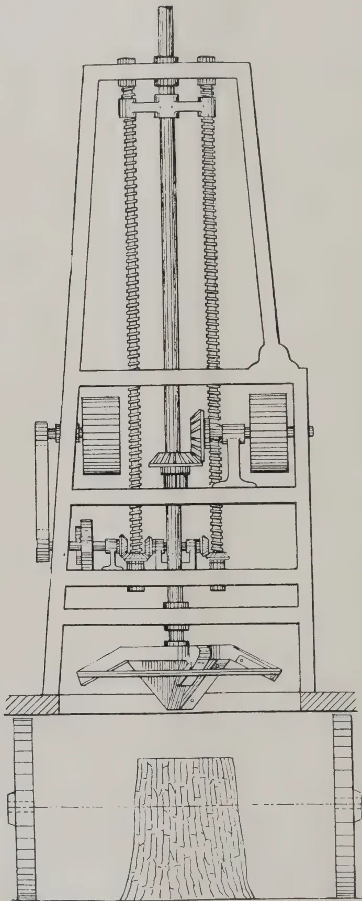
A detailed technical drawing of a stump cutting machine, shown in a front-facing perspective. The machine is a tall, vertical structure with a tapered upper section and a wider base. At the very top, there is a vertical rod or shaft. Below this, the machine's internal mechanism is visible, featuring a central vertical shaft with various gears, pulleys, and a series of horizontal rollers or blades. The machine is mounted on a sturdy base. At the bottom of the machine, a large, flat, rectangular cutting head is positioned over a tree stump. The stump is shown in cross-section, revealing its internal structure. The machine's base is shown resting on a horizontal surface, indicated by a hatched line. The drawing is a line drawing, likely a technical illustration or patent drawing, showing the intricate mechanical details of the machine.A STUMP CUTTING MACHINE.
AUGUST, 1914.]147A machine for cutting down stumps 6 inches and more in diameter has been devised and patented by A. L. & G. D. MOORE of New Orleans. The machine is shown in the accompanying sketch ; it is strongly built and can be attached to any tractor. In working it is propelled to the stump and the cutter head is made to revolve at 400 revolutions per minute. The cutter head is lowered by a friction feed operated by a rocking lever. The thickness of the chips or shavings is regulated by the feed screws.
The cutter can be regulated so as to penetrate 18 inches below the surface of the ground, if necessary, so as to consume all the stump, leaving only the minor roots.
The cutter head is so formed that, with the velocity of working, the chips are thrown upwards by a centrifugal motion. The chips are guided by a hood or jacket and are blown in one direction so that they can be sacked or carted away. The principal object of the machine is to clear cut-over lands from stumps, leaving the land ready for cultivation. At the same time the stumps are cut into small chips which can be used for the manufacture of bye-products such as wood pulp.
It is worked by two men and the cost of the oil fuel is estimated at $ 3 per day of 10 hours.—MONTHLY BULLETIN.
The issue of a sixth edition of Rutherford's Planters' Notebook, coming as it does within a few months of the fifth, is evidence, if such were needed, of the phenomenal and thoroughly deserved success of the work. The merits of the earlier editions have long been known to the Ceylon planter, but the later volumes, which include a mass of information relating to Malaya, should make it equally indispensable in other countries also. Indeed, no planter in the tropics can afford to be without it, since it epitomises the accumulated experience of Ceylon planters, whether in tea, rubber, cacao, etc., in tabloid form.
As might be expected, much of the additional information in the new edition relates to rubber and coconuts, all of it completely up to date, while, for the first time, detailed instructions and estimates for cacao planting are included. A new section on fibres, etc., will be of assistance to those who wish to try their luck with secondary products. In all cases, the information is vouched for by leading practical authorities in their respective subjects, and no one need have the slightest hesitation in following the advice given.
We hope—though admitting that the hope is vain—that the present edition is large enough to satisfy all demands. In that case we may succeed in keeping a copy on our shelves longer than we were able to keep previous issues !
148[AUGUST, 1914.(Paper read at the Meeting of the Board of Agriculture on 11th August, 1914.)
The Castor-oil plant is a native of the tropics, forming a perennial bush or small tree, and grows from sea level up to 6,000 feet. At low elevations its growth is perennial, but at high elevations it is an annual. Excessive moisture is unfavourable, but a good rainfall after sowing is essential for germination. The seed germinates rapidly after burning off cheddy, followed by rain.
It flourishes on well drained alluvial loams, but free sands and clays are unsuitable. It is an exhausting crop requiring a good deal of nitrogen and phosphoric acid to mature the seed.
Propagation is by seed only, and it can be grown alone or as a mixed crop. In large areas the plant is liable to caterpillar attacks, and it is therefore more suitable for growth by villagers in comparatively small and isolated areas.
There are said to be sixteen varieties, but they are usually grouped under two forms. A large seeded variety giving a large yield of an inferior oil, and smaller seeded varieties, some of which give good medicinal oil. One variety with glaucous coloured leaves and smooth fruit is said to yield a harmless edible oil. The small tree of perennial growth is usually planted as a light shade for more valuable crops. It gives a large seed with much inferior oil suitable for burning and for machinery as a lubricant. The other is an annual and is grown alone or with other crops in mixed cultivation. It gives a small seed, which yields the best kind of Castor oil for medicinal and other purposes, but requires a more careful method of expression. The Coast seed of Coconada is said to be the best for oil.
The plant is largely cultivated over some 200,000 acres in Bengal, Madras and other parts of India including the Deccan, and it grows freely in Ceylon both in the dry and wet zones. 67,000 acres are under Castor in the Madras Presidency alone, chiefly in Coimbatore.
In Bengal the seed of the small and large sized plants are sown in May to July with some other crop, the crop being ripe in January and February. Another medium variety yielding more oil is sown in September and the crop harvested in March and April.
Red soils at the foot of hills are usually chosen as irrigation is necessary; the weeds are kept down by ploughing between the rows of plants.
Picking is usually from the 7th to 9th month after sowing, and when grown with other crops it is said to yield about 250 lb. per acre; and when grown alone from 800 to 900 lb., thus yielding a revenue of Rs. 15 to Rs. 30 or more per acre. In Bengal and Oudh it is planted with other crops in rows 6 to 10 ft. apart and plants 3 ft. apart in the rows, and begins to yield ripe fruits in 7 to 8 months; the picking lasting four months.
Mixed castor and groundnut are commonly grown in India.
In the United States, in 1875, 24,145 acres were under castor in Kansas alone, the average yield being 15 bushels per acre; and in Iowa the yield is about 15 to 25 bushels of seed per acre worth from $ 2½ to $ 3 (Rs. 7.80 to Rs. 9.40) per bushel.
The fruits are collected, heaped and covered with straw or cloth. After 6 days the capsules soften and the shells decay, when they are exposed to the sun for two days for the shells to dry and open. The larger varieties are buried in a manure heap and then dried in the sun as before.
A vigorous plant yields as much as 16 to 20 lb. in a season, ample air and light being necessary. For the large varieties wide planting is therefore advisable, say 10 to 15 ft. each way, giving 435 and 302 plants per acre. Thirty lb. of fruits give about 24 lb. of kernel.
AUGUST, 1914.]149Usually the plants are cut down to 2 ft. after cropping, when they give another crop for one or two years, though of a rather inferior seed.
The average yield per acre is said to be 650 to 1,000 lb. in the first year, and 1,000 to 1,500 lb. in the second year when grown alone, or half that quantity when grown as a mixed crop. The seed realises about Rs. 4.80 per 100 lb.
Castor seed is rich in oil containing from 48 to 50 per cent. and is usually expressed twice, the first time cold, the second time hot.
The best medicinal oil is the cold drawn, and as it fetches a higher price it pays to express as much as possible by this first process, for which the seed must be clean and free from impurities. In Europe under modern conditions immense presses are employed using a pressure of 3 tons on the square inch. The seed is fed whole to kettles and warmed with steam to 32° C (89° F) and then pressed, the resulting cake containing 8.5 to 10 per cent. of oil.
If less powerful presses are employed, the cakes are ground in roller mills, and either heated and again pressed, or treated with solvents such as Carbon bisulphide, Carbon tetrachloride or petroleum ether, which extract all but 1 per cent. of the oil. For manuring purposes the cake from the latter process is more valuable, as the proportion of nitrogen is higher and any contained weed seeds would be destroyed.
In Calcutta the oil mills use up 700,000 cwt. of seed brought by rail from Bengal and the United Provinces. It is chiefly the large seeded variety, the small seeded variety being obtained from Madras by coasting steamers.
In India the oil is expressed in 3 or 4 ways.
(1) The seeds are crushed in a screw press with horizontal rollers and the resulting pulp pressed in gunnies, yielding 36 per cent. of cold drawn oil.
(2) The seeds are roasted, pounded, and placed in four times their volume of water kept boiling. The mixture is stirred constantly and the oil skimmed off as it rises to the surface.
(3) The seed is first boiled, dried for two or three days, then pounded and treated as above.
(4) The seed is soaked overnight in water, ground in a gunny and squeezed within cloth until the oil has been obtained. The oil is purified by bleaching in the sun, which causes a sediment to precipitate; it is then filtered through vegetable charcoal and flannel bags. Ten per cent. more oil is said to be obtained by heating the press.
It has been found unnecessary to husk the seed before crushing, as the husk neither absorbs nor colours the oil. By using the whole seed 42 per cent. of oil may be obtained by modern methods of pressing with a hydraulic press alone, crushing rollers, kettles, moulding machines and clothes being unnecessary. This would, however, mean a cake with less nitrogen, and therefore of lower manurial value.
The oil is pale yellow, very viscous and is largely used for lighting purposes, as a preservation for leather, and as a lubricant for machinery. It is also used as a mordant for Alizarin dyed fabrics, the special preparation being known as Turkey Red Oil.
Ordinary native oil sells at Rs. 12 to Rs. 19 per 100 lb. and the medicinal cold drawn oil from Rs. 30 to Rs. 33 per 100 lb. The Import rate is about Rs. 18 per cwt. with an import duty of Rs. 1.20 per cwt. for the crude oil, while the pure cold drawn oil is valued at Rs. 91 per cwt.
The cake is regarded as a good fuel and is used in the manufacture of gas, which in some respects is superior to coal gas. It is, however, chiefly used as manure for potatoes and sugar cane, and is largely imported into Ceylon for manuring Tea, Rubber and Coconuts.
150[AUGUST, 1914.| In 1900 | 8,084 | tons were imported | valued at | Rs. 58.00 | per ton |
| 1905 | 10,494 | „ | do | „ 64.50 | „ |
| 1909/10 | 13,872 | „ | do | „ 77.50 | „ |
| 1911/12 | 12,215 | „ | do | „ 74.20 | „ |
| 1912/13 | 4,190 | „ | do | „ 88.80 | „ |
The largest amount was in 1908 when 15,950 tons were imported and valued at Rs. 58.10 per ton (equivalent to about 30,000 tons of seed.) The imports have gradually fallen off since owing to the poorer quality, the percentage of nitrogen being now only 5 per cent. against 6 per cent. in former years. The deficiency has been largely made up by an increase in the imports of groundnut cake, the quantity in 1912/13 being 15,627 tons valued at Rs. 87.10 per ton. Rape cake is also largely imported, the imports in 1911/12 being 6,038 tons valued at Rs. 66 per ton. In 1912/13 however, this fell to 1,486 tons valued at Rs. 40.50 per ton.
Groundnut cake keeps practically constant with 7 per cent. nitrogen, and Rape cake with 4 per cent., but there is a distinct difference in cost per lb. of nitrogen in each cake.
| Castor cake | ... 5 % | nitrogen costing | 85 cts. | per. lb |
| Groundnut cake | ... 7 % | „ „ | 70 „ | „ |
| Rape cake | ... 4 % | „ „ | 92 „ | „ |
It should be quite possible to produce a pure castor cake in Ceylon, containing to 6 per cent. nitrogen, and there is a ready market for every ton produced. If pure and slightly cheaper per unit, it would largely replace some of the other nitrogenous manures imported, including part of the fish manure, of which 18,338 tons were imported in 1911/12 valued at Rs. 58.60 per ton.
The oil should also find a ready sale, for export and local consumption, about 6,000 cwt. being imported annually.
The castor oil plant grows freely in many parts of Ceylon from sea level to 5,000 feet, and the drier districts of the North-Central Province, Eastern, Southern and Uva Provinces are especially suitable for its cultivation.
It is suggested that the cultivators in these Provinces be encouraged to grow the castor oil plant in their chenas, in a similar manner to the mixed cultivation in India; and that the Railway Stations, Dispensaries and Post Offices be made centres where the cultivators could take any quantity from a measure upwards of their pure seed and receive cash in payment. A measure of average small seed weighs 1 lb. oz. and contains about 3,000 seed. The rate would be fixed monthly according to the price of castor oil and cake, and printed slips in Sinhalese and Tamil would be posted for the cultivators' information. The price of castor seed c. i. f. Colombo varies from Rs. 160 to Rs. 190 per ton or 7 to cts. per lb. Allowing for freight, transport and crushing, probably from 5 to cts. per lb. or Rs. 5.60 to Rs. 7.28 per cwt. could be paid to the villager. When sufficient seed is collected, this would be forwarded to the nearest station and thence to Colombo, where it would be crushed for oil and cake.
Messrs. Freudenberg & Co. have kindly experimented with tons of seed imported from India, to ascertain the yield of oil and cake and the cost, with a view to fixing an approximate rate that could be paid in different centres. Their experiment confirms the above rate.
The experience with tobacco in the Teldeniya district shows that the cultivators appreciate being able to receive cash direct for their produce without deductions, etc., as the area under tobacco is rapidly increasing
AUGUST, 1914.]151round the manufacturing centre. The experience with castor should be the same, as the growth of the plant can be done with little extra labour, and the picking of the crop after the harvesting of the Maize or Kurakkan could be done by the women and children of the families.
If sown in chena crops it would prevent the land lapsing into jungle for at least two years, and although an exhaustive crop, the land would have fully recovered within the 6 or 8 years during which it reverts to jungle.
The annual variety can also be grown in rice fields with a leguminous plant immediately the rice is harvested, and should be sown about 2'-3' apart. Under these conditions it is said to yield 525 lb. of seed, giving 200 lb. of oil and 266 lb. of cake. Experiments have been conducted at Mahailupalama, Peradeniya and Hambantota with fairly satisfactory results, especially in the latter district.
The following table shows the physical and chemical composition of different varieties of castor seed:—
| 1. | 2. | 3. | 4. | 5. | |
|---|---|---|---|---|---|
| Length | 1.25 c.m. | 1.4 c.m. | 1.0 c.m. | 1.2 c.m. | 1.1 c.m. |
| Weight of 10 seeds | 3.55 Gms. | 3.45 Gms. | 2.30 Gms. | 3.378 Gms. | 2.81 Gms. |
| Skin | 0.98 " | 0.90 " | 0.60 " | 0.86 " | 0.77 " |
| Kernel | 2.57 " | 2.55 " | 1.70 " | 2.51 " | 2.03 " |
| Moisture | 5.21 % | 5.07 % | 4.67 % | 4.43 % | 5.55 % |
| Oil | 48.56 " | 49.77 " | 48.92 " | 50.62 " | 48.47 " |
| Proteids | 17.10 " | 18.20 " | 19.33 " | 17.10 " | 18.20 " |
| Carbo-hydrates | 8.67 " | 8.46 " | 8.73 " | 7.33 " | 7.52 " |
| Woody-fibre | 17.22 " | 15.39 " | 15.13 " | 17.26 " | 17.20 " |
| Ash | 3.24 " | 3.11 " | 3.20 " | 3.26 " | 3.06 " |
100.00' 100.00 100.00 100.00 100.00
| Lime | 0.52 % | 0.34 % | 0.44 % | 0.48 % | 0.44 % |
| Magnesia | 0.61 " | 0.62 " | 0.68 " | 0.53 " | 0.54 " |
| Phosphoric Acid | 1.43 " | 1.56 " | 1.51 " | 1.43 " | 1.56 " |
| Potash | 0.59 " | 0.52 " | 0.51 " | 0.51 " | 0.50 " |
| Nitrogen | 2.74 " | 2.91 " | 3.10 " | 2.74 " | 2.02 " |
The nitrogen in the kernel is 3.5 % and 0.7 % in the husk, which explains why the darker coloured cakes are always poorer in nitrogen. The large proportion of phosphoric acid in the ash should be noted. Most Ceylon soils are deficient in this constituent, so that the application of phosphoric acid to this crop should prove beneficial.
M. KELWAY BAMBER.
152[AUGUST, 1914.White Ants cause great damage on estates and in houses—Toxato easily removes this trouble in the most economical way, for Toxato—a powder—is simply sprinkled on the paths and into the nests of White—and other—Ants; as Toxato is palatable to them, they devour it with avidity, thereby spreading the poison all over the nests, killing its inhabitants in a short time.
Toxato never fails. Its action is absolutely infallible.
We supply Toxato, a very effective poison (also on rats, mice, cock-roaches, wild beasts, etc,) by parcel post in
Packages of about 7 ounces each
10 Toxato packages on receipt of 15 Shillings
20 Toxato packages on receipt of 25 Shillings
postage paid to nearly all countries in the World.
Orders please forward through European Correspondents or direct to us; if sent to our address all orders must be accompanied by remittance—Post Office Money Orders or Cheques, payable in Europe; Cheques to be crossed.
Gevekoht & Wedekind, Hamburg 1.
(Read before the Meeting of the Board of Agriculture on 11th August, 1914.)
In the paper on "Lac Culture as an Industry for Ceylon" submitted by me at a meeting of the Board of Agriculture in January, 1912, soon after my return from Pusa, and published in the TROPICAL AGRICULTURIST, Vol. XXXVIII., No. 2 (February 1912), with a note from Mr. E. E. GREEN, the then Entomologist to the Government of Ceylon, I observed that in India two crops are taken in a year, one called "Kartiki" at the beginning of October (from inoculation done in June-July) and the other called "Baisaki" in June-July (from inoculation done in October corresponding to our "yala" and "maha" seasons, but that in Ceylon we should have to determine our seasons after making trials in several localities. Since then we have made several trials, the first series of which were carried out in October, 1912, in the Kandy and Hambantota districts at two places in each district, viz., Peradeniya and Maligattenne Estate in the former case and Tangalle and Ambalantota in the latter. These centres were selected with double object of ascertaining the influence on lac production and of introducing the industry into places in the vicinity of which lacquer-work was carried on.
As the result of these first trials inoculated brood lac became established in Masan (Zizyphus) trees, but the extraordinary rains that followed and the interference of red ants did great damage to the growing larvæ at Tangalle, Ambalantota, and Peradeniya.
AUGUST, 1914]153Specimens of the lac produced on Maligattenne Estate was forwarded to the Imperial Entomologist at Pusa who supplied original brood lac and his report was encouraging.
No brood lac, however, could have been obtained from this crop and a fresh supply of Indian Kusum or Kon (Schleichera trijuga) lac was obtained from Pusa in February, 1913. The inoculation with this was very successful especially at Maligattenne Estate where Kon and Masan trees were used. The dates of inoculation and cropping of the lac at Maligattenne are as follows :—
| Inoculated | ... | ... | 25th February, 1913 |
| Cropped | ... | ... | 2nd August, 1913 |
| Inoculated | ... | ... | 2nd & 3rd Do. |
| Cropped | ... | ... | 15th January, 1914 |
| Inoculated | ... | ... | 15th Do. |
| Cropped | ... | ... | 6th June, 1914 |
The brood lac from this last crop was used for inoculations in Kandy, Kurunegala and Matale districts, and has taken well in all cases.
From the above it will be seen that some knowledge has been gained in the study of local seasons which are not the same as in India where three distinct seasons exist. The "Kartiki" crop takes about four months while the "Baiaski" takes over eight months. Our seasons seem to be more uniform owing probably to more or less variation of air temperature and more regular rainfall, and as a result the lac takes nearly the same time to come to maturity each season, viz., about six months. Subsequent trials will, I think, go to confirm this opinion.
In view of the fact reported by MR. GREEN that his attempts during a period of 11 years, beginning from 1900, to establish the Indian lac insect in Ceylon resulted in failure, the Ceylon Agricultural Society might congratulate itself on the success that has attended its efforts.
I would here invite attention to MR. GREEN'S remarks on page 123 of the TROPICAL AGRICULTURIST for February, 1912.
It is to be hoped that the Society's efforts will ultimately result in supplying the local demand for lacquer work and give a fillip to that industry.
Samples of lac were sent to the Hon. Secretary of the Kandyan Art Association and these were used in lacquering walking sticks which were on view at the recent Agricultural Show at Nuwara Eliya. The workmen complain of an excess of gum, but it is probable that this could be remedied by better washing. They are prepared to pay Rs. 1'25 per pound which is a good deal in advance of the London market quotation in 1911 (vide PROFESSOR DUNSTAN'S letter to the Secretary, Ceylon Agricultural Society, in which 55 shillings per cwt. was quoted). The local demand of lac is at present very limited but with the encouragement now being given to indigenous arts and crafts it is not unlikely that the demand will increase.
The initiative of the Society in this matter is most fortunate inasmuch as the clearing of forests is making it very difficult for lac workers to procure wild lac on which they have been so long depending. After a time it is hoped that the lac workers themselves will raise their own with the assistance of the Society. In fact a beginning has already been made this season and a few men have already started operations.
Fresh samples of lac have also gone to the Imperial Institute, to the Imperial Entomologist, India, for report, and also to the Museum of the Department of Agriculture, and the Colombo Museum for exhibition.
Chief trouble so far experienced in lac cultivation is the destructive nature of the red and other varieties of ants. These ants by coming in contact with the growing insects break the breathing filaments and cause their death by
154[AUGUST, 1914.suffocation. This opinion is based on my own observation as authorities in Ceylon and India have asserted that ants do not cause any more trouble than "milk" the lac insects.
In giving over my duties to my successors (MESSRS. W. MOLEGODE and JAS. R. NUGAWELA) who have acquainted themselves with the work, I must express my thanks to the Secretary of the Society for having recommended my being sent to the Pusa Institute with a view to gaining a practical insight into lac cultivation as the e carried on, and to all those who have assisted me in my work, notably MR. K. B. BEDDEWELA who placed his land so conveniently situated near Kandy at my disposal and devoted much of his time to carrying out experiments which mainly through his careful attention to details have been attended with success.
N. WICKREMARATNE.
The question of grazing is becoming more and more insistent as the area of cultivation increases, and therefore the question deserves detailed examination.
Communal grazing. This consists of grazing on land to which every one in the village has an actual or accepted right. This is comprised of communal lands set apart for the purpose, of unassigned waste lands, of tank beds, the sides of drains, roads and other poramboke land; usually also of harvested wet lands and of dry lands which have been left fallow. Many of these sources of grazing, as the cultivated area extends, or the village expands, are constantly being reduced in area and thus the ryot, who has depended on free grazing from time immemorial, is on all sides beginning to feel, and sometimes acutely, the lack of pasture. As time goes on and cultivation continues to expand either intensively or extensively, he will feel it more and more, until some other method of farming is evolved, which includes the care of his animals. In some parts of the Presidency this evolution can be seen even now, of which the Dharapuram taluk of the Coimbatore district is an excellent example. This is a taluk where there is no culturable waste, no communal grazing land, and no forest grazing; yet, it is one of the best known cattle breeding centres of the Presidency, and its cattle have a higher market value than any other, besides which, it contains some of the best garden cultivation to be seen anywhere in India, as well as an excellent system of mixed farming.
As far as the maintenance of the quality of the stock is concerned nothing can be said in favour of communal grazing; in fact everything is against it. Where there is communal grazing, every ryot in the village naturally claims as large a share of it as possible, with the result that grazing lands are always overstocked, are never given a rest, and are usually little more than exercise grounds for cattle. In many cases the number of cattle maintained is in excess of the ryot's actual requirements, as well as of the number which he can normally supply with fodder in the dry season, and though the animals may manage to exist for a time on a starvation diet, they are very prone to cattle disease and to suffer from changes of season. Enquiry into the hide trade shows that the supply of hides is always greatest when the rainy season commences. Not only do animals die under this treatment, or lack of it, but the female stock breed very irregularly and, if the cows are not barren altogether, they seldom calve more often than once
AUGUST, 1914.]155in three to four years. This is a most important point; the quinquennial census shows that, on an average, a cow only rears a calf once in years. Communal grazing is, and must be mixed grazing, and, since male stock are never castrated before they reach maturity, this leads to the evils of inbreeding and promiscuous breeding and often permanent injury to the young male stock from serving cows when too young. Thus, even if the ryot were desirous of improving his stock by more careful breeding, this is impossible as long as he has to depend on communal grazing.
Forest grazing. This is ordinarily the grazing of cattle in the reserved forests on payment of a nominal fee per head, though, in times of scarcity, the forests are thrown open, when necessary, for free grazing. Normal forest grazing can be divided into three classes:—
(a) Cattle, which live entirely or almost entirely in the forests and are kept in pens there, i.e., breeders' cattle, such as those of East Kollegal and the west of Dharmapuri and Hôsur.
(b) Cattle, belonging to villages adjoining the forest which are occasionally breeders' cattle, but more often are kept, either for the sake of the manure which they supply, or for the sake of prestige; a man's position and wealth in the village being reckoned by the number of stock which he keeps.
(c) Cattle, which come from a distance to graze in the forests during the cultivation season.
Forest grazing is always a serious menace to the forests and not only to the forests but to the water supply of wells and tanks. It is more so where grazing is continuous as the cattle are then in the forests when these are dry. Grazing and forestry are, and must be, at variance; for, as the forest canopy increases, the grass tends to disappear, and the simplest way of lessening the shade and increasing the grass is by forest fires. Yet certain kinds of forest grazing are of great importance.
Private grazing areas. Private grazing areas are of great value and importance to the country and every encouragement should be given to increase these. Everywhere where private grazing grounds exist, the cattle are good and care is taken to breed and rear good animals. This class of grazing can be divided as follows:—Temporary pasture and permanent pasture. Temporary pasture consists of harvested dry fields, of patta lands left waste (though in many cases these are treated as common grazing lands) and of patta lands, which are sown down to pasture. Permanent pasture includes patta land reserved for pasture, either on single or on joint patta, and, either for a leased rental, or for the pattadars' own enjoyment.
Dry lands when newly harvested are usually considered as private grazing. There is often a considerable amount of gleanings in the shape of fallen pulse and cereal leaves and, until this fodder supply is exhausted, such lands are usually reserved for the grazing of the cultivator's own cattle. Patta lands, which are left waste, are occasionally treated as private pasture, but, more often than not, are treated as common grazing land.
The only two places where patta lands are regularly set apart for grazing, i.e., for temporary pasture, are in the two noted cattle breeding centres of "Plain Cattle," viz., the Ongole-Kandukur tract and the Dhârâpuram-Palladam tract. In the former tract, permanent pasture is perhaps more common, since the soil is very liable to wash, and there are large areas of patta land which cannot be cultivated, such as the lands adjoining rivers and streams. These streams can always be traced by these grass lands and by the growth of babool which gives the requisite shade for pasturage. But besides this, temporary pastures are also common; even small areas of 3—4 acres or less are left for pasture, showing that even the smaller ryot of
156[AUGUST, 1914.these fertile soils realizes the value of pasture for his cattle. Such temporary pastures are all of spontaneous growth and are not sown. In the Kangayam tract, temporary pasture is the rule, though exceptionally good pastures are often left for 20—30 years before being broken up. It is here that the famous "Coimbatore grass" known as "Kolai kuttai pillu" (Pennisetum cenchroides) is found and the seed of this grass is regularly sown, mixed with a cereal, when land is to be laid down. Here private pasturage is rendered much easier by the practice which prevails of fencing the fields. So valuable are pastures considered here, especially since the recent rapid increase in the price of cattle, that even garden lands are now occasionally laid down to pasture. This moreover is the only place in the Presidency where anything like systematic grazing is carried on.
Permanent pasture. The practice of maintaining permanent private grazing grounds, although in some parts it is giving place to dry cultivation, in others is showing signs of development, and this should receive every encouragement, as it is the first step towards the improvement of live stock. The practice is common throughout Nellore district and in the Kistna and Gōdāveri dry taluks, as well as in the North of Salem and in the Punganur zamindari of Chittoor district, while a few cases have come to notice where the system is of quite recent origin, even in parts where forest grazing is considered good. It is held by some that the cultivation of grass on patta lands lessens the yield of food grains but it is a moot point whether this is so. Land laid down to temporary pasture is greatly enriched and, when ploughed up again, gives much better yields of grain. Moreover private pasturage enables the ryot to maintain not only his working animals, but also his small breeding herd and, if he owns his well in addition to his dry land, he is enabled to manure his garden lands well and to meet his own supply of working bullocks. Thus, though the dry lands may not directly produce cereals when under pasture, they tend to increase the production of the garden lands, and after all, except perhaps on black cotton soils, the production from the land is very largely governed, not by the area cultivated but by the amount of manure available.—REPORT ON CATTLE SURVEY OF THE MADRAS PRESIDENCY.
50 cents a Copy.
1914.
1915.
This annual, in place of the Sheet Agricultural Calendar, which used to be published hitherto, is now on sale at Peradeniya and at the following Bookstalls:—
RAILWAY STATIONS.
COLOMBO APOTHECARIES Co., LTD.
CAVE & Co
"CEYLON OBSERVER" OFFICE.
WHITEAWAY, LAIDLAW & Co., LTD.
"MORNING LEADER OFFICE."
DR. G. TOBLER-WOLFF has carried out experiments at Amani, German East Africa, with the object of determining the effect, on the growth of the plant, of injuries to the taproot of coffee and tobacco in the operation of transplanting. The results of these experiments appear in DER TROPEN-PFLANZER for June, 1914.
Forty seedlings of Quillou coffee about 6 cm. high, with well-developed taproots were selected. The taproots were 14 to 16 cm. long. These were divided into four groups of ten each, which were treated in the following way :—
In the first ten, the root tip was enclosed in a block of Plaster of Paris, about 1 cm. long and cm. thick. In the second ten, one to two centimetres of the root was cut off. In the third ten, the taproot was cut off up to about 2 cm. below the collar. The fourth ten were left untreated as a control. All the plants were then planted out. The experiment was begun on the 5th of December, and the plants were dug up for examination at the end of February in the following year. None of the plants died, and all were normally developed.
In Group I, all growth in length of the taproot was prevented : a fairly abundant development of lateral roots had taken place, especially near the collar. In Group II, the root tip was in no case regenerated, and the taproot had consequently not grown longer : lateral roots had developed as in Group I. In Group III, lateral roots had been abundantly produced, but the seedlings of this group differed from the others in that the taproot was replaced, sometimes by an almost vertical lateral root, sometimes by a bundle of vertical lateral roots, side by side, and equally strongly developed. The control plants showed a well-developed taproot.
The experiment was repeated with Tobacco seedlings, 4 to 6 cm. high with a taproot 4 to 5 cm. long. As the growth in this case was more rapid, more definite results were obtained. When the plants were examined, at the end of two and a half months, they were 70 cm. high.
The results with tobacco corresponded exactly with those with coffee. In most cases of Group II, the taproot had not lengthened, but had thickened remarkably. In Group III, the beginning of a replacement of the taproot was observed in seven out of the ten cases, sometimes by a single lateral, sometimes by from 2 to 4. In Group IV, four examples showed a well-developed taproot, but in the other six the taproot had been injured in transplanting and had developed strong lateral roots.
DR. TOBLER concludes, that the effect of an injury to the taproot during transplanting has, in general, been overestimated. In all cases, whether the injury was great or small, the growth of the plant above ground differed very little, or not at all, from that of the controls. A certain degree of injury is necessary for the replacement of the taproot by a single lateral, but the character of the replacement makes no difference to the growth of the plant.
No planter should depend on buying seed every year, but, if it is necessary to do so, it is best to secure it in ear, when, if unsatisfactory, it may be returned to the shipper. The seed should be prepared for planting by first removing the bud and tip kernels and any others of irregular shape, then shelling the remaining ones by hand. The Office of Corn Investigations,
158[AUGUST, 1914.United States Department of Agriculture, has tried many shellers but found none as satisfactory as the hand for shelling seed corn. Uniform kernels are an advantage, but cannot be successfully obtained unless the separation is made while they are all attached to the ear.
Six kernels from every ear to be planted should be tested for germination. The value of this work is easily shown by the following paragraph taken from Bulletin No. 135 of the Iowa Experiment Station: "The untested corn in 1910 gave a stand of 50.5 per cent. and a yield of 55.5 bushels per acre; the ears which tested 6—0—0 in 1910 gave a stand of 21.8 per cent. in stand and 19.6 bushels in yield. In 1911 the untested seed gave a stand of 52 per cent. and yielded 35.6 bushels per acre, while the ears testing 6--0—0 gave a stand of 73.95 per cent. and a yield of 45.7 bushels, a gain of 21.6 per cent. in stand and 10.1 bushels in yield. The average stand for the two years of untested seed was 51.25 per cent.; of the tested 73.1 per cent.; the average yield of the untested seed was 45.5 bushels per acre, of the tested, 60.4. Therefore, testing gave an average increase of 21.85 per cent. in stand and 14.9 bushels in yield per acre."
The production of seed corn for home use is worthy of consideration by every planter in the State; it will be the principal means of increasing the yield per acre. There are three methods of selecting seed corn; (1) crib selection, (2) field selection, (3) selection of the progeny of high-yielding ears by means of an ear-to-row breeding plot.
Field selection should be done as soon as the corn is thoroughly mature. When ears are taken from a crib for planting the kind of stalk on which they developed is never known. The ear is simply a collection of fertilized ovaries joined to a spike and encased in a bundle of shucks. They not only possess ear characteristics but those of the stalk as well, and if the stalk is not noticed when seed is picked out the best results cannot be expected. Physical characters of ears and stalks must be kept in mind. Strong, healthy and medium-sized stalks, producing the number of ears desired with the ears of sufficient height to be above pea-vines in a normal year, but within reach of the harvester, will answer every purpose. When a man is sent to the field to harvest corn one-half of his energy should not be used in breaking the plant in order to get hold of the ear. Such a condition is a waste of time and money. The ears should bend over instead of standing erect so as to prevent water collecting between the ear and shuck, thereby causing the corn to rot. Depending ears is an hereditary character and by rigorous selection a strain of corn having this characteristic well developed may be obtained. The practice of breaking corn is dying out, excepting in those areas where it grows very high. The ears hanging down prevents injury from birds. Even with these characters well developed, the ears should not be selected unless they are well covered by the shuck; this is one of the best and cheapest methods of fighting the weevil. The corn that is gathered for seed from the field must be re-selected in the barn or crib, where all objectionable ears are thrown out. Knowing which ears to retain is sometimes a difficult matter. WILLIAMS, Ohio Bulletin No. 212, gives the following ear characteristics as conducive to high yield:—
If the above points are sought, the yield will certainly not be decreased.
After doing careful field selection followed by rigorous ear study, the individual ear character for yield is not known. Two perfect ears may look exactly alike, but may have many different yielding powers. The only method by which this is determined is by means of an ear-to-row breeding plot,
AUGUST, 1914.]159that is, planting each individual ear to a row. A uniform area of land containing as many rows as ears to be planted (not less than 100) should be selected away from any other field of corn. If it be possible, get three-eighths to one-half mile away from other corn fields, unless the plot be located on the south or west side, when it need not be over one-fourth of a mile away. The predominating winds during the summer in this section are from the south, south-west and west, hence the danger of cross fertilization may be less. A field of corn planted from a pure strain is a homogeneous mass of hybrids, and the breeding plot may be located within it, where the same kind of corn is to be planted. This is probably the better way to locate the plot as then the chances for cross fertilization with other varieties are lessened. Pure strains of different varieties of corn should never be crossed as the first generation may be a lower yielder than either parent, but no one knows this until it has been tried. Hybrids from pure strains of the same variety usually produce greater yields for the first few years.
One-half of each row in the breeding plot should be detasseled so as to prevent inbreeding. Do not remove the tassels from all the rows at one end of the plot, but take them from the even numbered rows on one end to the middle and then go to the other end and do likewise with the odd-numbered ones. In this way the female and male characters may be studied. Notes should be taken on the different rows as to height of stalks, height of ears on stalks, number of ears on stalks, number of depending ears, and the amount of shuck over the ears. At time of harvesting, two sacks should be used for each row, one for the detasseled portion and the other for the part not detasseled. Each sack must be weighed in order to determine the yield of each row. The corn from the part of the row where the tassels were not removed may be thrown away as it is more or less inbred.
In order to call your attention to the usefulness of a breeding plot, the following results are given :—
Louisiana State University, Yellow Creole Corn, 1913 :
Lowest yielding row, 22 bushels.
Highest yielding row, 48 bushels.
The physical character of the stalk may be changed without damaging the yield. The Illinois Experiment Station increased the average height of ears in six years from 56.4 inches to 57.3 inches, and decreased the height from 42.8 inches to 23.1. In five years the average crop for declination from the perpendicular was forty-six degrees, while the declining ear strain was 88.5 degrees. The erect ears gave a greater percentage of mouldy or rotted corn by 3.28, which shows the practicability of having the ears hang down.
—LOUISIANA PLANTER.
(HEMILEIA VASTATRIX B. AND BR.)
The most serious of coffee diseases is undoubtedly that caused by Hemileia vastatrix, and generally known as Coffee Leaf Disease. In this article it will be referred to as Hemileia disease.
It has been responsible for large monetary losses, and for the abandonment of coffee-growing in various parts of the world. The example of Ceylon is well-known. The fungus is now distributed over all the coffee-growing countries of the Old World. The only seeming bar to its progress is the breadth of the Atlantic Ocean, for it has not yet been recorded from the coffee areas of South America.
160[AUGUST, 1914.]Hemileia is endemic in this part of Africa. It occurs on practically every tree of "native" coffee (Coffea robusta, Lind.), and has done so for many years. Only recently, however, was any attention paid to its presence and still more recently was it shown to be the same species as is found on "cultivated" coffee, viz., Hemileia vastatrix. Probably the fungus has been present on "cultivated" forms of coffee in Uganda for several years. Its presence may have been known, but there was no definite diagnosis of the fungus, and its significance was unrecognised. The planting up of large areas of coffee during the last few years has provided the fungus, already in the country, with a vast amount of fresh host material, and the parasite has not been slow to take advantage of its opportunities. During 1913, the loss of crop due to Hemileia disease was, in many cases, as much as 30 per cent.
It is important to remember that Hemileia is endemic in Uganda, and that, therefore, it cannot be expected to cause as much damage as it did in Ceylon, to which country it was introduced.
[ This is a new reading of the evidence. Mycologists are generally agreed that Hemileia vastatrix is endemic throughout the tropical regions of the Eastern Hemisphere.—Ed.]
The virulence of the attack of 1913 may be repeated in part during the coming wet season of 1914, especially on new estates, but it is unlikely that its severity will continue unabated year after year. The fact that "native" coffee is more seriously affected by Hemileia disease during some years than during others lends support to this view. No hitherto unaffected estate, or new estate, can hope to escape infection, and the experience of the older plantations will probably be repeated. It is a hopeful sign that trees, which lost practically all their leaves and crop owing to Hemileia disease in 1913, are now covered with fresh foliage, have produced many new shoots, and are in a fair way to bear good crops. Should this experience become more general than it is at present, and should the hope that Hemileia outbreaks will be less virulent than formerly be realised, the outlook for coffee planting will be bright indeed. Planters can do much towards this consummation by adopting the measures mentioned below.
There seems to be an impression abroad that spraying, as a measure against Hemileia disease, is "of no use" and is, in addition, "not worth the cost." This is far from being the case, so long as the spraying is done systematically. The cost of spraying varies with local circumstances, but, on the whole, an average cost per acre of, say, Rs. 3, is quite within reason. This figure is representative of the planting districts of Buganda.
Measures designed to check or prevent leaf-disease should be based upon the following recommendations :
As already indicated, the source of Hemileia disease on "cultivated" coffee may well have been the disease on "native" coffee trees. Therefore it is advisable to take precautions. Native "shambas" should be examined for coffee trees, and the trees for disease. When leaf disease is present on coffee in a native "shamba" from which labour is drawn or with which there is traffic of any kind, the estate owner or manager should give attention to the danger of the introduction of leaf-disease from the infected "native" coffee.
No estate in Uganda can hope to escape infection, but it is possible to reduce the effects of leaf-disease to a minimum by keeping a sharp look-out for the appearance of the disease and by carrying out the measures mentioned above,—CIRC. No. 1., DEPARTMENT OF AGRICULTURE, UGANDA PROTECTORATE.
Diyatalawa Mills, Vauxhall Street, Slave Island.
Fowls Rs. 18, 15, 10.50, and Rs. 9 per dozen. Ducks Rs. 15, Geese Rs. 60, Turkey cocks Rs. 120, Turkey-hens Rs. 90 per dozen.
Guinea fowls Rs. 48, Pigeons Rs. 6, Partridges Rs. 6, per dozen
Quails to order.
Pigs, Porkers, cts. 35 per lb. live weight, Sucklings Rs. 7.50, 5 and 3.
Eggs, fresh, 75 cts. per dozen.
Telephone 1087 and 285,
Telegrams : Wally, Colombo
Usual discount to the TRADE.
162[AUGUST, 1914.In KEW BULLETIN, 1912, p. 373, a detailed account appeared of investigations made by MESSRS. CLAYTON BEADLE & STEVENS into the possibilities of Hedychium coronarium as a source of material for paper-making. The experiments were made with dried material from Brazil and with fresh stems grown in the Royal Botanic Gardens, Kew. Subsequently a supply of the dried plant received from the Royal Botanic Garden, Sibpur, Calcutta, was forwarded to MESSRS. CLAYTON BEADLE & STEVENS, who have examined the same to see if the plant would give similar results from different parts of the world.
The following report has been furnished by MESSRS. CLAYTON BEADLE & STEVENS:—"The botanical specimen sent over from Calcutta are complete, dried-down specimens, whereas the Hedychium coronarium examined from Brazil was in the form of crushed fibre produced by passing the green, freshly cut stems through sugar rollers to express the juices, prior to drying for shipment. This in itself constitutes an important difference. We had our doubts whether complete specimens in the dried-down condition could be rendered serviceable in the manufacture of paper because the complete specimens from Brazil had undergone fermentation. In the condition as sent from Brazil, however, we believe that they were packed in a green state, whereas those sent from Calcutta were presumably carefully dried before packing. We have recently cut down a green Hedychium stem and passed it through crushing rollers, and we find that of the dry weight in the complete green stem there is 23 per cent. of organic matter contained in the juices and 77 per cent. of dry crushed material. These juices are of an acid nature and have a powerful reducing action upon Fehling solution, and it is to the presence of these juices in the green stems as sent from Brazil that we attribute its destruction in transit. The dried down specimens from Calcutta do not appear to have suffered from any putrefactive changes, due—we presume—to the fact that they were completely dried before packing.
"The Calcutta specimens were boiled with 10 per cent. (of 77 per cent.) caustic soda for four hours at atmospheres, washed free of liquor and lightly brushed for three hours in a hollander, then made into paper without any added sizing material.
| The soda consumed on the raw material | ... | = | 6.0 % |
| " " on paper | ... | = | 18.0 % |
| The yield of unbleached paper on raw material | = | 32.5 % |
This on a basis of 77 per cent. crushed fibre would yield 43 per cent. of paper on the weight of the crushed fibre. Brazilian crushed fibre yields under similar circumstances 50 per cent. unbleached paper. The sheets of paper produced from the Calcutta fibre were examined in different thicknesses, and substances, and yielded the following figures for bursting strain:—
| Thickness in mm. |
Substance grams. per sq. m. |
lb. Demy. | Bursting strain in lb. per sq. in |
|---|---|---|---|
| 10 | 80 | 21 | 26 |
| 13 | 110 | 30 | 53 |
| 14 | 115 | 31 | 55 |
| 28 | 230 | 62 | 105 |
These figures are satisfactory. The material boils down readily, it is easily beaten to the condition of pulp, requiring comparatively little power; it drains well and feels well when made into paper, and has a good wet strength after couching, and there should be no difficulty in manipulating it upon the paper machine.
AUGUST, 1914.]163"The 'Waterleaf' is not ink-proof as that produced from the Brazilian fibre is, but this is probably due to the fact that whole specimens sent home dried down contain juices which probably had some effect upon those natural constituents (pith cells) which give to the Hedychium fibre these peculiar self-sizing qualities.
"We think this statement is probably true, because Hedychium green stems from Kew, Paris, and elsewhere, have shown self-sizing qualities if crushed to remove the juices and immediately used, or if the crushed material had been dried down for shipment after the removal of the juices. The above paper is of a good kraft colour with a strong tear and a rattle and should be very serviceable for ordinary wrapping papers. It is elastic, has a good breaking strain and bursting strain and possesses good folding and wearing qualities. We are disposed to conclude that Hedychium coronarium will yield good paper-making qualities from whatever part of the world it is gathered, and that any differences in the qualities of the above-mentioned material from Calcutta as compared with that from Brazil (which latter we have thoroughly investigated) are to be attributed to differences in the preparation of the raw fibre prior to shipment rather than to any difference in the growth of the plant itself."—KEW BULLETIN.
The following report has been furnished by MESSRS. CLAYTON BEADLE & STEVENS to the Director of the Botanic Gardens, Kew, on a consignment of dried stems of H. flavescens despatched from Ceylon.
"We duly received a bundle of dried stems of Hedychium flavescens which you forwarded to us from Ceylon when you informed us that the Director of Agriculture was anxious to have it tested as to its suitability for paper-making. We regret that the work has been so long delayed.
The material arrived in very good condition and, if it could be supplied in bulk in the condition in which it arrived, it would be a very convenient form for converting into paper. [The stems were passed through the rollers of a rubber washing machine before drying—Ed.]
We tested it by ordinary paper-making processes and found that it could be converted into paper, samples of which we enclose herewith, which in a large measure resembles the paper obtained from Hedychium coronarium.
By a process of direct conversion, whereby Hedychium coronarium will yield paper equal to 90 per cent. of the dry weight of the stem, H. flavescens yielded 60 per cent. The probability is that, by ordinary paper-making processes, by boiling under pressure and subsequently beating and so forth, whereby Hedychium coronarium has yielded in bulk 60 per cent. of paper, the H. flavescens would yield probably about 40 per cent., but this is a point that might be tested later on. The paper from H. flavescens is ink-proof and has a good rattle and strength and is what we call "normal hide-bound" paper.
The mean bursting strain, corrected to a thickness of 0.1 milligrams (=a substance 84 grams per sq. metre), was 49 lb. to the sq. in., and the mean breaking length 6.35 kilometres. This may be described as a strong paper, very much resembling that obtained from H. coronarium under similar circumstances."
MR. I. HENRY BURKILL in his Report on the Botanic Gardens, Singapore and Penang, for the year 1913, remarks that one-twentieth of an acre was given up to an experiment with Hedychium coronarium: but it showed no such vigour as would make it worth growing for paper stuff.
164[AUGUST, 1914.In THE PAPER-MAKER AND BRITISH PAPER TRADE JOURNAL, MESSRS. CLAYTON BEADLE AND STEVENS furnish the following alphabetical list of papers for which Hedychium can be used without admixture of other fibres:—
Backing papers, bag papers of all descriptions, box boards, browns of all descriptions, butter papers, "caps," carpet felt papers, cartridge papers, casings, coloured papers, copyings, cutlery papers, duplex papers, engine boards, envelope papers (many kinds), fly papers, foil papers, glazed boards, greaseproof papers, grocery papers, hosiery papers, kraft papers, leather boards, manillas, mill boards, mill wrappers, paper yarn, parchment (imitation) pin and needle papers, portmanteau boards, printings (many kinds), railway tickets, sampling papers, "shops," "skips," tea papers, tissues, tobacco papers, toilet papers, tube papers, wrappings.
In our last issue (January 1914) we published the regulations which have been framed to permit of the grading of wattle bark exported from the Union. It will have been observed that the regulations do not render such grading compulsory, but we feel sure that the majority of the wattle growers of Natal are sufficiently alive to the interests of their industry to welcome such provision as will tend to secure uniformity in the shipment of bark. Whilst we believe in the future of the wattle industry, such future will only be assured by a careful study of the requirements and the changes which take place in the economies of the tanning industry. One of these requirements is the grading of wattle bark exported, a measure that has become almost as necessary as the grading of maize. It is simply a following of the principle which all modern producers realize—that uniformity brings better prices.
Let us glance at the position of the wattle industry at the present moment. Briefly put, it amounts to this: the production of bark is on the increase, whilst the market for bark is at least stationary and possibly becoming restricted. Wattle bark was formerly employed somewhat extensively in England, and the tanning material it provides is an excellent one mixed with other substances. Tanners, however, have got so much into the habit of using prepared extracts that they will now hardly be troubled with the extraction of solid materials, with which it is difficult to obtain liquors of the concentration which is now required. In fact, Hamburg is now practically the sole market for raw bark. What the future of the wattle industry will be if we continue to export bark, and bark only, it would be difficult to prophesy, but the indications at the present time certainly point to a gradual lowering of price as the production increases. And who knows when the German tanners may drop raw bark in favour of prepared extract as the English tanners have done?
That is the position as we find it to-day; and the matter now resolves itself into this: Cannot the preparation of extract be undertaken in this country for export, without at the same time a complete cessation of the shipment of raw bark? The export of extract would relieve the Hamburg market of big supplies of raw bark. This would tend to raise the price of raw bark, and at the same time secure to us markets in England, America, and elsewhere for our produce in the shape of extract. The question is well worthy of careful consideration.
The scarcity of tanning materials in the world's markets is receiving serious consideration, and experiments are being conducted in India and the tropics generally with a view to the establishment of large plantations of tannin-bearing trees. The production of hemlock bark in the United States has
AUGUST, 1914.]165fallen from 900,000 tons per annum to 600,000 tons in 1909. The quebracho extract industry in the Argentine is also gradually becoming more difficult to maintain. Quebracho would be the principal competitor of wattle bark, but the supply is a diminishing one, as the trees are not, we believe, being replanted, and prices are constantly rising. In order to give some idea of the immensity of the extract industry, it may be stated that the United States consumes £4,400,000 worth of tannin materials every year. Of this quantity about £3,000,000 worth consists of hemlock bark and about £1,000,000 quebracho extract. England imports about 100,000 tons of quebracho extract every year. The world's consumption of vegetable tanning materials is difficult to arrive at, but it has been estimated to represent not less than 15 millions sterling per annum.
The relation of South Africa's output of wattle bark to the world's consumption of tanning materials may be roughly calculated. Last year we produced approximately 60,000 tons of dry bark. This represents about one-tenth of the output of hemlock in the United States, and only about per cent. of the world's consumption. When it is considered that the supplies of hemlock and quebracho are gradually lessening, it will be seen what an opportunity there is for South Africa to step in with her new product—wattle extract. Apart from Natal, there are some thousands of acres planted with wattles in the low veld of the Transvaal, whilst small plantations also exist in the Cape Province. And there are doubtless extensive areas not yet planted which would be suited to the growth of the Acacia mollissima.
What are the possibilities of the establishment of a wattle extract industry in South Africa? The question has long been the subject of investigation by the Natal Wattle Growers' Union, and the information in their hands seems to prove that the shipment of liquid extract from South Africa to the European market is not feasible, owing to expense in procuring suitable casks and the heavy freight on such goods. As regards solid extract, it has been thought that this could not be satisfactorily made on a commercial scale owing to the precipitation of a portion of the tannins on redissolving the solid extract.
This naturally is a most important point; and in order to obtain authoritative opinion, the Department of Agriculture wrote last year to one of the heads of certain well-known leather industries' laboratories in England. This gentleman replied: "I feel certain that such an extract can be prepared and ought to be a profitable manufacture, and much of the small twig and branch bark might be utilized, which at present is not worth the cost of stripping. . . . There are, no doubt, practical difficulties in manufacturing on a commercial scale a good solid extract of wattle bark, but I can speak confidently as to these being surmountable, because I have recently had two such extracts submitted for my examination, both of commercial quality, and one of them of great excellence and free from insoluble matter." (With regard to the last point it may be observed that ordinary quebracho extract contains very considerable quantities of insoluble matter, and it has been necessary to elaborate processes by which this matter can be kept in solution.)
This pronouncement was made some months ago, and since then it has been ascertained that certain gentlemen in this country, who have expert knowledge of the processes involved, as well as the necessary plant, are contemplating the erection of a factory which will deal with green bark and prepare a solid extract for export. Preliminary negotiations are now proceeding, and the public will doubtless have a definite announcement placed before it at no distant date. Wattle growers will, we are sure, join with us in wishing this enterprise every success, for upon its success or that of some similar undertaking will depend in a very great measure the future of the wattle industry in South Africa.—SOUTH AFRICAN AGRICULTURAL JOURNAL.
166[AUGUST, 1914.Such plants as bear their seeds in pods, as all those we call peas and beans, many wild plants, the Guango tree, the Cashaw, etc., belong to the family called Legumes.
A great deal has been written in this Journal for the last 14 years about these Leguminous Crops, as "cover crops" and "green dressings," to be grown through staple crops like bananas or sugar canes, or coconuts, or orange trees or cotton, and among catch crops like corn or yams and so on. It is an old and common practice to plant beans through corn and on the yam hills. Growers did not know why they did this, but it was observed by generations of cultivators that peas and beans grown through other crops agreed with them—so much is this the case that the common Red Kidney Bean (market name "Red Pea") is called "Yam Bank" pea in that noted yam growing parish Hanover, the home of the famous Lucea Yam, an esculent appreciated more than any other in the rest of Jamaica and wherever Jamaica people go, so that quantities are shipped to Panama and Costa Rica on the demand of Jamaica people there.
When yam hills are made, Kidney Beans are planted on them and give a crop in 8 weeks without interfering with the yam at all.
But the great good that Leguminous crops can do to the soil is not gained when the crops of seed (peas and beans) are reaped, because these seeds or grains are strong and nutritious foods and naturally must take a great deal out of the soil, although less than other crops.
The peculiar characteristics and advantage of Leguminous plants are that they are not dependent upon the soil for their supplies of nitrogen but are able to draw what they need from the air. All plants, as most people know nowadays, require nitrogen, potash and phosphoric acid chiefly, besides lime (and also iron, sulphur and other elements that are rarely mentioned, the soil usually having enough) in order to be able to make their roots, stem, leaves, blossom and seed, and these elements they get from the soil they grow in. All crops grown on or sold from the land mean a steady loss of fertility. All the bunches of bananas, all the coconuts, the cocoa, the coffee, and oranges sent abroad have come out of the soil. Some crops are more exacting than others, corn for instance, but as corn is used here, if only all the droppings of horses, mules, and fowls fed on corn were carefully saved and returned to the soil there would not be much loss, and then it would be some little consolation that though we do spend so much in importing corn from America we would be getting something back in the shape of manure. But there is so great a lack of the economy common in some other countries, that unfortunately we do not even have this discount on the money sent abroad for corn.
Plainly and naturally, lands that have grown crops long cannot remain always so productive without help, and this is especially so with quick crops like bananas (as compared with slow growing tree crops), which give 400 bunches averaging say 40 lb. each every 12 to 15 months, that is 16,000 lb. weight per acre less the water contained in the bananas; practically 4,000 lb. of solids are sent away from every acre of bananas here every year. The soil becomes thinner, more gritty, with less of the soft fibrous matter in it which is called humus, and which is rich in nitrogen. Now nitrogen is the element which causes quick succulent growth of stem and leaf, and it is the most expensive element to buy. In an artificial fertiliser it is priced at about 9d. per lb. while phosphoric acid is about 3½d. and potash 2½d. or thereabout. Stable manure or cattle dung are most valuable for the humus they contain, which holds nitrogen as well as potash and phosphoric acid. In
AUGUST, 1914.]167Jamaica such animal manure is scarce and to bring it from a distance or from towns where it is wasted, to country fields where it is fertility, is expensive because of its bulk and the high railway freight. It is a pity that some combined organization could not be secured whereby all town manure could be collected and transported to fields. A special train run at night could not offend the eyes or nostrils of sensitive people.
Fortunately if nitrogen, when it has to be purchased, is the dearest of manures, it is yet the easiest for the cultivator in the tropics, where growth goes on the whole year through, to get and add to his soil, through the agency of legumes.
The seed of some of the legumes which are used for green dressings, we can eat, like Cowpeas, Blackeye Peas, Caroline Peas, and all the Kidney Beans; and while that is an advantage in time of scarcity, as after the drought and storm of 1912, it means that plenty of people delude themselves into the idea that they are doing something for the soil in simply growing Cowpeas, when they are not. In selling the seeds—the peas and beans—they are sending away the concentrated essence of the plant. The grower does add some humus and has had a cover crop to keep down weeds, but it is essential for manuring the soil that the plants be cut down when they are in bloom, for just at that time the plant is concentrating all effort in fulfilling the purpose of its existence and that is to make seed. We take it then, interrupting this process by cutting it down, and we have thick covering of vegetable material rich in nitrogen, lying on the soil, while underground the strong roots also rich in nitrogen have opened up the soil and will rot quickly. It used to be the practice to turn in the mass of green stuff into the soil at once. In this Journal for December 1900 we wrote of an experience we had in doing this; we turned masses of Velvet Beans into a clay soil in the hot weather and in a moist climate, and the strong smell of acidity, sourness, which came from the soil thereafter taught us a lesson. Further it is the best practice to aim at growing cover crops during the good growing weather of the autumn and let them lie in a mulch from the middle of December through January and the very dry month of February, and early March,—according to the district. This can also be done for the dry weather of July, or such a crop grown as will last through the whole year. That is all according to a grower's wants, circumstances, soils and district:
Now too much should not be expected from these legumes, used for cover crops and green dressings. They can add humus and nitrogen to the soil and sometimes more, because of their being usually deep rooted, in which case their roots, especially on clay soil, get stores of potash and phosphoric acid there, which probably were out of reach or locked up from the roots of the chief crop. But it cannot be expected that such leguminous crops will do more than add nitrogen to the soil. Something must be done otherwise. We can add lime directly and sometimes it is contained also in a fertiliser like Basic Slag, which is used for the phosphates it contains but has a large proportion of lime in it.
Now some crops behave very curiously in the tropics, especially when we come to apply fertilisers, which on paper, and on some crops, do what is claimed for them. But here according to the experiments carried out by the Department of Agriculture in bananas, and by the Department of Agriculture, Trinidad, on cocoa, sometimes fertilisers are negative in results, or show no increase in crop for the money spent. But with crops like peas and beans there is absolutely no doubt of the increase of production, through an application of a fertiliser containing only potash and phosphoric acid. Any one can easily prove this by fertilizing one or two rows and comparing results both as regards vine and crop if need be. The quick acting fertilisers enable
168[AUGUST, 1914.the roots of the peas and beans to grow more vigorously and go deeper, the vines are stronger and more powerful, there is then a larger crop of vegetable material to be cut down to lie upon the soil, later be added to it and which becomes humus rich in fertility, for the roots of bananas or other chief crop to feed upon.—JAMAICA AGRIC. SOC. JOURN.
(From April 20th to June 20th, 1914.)
The fourth picking of 1914 was done on April 28th. The number of nuts collected was 927 from 206 trees : an average of 4.5 nuts per tree. This gives an average total of 16.5 nuts for the pickings of 1914 up to date.
Of the picking, in the cultivated area, 181 trees gave 817 nuts, an average of 4.5 nuts per tree. In the uncultivated area, 25 trees gave 110 nuts, an average of 4.5 nuts per tree.
The fifth picking was done on June 5th. The number of nuts collected was 1,847 from 273 trees : an average of 6.75 nuts per tree.
This gives an average total of 23.25 nuts for the pickings of 1914 up to date.
Of the picking, in the cultivated area, 242 trees gave 1,685 nuts, an average of 7 nuts per tree. In the cultivated area, 31 trees gave 162 nuts, an average of 5.25 nuts per tree.
With regard to copra production, the following figures have been obtained :—
| Picking. | Break. | Rejections. | Copra lbs. | No. of nuts Required per Candy. | |
|---|---|---|---|---|---|
| Combined Plots ... | March | 558 | 2 | 239 | 1,281 |
| Plot A Cultivated ... | March | 506 | 2 | 217 | 1,280 |
| Plot B Uncultivated ... | March | 52 | 0 | 22 | 1,323 |
The two beetle traps which were constructed, one on January 21st and the other on February 15th, were opened on April 21st for the convenience of the German Entomologist who had come over to inspect them. About 150 larvæ of various stages of development were collected from each trap.
Most of the larvæ found in the three month old trap, appeared to be approaching the pupal stage.
These beetle traps serve, amongst other things, the double purpose of (1) disposing of coconut rubbish which might otherwise remain lying about, thus affording breeding grounds for the black beetles, (2) facilitating the destruction of large numbers of the larvæ.
Fresh traps have been constructed to serve other parts of the plantation.
G. HARBORD.
AUGUST, 1914.]169An account of the Abrasin, a species of Aleurites, appears in the BULLETIN DE L' INDO-CHINE for March-April 1914. The writer, M. LEMARIE, Directeur des Services Agricoles et Commerciaux du Tonkin, discusses various species of Aleurites, which are exploited as a source of oil.
M. LEMARIE reviews recent work on these oil yielding species, and points out that from the Japanese species Aleurites cordata, it has been found necessary to detach the Chinese species A. Fordii Hemsl. and the Chino-Tonkinese species A. montana Wils. He doubts the reported presence of A. Fordii, the most interesting species, in the whole of Tonkin, and found personally, besides the A. triloba Forst. (variously known as the Molucca nut, Bancoubir or Candle tree) which is generally accepted, only the type "Cay tran" corresponding to A. montana Wils.
The wood of this tree is white, and of small durability; although the Annamites and Chinese sometimes use it for building for want of a better, it yields a mediocre timber fit only for firewood.
The species which yield a drying oil, employed pure or in mixture, for varnishing and waterproofing of articles, are found on the mainland. The Japanese species, which is the true A. cordata R. Br., gives an oil used only as an illuminant, which is rapidly falling out of use owing to the spread of kerosene. The Chinese product on the other hand burns badly, giving off much soot: this property is taken advantage of in the manufacture of the best known Chinese inks.
For ages past, however, the oil has been used for coating wood and cloth: LOUREIRO reports that he has seen it mixed with lac (produced from Rhus succedanea Lin.) to increase the fluidity or simply, he confesses, to increase its volume.
This oil has been known in Europe since the old Portuguese trading days. To-day it is exported to Europe and America in enormous quantities, for the manufacture of paint, varnish, drying agents, linoleum, rubber substitutes, etc: in fact there is no end to its uses, and one could hardly say how great would be the demand for it, should its production increase.
According to the Chinese Customs Returns (E. H. WILSON in BULLETIN OF THE IMPERIAL INSTITUTE Vol. XI No. 3) the export from Hankow rose from 44,030,400 lb. worth £1,132,052 in 1900, to 80,927,733 lb. worth £2,116,816 in 1910. From Wuchow on the West River the export was in 1910, 3,262,533 lb. worth £47,729 (the greater part if not the whole of this was produced from A. montana) and in 1910, 6,947,466 lb. (value not mentioned). From Hongmoon, a little port on the Canton delta, there was exported a small quantity, also the product of A. montana. The consumption in China itself is considerable.
Formely the Europeans knew only the product from the South of the Chinese Empire, the first settlements being in Kwang-tong, later transferred to Macao. The Chinese call this product mu-yu, on account of the necessity to crush the nuts from which they extract it, and the commercial name "Wood oil" is a literal translation of the Canton name.
When latterly commerce spread to the more Northerly regions, the same name was retained by the Europeans for a product similarly employed, although the Chinese designated it by another name (Tung-yu) and extracted it from a nut whose covering was not lignified, i.e. that of A. Fordii.
Further, no one made any distinction between the two from the commercial or industrial point of views, since the necessary botanical details just given were lacking to show the possibility that these oils could have different characteristics and properties. Their chemical analysis requires reinvestigation: indeed, whatever the geographical origin of the samples examined, we do not know exactly from what species they come, nor even if they are mixed.
170[AUGUST, 1914.]The tree "mu-yu" (A. montana Wils.) is confined to the subtropical parts of S. W. China from Fokien to Annam, while the tree "Tung-yu" (A. Fordii, Hemsl.) which appears to furnish nine-tenths of the total production, belongs rather to the warm temperate zone of the basin of the Yang-tse.
E. H. WILSON shows that only the terminal flower of each cyme is female, the others usually male. It appears certain that the species from Central China produce many more flowers than that cultivated in Tonkin. It bears fewer flowers on each inflorescence, but produces a greater abundance of inflorescences, and appears more branched and upright.
The Toninese form produces, like the above one, a female flower isolated at the apex of a cyme, and sometimes even only at the centre of the panicle: the inflorescence is often composed only of male flowers. It would appear that the plant has a tendency, not, as the above author supposes, to group its flowers in unisexual inflorescences on the same tree, but rather that the plant tends to become dioecious. M. LEMARIE mentions that he has seen, at least, that certain trees in the same flowering season bear many more male flowers than their neighbours, and asks if this is a permanent individual characteristic or a temporary accident due to external causes, or dependent on the age of the tree.
On the other hand, as A. Fordii is known to produce more abundantly and its fruits are more easily worked, since they do not need to be pounded down, its cultivation might be attempted on the high plateaux of Tonkin. The plant apparently accommodates itself to all soils, even the rockiest and poorest, if the rainfall reaches at least 28 inches per annum. It does well on slopes, and can endure a high temperature. Its growth is rapid, and the tree flowers in its second year, but it is short lived.
The increasing demand for oil and fruits of the Abrasin not only in China, but in Tonkin also, should induce planters to extend their plantations. M. LEMARIE is of opinion, however, that in most cases it would be advantageous to export only the oil.
Fibres, Cotton, Grain, Oil Seeds, Hides and Skins, Timber, Rubber, Drugs, Wool, Ores, Mica, Gums, Tea, Cocoa, Coffee, Copra, Sugar, etc., are being regularly dealt in; Keymer, Son & Co., being selling Agents for Estates, Mills and Exporters.
Samples Valued.
Best Ports for Shipments Indicated.
THE MANAGEMENT OF
ESTATES UNDERTAKEN.
Capital found for the development or purchase of valuable properties.
KEYMER, SON & Co.,
Cables :
KEYMER, LONDON.
Whitefriars.
LONDON, E.C.
(Same address since 1844.)
(From 15th April to 15th June, 1914.)
The yield for the months of April and May was 11,728 lb. green leaf—the price cents.
The dadaps on plots 144 and 149 have been pruned. The green material which weighed 1,876 and 2,490 lb. respectively was mulched in alternate lines.
On plot 147, the Tephrosia candida has been supplied.
1,121 vacancies in the Munipuri Indigenous plots 146—150 have been supplied with one year old stumps purchased from Kotiyagala Estate, Bogawantalawa.
On plot 150 the old Albizzias have been lopped weighing 3,073 lb. and new plants planted to take their place next year.
Two rounds of picking have been completed, the spring crop being of average quantity.
The autumn crop is setting well.
The lower branches of the dadaps have all been lopped off. Next year it will be advisable to leave these lower branches and lop the tops as the trees are becoming too tall.
Plots 63—67 of young cacao have been manured according to the experiments instituted by DR. LOCK, except that instead of trenching between the rows or broad-casting and disc-harrowing, the manure has been applied to each tree in half-circle, at a distance of four feet. This has been necessary owing to the fact that the branches of the trees now prevent harrowing. Further, on the middle trench being dug, no cacao roots were found to have reached so far, but dadap roots were so plentiful that the manure would only benefit them and not the cacao.
The unshaded plot has been supplied with young plants from No.2 tree and a heavy shade of Tephrosia candida planted.
Cacao drying has been carried on with considerable difficulty, as the shed is under repair.
All the coconuts under manurial experiments have been clean-weeded in a 6 foot ring and the plots cleared of all bush.
DR. FRIEDERICHS visited the two traps laid down and found about 100 larvæ of the rhinoceros beetle in each. He advised that rough stone or brick walls would be better than the logs, because the larvæ attack the latter and this would necessitate destroying these logs each time. He also stated that the traps should be dug up, the larvæ destroyed and the decaying matter burnt, every three months at most, and the traps then relaid with fresh material. Six traps with stone walls have now been set in the young coconut plots.
Holes were dynamited, left exposed for three weeks and on June 15th were supplied up with 100 young palms three feet high from nuts laid down last April. 100 more plants are wanted. Nuts have been obtained from Goluapokuna Estate, Negombo, and set out in a nursery.
One young seven-year old palm in plot No. 53 is bearing 15 bunches with a total of 140 nuts, or an average of 9 per bunch.
172[AUGUST, 1914.Holes were also dynamited in the old coconut plots and 80 one-year old palms planted, the plants being obtained from our own selected nuts.
All the new plantations have been supplied with stumps from our own and Heneratgodu nurseries.
The Tephrosia candida in all plots was cut at the beginning of June and mulched, and all vacancies have been resown.
Plots 14 and 15 have been sown broad-cast with Indigofera arrecta and harrowed, and plots 73—76 with Crotalaria incana.
Those flowers that were fertilized have set very well and the pods look very healthy.
These have all been sown with various green-manure, vegetable and fruit seeds. The untidy piece of old fort earth-works near the office has been cleared, shaped, turfed, and planted with ornamental shrubs to serve as a monument to the Portuguese who were massacred there.
Four varieties of Sudan Dura have been received from Khartoum. The fine seed arrived in splendid condition and has been sown both by hand 1 foot apart (about 8 lb. per acre) and broad-cast (same amount) and harrowed in. It is germinating exceedingly well. Seed has been sent for distribution to MR. DRIEBERG and to MR. HARBORD.
Several varieties of maize and Kaffir-corn have also been sown, as well as beans, grams and ground-nuts.
The 4 months' paddy was sown on May 20th.
Now that the rains have set in, the bunches of fruit have begun to swell and will soon be ready for cutting. A few ripe bunches of Surwandel have been cut and when thoroughly ripe have been cut into slices with a thin bamboo and sun-dried to make banana-figs for which there is quite a demand, besides being a method of utilizing an over-supply of ripe fruit.
A disease has made its appearance and has spread considerably. The same disease exists in the coolies' gardens from which many of the suckers were taken. The disease is under investigation.
About 10 acres of newly cleared land has had to be drained. In those plots (18, 19 and 20) intended for part of the collection of economic products, it was found the land formed a cup with no natural exit for the water. A drain 10 feet deep and 50 feet long has therefore been cut, in order to allow the water to escape. As all this land has long been water-logged and soured, 500 lb. per acre of lime has been broad-casted over it and the land thoroughly ploughed and harrowed. With this treatment, the land should soon be brought back into condition.
Now that the planting season has begun, the pinch of our small force has been very severely felt and the work much handicapped. As we do not belong to the Ceylon Labour Commission, the difficulties in the way of our obtaining more labour are considerable. The Head Kangany, however, is leaving for India and will endeavour to bring back some forty coolies with him.
D. S. CORLETT.
AUGUST, 1914.]173BY R. CHELVADURAI-PROCTOR.
To understand the ways of the bulk of the population of Ceylon, study may well be begun in the paddy field. It would appear on close examination that the characteristics of the people—their religious feelings, civic sense, social outlook, and standards of personal honour—are expressed or reflected through the various processes of their industry. Truly the industry has been the means of slowly modelling the character of the man, who, while responding to its influences, has, in his turn, left his own imprint upon it. Various as are the conditions of climate, soil, etc., the habits of the people show a correlation with them, while racial differences have set their own seal upon the various processes of the industry. Thus it happens that in this small Island of ours we do not meet with uniformity either in method, or in ceremonies, or in customs, of the people who follow the same industry in life.
What a difference one notices in the formation of beds of the paddy fields in two districts: the North and the Central Province. In the former district, they are rectangular, formed with straight ridges, while in the latter they are of various shapes, the distinctive feature being that the ridges correspond to waves of rolling waters. The reasons for the difference may be obvious, but one's curiosity is heightened when one notes a similar difference characterising the enclosing of lands for residences in both the countries. Wavy ridges again appear to have their counterparts in the meandering jungle paths in Kandyan villages, while the lanes in the North run straight as are the ridges of fields there.
In the measurement of lands, the extent indicated, say, by the amunam is not a fixed measure equal to so many acres, but varies according to districts, being rather a measure of the crop to be raised from it than of the land.
If the agricultural implements of different districts, say, Nikaweretiya, Anuradhapura, Jaffna and Kandy be examined and compared, they will show differences, the nature of which will be in a general way explained by climatic and soil differences, as also by the physical fitness of the people using them.
The Irrigation rules, which are but a collection of customary rules, recognise the differences in aptitudes and capacities of the people inhabiting the various districts.
In the methods of cultivation, Jaffna is keenly intensive; yet the agricultural terms and aphorisms that have been transmitted hark back to a time when the extensive method must have been the rule there.
In the Metayer (Sinhalese Ande, Tamil Vara) system, the details of division of produce vary considerably in different districts, explaining the economical and sociological conditions peculiar to each district.
Yet amidst these differences it is easy to discern that the purpose and ideals of the peasantry as a whole are one and the same tending to reach the same goal.
A village field with its tank and appurtenances cannot fail to strike a student in the light of a historical record of the village. At a glance an estimate of the village community can be formed: its past condition, vicissitudes, and its present communal strength. To follow the village community at work from the time of sowing till the sharing of crop is full of interest. Cultivation commences with religious ceremonies and prayers. The ceremonies have been the subject of many learned papers read before the
174[AUGUST, 1914.local branch of the Royal Asiatic Society, yet the subject has not been exhausted. More interesting than religious ceremonies are the social and civic functions attending the cultivation. During season of cultivation the field presents the appearance of a festive occasion. Especially is this the case at harvesting time, when the whole village turns up. Men fall into work in the order of precedence assigned by age-long custom. While at work, heroic songs and ballads are sung sometimes to the accompaniment of tom-tom, the sickle keeping time to the tune. The children serve betel and beverages. The women are busy cooking meals for the community. Work proceeds in the spirit of holiday-making. After the day's work is done, dinner is served to the party who sit in the order of precedence attaching to each caste.
The division of crop at the threshing floor is suggestive of the civil ideal of the peasant population. The priest, the headman, the artisans, the dhoby, the barber, the tom-tom beater, the poor of the village—all come in for their "shares." In the giving noblesse oblige is a more potent consideration than profit of business. Religion, education, government, handicrafts, charity—all seem represented at the peasant's threshing floor.
But new times new manners. The old family ties and communal attachments are becoming loosened, being supplanted by cash-nexus, and men are flocking into estates and towns in search of employments. Wages are low, while cost of living is rising. The problem must be faced and solved. We appeal to the educated classes to take an abiding interest in the concerns of the peasantry.
TRADE MARK 'TABLOID' BRAND
FIRST-AID
OUTFIT NO. 715
Contains Bandages, Dressings,
Antiseptics, Plasters, Emollients,
Styptic, Emergency Medicines, etc.
Measurements : 7½ × 4¼ × 2 in.
In Enamelled Metal
All Principal Chemists Price in London, 10/6
BURROUGHS WELLCOME & CO.
LONDON
NEW YORK MONTREAL SYDNEY CAPE TOWN
MILAN SHANGHAI BUENOS AIRES BOMBAY
Ideal for
Planters,
Traders,
Estate
Managers,
Travellers,
etc.,
in the
Tropics
11 977
AUGUST, 1914.]175The Wax Palm (Copernicia cerifera) produces the valuable Carnauba Wax; this tree accommodates itself easily to climate and soil and can be interplanted with cotton, food or fodder plants, green manure, etc. To Coffee, Cocoa, Rubber, etc., it offers shade, but at the same time it allows sufficient light and air to pass to the trees below. Therefore the Wax Palm is not only a very useful but also a profitable acquisition.
For trials we supply on receipt of 7 shillings and 6d., 75 seeds as sample of no value under registration, postage paid; on receipt of £4, we forward 10 lb. seeds by parcel post, postage paid to all countries.
Detailed Instructions for Cultivation with Every Order:—
GEVEKOHT & WEDEKIND, Hamburg 1.
Attention has been drawn in these pages to the commercial possibilities of Nipa Palm (Nipa fruticans) which covers large areas of swamp land in various parts of the tropics. The palm is found widely in Burma, Lower Bengal, the Andamans, Chittagong and Ceylon. The requirements for its growth and proper development are said to be few, consisting of low river land subject to periodic overflow by brackish tide water. Large areas of this character, covered almost exclusively with the nipa palm, exist in several provinces of the Philippine Islands. The determination of the Philippine Government to place the manufacture of native drinks, alcohol and spirits generally, upon a revenue basis led to some investigation into the merits of this palm from an industrial standpoint. The Bureau of Science at Manila, which took up the investigation, published in 1911 two important reports covering the results of their researches. The reports, which were summarised in the INDIAN TRADE JOURNAL of 11th April, 1912, went to show that the cost of producing alcohol from the nipa palm was 2·7 cents gold per litre (1·05 quarts) as compared with 5·8 cents per litre for alcohol from sugar beets at $5 per ton; 5 cents for alcohol from sugarcane at $3·25 per ton; 3·4 cents from Cassava at $5 per ton; 6·6 cents from maize at 70 cents per 56-pound bushel, and similar cost from other sources.
A recent issue of the PHILIPPINE JOURNAL OF SCIENCE publishes the results of further investigations into the possibilities of the nipa palm as a commercial source of sugar. A brief summary of the results will probably be of interest to readers who have followed the earlier investigations. It is shown that, in the Philippines, nipa palms produce about 40 litres (8·8 gallons)
176[AUGUST, 1914.of sap per tree during an average season. A conservative estimate of producing palms may be placed at 750 per hectare (304 per acre), yielding 30,000 litres (6,600 gallons) of juice. The nipa district in the Provinces of Bulacan and Pampanga alone is estimated to contain 18,000 hectares (44,460 acres), and many other large areas in various islands are available for sugar manufacture.
The average season during which sap is available in sufficient quantities to supply a sugar mill covers approximately six months. The daily collections reach a maximum during the second month, and gradually diminish after the third or fourth month.
The average nipa sap as it flows from the palm during the season contains about 15 per cent. sucrose, and has an apparent purity of not less than 85. Invert sugar is present only in traces. About 0.5 per cent. of sodium chloride slightly reduces the purity without lowering the extraction of sugar, as it is classed among the non-melassigenic salts. Waxes, acids, pectins, and other foreign material are practically absent. The sap contains active enzymes of the invertase and peroxidase types, the latter being present only during the final period of secretion. This peroxidase is capable of oxidizing sucrose and invert sugar in either neutral or alkaline solution.
Nipa sap may be collected without appreciable deterioration in bamboo joints or tuquils containing lime cream and sulphite. The latter may be added to the lime at the mill by passing the requisite amount of sulphur dioxide into a lime cream of proper consistency. The presence of this additional preservative in the lime cream will destroy the enzymes present and prevent deterioration of the sap. It also avoids the necessity of further bleaching. The use of small funnels for conveying the inflowing juice to the bottom of the tuquils avoids stratification and results in more perfect preservation. The additional expense attendant upon their use is slight, and more than counterbalanced by the resulting advantages.
Nipa sap may be collected and delivered to a mill on a commercial scale with negligible loss of sucrose and decrease in purity for approximately three pesos (1.50 dollars United States currency) per 1,000 litres (220 gallons).
Approximately 115 kilograms (253 pounds) of commercial white sugar, polarizing at from 99° to 99.5°, can be recovered from 1,000 litres (220 gallons) of sap possessing average composition. In the opinion of those who conducted the investigations no important modification of methods now used in sugar practice will be necessary. Furthermore, no expense corresponding to the grinding of cane or the extraction of beets need be included in the cost of manufacture. The lack of fuel caused by absence of bagasse may be largely overcome by utilizing the cheap and plentiful wood of mangrove swamps. Manufacturing sugar from nipa sap will be less expensive than from cane or sugar beet.
About 9,000 litres (1,980 gallons) of nipa sap will be required to produce 1 metric ton of 96° sugar: therefore, a 10-ton mill running at full capacity will necessitate 90,000 litres (19,800 gallons) of sap daily. One hectare (2.47 acres) of nipa swamp yielding 30,000 litres (6,600 gallons) of juice per season should produce from 200 to 250 litres (44 to 55 gallons) per day during the months of maximum flow. Therefore, about 450 hectares (1,111.5 acres) of good producing swamp would supply such a mill operating at full capacity during the height of the season. Many distilleries at the present time are receiving a larger volume of juice per day than is required in this estimate. Some of the factors concerning the yield of sap per hectare and the cost of production cannot be accurately determined, but, it is remarked, that this phase of the problem has been investigated as thoroughly as possible, and ample margins of safety have been allowed in every case. A mill designed to manufacture sugar from nipa juice will also be available during that portion of the year when no sap is flowing for refining Philippine sugars, in which there is a reasonable profit.
AUGUST, 1914.]177In conclusion the report states that a further study of the various enzymes present in the nipa palm is in progress to determine, if possible, the exact nature and action of the one responsible for the destruction of sugar.—INDIAN TRADE JOURNAL.
Corn (i.e. Maize.—ED.), now the most important food crop in Guam, has been grown and utilized for food purposes for a period of more than 200 years. The original introduction of corn into Guam is said to have been made from Mexico, where it had grown under climatic conditions not widely different from those which obtain in Guam. Now at least this old strain shows much greater adaptation to local environments than the highly improved varieties grown on the mainland of the United States, which do not succeed in Guam. Prior to introductions recently made by this station there was but a single variety grown on the island, a hard, flinty, white corn with broad, shallow grains and a large white cob.
There are two general corn-planting seasons. The principal crop is planted in April or May, dependent on favourable weather conditions, and the crop develops in the season of comparatively light rainfall preceding the excessively wet period. It reaches maturity in about four months from planting. A second important crop is planted in November or December, following the period of heavy rains, and matures during the period of diminishing rainfall. In addition to these two principal crops a limited quantity of corn is planted at various times throughout the year, these plantings being largely controlled by special conditions which in the dry season furnish a water supply from underground seepage or unusually good drainage in the season of heavy rains.
The cultural methods employed in growing the corn crop in Guam are of the most primitive nature. The fosino is almost the only tool used. It is employed to remove vegetation from the land in preparation for planting and in cultivating the crop by the occasional removal of weeds with a simultaneous stirring of the surface soil. An interesting feature in the cultivation of corn in Guam is the custom of breaking or doubling the stalk just below the ear when the latter has reached a condition of maturity by a partial hardening of the grain. This operation leaves the ear with the point hanging downward and has the effect of hastening the maturity of the crop and prevents the collection of water under the husk, where in the natural position it would be retained, causing germination or decay of the grain. In a climate characterized by high temperatures and heavy rainfall such as obtain in Guam some protective measures are necessary to prevent general loss to the crop, and this practice of doubling the stalk is both simple and effective. Observations on the amount of labour required to perform this operation have been recorded at this station, and these indicate that a man working in corn of average stand and growth will double an acre in four hours.
Corn is not allowed to dry in the field, but is gathered and shelled before drying. This practice renders machine shelling impossible, and the entire product of the island is shelled by hand. As an evidence of the uncured state in which corn is gathered a shrinkage equal to 31 per cent. of the original newly husked corn has been noted at this station during the process of drying. An acre of corn grown at the station produced 2775 bushels of corn in Guam. Corn is bought and sold in terms of "tinajas," a measure equivalent to about 98 pounds, or less frequently in "kabans," each of which is equal to about 154 pounds. Prices demanded generally range from $1 to $2 United States currency per tinaja.—ANNUAL REPORT OF THE GUAM AGRIC. EXPT. STATION FOR 1912.
178
[AUGUST, 1914.
MARKET RATES FOR TROPICAL PRODUCTS.
(From Lewis & Peal's Latest Monthly Prices Current.)
| QUALITY. | Quotations. | QUALITY. | QUOTATION. | ||
|---|---|---|---|---|---|
| ALCOES, Socotrine cwt. | Fair to fine | 40/ a 50/ | INDIA RUBBER lb. | Common to good | 9d a 13 |
| Zanzibar & Hepatic " | Common to good | 40/ a 70/ | Borneo " | Good to fine red | 13 a 16 |
| ARROWROOT (Natal) lb. | Fair to fine | 5d | Java " | Low white to prime red | 9d a 14 |
| BEES' WAX cwt. | Penang " | Fair to fine red ball | 19 a 21 | ||
| Zanzibar Yellow " | Slightly drossy to fair | £7 10/ a £7 15/ | Mozambique " | Sausage, fair to good | 19 a 2 |
| East Indian, bleached " | Fair to good | £8 10/ a £8 12/6 | Nyassaland " | Fair to fine ball | 19 a 2 |
| " unbleached " | Dark to good genuine | £6 5/ a £7 | Madagascar " | Fr. to fine pinky & white | 14 a 16 |
| Madagascar " | Dark to good palish | £7 15/ a £8 2/6 | Majunga & blk coated | 1 a 12 | |
| CAMPHOR, Japan lb. | Refined | 1/7 a 1/8 | Niggers, low to good | 5d a 16 | |
| China cwt. | Fair average quality | 155/ | Ordinary to fine ball | 14 a 17 | |
| CARDAMOMS, Tuticorin per lb. | Good to fine bold | 59 a 6 | New Guinea " | Shipping mid to gd. violet | 3s 3d a 3s 8d |
| Malabar, Tellicherry " | Middling lean | 48 a 54 | INDIGO, E.I. Bengal " | Consuming mid. to gd. | 2s 9d a 3s 2d |
| Calicut " | Good to fine bold | 59 a 63 | Ordinary to middling | 2s 4d a 2s 9d | |
| Mangalore " | Brownish | 39 a 53 | Mid. to good Kurpah | 1s 11d a 2s 5d | |
| Ceylon, Mysore " | Med Brown to good bold | 4/ a 64 | Low to ordinary | 1s 6d a 1s 9d | |
| Malabar " | Small fair to fine plump | 4 a 64 | Mid. to fine Madras | 11 a 29 | |
| Seeds, E. I & Ceylon " | Fair to good | 32 a 34 | MACE, Bombay & Penang per lb. | Pale reddish to fine | 24 a 26 |
| Ceylon "Long Wild" " | Fair to good | 4/ a 43 | Java " | Ordinary to fair | 2/ a 22 |
| CASTOR OIL, Calcutta " | Shelly to good | 23 a 36 nom. | Bombay " | " good pale | 2/ 1 a 24 |
| CHILLIES, Zanzibar cwt. | Good 2nds | 3d | NUTMEGS,-- lb. | Wild | 1/ |
| Japan " | Dull to fine bright | 50/ a 60/ | Singapore & Penang " | 64's to 57's | 9d a 10d |
| CINCHONA BARK,--lb. | Fair bright small | 60/ a 70/ | 80's | 7d | |
| Ceylon " | Crown, Renewed | 3d a 7d | 110's | 6d | |
| Red Org. Stem | 2d a 6d | ||||
| Red Org. Stem | 1d a 4d | NUTS, ARECA cwt. | Ordinary to fair fresh | 17/6 a 20 | |
| Red Renewed | 3d a 5d | NUX VOMICA, Cochin per cwt. | Ordinary to good | 136 a 15 | |
| Red Root | 1d a 4d | Bengal " | " " | 12/ | |
| CINNAMON, Ceylon 1sts. | Good to fine quill | 13 a 19 | Madras " | " " | 12/ a 13/ |
| per lb. | " " | 12 a 17 | |||
| 2nds. | " " | 1/1 a 1/6 | |||
| 3rds. | " " | 1/ a 13 | |||
| 4ths. | " " | 2d a 4d | OIL OF ANISEED lb. | Fair merchantable | 52 |
| Chips. | Fair to fine bold | 1 a 12 | CASSIA " | According to analysis | 28 a 211 |
| CLOVES, Penang lb. | Dull to fine bright pkd. | 10d a 10d | LEMONGRASS oz. | Good flavour & colour | 2d |
| Amboyna " | Dull to fine | 5d a 6d | NUTMEG " | Dingy to white | 1d a 1d |
| Zanzibar " | Fair and fine bright | 7d | CINNAMON " | Ordinary to fair sweet | 4d a 1s 5d |
| Madagascar " | Fair | 2d | CITRONELLE lb. | Bright & good flavour | 16d |
| Stems " | Fair | ORCHELLA WEED--cwt. | |||
| COFFEE | Ceylon " | Fair | 106 | ||
| Ceylon Plantation cwt. | Medium to bold | Nominal | Madagascar " | Fair | 106 |
| Liberian " | Fair to bold | 63/ a 80/ | Zanzibar " | Fair | 106 |
| COCOA, Ceylon Plant. " | Special Marks | 81/ a 88/6 | PEPPER (Black) lb. | ||
| Red to good | 73/ a 80/6 | Alleppy & Tellicherry | Fair | 5d | |
| Native Estate " | Ordinary to red | 42/ a 68/ | Ceylon " | Fair to fine bold heavy | 5d a 5d |
| Java and Celebes " | Small to good red | 30s a 93s | Singapore " | Fair | 4d |
| COLOMBO ROOT " | Middling to good | 15/ a 22/6 | Acheen & W. C. Penang | Dull to fine | 5d a 5d |
| CROTON SEEDS, sifted, " | Dull to fair | 42/6 a 47/6 | (White) Singapore " | Fair to fine | 8d a 8d |
| CUBEBS " | Ord. stalky to good | 130/ a 150/ | Siam " | Fair | 8d |
| GINGER, Bengal, rough " | Fair | 19/ | Penang " | Fair | 7d |
| Calicut, Cut A " | Medium to fine bold | 75 a 85/ | Muntok " | Fair | 9d |
| B & C " | Small and medium | 35/ a 74/ | RHUBARB, Shenzi " | Ordinary to good | 2/ a 4/ |
| Cochin, Rough " | Common to fine bold | 226 a 27/ | Canton " | Ordinary to good | 110 a 36 |
| Japan " | Small and D's | 20/ | High Dried, " | Fair to fine flat | 11d a 11 |
| GUM AMMONIACUM " | Unsplit | 20/ | Dark to fair round | 9d a 10d | |
| ANIMI, Zanzibar " | Ord. Blocky to fair clean | 40s a 72s 6d | SAGO, PEARL, large--cwt. | Fair to fine | 18 |
| Pale and amber, str. srts | £14 10/ a £16 10/ | medium " | " " | 16/ | |
| " little red | £11 a £12 | small " | " " | 13/ a 14/ | |
| Bean and Pea size ditto | 70/ a £11 | Flour " | Good pinky to white | 10/ a 11/ | |
| Fair to good red sorts | £8 10/ a £10 10/ | SEEDLAC cwt. | Ordinary to gd. soluble | 65 a 75 | |
| Med. and bold glassy sorts | £5 10/ a £7 5/ | SENNA, Tinnevelly lb. | Good to fine bold green | 5d a 8d | |
| Madagascar " | Fair to good palish | £4 a £8 | Fair greenish | 3d a 4d | |
| red | £4 a £7 | Common specky & small | 1d a 2d | ||
| ARABIC, E. I. & Aden " | Ordinary to good pale | 26/ a 326 | SHELLS, M. o' PEARL-- | ||
| Turkey sorts " | " " | 37/ a 57/6 | Egyptian cwt. | Small to bold | 726 a £6 |
| Ghatti " | Sorts to fine pale | 17/ a 27/ | Bombay " | " " | 85/ a £6 10/ |
| Kurrachee " | Reddish to good pale | 22/6 a 32/6 nom. | Mergui " | Chicken to bold | £8 12/6 a £145 |
| Madras " | Dark to fine pale | 20/ a 30 nom | Manilla " | Fair to good | £7 176 a 13 10 |
| ASSAFETIDA " | Clean fr. to gd. almonds | £6 a £6 10/ | Banda " | Sorts | 50 nom. |
| com. stony to good block | 40s a £5 | Green Snail, " | Small to large | 70 a 85 | |
| KINO lb. | Fair to fine bright | 6d a 1/5 | Japan Ear " | Trimmed selected small | to bold 47/ a £5 15 |
| MYRRH, Aden sorts cwt. | Middling to good | 576 a 67/6 | |||
| Somali " | " " | 52s 6d a 55s | TAMARINDS, Calcutta... | Mid to fine bl'k not stony | 14 a 15 |
| OLIBANUM, drop " | Good to fine white | 45s a 50s | per cwt. Madras | Inferior to good | 6 a 10 |
| Middling to fair | 35s a 40s | FORTOISESHELL-- | |||
| pickings " | Low to good pale | 15/ a 27/6 | Zanzibar & Bombay lb. | Small to bold | 12 a 26 |
| siftings " | Slightly foul to fine | 18s a 25s | Pickings | 6 a 19 | |
| INDIA RUBBER lb. | Fine Para smoked sheets | 24 | TURMERIC, Bengal cwt. | Fair | 12 a 13 |
| Ceylon, Straits, " | Crepe ordinary to fine | 22d | Madras " | Finger fair to fine bold | 14/ a 16 |
| Malay Straits, etc. " | Fine Block | 24d | Do. " | Bulbs " [bright | 12 a 13 |
| Scrap fair to fine | 1/8 a 1/9 | Cochin " | Finger fair | 13 nom. | |
| Bulbs " | 116 a 12 | ||||
| Assam " | Plantation | 1/10 | VANILLOES lb. | ||
| Rangoon " | Fair 11 to ord. red No. 1 | 13 a 16 | Mauritius ... 1sts. | Gd. crystallized 3/4 a 8 in. | 96 a 15 |
| " " | 1/2 a 1/4 | Madagascar ... 2nds. | Foxy & reddish 3/4 a " | 9 a 12 | |
| Seychelles ... 3rds. | Lean and inferior | 9 a 96 | |||
| VERMILLION ... lbs. | Fine, pure, bright | 7 | |||
| WAX, Japan, squares cwt. | Good white hard | 470 | |||
The Tropical Agriculturist is the organ of the Ceylon Agricultural Society and is distributed among members free of extra cost—the only charge being the membership subscription of Rs. 10/- for local subscribers and Rs. 15/- for residents outside Ceylon.
2. Any one once joining the Society becomes liable to pay the annual subscription as it falls due unless his resignation is sent in to the Secretary a month before the end of the year.
3. The Society's financial year runs from January to December, and subscription is payable in advance for this period—members joining later than January receiving copies of the journal from the beginning of the year; subscriptions must therefore be calculated on the annual basis, for 12 months from January 1st of any year.
4. Anyone ordering the Tropical Agriculturist becomes ipso facto a member of the Society and will receive the journal uninterruptedly unless notice is received at least a month before the end of a year.
5. In exceptional cases subscriptions are received as a special concession for a certain fixed period; but such subscribers are expected to notify a month before the expiry of that period if the journal is to be stopped; otherwise the journal will continue to be sent and the subscriber will be liable for the subscription due for a further period of 12 months.
N.B.—As has been already announced, the subscription has been fixed at Rs. 10/- p.a. for local residents, and at Rs. 15/- for residents outside the Island.
C. DRIEBERG,
Secretary, C.A.S.
Peradeniya, 1st September, 1914.
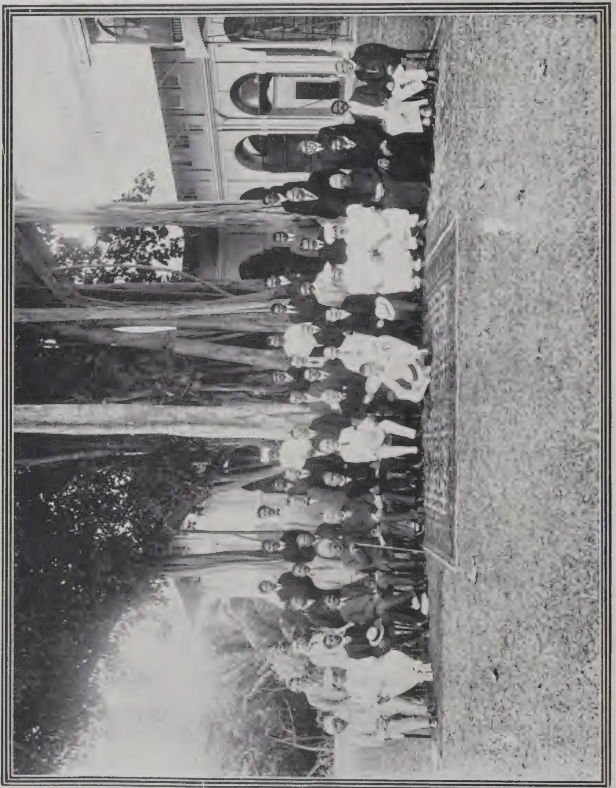
A black and white photograph of a large group of people, mostly women, standing in front of a building with arched windows. The group is arranged in several rows, with some individuals holding flags or banners. The photo is framed by a double-line border.The frontispiece is a reproduction of a photograph of those present at the annual meeting of the Ceylon Agricultural Society held on August 11th at Queen's House, Colombo. The photograph was taken to commemorate the first decade of the existence of the Society which was founded by Sir Henry Blake in 1904, fostered by his successor Sir Henry McCallum and now receives the encouraging support of Sir Robert Chalmers. Beginning with less than 100 members its roll of subscribers has now swelled to 1881.
The back row in the photograph is made up of members of the staff of instructors and clerks, some of whom were unavoidably prevented from being present.
The most conspicuous absentee is the Director of Agriculture (Mr. R. N. Lyne) who was at the time on his way out from England after representing Ceylon at the Rubber and Allied Products Exhibition.
The following is a key to the photograph, reading from left to right :—
Capt. Payne, A.D.C.
FRONT ROW :—R. Chelvadurai-Proctor, Interpreter Mudaliyar; Meedeniya Dissawa; H. L. De Mel, J.P., M.M.C.; Hon. Mr. L. W. A. de Soysa, Acting M.L.C.; Sir Ponnambalam Arunachalam, Kt.; the Hon. Sir Hector VanCuylenburg, Kt. M.L.C.; the Hon. Sir S. C. Obeyesekere, Kt.; M.L.C.; Hon. Mr. A. S. Pagden, Controller of Revenue; HIS EXCELLENCY SIR ROBERT CHALMERS, K.C.B.; Hon. Mr. J.G. Fraser, G.A., W.P.; T. Petch, B.A., B.Sc., Acting Director of Agriculture & Organising Vice President, C.A.S.; L.B. Bogahalande, R.M.; J. G. Tennekoon, R.M.; Rev. Father P. Cooreman, S.J., O.M.I.; Mudaliyar A. E. Rajapakse; K. Bandara-Beddewela; Daniel Joseph, J.P.
MIDDLE ROW :—J. D. Vanderstraaten, A. W. Beven, D. H. Kotalawala, A. P. Goonatilleka, Mudaliyar Henry A. Perera, B. F. Scherffius, Tobacco Planter; G. W. Sturgess, M.R.C.V.S., Veterinary Surgeon; M. Kelway Bamber, M.R.A.C., F.I.C., Government Agricultural Chemist; D. S. Corlett, Manager, Experiment Station, Peradeniya; C. Drieberg, B.A., F.H.A.S., Superintendent, L.C.P. & S.G. & Secretary, Ceylon Agricultural Society; H. F. Macmillan, F.L.S., F.R.H.S., Superintendent, Royal Botanic Gardens; H. Inglis, F.R.C.S., J.P., U.P.M.; C. E. A. Dias, Gate Mudaliyar Tudor Rajapakse, Gerard A. Joseph, C.C.S., Acting Director, Colombo Museum, John Clovis de Silva.
BACK ROW :—N. Wickremaratne, Secretary, Board of Control, Co-operative Credit Societies; J. R. Nugawela, Agricultural Instructor; M. J. A. Karunanayake, Agricultural Instructor; E. F. Perera, Agricultural Apprentice; S. Chelliah, Agricultural Instructor; W. Molegode, Agricultural Instructor; M. J. Fernando, Foreman & Seedsman; M. E. Perera, Assistant Foreman; J. S. de Silva, Chief Clerk; A. Madanayake, Agricultural Instructor; L. de Z. Jayatilleke, Agricultural Instructor.
C.D.
This image is a scan of a blank page. The background is a light beige or off-white color. There are several small, dark specks scattered across the page, which appear to be scanning artifacts or dust. A faint, vertical line is visible near the center of the page, possibly indicating a fold or a scanning artifact. The overall texture is slightly grainy, typical of a scanned document.THE
TROPICAL AGRICULTURIST:
JOURNAL OF THE
CEYLON AGRICULTURAL SOCIETY.
VOL. XLIII.
COLOMBO, SEPTEMBER, 1914.
No. 3.
UNLIMITED LIABILITY.
One of the cardinal principles of Co-operative Credit, at least as regards the small village Society, is unlimited liability. Unless each member realises that the whole of his goods are pledged, not only for his own liabilities but for all the liabilities of the Society, it is difficult to secure his personal interest in the Society to the extent which real co-operation calls for. Individually, the smaller members have no credit, and it is only by combining and agreeing to joint liability that they are able to obtain money on easy terms. The actual value of the small man's possessions may not amount to much, but the idea that he may lose them all is just as formidable to him as to his richer neighbour.
Unlimited liability provides the incentive for each to undertake the primary duty of a member of a Co-operative Credit Society, i.e., that of watching his fellow-members. Such a Society does not pay inspectors or subscribe to a local "Stubbs' Gazette" in order to ascertain the comparative solvency of its members. That work must be done by the members themselves. Each member must make it his business to know whether the loans given are applied to the purpose for which they were granted, whether they are repaid at the proper time, or any other details which would affect the welfare of the Society. The position was described in plain words by a member of the first rural co-operative credit society in Italy, "we are a hundred persons, who watch one another like spies; it is not possible that any one of us should fail in his duty."
In Ceylon, objections to the assumption of unlimited liability usually come from those wealthier and philanthropic persons who have become members of a society in order to provide it with
180[SEPTEMBER, 1914.the initial capital. They are quite prepared to risk a few hundred rupees for the benefit of their poorer neighbours, but they do not wish to be involved to an unlimited and unknown extent. This objection is quite natural, though further consideration will show that there are possible ways of meeting it.
It must be remembered that so long as the Society's funds are raised only by subscriptions from the members, no liability attaches to any member except as regards the money already subscribed. The Society is dealing with its own money and does not incur further liability. Even when the Society receives deposits, the position is exactly the same, if deposits are taken only from members. The unlimited liability only comes into play when money is borrowed by the Society from outside sources.
There are several ways in which the wealthier member can protect his interests and make the unlimited liability harmless to himself. He may secure, by Resolution at a General Meeting, a limit to the use to which the unlimited liability is to be put, or to the amount of loan to be given to any person, or to the collective amount of business. Again, the support of such a member is presumably desired, and he will be able to enforce his wishes by threatening his withdrawal from the Society if he does not approve of its transactions. This of course assumes that he takes an active part in the management and is thoroughly conversant with all its business. Indeed, if he does not take such an interest, it is questionable whether his membership is desirable. One of the sacrifices demanded of the wealthy sympathiser is that he should assist in educating the villager in the principles and aims of co-operative credit. Unless the villager realises that ultimately he must manage his own Society and be independent of philanthropic membership, co-operative credit will be non-existent.
One is tempted to suggest that the wealthier sympathisers with the movement should form independent Central Societies, with the object of lending money at a low rate of interest to the small village Societies. The disadvantages of such a procedure in the present state of Co-operative Credit in Ceylon are twofold. The villager would be deprived of the direct assistance of the only people who can teach him what co-operation really means, and in the absence of that teaching he would inevitably look upon the Central Society merely as a charity organisation and a perennial source of doles.
T. P.
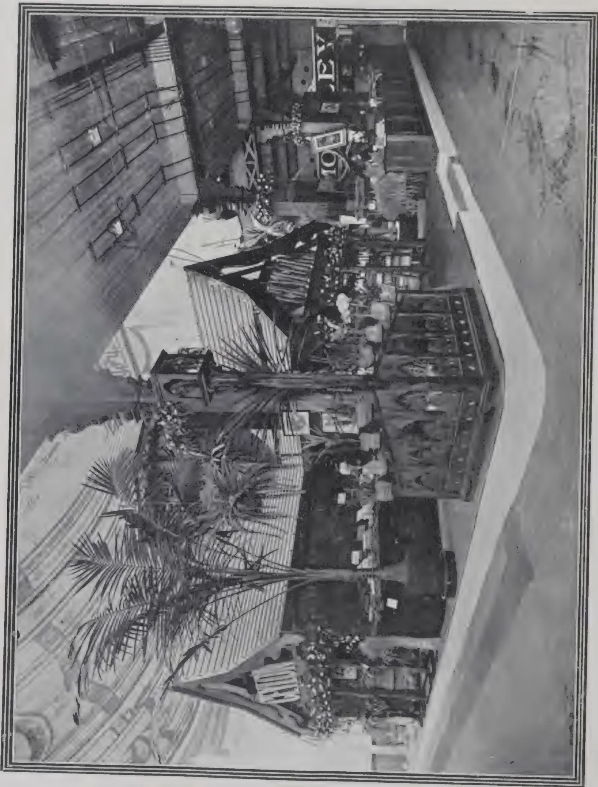
A black and white photograph of the interior of the CEYLON PAVILION. The scene is a large, open hall with a high ceiling. In the center, a large, dark, ornate structure resembling a tree or a large cabinet stands prominently. To the left, a large, light-colored, curved structure, possibly a stage or a large display case, is visible. In the background, a stage is set up with a large sign that reads "TOY" and "EY". Several people are visible in the hall, some standing near the large structure and others further back. The floor is covered with a light-colored material, possibly carpet or a large display surface. The overall atmosphere is one of a busy, well-organized exhibition or fair.CEYLON PAVILION.
SEPTEMBER, 1914.]181India rubber is the Jacob, the supplanter, of the industrial world. Rubber hose dispossessed hose of leather, the rubber-covered golf ball drove out the "gutty," the motor banished the horse. No industry or profession but has shown rubber supplanting some time-honoured object. Take, for example, the case of King David as chronicled in the first book of Kings. "David was old and stricken in years and they covered him with clothes, but he gat no heat." Then his servants got a young maid who lay in his bosom to warm him. This system presumably prevailed among elderly kings until 1850 or thereabouts, when india rubber in the form of the hot water bottle supplanted the feminine heat supplier, and has done so to a degree, ever since.
Industrially it has insinuated itself everywhere, displacing wood, metals, fabrics and only rarely making a new and original use for its wonderfully adaptable self. It was its costliness only that kept it from further encroachment.
With rubber at a shilling or twenty-five cents a pound (and that is where it is said to be going), the great expansion in its manufacture will be in the line of further and greater encroachment.
Let's afield with fancy and picture its progress:
The growth that will come in automobile and motor truck tyres has already been forecasted, but the impetus to be given to other established lines does not seem to be appreciated. All will grow greatly. The only obstacles are the increasing cost of labour—which is the most serious—and high prices for fabrics, solvents and ingredients.
In footwear of leather, rubber has already made itself a factor.
Aside from the cements used in channeling and filling, the rubber heel and sole have displaced quite a percentage of those made of leather. With low-priced, high-grade rubber, leather in soles for footwear, material for trunks, straps and a score of other uses, including machine belting and harnesses, is sure to give way to its more adaptable rival. As for shoe uppers, leather is used theoretically because of its porosity that allows heated air to escape and absorbs perspiration—this in spite of the fact that the leather is filled with oil and blacked and varnished. It is quite possible that a mixture of fibre and rubber will appear that will be cool, odorless and blackable.
As for patent leather, it is sure to be supplanted by a smooth, glossy-surfaced rubber product on a cloth backing that will not crack and will be far cheaper than the high-priced leather products. This will open a field in footwear, shopping bags, ladies' belts, etc., etc.
Indeed, wherever leather is used to-day rubber will soon prove a formidable rival.
182[SEPTEMBER, 1914.Mats, matting and tiling of india rubber are already extensive factors in home, office and factory furnishing. But why not flooring of hard or semi-hard rubber? As has been proved in tests of tiling wear, it will outlast stone or wood. It can be made in any colour. Certainly at the present price of hardwood flooring, with rubber at 25 cents a pound, it could compete. Nor would it need varnishing, waxing or oiling—simply polishing. It could easily be moulded with a semi-hard lower side for nailing and be matched and furnished in strips of any length or width. It would be practically fire-proof, and not inflammable as is varnish-covered wood, and would neither swell nor shrink, as it would be moisture proof and vermin proof. For a white-ant country it would be invaluable. In cabinet work, hard rubber veneers to imitate ebony, mahogany, bog oak or any of the darker woods are easily made and the richest effects secured. For furniture solid mahogany sideboards, tables and chairs may be superseded by those made of hard rubber.
In other words, hard rubber lumber is in sight—the lumber sawed, planed and turned as lumber is to-day and the sawdust not a waste product but moulded into new lumber, and the furniture or panels or flooring after use returned to the mill that made them, and these, too, made into just as good hard rubber lumber as when first manufactured.
Better than rubber roofing will be the fibre and rubber shingles of the future. If the underwriters are fussy the fibre may be asbestos or the compounding ingredient infusorial earth.
Boat builders (wooden boats) have trouble with their lumber. When hard rubber lumber is available they will rejoice. It will be hard on those who copper sheath, or sell Anti-Teredo paints; for the busy water borer will not touch rubber.
Speaking of hard rubber lumber, who can say that a factory for turning it out will not one day be established in Singapore, to make boxes in which to ship rubber? The boxes of course to be sawed up into short vulcanite sheets for insulation work, once their duty as rubber carriers is finished. At least it would not be difficult to make wooden boxes with a thin coating of hard rubber vulcanized to the wood, forming a clean anti-sliver coating. Such boxes could easily be ventilated and should find use when empty.
Great European ports send to South America for Greenheart logs to build their docks, and a costly product it is. Iron columns covered with a thin film of hard rubber should be cheaper and far more durable. So, too, the protection of iron and steel in scores of places where they perish from oxidation would prove a simple, effective solution of this evil.
As liquid conductors there is a possibility that semi-hard rubber piping may compete with copper and lead pipes. So, too, lead armored cables may give way to those coated with semi-hard rubber. The product would be just as flexible, much lighter, and cheaper.
In the line of sports will come hard rubber golf clubs, cricket and baseball bats, fishing rods, polo mallets and balls, and so on. The city policemen will no longer use a club of locust wood; it will be of hard rubber. And this will extend all through the line of woodenware where anything especially tough, flawless and fine is required.
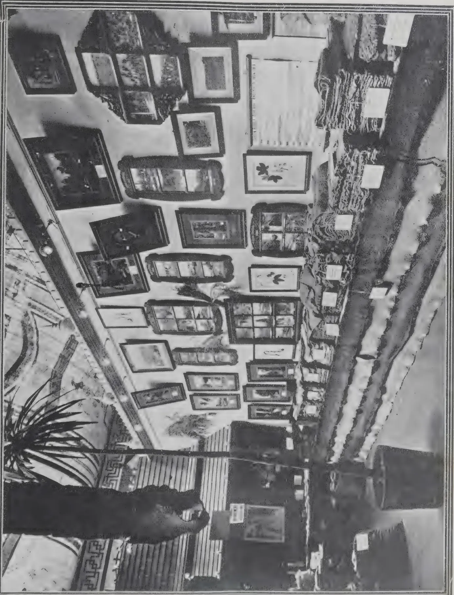
PART OF CEYLON STAND.
RUBBER EXHIBITION—LONDON—1914.
EXHIBITS OF BLANKET CREPE.
Speaking again of floor coverings, oil cloth and linoleum as such cannot exist once rubber is really cheap and plentiful. Every rubber manufacturer knows that a pound of Para rubber will go as far in compounding as ten pounds of boiled or oxidized oil. The oil costs, say, seven cents a pound, and rubber at less than four times that price will certainly dispossess it. Then, too, it is more flexible, easier to work and far more durable.
Artificial leathers are likely to find it difficult to compete with the rubber product that will come in with low-priced rubber. Indeed, all of the rubber counterfeits made of cellulose, celluloid or casein, whether soft or hard, are likely to find that the original will be preferred just as soon as it is the cheapest.
India rubber as a deterrent to noise has gone far. It will go farther. The rubber-shod taxi-cab has stilled the echoing klipperty-klip of the flat-footed cab horse. It should be used to silence the clash and clatter of the modern city electric car and the jar and clamour of elevated and subway trains. In a score of industries it is needed—as cushions under modern printing presses, laundry machines and other city nuisances.
Would it not be possible also to still the shrill clatter of the thousands of shuttles in great weaving plants by the use of rubber?
The boiler maker certainly needs some sort of rubber silencer for his work, and the pneumatic riveter will not be perfect until rubber cushions absorb the far reaching sound of its blows.
When this is accomplished and the day of deliverance comes, every bell in Christendom should send out its peal of praise—with soft rubber tongues.
Into the broad field of glues, mucilages and other adhesives will a great variety of new rubber cements force their way. The only deterrent will be high cost of solvent. But with low-priced Hevea rubber and the consequent fall in the price of rubber scrap, that will be melted or distilled, and new stickers and valuable by-products will be obtained that will find wide markets. Certainly a rubber glue that would be self-vulcanizing and that would not soften and let go in damp weather would be a boon.
Roadways of rubber are ideal, theoretically, but the asphalts under modern manipulation are likely to be always cheaper and just as effective. Rubber sidewalks (once a non-slipper compound is evolved) made of scrap are likely one day to run for miles in the modern city.
These have in the past been widely advertised and sold, but they were oil or asphaltum at heart, not rubber. Scrap rubber is likely to furnish actual rubber paints and real rubber roofing. It will mean experiment and adjustment and a new series of dryers, but that should not baffle the chemist in this day of rubber expansion.
As the price of rubber in the past increased certain products disappeared—the rubber car spring for example. As an assistant for the excellent steel springs of to-day, with a new and lower scale of prices it will come back, not
184[SEPTEMBER, 1914.only in railway carriages, but in manifold places where cost has prevented its use. Wherever there is a shock there will be put a rubber spring; wherever a rattle, an anti-rattler.
Goodyear had a book with pages of rubber and fibre. Then rubber became costly and it was forgotten. For certain moisture proof papers rubber is certainly better than oil. In wall papers of the Lincrusta Walton type it is more than a possibility. Bible papers made of pure gum would be wonderfully suited to certain modern creeds.
It is with much doubt that I make this suggestion—that of white rubber dishes for the great restaurants, or bath tubs of hard rubber for the home. Perhaps it is as well not to encroach upon the pottery industry until rubber becomes as cheap as Kaolin.
The list grows long, and this is but a beginning; there are scores of industries yet to be viewed, and above all the back bone of all prosperity—the farmer—has been neglected. Perhaps—and this is but a vague suggestion—if he raised his milk-fed chickens on rubber latex, egg shells would cease to be fragile.—INDIA RUBBER WORLD.
MR. E. ERNEST GREEN, late Government Entomologist of Ceylon, read the following paper on "Some Animal Pests of the Hevea Rubber Tree" at the International Congress of Tropical Agriculture. He said he could only speak of those pests which occur in Ceylon plantations. Trees newly introduced into a country are generally free from insect pests unless those pests are brought with the trees. In the case of the Hevea the copious flow of latex if the bark is wounded, protects the tree to some extent from insects. But this comparative immunity does not extend to the foliage; and in the case of larger animals the latex appears to be the object sought for. It might be thought that a substance which when coagulated becomes rubber, could not be drunk by any animal with impunity, but it appears that the latex has no injurious effects either upon the lower animals or upon man himself.
Elephants, goats, pigs, porcupines, rats are among the animals which MR. GREEN mentioned as attacking the rubber tree. The porcupine, he said, revels in its sappy bark. A single animal may completely strip the stem of a three or four year old tree from the ground level up to the height of two feet. If the stripping is all around the tree, of course the tree will die; if only a small area on one side is attacked, the tree may struggle on, but it is best to remove it out of the way. The porcupine is one of the wiliest of animals and most difficult to destroy. He will not enter even the most cunningly laid of traps, and he has a keen scent for poisoned bait. The native villager uses a spring gun and has more success than any one else. The planter may watch night after night waiting his chance to shoot the porcupine, without the animal ever putting in an appearance; and then a native may set a spring gun and succeed in killing it.
SEPTEMBER, 1914.]185The bandicoot, a huge rat with powerful saw-like teeth, is a pest that will cut through a tree several inches in circumference. Certain species of slugs were first brought to MR. GREEN'S notice in 1905, as imbibing the latex from recently tapped Hevea trees. He said that quite conceivably many pounds of rubber are lost in this manner. In Java, and Sumatra also, species of slugs have been found drinking the latex. The best way of dealing with those of Ceylon is to surround the tree with a protective barrier of some strong smelling substance, e.g., sawdust saturated with crude carbolic acid may be laid around the base of the tree.
Naturally every insect that lights on a rubber tree is looked upon by the planter with suspicion, and small as is the list of pests it would be smaller still if all the merely casual visitors that are included in it were eliminated. Most of the enemies of Hevea are secondary pests that do not attack healthy trees, but the fact of their being secondary pests does not decrease their importance. They may complete the destruction of a diseased tree, when otherwise it would recover.
Certain species of grasshoppers attack the tree. White ants call for some attention, but they are not very serious in Ceylon. Nor is the notorious Termes gestroi a pest there. Certain large beetles lay their eggs on the ground near the trees, and the newly hatched larvæ burrow down and attack the roots. The best protector from these is nitrate of soda. A species of longicorn, not a native of Ceylon and only recently introduced, has become a serious pest.
Boring beetles have attracted more attention than any other pest. They are found in the stems of dead trees, but it does not follow that they have killed them. In fact, it is doubtful if these small beetles can penetrate the bark of a healthy rubber tree, although the fact that latex is sometimes found to be exuding and flowing down the stem is taken by some planters as proof that these insects will attack healthy trees. But there are other causes of bleeding. For example, dead bark may separate from the wood, leaving a cavity surrounded by healthy tissue. If the dead bark forms a cortex over this cavity and is pierced by the borers the latex will flow down the tree.
With such a large area under cultivation it may seem astonishing that the list of pests is so small, and the increased attention being given to the matter makes it more difficult for them to obtain a foothold. But large, unbroken areas of a single cultivation always give conditions favourable for the establishment of a pest; and it is sound policy to break up such an area by interplanting with other trees. By this means any disease-stricken area may be confined within practicable limits.
In discussion, MR. WHITBY said he much inclined to agree with MR. GREEN that one of the functions of the latex is to act as a protective agent against the attacks of insects. In this connection he would draw attention to a fact which is not generally appreciated, viz., that the latex obtained from the tree after wound response has set in is of a different quality from that which flows on first tapping the tree. The latter coagulates almost immediately, but after wound response has set in the latex may remain liquid for some hours. Protection of the tree is not the prime function of the latex, but it is one of its functions. He had heard of an
186[SEPTEMBER, 1914.interesting instance of this some time ago. The manager of the Tandjong Estate, which is largely under tobacco, found that tobacco pests swarm over the rubber trees, but as soon as they pierce the bark the latex exudes and coagulates, and consequently the pests have no influence. The fact that latex can be drunk without injury seemed to suggest to MR. WHITBY that caoutchouc is not present in it as such, but there is some other substance out of which the caoutchouc is formed.—INDIA RUBBER JOURNAL.
With the first number of the second volume of the "AGRICULTURAL BULLETIN OF THE STRAITS AND THE FEDERATED MALAY STATES," 1903, a plate was published showing on the right, most of the oldest rubber trees of the Botanic Gardens, Singapore. Those which can be seen, counting from the extreme right, are numbers 1, 2, 3, 4, 5, 7, and 9 of the Gardens' trees: No. 6 and 8 stand a little back, and are not recognisable in the plate. The dimensions of the boles of these trees in the end of 1902, are given on page 1.
Death has spread down the line from No. 5, which was blown over and died in 1905. Between 1905 and 1909 No. 4 died. In 1910 No. 3 died. And now the largest of all, No. 2 is dead. Fomes semitosus seems to have been the cause of the trouble; but none of its fructifications have appeared.
The trees were received as seedlings in Singapore in the year 1877, and were planted out in their present place soon after their arrival. They began to seed in 1881.* It seems (Bulletin, ix, 1910, page 213) that some of the trees were tapped as early as 1889. It is recorded (Bulletin, ii, 1903, page 112) that between 1893 and 1902, they were very heavily tapped on various occasions; but it is probable that we should not now call the tapping which they had heavy. Tree No. 2 was tapped again as follows:—
* This statement is not supported by contemporary record—ED.
SEPTEMBER, 1914.]187The tree, however, has never been tested as a rubber yielder, being wanted for seed-producing, and always since 1903 tapped lightly.
Its latex seemed to clot more readily in later years than in the earlier.
It is extremely probable that it was tapped between 1906 and 1909, but records have not been found.
A plate in the AGRICULTURAL BULLETIN, Vol. vii., 1908, issued with the July number, shows the first spiral tapping of the tree and the old herring bone scars. Another illustration of it from a photograph taken a little later by MR. H. OVERBACK, occurs in MR. E. MATHIEU'S "PARA RUBBER CULTIVATION," 1909, page 125.
Successive measurements of the bole of the tree at three feet from the ground have been recorded as follows:—
| 1904, | 6th May | ... | 9 feet | inches | |
| 1905, | 8th May | ... | 9 | „ | |
| 1906, | 8th May | ... | 9 | „ | |
| 1909, | 5th May | ... | 10 | „ | |
| 1910, | presumably in May | ... | 10 | „ | |
| 1911, | 4th July | ... | 10 | „ | 3 |
| 1913, | 7th May | ... | 10 | „ | |
| 1914, | 8th May at removal | ||||
| after death | ... | 10 | „ | 5 |
These figures indicate that its increase of growth during the last five years has been at the rate of one inch in circumference per annum, and that for the five preceding years it was at the rate of about two inches per annum.
When uprooted it was found to be 105 feet in height, which is not unusual; but as regards its girth we must count it an abnormality.—I. H. B. in THE GARDENS' BULLETIN, Straits Settlements.
MR. A. IRVING read a paper entitled "A Comparison between Wild and Plantation Rubber." At the opening of his paper he explained the different conditions under which the trees in the Amazon district and the trees on the Eastern plantations grew, and he pointed out that the trees in the Amazon had to be at least 30 years old before they could be profitably tapped, whereas in the East trees were large enough to be tapped at four years of age. This was accounted for by the difference in the rate of growth, which in the forest was exceedingly slow. Methods of tapping were next dealt with, and he explained that in the Amazon district a small iron axe was used for this purpose, there being a superstition against the use of steel; a collector would set off in the morning armed with his axe and as many tin cups as he would require for his day's work. He would proceed to his estrada, which was a pathway cut through the jungle, and having arrived at his first rubber tree would strike a blow into the bark about ten feet from the ground, sloping upwards at an angle of about 45 degrees. Before withdrawing the axe he would give a little twist of the wrist in order to open the wound. He would fix one of his tin cups immediately beneath the wound, either by means of a piece of clay or by sticking the edge of the
188[SEPTEMBER, 1914.cup into the bark of the tree. He would repeat this operation about eight times away from the first cut, and continue it until the tree was completely surrounded with cuts, placing a small tin under each cut. The tapping operations would be continued on the next day immediately below the cuts that had previously been made, and this would go on until the base of the tree was reached. When the whole of the bark available had been tapped in this manner, the operation was commenced again, the bark having had time to recover from the wounds which had been inflicted. The lack of method and care employed in tapping the wild rubber trees led to a great deal of damage which was unnecessary. Properly conducted, this tapping method gave good results, and had many points in its favour, not the least being the rapidity with which the operation could be carried out. Scrap rubber was not removed from the trees, as it helped to preserve them better, preventing borers and other insects from getting into the tree. He had often been asked what reserves of rubber trees there were in the Amazon basin. There were many millions of unworked trees in the country, but their inaccessibility rendered them an unrealisable asset with rubber at its present price.
A brief description of tapping methods as carried out on Eastern plantations was then given, and MR. IRVING next turned his attention to the preparation of the raw rubber. The work of preparation of the rubber in the Amazon country was left to the individual collector, whereas in the East it was centralised in the factories on the estates. In the Amazon the latex was coagulated with smoke fumes, whereas in the East acid was used, and smoke was only added as a preservative after the rubber had been moulded into sheet or crepe form. The collector in the Amazon would erect a small hut of leaves and make a hole of about 18 inches diameter in the ground. In this he would light a fire and insert into the fire a small earthenware or iron funnel. On a paddle he would place the contents of one of the tin cups, and rotate this in the smoke. A certain amount of skill was necessary, as the density and temperature of the smoke had to be regulated; it must be hot enough to immediately coagulate the latex, but not sufficiently hot to scorch the rubber. The scrap rubber was generally placed first on the paddle to commence the ball, and each ball might contain three grades of rubber, namely, scrap, entrefine, and hard cure. Sometimes the scrap rubber was marketed just as it was picked up beneath the trees, and it often reached the buyer in a state of putrefaction. The great advantage that fine hard Para enjoyed over plantation rubber was standardization, and until plantation rubber was standardized the manufacturers would continue to deal chiefly with that rubber which they best knew.
The question of labour was next dealt with, and MR. IRVING pointed out that the collectors were never paid in cash, but a truck system was employed. The owner of an estate supplied his labourers with food in return for their labour, and as the labourer was paid by results he became practically a partner in the business. He had also to keep his estrada clear and his house in good order, and this work had to be done gratis. The amount of rubber produced per day depended upon the ability of the worker and the condition of the estrada. He had known of cases where as much as 20 kilos had been collected in one day, but he thought the average amount was about 2 kilos, and this was subject to a 10 per cent. loss in
SEPTEMBER, 1914.]189weight in transport. This did not include scrap rubber, which was collected in small quantities, and was negligible. With rubber at 3s. per lb. in London a man who collected 2 kilos per day would receive 4s. 4d. on the basis of a 50 per cent. division between him and his employer. Then, however, as he had to pay double value for the food and goods that he received, his earnings generally amounted to about 2s. per day. As the man usually had a wife and family dependent upon him, they would easily understand that his lot was not a particularly happy one. The estate owner generally lived on his estate, and he was financed by aviadores in Manaus or Para, and he frequently became indebted to the aviadores to such an extent as to be the owner of his estate practically in name only. He had been asked at what price would it become impossible for rubber to be produced in Brazil. That it could be produced with rubber at 3s. per lb. was a known fact, and since rubber production was the sole means of livelihood in the North of Brazil, he could assure them that the industry would die hard if at all. Over-tapping the trees, especially during the boom year, when there was a desire to get as much rubber as possible while it was selling at a high price, and since when the desire had been to produce as much rubber as possible to make both ends meet, killed off many of the trees, but still there were plenty left, and as long as these remained they would be tapped. Economy was a lesson still to be learned in Brazil, the industry was subject to the enormous export duty at per cent. ad valorem, and in addition there were very heavy import duties. Since practically all food supplies had to be imported this had an important bearing on the cost of the production of the rubber, having regard to the fact that the labourers were not paid in cash. So far as the export duty was concerned, there was bound to be a further reduction in this as soon as the industry showed signs of waning. It would take an extremely long time of the most acute depression to place Brazil hors de combat among rubber producing countries. Economies could also be effected on the estates. He did not think Brazil could learn much from the methods prevailing in the East, nor on the other hand could the Eastern plantations learn anything from Brazilian methods. In conclusion, he expressed the opinion that in the East they had never yet had the best species of Hevea tree, which was known in Brazil as black Hevea; this black Hevea was the best milking tree he had ever seen. If they had had it in the East they would have so flooded the world with rubber that it would have been of no value at all. He did not say that the difference in quality between plantation rubber and Brazilian rubber was due to their not having the best tree. When he said that they had not the best tree, he meant so far as quantity of yield was concerned, and not quality of latex.
In reply to questions, MR. IRVING stated that the trees were never tapped above 10 feet from the ground; in fact, it was forbidden by law in many parts of Brazil. The slow growth of the trees made the bark very hard, and in some experiments with Eastern tapping knives he found that practically no results could be obtained, and they broke the knives by the hundred.—INDIA RUBBER JOURNAL.
At the last International Rubber Conference MR. EDMUND LAPLAE said they had been planting a great number of Funtumia trees in the Belgian Congo, no less than 3,000,000 trees having been planted, but only one half of
190[SEPTEMBER, 1914.that number would ever give good yields, owing to their ignorance of the special requirements of the trees. The Funtumia trees were quite different from Hevea. When planted in the open or at a distance of about 20 feet they branched out very close to the ground, and it was impossible to get a clear tapping surface. When the trees were planted very close, say, at a distance of three feet, they had to grow upwards, and consequently a long clear tapping surface was obtained. The tree gave a good quality of rubber, but a much smaller quantity than Hevea. He described three methods of tapping which were used in the Belgian Congo. The first was known as the Schulze im Hofe, which consisted of vertical cuts extending from the first branch to the base of the tree and at about 4 inches distant, the collecting cups being placed at the bottom of the tree. The flow was at first very quick, but it soon dried up, and they had to wait about four months before they could tap again; the cuts were made by incision. The second system was that known as the Christy, and this also consisted of a series of incision cuts, but on the herring bone system. The third system was known as Sparano, and this was similar to the Christy system, except that instead of making all the cuts on one day they were spread over ten days, two cuts being made in the tree every alternate day. The yield obtained by the use of the Schulze im Hofe system was 45 lb. per acre per year; by the Christy method it was 88 lb. per acre per year; and by the Sparano method it was 176 lb. per year. It was evident from this that the Funtumia would not yield so largely as the Hevea, as in the Belgian Congo they had been able to obtain yields two, three and four times as large as those obtained by the use of the Sparano system on the Funtumia trees.
In reference to the steam stump pullers, MR. LAPLAE explained that in the Katanga district of the Belgian Congo the forest had to be cleared to allow of cultivation, and it was impossible to use cattle on account of the prevalence of the tsetse fly. They obtained two engines from two English firms, and these were working very well. They consisted of ordinary traction engines of about 60 to 70 b.h.p., and attached to the front of them was a crane with a lifting power of from 3 to 5 tons. To the back of them was fastened a drum with a steel cable one inch thick and 200 feet long. They first experimented on pulling stumps, but afterwards they thought they could save the cost of labour involved in cutting down trees, and so they experimented on pulling up whole trees. The cable was attached as high up the stem as possible, and the moment the pressure was applied the tree came tumbling down—trees as large as they could imagine came tumbling down like a pack of cards.—INDIA RUBBER JOURNAL.
The "FINANCIAL TIMES" of London states that a concern, known as the Robinson Securities Syndicate, Ltd., proposes to bring latex direct from the forest trees to the London manufactory, to be scientifically treated, so as to secure an evenness of grade. It is said that the transport of the latex to London in its natural state is a revelation, while the rubber already produced from such latex is reported to be of excellent quality.—INDIA RUBBER WORLD.
SEPTEMBER, 1914.]191M. KELWAY BAMBER.
[Paper read before the Low-country Products Association, July 3rd, 1914.]
Before dealing with the treatment and manuring of the coconut palm it is perhaps advisable to briefly consider the various types of soil and the climatic conditions under which it thrives. In most tropical countries the palm is found to grow most luxuriantly near the Sea Coast where the contour of the land is generally flat, and where it is exposed to the effect of salt sea breezes during some period of the year. It grows best within a few degrees north and south of the equator. In several countries, including Ceylon, its growth has extended inland many miles from the sea, and it is now grown over large areas at elevations up to 1,600 ft. on soils totally different both physically and chemically to those found on the Sea Coast. In the Maldives and South Sea Coral Islands the coconut thrives on almost pure coral lime, while in Ceylon, it is generally grown on sands varying from pure white as seen in and around Colombo and Batticaloa, to dark grey reddish sands of the Chilaw and other districts. Further inland it is also frequently grown on alluvial banks of rivers, where it does well, and is also grown on cabooky soils which form the rising ground in most of the Low-country plantations. In the Malay States the palm flourishes on deep alluvial soil varying from coarse sands to finely divided siliceous silts almost of the consistency of clay, and of exceptional richness in plant food and with a rainfall of 65" to 80." Some of these soils contain from 8 to 55 times as much nitrogen as Ceylon sandy soils and 10 to 60 times more potash. In some instances the growth is even more rapid when there is a layer of jungle mould over the silt deposits. In the West Indies, Brazil and Central America it grows chiefly along the coast and in the former, healthy palms are said to average 100 nuts annually.
The climate of the coconut districts varies in different parts of the Island. From Colombo to Chilaw and thence to Puttalam the rainfall gradually decreases from 72.5" in Colombo, to 45.2" in Puttalam. The heaviest rainfall is in the North-East Monsoon from October to December, with a fair amount in April and May, the rest of the year being more or less dry, though rain falls every month. From Colombo to Galle the rainfall is generally heavier, 82" to 90" and better distributed throughout the year. Inland at Veyangoda and Kurunegala the rainfall is about the same as in Colombo and is fairly well distributed. In Jaffna, the rainfall is only 49" the greater part of this falling between October and December, June to September being practically dry. In Batticaloa the average is about 62" with a long dry period from February to September, and a wet N. E. from October to January. The sandy soils of Ceylon are usually found near the sea coast, but they also occur in the low lying portions of slightly undulating estates for many miles inland, and are formed by the breaking down of the cabooky soils, the finer
192[SEPTEMBER, 1914.clay being washed away to the rivers and sea, and the sand collecting when the downward flow of water is temporarily checked. The Cinnamon soils, consisting of almost pure white sand are the poorest, and contain little available plant food, and although coconuts will grow in them, they will hardly yield remunerative crops until heavily cultivated and manured. The yellow, grey and reddish sands are usually a little richer in plant food, but even these may be classed as poor from a chemical point of view, and it is remarkable in many instances how good yields are obtainable from such soils. They consist of 93 per cent. of sand and only contain 0.311 per cent. of plant food altogether. Some of these soils are too poor even to grow grass for grazing purposes, and it is only by the enormous root development of the coconut palm through a large area that it can obtain sufficient nutriment for a healthy leaf growth and fruit production. The Maldivé coral soils consist of about 90 per cent. carbonate of lime and are particularly rich in phosphoric acid, and in some cases in potash. It has been estimated by Lepine and others that a thirty year old coconut palm forms 2,240 pounds, or one ton, of organic matter during that period of growth, and absorbs from the soil from 228 pounds to 320 pounds of ash or mineral matter, consisting chiefly of potash salts, phosphate of lime and other lime salts, with a small proportion of sodium chloride and silica. The average composition of the ash of the whole tree is approximately salt 22.77, potash salts 132.00, phosphate of lime 92.00, carbonate and sulphate of lime 61.50, silica 13.20 lb. The greater proportion (or about 56 per cent.) of the potash and phosphate of lime is to be found in the leaves. Most of this is returned to the soil when the leaves drop off, and it shows the importance of utilising the mineral matter in the fallen leaves to the best advantage. A young palm about five years old was analysed at my Laboratory and the analyses of the various parts were very similar to those made by others. A feature of the analyses was the large amount of silica in the leaves, root, and stem, especially the two former, the silica amounting to 36 and 56 per cent. respectively. On carefully burning a portion of the leaf a skeleton of every cell is obtained, consisting chiefly of this silica. This shows that the roots of the coconut palm are able to attack the silica of the sandy soils more than most other plants. Lime is an important constituent, both in the leaves and stem, and to a less extent the root, while potash is chiefly in the leaves and stem, and phosphoric acid fairly evenly distributed throughout. Another constituent that is generally present in fairly large amount is sulphuric acid, so that the Calcium Sulphate in superphosphates and the sulphuric acid in sulphate of potash no doubt add to the value of these manures. Much of the potash but little of the phosphate of lime, is to be found in the immature fallen nuts, and here again the advisability of utilizing them as manure is indicated either before or after burning. The amount of mineral matter estimated to be removed from the soil by one acre of coconut palms annually at 62 palms per acre is said to be, salt 52 lb., potash salts 321, Phosphate of lime 194, carbonate and sulphate of lime 140, Magnesia 2, Silica 28, equal to 737 lb. The leaves and fallen fruits remove most, viz.—370 and 250 lb. respectively, while the trunk utilises 70 lb. and the remainder 47 lb. These figures show the importance of including a good proportion of lime potash and phosphoric acid in a manure mixture even for the growth of the palm, especially, if the soils are deficient in these constituents. But it must be remembered at the same time that the coconut palm roots penetrate through
SEPTEMBER, 1914.]
193
several feet of soil, so that a comparatively poor analysis may still mean a very large amount of plant food. A foot of sandy soil over one acre weighs about 4,200,000 lb. and this increases with greater depth by about 7 per cent. per foot, so that at 4 ft. it would weigh over 5,000,000 lb. and the total 4 ft. of soil about
| 4,200,000 1st foot | ... | 5,040,000 4th foot | |
| 4,480,000 2nd ,, | ... | ----- | |
| 4,760,000 3rd ,, | ... | 18,480,000 | |
| ... | ----- |
18,480,000 lb. Taking an average poor sandy soil as containing 0.22 per cent. lime, 0.014 per cent. potash, 0.03 per cent. phos. acid, and 0.04 per cent. nitrogen, such a soil would contain to a depth of 4 ft. (and many roots go much deeper) the following amounts of essential plant constituents, though not in readily available form
| Lime | ... | 40,656 lb. | |
| Potash | ... | ... | 2,587 ,, |
| Phosphoric acid | ... | ... | 5,800 ,, |
| Nitrogen | ... | ... | 7,400 ,, |
Were all these constituents available, no manuring would of course be required, but they can only be released from their insoluble combinations by gradual decomposition with the aid of air, moisture and dissolved gases, chiefly carbonic acid. At the same time there would only be sufficient potash for about 16 years, and phosphoric acid for about 65 years, were it not for the return of the leaf ash to the soil annually. But apart from the composition of the palm itself the question of its remunerative cropping has to be considered. Several comparative analyses of the nut and husk have been made by Lepine, Bachoffen, Rideau and others, and the following may perhaps be taken as an approximate average :—
| Husk | ... | 53.0 per cent. | |
| Shell | ... | — | 12.6 ,, |
| Copra | ... | ... | 18.5 ,, |
| Water | ... | ... | 13.5 ,, |
The chief ash constituents of the husk, amounting to 1.63 per cent. are, Salt 46 per cent., Potash 30.7 per cent., Lime 4.14 per cent., Phos. Acid 1.92 and Silica 8.2 per cent. The large amount of salt and potash in the husk is noticeable and would point to their value as manure. Copra ash amounts to 1.70 to 2 per cent. of the weight of dried copra and consists chiefly of phosphate of potash, potassium chloride, sodium chloride, and a small amount of lime, while sulphuric acid is unusually high. A candy of copra would contain about 10 lb. of ash consisting of 5.27 of potash, 2.03 of phosphoric acid, 87 of sulphuric acid, .50 of salt, so that an average crop of 50 nuts per palm, giving say 3 candies of copra per acre, would remove from the estate nearly 16 lb. of potash, 6 lb. of phosphoric acid and about 11.7 lb. of nitrogen, the nitrogen content of copra being about 0.7 per cent.
To replace this in manure would require an application of a mixture somewhat as follows, applied every other year :
| Sulphate of potash | ... | 32 lb. | |
| Bone meal | ... | ... | 27 ,, |
| Ground nut cake | ... | ... | 167 ,, |
| ----- | |||
| 226 lb. |
or say 3 1/5 lb. per palm.
194[SEPTEMBER, 1914.To apply such a small quantity to large or old plants would however be absurd and there would be little visible effect on the palms. It has been found in practice that at least 4 or 5 times this amount, or say 12 lb. to 16 lb. per palm is required to render manuring profitable. It is very evident however that manuring as carried out at present must gradually and steadily result in an accumulation of plant food in the soil, if full use is made of the dropping fronds, immature nuts, etc. This again however depends on the character of the soil and the type of manure applied, and increase in reserve food would as a rule be more marked in retentive loamy soils, or the common cabooky soils than in the deep sands, which have little retentive power either for moisture or the soluble constituents of manure. The question of the use of soluble or insoluble manures on the latter class of soils is an important one, and experiments are being conducted to prove their respective values. It must be remembered that the root system of the coconut palm is different from ordinary trees, consisting as it does of a thick carrot shaped bole at the foot of the stem, from which as many as 2,000 roots start and penetrate the soil in every direction, the roots themselves branching at nearly right angles at varying distances from the stem or bole. Most of the roots if uninjured run for many feet and absorption of the soluble plant food takes place at the extremities of the main root or the smaller branches. The tip of the root unlike many other roots is devoid of fine hairs through which absorption usually takes place, but the extremity for about half to one inch consists of soft and easily injured tissue with a central group of fibrovascular bundles; behind this soft extremity the tissue rapidly becomes tough and fibrous. When cut through, the cut surface dries and shrivels, and new rootlets spring at right angles to the original, so that any temporary injury arising from ploughing or cutting circular trenches round the palms when applying manure is soon remedied. The idea that a cutting of the roots by digging or ploughing is harmful, is I think a mistaken one, though it should not be done at the beginning of the dry weather. By frequent disturbance of the surface soil the roots are driven downwards so that the palms are less affected by drought.
The wide dissemination of the roots throughout the soil would seem to point to the advisability of applying a soluble manure over a fairly wide area, commencing at some distance from the trunk, which when dissolved by the rain would soak into the soil around the root extremities, and be carried downwards and upwards through the soil as the weather was wet or fine.
As in sandy soils there is little retentiveness for chemical salts, and at the same time the formation of leaf and flower stalks is practically continuous throughout the year, it would also appear desirable to apply small quantities at frequent intervals to obtain the best return for the manure, rather than larger applications every second year. On the other hand the good effect of tying cattle to the trees for an occasional fortnight in the year, would tend to show that the soluble salts are retained, and the effect is more prolonged than the nature of the soil would lead one to expect, the beneficial results being chiefly due to the urine and soluble matters in the manure which soak into the soil.
That the coconut palm appreciates a continuous supply of readily available plant food is shown from the manner in which they flourish and crop heavily close to cooly lines or cooly houses.
SEPTEMBER, 1914.]195So far the general practice has been to apply a practically insoluble mixture (except for the Potash salts) consisting of castor or groundnut cake, bone meal or basic slag, and kainit and other potash salts, frequently with 20 to 30 lb. of cattle manure in addition when available. Such a manure is applied every second year.
The results generally are satisfactory and have resulted in greatly increased yields especially after the second application, showing that insoluble phosphates, etc., can be easily utilised by the coconut palm. MR. RAJAPAKSE'S results on one estate show an increase from 38,670 nuts in 1900 to 161,648 nuts in 1907. Still it remains to be seen whether frequent small applications of concentrated soluble manures would not give more rapid and equally satisfactory results than a large application of an insoluble manure every two years. The results so far obtained at Peradeniya on old palms rather point to this conclusion. A good deal of the first application of manures goes rather to increase the general vigour of the palm than to increase the crop, and for this reason it is advisable to make the first mixture rather more nitrogenous, though if a good proportion of phosphates are also given, the crop should also improve.
The first step to be taken is to find a suitable spot.
Select a place moderately shady; under coconut trees planted 26 feet apart would do very well. Land inclined to be low is preferable if the soil is not sour.
Having selected a suitable place cut a trench 12 to 18 inches broad, 18 inches deep and fifty feet long, put the earth on to one side, then start another similar trench immediately next to this, fill the first trench with earth taken from the second trench, repeat this till you have trenched and filled an extent of land 50 feet by 50 feet (400 nuts could be placed within this extent). At the end, the last trench will be empty. To this transport the earth cut and put aside when opening the first trench. Collect some dry coconut leaves and cover this plot four to five deep and set fire. Prepare similar plots, leaving a 10 feet road between for carts to go through when removing plants.
Pick the second bunch off the trees when the crops are gathered once in two months. To be more careful let the bunches be lowered down to the ground with the aid of a rope and do not drop them on the ground as is usually done.
It is essential to remember that no nuts should be taken for nursery purposes from a less matured bunch than the one already described. I have found by experience that the plants of too matured nuts are always sickly, and that less matured nuts would sprout out fast and start dying equally fast.
The nuts for the nursery should be taken from trees that bear well, the stem of the bunches should be short, and nuts nestle close to the cabbage of the tree. (This will prevent the enormous use of supports now carried on in estates at great expense.) The nuts should be round with less husk and more nut. For this purpose walk round the estate and mark the trees that are suitable before having the nuts gathered.
196[SEPTEMBER, 1914.There are different opinions as regards the position of placing the nuts in the nursery. I find the best results can be obtained by placing the nuts upright. When nuts are thus placed the young plant develops a fine large round stem and not the oval stem which is produced when the nuts are placed on their sides and the shoot is compressed by the hard husk on either side.
The nuts should be placed two feet apart from each other and three-fourths of the nut should be under the earth. Cover the nuts thus planted with coconut branches about 3 feet, and water the nursery twice a week when there is no rain.
My last nursery worked in this way gave excellent results, even after going through a rather severe drought. The plants at the age of six months were 4 feet 1 inch high with the nut, and the stems were inches in circumference with five branches. This nursery was put in a neglected old coconut plantation which had seen no kind of attention for the last thirty years.
Great care should be taken when removing the plants from the nursery. The coolie should be made to make use of his mamoty more than his hands. To pull the plant by the stem will do much damage. 90 per cent. of the plants that die at transplanting could be prevented by careful removing of the plants from the nursery.
After the first best set of plants have been taken from the nursery there will be a few more healthy plants but not grown up high enough. These will grow up as soon as the nursery is thinned. The plants that are not suitable after the second selection should be destroyed.
It is often the custom of the poor villager to take these bad plants and plant them in their little holdings. This should not be allowed.
The changes which occur in the ripening coconut are summarised as follows in the PHILIPPINE AGRICULTURIST AND FORESTER:—We may divide the growth into three periods. During the first period there is an accumulation of invert sugar and amino acids in the milk or watery portion. The meat is still absent, the shell and husk are soft and watery, and the nut as a whole has its greatest diameter along the main axis.
During the second period of growth sucrose appears in the milk and the specific gravity of the latter is high. During all this time water is lost from the coconut, though its total weight continues to increase. The nut has meantime changed its shape, and begins to acquire its greatest diameter in a direction at right angles to the main axis.
During the closing period of ripening there is a sudden rise in the content of oil in the endosperm. The specific gravity of the milk falls at the same time owing to the transfer of nutrient materials or to respiration. In the meantime the shell has become impervious, and the drying out of the husk results in a loss in weight, which over-balances the gain in weight due to other changes.
The coconuts on which this work was undertaken are in no way representative of really good nuts. The soil on which they grow is shallow, and the trees are poor individuals. The analyses are therefore not expected to be representative of average coconuts.
SEPTEMBER, 1914.]
197
ARTHUR W. KNAPP, B. Sc., LONDON.
(Continued from Page 17.)
It is sometimes said that it is impossible to obtain a good fermentation in a box smaller than a cube 4 ft. each way. It is true that the results are unsatisfactory unless special precautions are observed to prevent the escape of heat.
| Position. | Box, 3 ft. × 2 ft. × 2½ ft. |
Barrel, length 2 ft. 2 in., dia- meter 1 ft. 4 in. |
Box, 1 cubic foot. |
|---|---|---|---|
| Unprotected | In a shed | Embedded in a large mass of beans. |
|
| Temperatures. After 1 day |
Degrees Cent. | Degrees Cent. | Degrees Cent. |
| After 1 day | 26 | 27 | 32 |
| „ 2 days | 27 | 33 | 39 |
| „ 3 „ | 32½ | 44½ | 46½ |
| „ 4 „ | 32 | 47 | 48½ |
| „ 5 „ | 34 | 48 | 50 |
These results show that it is not the size of the box, but the amount of protection from cooling, which determines the temperature and fermentation. The beans in the unprotected box were not fully fermented. Those in the barrel, which was protected from air currents by placing in an unused sweat-box, were well fermented and plump, and were equal in every respect to those obtained by fermenting 10 cwt. lots. When roasted they produced an equally good cocoa.
When fermenting small quantities, such as would produce 50 to 100 lb. of dry beans, they should be placed in a box which they almost fill. The box must be first lined and the beans well covered with banana leaves. The box should be placed in another box somewhat larger and prevented from touching the bottom by resting on logs. The outer box should also be similarly raised and both boxes should be slightly perforated at the bottom to allow the sweatings to escape. The whole should be covered by a loosely fitting lid, and may be freely exposed to the sunlight to keep warm. Small quantities are apt to dry up before fermentation sets fully in, so that the first two days' sweatings should be collected in a clean vessel and
198[SEPTEMBER, 1914.sprinkled over the beans. (If there is little pulp on the beans a solution of glucose, where available, may also be used.) After the first two days the beans should be emptied into the larger box, mixed, and put back into the smaller box. This should then be repeated each day.
These should neither be unripe nor over-ripe. It is immaterial, however, whether they are just full and mature, or quite ripe. The following analyses, which were very kindly done for me by the Trinidad Department of Agriculture, show that one of the most important constituents, the fat, is practically the same in both cases. The two pods (Calabacillo) were taken from the same tree.
| Full pod. | Ripe pod. | |||
|---|---|---|---|---|
| Water | ... | 35.12 per cent. | ... | 30.64 per cent. |
| Fat | ... | 36.70 per cent. | ... | 39.20 per cent. |
| Fat | ... | 56.56 per cent. | ... | 56.51 per cent. |
It is contended by some planters that leaving in the placenta improves the flavour of the bean. Their presence in the sweat-box is certainly very useful when the pulp on beans is dry. They should, however, be pulled apart from the beans, as otherwise the beans which remain fixed to the placenta do not get thoroughly fermented. The improved fermentation compensates for the trouble of removing them during drying.
Sacking is used by some planters, but its use cannot be recommended. It soon becomes very dirty and is liable to produce mould. It is usual to leave the beans uncovered the first night, thus the planter allows the minute yeast cells floating in the air to settle upon them.
Only a few planters "turn" the beans every day. Whilst this is not absolutely necessary, it ensures even fermentation. There is a loss of heat on turning, which varies roughly with the time taken and the temperature of the surroundings.
| Weight of Cocoa. | Before. | After. | Loss on Turning. | |||
|---|---|---|---|---|---|---|
| Degrees Cent. | Degrees Cent. | Degrees Cent. | ||||
| 9 cwt. | ... | 49 | ... | 39 | ... | 10 |
| 1 " | ... | 48 | ... | 41 | ... | 7 |
| 9 " | ... | 46 | ... | 43½ | ... | 2½ |
| 9 " | ... | 39 | ... | 36 | ... | 3 |
The present method of turning is slow and laborious. It would be rendered easier :—
(1) If the sweat-boxes were built upon a hill, or a made inclined place, the bottom of the first box being level with the top of the second, the bottom of the second level with the top of the third, and so on, the boards at the sides of the boxes being as usual, removable ; or (2) a false floor, about half the width of the true floor, might be arranged in each box, so that it could be raised through the beans by means of weighted ropes over pulleys. By this device mixing could be accomplished in five minutes.—TROPICAL LIFE.
(To be continued.)
SEPTEMBER, 1914.]199MR. JOHN MACFARLANE contributes an interesting paper to the TEA AND COFFEE TRADE JOURNAL for June last on the World's trade in pine-apples. He traces the appearance of the pine-apple in India as far back as 1548 and refers to the first fruit grown in England as having been raised in the hot house of the Duchess of Cleveland and presented to King Charles the Second.
The trade of the British West Indies has shrunk, and the European markets are now supplied with fresh fruit mainly from the Azores, while Hawaii and Singapore are responsible for the bulk of the canned product. Of recent years Porto Rico and Cuba have developed an extensive trade in both fresh and canned fruit, while Florida also contributes a fair share. In the last mentioned State there are acres of shed-protected fields, the sheds being covered with canvas during frosty weather.
In Hawaii there were 1,600,000 acres under pine-apples in 1913, the rows on some of the plantations extending to miles in length.
The following details of the method of canning the fruit will be read with interest :—
In canning pine-apples the first thing is to remove the rind. To do this the fruit is placed horizontally between two pin clutches, which pierce the ends of the fruit. The pine-apple is made to revolve by throwing the machine into gear just like a lathe, and an operator manipulates a knife which removes the rind, cutting deep enough to take out all the eyes lying under the outer skin. As these penetrate some distance into the fruit, the loss of pulp with the rind is considerable, although a part of the pulp is recovered in a subsequent process called grating.
The pine-apple is removed from the machine, the ends cut off and the fruit trimmed a little and then passed on to the corer and shaper. This machine removes the core and shapes the fruit to uniform size. The waste from this process, chiefly the core, goes directly to the dump car, although occasionally it is canned separately for confectioners' use. The fruit then passes through the cutting machine, which cuts it into uniform slices; these are carried along a conductor, sorted and put into cans. The cans are then partly filled with sugar syrup, passed through a steaming apparatus, closed and run to the cooker. When the cans are cooled after leaving the cooker they are ready for labelling and packing for shipment.
The fruit is put up in three ways—sliced, as has been described, and also in a crushed and grated form. The crushed and grated forms are used largely for pies, cakes, puddings, ices and for all cooking purposes.
C. D. 200[SEPTEMBER, 1914.(Continued from page 37).
After the first plants have fruited, it is more difficult to time the fruiting of the ratoons, and the art, the skill, of the Banana grower comes in, in getting his fruit in, in the season, that is during the months of the highest prices. This is not to say, that any growers get all their fruit in then; in spite of all care, the bananas are subject to the control of the weather, and too much wet or too much dry or wind, and also errors in pruning them, throw them late, and some stems are fruiting all the year through; but the bulk of the crop is aimed to be got in between March and June. Many of the smaller planters however, do not yet understand the necessity of pruning nor the art of it and are content to take the bananas when they get them. Left to themselves most of the bananas would fruit in the hot months between July and October. It is always an artificial forcing to get most of them to fruit in the spring.
A ratoon is an offshoot or sucker from a growing plant. The young offshoots or new suckers come up from the soil as "Peepers" a very descriptive term. As they grow up in the shade of their parent, as they may be called, the leaves do not expand in the way a young plant banana growing from a planted bulb or head does; the Peeper is stout at the base and tapers to a peak, later on slowly and very gradually opening out into leaves as it gets 4 to 6 feet high—depending upon the thickness of the shade. This until the leaves expand is called a "Sword" "sucker."
These ratoon suckers are very slow to grow, as they are playing second or third fiddle to the larger plants from which they are the offshoots, and so not only are they in heavy shade but their roots have to compete with the roots of the others already established. Their growth depends too on the state of the soil; if kept loose simply by breaking the surface crust, which tends to bake and harden close to the plant, their roots can grow more easily.
The first banana plant from the bulb or head, planted say between January and March of one year in good soil, should have all the young suckers which spring from it cut out with a machete or cutlass until August when the little satoon suckers peeping from the soil should be carefully examined; the best one or two of these should be left as ratoons, the other Peepers should be cut out. By the time the bunch was cut on the first plant, say in March, the first or second ratoons would be man high to the break of the leaves, that is, where the leaves unfold from the stem. Cleared of the shade of the large plant when the bunch is cut they would then grow very quickly with the heat of the summer, and by October should be full grown. After October or the middle of November, the weather is much colder, and there is less growth so by that month the bananas should always be aimed at to look full grown, ready to shoot. Out of the plains there is little growth in the winter months, and if the banana shoots in November or December, the bunch will be slow to mature and will not be ready before March.
From shooting (the term used when the inflorescence or flowers of the banana appear out of the heart of the growing plant) to being full enough to cut takes at least three months under the best conditions, but where the bananas are dense, or in October, November, December and January, the time is four months; in the hills a month longer.
SEPTEMBER, 1914.]201All along young suckers (offshoots) will be growing up especially in rich soils where growth is exuberant, but these have to be cut out or pruned at intervals, so as to regulate the growth. After the first year the growth is slower, and "Peepers" (which were left on the first plant in August or September) should not be cut out after April in order to give a selection when they are a foot high in July and August or under best conditions September, at which time only those aimed to fruit eighteen to twenty months later are left. The growth of these is very slow. Such young ratoons should always be left on a growing stem if possible not on one from which the fruit has been cut.
The bunch on the first plant should be ready to cut between March and June, the follower aimed to fruit the following year, by then should be man high; with "Peepers" just coming through the ground at the side of the follower.
In October the first ratoon plant (which was the first "Follower") would appear full grown, and the Peeper which is the second ratoon plant about knee high. Of course many suckers will spring but a selection of one "Follower" and one "Peeper" is made, as well placed as possible.
This is where bananas are rigidly pruned for the spring crop alone. As we have stated, in rich lands or in forcing climates 2 or 3 suckers are allowed to grow at one time. These are fortunate estates. Many soils can carry a succession of suckers, one bunch being cut in spring, another in August or September another again in the following spring. In this case a follower or second sucker would be allowed to grow 2 or 3 months after the first got a good start.—JAMAICA AGRIC. SOC. JOURNAL.
TO THE EDITOR, TROPICAL AGRICULTURIST.
DEAR SIR,
In the interesting article taken over from the GROCERS' JOURNAL on Indian Condiments, appearing in the TROPICAL AGRICULTURIST for June 1914, the mango is said to be the foundation of all Chutneys. This is not correct. There are various kinds of Mango Chutney, but there are other chutneys in the preparation of which mango is not used at all, e.g., Tamarind and Lime Chutney.
"Poppadams" are described as a thin paper-like biscuit. It may be added that it is prepared from meal obtained from the Phaseolus radiatus bean, a fact not generally known.
For making curry something more than curry-powder, which is a mixture of different condiments—chiefly coriander and chillie with cummin and spices—is required, viz. "curry leaves," such as Morynga koenigii, Andropogon citratus, and Pandanus latifolia. Without these "leaves" the true curry flavour cannot be got.
Yours truly,
D.
A recent issue of the PHILIPPINE AGRICULTURIST AND FORESTER contains a valuable contribution on this subject by "E. B. C." whose initials will be readily recognised as those of a writer whose opinion on such matters is entitled to respect.
The title of his article is "Caution in the use of Fertilisers" which is not adopted here as it is likely at first sight to mislead some people into thinking that the writer is inclined to discredit the manuring of the coconut palm to which he particularly refers, or that the use of fertilisers is fraught with danger.
In reality what he desires to impress on the planter is the need for a rational system of manuring based upon experience and a full consideration of local conditions, so as to secure the best results at the smallest cost. The article, which is reproduced in its entirety, is well worth the careful study of the planters.
The use of fertilisers is often regarded as the most essential and characteristic feature of the practice of scientific agriculture. Courses of agricultural instruction usually give much more attention to this than to any other part of the subject. There are various books and good books, devoted to the subject of fertilisers and their use. Every general treatment of one of our crops devotes much attention to this phase of its proper culture. In one book on the coconut, there are nearly 150 pages devoted to fertilisers. The planter is continually urged to use them, and the favourable experience of those who have done so is constantly invoked for his guidance.
There is no question as to the general possibility of securing by means of fertilisers greater yields than will be obtained without them. There is likewise no question as to the profits which can usually be obtained by the judicious use of fertilisers. Neither is there any doubt that such manures as are produced on the farm can be used to good purpose as fertilisers, and that failure so to use them is always very wasteful.
Nevertheless, the dogmatic treatment which the subject often receives in editorials and appeals to the farmer, and in many other places, is thoroughly misleading. There are two general reasons why this is so. In the first place, the evidence is not what it seems to be. It is the almost universal custom outside of well conducted experiment stations to apply fertilisers to the land, to observe the increase in production of crops, and to construe this as measuring the profit. It needs no consideration to show that increased yield and increased profit are by no means the same thing. Before a profit from the use of fertilisers can be computed, the farmer must, of course, take into account the cost of fertiliser, and the cost of operations incidental to its use, such as for instance harrowing it into the ground. In careful work there
SEPTEMBER, 1914.]203must still be considered interest on the money tied up, the future value of fertilisers still remaining in the soil, and the value, independently of fertilisation, of treatment given incidentally to the use of the fertiliser. It is rare indeed to find a farmer who keeps his books in such a way that he knows at all accurately what the application of fertilisers has cost him. Even the manure of his own stock is rarely applied without some expense, whether for fencing, herding, hauling, or otherwise.
There is no kind of experimentation which requires more perfect understanding of the subject and knowledge of possible sources of error, and care in guarding against unreliable results, than does the testing of the value of fertilisers. In such experiments, when carried on as field or plot cultures, the soil takes the place of the chemist's laboratory apparatus, and the soil is complex far beyond anything in the chemist's laboratory. The gross chemical composition of the soil is easily determined and is reasonably stable. But the individual constituents as chemical compounds fluctuate from day to day. These fluctuations are partly understood and are partly under control.
It is generally believed by those who are not professionally acquainted with the subject, that it is possible to determine by chemical analysis of the soil what fertilisers, and how much of each, can profitably be applied to it. This is sometimes the case, but it is a rare one. Soil analysis may reveal such scarcity of nitrogen, or potash, or phosphorus that one may safely conclude without any other evidence, that one of these substances will produce such results as are sure to be profitable. Much more commonly this is not the case. The soil analysis is likely to indicate what experimental tests are most likely to be worth while, and these experimental tests will then be a guide to the use of fertilisers on the farm.
There are many reasons why the analysis alone is not a safe guide for the application of fertilisers. It has already been mentioned that the elements in the soil are constantly re-arranging themselves. What is present in the soil is of value to the farmer only as his crops take it up and use it. The crops take all of their food from the soil in solution in water. Any compound in the soil is available when it is dissolved and unavailable when it is not dissolved. The extent to which the food materials in the soil enter into solution depends obviously on the amount of water present. In the soil of most farms and of the best coconut plantations there is moving water which brings into the soil about the trees food material from other places. However poor chemical analysis may show such soil to be, the trees are well nourished, and the use of fertilisers is very likely to be unprofitable. The application of fertilisers, guided by chemical analysis, but without taking into account the water supply of the soil, is, therefore, irrational.
Crops differ considerably in the demands which they make upon the soil. Some of them have deep root systems, and can accordingly take up food at depths down even as far as two meters. Others have the roots very close to the surface; for those, deep-seated stores of food are available only as the substances come toward the surface of the soil, in solution. Some plants are conspicuous for the quantity of single food element which they require. These peculiarities of individual plants are always taken into account in applying fertilisers to crops of temperate lands. In the tropics it is customary to attempt this; but as a matter of fact our knowledge of the
204[SEPTEMBER, 1914.requirements of most of the staple tropical crops is altogether inadequate in this respect. We have no such analyses, that is, no such large number of analyses, of coconut trees, or their leaves, or nuts, or of the abaca plant or fibre, that any man can say with confidence that either of these plants needs to take up any particular amount or any particular per cent. of any single mineral food. It is sometimes possible by analysis of the plant, or the marketable product of the plants of various temperate crops, to ascertain that some mineral food is not present in normal amount, and, therefore, to decide that this food could be profitably applied as a fertiliser. The knowledge obtained by analysis of the plant is in such cases a very much safer guide to the use of fertilisers than is the suggestion afforded by chemical analysis of the soil.
The second objection to the evidence at hand demanding the use of fertilisers on our crops is the fact that there is not taken sufficient account of the extreme variability of local conditions. The world's study of fertilisers has been made in Europe and the United States. In the central United States observations made in one spot are usually valid ten miles away, often one hundred miles away, or even more. The soils and climate have been so perfectly studied that the intelligent farmers can easily know whether or not the results obtained at his state experiment station are immediately applicable to his own farm. In the Philippines there is an astounding local diversity of soil. At this College it is difficult to secure a square tract of one hectare on which soil conditions are so uniform that one part furnishes a valid check for all others. The variable climatic factor is water. Its variations are not so intensely local as those of the soil except as the water varies with the difference in the soil. Still there are places in the Philippines where at sea level the rainfall at points 20 Kilometers apart varies in the ratio of fully 3 to 1.
Under such conditions the individual planter should take experience in other places as a guide to experiments, but cannot without risk take it as a guide to practise on a large scale.
With all of this, I do not intend to discourage the use of fertilisers. Their proper use would be one of the greatest possible improvements in the agriculture of most parts of these islands. There are provinces in which the staple industry will be improved by their judicious use more than in any other one way. There are probably few farmers in the whole Archipelago who could not increase their profits if they know how to use fertilisers to the best advantage. But while they do not know what fertilisers are most needed, what forms can best be secured, when and how they should be applied, and what results can reasonably be expected from their use, the time for their widespread application has not arrived. Their use on a large scale, with confident expectation of profit, would merely result in the majority of cases in disappointment, and in the establishment of prejudices, which would be very difficult to remove, against their further employment.
In securing the adoption of any improvement in agriculture, haste must be made slowly. This is true when those who give advice are sure of their ground. When experimentation itself has not passed the earlier stages, it is not time to make haste at all. The time is always here to encourage the farmer to experiment when he does this understanding that he is making experiments, and that it is not in the nature of an experiment that the results
SEPTEMBER, 1914.]205should be known in advance. He can be told with confidence that it is possible for him to use fertilisers with profit. He can also be told how to find out how to do this. In many places, it is now possible for the government, through field representatives of its bureaus, to help the farmer plan his experiment, so that it will be most likely to show how to use fertilisers profitably.
The most rapid possible advance in the use of fertilisers in these lands will be by enrolling the farmers as experimenters, by helping them to institute and properly control their experiments, and by taking care that they understand that failure with one fertiliser and in one place is no more reason for discouragement than success with another fertiliser and in another place is a reason for the general adoption of locally successful methods.
Finally, it must be understood that many experiments prove nothing whatever, and that this is especially true of experiments made by those who are not especially expert in such work. So long ago that every individual concerned has now left the Philippines, I saw an experiment made on the fertilization of the coconut by means of ashes. These ashes were applied to two parallel rows of trees running east and west. During the succeeding few months the trees of the south row which had received the ashes, exceeded the other row remarkably in production. This fact was duly reported as a most instructive demonstration of the value of ashes as coconut fertilisers.
The fact was that the trees of the south row were an average of 3 or 4 meters higher than those of the north row, and that they were at all times correspondingly thriftier. The experiment included the winter months when the south row shaded the north one to a considerable extent. But if the experiment had been properly started, the trees of the two rows exactly alike and equally exposed to all outside conditions except the fertilisers, it would still have been true that the application of the fertilisers could have had no appreciable effect on the production during the time the experiment lasted.
There have been reported to me the results of two other experiments on the fertilisation of coconut in these islands. In both cases, the supposed improvement was observed before it possibly could have been due to the fertilisers applied. In all of these cases the treatment was probably beneficial, so that good happened to result from the accident; but the observed results were none the less accidental.
Men are not so quick to tell about their mistakes as about their successes and it is probable that at various times fertilisers have been applied, and decided to be valueless or injurious; and that the subsequent thrifty growth and production,—for which the fertilisers were really responsible,—have been construed as evidence of recovery.
The first essential in any scientific agriculture is the understanding of the ways of the plant.
A. D. HALL
The facts already brought to light by the experiments upon the Little Hoos Field at Rothamsted may be summed up as follows:—As regards farmyard manure, the nitrogenous compounds introduced by the consumption
206[SEPTEMBER, 1914.of cakes and other concentrated feeding stuffs have to be distinguished from the compounds derived from the straw and the undigested residues of such coarse foods as hay. The former will have an immediate effect on the first crop, and to a much smaller extent on the second crop, after which they disappear. The latter compounds act slowly, do not waste, and have a measurable value for many years, though for practical purposes their action after the fourth year may be neglected.
Among nitrogenous fertilisers, ammonium compounds and nitrate of soda have no perceptible action after the first year. Peruvian guano, rape cake, and similar fertilisers containing proteins leave very little residue after the first year, and none after the second. On the other hand, nitrogenous fertilisers of the wool, hair, and bone class are slow-acting and non-wasting, and their effect may be expected to persist for at least four years.
Phosphatic fertilisers, even when soluble like superphosphate, do not waste in the soil, and their residues continue to be effective until they have been exhausted by the crops.
In view of the fact that the wastage in the residues of active nitrogenous fertilisers takes place during the winter, it would be of great advantage, especially on rich soils, to grow a catch crop before the winter and so convert these nitrates, etc., into insoluble plant material to be afterwards ploughed in to become available for another crop.—JOURNAL OF THE BOARD OF AGRICULTURE.
The effect of manganese on poor and good soils was studied by growing wheat in pots. Manganese chloride, sulphate, nitrate, carbonate, and dioxide had a stimulating effect in the case of an unproductive sandy loam soil. The best results were obtained when the salt was applied in amounts from 5 to 50 parts of manganese per million. Quantities higher than this gave no correspondingly larger increase and in some cases were even harmful. On a productive loam the various salts of manganese had no stimulating effect.
Further work was done by growing the crop in treated aqueous extracts of soils and studying the oxidizing power of the plants. The oxidation was tested after the plants had been growing for two weeks. The effect of manganese on the oxidizing power of the plant roots and on growth gave different results with different soils. With poor, unproductive soils manganese salts increased oxidation and growth. This was especially true in extremely poor soils and in a soil in which were found several harmful organic compounds. Oxidation was increased in productive soils; the growth, however, was decreased; the plants gave indications of excessive oxidation, and as the oxidation processes in these soils were already good the harmful action is attributed to excessive oxidation.
It is explained that the beneficial action of manganese may be due to its function of aiding and increasing the oxidation processes and other vital processes in the plant as well as in the soil, and by this means changing or destroying some noxious products detrimental to plant growth.
SEPTEMBER, 1914.]207A five year field test with manganese sulphate at the rate of 50 lb. per acre was carried out on a silty clay loam soil, the crops grown being wheat, rye, maize, cowpeas and potatoes. The crop yield was decreased and the oxidizing power of the soil (which was not very strong) was lessened. The catalytic power of the experimental plots was slightly, if at all, increased. The soil was, however, of an acid nature, and was therefore unfavourable to oxidation and catalysis. It is concluded that manganese is not profitable on soil of this nature in need of liming.—JOURNAL OF THE BOARD OF AGRICULTURE.
H. B. HUTCHINSON.
The known actions of lime in improving the physical condition of a soil, neutralizing acidity, and rendering plant foods available by chemical action are not sufficient to account for many of the results obtained in practice by the application of lime. It is now shown that caustic lime in sufficiently large quantities produces effects intermediate in character between those produced by volatile antiseptics and those induced by high temperatures. The larger protozoa and many bacteria are killed, and the organic nitrogenous constituents of the soil are decomposed. When all the lime has been converted into carbonate, a period of active bacterial growth ensues, with increased production of plant food. Pot experiments gave results in agreement with those of bacteriological and chemical analyses. A poor arable soil, containing a sufficiency of calcium carbonate, gave increased yields after application of 0.5 per cent. of caustic lime. A rich garden soil after the application of lime (up to 1 per cent.) gave decreased yields in the first crop, but largely increased yields in the second crop.—EXPT. STATION RECORD.
J. STRUTHERS.
The use of commercial fertilizers in Japan is of comparatively recent date, but is rapidly assuming large proportions. The estimated total value of fertilizers now used is from $34,860,000 to $39,840,000 annually. The use of commercial fertilizers is supplementing, and to a considerable extent, superseding the older practices depending upon the use of night soil, straw ashes, and similar fertilizing materials. The use of animal manures has played a comparatively insignificant part in Japanese agriculture because the number of animals is small and the manure is usually poor in fertilizing constituents. Green manuring, especially with green grass, Astragalus sinensis and Medicago denticulata, is practised to some extent. Japanese soils are not naturally very fertile and the system of continuous cropping which prevails is very exhausting to the land, hence the free use of fertilizers has been followed with very profitable results.
208[SEPTEMBER, 1914.The imports of fertilizing materials into Japan are large and include all of the usual fertilizing materials, mixed and unmixed, besides a variety of oil cakes and miscellaneous materials. German potash salts have only recently been introduced and their use is still limited chiefly to a small amount of sulphate of potash. The home produced fertilizers include various kinds of oil cakes and fish manures, bone, hoofs, horn, hair, rice bran, by-products from the soy, the sake, the beer, and other industries, wastes from silkworm rearing and cocoons, a little sulphate of ammonia from gas works, a small amount of calcium cyanamid, besides superphosphates and mixed fertilizers of different kinds. The principal centres of fertilizer manufacture are Tokio and Osaka.
The Osaka fertilizers were originally made largely for use in aquatic agriculture (rice and rushes) and were compounded chiefly of ammonium sulphate and superphosphate, a mixture which seems to be best suited to soils in which the transformation of nitrogen does not, as a rule, go beyond the ammonia stage and which "does not have the same ultimate acid effect as would the same combination of manures applied to dry land crops.....Partly from geological reasons and partly from manuring practices long continued, most soils in Japan have a tendency to become acid and this is more marked .....in the case of non-irrigated fields.....In the manuring of rice Japan is very far in advance of any other rice-growing country, in the manuring of mulberry Japan has no equal, in the manuring of tea she is behind Ceylon and in advance of China, and in the manuring of sugar cane considerably behind Hawaii and in advance of the Philippines. Only within recent years has the manuring of the winter cereals, barley and wheat, received serious attention."—EXPT. STATION RECORD.
A. J. EWART AND H. THOMSON.
Experiments are reported which were conducted to determine whether the bacteria from the root nodules of native Leguminosæ are capable of directly infecting cultivated species, such as alfalfa, peas, clover, beans, vetch, etc. Inoculation material was taken from root tubercles on 5 species of native plants and cross-inoculated on 8 cultivated species, the experiment being performed twice during the period from November, 1911, to June, 1912.
Of 80 different lots of plants, only two, both of which were clovers, showed any indication of nodule development. Although no nodules were present on the roots of the other plants in the inoculated series, yet the plants showed better growth and were larger and much stronger. Whether this was due to the root nodule bacteria continuing to live in the soil and fix nitrogen outside of the plants was not determined.—EXPERIMENT STATION RECORD.
SEPTEMBER, 1914.]209Robber bees are not a different kind or strain of bees, as some bee-keepers assume; they are merely bees which have discovered that it is easier to carry home honey, the finished product, than to fly long distances to collect the raw material, the nectar of flowers, which, after it is taken into the hive, has to undergo a process of concentration and a chemical change, brought about by the addition of a nitrogenous secretion from the body of the bee. It is the presence in honey of this nitrogenous matter (albumen) which causes the excitement and the inclination to sting when bees find honey somewhere instead of nectar. When the available supply is exhausted, the bees will search near and far for more, and as they are guided by the sense of smell the odour of honey attracts them to the entrances of other hives, or bees' nests in trees, and finding some poorly defended stocks they enter and empty the combs of the last drop of honey. Becoming bolder, the robbers next attack stronger colonies, with the result that much fighting takes place, and many bees are lost by stinging. Robbing, as a rule, starts during a dearth of nectar, or a temporary break in the honey flow; but once bees have been robbing for some time they will continue, even when nectar is plentiful again, and it is about as difficult to cure them of the robbing habit as it is to break a dog of worrying sheep, or a hen of eating eggs.
There are quite a number of causes which develop the robbing habit in bees; the underlying factor in every instance, however, is that the bees find or scent honey instead of nectar. (1.) Bees should on no account be allowed access to honey outside their own hive. The decimation of box hive bees over the larger part of Australia during the past 30 years is almost entirely due to the practice of letting the bees clean up rejected combs, sticky boxes, and utensils after the hives have been robbed of their contents. If one of the robbed hives happened to be diseased, many, or all the colonies, would get a share of the infected honey, while bees from trees or neighbouring farms would also take part, with the result that foul brood almost annihilated bees in some districts. (2.) Feeding bees outside the hives during a dearth of nectar, or, indeed, at any time, is a bad practice, and frequently causes robbing to start. If it is necessary to feed it should be done inside the hive, a proper feeder being used, and sugar syrup given, not honey; the former is just as good as honey, is cheaper, safer, owing to the absence of possible disease germs, and does not excite the bees so much, as it does not contain any nitrogen. Even then it is best to give the syrup towards evening, so that bees from other hives may not be attracted. (3.) Combs in hives, the walls of which are too thin, sometimes melt down in hot weather, and the honey running out, attracts bees from other hives. (4.) Weak colonies, which are unable to guard the hive
210[SEPTEMBER, 1914.entrance efficiently, or queenless colonies, which will admit strange bees, robbers included, without hindrance, may also, during a scarcity of nectar, cause an outbreak of robbing. (5.) Unseasonable operations are frequently the cause of robbing. Shaking the bees off the combs in front of the hive instead of into the hive, and thus spilling thin honey on the ground, extracting honey in the open air, or in a non-bee proof room, and returning extracted combs to the hives, are all operations which are quite harmless during a honey flow, but which, after a change in the weather, may create quite an uproar in the apiary. The secretion of nectar by the blossoms sometimes suddenly ceases when extracting still has to be done, and it is, therefore, best to have a bee-proof place to extract in, to shake the bees off the combs into the hives, and not to put the extracted combs out till towards evening.
It has already been stated that robbing has caused, and, it may be added, is still causing the wholesale spread of the diseases of bees, and while the loss of many colonies from foul brood is the most deplorable of the results, there are others, some of which are annoying, while others add expense to the running of an apiary, or reduce the returns. Robbing is almost invariably accompanied by the stinging of man and beast in the vicinity of the hives, while sometimes the actual loss of bees stung to death is considerable.
When an apiary has become demoralized through robbing, even bees, which, by mistake or on account of strong winds, enter the wrong hive are stung to death, when under ordinary conditions they would be accepted. It is stated in some bee books that every bee knows its hive, but every careful observer who has kept several distinct races of bees in the same apiary knows that there is considerable straying of bees from hive to hive. In a demoralized apiary, every strange bee entering a hive is stung, and large numbers of dead bees may be seen in front of every hive long after actual robbing has ceased. Further, when bees are in this state of irritation they will sometimes ball their own queen, or, if a virgin, cripple her so that she is unable to take her mating flight, or destroy her altogether, so that the colony becomes queenless, and a further inducement to create robbing. At such times attempts to introduce new queens are sure to result in failure, the owner of the bees being at a loss how to account for it.
In regard to robbing, as in other things, prevention is better than cure. If the extent to which bee-keeping is carried on does not justify the erection of a special bee-proof extracting house, at least a place should be set apart which can be made bee tight in which to carry out all the operations of uncapping, extracting, and tinning of honey, and to store combs, wax, and appliances. Even a tent may, with little trouble, be made bee-proof. For the specialist bee-keeper, a properly constructed honey house is an absolute necessity, and a good investment, as it enables him to catch up with the work of extracting during short breaks in the honey flow, when otherwise he could not do so without demoralizing the bees. When more than twenty hives are kept, a wheel-barrow carrying four supers of combs, will
SEPTEMBER, 1914.]211save much time and hard work, and at the same time exclude the bees from the combs during the taking of the combs from the hives and on the way to the extractor. This is accomplished by having a board the size of the hive body, with a rim round the edge, on the barrow to catch any drips of honey, and a light cover on the top, which is raised and dropped again every time a comb is inserted. If robbers are very persistent, and try to rush the combs every time the cover is raised, they may be circumvented by using two smokers, one at the hive, while the other, with the top open, is placed on the ground inside a hive body, another body is placed on the top, into which the combs are hung as they are taken off the hive ; no cover is needed, as the smoke rising between the combs keeps the robbers away. When the box is full it is lifted on to the barrow and covered up. In this way honey may be taken off and extracted at times when it would be impossible to do it in the ordinary way without starting robbing, stinging, and general confusion amongst the bees.
Water in which sticky utensils have been washed, or the water used in boiling up old combs or beeswax, should be buried, while the refuse from the wax press, or the bag in which wax has been boiled under water, should be burned. The exercise of these precautions will keep the largest apiaries in a normal state, and enable all work to be done in peace and comfort.
When robbing has only just commenced it may often be stopped. If a weak hive is being attacked, the entrance should be contracted, to give the defenders a better chance of repelling robbers. If robbers are hovering round or bunching on the crevices between the lower and upper story, a little kerosene or carbolic acid applied to the wood with a brush will cause them to desist. If contracting a hive entrance is not effective, the same remedy may be applied, taking care not to put it too close to the entrance. The uninitiated often find it difficult to distinguish robbers from the bees belonging to the hive, and it may here be pointed out that a robber is easily recognised by the way it carries the third pair of legs while on the wing. Ordinarily, the hinder legs are not very noticeable on a bee in flight ; on a robber bee they are very conspicuous, being extended full length backwards and outwards. When robbing has only just started, the robbers may all come from one or two hives. To discover from which, put some flour in the entrance of the hive that is being robbed, and then walk round the other hives and look for returning flour-bedaubed bees. If it is only a case of one colony robbing another, changing the places of the two hives will confound the robbers and restore order.—JOURNAL OF AGRICULTURE, VICTORIA.
212[SEPTEMBER, 1914.The Board of Agriculture and Fisheries have made arrangements for a demonstration to be carried out at Modern Hall, near Ashwell, with a view to showing in practice the methods of raising chickens for table purposes adopted by MR. F. G. PAYNTER. The demonstration is being conducted under MR. PAYNTER'S personal supervision and management, and forms a continuation of that conducted in 1913 at Haslington Hall, near Crewe.
A description of the object of the demonstration and of the methods adopted is given below, together with some hints for the guidance of persons wishing to make a trial of the system.
The object of the present demonstration is to give a practical illustration of the methods by which a regular supply of table chickens may be produced on a small holding, during those months of the year in which the conditions are favourable both to rearing and marketing. The raising of chickens by this method should occupy only a portion of the small holder's time, while the area of land devoted to the chickens would form only a portion of the total area of the holding. The demand for table poultry is constant, and at certain seasons of the year the supply of birds of suitable quality is meagre, so that there is little difficulty in securing satisfactory markets for a steady supply of uniform quality.
MR. PAYNTER'S aim is to raise during the season from 3,000 to 4,000 chickens weighing from to 4 lb., and, in order to accomplish this, incubation commences at the beginning of December and continues until the end of June. The birds reach marketable size in from 12 to 16 weeks, and thus the last batch of chickens is ready for sale about the middle of October.
In order to raise 3,000 to 4,000 chickens during the period indicated it has been found necessary to utilise 4 acres of land. The land selected should be fairly light and it should not have been occupied by poultry for some considerable time previous to its use as a rearing ground. The chickens should not be raised year after year on the same ground, but arrangements should be made to change the site every year so that each plot of four acres carries poultry once in three or four years. The land occupied by the birds will receive a considerable amount of manure during the season, and advantage should be taken of this fact in planning a rotation of crops on the holding.
The initial capital required for raising chickens on the scale undertaken by MR. PAYNTER is from £250 to £300, and a considerable portion of this amount is devoted to the purchase of the necessary appliances. The minimum equipment required for an output of 3,000 chickens, costs £150.
SEPTEMBER, 1914.]213The method of laying out the ground and of utilising the appliances will be readily appreciated by those who visit the demonstration. A small portion of ground near the dwelling house is set aside for the reception of two or three brooders, into which the chickens are placed when they leave the incubator, and in which they remain for two weeks in order that they may be under constant observation and may be trained to run up to the hover of the brooder when they feel cold and so avoid the risk of "packing" or crowding.
The remainder of the ground is laid out for the reception of the brooders and Sussex arks into which these chickens are gradually drafted. Each brooder is placed in a run enclosed by wire netting 2 feet high supported by light stakes placed at intervals. These runs may conveniently measure 9 yards by 40 yards and are used for the chickens up to the age of seven weeks.
Each Sussex ark is placed in a run measuring 40 yards by 20 yards enclosed by wire netting 4 feet high supported by stakes. Access is gained to the larger runs by an arrangement which permits of a short length of the wire netting between two posts being swung aside. When seven weeks old, the chickens are transferred to these arks in lots of 40. The plan followed at Morden Hall is to lay out the runs for the younger chickens near the centre of the ground, while those of the older chickens are placed outside and extend to the limits of the area. Paths are provided which give access to the pens and permit of the food being conveyed to the birds with the least expenditure of labour; galvanised iron food tins containing grain and grit are placed in convenient positions near the runs. The object in selecting and arranging the appliances and in planning the runs has been to secure efficiency and economy, and to facilitate the adoption of a standardised method of management which is calculated to produce uniform results.
The eggs bought for hatching should be selected from breeds which are suitable for table purposes, and eggs of pure Sussex, pure Faverolles, and first crosses of these breeds may be recommended. The eggs should be the produce of hens in their second year and the pens from which the eggs are obtained should be judiciously mated. It is of the utmost importance that the breeding stock should be vigorous and healthy. The eggs used for artificial incubation should be as fresh as possible, and should preferably be not more than a week old when placed in the incubator. There are great advantages in securing a local supply of eggs, and there is likely to be a definite gain in the percentage of chickens hatched when the eggs are procured locally as compared with eggs obtained from a distance. In this connection attention may be directed to the possibility of co-operation among several poultry-keepers, some of whom might devote their attention to producing the eggs and others to rearing the chickens.
In the case of the Morden demonstration from 300 to 400 eggs for hatching are bought each week from the 1st December to the 7th June, and the approximate prices paid per dozen by MR. PAYNTER are as follows:— December, 3s; January, 2s. 6d; February, 2s. 3d; March, 2s.; April and May, 1s. 6d.
214[SEPTEMBER, 1914.The eggs are hatched in incubators of the hot-air type, which vary in capacity from 240 to 390 eggs; at least one incubator is started each week during the hatching period. MR. PAYNTER keeps three or four incubators constantly at work and holds additional machines in reserve in case of need or accident, and to allow for the necessary cleaning and over-hauling of the machines after each hatching period.
The weekly supply of eggs is received on Saturday and the eggs are prepared for placing in the incubator next day. This is found to be a convenient arrangement, as the chickens are then taken out of the machine on a Monday morning.
The eggs are turned twice daily until the eighteenth day; on the seventh day they are tested and the infertiles are set aside for feeding the chickens in the second week.
There are several reliable makes of both hot-water and hot-air incubators on the market, and the operator is advised to follow carefully the instructions provided by the maker for working the particular machine selected.
The room in which the incubators are placed should be one in which a fairly equable temperature can be maintained, it should be free from vibrations, and, while adequately ventilated, it should be free from draughts.
The chickens are left in the incubator until the twenty-second day, when they are transferred to the brooders. For the first two weeks, as has already been pointed out, they remain in a portion of the rearing ground where they can be kept under constant observation. The brooders selected for use are of the hot-air type. Those used for raising chickens on the scale undertaken by MR. PAYNTER must be capable of giving satisfactory results when worked in the open under the severe conditions which prevail in the late spring. They must be simple in construction and should not demand incessant attention. The brooders used at Morden Hall are capable of accommodating 60 chickens up to the age of from 5 to 7 weeks, and hence a hatch of 120 chickens will require the use of two brooders. Two lamps are provided for each machine in order that one may be cleaned and filled while the other is in use. The brooders are cleaned out regularly once a week until the chicks are four weeks old and twice a week afterwards. Sand is used for covering the floors of the brooders.
First Week. During the first week the birds are provided at frequent intervals with just as much food as they will clear up. The food consists of the following mixture:—
| Wheat (cracked) | ... | 50 | per cent. |
| Millet | ... | 15 | " |
| Canary seed | ... | 15 | " |
| Best meat | ... | 10 | " |
| Maize (cracked) | ... | 5 | " |
| Rice | ... | 5 | " |
An unlimited supply of pure water is always provided, and grit is scattered on the floor of the brooder, and is constantly available throughout the whole process of rearing.
Second Week.—During the second week the birds are fed in the following way :—
| At daybreak | ... | Chick feed. |
| At 9 a.m. | ... | Hard-boiled egg. |
| At 12'30 p.m. | ... | Chick feed. |
| At 6 p.m. (or half-an-hour before sunset, according to the season ) | ... | Chick feed. |
When the chickens are two weeks old they are moved to a brooder in the centre of the rearing field, and are confined for one day in a small wire run attached to the end of the machine. This small run is then removed, and the chickens have access to the larger run in which the brooder is placed.
Third and Fourth Weeks.—Three tins containing chick feed, and fitted with wire guards to prevent the birds scratching out the food, are placed overnight in the brooder so that the first feed may be obtained at daybreak. These tins are removed when the birds are let out of the brooder, and a tin of groats is provided for them. At 9 a.m. soft food is given, consisting of biscuit meal and 10 per cent, of meat. The biscuit meal and meat meal are mixed with boiling water and are dried off with equal parts of sifted barley meal and sharps. The mixture when prepared should be crumbly, the utmost care being taken to mix the ingredients thoroughly and to avoid the use of "sloppy" food, which is a frequent cause of trouble. At the same time any groats which have not been cleared up are removed and a tin of meat scrap is placed in the run. At 1 p.m. soft food prepared as described above is again given to the chickens, and the tin of meat scrap is removed. About 6 p.m., or earlier according to the season, the birds receive as much dry chick feed as they will eat.
When four weeks old the chickens may be divided into lots of 40, and each lot may be provided with a separate brooder and enclosed wire run.
Fifth, Sixth and Seventh Weeks.—At the beginning of the fifth week after hatching, and until they are seven weeks old, the chickens are fed as in the fourth week, but instead of the chick feed they receive a mixture consisting of :—
60 per cent. whole wheat.
40 per cent. chick feed.
When the chicks are seven weeks old they are removed to the larger runs and are housed in Sussex arks. The Sussex arks are provided with slatted floors through which the manure falls. Wooden floors are placed on the ground below the arks in order that the manure may be collected and utilised.
216[SEPTEMBER, 1914.Eighth to Sixteenth Week.—At 7 a.m. the birds receive a mixture composed of :—
| Meat meal | ... | 1 | lb. | } = lb. |
| Biscuit meal | ... | 2 | „ | |
| Bran | ... | „ |
This amount is soaked in gallons of boiling water and dried off with :—
| Barley meal | ... | 2 | lb. |
| Fine sharps | ... | 9 | „ |
This ration is given to the birds again at 1 p.m. The evening feed consists of 90 per cent. of whole wheat and 10 per cent. of cracked maize.
An alternative system of feeding which has proved advantageous is as follows :—
The quality of the meals and grain used for feeding is a matter of considerable importance. All the feeding-stuffs should be sweet, and freshly-milled meals should be used when possible. If the feeding-stuffs are bought in quantity they should be stored in suitable bins so that they may not deteriorate. The ingredients used by MR. PAYNTER are such as can be obtained everywhere, but care should be taken in selecting them, as experience has proved that the health, and consequently the rapid growth and development of the birds, is largely dependent on the care exercised in this matter.
When the birds are between 12 and 16 weeks old they weigh from lb. to 4 lb. and are sold by contract at prices varying from 3s. 9d. each in April to 2s. 6d. each in September. They are sent away alive in crates containing 12 birds, the purchaser paying carriage. This method has the advantages that it saves the rearer a considerable amount of trouble, and removes anxiety regarding market fluctuations, for the season's output is sold beforehand at fixed rates for the different months.
On the other hand "finished" birds, while their preparation involves additional expense in food and skilled labour, command a better market and would possibly yield a higher return. With the object of testing the possibilities in this direction arrangements have been made to trough-feed and cram a certain proportion of MR. PAYNTER'S birds during the present season, and to compare the results with those obtained by the sale of "unfinished" birds.
The result of the demonstration carried out in 1913 by MR. PAYNTER indicates that success is largely dependent on the quality and proximity of the egg supply, and that the amount of profit on the season's work is to a large extent determined by the number of birds which can be placed on the market in April, May and June.
During the season 1913 MR. PAYNTER purchased 9,897 eggs for incubation and hatched 4,028 chickens, or 41 per cent. of the total. The number of birds which reached a marketable age was 3,471, and these were sold at an
SEPTEMBER, 1914.]217average weight of slightly over 4 lb., realising on the average per lb. The cost of food amounted to £275. 7s. 5d. The net profit on the season's output, after deducting all expenses, rent, interest on capital and depreciation, amounted to £55. 1s. 2d.
It would be unwise at the outset for anyone without considerable experience to undertake chicken raising on the scale indicated above, but the methods adopted by MR. PAYNTER may be applied with advantage to raising a much smaller number of birds.
As experience is gained additional appliances can be purchased and the output of chickens gradually increased from year to year.—JOURN. OF THE BOARD OF AGRICULTURE.
During the chicken-rearing season many poultry-keepers will have observed that their chickens are troubled with intestinal worms, and, in consequence, do not thrive. They cannot understand why the chicks do not make any headway or growth. Being fed upon the best food, with good care and attention, they yet fail to grow. When chickens are making no growth, carefully examine them, and if you find the skin hard and tight to the touch, you may be sure that the trouble is worms. If such is the case it retards growth very considerably. The chicks become denuded of feathers around the head and neck, and the body feathers seem in a state of decay and drop out. This is a sure sign of internal troubles. The chickens greedily devour food, and eat more than is good for them. The food they consume cannot be assimilated properly into the system because the intestinal worms exist upon the nutriment which should build up the chicken's body. Hence, it is very important to remove the cause, and so ensure the proper development of the chick. The chief cause is undoubtedly filth, and where chickens are reared in unsanitary surroundings and are allowed access to ash and refuse heaps they will suffer from worms. Where garbage heaps accumulate from household refuse, etc., chickens should not be allowed their freedom, as some of the filthy, decaying matter is likely to enter their bodies and thus favour the presence of worms. Chickens so affected stand about dull and listless, wings hanging down, and have a dull, dejected look upon them, and "cheep" very disconsolately. To cure this malady confine the chickens, and let them fast for at least twenty-four hours. This will remove all food from the intestines. Do not withhold water, but allow them all they can drink. Give them a slight laxative medicine, such as Epsom salts—one tea-spoonful to three chickens in one pint of water, or one-quarter tea-spoonful of syrup of buckthorn per bird. The latter will be found very efficacious in expelling the worms. Afterwards stew some linseed in the oven, and mix it with the soft food. It will be found very nourishing, and will coat the intestines with mucous and so aid the digestion of the food. Hemp-seed can be given, but it is not so beneficial as linseed. Another good remedy is to soak one ounce of linseed in one pint of water for at least twelve hours, then add one tea-spoonful of tincture of iron, and give it to the chickens. Of course, whichever remedy is used, give in all cases the Epsom salts first.—FEATHERED LIFE.
218[SEPTEMBER, 1914.Whilst in South Africa incubators are the fashion, yet many farmers' wives will still use nature's way and my advice is based upon practical experience. In setting hens always try to have two ready at the same time so that at the end of the seventh day, when you test out the eggs, if possible place all of the fertile eggs from the two hens under one hen and then re-set the other hen. If upon testing the eggs, it is found that more are fertile than one hen can cover, then let both of them finish the hatch. When all the eggs are hatched, give the little chicks to the hen that you know has been the poorest sitter and give the other hen another lot of eggs. In this way you have less hens with chicks to care for. Ordinarily the two sittings of eggs will hatch from eighteen to twenty-six chicks and one hen can easily care for this many if the weather is moderately mild.
When setting a hen it is important that she could be free of lice when set on while sitting. A good plan for accomplishing this is to thoroughly dust the hen with a good lice powder before placing her on the nest; also dust her on the seventh day and on the eighteenth day. At the same time sprinkle the nest and eggs with the powder also. Test all the eggs on the seventh, fourteenth and eighteenth days and at each setting discard all eggs which do not show signs of being fertile. The reason for making these tests (for incubator work test only on the tenth day; this is sufficient) is that while an egg might show fertile on the seventh day, by the fourteenth day something may have happened to kill the young chick in the shell and it is better to get it out of the nest and make room for the ones that will hatch. On the eighteenth day make the final test. At this stage of incubation the egg will appear very dark, except on the large end, which contains the air cell. If the weather is dry and warm the chances are there is not enough moisture in the air to properly soften the shell of the egg so that the little chick can break the shell, and if this condition exists supply artificial moisture either by sprinkling the eggs with water at blood heat, or place a bucket of water near the nest. The former plan, however, is advisable.
After the eighteenth day leave the hen alone and the chances are she will not leave her nest again until the eggs are all hatched. On the twentieth day the chicks will begin to cheep and it is a great temptation to lift the hen up and take a peep, but don't do it, for if you do you are apt to spoil your chances of a good hatch.
The chick first breaks the shell in one place and then by moving its head around in the egg against the inside of the shell breaks a circle around the egg and by much squirming and twisting the shell separates in the middle and the little chick rests beneath the hen, weak and exhausted.
It is important to watch the hen now. She becomes restless and there is danger that one-half of the egg just hatched will work over the end off and if this happens the chances are it will prevent the egg from hatching unless removed. When the hen starts to hatch, watch her carefully, and by putting your hand under her body, you can feel the egg shells that are there and remove them at once; also remove
SEPTEMBER, 1914.]219the young chicks from the nest as fast as they hatch, placing them in a basket lined with cotton, and after covering, place the basket near a stove to keep the little fellows warm.
Unless this is done, many of the chicks will die in the nest, either from being stepped on by the hen or crushed between two eggs that have not yet hatched. As soon as all the eggs are hatched, take the hen from the nest, and, after giving her a thorough dusting with lice powder, place her in a coop and give her a good feed and fresh water. After she has finished eating and drinking give her the chicks.
You will notice that I have just said that I fed and watered the hen before giving her the chicks, and perhaps you will wonder why I recommend it. In the first place the hen has probably gone forty-eight hours without food and water and consequently she is very hungry and thirsty, and my experience has been that it is better to feed and water her before giving her the chicks, as she will then quieten down and give them the attention they need and not fuss around, stepping upon them and probably injuring or killing two or three at the very start.
For the first few days, or until the chicks get around lively, place the coop on a wooden platform; this keeps the chicks' feet dry and prevents the hen from scratching in the dirt and possibly burying several chicks alive. A platform for the coop is a mighty good thing to have in rainy weather, such as is experienced in the coastal regions of the Union.—SOUTH AFRICAN POULTRY MAGAZINE.
In all poultry yards the owner is greatly exasperated by chickens which seem definitely to refuse to grow feathers. These, the black sheep of the flock, soon become an eyesore, and the owner feels relieved rather than otherwise when a blazing hot sun, or a cold east wind carries them off. If left alone it is but a matter of time until this happens, and what might become a source of profit becomes a dead loss.
Such birds are never fit to breed from, and should all be rung or in some way marked to ensure their being sent to market. The causes of this bareness are many; if rung or toe-punched it will be found that the last hatched chicks are frequently the ones which are troubled in this way. Overheating in the brooder is another cause, and the chick which meets with an accident is generally one of those which fail to thrive. Where but an odd chick or so is affected, it is far best to kill it, since a single chick will not repay for the extra attention necessary. It is at the age of five or six weeks that this lack of strength to grow feather is most apparent, and where the number will merit it, it is at that age the special treatment ought to begin.
In the first place these chicks must all be put together, since they cannot stand the amount of cold or heat the well-feathered chickens can. The most suitable building is a large warm shed, into which should be put a lamp
220[SEPTEMBER, 1914.brooder, which should be run at a temperature of about 75 degrees. The chicks should only be given their liberty when the sun is not too strong, and yet fairly warm. Let them be caught in a shower of rain and they will soon die off.
Provided the shed is fairly large and with a good earthen floor, it would be as well to confine the chicks for about two weeks, thus avoiding all risks, when the feathers ought to begin to grow. The food should be of a nourishing nature, and should consist of boiled maize, biscuit meal, Sussex ground oats, and a little meat occasionally. A little tonic might be given about twice a week, and milk should be given instead of water. It will be found that after two weeks of such treatment, during which time the chicks are given all they will eat, the feathers will begin to shoot, and as soon as the birds become well-feathered, they can be re-transferred.—POULTRY WORLD.
H. R. SEDDON.
The following is an account of a disease of the wattles of fowls investigated by the author at the Melbourne University Veterinary School, and proved to be due to a specific microbe which, in many respects, on bacteriological examination, behaves in a manner exactly similar to that causing fowl cholera.
The "wattle disease" appears to be a localized form of fowl cholera in which the causal microbe gains entrance into the wattles and remains there, giving rise to two very marked symptoms—(1) enlargement, due to the presence of inflammatory fluid, and, later (2), distortion, with the formation of hard nodules of cheesy material in the wattle.
Chicken cholera, it may be mentioned, presents three distinct forms. (1) In the first, the bird may be found dead, no symptoms having been observed by the poultry keeper. Such rapidly fatal cases usually occur at the beginning of an outbreak of the disease. (2) In the next type of the disease diarrhoea is the most marked symptom, and death results in from one to three days. (3) The third, or chronic, form, usually occurs in birds which have recovered from the second form, and is manifested by swelling of joints, muscular weakness, and wasting, and may extend over several weeks.
In the localized form in the wattle the microbe probably enters through wounds in that organ gained while scratching or fighting. In the cases investigated, White Leghorns were affected, but it is probable that any breed with large wattles would be liable to the complaint. For the same reason, cockerels suffer more frequently than hens. The disease was communicated experimentally to healthy birds by rubbing cultures of the microbe on wattles which had been scratched lightly with a needle.
SEPTEMBER, 1914.]221The first symptom to be noticed is that one or both wattles or portions of them are much swollen, dark-red in colour, and, though hot and tender at first, soon become cold. The swelling is due to œdema, or inflammatory fluid, within the wattles, and small beads may be observed oozing from the surface. By this time birds manifest symptoms of general illness, such as ruffling of feathers, loss of appetite, and also often show an acute inflammation of the eye (usually on the same side), manifested by a gluing together of the eyelids with some discharge of yellowish pus.
Affected birds may die during the first few days of illness (acute form), but in the great majority of cases the disease becomes chronic. When the bird dies in the acute form, the microbe has passed into the blood. This may be shown by injecting a few drops of blood from a fowl just dead under the skin of another fowl, when this bird will die in from eighteen to thirty-six hours.
In the chronic form the wattle soon becomes hard and wrinkled, due to absorption of the fluid present in the acute stage. Later nodules of cheesy material form in the wattles, and there may be seen thick scabs often almost embedded in fissures of the surface. These latter mark old scars—probably those where the microbe gained entrance.
These much-crinkled wattles may remain in this condition for a considerable time, even months, and are a source of danger, inasmuch as the causal microbe may still be present in them, multiplying there and capable of spreading the disease when the scab finally falls off. Thus the bird may, apparently, recover, yet be a "carrier" of the disease. It may be mentioned here that this microbe is also capable of causing a fatal diarrhœa (like fowl cholera) in chickens.
The disease has been known to affect over fifty birds in one run, the mortality being about 5 per cent. It is not only actual deaths that are serious from a poultry-keeper's point of view, but also the great disfigurement of birds which survive—a very serious matter in pure-bred stock.
Affected birds must be at once isolated, and as soon as signs of active inflammation have disappeared, the wattles should be "cropped"—that is, removed with a sharp knife. Such an operation, of course, causes disfigurement, but the spread of the disease is checked, provided all the affected material be burned.
The fowl-house and run should not escape attention. These should be thoroughly cleaned up, droppings and rubbish should be burned, and the nests, shed, and feed or water troughs disinfected. If possible, the yard where the affected birds have been running should be dug up. In a poultry run where fifty birds were affected during one autumn, the owner, after adopting such measures, suffered no loss at all for some months, when three hens became affected. Digging up the yard where these birds had been running, and top-dressing with lime those parts where the fowls chiefly congregated, again resulted in a disappearance of the complaint.—JOURNAL OF AGRICULTURE, VICTORIA.
222[SEPTEMBER, 1914.In December, 1913, Lucerne at the Experiment Station, Peradeniya, was badly attacked by the caterpillar of the Tineid moth, Dichomeris ianthes, Meyr. The caterpillar folds the leaflets from below upwards and eats them in patches. It is about 8 mm. long, yellowish green with the head and first thoracic segment glossy black. When viewed by the aid of a pocket lens the body tubercles are seen to be black. The pupa, which was to be found in the folded leaves, is of a yellowish colour with a brownish tinge along the dorsum. The tubercles are somewhat prominent. Moths were emerging about December 10th. The forewings are of a yellowish-brown colour with black bands and blotches and are iridescent. The hind wings are bluish-black with a fringe of long hairs. The palpi are well developed, blackish in colour, project straight forward and possess a peculiar, dorsal, hair-like projection. A few of the caterpillars had been parasitised by a small Braconid, black with the base of the abdomen dorsally and ventrally white.
In April, 1914, several of the Cassias in the Botanic Gardens were defoliated by the caterpillars of the butterfly, Catopsilia crocale, Cramer; at the height of the attack the frass in falling made so great a noise that it at once attracted the attention. The caterpillars had a habit during the heat of the day of climbing restlessly up and down the trunk and congregating between the limbs at the base of the tree, and advantage was taken of this to feed them with branches of Cassia sprayed with Arsenate of Lead. These cut branches, however, soon wilted in the strong sunlight.
Very few parasites were observed. A few Chalcids were noticed prospecting about the pupæ, and several of the caterpillars contained Dipterous puparia, but neither Chalcid nor Dipteron was reared.
A small number of the caterpillars was attacked by a disease. Such caterpillars did not manage to pupate successfully. Some hung limp having got no further towards pupation than the spinning of the girdle of silk, others had got the length of forming part of the thorax, while still others were full-formed; but these last became of a blue-black colour and full of a bad-smelling liquid.
The surrounding bushes and trees were covered with pupæ. On the underside of one leaf of Bryophyllum sp. fifteen were suspended, on another fourteen. They were hanging in hundreds on the neighbouring Palmyras, chiefly on the under-surface of the uncut leaf-bases. Boys were put on to collect them.
SEPTEMBER, 1914.]223Among the pupæ crows and king-crows did good work, though the crows in their quest of them did some damage by breaking off leaves and twigs from the more tender plants. The king-crow was also observed feeding greedily on the caterpillars.
It was observed that a plant of Loranthus growing on one of the Cassias had not been touched.
In spite of all that was done a considerable emergence of butterflies took place, but that brood seems to have done little or no damage.
The caterpillar is about inch long. The head is large and is broader than the thorax. It is of a yellow colour and bears numerous small black tubercles. The terminal segment is similar in colour to the head. The dorsum of the thorax and abdomen is of a cobalt blue colour with a more or less distinct yellowish, mid-dorsal band. The spiracles are white and are located in a yellowish band, ventrad of which runs a greenish band spotted with black. The venter is whitish yellow. There are four pairs of abdominal prolegs and an anal pair. The hooks are in three longitudinal rows. The mandibles are dark-brown at the apex and the labrum is deeply notched.
The pupa is greyish-brown to greyish-yellow. There is a narrow, mid-dorsal, blackish band, and a narrow blackish band above the spiracles, bounded ventrally by a narrow yellowish band, ventrad of which the pupa is usually paler than on the dorsum. There is distinct snout black in colour and tubercled on the dorsum, and often with a paler area at the apex.
The butterfly is the yellow and black "monsoon butterfly" which is to be seen migrating westwards about November.
In March, 1913, the fronds of Cycas revoluta in the Botanic Gardens were destroyed by the caterpillars of this butterfly, being stripped almost to the midrib. There were holes in the midrib at intervals and the inside was eaten out and the cavity full of a blackish or brownish evil smelling frass. Larvæ and pupæ were present often several in the interior of each midrib. In May, 1914, the young fronds of Cycas Rumphii were attacked; they elongated but were reduced to the midrib, which was dead and withered and bent and hanging limp at the apex, giving the trees a very unsightly appearance. In this case also holes had been eaten into the midrib but there was no extensive mining in the interior, probably because the food to be found externally was sufficient to enable them to complete their growth.
In the case of C. Rumphii the butterflies were seen ovipositing on the tender fronds. Egg-laying extended over fully a week. The eggs are pale green in colour, circular, flattened dorso-ventrally, slightly concave on the upper side and covered with a net work of whitish ridges. Many of the eggs were ruptured and I observed a minute, brownish ant actively engaged in nibbling at the eggs.
224[SEPTEMBER, 1914.The very young caterpillars are greenish with a black head and are covered with long white hairs. They are often to be found underneath the undeveloped pinnae of the young frond. The older caterpillars about inch long, are flattened dorso-ventrally, purplish or greenish purple and spotted with white tubercles on the dorsum. The head is very small, of a shiny black or dark-brown colour and can be retracted. Some show a broad, dorsal, purplish band and a lateral, narrow, waved, purplish band; these bands coalesce at the seventh abdominal segment. There is a subspiracular row of yellow spots. The body is thickly set with short, stiff hairs each springing from a white tubercle and bearing spines at the base. On the eighth segment laterad and caudad of each spiracle is a white, reversible, finger-like body which when evaginated suggests a hydra with numerous tentacles at the end. On the dorsum of the seventh abdominal segment in the middle line is a greenish, transversely elongated area with a band of some twenty small, rounded, gland-like processes on its posterior margin. The spiracles of segments seven and eight are situated well up on the dorsum. Abdominal segments three, four, five, six, and last bear prolegs. There are three pairs of thoracic legs. The pupa is smaller than the caterpillar being about inch long. It bears a slight hump on the thorax and there is a constriction between the thorax and the abdomen. The ventral surface as far back as the tips of the wing-cases is of a translucent olive colour. The rest of the pupa is of the same colour as the larva. Sometimes the mid-dorsal line is darker than the rest of the dorsum. The spiracles are white. The wing-cases are greenish yellow with several longitudinal dark bands. Pupæ were found in considerable numbers on the midribs well down towards the base. Several occurred on the stem of the plant below the crown of leaves. The small ants were still busy and several of the pupæ had been partly eaten. Attached to a dead larva was the white cocoon of a Braconid.
Of this insect de Nicéville is quoted by BINGHAM (F.B.I. vol. ii. p. 414) as saying: "I have never succeeded in finding the pupa on the plants and can only conclude that the ants (not the ants referred to above, but ants which attend the caterpillars for the sake of their secretion) drive the full grown larvæ down the stems of the plant into their nests where the larvæ undergo their transformations." This report refers to Calcutta, where the insect feeds on Cycas revoluta.
In January, 1914, the caterpillars of the same butterfly were feeding on the underside of the fronds of Cycas revoluta, eating through to the upper epidermis. These caterpillars were attended by ants, Camponotus sp.
The butterfly is one of the Blues.
An application of Arsenate of Lead at a strength of 4 lb. to 100 gallons of water made when the larvæ are young will control this pest.
A. RUTHERFORD.
SEPTEMBER, 1914.]225In the TROPICAL AGRICULTURIST of February and March, 1914, I gave the results of several laboratory experiments to determine the effect produced on the contained insects when the infested prunings were buried. These experiments showed that the beetles continued to live and breed in them. While it was thought that the result under estate conditions would not be very different, it was considered advisable to obtain definite information on that point. Through the interest of MR. D. WESTLAND, of Tembiligalla Estate, Ulapane in the subject, I have been able to obtain such definite information and I propose in this article to give a short outline of the experiment and its results. The prunings of a field infested with Shot-hole Borer were buried on June 25th and lifted at intervals of one day, one hole being emptied each day. The prunings were forwarded to me at Peradeniya and examined at the laboratory on the following morning. Thus the first prunings examined had been buried for one day, the second for two days and so on up to twenty-nine days. Each lot probably represented a single bush or one or two neighbouring bushes; supposing this to be so it was evident that certain bushes or groups of bushes were much more heavily infested than others. For example in one sending no tunnels at all were found. All twigs and branches were carefully examined and every tunnel whose entrance was open was followed to its farthest ramifications. In the course of the examination many tunnels were found to be occluded. As this occlusion must of necessity have taken place prior to the burying of the prunings such galleries were neglected from the point of view of the experiment. It may be noted, however, that in very few cases were any insect remains found in such galleries, save rarely a ruptured, dipterous puparium. In practically all cases the beetles had escaped before the disaster had overtaken them. Such occlusion is doubtless a manifestation of the vigorous growth produced by cultivation and fertilising. In the empty open galleries no remains of insects were found, as one should have expected, if insects had died in the galleries; for no animals which might act as scavengers were observed, except at rare intervals, a few mites.
Dipterous larvæ and puparia were not uncommon and were found, as on previous occasions, associated with living adults and larvæ and eggs of the beetle. It is worthy of note that adult flies emerged from puparia that had been buried for several days. It was observed on many occasions that termites had chosen the opening of a tunnel or a pruned surface, which had passed through a system of galleries, as a point at which to begin their depredations, and from these points tunnels often descended far into the branches. Might not just such a tunnel form the starting point of a Calotermes colony? This fact at any rate suggests that, if war were waged on termites in the plantations, a decided improvement in the condition of the tea might with confidence be expected.
226[SEPTEMBER, 1914.Before setting forth the results of the experiment the following details kindly supplied by MR. WESTLAND may be given. The tea is Manipuri indigenous and had run 23 months from the previous pruning. It is shaded with dadap regularly pollarded. It had received a regular bi-annual application of a well-balanced mixture of artificial manure, applied between 3 to 5 months after pruning. Basic slag and potash or lime were applied previous to pruning. The yield from the field of 32 acres for 1913 was 1164 lb. per acre. Shot-hole Borer was active and had been on the tea for many years. The prunings were buried immediately after the pruning, in dry weather. The type of burying was good, average work. Basic slag and potash were applied in the usual quantities along with the prunings.
The rainfall in inches during the period of the experiment was distributed as follows beginning with that of June 25th and ending with that of July 24th :— 0; '53; '58; 0; '31; '71; '61; '76; 0; 0; '37; 0; '70; 0; '35; '22; '45; '35; '28; '25; '48; 0; 0; 0; 0; '17; '42; '15;—Total 7.69 inches.
But one or two records from each day's examination have been included. It will be observed that adults, larvæ and eggs were present even after an interval of 29 days.
In view of these facts is it to be wondered at that the insect has not only held its own but has continued to increase and spread throughout all these years ?
| No. of days buried. | No. of empty galleries. | A D U L T | P U P Æ | Larvæ | Eggs | ||
|---|---|---|---|---|---|---|---|
| Female | Male | Female | Male | ||||
| 2 | 4 | 1 | 1 | 0 | 0 | 4 | 0 |
| 3 | 4 | 2 | 0 | 1 | 0 | 3 | 0 |
| 1 | 0 | 0 | 0 | 5 | 1 | ||
| 4 | 8 | 1 | 0 | 1 | 1 | 3 | 0 |
| 0 | 0 | 0 | 0 | 5 | 2 | ||
| 1 | 0 | 3 | 1 | 4 | 0 | ||
| 5 | 6 | 2 dead | 0 | 0 | 0 | 0 | 0 |
| 1 dead | 0 | 0 | 0 | 0 | 0 | ||
| 1 | 0 | 0 | 0 | 3 | 4 | ||
| 6 | 3 | 2 | 0 | 1 | 0 | 3 | 0 |
| 1 dead | 0 | 0 | 0 | 0 | 0 | ||
| 7 | 7 | 2 | 2 | 0 | 0 | 0 | 0 |
| 8 | 12 | 3 | 0 | 0 | 0 | 0 | 0 |
| 0 | 0 | 0 | 0 | 1 dead | 0 | ||
| 6 | 1 | 1 | 0 | 8 | 0 | ||
| 9 | 8 | 1 | 0 | 1 | 0 | 6 | 2 |
| 1 | 0 | 0 | 0 | 0 | 0 | ||
| 2 (1 dead) | 0 | 2 | 1 | 6 | 2 | ||
| 10 | 2 | 2 (1 dead) | 0 | 0 | 0 | 0 | 1 |
| 2 | 1 | 0 | 0 | 4 (2 dead) | 0 | ||
| 4 | 3 | 1 | 0 | 4 | 1 | ||
| 11 | 11 | *2 dead | 1 dead | 2 dead | 3 dead | 4 | 0 |
| 2 | 1 | 0 | 0 | 0 | 0 | ||
| 1 | 0 | 1 | 0 | 2 | 0 | ||
* Tunnel full of water
SEPTEMBER, 1914.]227| No. of days buried. | No. of empty galleries. | A D U L T | P U P Æ | Larvæ | Eggs | ||
|---|---|---|---|---|---|---|---|
| Female | Male | Female | Male | ||||
| 12 | 7 | 8 | 0 | 1 | 0 | 3 | 0 |
| { 2 dead | 0 | 0 | 0 | 0 | 0 | ||
| 13 | 8 | { 1 | 2 (1 dead) | 0 | 1 | 3 | 4 |
| { 1 | 0 | 2 | 0 | 2 | 1 | ||
| { 4 (2 dead) | 0 | 0 | 0 | 1 | 1 | ||
| 14 | 5 | { 1 | 0 | 0 | 0 | 0 | 5 |
| { 1 | 1 | 0 | 0 | 3 | 0 | ||
| { 2 dead | 0 | 0 | 0 | 0 | 0 | ||
| 15 | 12 | { 2 | 1 | 1 | 1 | 3 | 0 |
| { 1 dead | 0 | 0 | 0 | 0 | 4 | ||
| { 1 | 0 | 0 | 0 | 6 | 0 | ||
| { 1 dead | 0 | 1 | 0 | 0 | 0 | ||
| 16 | 5 | { 2 | 1 | 1 | 1 | 3 | 0 |
| { 1 | 0 | 0 | 0 | 4 | 1 | ||
| { 1 | 0 | 1 | 1 | 1 | 0 | ||
| { 1 dead | 0 | 0 | 0 | 0 | 0 | ||
| 17 | 5 | { 1 | 0 | 0 | 0 | 5 | 0 |
| { 3 | 1 | 0 | 0 | 0 | 0 | ||
| { 1 dead | 0 | 0 | 0 | 2 | 2 | ||
| 18 | 7 | { 1 | 0 | 0 | 1 | 6 | 0 |
| { 1 | 0 | 0 | 1 | 2 | 2 | ||
| { 1 dead | 0 | 0 | 0 | 0 | 0 | ||
| 19 | 8 | { 1 | 0 | 0 | 0 | 0 | 0 |
| { 2 (1 dead) | 0 | 0 | 0 | 0 | 0 | ||
| 20 | 4 | { 1 | 1 | 0 | 0 | 4 | 0 |
| 21 | 8 | { 2 | 1 | 0 | 0 | 5 | 1 |
| { 2 (1 dead) | 1 | 0 | 0 | 0 | 0 | ||
| 22 | 3 | { 1 | 0 | 0 | 0 | 3 | 2 |
| { 3 | 1 | 0 | 0 | 0 | 0 | ||
| 23 | 0 | { 3 | 1 | 0 | 0 | 0 | 0 |
| 24 | 3 | { 1 dead | 0 | 0 | 0 | 0 | 0 |
| 26 | 4 | { 0 | 0 | 0 | 0 | 3 | 1 |
| 27 | 8 | { 1 dead | 0 | 0 | 0 | 0 | 0 |
| { 0 | 0 | 0 | 0 | 3 | 0 | ||
| 28 | 6 | { 1 dead | 0 | 0 | 0 | 0 | 0 |
| { 1 | 0 | 1 | 1 | 1 | 1 | ||
| { 4 | 1 | 0 | 0 | 0 | 0 | ||
| 29 | 8 | { 2 | 1 | 0 | 0 | 0 | 2 |
| { 1 | 0 | 0 | 0 | 2 | 0 | ||
| { 2 | 1 | 0 | 0 | 0 | 1 | ||
| { 1 | 1 | 0 | 0 | 1 | 0 | ||
On June 23rd at Ulapane I examined some prunings that had been buried since May 22nd with basic slag at the rate of 200 lb. to the acre. The soil was fairly heavy and the prunings were well covered with earth, only an end of a twig protruding here and there. The rainfall for the period was 13.30 inches. The prunings were in most cases well decayed, and not infrequently the galleries were standing full of water. We opened a number of galleries and found several dead beetles but never more than one in a tunnel. And in one gallery we found a female and two larvæ alive and vigorous !
228[SEPTEMBER, 1914.One of the features of Shot-hole Borer attack that is much complained of is the loss of branches that, having been girdled by the insect, break over. I have observed that, at least in the neighbourhood of Peradeniya, such broken branches are chiefly located on the outside of the bush and the breakage is doubtless due in chief part to pluckers crushing between the closely-planted bushes or reaching over to pluck the side of the bush opposite to that on which they are standing.
A. RUTHERFORD.
In a recent issue of the Tropical Life, published in London under the caption of "A Spendthrift's Budget," the editor criticises the English government for taxing the people the equivalent of about a thousand millions of dollars without including in this enormous budget a satisfactory appropriation for the development of education in tropical medicine and tropical agriculture. Two tropical agricultural colleges have been asked for, one in the East, perhaps in Ceylon, and one in the West, perhaps at Trinidad, British West Indies, but nothing thus far has been done.
The development of tropical industries along modern lines practically began in Louisiana some twenty-five years ago, when Dr. W. C. STUBBS started the Louisiana Sugar Experiment Station under the auspices of the Louisiana Sugar Planters' Association. The Far East, or at least Ceylon, has been urging an allotment of million dollars for the foundation of a tropical school in that famed island, where a high order of learning has been in vogue for more than a thousand years. It is now proposed to concentrate the intelligence of the country in industrial research work under the conditions that prevail in the tropics. The vast capacity of the tropics for production of food stuffs, cotton and fibres generally, has obscured the necessity for a high order of teaching these arts.
The success of our Louisiana Sugar Experiment Station and the enlargement of the work in Louisiana to cover all of the leading products of the state while preceded by the famous experiments of LAWES and GILBERT at Rothamsted, England, made Louisiana the starting point for tropical research and experimental work, and we find that even the Japanese are working up to the very highest standards, and that the British East Indian government is carrying on excellent research work at its various stations throughout the Indian Empire and so on throughout the whole tropical world. While nature is bountiful in the profusion of its productions, yet the producers must be taught how to get the highest degree of effectiveness with the least expenditure of human labour and at the least total cost for labour. The progress made in the last thirty years has simply been marvellous and the efforts now making to induce the English government to take hold of the problems, including tropical medicine as one of the essentials, would seem to be a move in exactly the right direction, and the editor of TROPICAL LIFE deserves much credit for his continued insistence on more consideration by the British government of these projects.—LOUISIANA PLANTER.
SEPTEMBER, 1914.]229The Central Provinces Administration last year took the interesting step of inviting the Allahabad Bank to send a representative to investigate the working of the co-operative system in the Central Provinces and Berar. It was evidently felt by the Provincial authorities that, as the assistance of the Bank was likely to be required in increasing measure in future years, the directors should be given an opportunity of satisfying themselves regarding the financial soundness of the rural co-operative societies, the central co-operative banks, and co-operative organization as a whole. The Allahabad Bank accordingly deputed MR. W. RENWICK to make the necessary inquiries, and the results of his inspection have been published in a readable and informing report. The investigation was of special importance since it was the first scrutiny of co-operative credit institutions in this country made by an independent observer. Official reports we have had in plenty, but the ordinary reader is prone to cherish the suspicion that an official chronicler puts the best face possible upon Government enterprises, so that institutions which are in reality lifeless and artificial are apt to be described as if they served some useful purpose. Anyone acquainted with the broad facts would, of course, be aware that the co-operative credit societies, which employ a capital of 534 lakhs and receive only 11 lakhs in State aid, cannot be pious frauds. But the comparative indifference with which co-operative credit is still regarded shows that its value is even now imperfectly grasped, and it may be hoped that the publication of the results of a survey carried out by a banker will do much to convince even the sceptical that co-operative credit is a great fact. MR. RENWICK does not conceal his sense of the difficulties with which this beneficent institution has to contend in the Central Provinces. The general lack of education is a terrible handicap. Only 33 persons out of a thousand can read, and, unhappily, such primary education as is given does not much improve the situation since so many of those who go to the primary schools lapse into illiteracy when their brief schooling is over. "My tour in the Central Provinces and Berar," he writes, "convinces me that the cultivating classes and the people engaged in cottage industries are extraordinarily backward, prejudiced, and, almost beyond belief, illiterate." Not only are the people ignorant, but they have lost, if they ever possessed it, the instinct of co-operation. At the same time the old machinery by which agriculture was financed is, in MR. RENWICK'S opinion, "sadly out of gear." A new system is required to cope with a problem whose magnitude may be inferred from SIR REGINALD CRADDOCK'S calculation that "a capital of at least ten crores of
230[SEPTEMBER, 1914.rupees could easily be sunk in financing the cultivators of these provinces." Apparently the only safe solution of the difficulty is to be found in a vast network of co-operative credit societies, and when it is remembered that, since the establishment of a few experimental societies in the Central Provinces ten years ago, the capital which co-operative credit has acquired and is utilising is nearly 35 lakhs there is some ground for the belief that co-operative societies, if they are wisely managed, will ultimately become the people's banks, controlled and to a large extent financed by the people. The question, therefore, whether the co-operative system is well organised is one of profound importance. MR. RENWICK, after thoroughly examining the central banks and after inspecting in detail the affairs of 250 rural societies, is satisfied that the task which seemed insuperable has been accomplished and that in spite of all difficulties the Central Provinces have been "well equipped with first class co-operative machinery specially designed for their peculiar needs." It is clear, however, that the practical success of the movement depends not only on a good system, but on the ability and readiness of all concerned to discharge their respective duties. Thus in a village society, which borrows money on the strength of the unlimited liability of its members, solvency can be maintained only if the members deal faithfully with applications from their fellow members for loans. If they grant loans heedlessly, the society will come to grief. MR. RENWICK, it is pleasing to find, regards the control exercised by rural financiers as real and effectual. "Actual inspection of the working of societies," he states, "makes it quite clear that if A is going to be responsible for B, he will not consent to allow B to obtain an advance of money beyond his means and beyond his powers of employing it to good advantage." Nevertheless MR. RENWICK affirms very emphatically that there ought to be no withdrawal of Government assistance "for an indefinite period of years to come," and he enlarges upon the necessity of gradually educating the people in the practice of co-operation. The inference seems to be that, in the Central Provinces at any rate, the successful working of rural co-operative credit societies is ensured by the strict supervision and sympathetic advice of the Registrar and his officers. In the case of the central banks and of the Provincial Bank the independence of the voluntary workers upon official help is evident. "It is clear to me," says MR. RENWICK, "that the directors of central banks look on the Registrar as their leader and that they seek and obey his instructions with regard to the working of their banks." The necessity of skilled guidance in the management of banking business can be readily appreciated, and, as MR. RENWICK points out, in Europe the co-operative movements have progressed under autocratic leaders. We cannot be surprised, therefore, if in backward provinces where illiteracy largely predominates, and where co-operative credit is still a plant of tender growth, official leading and nursing are indispensable. There are, however, indications that the spirit of co-operation is entering into the societies and banks, and their vitality is none the less genuine because at present members and directors are prepared to follow disinterested advice.—INDIAN AGRICULTURIST.
SEPTEMBER, 1914.]231MR. S. H. FREMANTLE of the Indian Civil Service, who is also the Registrar of the Societies in the United Provinces, is the author of the 4th edition of an interesting pamphlet dealing with Co-operative Credit Societies in the United Provinces. We take the following excerpts from it :—
There are two main types of societies at work in these provinces. The first main type of society is that called after Raiffeisen. In it there are no ( or merely nominal ) shares and, unless it has wealthy members ready to make deposits, it is financed entirely by borrowed capital. Such societies distribute no profits, and all profits go to the reserve, which is used to increase the working capital of the bank and to provide a sinking fund for repayment of debt and ultimately to reduce the rate of interest on loans.
The second type, which may be called after its founder Luzzatti, is one in which each member takes up at least one share which must be of small amount and can if necessary be paid up by small yearly, half-yearly, or monthly instalments. Such a society distributes profits as soon as a share is fully paid up, but the rate of dividend is carefully limited by the by-laws so that the main object of the society—the provision of cheap credit—may not be lost sight of.
Such societies named after their founder Raiffeisen were formed originally in Germany for the benefit of the poorer classes of cultivators and artisans who were held to be too poor to subscribe for shares. Subsequently in order to comply with the law shares were introduced, but they were always of very small amount. These societies were associations formed to borrow all the funds required on the joint security of their members at a fair rate of interest and to advance loans to their members at a slightly higher rate, the balance being the profit of the bank.
The original societies formed in these provinces were of this type. There were no shares and the society depended entirely on funds received from outside. No sacrifice except a 4-anna fee was required from the members. In many places the movement was met with suspicion and persons could, with difficulty, be induced to become members and take out loans. When loans were taken out the borrowers regarded the society as the property of some benevolent outsider : if the organiser was an influential and energetic person he realised the loans, otherwise they were left to run on. In any case the borrowers did not regard themselves as in any way interested in the success of the society. When the act was passed and the condition of these societies came under review, my predecessor was struck with the lack of interest taken by members in the affairs of their society, and in that view introduced a system by which all the members agreed to deposit a small sum each harvest according to their means or the amount of their loans. This had to some extent the desired effect. The members can afford to deposit, for the amount is always less than they save in interest, while their willingness to do so shows that they now appreciate the benefits they receive from the bank. But the system is not wholly satisfactory
232[SEPTEMBER, 1914.because a man can withdraw his total deposits, while still remaining a member, and so lose his interest in the society, while in addition the record of large numbers of petty deposits and the calculation of interest on them and payment of the same, or its addition to the capital, adds much to the account work. To remedy these defects it was determined to introduce wherever possible societies with share capital.
The form of society which has been found most suitable for agriculturists is that originally introduced in the Punjab, which was based on the Luzzati system in force in Italy. In this form of society shares are in these provinces fixed at Rs. 10 or Rs. 20 per plough to be paid up gradually by half-yearly instalments of annas 8 or Re. 1 respectively. The half-yearly payments have been fixed at as small a sum as possible, in order that no cultivator should be debarred by poverty from joining the society. Each member must take as many shares as he has ploughs. The society pays no interest on instalments of share money, but after ten years, when the shares are fully paid up, a dividend (limited to 10 per cent.) will be distributed if profits admit. The advantages of this system are several :—
Firstly.—Each member becomes a shareholder or hisadar in the society and so comes to understand that he is really interested in the success of the concern.
Secondly.—Accounts are simplified, there being no fraction of a rupee to record except 8 annas and no interest to calculate.
Thirdly.—The capital will rise quickly because compound interest will be mounting up on the instalments paid towards shares. (Thus supposing 50 shares of Rs. 20 payable by half-yearly instalments of one rupee, and supposing the average rate of interest gained to be 10 per cent., in 10 years the society will have a capital of over Rs. 1,600.)
Fourthly.—Profits being payable and not interest the objections expressed by a certain section of Musalmans who decline to take interest disappear.
New societies among agriculturists in these provinces are almost all being formed on this system.
Similar principles are being applied to the formation of share capital societies for artisans. The shares may be of Rs. 9, Rs. 10, Rs. 20, or Rs. 50 value and instalments may be paid up by monthly instalments of anna 1, annas 2, or annas 4, so that the poorest person may not be debarred from joining the societies. Successful societies on this model have been formed among the following classes : fruit sellers, vegetable sellers, brass workers, hand-loom weavers, furniture makers, tanners, shoe makers, ckka drivers, etc. It is found that the members of these societies fully appreciate the advantages they derive from them and they are careful to repay their loans and pay their instalments towards shares at the proper time.
SEPTEMBER, 1914.]233In rural societies whether they are based on share capital or not liability must be unlimited; and this is right, for the members in properly constituted societies whose sphere of action is not too wide, all know each other and the spirit of joint responsibility is strong. This is also the case in small urban societies composed of men engaged in the same trade or occupation. The members here also readily accept the principle of unlimited liability. Our experience here is in accordance with that of Germany, where in the great majority of credit societies liability is unlimited. In such urban societies, however, as are composed of men of different occupations and different stations in life it is better that the liability should be limited to the actual value of the shares, so that the richer members may take up more than one share, thus increasing the funds of the society and giving them larger interest in its success.
It is a common experience to read of new products (grains, vegetables and fruits) which on close acquaintance turn out to be old friends in a new guise.
For instance, the American cow-pea (Vigna sinensis) is only a variety of our local Me' or long bean; the Australian Asparagus pea (Psophocarpus tetragonolobus) is identical with the Princess or four-winged bean. Not long ago there were some startling statements concerning a gigantic bean which was boomed in the press by an Australian correspondent, and ultimately turned out to be our homely snake-gourd (Trichosanthes anguina); and quite recently the same correspondent has written about another new vegetable (the Desheen) which like the Taro of the West Indies is a species of the edible Golocasia we know as Rata habarala, dehiala, kiriala, etc.
The fra-fra potato introduced from the Gold Coast is practically the same as the local innala (Plectranthus tuberosus). Among fruits we find similar cases, e.g., the Grape fruit of America is a variety of the Pumelo (Citrus decumana). Recently reference was made to a new cereal (Pennisetum typhoideum) as a substitute for rice. This is an Indian millet cultivated by Tamils in Ceylon, and commonly known as Kambu or Bulrush millet. As to its being a substitute for rice, so is Indian corn, sorghum, kurakkan, mineri and other so-called dry grain crops, among which Kambu is certainly not the best. The re-introduction of plantains (bananas) from Queensland and Fiji have only given cause for disappointment, for we have excellent varieties in Ceylon, though for market purposes it is only the inferior heavy-bearing kinds that are most largely cultivated.
Again when it comes to oranges what could be better than the luscious fruit to be found in Cotta, Kesbewe, Akmimana and other places known to a comparatively few, or the "loose-jackets" (mandarins), equal to the best "Nagpurs," so rarely met with. As regards mangoes, though the sugary varieties of India are so highly esteemed there, our best local varieties, if one knows where to get them, cannot be surpassed for richness of flavour.
The fact is that we do not sufficiently appreciate what we have got, and do not make the best of our local products. We should rather try to propagate our best varieties of fruit and vegetables, and improve the strains we have, than look out for new kinds which frequently turn out a disappointment.
C. D. 234[SEPTEMBER, 1914.BY R. CHELVADURAI-PROCTOR.
(Contd. from p. 174.)
An examination of the system known in Sinhalese as Ande and in Tamil as Varam or Varakuddi will repay the trouble. The system is an ancient one, which defines the relations of capital to labour, and vice versa. Under it, labour becomes associated with capital in partnership, and shares in the profits of their associated business. Till the profits are realised, it becomes the duty of capital to maintain labour with provisions, cloths, cash, etc. In paddy cultivation, invariably this is the system which is followed. In other industries also, such as fishing, mining for precious stones, cattle rearing, etc., the same system obtains.
The excellence of the system needs no recommendation. It has tended to the promotion of peace, civic unity, and diffusion of wealth. The interests of capital and labour being united, there is no element of cleavage between the two, and the result has been uplifting. The land owner who employs on this system cannot be an idle partner. He must earn his share by rendering some service. The contribution of directive intelligence to the industry must come from him. All along the land owners have acted on the principle laid down by the Tamil poet about 1800 years ago :
When master from the field aloof hath stood
The land will sulk, like wife in angry mood.
(DR. POPE'S translation of Kurral).
The system of paying "wages" in shares of the produce has the advantage of the sliding scale. Once the proportion of shares has been fixed on the basis of reasonable reward to labour or fair wage, the necessity to revise the rates will not occur for a long time—for the price of the staple food of the people ordinarily measures other prices; and fluctuations of the market will not affect the ability of the peasant to live on his "wages."
But if the peasant will unduly raise his own standard of living, consuming largely goods produced in countries not governed by "rice economy," only then will his equilibrium come to be disturbed. The community at large will come to suffer through the resulting enhanced cost of production of the staple article of food. But in this matter the proverbial "conservatism of the peasantry" can well be depended upon. If the peasant has refused to adopt the higher standard of living so much in evidence now-a-days among the educated classes, it is because the instinct of self-preservation is strong in him. He fancies he belongs to the order of social service to whom some luxuries must be denied, even as they are to the priesthood. The poet said :—
"They nothing ask from others, but to askers give
Who raise with their own hands, the food on which they live."
(DR. POPE'S translation from Kurral).
And this is the position that the peasant has maintained for ages. Dynasties rose and fell, rulers have come and gone, but he lives, and lives in the quickened consciousness of the fate that overtook those who overlived
SEPTEMBER, 1914.]235absorbing into their own interest the interests of other people and monopolising the luxuries of the country. He has survived them all by under-living them.
To resume. Let us examine some details of the scheme of partnership of labour in rice production.
Batticaloa offers a good field for research as it is, in matters agricultural, like a buffer state between Sinhalese and Tamil districts. Here cultivation is on a large scale and customs connected with it are comparatively primitive. The landlord, known there as Podi, gives over, say, thirty acres of paddy land to a body of cultivators the head of whom is known as Mullaikaran and the rest as Veliyans. The conditions are that the produce of 1/5 of the sown extent is set apart as the share of the landlord. This extent is known as Muttetu (literally the front tract) which is usually the best portion in the whole tract. The entire produce of this portion is given over to the landlord in lieu of rent. The head cultivator, Mullaikaran, gets the produce of 1/6 of the sown extent. His position is that of the intermediary between the landlord and the Velians, organising labour and directing operations. His share is known as Elavisam—a term which in Jaffna is used in a contemptuous sense to denote “unearned increment.” The giving of this share—Elavisam—seems to have been long discontinued there, while the word apparently echoes the bitterness of the struggle that must have raged over the appropriation of this share. The produce of the remaining 19/30ths portion (roughly) of the sown extent goes as “wages” to Velians. A small extent will also be cultivated for the benefit of the watcher, known as Kuruvikaran (literally the man who keeps away birds). The straw realised from the Muttetu is given over to the landlord—Podi—while that of the remaining portion go to the Velians. During the season of cultivation, the cultivators and Mullekaran receive from Podi each 3 avanams paddy ( bushels) for consumption.
From the 19/30th share of Veliyans are deducted the seed paddy, the charge of hire of buffaloes for ploughing and treading and all other sundry expenses such as paddy required in connection with a ceremony at the threshing floor, present to podí known as podí puthar, etc.
Expenses of cultivation of 30 acres are as follows:—
| Seed paddy | ... | ... | 112½ bushels |
| Hire of buffaloes at the rate of 10 | |||
| bushels for ploughing 5 acres | ... | ... | 60 |
| Hire for treading and threshing | ... | ... | 10 |
| Sundry expenses, roughly | ... | ... | 112 |
| Total | 294½ | ||
If the yield be 10-fold which may fairly be taken as the average in the extensive method followed there, the total output will be 1125 bushels; and 19/30ths of which will be 712 bushels. Deducting expenses shown above the Veliyans' nett share will be 417½ bushels; this may be taken to represent “wages” of 6 Veliyans, each getting 69 bushels in addition to their respective shares in straw. Assuming that Veliyans worked 7 months in the field (usually they have 3 months' rest, the period intervening between sowing and reaping) the income cannot be deemed as unsatisfactory. Usually a family sends more than one Veliyan to the field and the joint earnings go to the same family. The ceremony connected with the threshing of paddy is simple. Plantains, betel, arecanuts and some arrack are brought to the threshing floor and “poojah” ceremony is performed before work is begun invoking the guardian deity's blessings. After the ceremony is over the drink, fruit, betel, etc., are buried near the threshing floor and are dug out
236[SEPTEMBER, 1914.again after all the work connected with the field is over. This day is celebrated by the landlord who feeds the Veliyans, at his own expense, on a large scale and the arrack is consumed with great conviviality. The feast settles differences if there had been any, and both capital and labour leave the field with feelings of esteem and regard for each other.
When cultivation is undertaken on a large scale, labour combining to carry out the work, the expenses and shares are as stated above. But in the case of a single person working alone, the custom seems to be modified. He can cultivate only two acres and during harvesting time he must engage extra labour. Usually the hire demanded during the season is high and he pays the penalty for his inability to combine. But there is this counter-balancing advantage: his yield is usually more than what combined labour on a large scale of cultivation secures on equal extent of ground. On the two acres (one avanam) the average output may be fairly taken to be bushels (13 fold). His crop is subject to the following charges which explain the position of the individual cultivator:—
| Bushels. | Measures. | |
|---|---|---|
| Seed paddy ... ... ... | 7 | 16 |
| Hire for cattle ... ... ... | 7 | 16 |
| Paddy advanced for consumption ... ... | 7 | 16 |
| Paddy to meet water rate ... ... ... | 15 | 00 |
| Reaping hire ... ... ... | 3 | 24 |
| Hire for binding into sheaves and for conveyance to place of threshing } ... ... |
3 | 24 |
| Vadda Vidane's & Adicary's Share ... ... | 16 | |
| Present to Podi known as Podi Puthar ... ... | 1 | 00 |
| Transport hire ... ... ... | 2 | 16 |
| Hire for levelling plank ... ... ... | 16 | |
| Paddy required for the ceremony at the threshing floor ... ... ... |
8 | |
| Paddy for feeding the man engaged in threshing ... ... | 1 | 00 |
| Paddy required to meet the hire for treading and threshing buffaloes ... ... ... |
1 | 00 |
| Hire for watcher ... ... ... | 24 | |
| Sundry other expenses: charity, etc. ... ... | 2 | 16 |
| Total bushels ... | 55 | 00 |
Balance bushels is divided equally between the landlord (podu) and the cultivator each getting bushels paddy and shares with straw.
If the cultivator be his own landlord, and the ploughing cattle his, the expenses would be considerably reduced and his gain considerably increased.
In Jaffna the system is worked on simple lines. Precarious as is paddy cultivation in Jaffna depending on timely fall of rain, the Varakaran (cultivator) must have some assurance of his "wages," and he gets the entire outturn of straw which is valuable there. Even when harvest failed he could depend upon it. The paddy is divided into 4 shares, Varakaran getting one and the landlord three. A quantity known as Kanthu Kalam representing, roughly, 5 to 8 per cent. on the gross outturn is left out without measuring, and this is distributed to the "servants" of the village after all the work is over. Here the yield, season favouring, is 25 to 40 fold.
In Giruwa Pattu West, the following system of division obtains:— (1) One-tenth of the gross produce, which formerly went to Crown goes to Paraveni owner (landlord); (2) Seed paddy used, at the rate of to 1, is taken out from the gross produce for the lender who is usually the Manager
SEPTEMBER, 1914.]237commonly known as Gambara Karaya. He is also bound to make advances to cultivators as necessities arise of any nature and recovers such advances at the rate of to 1 at harvest.
My friend who supplies me with the information regarding the district argues that "this interest of 50 per cent., as they call it, looks to be on the face of it as exorbitant; but it is not so, when the facts are carefully seen. At the time of lending, market value of paddy is high. At the time of recovery, it is at the lowest. So the paddy owner could have sold at high price and bought at low price at harvest time. The 'Manager' has to supply the wants of the cultivators with no security other than his share of the crop to be got on the field, with the attendant risk, in the event of failure of crop, of having to finance the same set of men for the same field at next cultivation to recover his debts."
(3) of the gross income goes as share due for reaping, stalking and threshing.
(4) Ken and Necket—a small quantity to the village Bernwava (weather prophet and scientist?)
(5) A small quantity to barber.
(6) Charity. The "Manager" collects a small quantity to be spent on the village Pansala.
(7) Alut bat share due to cultivators. A small quantity to be cooked and partaken of by male members of cultivators' families and of neighbours on the threshing floor. No fish or meat is admissible. Hal kiri (a gruel made of rice flour, honey or sugar, and coconut milk) is indispensable.
(8) Hurwandiram (Headman's share) 10 kurunies on every avanam (about 9 per cent.).
(9) Balance is divided into four equal shares and one goes to the landlord in addition to gross above referred to.
The remaining is again divided into 5 equal shares of which 2 shares go as hire for cattle and the remaining 3 shares to the cultivators. Here the yield is 12 fold.
The Ande system is so popular in this, as in many other districts, that it is considered by the agricultural classes to be derogatory to work for money wages. In the Ande system, it is argued, "wages" come directly from mother-earth, while in the other man sells his knowledge and his muscles to a fellow-being and binds himself like a hireling. This is repulsive to the sense of honour of the agricultural caste. So strong is this sense in this district, that in one of his administration reports, the Assistant Government Agent observes that "villagers preferred to starve rather than leave their village to do work they were not accustomed to." In some districts this prejudice is being overcome, even there men prefer to be put on piece work, "Contratu Veda" as they call it, rather than enlist themselves as coolies.
In the Chilaw district, under the village tanks the division of crops is as follows:—
(1) If artificial manure has been used the price is paid from the gross produce, a bushel of paddy going for Rs 1/- to Rs 1.33, according to previous agreement. The balance is then divided into 10 equal shares, leaving out a quantity varying from 5 to 6 per cent. on the produce out of account for distribution among the poor "servants" of the village. Of these 10 shares
238[SEPTEMBER, 1914.two (i. e. of the produce) go to the landlord. Two (i. e. of the produce) are given to the cattle owner. Two are given in repayment of seed paddy.
Four shares (i. e. of the produce) go to the cultivators.
The straw is divided equally between the landlord and the cultivators. The lender of the seed paddy, who is usually the landlord, must contribute labour or pay for reaping half the harvest.
All expenses connected with paddy ceremonies should be borne equally by the landlord and the cultivators. Here the yield varies from 15 to 40 fold.
The Wanni system of "Varakudi" was investigated in 1842 by Mr. Dyke, the then Government Agent, Northern Province. The results he embodied in his diary. He wrote "Varakuddis (Metayers) have sometimes cattle of their own. They do not cultivate grain on their own account; it would be incompatible with their obligation as Varakuddis. They lend their ploughing buffaloes to others and keep milch cows. Their cattle are sometimes employed in the cultivation of their master on payment by him for the use of them in the same manner as would be done to another person. Many families have become farmers themselves, having by industry obtained the means of acquiring and cultivating land. They sometimes purchase lands of their own masters. The Varakuddis are not of any particular castes. They marry into the families of their masters sometimes, when their debts are generally cancelled." (See Monthly Literary Register Vol. II page 26).
This contribution having become lengthy, I stop here in the hope of resuming the subject in the next issue. I acknowledge my indebtedness to my friend Mr. A. Sanmugam, retired Head Clerk, P. W. D., Batticaloa, for furnishing me with a comprehensive account of the conditions of cultivation in the Batticaloa district which has been of great use to me.
We print Mr. Chelvadurai-Proctor's paper as one of the greatest interest, but confess at the same time to a lack of appreciation of the system described. In actual working, we believe, these practices approach nearer to a "Truck System" than to any system of profit sharing. "Truck Systems" have met with universal condemnation, and in general have been made illegal in Western Countries.
One particular drawback of the method from the agricultural point of view is that the actual cultivator has no choice in the matter of seed, but must continue to plant the deteriorated produce of previous years. No progress is possible while this practice continues. It approaches the practice of the moneylender-cum-seedsmen who flourishes at the cost of the small British farmer, and after lending him money forces him to take any kind of seed.
While we welcome such accounts as the present, which throw valuable light on the economic side of paddy cultivation, we would urge that descriptions of paddy cultivation in various districts from an agricultural point of view, each describing exactly the methods followed in a single district, would be even more valuable. Might not one of the Associations interested in paddy offer the usual reward for the best account of the agricultural operations of paddy cultivation, such account to be confined to the actual practice of one district, the choice of which to be left to the competitor?
T. P.
SEPTEMBER, 1914.]239Toxato exterminates WHITE ANTS effectively and completely in the simplest and most economical way, for Toxato—a powder—is merely sprinkled on the paths and into the nests of White—and other—Ants; as Toxato is palatable to them, they devour it with avidity, thereby spreading the poison all over the nest, killing its inhabitants in a short time.
Toxato never fails. Its action is absolutely infallible.
We supply Toxato, a very effective poison (also on rats, mice, cock-roaches, wild beasts, etc.) by parcel post in
Packages of about 7 ounces each
10 Toxato packages on receipt of 15 Shillings
20 Toxato packages on receipt of 25 Shillings
postage paid to nearly all countries in the World.
Orders please forward through European Correspondents or direct to us; if sent to our address all orders must be accompanied by remittance—Post Office Money Orders or Cheques, payable in Europe; Cheques to be crossed.
Gevekoht & Wedekind, Hamburg 1.
Street trees have furnished the topic of much discussion in California, where we never lose an opportunity to expound the subject. They form, as it were, a bone of contention which we can never gnaw and pick and which seems never to lose the savour that bones of contention are wont to hold. The daily papers continually confront us with appeals for more street trees; we read about their charm and beauty in the Sunday Magazine sections; we are enlightened as to their desirability and aid in the healthfulness of a community, in all the farm and horticultural periodicals of the State; and then we go to the meetings of the various horticultural societies and civic leagues to learn why we should plant more street trees. We revel in the lore and fondly picture our home city as it will be a generation, or even fewer years hence, when it shall have become a veritable bower of verdure through our far sighted planting and tender care of its street trees. It has ever been so.
Every home plants trees in front of its sidewalk. Every small town fills its street parkways with trees concerning which it passes many laws and goes to much expense. They are rather costly to buy; require considerable labour for proper planting; must be nurtured during their youth, lest they die of thirst and neglect; must be pruned, as all young things, to influence their direction of growth and curb their natural desires that seem misdirected. But when we have once established them, they afford such delightful places for the small boy to carve his initials while trying out his new knife, and make such
240[SEPTEMBER, 1914.lovely fodder for the old family horse that chews them between naps that he takes while waiting at the curb, that we immediately consider their removal thinking they serve the community too practicably. But why should it be that no sooner do such civic improvements become established than we decide that they are in the way of future development of our little metropolis and so must give way to sidewalks and stone gutters? Why do we plant such things and cut them down, and still continue to gnaw the bone of contention?
Now we all appreciate the beauty of street trees, both in the city and the country, enjoying all the while the cool shade that they furnish from the burning rays of our subtropical sun. If we stop to consider, we cannot but remember that they tend to temper the dry heat of our summers by the vast amount of evaporated moisture that they daily transpire from their leaves; that they break the sweep of our trade and storm winds, stopping and holding the while much of the atmospheric dust; and that they consume the poisonous carbon dioxide gas, exhaling in its stead pure oxygen. We love their grace and charm as we fondly recall some well planted avenue that remains ever fresh in our memories. But we forget all of this as soon as we see a tree standing where we might put in a concrete sidewalk, were the money available. It never occurs to us to save the trees, as other countries have been doing for generations, by leaving sufficient space around them for watering and cultivating the soil about their roots which are protected by placing an iron grating over the opening in the pavement so that the pedestrians may not be hindered although the tree is protected. Paris has thus guarded and reared her city trees for years, till she has become famed the world over for her beautifully planted avenues. We plant our trees, gorge ourselves with good intentions, rave about the beauty to be and phone for the gardener with his grubbing mattock, while we prepare a dissertation on "Woodman, Spare that Tree."
However, Californians are not in the habit of satisfying themselves with good intentions but rather pride themselves on their initiative, the fame of which has spread as far as that of the State. Los Angeles has appointed a division of county forestry that has among its duties those of planting out county highways and boulevards with roadside trees. I have no doubt that the members of this commission have worked hard and conscientiously. We know that they have planted miles of our roads with trees that they are caring for carefully—but my, what a choice of varieties to testify to posterity the advanced stage of our development and wisdom in things arboreal. How can we ever look our progeny in the eye as in the future we drive along a boulevard and say to them that we were responsible for having had it planted as it is? For the combinations are pitiful to see. One eighteen-mile stretch of good roads has been planted with Himalayan cedars and California fan palms, alternately, set every forty feet—a case of forced association between a graceful, adopted child of the forests with a living feather duster torn from the sun-baked sands of our own deserts; another longer stretch of pavement is lined by native red woods and southern magnolias also planted alternately—the one being a giant timber tree, loving the cool mountain slopes, the other a native of the humid tropical swamps of our southern States; a third road is planted with pines and live oaks. In the first place the trees thus planted together are not adapted to the same climatic and soil conditions, some of them being entirely unfit for satisfactory growth in the localities where set; in the second place four, with a possible five, of these trees are undesirable for roadway planting because of their characteristic growth; in the third place, two kinds of trees should not be used on the same avenue even though our æsthetic sense demands such a variety. But let this much suffice, for we have shown the proper spirit in starting things, and though good intentions will not hurt us much, they are very essential to the accomplishment of good things. And we have once more shown that we, as Californians, have initiative.
SEPTEMBER, 1914.]241Now, this matter of selection of proper trees for such planting is a most difficult one, even for those of us who never make mistakes, since there are a multitude of things to be considered in our choice of varieties. Nowhere else is a tree put to so many tests of efficiency as when it is to be used for street planting. First of all, such a tree should be tolerably drought resistant because the copious amount of pavement surrounding it is sure to interfere with its water supply. It should be of a natural healthy and sturdy growth, unaffected by ordinary insect pests and fungi that attack many of our trees. And it should not be of a rank growing kind that will produce an excess of brittle wood to be torn and broken by the first severe wind to visit the locality. Ideal trees, answering these requirements, are hard to select, but must be found if the question is to be answered satisfactorily.
But a tree that is perfectly hardy and fitted to survive under such stress of circumstances may not be at all desirable for street planting because of its habit of growth, shape of head or production of troublesome litter. I feel that one of the prime requisites of an ornamental and satisfactory street tree be that it produce shade, for I can see no advantage in trees that do not. If shade is not desired, a row of telephone poles or even lamp posts would be much less expensive to maintain and equally as effective as some of the formal effects that are made by planting palms that soon come to resemble a row of sticks crowned with bristles. Our most beautiful drives are those that, having become shaded by old trees, soften the glare of our summer sun and offer a restful retreat from its heat, being so far more attractive than our canyon-streets, walled with trees of perpendicular or pyramidal growth, as to be obviously preferable. Then in order that it may afford shade for a street, the tree should be of an upright habit so that it will grow away from the sidewalk and yet shade it. I am sure that pedestrians and autoists alike find nothing more annoying than constant brushing and scratching of trees that have been insufficiently pruned. Similarly, trees producing litter are to be avoided, as a littered pavement is always unsightly, sometimes dangerous to the pedestrian and above all a nuisance. It thus seems wise to choose not only a tree that exists under such unnatural conditions, but also to select one that will fulfil the requirements of an efficient and desirable tree.
After deciding on the variety to plant, we quite commonly dig a post hole in the hard ground into which we insert a small plant, expecting it to grow. This is the cheapest way to plant but the most expensive way to rear trees, thus enabling us to live up to our reputation of sparing no expense in the beautification of our city. The care that many of our trees receive after this manner of planting comes as a luxury to be enjoyed only on rare and memorable occasions. However, there are so many opposing forces that combine in their efforts to undermine the health of the street tree, that it seems only fair for us to apply our wisdom and knowledge to the best advantage of our foliaged friends. For instance, most streets, especially where they have been either excavated or filled, contain very poor soil, often clay or adobe, that contains little plant food, besides being hard for the roots to penetrate; the roots are generally deprived of sufficient moisture because of this hard soil and because the pavement keeps away much of the natural rainfall; the soil around the roots becoming packed, does not permit their proper aeration; salt water is often carelessly poured near the roots of trees in our city streets; illuminating gas may sweep through the soil, injuring the roots if not destroying the life of the plant; injurious gases in the air, damage from overhead wires or the gnawing of horses may all conspire to injure the tree. These things work against the healthy, thrifty existence of these children of the forest transplanted into an unnatural city environment, undermine their health, threaten their very lives, so that we should bend our efforts to prevent and overcome such detrimental influences.
242[SEPTEMBER, 1914.One of our local horticulturists and botanists is fond of saying that a ten-cent tree planted in a fifty-cent hole will soon outgrow and always surpass in healthful vigour a fifty-cent tree planted in a ten-cent hole. He is quite right. Too much attention cannot be given to the preparation of the soil bed that acts for the plant as does the foundation for a building ; for it lies at the bottom of the tree's health, theoretically and literally. Where the soil is poor, a hole should be dug three to four feet deep, sometimes as long as twelve or fifteen feet, and filled with light, loose, rich loam obtained especially for the purpose. If a hardpan exists anywhere near the surface of the ground, the bottom of the hole should be shot with dynamite to crack this layer, thus assuring drainage and conservation of the moisture. Now such preparations seem rather extensive and expensive, but nevertheless become capital stock for the city that really desires to have avenues of beautiful trees, for they will save much later expense that would otherwise become necessary, aside from greatly increasing the growth and beauty of the trees.
Now that we have set the tree it might be well to see what we have planted, though this does not generally seem to worry the planter very seriously. I, personally, feel that trees of pyramidal or straight, slender habits of growth are not satisfactory as street trees in California, for they not only afford no shade, but they shut out the wind, reflect the heat from the smooth pavement and add a stiffness and formality to the landscape that detracts from its beauty and becomes monotonous. Most of the palms and conifers fall quite naturally under these two heads and are also being quite generally used as roadside trees.
Take the Himalayan cedar (Cedrus deodara), which is a handsome and graceful tree in its place, when planted as an avenue tree. In the first place, it must be allowed to retain all of its lower branches if it is to retain its graceful charm, thus necessitating its being planted along country boulevards that do not have sidewalks paralleling them. In the second place, it encloses the street between two shining green walls that furnish no shade the while they reflect and counter-reflect the radiated heat of the sun. It is of an inimitable beauty as a specimen or lawn tree where it can expand as nature intended, but planted along an avenue, it poorly serves a purpose for which it was not intended. This cedar serves as an example of the conifer type which is quite commonly, though, I think, unwisely, used in our roadside plantings.
While the palm will grow up and away from the sidewalk and street as the conifer will not, nevertheless it fails in the requirements for a tree suitable to plant along drives of any considerable length. Where formality is desired, or if planted along short or curved stretches of driveway, the palm is very beautiful. But it does not accord with my ideas of an ideal boulevard tree, because it lacks an umbrageous head and possesses an excessive expanse of bare trunk that becomes monotonous to the eye. Although while young, many of the palms seem very graceful and beautiful, as they age and shed their old leaves leaving nothing but a bare trunk surmounted by a tassel high above the ground, they present an appearance that becomes tiring if viewed continuously for miles along a country road. The same fault is to be found with the Italian cypress (Cupressus sempervirens) and the poplar trees that grow perpendicularly into the air with scarcely any lateral branches. So, in a general way, I would discourage the planting of palms and slender types of trees along avenues of any length.
In relation to street and roadside planting in California, much is said in favour of planting evergreens and nothing but evergreens, even though some of our most beautiful shade and avenue trees are deciduous. Especially along the sea coasts, where the winters tend to be damp and foggy, would it seem to be advisable to plant an occasional street with a deciduous variety that
SEPTEMBER, 1914.]243would admit the light and air during the winter months when the roadways and walks are so apt to be damp and disagreeable. At the same time, such a tree would afford shade in the summer when it is most needed. Some of our most beautiful shade trees are deciduous, and I do not think that it gives our landscape a bleak or desolate appearance to possess an occasional clump or avenue of trees that are without their leaves for a few short months of the year. As a matter of fact, it rather tends to afford contrasts with our evergreens, making us realize all the more the wealth of possibilities that our State affords for the growth of different types of flora.
In considering trees that would be fitted to live in our city streets we are confronted with a somewhat more serious problem, because of the necessarily cramped space that does not allow either proper root or proper head development of large trees. One of the saddest mistakes that can be made is to plant a large growing tree in a narrow, cramped street that eventually becomes filled and clogged with its branches. Therefore, we should constantly bear in mind the sense of proportion so that the trees which we plant might appear to the best advantage. Tables have been worked out by municipal specialists who give the proper sizes of trees to balance and harmonize with streets of certain widths and lined by buildings of certain heights. These are obtainable by the person who cares, so that excessively bad mistakes need not be made.
For city planting, the Acacia has been used very much throughout the State, many times in much inferior varieties. As a general thing it has so brittle a wood that it is easily broken by the wind or the weight of its own flowers. Some varieties, especially A. melanoxylon, the black wood Acacia, sucker from the roots, thus becoming very troublesome in the parkways. There are kinds, however, that if given proper and intelligent care make a very attractive tree that is well worth one's bother. The vast number of varieties of this genus permits much leeway of choice.—RALPH D. CORNELL in the POMONA COLLEGE JOURNAL OF ECONOMIC BOTANY.
G. H. ADCOCK, F.L.S.
To define a weed is not so simple as it looks. Very many are the definitions given. It has been described as "a useless plant"—"a plant that is useless and troublesome." BAILEY says it is "a plant that spreads and thrives everywhere." One dictionary describes it as "plant that grows where it is not wanted, and is either of no use to man or injurious to crops." Another, "any useless or troublesome plant which occurs without intentional cultivation." PERCIVAL calls it "a plant whose growth interferes with that of the crops to which the soil for the time being is devoted." HODGE says it is "a plant that persists in growing where it is not wanted." Most definitions give weeds as a class a bad character, and charge them with being useless, troublesome, and injurious interlopers with no very honourable intentions as regards our crops. But there are agricultural authorities who do not thus condemn weeds wholesale. BAILEY writes, "They have been an inexorable priesthood, holding us to duty whilst we did not know what duty was, and they still stand ready to extend their paternal offices. . . . Weeds have always been the best friends of the farmer. They taught him how to till the soil, and they never allow him to forget the lesson. . . . A plant which becomes a weed is only a victor with farm crops, and if the farmer is in command of the vanquished army it speaks ill for his generalship when he is routed."
244[SEPTEMBER, 1914.To the botanist weeds are interesting. Their clever devices for sending their seeds abroad, their impudent aggressiveness, their cool appropriation of the food and space intended for more worthy plants; these and many other qualities render them almost attractive.
The farmer, too, finds they take up a good deal of his time and thought, for, as a lea'ned church dignitary once said, "Agriculture is a controversy with weeds." Before man upset the balance of nature, plants only grew where they were best suited, and there were no weeds. We remove the vegetation nature has taken ages to establish, and introduce for our own purposes plants of greater economic value to us. Any plant that interferes with these specially favoured plants of ours we call a weed. From anxious weeds the losses have been so severe as to necessitate legislation to deal with their eradication. Under the Thistle Act the Governor in Council has power to proclaim any offending plant a thistle. This leads to some confusion. The difficulty might easily be overcome by declaring such plants "noxious weeds." In their original native home, before any artificial alterations were made, no plants were weeds. Introduced—for the most part our weeds are aliens—into our fertile soil and under our genial climate, they thrive amazingly, become aggressive, crowd out native and other herbage, and prove remarkably good colonizers, if not good colonists. Examples support this in the Lantana and Prickly Pear of Queensland, the Stinkwort of South Australia, and the St. John's Wort of Victoria. These are instances of the permanent settling down of these aliens. In the St. John's Wort we are face to face with, perhaps, our most serious weed problem in Victoria, because, like Tarquin and the Sibylline books, we have treated the subject with indifference.
Where will the hardy invaders not thrive? We find them in abundance along the waysides and inhabiting waste places, where nothing else seems willing to grow. They push their way through the gravelled path and the hard metalled highway. Even in the narrow spaces between the "pitchers" of the municipal drains they obtain a footing. Nature leaves no vacant spaces. If we will not profitably employ the ground, she will plant her weeds. A well-known professor has written charmingly of the botany of a railway station, and described the plants that have established themselves along the platform. But it is, of course, in our arable and pasture lands and gardens that these persistent interlopers find their most congenial location.
Some of the reasons why "Agriculture is a controversy with weeds" lie in the fact that they are decidedly harmful to our crops. Weeds crowd the crop plants and prevent them obtaining adequate supplies of light and air. They rob more desirable plants of space, and by smothering useful plants interfere with their proper development, for by far the larger percentage of the plants' need is obtained from the air. Besides thus crowding weeds also rob the cultivated plants of the natural and valuable constituents of the soil. They also eagerly assimilate the more costly plant food added to the soil in the form of manures for the sole benefit of the growing crop. But probably the chief crime of these unwelcome intruders, from an agricultural stand-point, is their barefaced theft of moisture. Water supply, so essential, not only for the quantity utilized by the plant, but also as the only means of conveying foodstuffs from root extremity to topmost leaf-tip, is greedily absorbed by these insatiable plunderers, and the legitimate claimants have to go on short commons.
If we examine a leaf under the microscope, we shall find, particularly on the underpage in most cases, an almost incredible number of tiny openings called stomata (literally mouths). From these transpiration takes place. Every plant is, in fact, an elaborate, almost automatic, pumping machine. It has been estimated that foliage gives off many hundred times more moisture than an equal area of surface of a liquid. When we remember
SEPTEMBER, 1914.]245this, and notice the rapid evaporation of the latter, we shall faintly realize the immense amount of water diffused into the air by the transpiration of plants. Let us also not forget that this moisture liberated from the soil by weeds is at the expense of the present or subsequent crop. What a neglected fallow means we all unfortunately know. The want of cultivation and the presence of weeds are both responsible for heavy losses of soil moisture. The small return weeds make when turned in under the plough cannot compensate, under our somewhat limited rainfall, for the heavy toll they have exacted on the soil's water supply.
If weeds are permitted to come to maturity with the crop, some of the seeds drop, eventually grow. Others are gathered, and present themselves in the sample of seed harvested to the depreciation of the market value of the grain. If these samples are sown without careful grading, fouling larger areas as well as the original field is the penalty next seed-time. The necessity of using only pure, clean seed, true to name, has been too long overlooked. It is almost criminal, and it is certainly false economy, to use lower-priced seed that may introduce serious pests on our farms.
Some weeds are parasitic. They live on, and at the expense of the host. Every one is, unfortunately, only too familiar with Dodder and its disastrous effects on lucerne. Among our scheduled weeds are two species of Native Mistletoe. These are responsible for serious damage to fine timber trees. Another reason why weeds are so objectionable to the rural producers is from the fact that they encourage other pests. Insects and their eggs, as well as the minute spores of destructive fungi, are harboured by them. The Rutherglen fly or bug finds congenial shelter among sown thistles and other weeds, whence the insects sally forth to the adjacent fruit trees and ruin the crops. The Shepherd's purse is a favourite host for a rust fungus, destructive to all the cabbage tribe. Appalling losses have been caused by such pests, and much might have been obviated if there were no weeds or accumulations of rubbish to shelter them.
Other weeds are dreaded by the dairy farmer because they communicate an objectionable taint to milk and its products. Charlock, and in fact the whole cabbage family, might be included in the category. Cape-weed is another alleged offender in this respect. The seeds of several of our noxious plants cause immense losses to the important pastoral industry by depreciating the value of the wool, and in some cases actually endangering the sight and even the lives of the sheep.
A few weeds—and their number apparently lessens as our knowledge extends—are poisonous, and cause the death of domestic animals. Of the aggressiveness of these unwelcome plants we have, unfortunately, many examples. Prickly Pear, Stinkwort, Furze, St. John's Wort, Onion Grass, certain thistles, and many other plants soon take complete possession of the land, if not actively and persistently fought. It is always an ominous sign if a new introduction is left severely alone by grazing animals. It is a distinct warning to the grazer to take prompt action to eject the undesirable settler. The Water Hyacinth, with its beautiful flowers, affords a pretty sight. But it is proclaimed a noxious weed, for it takes possession of and actually blocks water-courses, as may be seen in some parts of the Commonwealth. A competent authority emphatically declares that fully one-third increase in the yields of American farms could be secured by preventing the growth of weeds. He further asserts that the extra production, if weeds were eliminated, would represent an amount more than sufficient to pay all taxes. No doubt this applies to other farms as well as American.
To carry plants to new localities, almost everything that moves has been utilized. Weeds have shown their remarkable adaptability by availing themselves of any and every possible means of wide distribution. Birds
246[SEPTEMBER, 1914.help to keep weeds in check by devouring seeds. But they also assist in disseminating them. Most will remember DARWIN'S interesting investigations on the subject. The emu has been credited with having distributed the obnoxious Prickly Pear over wide areas in Queensland. In the Geelong district bulblets of the pernicious South African Wood Sorrel were carried by sparrows. In fact, many plants are scattered in the form of seed by our feathered friends. Mud attached to the feet of aquatic birds has been found to contain seeds of many species of marsh-loving plants. Soil from wheels of drays and waggons, carriages and motors, bicycles and perambulators, on examination, will often reveal seeds. Our agricultural implements transport a considerable share from field to field. Rivers, creeks, and irrigation channels bear seeds along the streams. The sea itself is a well-known agent in the dispersal of seeds, some of them representing weeds. We have seen seeds borne on racing currents sweeping between reef-engirdled islands in the tropics, where with anchors down and steam up, the boat was ready for any emergency. A mattress washed up from a wreck on King Island brought the King Island Melilot seed ashore. The wind carries myriads, especially such as are provided with wings, or sails, or parachutes. Icarus dropping because he has lost his wings in mid-air is typical of many seeds. Furze and other pod-bearing plants eject their seeds to a considerable distance by a contraction or twisting of the pod. Tumble weeds have no time to lose in their advance to found new colonies. Every animal carries seeds on its coat of fur or wool or hair. We see them attached to the manes and tails of our horses. Even insects such as locusts carry seeds. We ourselves are perhaps the worst offenders, as these hooked and prickly seeds steal a ride attached to our clothing. These are cast off probably in a new locality. Every ship brings stowaway seeds. Every case with straw packing harbours others. Several seaside plants and the King Island Melilot were transmitted across the State in truckloads of seaweed. Every sample of impure seed introduced to a district does incalculable harm. DARWIN says Docks were introduced to New Zealand by a rascally seed merchant who sold the seed for that of tobacco. Dodder comes with lucerne and clover seed, and weeds of all descriptions are scattered broadcast with every sample of adulterated or carelessly cleaned seed. The manure collected from town stables, and the contents of rubbish bins where packing is emptied, often introduce previous unknown as well as commoner weeds to the farm. Vigorous weed communities round the manure heap attest this. These are some of the many means by which weeds are spread. But for limitations of time and space, almost innumerable examples could be given.
For the suppression of weeds there is practically only one cure, and that is cultivation. It is noticeable how clean a grain crop is when it follows in the rotation a worked fallow or crops such as roots, sorghum, etc., which are cultivated. ALLEN says that in parts of China and Holland weeds are almost unknown. This is due to the dense population and the consequent necessity of tilling every available foot of land. "Weeds," says BAILEY, "are never serious where lands are well farmed." Certain weeds, too, are vigorous for a time, and then seem to wane. Possibly the land gets sick of the weed as it does with such plants as clover. Some weeds with food reserves in underground stems can only be destroyed by refusing to allow them to form leaves.
Birds devour immense quantities of weed seeds, and so materially arrest their abnormal production. Chemicals are sometimes used, but they are apt to render the land for a time unprofitable, while if poisonous they endanger the lives of stock. A novel method of destroying weeds along railway tracks comes from Illinois, America. A brush heavily charged with electricity is drawn along a few inches from the ground. Every plant touched is killed, and the cost of treatment is said to be insignificant.
SEPTEMBER, 1914.]247It is proposed to enumerate some of the commoner weeds found in this district. Referring to the scientific or botanical name of the plant, it will be noticed there are two, which have sometimes been compared to our surname and Christian name respectively. The first plant name is that of the genus, which includes plants that possess the same constant general characters. The second or specific name records more or less individual or minute characters. Again, allied genera are gathered together into larger groups called natural orders. If we examine the flowers of sweet-briar, bramble, raspberry, almond, cherry, apple, and pear, we shall find certain striking resemblances. These all belong to the order Rosaceæ. The sweet-briar is in the genus Rosa, from which the order is named. To distinguish it from others of the same genus, its individual name is rubiginosa. This is given from the glandular rusty red hairs of the young leaves. The bramble and raspberry belong to another genus of the Rose family called Rubus. The almond, cherry, peach, and plum belong to the genus Prunus, and are each distinguished by individual or specific names. These botanical names are not given haphazard. Take Convolvulus arvensis, L., the troublesome Bind-weed. The generic name refers to the twining habit characteristic of these plants. The specific name records the fact that this particular convolvulus has a liking for arable land. Another common weed here is the red flowering creeping Mallow. This is botanically Modiola multifida (Moench). The first name is Latin for the nave of a wheel, and was given because of the arrangement of the fruitlets. The second name refers to the divisions of the leaf. So we see there is almost a history of the plant hidden in its somewhat unattractive name. Sometimes, however, it must be admitted the names are not so descriptive, but are given in honour of the discoverer, or some more or less worthy person. Occasionally the same plant is described by two botanists independently under different names. To prevent confusion, and to indicate clearly the plant meant, it is usual to place the name of the botanist after the name he has bestowed.—JOURNAL OF AGRICULTURE, VICTORIA.
Diyatalawa Mills, Vauxhall Street, Slave Island.
Fowls Rs. 18, 15, 10.50, and Rs. 9 per dozen. Ducks Rs. 15, Geese Rs. 60, Turkey cocks Rs. 120, Turkey-hens Rs. 90 per dozen.
Guinea fowls Rs. 48, Pigeons Rs. 6, Partridges Rs. 6, per dozen
Quails to order.
Pigs, Porkers, cts. 35 per lb. live weight, Sucklings Rs. 7.50, 5 and 3.
Eggs, fresh, 75 cts. per dozen.
Telephone 1087 and 285,
Telegram: Wally, Colombo
Usual discount to the TRADE.
248[SEPTEMBER, 1914.BY THE DUKE OF BEDFORD AND S. U. PICKERING.
The effect of growing grass over the roots of fruit and other trees has been under investigation at the Woburn Experiment Fruit Farm, Ridgmont, since 1895, and the Thirteenth Report of that Farm, 1911, contained a general account of the results obtained up to date.
There is no doubt that this deleterious action of grass varies greatly with the nature of the soil, though it is questionable whether in any case the effect would be nil : it is considerable even when the trees and grass are grown in pure sand, and fed with artificial fertilizers. It varies in extent with the nature of the trees, though none have yet been found which are not seriously affected by grass, under certain, and, generally, under most, circumstances. In the same way, the nature of the grass—eighteen varieties were examined—has only a minor influence on the results, the action of the weaker and shallower-rooted grasses being still very considerable.
At the Fruit Farm, which is situated on the Oxford clay, the effect of grass is nearly, and often actually, fatal to trees. Young trees grassed over at once after planting have their growth almost entirely arrested, and the grassing of trees which had been growing vigorously in tilled soil for four years, in one case, and for twelve years, in another, was found to produce the same result, the trees in the case of several varieties being actually killed. The effect of grass is noticeable even when a very small proportion of the roots of a tree are in grassed soil; but, on the other hand, recovery from the effect begins as soon as ever any of the tree-roots find themselves in tilled ground.
The stunting action of the grass is accompanied by other indications of starvation; the foliage and bark are of an unhealthy, light colour, and there is a marked deficiency of green colouring matter in the fruit; but it is a case of starvation in a land of plenty, for, not only were all the experiments arranged so as to prevent the soil from being impoverished by the grass, but it has been found that the soil under the grass is actually richer than that in the tilled plots, and, if samples of two such soils are taken, and trees grown in them, those in that from the grassed plots exhibit about twice the vigour of those in the soil from the tilled plots.
The possibility of explaining the results by a difference in the water-contents of the grassed and tilled soil has been negatived by numerous experiments, both with trees grown in the open, and with others grown in pots, where the water-supply—and also the food-supply—could be strictly regulated. In some of these latter experiments the grass-roots were prevented from intermingling with the tree-roots by placing a piece of fine gauze between the two; yet in spite of this, and in spite, also of all water and nutriment being supplied from below, so that the tree got all that it wanted before any reached the grass, the effect of the latter was nearly as great as in other cases.
Other possible explanations have been investigated, but have all been found to be insufficient: these included the questions of soil-temperature, alternation in the aeration of the soil, accumulation of carbon dioxide in it, its alkalinity or acidity and any alternation in its physical nature. The apparent absence of possibilities, combined with the general features of the action, led to the conclusion that this action must be due to some toxin produced by the grass; not necessarily, however, to any actual excretion from the roots for a toxin might be produced either by the decay of the debris of the growing roots, or as a result of an alternation in the bacterial contents of
SEPTEMBER, 1914.]249the soil incident on the growth of the grass. It was possible, too, that the grass might become virtually toxic to the trees by taking up from the soil certain of its constituents, and thus modifying the character of nutriment available for the tree; but this possibility has been excluded by some experiments in which trees were grown in pots of earth, with trays containing growing grass resting on the surface: the trays were perforated, but the roots of the grass were prevented from penetrating through the holes by a layer of fine gauze; thus, if the grass still had an action on the tree it could not be due to anything being extracted by the grass from the soil in which the tree was growing, but must be due to what passed down from the grass to the tree in the water applied in watering the grass. That there was such an action was undoubted: taking the three years' results over which these experiments extended, the average vigour of the trees with the trays of grass above them was only 73 per cent. of that of similar trees with similar trays of earth without grass; and the effect of the grass in the trays was not much less than that in cases where it was grown above tree-roots with no trays; thus, where there was a sheet of gauze separating the grass-roots from the tree-roots the vigour of the trees was 71 per cent. of that of those without grass, and where there was neither trays nor gauze it was 60 per cent. It may further be added that the effect of the grass in these experiments was approximately the same whether the pots and trays both contained earth, or both sand; also that no certain difference was observed whether the trays contained grass germinating in situ, or grass which had been germinated some time before the trays were placed over the tree-roots.
In these experiments the leachings from the grass would reach the tree-roots in a very few minutes, but in two other sets of experiments the grass was grown in trays away from the trees, and the leachings were not applied to the latter till after they had been exposed to the air for an hour or two, an opportunity having thus been afforded for the oxidation of any toxin in them; here the results were the reverse of those in the former case, for the trees were benefitted by the leachings to the extent of 30 to 40 per cent. in the two series.
The conclusion from this is obvious: the effect of the toxin formed by the grass is eventually overpowered by the beneficial effect of some other substance formed, which other substance is, doubtless, as in the case of heated soils, merely the oxidation product of the previously formed toxin itself. This is in harmony with the observations recorded above that the leachings of growing grass, if oxidised, are beneficial, not toxic, and that the soil removed from grassed ground is more favourable to the growth of trees than that from similar tilled ground.
Recovery from the toxic effect may not always occur, for this effect may have been so great that the plant is permanently injured. This was apparently the case with the tobacco plant under clover. With hard-wooded plants, also, recovery is improbable, for a severe check to growth during their early years leads to permanent stunting, from which, as is well known, they rarely recover. This is why no instances of recovery from the grass effect have been noticed under ordinary circumstances with fruit trees at the farm. But it explains the recovery which is being noticed there in one exceptional case where the grassing occurred gradually throughout several years, and where the check to growth was much less than in the other cases where the ground was grassed at once.
The present explanation of the grass effect is quite in harmony with the great variations exhibited under different conditions. The toxic action will be increased where the grasses are of the stronger growing class, as has been found to be the case, and will be less effective on the stronger growing varieties of trees, which has also been found to be the case at Woburn. It
250[SEPTEMBER, 1914.]must necessarily vary with the character of the soil: if this is rich, or of great depth, or if it favours the oxidation of the toxin, this latter will be less injurious: at the Woburn farm the soil is shallow, not very rich, and very difficult to aerate consequently the toxic action is great: at Long Ashton the reverse conditions obtain, and the toxic action is small. In the only case where we have noticed no toxic action (at Harpenden, Thirteenth Report, p. 4) the soil is very rich, being old garden soil. Even at Ridgmont, manure lessens the toxic action, though it does not by any means do away with it (loc. cit. p. 71). In the pot experiments with tobacco, it may be objected, no connection between the extent of the toxic action and the richness of the soil was noticed, but in that case ample food material for the growth of the plants was added in all instances.
In short, all the observations made at Woburn during the last eighteen years are in harmony with the explanation of the grass-effect now given.
The experiments on the effect of a crop on itself have not yet been extended so as to show whether recovery will eventually take place in such cases also. No doubt it often will, but seeing that the toxic effect is greater than where the plants are different, it will be slower, and may not always occur. It is a well-known fact that with agricultural crops, especially when arranged in well-defined plots, the plants in the centre of a plot are at first less vigorous than those in the outside rows, and this may be attributed to the toxic action of the neighbouring plants being only half as great in the outside rows as in the centre of the plot: but this is noticeable only in the early stages of growth; when the crops are mature such differences seem to disappear (though exact observations on this point are wanting), the toxic effect possibly having given place to the beneficial effect of the oxidised toxin.—JOURNAL OF AGRICULTURAL SCIENCE.
“The advanced prices of palm kernels would naturally have led us to look for greatly increased supplies as instanced in rubber,” urge MESSRS. BIGLAND, SONS AND JEFFREYS, of Liverpool, “but so far indolence of native labour, and time to establish estate production, have prevented the output from keeping pace with the demand.” Consumers, therefore, must and will continue to study every scientific process possible to enable them to substitute lower-priced oils for those that are too high to pay them to work, since the retail buyer cannot or will not pay above a certain price. Force him to do so and he curtails his purchases, even to the extent of going without, as big concerns have done with copper and tin in company with the poorest man, woman and child in connection with their supply of tobacco, tea and soap. For these reasons this country cannot and must not allow the oil palm plantations industry to be neglected, otherwise the same as with the soya bean and oil industry in this country (see the May issue of TROPICAL LIFE, p. 94), we shall lose the chance of developing important new industries just when our enormously increased taxation renders it important that new industries should be started and established, or developed and extended, and we shall lose the chance for a reason that should not exist, i.e. on account of the lack of adequate regular supplies of the raw material. With the soya oil trade the loss of a promising business has been regrettable enough, but should our supplies of palm oil and palm-kernel oil take to falling short, then the consequences will be most serious, not only on account of the loss of trade and revenue that would ensue, but also on account of the serious discouragement to cleanly ways and hygienic ideas that dear soap would spread among the
SEPTEMBER, 1914.]251lower classes, which it is necessary at all costs to keep up to the present day's standard of cleanliness—a standard that has cost so much trouble, time, patience, and money to establish, and which we hope will further advance, and not go back.
As we cannot help feeling at times that far more individual capitalists would turn their attention to the cultivation of oil-palms were they more fully aware of the soundness and security that a well-managed oil-palm estate offers to its owner, provided that he (1) secures the right soil; (2) the right variety of oil-palm, and (3) that he does not pay too high for the land, we think it would not be amiss to give a few details concerning the industry. As we acknowledge the sources whence we draw the information those who wish for fuller details can study the works mentioned, or even write to the authors for any information required.
"Owing to its extensive and peculiar root development," we understand from MR. BECKWITH, "the oil-palm will grow under the most unfavourable conditions of soil and moisture, though not with any great amount of success. It does not, however, succeed where the rainfall is below 50 in. per annum, nor in swamps, nor on poor soils. To obtain the best results it requires a heavy, well-distributed rainfall of from 70 to 100 in. per annum, and a moist, fairly equable climate with a deep holding soil; these conditions are found in the deep alluvial humus-covered soils of the forest regions of West Africa and along the coast inward for a distance of 70 to 150 miles. It does not grow at high elevations; on the Cameron mountains, for instance, it disappears after a height of 3,000 feet above the sea level." MR. MILLIGAN, in his book, gives very full particulars of the root development of these palms, and the soil which induces them to give the best results.
On pp.34-36 of MESSRS. BILLOWS & BECKWITH's book we are told that, according to FARQUHAR, an average cone of palm fruit weighs 31 lb.; the fruit alone weighs 20 lb.; the stalk refuse weighs 11 lb.; average number of fruit per cone or bunch, 1,600; average number of bunches per palm (S. Nigeria), 5; but it is common to find trees yielding many more, even eleven having been seen on one palm at the same time.
Again quoting MR. MILLIGAN, we are told: "By the time it has reached its tenth year of growth the oil-palm is fully matured and will bear up to twelve régimes or bunches per year. Indeed, there have been well authenticated cases where a cultivated palm has yielded as many as twenty régimes within the twelve-month." Against this MR. BILLOWS gives the following figures, based on his personal experience: An average cone of fruit weighs 23 lb.; the fruit alone weighs 16 lb. the stalk refuse weighs 7 lb.; average cones or bunches per palm, per year, 3; average density of bearing palms, per acre, 50.
On the basis of MR. BILLOWS' figures, an acre of land, therefore, should give 2,400 lb. of palm fruit per annum, say, 50 palms by 3 bunches each, 16 lb. net of fruit. Then, turning to the composition of the fruit, we are told that, on an average, it contains:—
| Pericarp oil | ... 18 per cent. | |
| Fibre and moisture | ... 12 | " |
| Shell and dirt | ... 58 | " |
| Kernel | ... 12 | " = Whole fruit 100 per cent. |
On MR. BILLOWS' figures, therefore, 2,400 lb. of palm fruit with a total percentage of 18 per cent. pericarp oil, or, say, a commercial yield of per cent., should give 402 lb. palm oil (1 gall. = 8.2 lb.), and 1,000 tons of palm oil should cost (as per table given on p.36) £14,770 to produce, less 4,200 tons of palm nuts resold to the natives at 10s. per ton = £2,100, plus £3,000, say, £3 a ton, to cover English staff expenses, office rent, directors' fees, etc., gives £15,670 actual cost, equal to £15,134 of fine, soft palm oil, delivered Liverpool.—TROPICAL LIFE.
252[SEPTEMBER, 1914.An easy and well paying culture, produces delicious fruit of great food value at low cost and with a small labour force.
From the Official Report of an Agricultural Department we take the following notes:
“It is confidently believed that date culture is one of the most profitable fruit industries and that it will pay to plant date palms on the best lands employing modern horticultural methods.
The amount of labour and care required by the date palm is much less than that necessary for any other fruit trees. The gathering of the fruit is performed easily and quickly by cutting off a whole bunch at a time.
“The Date Palm is almost as important as a shelter and partial shade or other trees and plants as it is for its own fruit.”
We Supply Date Palm Seeds of two varieties at the following prices:
Phoenix D. Sapida, a strong and resisting tree, demands no special care, but yields plenty of nice and soft fruit:
On receipt of 3 Shillings we forward about 10 ounces seeds (in full fruit) as sample of no value, under registered postage paid.
On receipt of £1.-,—Sterling==10 lbs. nett, by parcel post, postage paid.
Phoenix D. Nobilis requires more attention and plenty of heat; it produces a high class fruit of excellent flavour:
On receipt of 3s. 6d. we forward about 10 ounces seeds (in full fruit) as sample of no value, under registered postage paid.
On receipt of £1.5.--Sterling==10 lbs. nett, by parcel post, postage paid.
Prices for quantities on application. Detailed instructions for cultivation with every order.
Never buy Date Seeds in Kernels, as such, i.e., without the pulp, they easily lose the germination power and offer no guarantee that the trees will produce soft dates, for a dry or hard date is absolutely valueless.—We therefore supply date palm seeds only in the original fruit.
GEVEKOHT & WEDEKIND, Hamburg 1.
The result of PROFESSOR BOTTOMLEY'S investigations of the causes of the remarkable stimulative action exercised on plant growth by bacterised peat were communicated by the author to the Royal Society on Thursday, June 18.
PROFESSOR BOTTOMLEY has obtained evidence which leads him to suggest that the stimulating effect is due to the formation or liberation during the preparation of bacterised peat of minute quantities of substances which play with respect to plant growth a part similar to that played by the so-called accessory food substances in the nutrition of animals. By appropriate methods he has isolated from bacterised peat substances which, when added to the medium in which plants are growing, increase the rate of plant-growth in a remarkable manner. He finds, moreover, that these accessory food substances are essential for the continued life of seedlings. If, for example, seedlings are grown in pure distilled water, to which are added all the mineral substances which ordinarily suffice to bring about active growth, he finds that though the seedlings at first gain weight they subsequently lose weight and die; whereas if in addition to the complete mineral “food” there be added an extract containing a small amount of the accessory food substances, the growth of the seedlings is considerable and continuous.
SEPTEMBER, 1914.]253Plant physiologists will require overwhelming evidence before they will be prepared to except this conclusion; for many of them have used distilled water and pure chemicals for the purpose of water cultures and have found that plants may be raised from seed to seeding stage although the water in which they grow contains nothing but mineral salts. This objection, however, is not fatal to PROFESSOR BOTTOMLEY'S hypothesis, for it is quite in accordance with physiological experience that an organism may be able, given appropriate conditions, to manufacture its own "growth stimulators." Indeed, the fact that the accessory food substances necessary for the nutrition of animals are derived from plants makes it highly probable, if not absolutely certain, that these substances are manufactured by the plant. Hence it is but natural to suppose that the accessory food substances, formed by the plant, play in the economy of the latter the same rôle as that which they play in the animal that feeds upon them.
The fact that seedlings may be grown in ordinary tap water, to which the necessary mineral substances have been added, is interpreted by PROFESSOR BOTTOMLEY to mean that the tap water, owing to its contact with soil, contains traces of these growth-stimulators. PROFESSOR BOTTOMLEY'S researches open up a new and an extraordinarily interesting chapter in plant-nutrition, and if, as the result of further inquiry, his conclusions are established he will have laid both botanical science and horticultural practice under a deep debt of gratitude. It is at present premature to express a definite opinion on the subject of accessory plant-food substances, but it may be said with confidence that PROFESSOR BOTTOMLEY has made out a prima facie case for the existence of such substances. We have on the one hand the argument from analogy: the existence of accessory animal-food substances having apparently been demonstrated to the satisfaction of physiologists; and on the other hand we have the striking evidence already published in these columns (TROPICAL AGRICULTURIST, June, 1914, p. 490) that bacterised peat actually exercises a definite stimulatory influence on plant growth. At the present stage of the inquiry, the best criticism is constructive, and should consist not in arguing the pros and cons. but in repeating and extending the experiments begun by PROFESSOR BOTTOMLEY. An aspect of the subject of particular interest to horticulturists is this—that gardeners as a class have resolutely refused to believe that artificials are the equals of natural manures. If PROFESSOR BOTTOMLEY'S theories are established that prejudice will receive a real measure of justification; although let us hasten to add even so the justification will be by no means complete, for the poverty of a soil in nitrogen, phosphorus, and potassium compounds cannot be compensated by the presence of accessory food bodies.—GARDENERS' CHRONICLE.
Although it is over twelve years since so-called Johore ipecacuanha appeared in regular commercial quantities on the London market (and occasionally for fifteen years before), the offerings have been strictly confined to the output of one grower, the Highlands and Lowlands Para Rubber Co., Ltd., whose territory is situated in the Selangor State of the Malay Peninsula. This company or its predecessors have shipped altogether over 1,800 bales since operations were commenced on a commercial scale, about 1902, the
254[SEPTEMBER, 1914.average imports into London being from 150 to 160 bales per annum, as is shown by the following receipts:—
| Bales | Bales | ||||
|---|---|---|---|---|---|
| 1913 | ... | 211 | 1907 | ... | 269 |
| 1912 | ... | 115 | 1906 | ... | 137 |
| 1911 | ... | 225 | 1905 | ... | 176 |
| 1910 | ... | 176 | 1904 | ... | 128 |
| 1909 | ... | 100 | 1903 | ... | 200 |
| 1908 | ... | 97 | 1902 | ... | 20 |
The methods of cultivation have been jealously guarded by the growers and no one else appears to have been successful in cultivating the drug in the Malay States. The reason for this is not very clear, except it be knowledge that early cultivation of ipecacuanha from young plants sent out from the Botanic Gardens of Kew and Edinburgh failed as regards the Kew plants, while the Edinburgh ones grew, but were forgotten by people on this side of the world until a parcel of ipecacuanha from Johore appeared in the London market in the eighteen-eighties. The success of the cultivation since is apparent from the above figures, and our feeling is that, secret or no secret, the Malay Peninsula is the future field of ipecacuanha cultivation, just as Java is of cinchona. As a rule East Indian ipecacuanha has been sold by auction in London as quickly after arrival as possible at the market price of the day, consistent with fair competition and demand. The output of the drug appears to be controlled at the source, as at no period has the market been overweighted with supplies as has sometimes been the case with other descriptions of ipecacuanha, the danger of over-production having evidently been recognised. The success of the industry has aroused a good deal of interest in the East, but cultivation of the drug is by no means easy, and the growth of the plant is extremely slow, as it is very sensitive to rapid changes of weather. It seems to grow well, but does not produce root in abundance. We now learn that serious efforts are being made in another direction in the Selangor State also, a large quantity of cuttings having been received which are to be cultivated on a rubber estate. The ultimate success of the new venture is quite problematical, as it will take about four years before the plants arrive at maturity, and then only will the grower be able to obtain an idea of what the root crop will amount to per plant and per acre. Such an enterprise is worthy of every encouragement, and is one that should prove profitable after the initial difficulties have been overcome. We are able to put any planter in the East into communication with a grower who is able to supply young plants by the thousand, if necessary; with precise information as to the conditions best favourable for the growth of the plants up to marketable condition for the drug.—CHEMIST AND DRUGGIST.
DR. TRIMEN, who as one of the authors of the standard work on medicinal plants and took especial interest in their cultivation, detailed the history of Ipecacuanha in Ceylon in his Annual Report for 1887 as follows:—
“This very valuable drug has been in cultivation here for many years. The Gardens first received it in 1848 from Kew, and additional consignments from the same source were obtained in 1866 and 1871, whilst in 1874 a hundred plants arrived from Calcutta in good order. Many remarks on its cultivation will be found in DR. THWAITES’ reports from 1872 to 1878. So long as it was grown at Peradeniya very little satisfactory growth could
SEPTEMBER, 1914.]
255
be obtained, and the plants remained very small, but at Henaratgoda the results have been somewhat better. Still, as I remarked in my report for 1880, not much progress, so far as the production of the roots themselves went, could be reported. During the past year, however, as a result of more care in the preparation of the soil and choice of situation for the beds, some roots of much finer growth have been produced, and I do not despair of yet producing of good sample of this important medicine. The plant is propagated with extreme facility by division of its roots, but from its small size and very slow growth it must always be the subject rather of garden than estate cultivation. MR. CANTLEY, in his last report of the Singapore Botanic Garden, notes that in Johore he saw thousands of plants in excellent health grown in rich vegetable soil with wood ashes, and well protected from the sun and wind by palm leaves. I may note that a commercial sample has been imported to London from Singapore (probably from this very plantation) and has formed the subject of analysis, showing a proportion of 1.7 per cent. emetine, which is well up to the average of the Brazilian drug. By order of the Madras Government a plantation is about to be formed in the teak plantation in Nilambur on the Malabar coast."
The Report for 1888 states that a large plantation of this plant has been formed at Henaratgoda in long narrow beds well made up with good vegetable soil and coir fibre under shade: at the end of the year the plants were over feet high, and root formation was proceeding rapidly. In 1897, there were about 2,000 young plants at Henaratgoda, most of which were available for distribution to anyone who wished to experiment with it. The plants were again offered in the Report for 1898: plots had been planted out that year with little success. Apparently these attempts to secure the cultivation of this drug in Ceylon were fruitless.
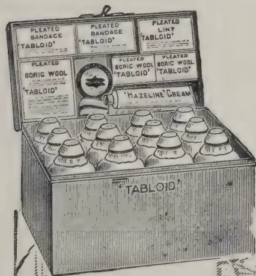
Compare this well-ap pointed 'Tabloid' Medicine Case with the old-time and unnecessary collection of apparatus and bottles, pots and parcels of medicaments which were often of uncertain strength and unstable.
TRADE MARK 'TABLOID' BRAND
MEDICINE CASE No. 258
Contains pure and reliable medicaments in compact doses, ready and easy to take.
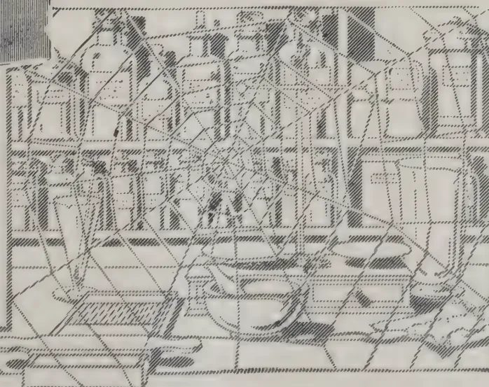
Dispensing made easy
No weighing
No waste
Extremely light and climate-proof
Measures
in.
In japanned Metal, of all the principal Chemists and Stores
xx 976
BURROUGHS WELLCOME & CO., LONDON
NEW YORK
MONTREAL
SYDNEY
CAPE TOWN
MILAN
SHANGHAI
BUENOS AIRES
BOMBAY
All Rights Reserved
256[SEPTEMBER, 1914.A memoir containing three papers dealing with the above problems has recently been published by M. M. McCool, in the series issued from the Cornell University Agricultural Experiment Station.
It had already been determined by several investigators that plants grown in a solution of any one nutrient base and in absence of some other nutrient base, exhibited extremely injurious effects. This was first demonstrated with the important nutrient bases magnesium and calcium: magnesium is an essential of plant food, but in the absence of calcium it has a marked toxic action on the plant, the addition of calcium in sufficient amount completely preventing such toxic action. The toxic action exhibited itself chiefly in retardation of growth of shoot and root. The explanation advanced was that "ions furnished by the dissociation of electrolytes form intimate combinations with the proteids of protoplasm, and that their mutually antagonistic effect expresses itself in a replacement of one kind of ion by another as a result of change in the composition of the surrounding solution." "In a mixture of three salts in the proper proportions, the toxic effects are mutually counteracted. The mixture so constituted is a physiologically balanced solution." The present paper discusses a series of experiments where the nutrient bases employed were calcium, magnesium, ammonium, and potassium, and further the non-nutrient bases sodium, barium and strontium. It was found that calcium is not poisonous even at relatively high concentration, though it caused chlorosis of the leaves: this chlorotic condition is prevented by addition of magnesium. Magnesium is extremely toxic, but is completely antidoted by calcium when present in sufficient quantity: its toxic action exhibited itself in almost total inhibition of growth of shoot and root. Each of the following bases in the order given is injurious to plants grown in pure solutions: barium, strontium, ammonium, magnesium, sodium, potassium. Some of these exhibit mutual antagonism e.g., sodium and potassium, when present together, mutually prevent the ill effects which each produces when present alone. Calcium however is the most effective in preventing these ill effects; probably, the favourable results obtained from the application of lime to many soils is due in part to its antidotal relations.
Salts in solution undergo ionisation i.e., a dissociation of the salt into its component parts, acid and base. The acid part is the anion, the base the cation. Manganese is widely distributed in nature. Fertile soils usually contain less than 1 per cent. of oxide of manganese. Manganese occurs in plants: LIEBIG in 1851 reported the presence of manganese in tea. Later research showed its presence in most flowering plants. Its function in plant nutrition is not clearly understood, but it has been established that it is of importance in the action of oxidizing enzymes. It has frequently been shown that manganese exerts a stimulating action on plant growth, when applied to soils in small quantity. Aso in 1904 applied a general manure to two plots
SEPTEMBER, 1914.]257of paddy, and to one of these in addition he applied a small quantity of manganese chloride. Taking the yield of the control plot as unit, the yield of the manganese plot was as follows:—
| Total Yield | ... | 1.42 |
| Straw | ... | 1.48 |
| Full grains | ... | 1.36 |
| " " | (husked) | 1.30 |
approximately a gain of one-third.
Other field crops have shown a similar increased yield following the application of manganese: it was also found that manganese is more effective when applied as a top-dressing.
Manganese when present in greater quantity has a toxic action, seen in strong inhibition of aerial growth, while root injury is insignificant. The leaves showed marked chlorosis: apparently the chlorophyll is not developed, consequently the leaves are functionless and the plant soon dies. The chlorotic action of manganese has some economic importance: the "yellows" of pine-apples in parts of Hawaii has been attributed to excess of manganese in the soil: analysis of a black Hawaiian soil gave 9.74 per cent. of manganese oxide. Chlorotic leaves caused by manganese show a greater amount of active oxidases, than is found in normal leaves. Light increases the toxic effect of manganese; in light there is greater transpiration, and a consequent greater accumulation of manganese in the aerial parts.
Calcium, potassium, sodium and magnesium are each effective in counteracting the toxicity of manganese.
The various bases show a lessened toxicity in sand, soil, and other solid particles, than in pure water solution. This may be due to chemical reactions between the dissolved salt and the solid particles resulting in the formation of less toxic substances. Young seedlings are much more sensitive, than are older plants.
Barium, strontium, ammonium, magnesium, sodium, and potassium, in the order given, are very toxic to seedlings. This toxicity is greatly reduced in full nutrient solutions and in soil cultures.
The importance of the above results in the practice of manuring is evident. Equally evident is it, that a knowledge of the composition of the particular soil concerned is necessary. The practice of heavy manuring with potash and ammonium manures may lead to physiologically unbalanced conditions in the soil: or such conditions may already exist in the presence of one of the above bases in excess.
The rectifying of the soil conditions may be most effectively brought about by the application of lime (calcium).
G. BRYCE.
G. MASSEE.
It is very generally believed that diseases of plants, caused by fungi, continue to increase in number, and in the case of cultivated plants this is probably true, not because the adaptive power of fungi is greater than at any previous period, but simply because the opportunities for exercising the
258[SEPTEMBER, 1914.]adaptive power possessed by fungi are more frequent at the present time, too often due to a departure from the normal on the part of the host-plant, brought about by cultivation.
Quite recently my attention was called to a batch of Clerodendron fallax, Lindl in one of the houses at Kew; the gardener had noticed the presence of numerous minute watery-looking drops, on the under-surface of the leaves, an unusual phenomenon, not to be found on another batch of the same kind of plant growing under slightly different conditions as to temperature and moisture. On investigating the matter it was found that the under surface of the leaf, more especially towards the base, was studded with comparatively large, peltate glands, supported by a very short central stalk. These glands each exuded a liquid drop which had a very sweet taste. The ubiquitous floating spores of Cladosporium epiphyllum, Pers., found these sugary drops a congenial pabulum, and each gland was soon tipped with a fruiting tuft of Cladosporium. At first the Cladosporium was strictly confined to the glands, and depended on the secretion for its support, but it gradually passed from the saprophytic condition, and entered that of a facultative parasite, passing beyond the range of the gland and attacking the surrounding living tissue of the leaf, forming conspicuous brown, dead patches on the upper surface. Three weeks after the disease first appeared, the spores of the fungus were capable of infecting any portion of the leaf, quite apart from receiving an initial start on the sugary excretion from a gland. The above is a concrete example of a saprophytic fungus becoming a parasite within a brief period of time. It is unlikely that all the conditions necessary to effect this change will ever occur again, hence the epidemic will be of short duration, but it can be readily imagined that if the host-plant had been an outdoor crop, and the epidemic had remained unchecked, the fungus might have become a pronounced parasite, capable of continuing its ravages for all time.
Judging from the number of examples sent to Kew for determination, mechanical injuries of various kinds, often self-inflicted, are a source of perplexity as to their origin. Wind is the most important factor. The gourds that are trained up poles in the herbaceous ground furnish striking examples. When a young fruit happens to be overhung by a leaf, and the latter is gently swayed to and fro by the wind, the rigid hairs on the under surface of the leaf form a series of more or less parallel scratches on the surface of the fruit. As the direction of the wind changes, the series of lines on the fruit cross each other diagonally, or form a more or less regular pattern. Such wounds are not very noticeable at first, but as the fruit increases in size the wounds are torn wider apart and periderm is formed along the edges of each wound, so that by the time the fruit has reached its full size, each individual scratch is clearly outlined by a raised ridge of whitish periderm. The above is what happens if no fungus appears on the scene, but as a rule the wounds while quite newly made are invaded by the spores of some facultative parasite, most frequently Botrytis or Cladosporium. In this case the original source of injury is soon obliterated, and a soft rot follows.
The leaves of gooseberries are frequently scratched by the spines on neighbouring branches, the sign that wind has been the active agent is indicated by the parallel rows of scars, which become clearly outlined by whitish periderm.
Holly leaves often suffer from the effects of wind, becoming wounded by the spines on the leaves of a neighbouring branch. When actual perforations are made, the injury is usually attributed to some insect. When the leaves are only slightly punctured, the wound often forms a starting point for one of the many micro-fungi attacking leaves, or a growth of periderm gives the leaves a spotted appearance.
SEPTEMBER, 1914.]259The opportunities described above for saprophytic fungi having a tendency to become parasites, must necessarily be repeated in a wholesale manner in nature. In the majority of instances the opportunity is not of sufficiently long duration to enable the fungus to become an obligate parasite, which only means that a fungus has fed for so long a time on food supplied by one special kind of host-plant, that it cannot change, without undergoing at least very great inconvenience to itself, or if it has become rigid, cannot change under any circumstances. For this reason the evolution from saprophytic to parasitic fungi is not rapid, due simply to lack of opportunity, at the same time it cannot be doubted that a certain amount of headway is made in this direction, and the primary factor rendering possible such progress may be of a very trivial nature in itself.—KEW BULLETIN.
Any attempt to present adequately the enormous volume of research work, much of which is of the highest grade, constantly in progress in the many scientific bureaus and special laboratories of the general government, or even to indicate its actual extent and range, is utterly beyond the limits of my attainments or of your patience. The generous policy of the Government toward research is unique in this, that the results are immediately made available to the whole people.
The United States is still essentially an agricultural country, and agriculture is, in its ultimate terms, applied photochemistry. The value of our farm property is already more than 42,000,000,000 dollars, and each sunrise sees an added increment of millions. Even small advances in agricultural practice bring enormous monetary returns.
Chief, therefore, among the government departments, in the volume of industrial research is the Department of Agriculture, which includes within its organisation ten great scientific bureaus, each inspired by an intense pragmatism and aggressively prosecuting research in its allotted field.
The research work of the Department of Agriculture is greatly augmented and given local application through the agency of sixty-four State agricultural experiment stations, established for the scientific investigation of problems relating to agriculture. These stations are supported in part by federal grants, as from the Hatch and Adams funds, and for the rest by State appropriations. Their present income exceeds 3,000,000 dollars. All are well equipped; one of them, California, includes within its plant a superb estate of 5,400 acres, with buildings worth 1,000,000 dollars.
It may be said without fear of contradiction that through the combined efforts of the Department of Agriculture, the experiment stations, the agricultural colleges, and our manufacturers of agricultural machinery, there is devoted to American agriculture a far greater amount of scientific research and effort than is at the service of any other business in the world.
In the United States Patent Office, DR. HALL has developed a remarkably comprehensive index to chemical literature, which now contains 1,250,000 cards, and is open to every worker. The Bureau of Fisheries devotes 40,000 dollars to a single study, and the Geological Survey 100,000 dollars to the investigation of the mineral resources of Alaska.
The Bureau of Mines of the Department of the Interior was established to conduct on behalf of the public welfare fundamental inquiries and investigations into the mining, metallurgical, and mineral industries. Its appropriation for the current fiscal year is 662,000 dollars, of which 347,000 dollars is to be devoted to technical research pertinent to the mining industry.
260[SEPTEMBER, 1914.Perhaps no better evidence could be adduced of the present range and volume of industrial research in America than the necessity, imposed upon the author of such a general survey as I am attempting, of condensing within a paragraph his reference to the Bureau of Standards of the Department of Commerce. Its purpose is the investigation and testing of standards and measuring instruments, and the determination of physical constants and the properties of materials. To these objects it devotes about 700,000 dollars a year to such good effect that in equipment and in the high quality and output of its work it has in ten years taken rank with the foremost scientific institutions in the world for the promotion of industrial research and the development and standardization of the instruments, materials, and methods therein employed. Its influence upon American research and industry is already profound and rapidly extending.
I cannot better conclude this cursory and fragmentary reference to governmental work in applied science than with the words of the distinguished director of the Bureau of Standards:—
“If there is one thing above all others for which the activities of our Government during the past two or three decades will be marked, it is its original work along scientific lines, and I venture to state that this work is just in its infancy.”
The present vitality and rate of progress in American industrial research is strikingly illustrated by its very recent development in special industries. It has been said that our best research is carried on in those laboratories which have one client, and that one themselves.
Twenty-five years ago the number of industrial concerns employing even a single chemist was very small, and even he was usually engaged almost wholly upon routine work. Many concerns engaged in a business of a distinctly chemical nature had no chemist at all, and such a thing as industrial research in any proper sense scarcely came within the field of vision of our manufacturers. Many of them have not yet emerged from the penumbra of that eclipse, and our industrial foremen as a class are still within the deeper shadow. Meantime, however, research has firmly established itself among the foundation stones of our industrial system, and the question is no longer what will become of the chemists. It is now what will become of the manufacturers without them.
In the United States to-day the microscope is in daily use in the examination of metals and alloys in more than 200 laboratories of large industrial concerns. An indeterminate but very great amount of segregated research is constantly carried forward in small laboratories, which are either an element in some industrial organization or under individual control. An excellent example of the quality of work to be credited to the former is found in the development of cellulose acetate by MORK in the laboratory of the Chemical Products Company, while a classic instance of what may be accomplished by an aggressive individualism plus genius in research is familiar to most of you through the myriad and protean applications of Bakelite. The rapidity of the reduction to practice of BAEKELAND'S research results is the more amazing when one considers that the distances to be travelled between the laboratory and the plant are often, in case of new processes and products, of almost astronomical dimensions.
Reference has already been made to the highly organised, munificently equipped, and splendidly manned laboratories of the Du Pont Company, the General Electric Company, and the Eastman Kodak Company. There are in the country at least fifty other notable laboratories engaged in industrial research in special industries. The expenditure of several of them is more than 300,000 dollars each year. The United States Steel Corporation has not hesitated to spend that amount upon a single research, and the expenses
SEPTEMBER, 1914.]261of a dozen or more laboratories probably exceed 100,000 dollars annually. One of the finest iron research laboratories in the world is that of the American Rolling Mills Company.
The steel industry in its many ramifications promotes an immense amount of research, ranging from the most refined studies in metallography to experimentation upon the gigantic scale required for the development of the Gayley dry blast, the Whiting process for slag cement, or the South Chicago electric furnace. This furnace has probably operated upon a greater variety of products than any other electric furnace in the world. Regarding the steel for rails produced therein, it is gratifying to note that after two and one-half years or more no reports of breakage have been received from the 5,600 tons of standard rails made from its output.
Industrial research is applied idealism. It expects rebuffs, it learns from every stumble, and turns the stumbling-block into a stepping-stone. It knows that it must pay its way. It contends that theory springs from practice. It trusts the scientific imagination, knowing it to be simply logic in flight. It believes with F. P. FISH, that "during the next generation—the next two generations—there is going to be a development in chemistry which will far surpass in its importance and value to the human race that of electricity in the last few years—a development which is going to revolutionise methods of manufacture, and more than that, is going to revolutionise methods of agriculture;" and it believes with SIR WILLIAM RAMSAY that "the country which is in advance in chemistry will also be foremost in wealth and general prosperity."
Modern progress can no longer depend upon accidental discoveries. Each advance in industrial science must be studied, organised, and fought like a military campaign. Or, to change the figure, in the early days of our science, chemists patrolled the shores of the great ocean of the unknown, and, seizing upon such fragments of truth as drifted in within their reach, turned them to the enrichment of the intellectual and material life of the community. Later they ventured timidly to launch the frail and often leaky canoe of hypothesis, and returned with richer treasures. To-day, confident and resourceful, as the result of many argosies, and having learned to read the stars, organised, equipped, they set sail boldly on a charted sea in staunch ships with tiering canvas bound for new El Dorados.—NATURE.
This is the subject of a paper (published in the PHILIPPINE AGRICULTURIST AND FORESTER) by ANTONIO LEGANO the result of whose investigations should prove of considerable interest to the agriculturist.
The plant referred to, commonly known as Santa Helena or Ipil-ipil, is found so abundantly in the Philippines that it is looked upon as a weed. It is frequently associated with another plant that has become common in Ceylon since its introduction from Central America about 1885, viz. Madre Cacao (Gliricidia maculata).
An important fact brought out in the paper is that Leucaena is able to fight Imperala (cogon, lalang or illuk) grass, inasmuch as it quickly shades the latter and kills it out,
262[SEPTEMBER, 1914.Both Leucæna and Gliricidia are spoken of as excellent fuel trees, and well worth growing for that purpose. Indeed, Leucæna is from the forester's point of view "the most practical crop for badly exposed areas." It is recommended for use as a nurse for forest seedlings to be cut later on for fuel. It has been calculated that the Leucæna grown for wood should give a return of P 55 per hectare per annum, i.e., Rs. 33 per acre.
But the most important part played by Leucæna is in renovating impoverished soils by adding to them nitrogen drawn from the atmosphere. The writer of the paper gives the following results of his observations regarding root-nodule development:—(1) The nodules are largely found on the filamentous feeding roots. (2) They are developed laterally and so do not interfere with the growth of the roots. (3) They are not to be found on the larger roots and practically cease at a depth of 5 inches. (4) The nodule-bearing roots are most numerous near or at the surface from which the nodules sometimes protrude like little tubers. (5) The nodules are generally branched; lower down they are fewer in number and scarcely branched; in hard soil they incline to become compressed.
In the course of his investigations the writer ascertained the weight of the nodules (fresh and dried) from four fields, and having also found the percentage of nitrogen in the nodules, he was able to calculate the value of the nodules in terms of the value of the nitrogen contained in them.
According to this computation the average market value of the nitrogen in the nodules for the four fields studied is P. 6.50 per hectare in the United States, and P. 9.30 in the Philippines, i.e., Rs. 3.90 or Rs. 5.58 per acre respectively.
By means of soil examination the rate of production of nodules was also calculated, and the average total cost of nitrogen added to the soil per annum in the four fields was approximately determined as P. 38.80 per hectare for the United States and P. 55.50 per hectare for the Philippines; i.e. Rs. 23.28 and Rs. 33.30 respectively per acre according to the ruling value of nitrogen.
There was some indication that the rate of nitrogen production became less as the trees grew old, though nothing definite can be said on this point. But it would appear that Leucæna is a most useful and valuable plant as (1) a source of nitrogen for the renovation of poor soils, (2) a fuel producer, (3) a nurse for seedlings, (4) a useful shade tree, and (5) a means of fighting illuk grass. On waste land it should prove a remunerative crop which costs practically nothing to establish, and may with advantage be grown on uncultivated areas instead of allowing illuk and other noxious weeds to occupy them and exhaust their fertility.
C. D.
The Department of Agriculture in Egypt has realised that one of the best means of improving the cotton crop is the selection and distribution of good seed for sowing, and it has therefore devised a plan for carrying this into operation. The system consists of (1) the ordinary distribution scheme under which good "Taqawi" (i.e., seed for sowing as distinguished from "Tugari" or commercial cotton seed) is supplied to the small cultivators, and (2) the States Domains scheme, under which selected "Taqawi" grown on the States Domains is supplied to the largest and most careful cultivators. A full account of both schemes has been published in the AGRICULTURAL JOURNAL OF EGYPT (1913-3-1).
SEPTEMBER, 1914.]263In initiating the ordinary distribution scheme, it was necessary to bear in mind that the fellahin, or native cultivators, are extremely improvident, and will purchase inferior seed on account of its cheapness, and that being in many instances in a needy state, they were compelled in the past to obtain their seed under the onerous conditions imposed by unscrupulous dealers. The Department therefore decided to supply the fellahin with better seed than they had been obtaining hitherto, and at a more reasonable price and under less burdensome conditions. The seed is distributed on credit, and its cost is collected subsequently with an instalment of the land tax. It was also decided to restrict the distribution on credit to the fellahin planting eight acres or less, this being the predominating class of cultivators and the one most in need of the advantages afforded.
The scheme was started in 1910-11, when 1,570 ardebs (1 ardeb = 5'445 bushels) of seed were distributed in the Sharqia Province. In 1911-12 the distribution was extended to the whole of Egypt, and the quantity of seed issued on credit amounted to 39,190 ardebs. During 1912-13 no less than 76,527 ardebs were distributed on credit to the peasant farmers. Nearly every village in Upper and Lower Egypt has been visited by special sub-inspectors, and the system of distribution explained. Applications for seed were received in 1912-13 from more than half the villages in the country. The seed supply is obtained from first class ginners, who realise the importance of the project and the responsibility they incur, and consists of good Taqawi (a) which the ginners provide from crops they have purchased, and (b) which comes from crops which have been inspected in the fields and are recommended by the Department's inspectors. Special arrangements have been made for bagging the seed and for inspecting the seed in the ginneries.
By means of the scheme outlined above, the Department of Agriculture is able to distribute much better seed than the growers could obtain otherwise. There is not at present, however, any highly selected seed available for extensive distribution, and steps are therefore being taken to introduce a pure type of seed in sufficient quantity to replace the deteriorated and mixed varieties now grown. This work is being carried out on the Department's experiment farms, but a considerable time must necessarily elapse before the results will be of practical utility to the general distribution scheme. Meanwhile it has been decided that the States Domains seed should be adopted as a basis, this seed being recognised as the best obtainable in the country because of the great care which the State Domains Administration devotes to the cultivation and ginning of the crops. Arrangements have been made for a certain quantity of the seed produced on these estates to be placed each year at the disposal of the Department. This seed is distributed to the larger cultivators on condition that 50 per cent. of the seed resulting from its growth should be available for the use of the Department. This resultant seed is then sold to medium cultivators on the same condition, and the seed obtained from them enters into the ordinary distribution scheme for the smaller cultivators. To avoid confusion, the original seed from the States Domains is termed "Domains Taqawi," the seed resulting therefrom (i.e. the second generation) "Domain Seed," whilst the seed resulting from the latter (i.e. the third generation) is known as "Domains Seed Fellahi." By this means it is hoped that a well-organised scheme, to which all the cultivators will have become accustomed, will be in good working order by the time that the pure seed types which are being bred on the experiment farms by Mendelian methods become available for distribution. It is anticipated that in the course of two or three years there will be a sufficient supply of such seed to replace the Domains seed at present employed in the distribution scheme.—IMPERIAL INSTITUTE BULLETIN
264[SEPTEMBER, 1914.REV. W. WILKS.
In 1911 I read a paper on "Difficulties in Flower Show Schedules," pointing out errors of frequent occurrence and their remedy. That this paper met a need and has been of some assistance to Horticultural Societies is, I think, proved by the fact that whereas formerly I used always to have a very heavy correspondence, during the months of July and August especially, relating to disputes on points of disagreement in schedules, I now receive such letters comparatively rarely. During the last two years I have collected a few further errors which have occurred and to which I think it worth while to call attention of other Societies.
1. A dish of fruit—four varieties.
An exhibitor staged two varieties of apples, one of tomatoes, and one of pears.
It was contended that four varieties of one kind of fruit were meant, but the schedule did not say so. Any four varieties of fruit, either of the same or of different kinds, were probably eligible.
I say "probably," for it is doubtful whether such an exhibit should not be disqualified, as it would consist of four dishes of fruit, and the schedule only asks for "a" dish, i.e. one dish containing four varieties.
1a. Another example of the same error was as follows:—
Fruit—collection of six varieties, white and black grapes allowed.
An exhibit of one bunch each of black and white grapes, one dish of figs, one of peaches, one of nectarine 'Pine Apple,' and one of nectarine 'Humboldt' was disputed on the ground that only one nectarine variety was eligible. As a matter of fact, four or even six varieties of nectarines would not have disqualified the exhibit. Varieties were asked for. The schedule should have asked for six kinds.
2. Six stems of different varieties of Sweet Peas.
The exhibitors were, one and all, staging one stem each of six varieties. To do so was quite within the wording of the schedule; or they might have staged six stems of each of an unlimited number of different varieties, without disqualification. What the Show Committee really intended to ask for was "six vases of different varieties of Sweet Peas, six stems in a vase."
3. "The best collection of Hardy Flowers. No duplicate bunches or mixed bunches allowed."
The question arose—Were Phlox decussata, vars. 'Tapis blanc,' 'Etna,' and 'Sheriff Ivory,' to be considered as "duplicate bunches?"
No, certainly not. The schedule did not specify one variety of each kind, and different varieties of one kind cannot be considered duplicates of each other.
4. "Nine hardy and half hardy annuals—dissimilar."
A dispute arose because one exhibit contained two annual chrysanthemums of different colours.
The term "dissimilar" is one which should have no place in horticulture, and it is not recognised by the Royal Horticultural Society. To put the case thus: Two men are walking along the road—one wears a green hat and the other a brown. Are they similar or dissimilar? As men they are similar, and different hats cannot make them otherwise; but as specimens of colour or varieties of clothing they are dissimilar.
SEPTEMBER, 1914.]265The word is a very bad one to use, and will give endless trouble in a schedule. "Distinct kinds" or "distinct varieties" restrict to narrow limits the latitude for misunderstanding.
5. A class for Sweet Peas "shown with own foliage."
It was contended that the foliage meant was that actually belonging to the individual plant from which the flowers themselves were gathered.
This is not the interpretation for Flower Show purposes. So long as the foliage is that of the Sweet Pea (Lathyrus odoratus), and not of any other Lathyrus or Pisum, the intention of the schedule is met.—ROYAL HORTICULTURAL SOCIETY JOURNAL.
266
[SEPTEMBER, 1914]
MARKET RATES FOR TROPICAL PRODUCTS.
(From Lewis & Peat's Latest Monthly Prices Current.)
| QUALITY. | Quotations. | QUALITY. | QUOTATION. | ||||
|---|---|---|---|---|---|---|---|
| ALOE, Socotrine | cwt. | Fair to fine | 40/ a 50/ | INDIA RUBBER | lb. | Common to good | 9d a 13 |
| Zanzibar & Hepatic | " | Common to good | 40/ a 70/ | Borneo | " | Good to fine red | 1/3 a 1/6 |
| ARROWROOT (Natal) | lb. | Fair to fine | 5d | Java | " | Low white to prime red | 9 d a 14 |
| BEES' WAX | cwt. | Penang | " | Fair to fine red ball | 1/9 a 21 | ||
| Zanzibar Yellow | " | Slightly drossy to fair | £7 10/ a £7 15/ | Mozambique | " | Sausage, fair to good | 1/9 a 2 |
| East Indian, bleached | " | Fair to good | £8 10/ a £8 12/6 | Nyasaland | " | Fair to fine ball | 1/9 a 2 |
| unbleached | " | Dark to good genuine | £6 5/ a £7 | Madagascar | " | Fr. to fine pinky & white | 1/4 a 1/6 |
| Madagascar | " | Dark to good palish | £7 15/ a £8 2/6 | " | Majung, & blk coated | 1/4 a 1/2 | |
| CAMPHOR, Japan | lb. | Refined | 1/7 a 1/8 | " | Niggers, low to good | 6d a 1/6 | |
| China | cwt. | Fair average quality | 155/ | " | Ordinary to fine ball | 1/4 a 1/7 | |
| CARDAMOMS, Tuticorin | Good to fine bold | 5/9 a 6/ | New Guinea | " | Shipping mid to gd. violet | 3s 3d a 3s 8d | |
| per lb. | Middling lean | 4/8 a 5/4 | INDIGO, E.I. Bengal | Consuming mid to gd. | 2s 9d a 3s 2d | ||
| Malabar, Tellicherry | " | Good to fine bold | 5/9 a 6/3 | " | Ordinary to middling | 2s 4d a 2s 9d | |
| Calicut | " | Brownish | 3/9 a 5/3 | " | Mid. to good Kurpah | 1s 11d a 2s 5d | |
| Mangalore | " | Med Brown to good bold | 4/ a 6/4 | " | Low to ordinary | 1s 6d a 1s 9d | |
| Ceylon, Mysore | " | Small fair to fine plump | 4/ a 6/4 | " | Mid. to fine Madras | 1/11 a 2/9 | |
| Malabar | " | Fair to good | 3/2 a 3/4 | MACE, Bombay & Penang | Pale reddish to fine | 2/4 a 2/6 | |
| Seeds, E. I. & Ceylon | " | Fair to good | 4/ a 4/3 | per lb. | Ordinary to fair | 2/ a 2/2 | |
| Ceylon "Long Wild" | " | Shelly to good | 2/3 a 3/6 nom. | Java | Wild " good pale | 2/1 a 2/4 | |
| CASTOR OIL, Calcutta | " | Good 2nds | 3 1/2d | Bombay | 1/ | ||
| CHILLIES, Zanzibar | cwt. | Dull to fine bright | 50/ a 60/ | NUTMEGS,-- | lb. | 64's to 57's | 9 1/2d a 10 1/2d |
| Japan | " | Fair bright small | 60/ a 70/ | Singapore & Penang | " | 80's | 7 1/2d |
| CINCHONA BARK,--lb. | Crown, Renewed | 3 3/8 d a 7 d | 110's | 6 1/2d | |||
| Ceylon | Red Org. Stem | 2d a 6d | |||||
| Red Org. Stem | 1 1/2 d a 4 1/2 d | ||||||
| Renewed | 3d a 5 1/2 d | ||||||
| Root | 1 1/2 d a 4d | NUTS, ARECA | cwt. | Ordinary to fair fresh | 17/6 a 20 | ||
| CINNAMON, Ceylon | 1sts. | Good to fine quill | 1/3 a 1/9 | NUX VOMICA, Cochin | Ordinary to good | 13/6 a 15 | |
| per lb. | 2nds. | " " | 1/2 a 1/7 | per cwt. | Bengal | " " | 12/ |
| 3rds. | " " | 1/1 a 1/6 | Madras | " " | 12/ a 13/ | ||
| 4ths. | " " | 1/ a 1/3 | OIL OF ANISEED | lb. | Fair merchantable | 5/2 | |
| Chips. | Fair to fine bold | 2d a 4d | CASSIA | " | According to analysis | 2/8 a 2/11 | |
| CLOVES, Penang | lb. | Dull to fine bright pkd. | 1/ a 1/2 | LEMONGRASS | oz. | Good flavour & colour | 2 1/2 d |
| Amboyna | " | Dull to fine | 10d a 10 1/2d | NUTMEG | " | Dingy to white | 1 1/2 d a 1 1/2d |
| Zanzibar | " | Fair and fine bright | 5 1/2 d a 6 1/2 d | CINNAMON | " | Ordinary to fair sweet | 4d a 1s 5d |
| Madagascar | " | Fair | 7d | CITRONELLE | lb. | Bright & good flavour | 1/6 1/2 |
| Stems | " | Fair | 2d | ORCHELLA WEED--cwt | |||
| COFFEE | Ceylon | " | Fair | 10/6 | |||
| Ceylon Plantation | cwt. | Medium to bold | Nominal | Madagascar | " | Fair | 10/6 |
| Liberian | " | Fair to bold | 63/ a 80/ | Zanzibar | " | Fair | 10/6 |
| COCO, Ceylon Plant. | " | Special Marks | 81/ a 88/6 | PEPPER (Black) | lb. | ||
| Red to good | 73/ a 80/6 | Alleppy & Tellicherry | Fair | 5d | |||
| Native Estate | " | Ordinary to red | 42/ a 68/ | Ceylon | " | Fair to fine bold heavy | 5d a 5 1/2d |
| Java and Celebes | " | Small to good red | 30s a 93s | Singapore | " | Fair | 4 1/2d |
| COLOMBO ROOT | " | Middling to good | 15/ a 22/6 | Acheen & W. C. Penang | Dull to fine | 5d a 5 1/2d | |
| CROTON SEEDS, sifted, | " | Dull to fair | 42/6 a 47/6 | (White) Singapore | " | Fair to fine | 8 1/2d a 8 1/2d |
| CUBES | " | Ord. stalky to good | 130/ a 150/ | Siam | " | Fair | 8 1/2d |
| GINGER, Bengal, rough | " | Fair | 19/ | Penang | " | Fair | 7 1/2d |
| Calicut, Cut A | " | Medium to fine bold | 75/ a 85/ | Muntok | " | Fair | 9d |
| B & C | " | Small and medium | 35/ a 74/ | RHUBARB, Shenzi | " | Ordinary to good | 2/ a 4/ |
| Cochin, Rough | " | Common to fine bold | 22/6 a 27/ | Canton | " | Ordinary to good | 1/10 a 3/6 |
| Japan | " | Small and D's | 20/ | High Dried, | " | Fair to fine flat | 11d a 1/1 |
| GUM AMMONIACUM | " | Unsplit | 20/ | Dark to fair round | 9 d a 10d | ||
| ANIMI, Zanzibar | Ord. Blocky to fair clean | 40 s a 72s 6d | SAGO, PEARL, large--cwt | Fair to fine | 18 | ||
| Pale and amber, str. srts | £14 10/ a £16 10/ | medium | " | " " | 16/ | ||
| " little red | £11 a £12 | small | " | " " | 13/ a 14/ | ||
| Bean and Pea size ditto | 70/ a £11 | Flour | Good pinky to white | 10/ a 11/ | |||
| Fair to good red sorts | £8 10/ a £10 10/ | SEEDLAC | cwt. | Ordinary to gd. soluble | 65/ a 75/ | ||
| Med. and bold glassy sorts | £5 10/ a £7 5/ | SENNA, Tinnevelly | lb. | Good to fine bold green | 5d a 8 1/2d | ||
| Madagascar | " | Fair to good palish | £4 a £8 | Fair greenish | 3d a 4 1/2d | ||
| " red | £4 a £7 | Common specky & small | 1 1/2 d a 2 1/2 d | ||||
| ARABIC, E. I. & Aden | " | Ordinary to good pale | 26/ a 32/6 | SHELLS, M. o' PEARL-- | |||
| Turkey sorts | " | " " | 37/ a 57/6 | Egyptian | cwt. | Small to bold | 72/6 a £6 |
| Ghatti | " | Sorts to fine pale | 17/ a 27/ | Bombay | " | " " | 85/ a £6 10/ |
| Kurrachee | " | Reddish to good pale | 22/6 a 32/6 nom. | Mergui | " | Chicken to bold | £8 12/6 a £14 5/ |
| Madras | " | Dark to fine pale | 20/ a 30 nom | Manilla | " | Fair to good | £7 17/6 a 13 10/ |
| ASSAFETIDA | " | Clean fr. to gd. almonds | £6 a £6 10/ | Banda | " | Sorts | 50/ nom. |
| com. stony to good block | 40s a £5 | Green Snail | " | Small to large | 70/ a 85/ | ||
| KINO | lb. | Fair to fine bright | 6d a 1/5 | Japan Ear | " | Trimmed selected small | |
| MYRRH, Aden | sorts | Middling to good | 57/6 a 67/6 | to bold 47/ a £5 15 | |||
| Somali | " | " " | 52s 6d a 55s | TAMARINDS, Calcutta... | Mid to fine bl'k not stony | 14/ a 15 | |
| OLIBANUM, drop | " | Good to fine white | 45s a 50s | per cwt. | Madras | Inferior to good | 6/ a 10 |
| " | Middling to fair | 35s a 40s | TORTOISE SHELL-- | ||||
| pickings | Low to good pale | 15/ a 27/6 | Zanzibar & Bombay | lb. | Small to bold | 12/ a 26 | |
| siftings | Slightly foul to fine | 18s a 25s | Pickings | 6/6 a 19 | |||
| INDIA RUBBER | lb. | Fine Para smoked sheets | 2/4 | TURMERIC, Bengal | cwt. | Fair | 12/ a 13/ |
| Ceylon, Straits, | " | Crepe ordinary to fine | 2/2 1/2 | Madras | " | Finger fair to fine bold | 14/ a 16 |
| Malay Straits, etc. | " | Fine Block | 2/4 1/2 | Do. | " | Bulbs " [bright | 12/ a 13 |
| Scrap fair to fine | 1/8 a 1/9 | Cochin | " | Finger fair | 13/ nom. | ||
| Assam | " | Plantation | 1/10 | Bulbs | 11/6 a 12 | ||
| " | Fair 11 to ord. red No. 1. | 1/3 a 1/6 | VANILLOES-- | lb. | |||
| Rangoon | " | " " " | 1/2 a 1/4 | Mauritius | 1sts. | Gd. crystallized 3 1/2 a 8 1/2 in. | 9/6 a 15 |
| Madagascar | 2nds. | Foxy & reddish 3 1/2 a " | 9/ a 12/ | ||||
| Seychelles | 3rds. | Lean and inferior | 9/ a 9/6 | ||||
| VERMILLION | lbs. | Fine, pure, bright | 2/7 | ||||
| WAX, Japan, squares | cwt. | Good white hard | 47/6 | ||||
THE
TROPICAL AGRICULTURIST:
JOURNAL OF THE
CEYLON AGRICULTURAL SOCIETY.
VOL. XLIII.
COLOMBO, OCTOBER, 1914.
No. 4.
THE WAR.
That the immediate effect of the war upon the planting industry will be one of depression seems inevitable from the fact that the purchasing power of at least two continental countries, namely Germany and Austro-Hungary, whose markets have hitherto taken a large proportion of our produce, must suffer diminution from the ruin, partial or complete, which will in all probability overtake many commercial firms, manufacturers, bankers and ship-owners within them owing to the cessation during the war of most of their foreign trade. A diminished purchasing power involves reduced consumption and demand with consequent lower prices. The diversion of trade to other countries, which no doubt will take place to a large extent, will not in our belief suffice to neutralize the effect of the crippling of the markets of a hundred and twenty millions of some of the world's most industrial peoples. The drain of the war may be expected to have its effect also upon the purchasing power of the Allies, at least for a short time.
Cane sugar will probably prove a notable exception to other tropical products and enjoy good prices what time the continental beet fields lie fallow. Dye stuffs may also experience a spurt till British manufacturers can arrange to supply synthetic dyes hitherto largely manufactured in Germany.
With the waste of war repaired a revival will no doubt set in. The burden of armaments will be relieved and millions of pounds now expended in the production of weapons of war will be released for the arts of peace. Some of those millions will
268[OCTOBER, 1914.certainly come our way, and happily few of our products are required in the manufacture of war material. The war has revealed in a significant manner how completely dependent we seem to be, almost from day to day, upon the European manufacturer with regard to many of our products, such as copra, which cannot be stored for long. Again, we have not yet succeeded in producing a staple food for man or beast in temperate climes, and consequently the tropics have been unable to come forward with offers of food for the troops. We have a great number of cereals and pulses, but they are all raised by manual labour and therefore cannot very well compete with farm crops handled by machinery from first to last.
A correspondent, MR. K. BANDARA BEDDEWELA, in applying for some slips of cluster sweet potatoes for distribution among poor villagers whom he is inducing to raise further food supplies, points out the importance of the people raising quickly yielding food stuffs as a provision against unemployment which already is beginning to be felt. Members of the Ceylon Agricultural Society will, it is hoped, follow our correspondent's example and make it their special task to encourage their poorer neighbours to plant up their gardens with sweet potatoes, yams, manioc, Indian corn, peas and beans, pumpkins, millet and other food products. It is a direction in which each member can serve his country and the Empire. If seed is required members could inform instructors, who are devoting special attention to this subject, or apply direct to the Society, which will obtain it for them at cost price. When the paddy crop now being sown comes to be harvested members should make a special point of impressing upon cultivators the importance of laying by their seed paddy and not touching it whatever may occur. Co-operative Credit Societies have a great opportunity here of proving their value to the country by looking after the interests of their members in the matter of seed and encouraging them to be provident and plant their gardens.
We will conclude with a word about ourselves. Advertisements of enemy subjects are discontinued, and we can no longer circulate the TROPICAL AGRICULTURIST in enemy countries. This means a serious falling off of revenue which we are meeting by cutting down the size of the Journal by two folios (16 pages). We ask the indulgence of our readers till good times come again.
R. N. L.
OCTOBER, 1914.]269W. A. WILLIAMS.
So much has been written and expressed upon the uses of plantation rubber in the manufacturing industry, that practically nothing remains upon which to give an opinion. The points, for and against, have been expounded until both planters and manufacturers know the arguments off by heart.
The only excuse I have to offer for bringing forward the subject is, that the use of plantation rubber is of paramount importance to both planters and manufacturers, and the exhibition is a fitting opportunity for pointing out, to our friends the planters, the experience gained by using large quantities, especially during the last few years, and for making suggestions which, in my opinion, will foster the employment of still larger quantities in future.
In the employment of plantation rubber in the factory the manufacturer has, first of all, to settle upon the class of rubber he will use, and on this heading alone much difference of opinion has existed. To my mind the adoption of an unsuitable class has, in many cases, been the cause of complaint and condemnation of plantation rubber.
It is to be understood that only first quality latex is entering into consideration, and at the outset the user has to decide as to whether he will use :
My experience of the above is that for all round results the unsmoked biscuit, or sheet, is to be recommended for the reasons that, for average strength and uniformity, it is as good as smoked, and for strength it is, undoubtedly, superior to crepe.
The disadvantages of smoked are :
the latter being especially undesirable when manufacturing against specification.
The usual method of preparation of smoked sheet, producing as it does a rubber with merely a surface smoking, is one which it is difficult to understand should recommend itself to manufacturers, and it appeals to reason that, where the smoking operation is only superficial, little if any advantage can be obtained by subjecting the coagulated rubber to this process. If smoked rubber is to offer any advantage in the manufacturing industry, I am confident this can only be obtained by the smoking process being so arranged that the product is uniformly treated throughout. Then it is possible that smoked plantation might offer some additional advantages in the manufacturing industry. At present my experience is that there is nothing to gain by adopting this grade.
270[OCTOBER, 1914.On the question of crepe, I am afraid the planters have sacrificed every thing to appearance, the whole object, apparently, being to obtain a nicely finished product. It is obvious that no advantage is to be gained by having the nerve destroyed by the creping rollers, which must, inevitably, be the result of this process. The manufacturer is not interested in the pretty appearance of the rubber as delivered to his factory. What he wants are results in his manufactured products—strength and reliability. Further, my experience is that, with the use of creped rubbers, vulcanisation difficulties are greatly increased. Their use has been, I fancy, the cause of many adverse comments upon the employment of plantation rubber generally.
I think it will be recognised that the quality of rubber cannot be judged by appearance, or the value for manufacture by hand-pulling. Samples which, if judged by these tests, would be considered superior to those of spotty appearance and general bad colour, have, on manufacture, proved to be much inferior; so why should so much thought be expended upon obtaining a pretty appearance, which is of no interest whatsoever to the manufacturer?
When the class of plantation rubber is fixed on, unfortunately our difficulties of manufacture are not disposed of, but, perhaps, the greatest difficulty of all has now to be faced, namely, its variability; and although, as stated above, I consider unsmoked biscuit, or sheet, to be the most desirable all round, this question of variability enters into all classes of plantation rubber. Owing to this variation its successful manufacture can only be accomplished by organising strict scientific control in the factory.
The practice in operation at the works of The North British Rubber Company, Ltd., is the careful testing, by the laboratories of all deliveries before the crude enters into manufacture, by which means any necessary assortment is made.
The properties of the crude rubber coming forward to the manufacturing departments are so indicated in advance, and one of the greatest difficulties in the employment of this grade of rubber is adjusted, namely, that of vulcanisation.
My experience is that, outside all questions of strength, the question of the vulcanising properties of plantation rubber is the greatest trouble the manufacturer has to face. Without efficient control, faulty vulcanisation undoubtedly will be responsible for much loss of time and money. These troubles, in factories where scientific control is not thoroughly organised, may be sufficient to condemn the use of this grade entirely.
It is, therefore, to the interest of the plantation industry, just as much as to that of the manufacturer, to have these troubles—if not entirely eliminated, which is, perhaps, impossible—at least reduced to a minimum, and thus bring about a condition of affairs which cannot be said to exist at present.
One appreciates the fact that some factors which possibly influence this are outside the control of the estate management, such as the variation of climate and soil, and, at the present time, the age of trees; but, on the other hand, much is under control, namely, the method of tapping and coagulation. These are matters quite outside the writer's province and experience, as to the best methods to be adopted, but are so crucial to the industry that I believe advice, and steps, will be taken to obtain uniformity of method on the estates, so far as is practicable.
OCTOBER, 1914.]271It is to be hoped that any experimental work taken in hand by the plantation industry will be conducted conjointly with the manufacturers, as the best and quickest results, and the placing on the market of a plantation rubber most suitable for consumption are only to be achieved by working together, and not as two separate industries.
Our interests are in common and not antagonistic, the object being the production of a plantation rubber which will give uniform results in the factory, and reliability in use, thereby ensuring greater confidence in the employment of this grade of rubber, and consequent greater consumption.—HANDBOOK, 1914 RUBBER EXHIBITION.
The Tephrosia candida in both the hill-side and hill-top plantations of Hevea is being cut and mulched to the trees to carry them through dry September. This is the fifth cutting since June 1913, when the seed was sown feet, 6 lb. per acre. It was last cut on June 9th and is now feet high, and is being cut back to one foot from the ground, i.e., it should be cut every 10 weeks at most or it becomes too woody—increasing the labour of cutting, tearing the stems, and being bulky to mulch. A piece of 50 yards square has yielded 3,285 lb. of green stuff.
All the supplies are coming on well.
Plots 73—76 of young Hevea have been thoroughly cleaned and disc-harrowed, the trees being well mulched with Crotalaria and jungle green stuff. The bank of this plot by the main road has been levelled and turfed.
Plot 140 B, the Tephrosia candida not having germinated well, Leucæna glauca has been sown from freshly-gathered seed which germinates at once. An experiment is being carried out on the germinating periods of Leucæna glauca.—PROGRESS REPORT, EXPERIMENT STATION, PERADENIYA.
DR. JOSEPH TORREY.
The one word the public knows is "rubber," and the term "pure rubber" flits airily in and out in a way that indicates, pretty clearly, the general belief that rubber goods should consist of rubber and little or nothing else. The frequent mention of "percentage of rubber" indicates a prevalent belief that the merit of goods is proportional to the rubber they contain. It will, therefore, be both interesting and profitable to take a survey of the facts underlying modern rubber goods manufacture.
First of all, rubber is one of those substances whose commercial usefulness is very largely determined by the presence in it of certain foreign substances or "impurities." It is pretty well understood that all rubber goods have to be vulcanised, and that, without vulcanisation, rubber goods
272[OCTOBER, 1914.would be of no use. Now, it is very doubtful, in the light of recent investigations, whether absolutely pure rubber will vulcanise in a manner which would meet requirements. Certain it is that the further the purification is pushed, the more sluggish the vulcanisation becomes.
All natural rubbers contain resinoid bodies in varying amounts, together with small quantities of nitrogenous bodies known as proteids, and it is certain that these substances, even in the very small amounts present, have a very great influence in determining the fundamental and essential properties which make rubber commercially useful. Here, then, we have quite a close parallel with iron.
Coming now to the manufacture of rubber goods, we encounter a somewhat similar order of facts. It is not at all practicable to make goods from nothing but vulcanised rubber, no matter what may be the price of it. It might be practicable in, say, ten per cent. of them, i.e., in some special cases where all that is required is a very high degree of extensibility and elasticity, as in rubber bands, "dental dam," etc., but the great bulk of rubber goods are subjected to far more severe conditions of service and must be equipped to meet them. They must resist strain, shock, wear, indentation, etc. It may be, also, that there are conditions of service which are constantly tending to deteriorate and wear out the resisting power. In a cycle or motor tyre we have the air pressure and the strong heating action that shows itself when a tyre is run at high speed. In case of hose we may have the effect of steam, hot or cold water, or even acid or alkaline solutions. Oils or greases are another source of danger, and last, but not least, we have the insidious action of rain, wind and sunlight.
Rubber by itself, even though vulcanised, is poorly equipped for such an ordeal. It must be properly armoured and strengthened for its tasks—and this is accomplished by mixing with it certain substances, mostly arrived at through experience.
Let us see what some of these are and how they are used.
First in order come certain substances which tend to increase strength and resilience. Oxide of zinc is the most conspicuous of these, though in these days lithopone, which is a mixture of zinc sulphide and barium sulphate, is more common. Calcined magnesia has the same effect, and, what is fully as important, all these tend to make the vulcanising process proceed more promptly and sharply. In a great many cases—notably that where the goods are vulcanised in a press mould—this is a very important point, for it tends to insure sound goods and save time as well. Small quantities of lime, litharge or white lead are sometimes added to accelerate the vulcanisation.
At this point it is worth noting that the addition of these various mineral powders to the rubber was not originally done with the idea of making it stronger or more elastic. The practice is older than the vulcanising process, and the object was to make the rubber less sticky. After the discovery of vulcanisation this necessity did not exist, for vulcanised rubber is not sticky; but it soon appeared that the mineral powders had very decided effects upon the vulcanised product and, moreover, as the price of rubber advanced, the cheapening effect of these additions began to be of importance. It is quite a common belief, on the part of the non-technical
OCTOBER, 1914.]273public, that the main object of these additions is to cheapen the product, but this is a great mistake. No matter how cheap rubber may become in the future, it will always be necessary to pursue, practically, the methods we do at present, if the goods manufactured are to be of any service.
The same necessity exists for the addition of a second group of substances, which act as protectors against atmospheric agencies—sun, wind, rain, etc.—or perhaps against water, either cold or hot, steam or even acids or alkalies. As examples where this kind of protection is required may be cited garden hose, pump valves, packing, steam or water hose, air-brake hose and hose used in chemical works. In general, too, any article that has an out-of-door life must be fortified, as perfectly as possible, against that most insidious foe of rubber goods—sunlight.
The idea involved here is nothing peculiar to the rubber industry. We impregnate wood with creosote, oil and other substances because it protects the wood against decay and keeps worms at bay. We impregnate rope with tar to make it stand weather better. Leather is doubly fortified—first by the tannin process, which bears about the same relation to the leather business that vulcanisation does to the rubber business—that is, in its commanding importance. The tanned leather is further protected by impregnation with oil.
In case of rubber we select out protectors with regard to the kind of protection needed. The best principle to go on in protecting against the action of water is to render the valve, or hose tube, as nearly waterproof as possible. People are accustomed to regard rubber as being waterproof itself, but there is no denying that it is penetrated by water when it is long in contact with it, and it is certain that, by mixing with it small quantities of substances which tend to resist water—such as heavy tar, or petroleum jelly (vaseline)—the goods resist water much better. It is, of course, important that good judgment be used both as to the quality and the quantity of the oils or tars used.
Sometimes, on the other hand, it is necessary to fortify our finished article against the action of oil. In this case it is necessary to incorporate some substance that tends to resist oil. Glycerine is often used for this purpose, but usually not alone. It is rubbed up with lead oxide, or zinc oxide, when it forms a plastic soap, which is then worked into the rubber mixing before it is vulcanised.
When the object is to resist the action of acids, we have two possible methods: we may either try to make the mixing waterproof (since most acids are in water solution) or we may incorporate some mineral powder which is not acted upon by acids, trusting to the rubber being "covered" or protected by the acid-proof powder. Often it is well to combine the two methods.
Articles that have to stand not only wear, distortion, shock, etc., but the action of atmospheric agencies as well, present a very difficult problem. The thing to be guarded against here is oxidation—to which rubber is comparatively sensitive. We begin by trying to arrange matters so that whatever action there is shall be confined to the outer surface of the article, and thus produce the minimum of effect. Great care is taken with the vulcanisation for the following reason: As has already been explained,
274[OCTOBER, 1914.vulcanisation consists in adding to the mixing a determined quantity (a few per cent.) of sulphur, and heating to the appropriate temperature for a certain time, known by experience, to produce the desired result. Now, part of the sulphur remains in the mixing unchanged after the heating, and when the article is exposed to the weather for a while the "free sulphur" at the outer surface is gradually eliminated, partly mechanically and partly chemically. Then a sort of diffusion of "free sulphur" from the interior to the surface takes place, and on reaching the surface it is eliminated as before. The result of this gradual elimination is that the article is left porous, i.e., minute cavities exist where the sulphur was, and these present just so much more surface for the action of oxidising agencies. We endeavour to meet this difficulty by so vulcanising that the smallest possible amount of free sulphur is left after the vulcanisation. Then again, mineral powders which are not oxidisable, and some of the less oxidisable oils, or waxes, are useful in the same way as in cases already discussed.
This problem of durability, however, is very difficult at best so long as we confine ourselves to the use of rubber and such substances as have been mentioned.
The so-called "reclaimed rubbers" are exceedingly useful here.
The name by which these products are known is misleading, and the same is true of the alternative terms "recovered rubber" "regenerated rubber," etc. They are misleading because there is no process known to-day by which pure unmixed rubber is recovered from "waste rubber" or "scrap rubber" by which is meant either factory scrap or goods which have been thrown aside sometimes on account of defective manufacture, sometimes because they have worn out in service, and sometimes on account of accident or injury which has rendered them unfit for further service.
The quantity of scrap rubber accumulated during the year is very large. There is no way of determining it exactly at present.
For many years attempts have been made to render it available for use in the manufacture of new goods, with very satisfactory results. The processes are very simple. Whatever canvas or fabric the goods may contain is first eliminated, sometimes mechanically, sometimes chemically. Next, the "free sulphur" is dissolved out, usually by the action of hot caustic soda, and the product, which represents the mixing originally used in manufacture, is washed, dried and carefully milled. If the process is skilfully conducted, the product shows a very large percentage of its original merit and can be vulcanised as easily as it was in the first instance. The especial feature of these products is their great power of resisting atmospheric influences. There is no mixing made from pure rubber, and the usual mineral additions, which can approach a good reclaimed rubber when the conditions of service require long periods of exposure to sun, wind and rain, in addition to this usual service wear and tear.
Last of all come a curious class of materials known as the "rubber substitutes"—another unfortunate term. Their existence depends upon the fact that certain vegetable oils, when boiled with sulphur, or when mixed with chloride of sulphur, show a species of vulcanisation and are converted into a more or less elastic jelly. Their use has often been made the subject of severe criticism, and there is no doubt that they require a degree of
OCTOBER, 1914.]275intelligence and skill in their use which is often lacking. Nevertheless, the enormous quantities that are used, during the year, show that they have a field of usefulness, and those who have had the best opportunities for observing their behaviour know that, when intelligently used—they are not only unobjectionable but useful.
Nothing has been said thus far about the various pigments used to impart to rubber goods the colours which a not very discriminating public demands. It would be better if no colouring was ever done, but it is and probably will be for some time. Details are of little interest here. The colouring matters are usually coloured powders of such a nature that the colour is not altered by the vulcanisation process.
To sum up:—
1. Rubber goods contain a large percentage of materials other than rubber.
These materials, being almost always cheaper than rubber, tend to make the product cheaper, but this is not the whole object of using them.
3. Some things are added because they enable the vulcanised product to stand mechanical strain, shock or wear more efficiently.
4. Others are added because they constitute a species of protective armour, enabling the product to endure special chemical action to which it may be exposed in service, or to resist deteriorating influence of outdoor service, i.e., wind, rain and sunlight.—HANDBOOK OF THE 1914 RUBBER EXHIBITION.
This Exhibition was opened on June 24th last at the Agricultural Hall, London, and was attended by the Director of Agriculture, as Commissioner for Ceylon, and a goodly number of visitors from the Island, who were welcomed by the President of the Exhibition, SIR HENRY BLAKE, who, it may be mentioned incidentally, is the founder of the Ceylon Agricultural Society.
The Society contributed a sum of Rs. 250/- towards the expenses, and the exhibits from Ceylon consisted chiefly of rubber, coconut products, spices and fibres. Reports so far received indicate that the Colony occupied a high place among the fifty-four Governments that took part in this international display, and that its produce secured a number of well-merited awards.
C. A. S. REPORT.
In last issue on page 201, Morynga koenigii should be Murraya koenigii, and on page 233 for Trichosanthies read Trichosanthes, for Desheen: Dasheen, for Golocasia: Colocasia, and for Pennisetum: Pennisetum.
276[OCTOBER, 1914.M. KELWAY BAMBER.
(Continued from page 195)
This is usually done by digging circular shallow trenches round the palms, forking the manure into the trench and covering with soil. The distance of the trench from the palm varies, some putting the manure at 3 feet—4 feet or even closer, and others up to 10 feet—12 feet.
It is generally believed that most absorbent rootlets are to be found where the drip of rain water from the leaves would fall on the soil. In the case of the coconut palm much of the rain that falls on the top upright leaves is directed inwards to the crown and runs down the stem. As a constant supply of moisture is essential for the solution of the manure, and most of the absorption is from the root extremities about 8 feet to 12 feet would be the best distance for large well grown palms. For young palms and those of stunted growth, a closer application is advisable, from 3 feet to 4 feet gradually increasing the distance as the palms increase in vigour and the spread of leaf becomes greater. An experiment with a 7 year old palm with a large proportion of upright leaves showed that 97 per cent. of the rain ran down the stem, 0.3 per cent. from 2 feet—6 feet, and 2.7 per cent. from 8 feet to 12 feet from the stem.
For the improvement of a backward estate which has been more or less neglected for years, it is advisable before manuring thoroughly to plough or cultivate the whole soil, or large circles round the palms, burning all refuse dead leaves, etc., and spreading the ash over the loosened soil. A few months later when the palms have begun to form fresh rootlet, manure should be applied in six inch deep trenches at 3 feet to 6 feet from the stems and forked in with any decaying weeds cheddy or available organic matter, and the trench filled with soil.
All coconut husks and newly fallen leaves should be laid over this forked area to retain moisture round the manure and so encourage root growth into it.
On most estates the amount of organic matter available for mulching purposes is comparatively small, and humus can only be added in quantity by growing a green manure. For this purpose there are several suitable plants including two or three varieties of Tephrosia and Crotalaria. The Tephrosia commonly found in the Low-country generally and on several estates are Tephrosia purpurea (Pila) with straight and narrow pods, and another variety with curved hairy pods, also a creeping variety which is to be found in the North-Central Province. Either of these grow freely forming small
OCTOBER, 1914.]277bushy plants about 18 in. high, the leaves being very rich in nitrogen containing about 2.5 per cent. on the dry material, and as a rule the seed can be collected with very little trouble and expense. An important variety is Tephrosia candida, which is larger and more robust, giving as much as 40 to 50 tons of green material annually for 3 or 4 years. It grows well on rubber and tea estates, and is now being tried on the sandy and cabooky soils of coconut estates. Crotalaria striata and incana also Cajanus indicus or the Pigeon pea are also very useful, the latter supplying a certain amount of fodder for cattle and an edible grain.
Such green manures should be sown in from 2 feet to 5 feet wide rows between the palms, and when 4 feet to 5 feet high, the plants should be cut across at 15 in. and the material mulched over the forked ring where the manure has been applied. The leguminous green manures average 0.86 per cent. of nitrogen on the fresh plant, a ton containing lb. of nitrogen, and many tons can be grown per acre.
A well grown green manure plot should supply far more nitrogen than the palms require annually; but while growing they absorb a large amount of mineral matter, especially lime, potash, and phosphoric acid from the soil, and therefore are competing with the palms. This is given back when the green material decays, and reverts to humus, but it is advisable to apply additional phosphoric acid and potash when a green manure is being grown.
The effect of green manures is permanently to improve the soil conditions for bacterial growth, and to enhance the effect of artificial manures by increasing the humus and water retaining power of the soil. On sloping soils they also greatly assist in preventing wash of surface soil.
Good drainage is essential for all soils, but the presence of ample moisture is of more importance even than manure, as no amount of the latter can counteract the immediate and after effects of a long drought. It is estimated that a well grown palm transpires through the leaves about 2,235 gallons or practically 10 tons annually; allowing for 70 palms per acre, this equals about 700 tons, or the equivalent of 7 inches of rainfall per acre. Every planter knows the heavy fall of immature nuts that succeeds a drought, especially after the first shower of rain, and the loss in crop that results.
Any practical means of preventing this loss by irrigation, dry farming, and increasing the humus would materially increase the yields per acre. Irrigation is in many cases out of the question, but much may be done by dry farming and increasing the humus. In the Peradeniya experiments, ploughing the soil twice annually had a very marked effect on the old palms, and the younger palms were also greatly benefited by stirring the soil monthly with a disc harrow. At Maha-illuppalama in the dry zone the effect is even more marked, the growth of the palms being very fine as the results of the cultivation with disc harrows. These latter experiments have demonstrated the value of irrigable land in the N.C.P. for coconut cultivation and show that far less water is required than for paddy, when a thorough system of surface cultivation is adopted.
In all the districts where rainfall is deficient stirring the surface soil should be done at the beginning of the dry weather to form a loose mulch, which will prevent evaporation of the subsoil moisture. This together with mulching of the manured rings will greatly assist the palm in withstanding drought, but the treatment must be continued over several years.
278[OCTOBER, 1914.Much useful work has already been done in the manuring of coconuts by private owners and others, and the manure merchants have greatly assisted proprietors by the excellent booklets published on the composition and value of certain manures, and the results of manuring already obtained. It is unnecessary to enumerate all the manures that are now available for coconut cultivation, as most of them are well known to you, but a few words as to their properties and suitability for various soils may be advisable.
The chief phosphatic manures employed are Bones, steamed or ground. Basic slag and superphosphates. Steamed and ordinary bones contain at least 3 per cent. nitrogen and 22 per cent. phosphoric acid, equal to 48 per cent. phosphate of lime. They decompose slowly in the soil, but the successful results obtained from their use show that coconut roots attack them rapidly. There is no fear of loss of phosphoric acid by their use.
Basic Slag has no nitrogen, but contains 15·20 per cent. of free lime and 20 per cent. of phosphoric acid in a form easily available to the palms. It can be used with advantage in soils poor in lime and phosphoric acid, especially in conjunction with green manuring. On pure sands without green manures, the lime would be better applied as ground coral lime.
Superphosphate consists of bone or other phosphates which have been treated with sulphuric acid to render the phosphoric acid soluble. Ordinary superphosphate contains no nitrogen, but 18 per cent. phosphoric acid and a good proportion of sulphate of lime, which as I have said, may be of special value to the growth of the palm. It is suitable for application to all the soils, but when poor in lime, they should receive an application of ground or slaked coral lime previous to the manuring.
Of the potash salts, the muriate contains 58 per cent. pure potash, compared with 50 per cent. in the sulphate, both costing the same. For soils poor in sulphuric acid, and most of them are, the sulphate is probably better. It is soluble in water and after rain would soon be diffused throughout the soil.
Kainit is another potash salt frequently employed. It contains only 12 per cent. potash, but a considerable amount of salt and some magnesium salts. These are very hygroscopic and are thought to assist in absorption of atmospheric moisture during a dry period. A pound of potash costs 50 per cent. more than the potash in the muriate or sulphate.
If mixed with basic slag as is commonly done, it should be applied at once, or kept in a dry place, otherwise the slag will set like cement and be rendered useless.
These consist of the organic manures such as cakes, blood, and fish, and for this reason are valuable on soils poor in humus. The nitrogen is insoluble in water, but as the manures decompose, it is gradually converted into ammonia and nitric acid which combines with lime, and can then be absorbed by the roots, chiefly as nitrate of lime.
The cost of nitrogen per pound varies, but Groundnut Cake is the cheaper at 70 cts. and Rape Cake the most expensive at 92 cents.
Blood Meals contain from 11 to per cent. of nitrogen and are more rapidly decomposed than cakes, but the pound of nitrogen costs more than in Groundnut Cake.
OCTOBER, 1914.]279The Nitrates are all very soluble in water and have to be used with caution. They should not be applied during or just before the wet season, otherwise some loss is bound to result, but a certain amount can frequently be employed in mixtures with advantage. The cheapest source of nitrogen available at present is in Nitrolim, which is a manure formed from the nitrogen of the air. It contains from 20 to 24 per cent. of free lime and 18 per cent. of nitrogen, and has a strongly alkaline reaction like basic slag, making it very suitable for acid soils. It has been very successfully employed for tea and rubber. For coconuts there is no reason why it should not be equally valuable especially on estates where green manuring is carried out systematically. It cannot be used in mixtures containing blood meal or ammonia salts, unless added just before application.
I have not gone into the details of various mixtures suitable for manures, as so much depends on the soil, local climatic conditions, and the condition of the palms when manuring is to be undertaken. Manuring may not always be necessary, and in some cases would be distinctly wasteful unless efficient drainage, and cultivation of the soil is done prior to the application.
The main points to be borne in mind when manuring Coconuts are first to apply a manure suitable to the soil requirements, and of a composition that will encourage a healthy and vigorous leaf and root development. Then when this is accomplished to apply a manure richer in potash and phosphoric acid to further encourage fruit production and of a superior quality. Thirdly to apply the manure at sufficiently short intervals to insure continuous growth and minimise the effect of drought on yield and quality of the nut. Samples of copra from manured and unmanured palms have been shown me which clearly demonstrate the beneficial effects of manure on the appearance and thickness of the meat, and no doubt on the oil contents.
No trees respond more to proper manuring than the coconut palm, especially in the younger stages, but even palms of 70 to 80 years of age will respond as shown by the results of the Peradeniya experiments, which have now been conducted for three and half years.
The chief difficulty to be overcome in the improvement of such old palms, of which there must be many thousands of acres in Ceylon, is to enable them to retain the large proportion of nuts, which form as the result of the manuring or cultivation, but which fall at all stages from an inch in diameter to nearly half grown, but chiefly in the younger stages. The average yield of ripe nuts from the manured and unmanured plots since the experiments began were:
| 1911 | 1912 | 1913 | |
|---|---|---|---|
| Manured ... .. | 26.8 | 33.0 | 30.9 |
| Unmanured , ... | 27.4 | 24.2 | 23.0 |
while the immature nuts were for the same period:
| 1911 | 1912 | 1913 | |
|---|---|---|---|
| Manured ... .. | 23.5 | 41.6 | 49.0 |
| Unmanured ... .. | 36.3 | 42.4 | 45.7 |
Had it been possible for the palms to retain these nuts, or even half of them the results would have been very satisfactory. It is probable that careful supporting of the flowering stalks would have saved many, but it is difficult to carry out on tall trees of this age.
280[OCTOBER, 1914.An encouraging feature in these experiments, especially for the smaller cultivators who cannot easily afford expensive manures, is that ploughing or digging or the growth of leguminous plants with the aid of the cheaper mineral manures as Basic Slag and potash, or mulching with any weeds or cheddy, all have a good effect on the palms, and increase the yield considerably. Such treatment is within the reach of every one, and should well repay the extra trouble and slight expense incurred.
Little had been recorded of the life history or biology of the flower of the coconut until MR. PETCH, the Government Botanist and Mycologist, studied the subject and published a paper in the TROPICAL AGRICULTURIST.
The impression among many coconut planters was that the flowers were fertilised and nuts formed before the well-known spear-shaped spathe opened, but this fallacy has now been corrected.
The flower spathe appears above a leaf and takes several weeks to attain its full length when it splits longitudinally down the side, liberating the tightly packed inflorescence and allowing it to expand and the florets to open out.
The inflorescence bears as a rule two kinds of flowers "male and female," the former being borne in hundreds and opening first, the latter being fewer in number, spherical in shape and resembling small nuts, from which the idea arose that the nuts were already formed before the spathe opened.
The female flower does not expand like an ordinary flower, but when ripe exposes the stigmatic surface in a small opening between three triangular segments. The pollen from the male flower falls on the stigma and fertilises the flower; but as the male flowers have all opened and fallen off from 2 to 5 days before the female flowers are ripe on the same inflorescence, the latter must be fertilised from a new inflorescence above the next leaf, or from a neighbouring tree.
MR. PETCH has shown that on the Peradeniya trees examined, the former would only be possible when a new inflorescence appears within 30 days of the former one and that this only occurs in May, September and October, which are usually the most active growing periods in Ceylon and the tropics generally.* The duration of the period that the female flowers are opening depends on the number on the inflorescence, 2 or 3 opening daily but the individual female flower is only receptive for 24 hours or less, from 3 to 4 weeks after the opening of the inflorescence. It is possible that the larger crops in May-July are due to this over-lapping and fertilisation on the same tree but more probably to the increased vegetative activity at that period of the year.
The pollen is conveyed either by the wind or bees or hornets, which are attracted by the nectaries at the base of a short column in the male flower, also the nectar on the stigma of the female flower.
That there is a great variation in the fruiting capacity of coconut palms is well known, and the importance of careful seed selection when forming a new plantation is fully recognised, though evidently not always observed.
A badly yielding tree however can be made to yield more heavily by cultivation and manuring, though whether the effect is to increase the number of female flowers on the newly forming inflorescence, or to cause
* MR. BAMBER is referring to the tropics north of the line.—ED. T.A.
OCTOBER, 1914.]281more rapid floral production, within the 30 days necessary for fertilisation on the same tree, or the prevention of falling off of immature nuts has still to be determined.
Experiments are being conducted and data collected to prove these points, but it would greatly add to the value of such investigations if similar data were recorded by individual proprietors on their own estates.
Little is yet known as to the effect of any of the principal manuring constituents such as nitrogen, lime, potash and phosphoric acid on the formation of a larger proportion of female flowers on each flowering stalk, or whether moisture alone or in conjunction with one or more of these is the chief cause. The actual formation of the embryo leaves and flowers in the growing apex of the palm must take place some months before they actually appear, and it is of importance to ascertain what are the determining factors. MR. VANDERSTRAATEN of Negombo has made an investigation on this point, and it is hoped to continue this at Peradeniya during the year, where palms of different ages are available for sectional purposes.
The manuring experiments which have already been begun in different coconut districts, should enable this and several other questions to be solved, but careful records for several years must be kept before definite conclusions can be drawn, except on points of actual manuring, which should be available in 3 or 4 years.
Much has already been learned by practical experience from the manuring experiments on a large scale conducted by MR A. E. RAJAPARSE and others, and the thanks of all coconut planters are due to these gentlemen who have allowed their experiences to be published for the benefit of the community.
The Low-Country Products Association could greatly assist its members if similar data of the practical experience of coconut planters were collected, and the results condensed for publication in their annual report, and I am sure that the Agricultural Department would gladly assist in making the deductions.
In framing any new experiments, it is important that each is made to determine one point only, and that dates, number of trees, climatic conditions and all factors likely to affect the result are carefully recorded.
Though the price of coconut products has fallen somewhat compared with the high rates that ruled a few months ago, the outlook is as hopeful as ever for an industry which stands on a firm basis in spite of such rival products as the soy bean, African oil palm and other oil-yielding trees periodically reported to have been discovered in African and Philippine forests.
It is only of recent years that the study of the life history of the palm has been seriously taken up, and in this respect much useful work has been done in the Philippines.
282[OCTOBER, 1914.Locally MR. PETCH has made a valuable contribution on the subject of the fertilization of coconut flowers.
MR. A. E. RAJAPAKSE of Negombo, a keen student of agriculture, has for some time been keeping careful records of his observations and experiments, and if others follow his example a valuable mass of information would before long be available.
The reports issued from the Experiment Station at Maha-iluppalama furnish useful data, and when these come to be supplemented by the results obtained at the Chilaw coconut trial ground, we shall have made some progress in the study of the palm under the special conditions which obtain in the drier parts of the Island, and the treatment it should receive in this environment.
The importance to which the coconut industry has attained has resulted in the issue of a number of works dealing with the cultivation of the palm; and more are promised. The Society's library at present contains the following volumes:—Coconut Planters' Manual (FERGUSON), The Consols of the East (HAMEL SMITH & PAPE), All about Coconuts (BELFORT & HOYER), The Cultivation of Coconuts (Anonymous).
The Low-Country Products Association is to be congratulated on the happy idea of a coconut conference (held in June) towards the success of which the presence of H. E. THE GOVERNOR materially contributed. It would be most appropriate, in view of the world-wide interest in this the most useful of our cultivated palms, that one of the oldest coconut growing countries should inaugurate a Coconut Exhibition open to all tropical countries.
In order to trace the growth of the export trade in coconut products from small beginnings till it reached its present proportions the following interesting statistical statement* prepared for the Society by the Hon'ble the Principal Collector of Customs is published for general information. Copies of this table have been furnished to MR. FREDRICK LEWIS to appear as an appendix to his paper on "The Fixed Oils of Ceylon" contributed to the Congress of Tropical Agriculture, and to the Editor of the TROPICAL AGRICULTURIST.—C.A.S. REPORT.
100 young coconut palms were obtained from MR. V. M. RAJAPAKSE of Goluapokuna Estate, Negombo, who kindly gave these free of charge. These being from the same trees as the rest of the plots, they have been planted out in the holes previously prepared by dynamite. The total vacancies supplied in these plots this year is 179.
All drains have been cleaned, and round the trees clean-weeding has been done. All the plots have been disc-harrowed and are looking in a first-class state of cultivation.—PROGRESS REPORT, EXPERIMENT STATION.
* See pp. 21 and 22 of T. A. for July.—Ed.
OCTOBER, 1914.]283C. W. HINES.
The coconut industry ranks among the most profitable industries in tropical countries, where conditions are at all favourable for the growth of the coconut tree. Here in the Philippines, it is grown extensively in some 16 provinces which supply about one-third of the world's output of dried copra. It seems very peculiar that more modern methods in the drying of this copra and in the extraction of the oil are not found. To the writer's knowledge there is but one modern factory turning out this oil in Manila to-day, the majority of the raw product being exported to the United States and to foreign countries.
The greater part of the copra produced here is of poor quality, on account of the methods used in handling and drying. Besides the objectionable dark colour due to the long time required in drying and the effect of the smoke on the white meat of the copra, there are one or two other factors which have even greater influence. The first of these is the high moisture content of the dried copra. This is the main cause of most of the bacterial and mold formation on the copra, which not alone causes the finished product to present a bad appearance, but lowers the percentage of recoverable oil, as well as raising the percentage of free, fatty acids and other impurities. This, of course, also increases the expense to the manufacturer.
In order to keep in good condition, copra must be sufficiently dried to prevent this bacterial attack. Numerous experiments have proved that under ordinary conditions, copra containing 5 per cent. or less of water will keep perfectly, even during the wet season. Of course, well-dried copra will take on a slight amount of moisture during wet weather, but this will not cause any great harm if the copra was thoroughly dried previously. The greatest destruction comes when the moisture content is from 10 to 16 per cent. At this time the different molds thrive best and consequently cause the greatest deterioration of the oil of hydrolyzation. A moisture content between this and the standard 5 per cent. will prove somewhat less favourable to the bacterial action as well as to the mold growth, but this will still be destructive to the copra and cause a decrease in value.
The ordinary sun-dried copra on the market contains from 8 to 14 per cent. moisture, which fully accounts for its very poor condition after standing a short time. This copra often contains as high as 3 per cent. fatty acid, which is a waste product derived from the valuable oil of copra. The buyers of this grade of copra would necessarily be forced to pay much less per ton than for a prime article. In the first place, the appearance is very much impaired and, secondly, there is a loss in the oil content.
It is easy to see, then, why the producer of low-grade copra receives a lower price for his product than does a neighbour who uses an up-to-date apparatus requiring but four or five hours for complete drying. In case of cloudy weather or showers, the task of sun drying becomes more difficult, and when continued rains prevail, as during the wet season, the task is almost impossible.
284[OCTOBER, 1914.In this method of drying, a framework is built of bamboo, about 1 meter from the ground, and on this the split nuts are laid. A fire is then built underneath with the husks and shells from the nuts. No attempt is made to carry away the smoke from the drying coconut meat, nor is there any special provision made to prevent the superheating of certain parts. The usual result of these two evils is a very dark and badly smoked copra, while quite often a large percentage is partly charred. In some regions this method is practised quite extensively, while in others it is used only during the rainy season. It is obvious that only a low-grade copra will ordinarily result from either of the above methods, yet it is strange that the greater part of the copra from these Islands is produced in this manner.
In modern manufacture ovens specially constructed are used in drying sugars, cacao, fruit, etc. Only recently have several apparatus been introduced for the drying of copra by artificial means. As far as the grade of copra is concerned, they have thoroughly demonstrated their superiority over the antiquated methods by turning out a perfectly white copra with splendid keeping qualities. The time required for this drying to a moisture content of 5 per cent. is from four to six hours. This is, of course, a great saving of time, and gives the producer an opportunity to secure the top price for his product. While these apparatus are comparatively new, and still in the experimental stage, yet there is no doubt but that the right method of heat transmission has been discovered, and this is one of the most important factors. Another factor, of perhaps as great importance, is the ability of the operator to maintain the desired temperature at the different stages of drying.
Some time ago the Bureau of Agriculture introduced a drier containing a series of 2-inch (50 millimeter) tubes, placed near the bottom, through which the steam for drying the copra was introduced. The grade of copra produced by this apparatus was very good and it was found that perfect control could be had in the manipulation of the drier. The steam in this case was produced from the husks and shells of the coconuts under an ordinary boiler.
Another drier has been in use in Laguna Province which aims at a better distribution of the heat by having its steam pipes arranged through the apparatus at various heights instead of at the bottom only.
This apparatus is built on distinctly different plans from the above. A blast of hot air furnishes the heating medium, and the partly dried nuts are moved along during the drying by means of a mechanical arrangement propelled by an operator. This apparatus was subjected to extensive experiments during the past year by the Compañía Tabacalera of Manila.
To the writer's knowledge there are none of these driers in operation on plantations here to-day.
This represents one of the latest designs and one of the very best that has been introduced, so far as the quality of the dried product is concerned. The principle upon which this operates is that air heated in a metal oven placed above the furnace is forced through a series of pipes containing
OCTOBER, 1914.]285perforations, and thus an air pressure is maintained in the oven itself until a certain amount of the water has been removed. The broken nuts are placed in trays and left to dry for about one hour at a temperature of 90° or 95° after which the shells may be easily removed and the meat cut into strips, which are again placed in trays and dried for about three hours. The temperature during this time is maintained as high as possible without causing decomposition of the tissue, which will result from excessive heat. About three or four hours of this second drying is usually sufficient to produce a first-class copra.
When the drying is first begun the temperature may be allowed to reach 95° or even 98° until the nuts are ready to be removed from the shell, after which about 85° should be the maximum temperature for the first hour and then a gradual drop should obtain for the two succeeding hours until 65° is reached. Great care must be exercised when the final product is nearly secured, since at this time decomposition from heat may easily result. It is thus better to use a lower temperature and more time during the final drying. Copra dried under these conditions and properly packed should keep well and contain a minimum of fatty acid. Such copra should therefore command the highest price in foreign markets, and cost the producer probably less, or at least no more, than copra obtained by the old methods. One advantage in producing a superior article in any line is that there is always a sure and steady market for this product as well as an opportunity to secure the highest market price.
The percentage of oil contained in the fresh meat of the coconut usually runs from about 30 to 45 per cent. The percentage contained in the dried product will be largely governed by the percentage of moisture remaining. It will, of course, contain a lower percentage of oil than the oven-dried, which will often reach 70 to 80 per cent. when its moisture content has been greatly reduced.
There are two processes commonly used in extracting this oil—the hydraulic and the continuous. The former usually gives a higher extraction but is slower in operation than the latter. Both processes are used in America and Europe. The continuous-process method is an American invention.
The press cake remaining after the oil is removed makes a valuable cattle feed and also an excellent fertilizer. In either case it is well that only a very low oil content remain.
Sometimes a solvent is used in the extraction of oil and it is imperative that this chemical be non-injurious to the animals, should the press cake be used as stock feed.—PHILIPPINE AGRICULTURAL REVIEW.
The sixth picking of 1914 was made on July 14th. The number of nuts collected was 2,781 from 325 trees—an average of 8.5 nuts per tree.
286[OCTOBER, 1914.This gives a total of 6,984 nuts for the pickings of 1914 to date, from an area of acres composed of 17 acres of 6 year old and acres of 7 year old trees.
In the cultivated area (6 year old trees) 294 trees gave 2522 nuts, an average of 8.5 nuts per tree.
In the uncultivated area (7 year old trees) 31 trees gave 259 nuts, an average of 8.5 nuts per tree.
The seventh picking was made on August 13th. The number of nuts collected was 2,400 from 389 trees, an average of 6 nuts per tree.
This gives a total of 9,384 nuts for the pickings of 1914 to date, from the area as defined above.
In the cultivated area, 358 trees gave 2,229 nuts, an average of 6 nuts per tree.
In the uncultivated area, 31 trees gave 171 nuts, an average of 5.5 nuts per tree.
With regard to copra production, the following figures have been obtained:—
Combined Plots.
| Picking | Break | Rejections | Copra lb. | No. of nuts per candy. |
|---|---|---|---|---|
| April | 920 nuts | 1 | 408 | 1,249 |
| May | 1,847 ,, | 2 | 805 | 1,262 |
| Plot A. | ||||
| April | 810 ,, | 1 | 368 | 1,217 |
| May | 1,685 ,, | 2 | 753 | 1,229 |
| Plot B. | ||||
| April | 110 ,, | 0 | 40 | 1,540 |
| May | 162 ,, | 0 | 52 | 1,744 |
PROGRESS REPORT, EXPT. STN, MAHA-ILLUPPALAMA.
PROFESSOR W. R. DUNSTAN, C.M.G., F.R.S., Director of the Imperial Institute, was a visitor to Ceylon early this year and made a tour of inspection which covered the greater portion of the Island. When not travelling his time was fully occupied with matters agricultural and mineralogical, and he devoted much time to conferences about Rubber Research, the proposed College of Tropical Agriculture, and other agricultural questions. PROFESSOR DUNSTAN was present and spoke at the meeting of the Board held on February 3rd of this year.
In view of the valuable work which the Imperial Institute is doing in developing the natural resources of the British Colonies, the opportunity which the Director's visit afforded those connected with planting and general agricultural interests to come into personal contact with him was greatly appreciated.—C. A. S. REPORT,
OCTOBER, 1914.]287A Bulletin has been compiled bringing up the cacao experiments up to date and will soon be published.
One round of picking has taken place yielding a small gathering.
The newly-cleared hill-side piece of three acres, above plots 73-77, has been well drained and sown with Tephrosia candida and Leucæna glauca interplanted with dadaps 20 × 20 feet. Between the dadap rows, holes have been opened with half-cartridges of dynamite, 20 × 20 feet. It is proposed to plant these with the different varieties of cacao in October, by which time the green manure should be well up, affording a thick screen from the wind and shade from the sun, besides yielding a good mulch for the dry weather—three things essential to the well-being of young cacao plants.
The cacao required for these plots has been planted in baskets from specially selected seed of the required varieties.—PROGRESS REPORT, PERADENIYA EXPERIMENT STATION.
ARTHUR W. KNAPP, B.Sc. LONDON.
(Continued from page 198).
These are generally allowed to run into the ground in the immediate neighbourhood of the sweat-box. This is bad, for the air round the sweat-box should be kept as sweet as possible. The sweatings should be collected in a clean, covered cement-lined pit, or better, in a glazed earthenware pot. It has been frequently suggested that sweatings might be commercially converted into varnish or vinegar. I found in one experiment that a barrel (300 lb.) of wet beans gives a little more than 1½ gallons of sweatings, thus
| After 18 hours | ... | ... | 7.2 pints |
| From 18-40 hours | ... | ... | 5.2 ,, |
| Total | ... | ... | 12.4 ,, |
or roughly 1 cwt. of dry beans gives 1½ gallons. The amount of sweatings naturally varies according to the juiciness of the pulp and will be found to contain about 15 per cent. of solid matter, about half of which appears to be sugar. The acidity is at first a little less than 1 per cent., reckoned as acetic acid. A sample which I left in an open, but covered, jar for nine
288[OCTOBER, 1914.weeks reached a final acidity of 1.9 per cent. The sweatings contain a fair percentage of a gelatinous colloid (pectin) which appears hitherto to have been overlooked. However, considering the difficulty of conveyance of simple machinery (e.g., for bottling) to the plantation or the cost of carriage of the fermenting sweatings to a centre in the town, there is little prospect of making profitable use of the sweatings. To obtain a pleasant vinegar would require more intelligent labour than is readily available.
Under present conditions the only way to produce a uniform product would be to boil (i.e., sterilize) the sweatings as soon as collected (thereby, unfortunately, losing some of the alcohol and pleasant-smelling esters), and when cold add a pure culture. In Trinidad there must be over 500,000 gallons of this unstable liquid going to waste every year, but at present there are many difficulties in the way of working the sweatings commercially, the chief being that the quantities to be treated in one place are small. This difficulty and others would be readily surmounted if the cocoa from some twenty estates were conveyed in the pod to a central factory near a large town. Such a factory could afford to employ a chemist and an engineer, and fermentation and drying would be put on a scientific basis. Doubtless the fermentation would be assisted by pure cultures. Under these conditions the sweatings (as vinegar or a drink resembling cider) would become a valuable by-product, worth probably 5 per cent. of the cocoa produced. Further, the pectin in the pods and sweatings might be used as a basis for jelly-making.
It is possible to continue the fermentation too long. This is indicated by the growth of mould; and if the beans are left for fourteen days, they will probably become grubby. The growth of mould is always a great danger, and the following hints to improve and increase the speed of fermentation may be found useful:—
(1) Cover the beans immediately they are put in the box.
(2) Use of Sweatings. - Carefully save the clean sweatings which come from one box of beans, and pour over the box picked on the following day. It was found that the beans so treated were one day ahead of untreated beans throughout the fermentation. The beans produced had a fine plump appearance, were superior to those obtained by ordinary methods, and gave an excellent product on roasting. Another experiment showed that time could be saved in the same way by adding about 1 pint of yeast (from a brewery) to 8 cwt. of beans, as soon as they were put in the box. An attempt to make use of the dry cakes of tinned yeast sold to bakers was not so successful.
(3) When, because the pulp on the bean is very dry, or for other reasons, moulds tend to develop, the addition of 1 lb. of glucose in 1 gallon of water will encourage the right kind of fermentation. Raw cane sugar might work almost as well.
The temperatures given are those that should be obtained in Trinidad, with a box 4 ft. by 4 ft., packed with beans to a depth of 3 ft.
OCTOBER, 1914.]289In taking temperatures the bulb of the thermometer should be placed as near as possible to the centre of the mass. The mass is generally warmest one-third of the depth from the surface, but the difference in temperatures, save for the very bottom, which is always colder, should not be more than C. The following are examples of the less uniform readings taken :—
| Depth from surface. | Temperatures, degrees Cent. | ||||||||
|---|---|---|---|---|---|---|---|---|---|
| 4 in. | ... | ... | 29, | 34, | 39, | 38, | 43, | , | 43, , 50 |
| 1 ft. | ... | ... | 28, | 32, | 38, | 41, | 40, | , | 46, , 48 |
| 1 ft. 6 in. | ... | ... | 30, | 41, | 48, 45 | ||||
| bottom | ... | ... | , | 36, | 36, | 38 | |||
In ordinary boxes the temperature of the mass naturally falls off a degree or two towards the outside, e.g. :—
| Box. | ||||
|---|---|---|---|---|
| Centre | 5 in. from side | At side | Air out-side | |
| Temperature C. | 48 | 46 | 43 | 30.5 |
The temperature is the simplest guide to the amount of fermentation taking place, and the uniformity of the temperature in all parts of the mass is desirable as showing that all parts are fermenting evenly.
In conclusion I may say that I could never have gathered the material of this paper but for the courtesy of the planters ; and I publish it in the hope that it may be of interest to them.—TROPICAL LIFE.
Satisfactory progress continues to be made at the Society's gardens at Bandaragama, Weragoda, Balangoda, Jaffna, Vavuniya and Badulla which are chiefly devoted to fruit and vegetable cultivation. At the Ambalantota, Balalla, Hettipola and Nikaweratiya gardens the chief crop was cotton which only at Ambalantota can be said to have given promising results. Castor and American maize also did exceedingly well at Ambalantota and the seed was used for distribution. Maize also gave good results at Jaffna. The Mediwake (Upper Dumbara) garden which is directly under the Teacher of the Government School has done much for the district through the introduction of cotton, tobacco, potatoes, etc.
The Balangoda garden worked under the supervision of MR. L. A. D. SILVA is deserving of special mention. Excellent plots of different varieties of sorghum were raised here and a good seed crop secured. Lucerne has also done fairly well.
These gardens not only serve to spread the cultivation of local fruits and vegetables but through them new economic crops are being introduced. In this work they are greatly assisted by School Gardens of which there are now 280.—C. A. S. REPORT.
290[OCTOBER, 1914.In connection with the Society's efforts to introduce cotton cultivation into the Hambantota district MR. KARUNANAYAKE, Agricultural Instructor, furnishes the particulars given below of crops of Allen's Long Staple cotton grown by villagers on chena lands where planting was done at the proper time and no damage was done by wild animals. The seed cotton was s. ld to MESSRS. FREUDENBERG & Co., the local Agents of the British Cotton Growing Association.
| Situation. | Owner. | Extent. |
|---|---|---|
| Kurundana. | Mudaliyar Amarasekera. | 2 Acres. |
| 1720 lbs. at Rs. 13/50 per cwt. | Rs. | 207.30 | |
| 400 ,, ,, /05 per lb. | |||
| 2nd grade sold locally | ,, | 20.00 | 227.30 |
| Clearing ... .. | Rs. | 20.00 | |
| Cost of Seed ... .. | ,, | 1.00 | |
| Planting ... .. | ,, | 10.00 | |
| Weeding ... .. | ,, | 15.00 | |
| Plucking ... .. | ,, | 20.00 | |
| Transport Charges to Hambantota | ,, | 4.00 | |
| Shipping Charges, etc. ... | ,, | 17.20 | |
| Picking 2nd grade ... | ,, | 7.50 | 94.70 |
| Net profit | 132.60 |
| Wanduruppu. | D. J. Subasingha. | 2 Acres. |
| 1800 lb. 1st ( & 2nd grade ) at Rs. 13/50 per cwt. |
Rs. | 216.00 | 216.00 |
| Clearing ... .. | Rs. | 30.00 | |
| Seed ... .. | ,, | 1.00 | |
| Planting ... .. | ,, | 7.50 | |
| Weeding ... .. | ,, | 15.00 | |
| Picking and grading ... | ,, | 45.00 | |
| Transport to Hambantota ... | ,, | 3.00 | |
| Shipping Charges, etc. . | ,, | 18.00 | 119.50 |
| Net profit | 96.50 |
| Situation. | Owner. | Extent. |
|---|---|---|
| Ambalantota. | High Priest, Ambalantota. | 1 Acre. |
| 951 lb. at Rs. 13/50 per cwt. | Rs. | 114.75 | 114.75 |
| (2nd grade not picked) |
| Clearing | ... | ... | Rs. | 10.00 | |
| Seed | ... | ... | " | 50 | |
| Planting | ... | ... | " | 5.00 | |
| Weeding | ... | ... | " | 10.00 | |
| Picking and grading | ... | ... | " | 35.00 | |
| Transport to Hambantota | ... | ... | " | 3.00 | |
| Shipping Charges, etc. | ... | ... | " | 9.50 | 73.00 |
| Net profit | 41.75 | ||||
The produce of the Society's Experimental Garden at Ambalantota was forwarded to Liverpool whence a report has not yet been received.
Seed of a new cotton was received in September last from the Secretary of the British Cotton Growing Association. It was described as the result of a hybrid obtained from Sea-Island seed by MR. THOMAS THORNTON. The experience of this variety is not encouraging, inasmuch as it tends to produce an excess of foliage and does not boll freely, besides yielding a late crop.
At Mediwake, Cambodia cotton, which is making headway in Southern India, has proved to be more suitable to the district than Allen's long staple. This variety produces a sturdy plant which is a prolific yielder though the lint has not the same quality as Sea-Island or American long staple.
Seed of Durango Cotton reputed to be specially suited to arid areas has come from the U. S. A. Department of Agriculture and is being given a trial at Jaffna, Hambantota, Kurunegala, Batticaloa and Anuradhapura districts.—C. A. S. REPORT.
J. G. SMITH.
"Loggerhead" sponge is a large sponge of the gulf of Mexico; it grows abundantly on the coasts of southern Florida, and appears to be used with wonderful results as a fertilizer, especially by the citrus fruit growers. From analyses made at the United States Department of Agriculture it appears that the approximate composition of air-dried material is the following: 4 per cent. nitrogen, 0.75 per cent. each of potash () and phosphoric acid (), 5 per cent. of lime ( and , mainly the former) and 40 per cent. organic matter. It is probable that other non-commercial species of sponges have a similar composition. If so, and from their demonstrated efficiency as a fertilizer, they deserve to be seriously considered as such wherever they are of easy access.
With a view to determining the feasibility of extending their use, further investigations are in progress.—MONTHLY BULLETIN.
292[OCTOBER, 1914.W. H. HARRISON.
In the manuring of crops many factors come into operation and it is only after a careful consideration of these that a manure suited to the needs of a crop and the soil on which it is grown can be selected. The chemical and physical properties of the soil, the particular requirements of the crop grown, the type of soil and the methods of cultivation employed are among the most important factors to be taken into account and as many of these apply with particular force to paddy cultivation, they determine to a very large extent the kind of manure employed and the manner of applying it.
Paddy cultivation as practised in Southern India differs essentially from ordinary cultivation in (1) that the land is prepared for the reception of the crop by a system of puddling and (2) the land is kept flooded and therefore saturated with water during the greater part of the growing season. These two factors dominate the whole of the conditions under which paddy is grown and their effect on the soil and the plant must receive careful consideration if the manuring of paddy is to be placed on a rational basis.
The puddling of paddy land previous to transplanting affects the physical condition of the soil mainly by bringing about the disintegration of the soil particles and thus increasing their number and producing a finer and more clayey texture. This effect is not confined to the first few years after a soil is brought under paddy, but continues so long as the land is thus utilised, so that unless counteracting influences are brought to bear, a paddy soil tends to become heavier in character as years go by. This is well shown by certain analyses carried out at Chaganoor in the Bellary District. Here the ordinary dry soil bordering some isolated paddy fields contained approximately 13 millions of particles in every grain of soil, whereas the land which had been under paddy cultivation for about four years contained millions, and land which had long carried paddy crops 20 millions. Further it is an invariable rule that paddy land has a finer texture and heavier character than the surrounding dry lands. The fact that paddy cultivation produces a heavier and closer soil being thus demonstrated, the first problem which presents itself in the manuring of such lands is the question of using manures which will tend to counteract this effect should the object aimed at in manuring be to produce a lighter and coarser soil and so counteract the effects of the methods of cultivation or should the manure act by accentuating these effects?
This problem can be solved by employing the principles which apply to dry land farming. Here certain manures cause the very fine particles of a soil to become cemented together to form compound particles, thus producing a coarser texture and a lighter soil, whereas another set of manures have
OCTOBER, 1914.]293the opposite effect and by destroying the compound particles already existing in a soil a finer texture is produced. To the former class belong those manures which contain large quantities of organic matter and which on undergoing change in the soil yield humus, a substance which has a decidedly beneficial effect on the texture of soil. In the latter class may be placed many artificial manures of the type of ammonium sulphate, etc.
By applying representatives of these two classes to a paddy soil and contrasting the relative effects on the crops, it is possible to arrive at a general conclusion. Such an experiment has been in operation on the Central Farms, Coimbatore, for several years, in which the effect of a green manure was tested against similar land to which a mixture of bone-meal and potassium sulphate was applied as a manure. As in both cases, nitrogen, phosphoric acid and potash were added to the soil with the manures applied, such an experiment gives directly the effect of the bulky organic manure. With daincha as the green manure crop, a yield of 4,200 lb. of paddy was obtained, with wild indigo about 1,300 lb. and with calotropis leaves 3,877 lb., whereas the comparison plot only yielded 2,652 lb. Another plot to which another type of bulky organic manure was added, namely, castor-cake, yielded 3,550 lb. of paddy. Thus the addition of a bulky organic manure to a paddy soil gives better crops than a manure containing little organic matter, but which has approximately the same manurial value. Consequently it may be stated that the first essential of a paddy manure is that it should contain a large proportion of organic matter capable of producing humus, thus counteracting the tendency of such soil to become finer in texture and heavier in character.
Taking the next factor, the fact that the land is kept fully saturated with water throughout the greater part of the growing seasons means that there is practically no free oxygen present in the soil and this draws at once a sharp distinction between paddy cultivation and that of ordinary field crops. The presence or absence of air in a soil determines to a very great extent the course of the changes undergone by the nitrogen in a manure before it is incorporated with their plant tissues, and in ordinary soils the nitrogen of the manure after undergoing many intermediate changes unites with the oxygen of the air to form nitric acid, a substance which is easily absorbed by the crop and the nitrogen it contains easily utilized for the purposes of the plant. On the other hand in paddy soils no oxygen being present, instead of nitric acid, ammonia is produced, but it has been shown in Japan that the paddy plant readily assimilates this substance and consequently the product of the decomposition of many manures in such soils are suitable for the needs of the plant and there is no need to endeavour to alter the ordinary course of affairs in this respect.
Fermentations which take place in the absence of free oxygen are known as anaerobic fermentations and that this is the type of fermentation which takes place in paddy soils is shown by the composition of the bubbles of gas which are evolved. The gases found are the same as those obtained from marshes and bogs where the fermentation is known to be anaerobic. Under these anaerobic conditions, nitrates are decomposed and the nitrogen they contain liberated in the free state, a form in which nitrogen is of no value as a plant food to paddy as well as to all cereal crops and consequently manures containing nitrates should not be used for the manuring of paddy.
294[OCTOBER, 1914Further, as these soils are kept saturated with water any substances which are soluble in water and which are not retained by the soil are liable to be wasted away and lost and nitrogen when in the form of nitrates is particularly liable to be washed away. On the other hand, the danger of loss by washing away ammonia is very slight, for although the substance is very soluble in water, the soil has such an attraction for it as to remove it from solution and so prevents any loss by leaching occurring. These considerations lead to the conclusion that nitrates in any form are not suitable manure for paddy, whereas ammonium compounds or substances which yield ammonia under anaerobic conditions are useful, and actual experiments at Coimbatore has shown that calcium nitrate and saltpetre are of little value when applied to a paddy crop.
The factors discussed above have, so far as manurial ingredients are concerned, dealt only with the utility of the different form of nitrogen, whereas all manuring must have reference to the supply of potash and phosphoric acid as well.
Paddy being a cereal, the general requirements of that class apply in so much as those crops respond to the application of nitrogen and phosphoric acid, and these manurial ingredients are therefore the ones most generally used, whereas potash is usually only applied when the soil is known to be deficient in that respect.
Thus, broadly speaking, in manuring these crops attention is primarily paid to supplying an adequate amount of nitrogen and phosphoric acid, the supply of potash only receiving a secondary consideration. That this holds good for paddy is shown by the results of manurial experiments carried out in the Gódáveri and Kistna deltas and at Coimbatore, for out of seven experiments the use of nitrogen and phosphoric acid gave an increased yield over nitrogen alone and further in five of the cases, the addition of potash actually produced a decreased yield. For instance, at Coimbatore, nitrogen (in the form of a green-manure crop) and phosphoric acid gave a yield of 3,733 lb. of paddy and 4,043 lb. of straw per acre, whereas nitrogen, phosphoric acid and potash gave only 3,294 lb. of paddy and 3,228 lb. of straw. Thus the need for supplying potash in paddy manuring is comparatively unimportant and is determined chiefly by the character of the soil on which the crop is grown. This is an exceedingly fortunate result to obtain, for potash is expensive and consequently the fact that its use can usually be dispensed with decreases very greatly the cost of manuring. It is true that in these experiments the use of a comparatively large amount of potash has often led to a large increase in yield, but in these cases, the cost of the manure supplied has often been greater than the increased value of the crop obtained and has in fact resulted in a small loss to the cultivator.
The position arrived at so far may be summarized as follows :—
3. Nitrogen and phosphoric acid must be applied to all paddy soils, whereas potash should only be applied when the soil is in particular need of that ingredient.
Having now briefly summarized the conditions peculiar to paddy cultivation, and their effect on the question of manuring that crop, it becomes necessary to review the manures available in Southern India for this purpose and to discuss briefly their utility. For this purpose, the manures may be classed as follows :—
Bulky Organic Manures.—This class includes most of the popular manures for paddy, e.g., green manures, poonacs, farmyard manures, fish manures, etc., and all of them are characterised by the large proportion of organic matter they contain and, as decomposition must take place before either humus is formed or the manurial ingredients become available as plant food, it is necessary to apply them some time before transplanting. The rate of decomposition of these manures is, however, very rapid under the conditions most obtaining under paddy cultivation and within less than one month it has proceeded far enough to be of benefit to the young plants and consequently there is usually no necessity to apply these manures more than one month previous to the time of transplanting. On the other hand, if applied only very shortly before transplanting, the manure is not sufficiently decomposed to be of much value to the plants, and, in addition, actual harm may occur owing to the products of decomposition seriously affecting the growth of the crop.
Wherever the local conditions render it possible to grow a crop previous to a paddy crop, manuring by means of a green manure crop may be carried out. Such crops as Sesbania aculeata (daincha), Crotalaria juncea (sunn-hemp), Tephrosia purpurea (wild indigo), Phaseolus mungo (green gram), etc., through the agency of peculiar bacteria which live on their roots possess the power of assimilating the free nitrogen of the atmosphere and storing it up in their tissues. On ploughing these crops into the soil, decomposition takes place and the nitrogen they have absorbed becomes available for the next crop. In other words, through their use, the cultivator has the power of obtaining the usually expensive nitrogen at a very low cost and consequently green-manuring must not be despised. The nitrogen supplied to a crop by means of poonacs costs from 8 to annas per lb., that supplied by means of artificial manures costs about annas 10 per lb., whereas the nitrogen supplied by a green-manure crop is obtained merely at the cost of ordinary cultivation charges and may be put down as a maximum of one anna per lb., and, usually, the actual figure is much less than this.
Under favourable conditions, daincha will grow to a height of over 8 feet, and enough can be grown on one acre to supply sufficient nitrogen to manure about four acres of paddy. Sunn-hemp, being a smaller growing plant, will not yield so much green manure, but even in this case the produce of one acre will answer for over two acres of paddy. Wild indigo and the grams being, in comparison to the above, only dwarf plants, the amount obtained from an acre should, unless the crop is very heavy, be applied to the land on which it is grown.—JOURNAL OF THE BOARD OF AGRICULTURE, BRITISH GUIANA.
296[OCTOBER, 1914.During the year under review a series of experiments in transplanting and manuring was carried out. The following statement gives the results of transplanting experiments carried out by MESSRS. MOLEGODE and NUGAWELA, Agricultural Instructors.—
A. Centre:—Watuwel in Harispattu. Paddy:—Hatiel 7 months.
| No. | Size of plot. | No. of seedlings per hole. | Distance apart. | Yield per plot. | Calculated yield per acre approximately | |||
|---|---|---|---|---|---|---|---|---|
| grain. | Straw | grain | Straw | |||||
| meas. | lb. | lb. | Bushels. | lb. | ||||
| 1 | 25 × 25 ft. | Single | 3 × 3 | 11½ | 14 | 30 | 29 | 2100 |
| 2 | Two | 3 × 3 | 14 | 18 | 39 | 35 | 2730 | |
| 3 | Three | 6 × 6 | 15 | 20½ | 46 | 37 | 3220 | |
| 4 | Four | 6 × 6 | 24 | 30 | 62 | 60 | 4640 | |
| 5 | Two-five | 2—6 | 20 | 26 | 40 | 50 | 2800 | |
B. Centre:—Nugawela in Harispattu.
| 1 | 100 × 20 ft | Single | 2 × 2 | 30 | 38 | 73 | 23 | 1587 |
| 2 | Two | 3 × 3 | 40 | 48 | 129 | 31 | 2805 | |
| 3 | Two | 4 × 4 | 70 | 84 | 161 | 54 | 3501 | |
| 4 | Three | 6 × 6 | 55 | 72 | 139 | 42 | 3012 | |
| 5 | Four | 6 × 6 | 55 | 82 | 149 | 51 | 3240 | |
| 6 | Village method | 60 | 79 | 140 | 46 | 3045 |
Mr. P. B. M. BANDARANAYAKE, Agricultural Instructor, Badulla, furnished the following results of an experiment at Hagoda in Badulla:—1½ acres was cultivated with transplanted seedlings from 1½ bushels paddy, clumps of 3 plants being planted 6 in. apart. The yield was 60 bushels grain and 2,200 bundles straw. The paddy which was of superior variety known as "Japan wi" fetched Rs. 2.50 per bushel and the straw at Rs. 1.00 per 100. The total cost of cultivation was Rs. 78 (including cost of transplanting Rs. 18/-) showing a profit of Rs. 94/-
MR. M. J. A. KARUNANAYAKE, Agricultural Instructor, has supplied the following particulars of paddy cultivation by single seedlings carried on by MR. J. RODRIGO, of Godigama:—Single seedlings raised from a bushel of selected Muttusamba seed were planted 4 in. apart on 4 acres of well manured land. The time allowed the plants in the nursery was 30 days. The yield of grain averaged 90 bushels per acre.
MR. W. MOLEGODE, Agricultural Instructor, carried out the following trials at Gallella village in Harispattu. A field of ½ acre was divided into 2 plots of ¼ acre each. The transplanted plot gave 15 bushels and 17 measures and the broadcasted plot 9 bushels 24 measures.
MR. MOLEGODE also tested a thin sowing against thick sowing at Uduwawela on an acre with the following results:—
35 measures broadcasted on ½ acre gave 22 bushels 24½ measures and 346 bundles straw.
17½ measures broadcasted on ½ acre gave 15 bushels 10½ measures and 162 bundles straw.
OCTOBER, 1914.]297MR. BANDARANAYAKE, Agricultural Instructor, Badulla, is making a further test of the same character.
The Secretary's manuring experiment at Peradeniya referred to in the last Progress Report was concluded in March and the following are the yields per acre:—
| 1. Manured with 4 cwt. bone meal | 47 bushels. |
| 2. Manured with cwt. bone meal and sulphate of potash mixture with a top dressing of 1 cwt. nitrate of soda | ,, |
| 3. Unmanured | 24 ,, |
MUDALIYAR RAJAPAKSE furnishes the following results of manuring and transplanting experiment conducted by him:—
| Method. | Manure. | Yield per Acre. |
|---|---|---|
| 2 bushels broadcasted | 2 cwt. crushed bones | 42 bushels. |
| 24 measures transplanted several plants 9 in. apart |
cwt. bone meal | 59 ,, |
| 20 measures transplanted several plants 9 in. apart |
{ 20 lb. bone meal 14 ,, kainit |
47 ,, |
| 15 measures transplanted single seedlings 9 in. apart |
{ 20 ,, bone meal 14 ,, kainit 14 ,, fish |
67 ,, |
The Matale field of 3 acres was sown with green gram (Phaseolus max) and Mè (Vigna sinensis) during the interval between two paddy crops. The crop succeeding the application of green manure gave bushels grain and 2496 bundles straw against 86 bushels grain and 1534 bundles straw before green manuring. The total cost of growing the green manure was Rs. 33/81 and by the sale of Mè and green gram a sum of Rs. 21/21 was realized.
The following is the programme of work in connection with the cultivation of sunn hemp preparatory to paddy:—
| Name of Instructor. | Extent of Experiment. | Situation. | Date of Sowing |
|---|---|---|---|
| Mr. L. A. D Silva | 1 acre | Ratnapura Town | Middle of May |
| Mr. K. Chinnaswami Pillai | 1 ,, | Rakuli veli | |
| Kinniya Village | 5 August | ||
| Mr. L. De Z. Jayatilleke | 1 ,, | Kosgoda | 2nd week Aug. |
| do | 1 ,, | Batapalagama | do |
| do | 1 ,, | Hiniduma | 30th June |
| Mr. S. Chelliah | 2 ,, | Nallur | July |
| Mr. Jas. R. Nugawela | Mediwaka | September | |
| do | 2 ,, | Nugawela | 1st July |
| do | 3 ,, | Matale | July (end) |
| do | ,, | Udispattu | 4th July |
| Mr. A. Madanayake | 1 ,, | Tissawewa | 1st June |
| do | 1 ,, | Kekirawa | 5th June |
| do | 1 ,, | Mihintale | 5th June |
| Mr. C. H. de Saram | 1 ,, | Anamaduwa | 19th May |
| do | 1 ,, | Chilaw | do |
| Name of Instructor. | Extent of Experiment. | Situation. | Date of Sowing. |
|---|---|---|---|
| Mr. M. J. A. Karunanayake | 2 ,, | Alutgama | Middle of July |
| Mr. W. Molegode | ,, | Uduwawela | July |
| do | ,, | Molegode | September |
| do | ,, | Dunuwila | August |
DR. LOCK's selected Hatiel seed was resown last season at 4 centres all in the neighbourhood of Peradeniya. The work of seed selection was continued by the Society and 50 bushels of selected seed of this variety are available for distribution.
The Secretary, Planters' Association of Ceylon, wrote asking whether the Society could arrange experiments in growing varieties of rice generally consumed by estate labourers under the irrigation tanks side by side with local varieties. Enquiries were made to ascertain what rices were most largely consumed by the estate coolies, and fourteen samples from the Kandy markets were submitted to the Secretary, P.A. Of these 4 varieties, viz:—Muttukalunda, Soolai, Saigum and Seigun have been selected for trial. The Society is trying to procure the necessary seed and it is expected that MR. HARBORD of the Agricultural Department will carry out a trial at Maha-iluppalama, while the Agricultural Instructor, N. C. P., will make a similar trial in another locality.
A bulletin embodying results of the work on paddy carried out by the Society from its inception is in course of preparation.
This section of the report would not be complete without an acknowledgment of the services rendered by MR. EDWARD ELLIOTT, late of the Ceylon Civil Service, who has written an exhaustive history of paddy cultivation in Ceylon, serially contributed to the TROPICAL AGRICULTURIST. Coming as it does from one who as a provincial administrator acquired a wide experience of native agriculture and subsequently gained a practical knowledge of paddy-cultivation, this contribution to the literature on the subject has a special value. It is to be hoped that the papers will be reprinted in book form.
The Director of Irrigation has been good enough to furnish the Society with the following list of the larger restored tanks and their approximate irrigable area in acres:—Giants Tank 20,000; Kanthalai 5,200; Rugam Tank and Anicut or Rugam scheme 7,290; Vakaneri Tank 13,360; Kalawewa 17,000; Minneri Tank 9,000; Nachchaduwa Tank 6,968; Nuwarawewa 1,021; Sangilikandarawa 785; Magallawewa 1,236; Mediyawa Tank 1,260.—C. A. S. REPORT.
According to the QUEENSLAND AGRICULTURAL JOURNAL uplands or mountain rice thrives and yields heavy crops on the coast lands from the Southern border to the Far North at Cairns. With only fair cultivation the yield was 30 to 40 and up to 60 bushels paddy per acre worth 4 to 5 shillings per bushel delivered at the mill, besides 3 to 4 tons of straw worth £2 to £3. In favoured districts it is possible to get two crops a year.
OCTOBER, 1914.]299The land for rice cultivation is prepared in the same way as for wheat and the seed is sown broadcast at the rate of 60 lb. per acre or in drills 2 ft. 6 in. apart with 10 inches between the plants.
This report of successful results under dry conditions in a region where the rainfall is small would go to indicate that given a thorough system of tillage paddy cultivation should be possible in the drier parts of the Island, without the aid of irrigation, if a suitable strain were selected.
C. D.
An experiment was started during the third week of June 1914. Five acre plots have been prepared to receive a crop of Sduvi, a four months paddy, yielding a white rice, the object being a comparison of different rates of broadcast sowing and different distances apart of transplanting.
The five acre plots were treated as follows :—
| Plot 1. | Broadcast | bushel | |
| „ 2. | do | 1 | do |
| „ 3. | do | do | |
| „ 4. | Transplant | one foot apart | |
| „ 5. | do | nine inches apart. |
Early in July, on the understanding that experiments in growing varieties of rice generally consumed by estate coolies, were to be put in hand next season, in order that a sufficient number of plots should be available, I caused plots 4 and 5 to be ploughed up.
There are therefore six acre plots available for next season's trials.
—PROGRESS REPORT, MAHA-ILLUPPALAMA EXPERIMENT STATION.
Very few Shows were held during the year chiefly owing to the fact that all the provinces of the Island participated in the big exhibition held in Colombo the previous year.
The Nuwara Eliya Show which is looked upon as an annual event (though there was no Show in 1913) was held on April 11th, 13th and 14th of this year and did not fall short of its usual standard.
A Show was also held at Matara on the 23rd, 24th and 25th June. As a display it was a great success, but from the Judges' point of view the collection of exhibits was not as good as it might have been. The Society offered medals for competition at both Shows.
A Show which was to be held at Kalutara in July has been postponed sine die—C. A. S. REPORT.
300[OCTOBER, 1914.The outlook for tobacco grown in the Dumbara District is hopeful. The leaf is of a distinct type, originally introduced into the district over 40 years ago, probably by the late MR. ROBERT TYTLER, who brought with him experience of tobacco planting in the West Indies. It has now become adapted to environment and is extensively grown by the natives.
In June last, MR. B. SCHERFFIUS, the tobacco expert engaged by Government arrived, and lost no time in visiting Jaffna, Dumbara, Hanguranketa, North Matale and Kurunegala in company with the Secretary, and Chilaw with the Acting Organising Vice-President, with a view to studying the types of tobacco grown, the soils of the different districts, etc.
A few of the leading people of Jaffna have undertaken to place a tract of 10 acres of land at the disposal of the Agricultural Department for a period of three years, to enable MR. SCHERFFIUS to conduct the necessary preliminary trials; and it is expected that he will take up his residence at Jaffna in August so as to catch the coming tobacco season.
This land which is situated in Tinnevelly, within easy reach of Jaffna town, was selected by the Secretary at the request of the Director of Agriculture. The Government Agricultural Chemist to whom soil samples were submitted for examination has furnished the following report with his analysis:—
“The surface soil is a red sandy loam with only a little clayey matter which did not settle out after 24 hours’ suspension in water. The mechanical state of division shows the soil to consist of particles that are about 25% medium fine soil, there being only 4% coarse sand and gravel. The plant food generally is poor, except in magnesia.
“The sub-soil is similar to above, but of a more sandy nature having less silt and fine soil, but more medium sand. The plant food is similar to above but has more potash and magnesia.
“There is nothing to indicate that the lands would not grow tobacco if the proper type were grown. It is suggested that several varieties be tried and the most successful chosen as the permanent culture.
“The lightness of the soil, due to the absence of clay and the small percentage of silt and fine soil accompanied by sands of coarser grain, suggested the growth of the binder and wrapper grade, if the overseers can be trained to look after the plants and control the fermentation. This grade is more difficult to grow successfully and economically than the filler which grows on the heavier class of soil with high rententive power for moisture, giving larger yields than the filler. The control of moisture on the lighter soils is important, else the leaf gets too fleshy for a wrapper, and can only be used as a binder or filler at a loss of profit.”
OCTOBER, 1914.]301The much-vexed question of what steps should be taken to tide over the difficulties in which the tobacco cultivators of the North find themselves at present owing to the depressed state of the trade with India, is at last about to receive attention at the hands of a highly-trained officer of considerable experience, who may be trusted to thoroughly study the question in all its bearings, and, if possible, find a practical solution.—C. A. S. REPORT.
In line 9, page 196 of the September issue of the Journal for "feet" read "deep."
The extensive employment of castor cake as a manurial ingredient, apart from the use of the oil for lubrication and other purposes, is met by importations from India, though there is no reason why the plant yielding these products should not be grown locally on lands which are at present carrying no crops, such as the waste lands of the Wanni and Hambantota district. A trial plantation at Ambalantota yielded very promising results, and a quantity of seed has been sent to the Government Agricultural Chemist for examination and report of the oil-content. MR. BAMBER has a scheme for pushing the cultivation of castor oil with a view to securing a sufficient stock of seed to support a local crushing mill and thereby meet the large demand for cake for manurial purposes.—C. A. S. REPORT.
The export of this gum was a record one. The market for the article is not very elastic, however, and this, together with the low rates ruling for rubber, forced prices down to a low level. The exploitation of balata at present is scarcely remunerative, owing to the long distances over which the supplies for the expeditions and the gum have to be hauled, and the high cost of transport by ox cart and canoe, or pack animals. Balata trees are not bled like rubber trees, but are cut down. This procedure gives a larger immediate return, but as time goes on the collectors have to penetrate deeper and deeper into the forests, with the result that the cost of production increases every year. For these reasons the balata collectors are now turning their attention more and more to chicle (pendare), a gum extensively used in the United States as the basis of chewing gum. A diminution in the export of balata in 1914 may, therefore, be expected. The export of balata in 1913 amounted to 2,201,545 kilos valued at £414,688, against 1,686,337 kilos valued at £144,474 in 1912.—LONDON COMMERCIAL RECORD.
302[OCTOBER, 1914.The work of the Society during the past 8 years in extending fruit cultivation is now yielding tangible results. This work was carried on chiefly through the distribution of seedlings raised in the Stock Garden, and grafted plants imported from abroad. The plants sent out aggregate many thousands, careful records of which have been kept. Letters often accompanied by specimens now reach the Secretary from different parts of the Island reporting the fruiting of these plants.
The change of environment in the case of new varieties introduced from abroad has not always proved advantageous : and this has been observed even where the change has been from one part of the Island to another. For instance the "Jaffna mango" of the wet low-country (which, strange to say, is known in Jaffna as the "Colombo mango") is a very different fruit from that found in the dry north. In the latter locality it has not merely altered its external appearance, but has developed a flavour which makes it one of the finest of our local types of mango.
It should be recorded that the grape-fruit raised from selected seed procured through the U.S.A. Department of Agriculture has fruited in the Island for the first time. This species of citrus which is so highly valued as a table fruit in the States and is botanically identical with our pumelo or shaddock or pamplemouse (Sin. Jambola), is only a variety evolved under special conditions. Even in Ceylon the types of pumelo in some localities are much superior to those in others, and are quite as good as the grape fruit in flavour. Reporting on a sample of the latter from MR. K. B. BEDDEWELA'S property in Kandy, MR. H. F. MACMILLAN, Superintendent of Botanic Gardens, says :— "It is a fine specimen indeed, comparing well with those usually seen in Covent Gardens. The flavour is, in my opinion, well up to the mark."
Of the imported plants of the seedless Siam pumelo only a very few have survived. A specimen of this fruit received from Singapore was so entirely free from acid, as to be flavourless.
Among the low-country products the plantain (banana) has been attacked by some obscure form of disease which is very prevalent in the Colombo district. On its being observed at the Stock Garden, where the representative collection of plantain varieties has been practically killed out, the matter was reported to the Mycologist who from time to time inspected the diseased plants and secured specimens for examination. A leaflet on the subject written by MR. PETCH was issued last November by the Society. Experiments made by him appear to indicate that the spread of the disease from one plant to another is slow, and provided this is correct, there should not be much difficulty in getting rid of it. He warns growers to be on the alert, and as soon as the disease appears, to take steps to
OCTOBER, 1914.]303eradicate it by burning the affected plants, while the place where they were grown should be liberally treated with lime and forked over. If the plants cannot be burned they should be cut in small pieces and buried 2 feet deep with a kerosine tin full of lime. Plantains should not be grown on infected land for some years, and in procuring suckers for planting new lands, infected areas should be avoided.—C. A. S. REPORT.
There is a fine show of vegetables in the fruit plots at present Egyptian beet-roots (which do the best of all the best varieties), carrots, leeks, onions, cucumbers, artichokes, beans, and lettuce being specially fine. Tomatoes are coming on well, but as is usual during the wet weather the young plants have been attacked by the withering disease (Lacillus solanaearum). The Australian orange trees which were not doing well and subject to both scale and fungus attacks, have been cut down and grafted, under the supervision of MR. PARSONS, with scions from our own lemon trees which bear good fruit and with orange and tangerine scions obtained from MR. K. B. BEDDEWELA, Maligatenna Estate, Kandy. But none have taken either owing to the unsuitability of the method employed (bark-grafting) or of the season. Another attempt will be made later on.
Small beds have been sown with various grains from India.
Nurseries have been made of the various fibre plants required for the new economic plots.—PROGRESS REPORT, PERADENIYA EXPERIMENT STATION.
For maintaining fruit trees in bearing, in health and vigour, and enabling them to bear heavy crops of fruit, it is essential that they be properly nourished.
In practice, this is generally ensured by application of fertilisers.
In order to better understand the subject, it is worth the fruit-grower's while to unearth this knowledge himself, in his own orchard.
There are three ingredients which need to be furnished through the medium of fertilisers—namely, potash, phosphoric acid, and nitrogen. The remaining essential plant food constituents are usually present in the soil in abundant quantity, and need not be supplied. Adverting to these three important constituents, it is generally safer, when the fruit grower is not properly conversant with the tree's requirements on his particular land, to apply all three. A one-sided manuring is not a profitable manuring, and is not productive of the best results.
In order to ascertain the requirements of fruit trees in his orchard, the fruit-grower is recommended to experiment; in other words, manure certain rows of trees in the orchard with different manurial dressings and closely
304[OCTOBER, 1914.observe the results with regard to yield, size, colour, appearance, flavour, and keeping qualities of the fruit produced, and also the appearance, vigour, and disease-resistant properties of the trees, and, not the least important, the profits accruing from their application.
The beginner should remember that potassic fertilisers supply potash phosphatic fertilisers, phosphoric acid; and nitrogenous fertilisers, nitrogen respectively.
Examples of potash fertilisers are—
Sulphate of potash, and
Muriate of potash.
Those of phosphatic fertilisers—
Superphosphate,
Basic Slag, and
Bonedust,
the last named also supplying a little nitrogen, while
Sulphate of ammonia and
Nitrate of soda
may be cited as examples of nitrogenous fertilisers.
Supposing a fruit-grower is desirous of ascertaining whether fruit trees on his land will respond to potash, all he need do is to apply phosphatic and nitrogenous fertiliser to a number of trees and make a note of it. Such a dressing is known as an incomplete fertiliser, as it does not supply all the three important plant food ingredients. To an equal number of trees of the same age, variety, and size, on similar land, he should apply the same amounts of phosphatic and nitrogenous fertiliser, plus, say 1 to 2 lb. sulphate of potash per tree.
Similarly, if a grower desires to find out if it will be profitable to apply phosphatic or nitrogenous fertiliser, he may proceed on similar lines, omitting the particular fertiliser which he needs the information about from the dressing, in one case, be it phosphatic or nitrogenous, and including it in another. In this way the fruit-grower may observe the behaviour of the trees towards the particular kinds of fertilisers.
Fruit crops are unlike most farm crops, in that the effects of fertilisers are not so readily observable, and the beginner needs to be warned against expecting outstanding results the first season. The second and subsequent seasons, however, good results may follow rational manuring.
MR. ALFRED THIESSEN, of Geeveston, Tasmania, laid down experiments on the three-plot system in the spring of 1912 with apple trees. The trees on the No. 1 plot were left unmanured, those on No. 2 received :—
3 lb superphosphate
2 lb. bonedust
lb. sulphate of ammonia
lb. sulphate of potash
per tree, and those on No. 3 received
3 lb. superphosphate
2 lb. bonedust
lb. sulphate of ammonia.
The yields, calculated per acre, for the first season were :—
Plot 1, 560 cases
„ 2, 800 „
„ 3, 666 „
The past season's results (being the second year of experiment) were :—
Plot 1, 524 cases
„ 2, 1,022 „
„ 3, 915 „
The absence of fertiliser on plot 1 accounted for considerably lower yields. The trees on plots 2 and 3 each received the same amounts of superphosphate, bonedust and sulphate of ammonia. Those on plot 2 were given 1 lb. sulphate of potash in addition.
The difference in yield, and consequently the money value, between the two plots was well marked, and showed that the complete fertiliser was the most profitable one.—THE FRUIT WORLD.
The disease attacking the bananas has spread considerably especially in the low-lying plot near the river, which looks as though wet soils encouraged it. It seems to confine itself to the varieties of Suwandel, Koli-kuttu and Alukehel. MR. BRYCE, the Assistant Mycologist, states that it is attacked by Fusarium. The disease shows itself first on the leaf margins and soon kills the whole leaf, turning it a bright yellow. From thence it soon proceeds down the leaf-base to the bulb. There it spreads across the insertions of the other leaves, hence the yellowing of young leaves simultaneously over the whole surface. All leaves showing any sign of the disease are being at once cut off and either burnt or buried; the roots of diseased stems are being cut out and buried with quicklime, in the hope of checking the disease.
Some interesting data is being collected with regard to the flowering and fruiting periods of the different varieties and the size of their bunches.—
PROGRESS REPORT, PERADENIYA EXPERIMENT STATION.
The tomato, being a gross feeder, the soil in which to grow it can hardly be too rich, especially in lime, potash, and phosphoric acid. A perfect tomato soil is a rich sandy loam, well drained, deeply dug or ploughed, and subsoiled. Sow the seed in August or September; and when the plants are about 6 in. high, thin them out to about 3 ft. apart, and put up a light trellis to train them on.
The plants which have been taken out may be planted in some other part of the garden. Before planting out, clip all the leaves off except the top bud. The plants so treated will start to grow immediately, because they are not obliged to expend their energy in trying to revive the dying leaves. The plants will bear a month earlier.
306[OCTOBER, 1914]When the first fruit forms, stop the plant by pinching off the ends of the shoots.
A very good plan to train tomatoes is to erect a framework of hardwood pegs, 18 in. above the ground, nail hardwood battens on the top, and stretch wire netting across it. The young vines must be properly guided and trained through the meshes, and not be allowed to fall back again. When the vines are full grown, the top of the netting is a complete mass of fruit and leaves, and all the fruit is clean.
Tomatoes may also be trained on stakes. As soon as the planting is completed, a split stake, 5 ft. in length, is firmly set at each plant, and about the time the fruit is setting each plant is tied with common cord. The string is tied round the stake, and loosely about the stem of the plant, so as not to interfere with its growth. Care must also be taken not to allow the fruit to cluster, so as to run against the stake.
The sprouts or auxiliaries will grow very rapidly, and must be constantly pinched off. Three tyings are usually necessary up to the time when five good clusters of fruit have set. When these aggregate 20 or 25 tomatoes, the top is pinched off, and the whole strength of the plants is centred in the production of firm, bright, smooth tomatoes, of good and uniform size. Pinching back the suckers tends to increase the size of the leaves, making shade for the fruit. Constant systematic pruning forces the plant into bearing; therefore, carefully remove all suckers.
Tomatoes mature in three or four months, according to the soil, season, and climate.
Manure for Tomatoes : It is a prevalent idea that the tomato will not stand heavy manuring. This is only true of the crop after the fruit has set. In the early stages of development, nitrogen, phosphoric acid, and potash may be liberally supplied with advantage, but, after the fruit has set, manuring with farmyard manure or other stimulating fertilisers delays the development and ripening of the fruit.
A good manure is made up as follows :—
Of this mixture, 1 oz. per square yard of soil may be applied weekly, from the time that the plants are established till the fruit has set. Superphosphate has been found to hasten the maturing of the fruit.—QUEENSLAND AGRICULTURAL JOURNAL.
A half-acre plot of papaws both the round and oblong varieties has been planted 6 by 6 feet, behind the store. The object is to obtain some more figures on papain. This plot was in a very bad state of Cora grass (Cyperus rotundus). Two varieties of large-leaved sweet-potato (Ipomea batatas) were planted thickly between the rows of papaws, with the object of smothering
OCTOBER, 1914.]307out the Cora grass. This has been successfully demonstrated in small beds in the fruit plots, where the vines have completely smothered out the grass, but it is too early yet to say whether or not the grass will come up again after the vines are removed.—PROGRESS REPORT, PERADENIYA EXPERIMENT STATION.
MR. A. C. HARTLES, F.R.H.S., Superintendent of the Government Botanical Gardens at Saharanpur, contributes to the current number of the AGRICULTURAL JOURNAL OF INDIA a useful article on the subject of mango crops, and some factors influencing them. The importance of the crop to India is, he says, such as to warrant investigation into its periodicity. Unfortunately no reliable statistics for the whole of India, are available to illustrate this point. The records maintained in the Government gardens at Lucknow, Nagpur and Saharanpur, which are summarised in the article, go to show that the malignant influences which affect the mango crop are : (1) Blight (due to insects), (2) Frost, (3) Heat and dry hot winds at the time of flowering, (4) Cloudy weather, excessive humidity, rain, and storms during the flowering period and (5) Exhaustion following a heavy crop. Of the five causes of failure, four are external and one may be called internal or inherent to the plant. Of the four external agencies three are climatic, and therefore practically beyond control, but the last is open to be controlled. The observations of MR. HARTLES on this last factor permit of quotation.
The above is one of the causes given by more than one recorder. We may really call it the law of alternating fruit years. This is so well recognised amongst the cultivators, that it is always taken into consideration when selling the crop which is usually done before the mango flowers. If this law was the only factor influencing the mango crop, we would no doubt have good years and fair years, in regular alternative succession. This law of alternation is recognised in fruit culture generally, especially in apples and pears.
I have elsewhere partially discussed the important question of alternating fruiting years, but its importance is a sufficient reason for again referring to it in some detail.
BAILEY, in his book, "The Principles of Pruning," lays down a law that — "Fruit bearing is determined more by the habitual performance and condition of the plant than by the kind or extent of pruning. It is associated with a quiescent rather than with a stimulated or fitful state, and the habit is more amenable to treatment when the plant is young than when it is old." Under normal conditions it is natural that plants should fruit equally every year. Anything however that disturbs the ordinary equilibrium of the plant's life would react on the fruit bearing habit. Some of the factors that may be responsible for such a disturbance have already been discussed. But there are many others, incidental to plant life, that would also have the same effect.
308[OCTOBER, 1914.One important factor in this direction is overbearing. BAILEY says "overbearing is itself a disturbance of equilibrium, and is almost necessarily followed by a reaction or un'erbearing. This corollary has such an important bearing on practice that it should receive careful attention. One extreme follows another, and the oftener these extremes occur the greater is the likelihood that they will become an unremediable or fixed habit of the plant. It is interesting to note that the habit of alternate bearing is most pronounced in plants of long life, suggesting that the habit is largely, if not wholly, the result of the frequent occurrence of over-bearing while the plant was young.
GORR, in an article in American Gardening on the "Origin and Development of the Apple Blossom," gives some interesting suggestions which may equally be applied to mangoes. He says that leaf and flower buds are in a measure interchangeable. By proper pruning a flower bud may be converted into a leaf bud, and by ringing, a leaf bud may become a flower bud. Flower buds may be many years old before they form flowers. Any restriction of the movement of prepared food in the branches, such as is caused by ringing, or by a wrinkling of the bark formed by the union of the fruit spur with the branch which supports it, tends to the formation of flower buds. Dry weather is also conducive to the formation of flower buds, since during such a period evaporation through the leaves is rapid and sap becomes concentrated and rich in prepared food. Flower buds are then formed in portions of the tree where there may be no restrictions of the movement of the sap, as at the end of young shoots, etc. Whenever the water supply is increased the tendency is to wood-growth, and the formation of leaf buds. A normal growth is accompanied by a normal formation of flowers. When the fruit spurs of healthy trees push into growth or sap-sprouts start freely from the old wood, growth is abnormal and fruit production is postponed. Investigations show that as active wood and leaf growth ceases, the formation of flower buds begins and may continue until cold weather sets in. During very favourable seasons for the formation of flowers all the 1-year, 2-year, 3-year old buds, many older buds, and some buds formed during the year, may form embryo flowers. This explains why an excessive fruit crop is always followed by a scanty one.
The above conclusions drawn from investigations on the apple apply equally to the mango. To illustrate the plausibility of the assertion that flower and foliage buds are interchangeable, I have seen cases in the mango which show great irregularity in the differentiation of flower and leaf buds. In some cases, foliage leaves were intermingled with the flower branches of the inflorescence, in others, foliage leaves had developed at the end or apex of the inflorescence. In the latter case although fruit may set, yet it usually does not develop. It would appear that weather conditions have a predominating influence, especially at about the end of the monsoon. The finest year for mangoes that I have seen followed an early closing of the monsoon. There is therefore some reason in the saying that what is good for a bountiful mango crop is not good for agriculture generally. This has been physiologically explained in the summary of the article by GOFF, previously quoted. In the case of trees that are amenable to pruning, the alternating effect of an exceptional year can be controlled to some degree, by this practice, but in
OCTOBER, 1914.]309the case of an evergreen like the mango, this is not feasible. The only alternative therefore is the thinning of the crop. What takes place in the mango is similar to that of the apple only that a terminal shoot takes the place of the spur of the apple. It is simply a question of conservation of the energies of the tree. The demands upon a shoot when bearing a fruit are so great that another fruit bud cannot develop the same year, what follows is, that, immediately after fruiting, some short shoots start from below the fruiting stalk. These are generally in a cluster around the end of the fruiting shoot. They develop more or less, according to the season, during the same year as the shoot flowered. The succeeding year, these shoots, or some of them, develop further and continue growing until checked by the closing of the rains. If dry warm weather follows, these shoots ripen or mature, and flower buds form. If, however, moist weather continues until the cold weather arrives, these shoots still continue to grow, and produce no flower buds; and it is this latter contingency that is to blame for some conspicuous "failure" years. This particular contingency is probably beyond our control, but the effects of the law of alternative fruiting years, which no doubt influences all the disturbing factors discussed, can be modified.
A. P. GOONATILLAKE.
As a rule bees do not sting without sufficient reason. They use their sting in protecting their stores or when they are hurt or needlessly irritated. Some stocks are much less excitable than others, the former being generally those found in places frequented by people or whose hives are examined often; hence bees kept in modern hives are as a rule gentle. There is reason to believe that bees are more excitable at some seasons. They are generally mild during the honey-flow and excitable when honey is not forthcoming. They are also vicious when robber bees are at work. During the rainy seasons they appear to be less prone to sting and less active, but during warm weather the reverse. Some beekeepers are so awkward when examining a hive that they cannot take out a frame without jarring it, while others are so timid that they tremble all over when examining the hive. Such persons should not blame the bees when they are stung. It is people of this disposition that speak of beekeeping as a dangerous pursuit and instil fear into the minds of others. When frightened or excited, bees gorge themselves with honey so that a beekeeper may lose much by his indiscretion. Hives are best examined when the workers are busy, i.e., between 7 and 10 a.m. If those left in the hive show any signs of anger they may be effectively subdued with a puff of smoke preferably from a cigar, care being taken not to unnecessarily harass the young bees by smoking them too much. With experience, however, it is possible to avoid exciting the bees by slow and steady handling. In manipulating the frames great caution should be exercised as a comb may break down and the bees attack you. Bees alighting on the body should be allowed to fly away and on no account be forcibly driven off. Those found on a comb may be shaken into the hive after a little smoking. To do this hold the comb vertically over the open hive and give it a smart downward jerk, or hold it with the right hand and give the back of that hand a smart blow with the left hand. If some of the bees still remain on the comb they may be shaken a second time or blown off into the hive. They should not be allowed to drop on the ground as most of the young bees will be liable to be lost. They may also be brushed off with a bee brush or a stiff goose, turkey or peacock feather, though this is apt to irritate them. In some instances smoke will have to be used plentifully, as in uniting two stocks, going to the rescue of fighting bees, transferring frames, extracting combs of honey from an unusually vicious colony, etc. Avoid crushing bees as the resulting odour excites the rest to sting. An experienced beekeeper knows when bees are inclined to be vicious. The note of warning given by the Italian bee is so characteristic that it can be discerned by a beginner. When thus warned, the beekeeper should step behind the hive and remain still. Do not expect to avoid being stung by fighting the bees or even by attempting
OCTOBER, 1914.]311to run away. In examining a hive always stand on one side, and not in front of the entrance, because the incoming and outgoing bees are irritated by your blocking their way. When a bee stings it leaves its sting in the flesh and if you try to pinch it off you will probably compress the poison-bag and inject more poison into the flesh. To remove a sting scrape it off with a blunt knife or the thumb nail. The poison in the sting is considered to be a remedy for rheumatism: and extraordinary stories are related of the efficacy of bee-stings for this and other ailments. In one instance a case of blindness is said to have been cured by bee-stings in the region of the eyes. Those who are repeatedly stung often become immune to pain. If a bee-sting is very painful a hot fomentation is advisable; other remedies are alcohol in some form, ammonia, salt, infusion of chillies, tobacco juice and laudanum.
As one gains experience he can handle bees with impunity without the aid of veil or gloves. Before examining a hive see if the roof is glued down to the edges of the hive, or the frames to one another. If so, hold the roof with both hands and raise it gently but firmly towards you until the attachment gives way. After putting away the roof try to loosen the frames by pushing them one by one away from each other; then gently lift up the frame you desire to examine, holding it with both hands by its ends. If there is not sufficient room in the hive to move the frames easily, try and get out any one frame and after placing it on the alighting board against the hive body proceed to take out the frame you want. If the hive is not full of frames push back the dummy until it is possible to easily remove the frames. When taken out, frames should be held steadily with both hands and examined on both sides by turning them without removing the hold. In examining frames hold them vertically or they may break owing to their own weight. Look out for the queen, you may be able to observe her laying eggs, and it may be possible to see young bees being hatched out, the larvæ being fed, honey and pollen being stored in the cells, and so on. All irregular and unnecessary growths on the comb or frame or body of the hive should be removed. After examining close the hive as gently as it was opened.
This important Conference was held in London last month. At a meeting of the Board held on February 3rd, it was decided to vote a sum of £10 towards the cost of printing and publishing the proceedings of the Congress, and to appoint as delegates DR. H. M. FERNANDO and MR. W. A. DE SILVA. The following papers were contributed from Ceylon:—
The Principles of Hevea Tapping as determined by experiment, by T. PETCH.
The Diseases of Hevea in Ceylon, by T. PETCH.
The Fixed Oils of Ceylon, by FREDERICK LEWIS.
The Progress of Native Agriculture in Ceylon, by C. DRIEBERG.
The Prospects of Dry Farming, by C. DRIEBERG.
Fruit Cultivation in Ceylon, by H. F. MACMILLAN.
—C. A. S. REPORT.
312[OCTOBER, 1914.G. E. INGHAM.
Back yard poultry keepers, as a rule, fail to take advantage of the good things (essential to poultry) that are easily within their reach. Peat moss litter, for instance, is largely used in towns and suburbs, where most back yarders reside, owing to its deodarising qualities, and by a little judicious inquiring may be obtained at a very trifling cost, and in some cases for nothing, if they will take it away, from dairymen and horsekeepers who use it for stables, bedding their horses on it. It is very suitable for scratching sheds, especially if whole corn, such as wheat, barley, and oats, be mixed with it liberally while it is fresh, as it tends to sweat and generate bottom heat, and any corn buried for some time quickly sprouts, and is highly relished by back yard poultry. It should be from 12 to 18 inches deep to do any good, as then the fowls have something to work in, and do not find all the corn in a few minutes, as they do where 2 or 3 inches of chop, cut straw, leaves, or shavings are used. Above all things the shed must be water-proof, and what with the fowls scratching it up, and the turning of it over to put corn in, it will be dry enough to put in the roosting house, 6 inches deep, in a very short time. After it has been used up in this way it is excellent material for the farmer or market gardener. It keeps the fowls off the damp, cold ground, and is warm to their feet, which is a great factor in the production of the winter egg. It is also an excellent thing for the chicken pen, as it keeps sweet and absorbs the droppings much better than soil, which back yarders, as a rule, find it very difficult to obtain. Another excellent thing, for town poultry keepers, which I have never seen advocated in any poultry paper as yet, is banana leaves, or packing. Leaves from the banana tree are largely used to pack the fruit in the cases in which they are brought over to this country. Any fruiterer will be glad to give them away. As they are sometimes a yard long, and very strong, they are inclined to get ropey, but if cut up while new they make excellent and lasting scratching material, cut about 9 inches or 1 foot long. On the top of the peat moss they get worked in; and add density to the lot, which prevents the fowls going through it and finding all the corn so quickly. It really makes more work, and that means more eggs. Banana leaves are good to use by themselves, as they are so large and strong; if put down about 1 foot deep the corn thrown amongst them is soon buried and needs no turning in, and the fowls are almost buried while scratching for it. Above all it must be kept in a dry place, and as it is so easily obtained no town poultry keeper should be without it. Back yarders are somewhat handicapped to supply green food, but there are several ways to get over this difficulty. Waste leaves from the fruiterers, both cabbage and cauliflower, are plentiful at times, and should be arranged for. A rack or large net pocket should be made at one side or corner of the run, after the style of a horse's hay rack; use 2-inch netting and toss the leaves in; they
OCTOBER, 1914.]313will peck through the mesh, and the leaves will be kept clean. This is much better than tying them up, and you can deal with a larger quantity. Another way is to procure some wheat screenings (most town or corn dealers sell them) and mix them with soil or ashes; in a short time they sprout and are enjoyed immensely by back yard fowls; it is as good as putting the fowls in a garden. Good screenings consist of wheat, broken wheat, bastard buck wheat, rape, turnip, mustard, linseed, etc. Another thing which is generally overlooked is the necessity for clean feeding. Small runs continually occupied by fowls soon get tainted and insanitary, so that it is not wise to feed fowls with soft food on the ground. A good and clean way to feed it is to procure a tub, butter or margarine will do, and cut spaces out with a lock saw, 10 inches long and 3 inches wide, leave an inch of timber between, and an ordinary size will feed 9 or 10 fowls at once. Cut out 6 inches from the bottom and 2 inches from the top; a lid to overlap 2 inches can be made from the top of a larger tub, so that the rain will run off. This is an easily made and cheap feeding arrangement. As the fowls feeding in the open get wet in bad weather, procure an old door and hinge it to the side of pen to fall like the leaf of a table, with a prop hinged to support and double under; a temporary shelter is thus afforded which can be easily dropped or raised according to the weather, and does not take up room. It also provides a dry footing, where otherwise there would soon be a puddle.—FEATHERED LIFE.
Unless a bird has received a proper training—no matter how well it may be benched, in nine cases out of ten that exhibit will not be placed high in the honours list. If a show bird is wild in its pen when the judge is attending to that class, it will not be looked at.
Some exhibitors seem to think that the judge has all day in which to make his awards, but this is very wide of the mark. At most one-day shows the judge has to get through his work in a short space of time, so that the gate can be thrown open to the public at dinner time. The training pen is not the only means of taming a show specimen. Much can be done in this direction when the birds are young. The exhibitor who pets his young stock and takes a great interest in the birds till they are matured will be sure of having his birds docile by the time they are required for show.
It is up to every would-be successful exhibitor of prize fowls then to be often with his young stock, giving the most promising ones tit-bits from the hand. This is not a laborious undertaking, for he need only pay attention to the prize specimens he has culled from his flock of youngsters.
Training pens can be purchased very cheaply from the various makers of poultry appliances. The length of time before a show that this training should be commenced will depend to a great extent upon the temperament of the bird. A fortnight before the show would not be too soon for some birds to be placed in the training pen, whilst others would be satisfied with from seven to ten days. Again, whilst the training pen should be large enough for its occupant, it should not be too roomy, or it will take
314[OCTOBER, 1914.longer to train the bird. Some breeders use two sizes of pens. The birds are placed in the larger pens at first, so that they will not damage their plumage should they try to perform acrobatic turns. When they have settled down they are transposed to the smaller or ordinary sized pens.
During the whole time that the bird is in the training pen utter cleanliness must be observed. The droppings should be cleared away daily and some fanciers use sliding bottoms to their pens to facilitate cleaning operations. A movable perch is placed inside the pen for the occupant to perch upon during the night. The last thing at night the sliding bottom to the pen is removed, revealing a false bottom of wire netting, through which the excreta drops. In the morning the wooden bottom is put into place again and the perch removed.
When the occupant is being trained the owner should feed it with choice tit-bits, and after stroking the bird gently with a judging stick or cane, it will not be long before the bird will allow its owner to take it from the pen and stroke it. The latter process can take place whilst the bird is positioned on a box near the training pen.
To keep the pen clean it is a common practice to put a sprinkling of sawdust or dry sand on the bottom of the pen. The occupant will require a constant supply of fresh water to drink, and as regards feeding, it is unwise to change the diet suddenly, as this is apt to throw the bird off its food. Milk can be given to drink as a change. Where a male bird goes off colour whilst being trained, he will soon brighten up if a hen is placed with him in the training pen a day or two before he is to be despatched to the show.—
POULTRY WORLD.
The first step for the beginner who takes up turkey breeding is to commence with healthy, robust stock as the foundation of his future work. It is necessary that the parent stock should have reached a certain stage in their growth before they are used for breeding. This matter rarely receives the attention that it deserves, and much of the turkey's delicacy and the number of weedy chicks that one sees on so many farms are due to the fact that too young birds are used for stock purposes. I prefer using two-year-old hens, and the male bird may even be a year older. At these ages both sexes are in prime breeding condition. It is necessary that both should be large, since size is of the utmost importance, and it must be remembered that large chicks will never be bred from small parents.
The natural time for birds to lay is in the spring of the year, and turkeys are no exception. Eggs may be expected in March, and hatching should commence forthwith; the first batch of eggs may be given to ordinary hens, and when the turkey has laid as many eggs as may be expected for the season, she will probably become broody. If she receives proper care and attention she may safely be allowed to sit, and will, in due course, make an excellent
OCTOBER, 1914.]315mother, capable of brooding 15 or 16 youngsters. She may be set in a box similar to that used for the hatching of ordinary chickens; but, of course, considerably larger. The time required for hatching is 28 days. When all the chickens are hatched and thoroughly dry, they should be removed to a large coop or crate. Their removal from the sitting box should not, however, be unduly hurried, as is sometimes done. Every hour that they remain under the hen—that is of course, within a reasonable time—they are gaining strength. Turkey chickens do not require feeding until they are 24 or 30 hours old. The food for the first five or six days should consist of hard-boiled eggs, chopped fine, mixed with biscuit meal or stale bread crumbs, and slightly moistened with milk. The egg food should be left off gradually, giving in its place a cooked food mixed with rice boiled in milk. When ten days or a fortnight old a little dari, groats, or buckwheat should be thrown down, and, most important of all, young onions finely chopped should be provided. All kinds of tender green food are useful, but meat, minced and mixed with the soft food for the first three months, is absolutely imperative. With this one exception, the same foods as used for the other poultry may be given to the young turkeys. It is necessary that they should be fed at frequent and regular periods, for unless this is done they are almost certain to suffer from indigestion. Young turkeys have only a very limited capacity for consuming much food at a time; hence the advisability of giving a small quantity of food, and this at frequent intervals. They should be fed five times a day for the first five or six weeks.
When the chickens are a fortnight old, barley meal or ground oats, mixed with middlings, can be given in the place of the soft food that has been used up to this age. Small wheat may take the place of the groats. This method of treatment may continue until they are about eight weeks old, when they are past the very delicate stage, and have reached an age when they may be removed from their coop. The treatment from this period onwards is not a difficult one, since they can partake of the same food as the other poultry, and they will take readily to roosting either in trees or in a house, according to the situation of their rearing ground.
Upon farms where there is arable land, full advantage should be taken of the stubbles, and the turkeys may be allowed to run thereon as long as possible. They are excellent foragers, consequently they obtain a very large proportion of their food. This, however, is not the only benefit, since the birds gain by this method of treatment to a considerable extent during these few weeks' liberty, before they are eventually fastened up for the final preparation before being killed for the Christmas trade. After the stubbles, they may run on pasture land until about five weeks before Christmas, when they should be shut up in a large open-fronted shed. The feeding should now be of a fattening nature, and for this purpose there is nothing to equal ground oats, which not only puts on flesh very rapidly, but gives it a whiteness which considerably adds to its appearance. Barley-meal or wheat-meal is also extensively used. Whole wheat or oats, steamed or boiled, may be given in the evening. During the last week a little pure fat, say, half an ounce per day per bird, may be added with advantage to their soft food. This just puts on the finish that is so necessary if the birds are to realise the high prices which are so well maintained every Christmas.—FEATHERED LIFE.
316[OCTOBER, 1914."Seasonable Work for Poultry-keepers" is the title of an article contributed by JAMES HADLINGTON to the AGRICULTURAL GAZETTE OF NEW SOUTH WALES from which we take the following :—
When it is desired to get as many broody hens as possible, the nests should be made snug and secluded, and the laying hens should be disturbed as little as possible, and one or two dummy eggs should be marked and left in the nests. The object of marking them is so that they are not gathered with the daily collection of eggs. These dummy eggs and the seclusion will induce the hens to stay longer on the nests when there is the least tendency to broodiness, and consequently they go broody sooner than would be the case if the opposite conditions prevailed. When the hen is found to be broody she should not be transferred to a new nest for a couple of days at least, in order to allow her to become thoroughly broody before any transference is made ; otherwise but few hens will take to a new nest, especially in cold weather, when broodiness has less hold upon them than in warm weather.
There are many ways of making a nest for setting hens, and a notion prevails that it should be made upon the bare ground, and a hollow scooped out of the earth to form a mould in which to build the nest. Undoubtedly this is a natural way, but it is not always practicable under all conditions, and in any case, is not necessary. Equally good hatches are brought off nests that are raised from the ground altogether, and the notion that the moisture coming up from the soil is necessary to successful hatching, is an exploded idea. The nests can be made, and equally good results obtained, everything else being equal, by using a box with a bottom in. A very good size for a nest-box is 15 inches long, 12 inches wide, and 5 inches deep. This should be enclosed on three sides and top, and if necessary darkened in front, and set in a small shed, or some such position. Short-cut, pliable straw, or some such material should be well padded into concave shape round the nest, and sufficient material left on the bottom to bed the eggs properly. It is a good plan to sprinkle a little powdered tobacco leaf through the nest, in case of vermin.
The greatest drawback to sitting hens is their liability to vermin. Everyone who has had even a little experience will understand this ; but it is but few who realize the source of all the trouble, and take steps to obviate it. One frequently hears complaints of sitting hens becoming badly infested within a week from being set ; but when this is the case, the cause is not far to seek. It lies in the fact that the house from which the hen was taken was first infested, and the infection carried to the nest. The moral is, "Keep the poultry-houses free from lice some time before setting hens are required, and much less trouble will be experienced in this respect with the sitting hens." How to do this has already been indicated in these notes ; in short, it is the hen house that is the focus of the whole trouble.
OCTOBER, 1914.]317Where many hens are required to be set, the nests can be placed around the floor of a shed, if proper supervision can be given them ; but a much better plan is to have a small run for each nest, and feed and water provided in each. In this way much less attention will be needed, and better results be obtained than from the above plan, owing to the absence of fighting and changing of nests, with its consequent casualties.
The water-vessel should be placed in a convenient spot, and never allowed to become empty. If a hen becomes over-thirsty she will invariably break one or more of her eggs, and attempt to supply the deficiency. Feed should either be placed in quantity before her, or feed supplied at a regular time every day ; grain only being used. Regular daily visits should be paid by the attendant to the nests to see if the hens are coming off the nests for feed and water, and other services, after the first forty-eight hours, and if not, they should be gently lifted off the nest and allowed to feed and exercise from ten to twenty minutes in the early stages, and later on thirty to forty minutes will not harm them, but will be beneficial to the eggs. A dust bath of dry earth or ashes, into which a handful of sulphur has been thoroughly mixed, should be provided in the run ; but not too much sulphur, or the fumes will be harmful to the embryonic chick. When several hens are set at a time, it is a simple matter to divide the chickens up between a portion of the hens, and re-set the balance for a second term if hens are scarce. Eggs can be started under hens and transferred to an incubator after the first week, if desired. This is an advantage when incubating eggs which are over a week old when set.
As a general rule my advice to beginners using incubators is to follow, as closely as possible, the manufacturer's instructions for operating the particular machine they are using. However, I might supplement these on some points. The first is in regard to the regulation of the machine to meet extremes of temperature, one way or another, and one point that incubator manufacturers might be more explicit upon, is to how to meet these. I am frequently told by beginners of their getting up at all hours of the night to attend to the incubator. This should be absolutely unnecessary with any standard make of incubator worked under normal conditions, and the whole trouble, in almost every case, is regulation of the machine, or failure to anticipate coming temperatures. Thus, if a cold night follows a hot day, judgment has to be brought to bear upon the adjustment of the machine to meet the lower temperature, and even though the incubator be running the exact temperature required, it should be altered equal to registering another one, two, or three degrees more, according to the intensity of the change expected, if the machine is to be found at the right temperature the next morning. This adjustment is done first by giving a little more light, and secondly, by a turn or two of the thumb-screw, which on most machines regulates the balance ; but in no case should the permanent balance of the machine be disturbed. The same also applies to anticipation of a hot day succeeding upon a cold night ; the regulation needs altering in the reverse way, and well in advance of expected changes of temperature. Another
318OCTOBER, 1914.point is the proper trimming of the lamp. If the wick is allowed to become incrustated or otherwise dirty, imperfect combustion will be obtained, and the lamp will smoke, resulting in the formation of soot, which, if it falls down upon the light, will most likely cause a fire. When all this is properly understood, there should be no necessity to attend to the incubators between turning the eggs at night and early next morning.
Eggs for artificial incubation should be under a week old when set, because it is found that the chances of a successful hatch diminish with the age of the egg. Eggs will invariably hatch fairly well, even up to three weeks old, with hens if care has been taken with them. This can be done by standing them, large end downwards, in bran or sawdust, keeping them out of draughts; or entirely covered up, and turning occasionally after they are a few days old. Eggs kept so long should not be shaken or jarred in any way.
Lime, without doubt, is very valuable to poultry keepers, and all runs that have got rank through constant use by the stock can very easily be got nice and sweet again, with the constant use of lime sprinkled on the ground every day. Another plan that has been successful is to dig up the ground and mix lime as thick as possible and bang down as hard as possible, when the lime will kill all germs and you will have the ground in grand condition. There are a number of back-yarders who get their runs and houses in filthy condition through constantly throwing greens and other foods through the wires. The stock do not eat it up at once, and, of course, their droppings get in contact with the food and the place soon begins to smell. The runs and houses ought to be cleared out every day to keep everything clear and tidy, and I always advise those who say that they have not time, etc., not to venture too much, because if poultry cannot be looked after as they should be, it is not a bit of good trying to get any eggs. Another little important item which many neglect is fresh water every day, not forgetting earthen ware receptacles instead of dirty tins or cans, because earthen ware can be cleaned much better than anything I know. Grit is another very valuable article in the runs, there not being enough inside to be found, after the fowls have been there a little time. I always have a box of grit and shell handy at any time, and it is astonishing how much they enjoy it.—H. R. DAY in FEATHERED LIFE.
OCTOBER, 1914.]319In May a plant of Crotalaria striata was received for report. The plant for about a foot from the ground level was covered with a dense, white mass of the male scales of Aulacaspis pentagona, Targ. (Coccidæ). The female scales, which are of a greyish colour, are to be found buried among the male scales.
On the same occasion the stem of a bean plant heavily infested with the same insect was received.
This is a destructive insect in many parts of the world. It has a great variety of host plants, among them peach, and it is sometimes known as the West Indian Peach Scale.
In Ceylon it has previously been found on geranium, Callicarpa lamata, castor, Tylophora asthmatica, heliotrope, dadap (Erythrina sp.), Allamanda, Flacourtia Ramontchi. In other parts of the world it infests plum, pear, pecan, privet, grape, cotton, china-berry, Capsicum, papaw, mulberry.
In Jamaica NEWSTEAD found it in injurious numbers on Castilloa elastica.
Since GREEN wrote in 1896 (Coccidæ of Ceylon, Pt. II) this insect seems to have extended its range of food plants in Ceylon. Then geranium and Callicarpa lanata were the plants most severely attacked.
I have observed that the insect on Flacourtia is attacked by the Coccinellid, Chilochorus circumdatus, by a small, brown Coccinellid with Pseudococcus-like larva, by a small black chalcid, by the larvæ of a Cecidomyid, and by a minute, black Coccinellid probably of the genus Cybocephalus.
Another Coccid, Hemichionaspis minor, Mask. has been found recently on several occasions on species of Crotalaria growing by the roadside. One's attention is usually called to its presence by the white male scales. This too is an insect of wide occurrence and of varied diet. It is recorded from Parsonia, Rhipogonum scandens, Hibiscus, Capsicum, Pelargonium, cotton, pepper, coconut palm, Melia azedarach. Green records it (Chionaspis albizziæ Gr.) from Ceylon on Albizia stipulata, and Pithecolobium saman, and I have taken it on Hibiscus eriocarpus and what may be a variety on Cassia alata. It seems a much less common insect in Ceylon than its near ally, Hemichionaspis aspidistræ, Sign. which is often very injurious to such palms as coconut, Areca, Chrysalidocarpus. It is kept partly in check by coccinellids, chalcids and, Cecidomyids.
A much less conspicuous scale that I have also recently found on roadside plants of Crotalaria is Lepidosaphes sp. (prob. gloveri Pack.), one of the so-called Mussel Scales. MR. GREEN records this insect from the leaves and young stems of orange trees in Ceylon, and I have taken it or a nearly allied one on Samadera indica, variegated croton, and Rurea santaloides.
320[OCTOBER, 1914.A species of membracid, Leptocentrus sp. (prob. substitutus) feeds on Crotalaria. These are sucking insects and may be recognised by the backwardly projecting thoracic spine and by their habit of sidling round the twig when disturbed. The eggs are deposited underneath the bark of the stem and of the leaf-stalks, and the regions where they have been deposited become corky and cracked. The eggs are subject to the attack of minute Hymenopterous parasites.
Another sucking insect, Ragmus importunitas, Dist. (Capsidæ) has recently been injuring Crotalaria at the Experiment Station, Peradeniya. It feeds on the leaves which become spotted with the black excrement. The insect is very small, about inch long, very active, bluish green in colour, with the legs whitish and provided with black spines. The apex of the rostrum or beak and of the tarsi is dark-brown. This insect occurs also in India on Crotalaria (Sann Hemp).
A dark green aphid is also occasionally to be found on Crotalaria.
The best application for use against the above mentioned sucking insects is Kerosene Emulsion. Aphides however are so much subject to the attacks of natural enemies, especially Syrphid larvæ, in Ceylon, that generally nothing requires to be done in their case. I have seen large colonies wiped out in a few days. In the case of Aulacaspis pentagona and Hemichionaspis minor, unless a large number of plants were attacked, it would be best to cut out and burn the infested plants. In other cases the stems should be rubbed with a coarse brush before the spray is applied.
A small dipterous maggot attacks the stems of Crotalaria striata var acutifolia at Peradeniya. It feeds in the pith, and a small hole with a purplish margin probably indicates where the maggot made its entrance. Puparia are to be found inside the stems. They are about 2.5 m.m. long, yellowish, darker at the ends and with two, short, sharp processes at one end. The adult fly is a small, black, shining insect with brown eyes. It is probably an Agromyzid, many of the species of which are injurious stem-or leaf-miners. It is probably not very injurious in Ceylon at present, but it should not be neglected. All badly attacked plants should be burned.
Crotalaria sp. is subject to defoliation by the caterpillar of Argina sp. (prob. syringa). The caterpillar has a habit of coiling itself up. It has a mottled appearance due to the presence of numerous black and white transverse bands. The head is reddish-brown, the thoracic legs black. There are four pairs of abdominal prolegs and one pair of anal prolegs; the hooks are in a single row on the inner side of the proleg and become suddenly shorter towards the anterior and posterior ends of the row; there are about 15 of the larger hooks.
Each body-tubercle bears a long, black or white, shortly-feathered hair. The pupa is curved dorso-ventrally, shining, yellowish-brown on the dorsum, dark brown on the venter; the dorsum of the abdomen bears large, black spots and on the wing-cases are black bands. The cremaster consists of 8 long hairs, each with numerous, hooked spines at the apex.
When not numerous the caterpillars should be collected. If numerous an application of lead arsenate or Paris Green should be made.
OCTOBER, 1914.]321The seeds of Crotalaria are liable to be destroyed by a Tineid caterpillar which lives inside the pods. A small circular hole in the pod indicates where the moth has made its escape. This hole is prepared beforehand by the larva. The caterpillar is small, of a dirty white colour, head brown, prothoracic and anal shield black, tubercles black. The pupa is about 3.5 m.m. long brown in colour, darker at the ends. The apex of the abdomen is provided with a large number of long setæ hooked at the apex, some longer than others. The moth is a small, reddish-brown insect, palpi upturned and black at tip, eyes red, tibiæ and tarsi mottled brown and white. Usually an attacked pod contains a few good seeds.
Branches covered with mealy-bug, Pseudococcus sp. (Coccidæ) were received in April. So heavy was the infestation that the branches looked as if they were covered with snow. The correspondent remarks that it appears to kill the plant in time. The insect is covered with white powdery wax and possesses two long white, wax filaments at the caudal end, while slender glassy setæ or hairs are scattered all over the body. The insect is probably Pseudococcus virgatus, Ckll. which is a widely occurring insect and has been reported previously on Tephrosia as well as on cotton, Albizia moluccana tomato, Manihot, Acalypha, Castilloa elastica, Adiantum and Mimosa. I have seen the same insect recently on young shoots springing up from a Cacao stump. Among the bugs sent in on Tephrosia was a pupa of Spalgis epius, whose caterpillar usually manages to keep this group of Coccids in check in Ceylon. Several Hymenopterous parasites emerged from the material. If a colony continues to thrive it would be well to cut off and burn the infested branches.
In May a branch of Tephrosia candida was received from Demodera infested with a species of Cerococcus (Coccidæ). The insects which are of a rusty-white colour were massed along the twigs. The waxy test can be easily peeled off exposing the shining, greyish-purple female. The body is hemispherical and the anal region, which is yellowish, projects beyond the margin. The test is hemispherical and about 3 m. m. by 2.5 m. m., excluding the free parts of the wax tufts. Of these wax tufts there are six rows, three on each side of the mid-dorsal line which is free of them. The lowest row is just dorsad of the line along which the test rests on the twig. Intermingled with such tests are several small, oval, dark yellow tests each with a shallow concavity on the dorsum at one end, while the remainder is covered with small tufts and isolated curled filaments.
This insect agrees closely with Cerococcus hibisci, Gr. described from Hibiscus (Bombay) and Gossypium (Pusa). There are twelve cribiform plates in groups of three pairs on each side in all the specimens examined. There are about six figure-of-eight pores in each anal lobe, which GREEN, who is usually very exact in his descriptions, does not refer to as occurring in C. hibisci. No parasite were observed. This insect is probably not common enough to cause much harm, but it should not be neglected.
On the same twigs nymphs and adults of a membracid, probably Gargara mixta, were feeding. The nymphs are green with the venter flat, dorsum convex, and are covered with short white hairs. The legs are yellowish-white. Ants are usually to be found in attendance on such insects.
322[OCTOBER, 1914.A species of Xyleborus, prob. fornicatus, was received from Haputale in June with the report that the Tephrosia was growing in a field of tea affected with shot hole borer, and that the borer was causing the stem to break off just as in the case of tea. Some of the beetles were slightly smaller than typical X. fornicatus. In none of the samples of Tephrosia sent were larvæ or eggs found. The twigs were sent in lead-foil, and it is worthy of record that the beetles bored a clean cut hole through two thicknesses of this.
Leucæna glauca. A large colony of the Coccid, Aspidiotus tataniæ, Sign. was observed on the stem of a plant of this species growing as shade among Coffea robusta. The colony formed a conspicuous, scurfy, white patch. Each scale is roughly circular and of a greyish white colour. The insect is to be found underneath.
Desmodum cephalotes. A species of Xyleborus (prob. X. fornicatus) was recently observed to be attacking the stems of this plant. No eggs or larvæ were found in the tunnels.
Acacia decurrens. A disease that may be caused by an insect has been reported. The correspondent, who believes it to be caused by an insect, says, "The first symptom is small blobs of gum oozing out all over the bark just as if someone had been pricking the tree with a needle. After that the bark goes reddish-brown and cracks." The disease, he adds, has spread all over the clearings. Streams of gum occur all over the stems, and the bark is so impregnated with gum that it is as hard as iron; ultimately it cracks both longitudinally and horizontally. When one examines a recently diseased area in bark that is still soft he sometimes finds, on cutting away the bark in thin slices, a small discoloured area with five or six dark spots in the centre. In one case by carefully scraping away the gum I found what were without doubt six eggs located over the dark specks. They were flat and overlapped somewhat like the tiles on a roof; the outline of the group was triangular. Sometimes, however, gum oozes from a wound that shows no such dark specks. Followed deeper into the bark the dark specks disappear and the wounded tissue becomes more diffuse, very often breaking up into channels of gum that run horizontally and vertically in the bark and often merge into minute, dark-coloured streaks.
This disease has been spoken of as "Fire Blight" but it is quite distinct from the "Fire Blight" of Acacia of Australia; the latter disease is due to the attack of a beetle, Paropsis orphana, Erich., on the leaves. The leaves turn brown giving a plantation the appearance of a fire having been through it; the effect is to make the bark difficult to strip and at the same time to render it poor in tannic acid.
The caterpillars of the moth Euproctis scintillans, Wlk. and of a species of Tortrix have been reported as doing damage to Acacia decurrens. The Tortrix had also attacked the tea, and the correspondent makes the observation that the pest was confined to two Acacia-planted fields, situated at opposite ends of the estate.
The caterpillar of Euproctis scintillans, Wlk. is greenish-brown in colour, with a light brown head and bears long white hairs on the tubercles. There is a pair of prominent tubercles, that on the first being bounded laterally by a short yellow band with an orange spot near its middle. From the second to
OCTOBER, 1914.]323the seventh (inclusive) abdominal segments extends an orange-red, dorsal stripe bounded laterally on each side by a yellow band. The dorsum of the eighth abdominal segment bears a prominent tubercle. The third thoracic segment has a slight orange tinge on the dorsum.
The pupa is greyish-brown, except the dorsum of the abdomen which is reddish-brown, and the wing cases and apex of the abdomen which are yellowish. The body bears long white hairs. The cremaster consists of many hooks. The pupa is enclosed in a thin dirty-white cocoon, in a state of nature probably enclosed in a casing of earth. The moth has the forewing brownish, with small scattered black scales and three yellow areas along the distal margin of the wing. The hind wings are light yellow and the apex of the abdomen bears a tuft of orange-coloured hairs.
I have taken the same caterpillar eating a hole in the side of an unopened cacao flower.
A. RUTHERFORD.
The Organising Vice-President proceeded to England on the 5th May last to represent Ceylon at the recent Rubber and Allied Products Exhibition in London, since when MR. T. PETCH has been acting.
The Secretary completed his annual circuit through the various provinces, inspecting the work of the Instructors and visiting the Gardens worked under the auspices of the Society. He was absent in India from the 6th to the 15th December last, attending the All-India Agricultural Conference held at Coimbatore from the 8th to the 13th idem, and on his return submitted a report which was presented to the Board of Agriculture at a meeting held on 3rd of February last.
The Society is the poorer by the death of MR. N. M. JAYASURIYA, Agricultural Instructor, stationed in the Hambantota District. MR. JAYASURIYA showed great aptitude for his work, and the persistency and thoroughness he displayed in all he undertook made him a valuable officer whom it is difficult to replace. MR. A. A. JAYASINGHE is at present under training at the Experiment Station, Peradeniya, with a view to his filling the vacancy that has been created on the staff.—C. A. S. REPORT.
The yield for the months of June and July was 10,559 lb. of green leaf and the price cents up to August 8th, when it was reduced to 5 cents owing to the war in Europe.
In plots 151-154, interplanted with Hevea, the lower branches of the trees have been lopped.
The vacancies in plots 146-150, supplied in June, are beginning to shoot from the stumps. These have been lightly mulched against the dry weather of September.
Holes feet have been dug in plots 141-145 and 151 ready for supplying up in October. The holes have been dug rather larger than usual, so that weeds can be thrown in during the next six weeks and allowed to rot.
All drains have been thoroughly cleaned and deepened.—PROGRESS REPORT, PERADENIYA EXPERIMENT STATION.
324[OCTOBER, 1914.This movement is now fairly launched and the first year's work was commemorated by a conference held at the King's Pavilion, Kandy, under the presidency of His EXCELLENCY THE GOVERNOR. As a meeting of those actively interested in co-operation, the conference was a success; and His Excellency's presence was of great encouragement indicating as it did his recognition of the significance of the occasion as a stage in the progress of a far-reaching movement fraught with immense possibilities to the people of this Island.
MR. N. WICKREMARATNE, the Secretary to the Board of Control, gives the following summary of the work so far accomplished:—
39 Societies have been registered, and other applications for registration have been received and are under consideration by the Registrar. MR. J. A. WIRASINGHA, Mudaliyar of Rayigam Korale, has succeeded in establishing four Societies in his korale. The public men of Jaffna have established a Central Society in the town with a view to finance the smaller societies of the district. The Assistant Government Agent, Matale, has appointed a Central Committee whose business it will be to visit villages round about Matale, explain the object of Co-operative Credit and help to establish Societies. —C. A. S. REPORT.
The most hopeful of all the movements in the life of India to-day is co-operative credit, and in the important Resolution recently passed by the Government of India its direct benefits and its incalculable potentialities are fully recognised. Ten years ago co-operation in any form was practically unknown in India, but to-day, as the Resolution points out, "there are over twelve thousand societies with nearly six hundred thousand members and with a working capital of over five crores of rupees." Such a growth as this can only be described as stupendous; it puts in the shade the mango trick of the Indian conjurer. There is indeed some difficulty in realising that so great an economic miracle has actually come to pass. Individually, the 600,000 members of the co-operative credit societies have no credit worth speaking of. How small it is can be seen from the fact that a money lender will ordinarily only lend money to a ryot at 33 per cent., and will advance only small sums even at this high rate of interest. Yet when the credit of these borrowers is combined in co-operative societies, they are trusted with five crores of rupees on their personal security and the rate of interest sinks to twelve or even six per cent. Obtaining capital on these terms, the cultivator can pay off his debts,
OCTOBER, 1914.]325receive the full return on his labour, and enjoy an ever-increasing prosperity. If we allow five dependents to each co-operator, some three millions of people have been raised from hopeless bondage to a cheerful independence. The calculation of the Government of India is that the cultivators have been delivered from the absolutely unnecessary payment of twenty lakhs a year—a very substantial sum to add to the income of the toilers of the fields. Even this large saving is only a part of the pecuniary benefit conferred by co-operation, for, as every one who has watched the working of the societies is aware, their indirect effect has been to reduce the rate of interest all round. The Government of India are thus amply justified in their claim that in all about six million persons in this country are gainers by the beneficent agency which the world owes to the philanthropy and genius of Raiffeisen. But co-operative credit, as it was conceived by its discoverer, and as it has revealed itself in practice, is much more than an agency for getting people out of debt. To the individual it teaches thrift, enterprise and foresight. In the community it brings to the front the men whom the village trusts and it develops into a powerful force that instinct for combination and mutual help which is never altogether absent from an Indian village but which may have become very feeble by disuse. This social aspect of co-operative credit invests the movement with great importance. The revival of corporate village life has long been the aim of the Government of India, but all artificial creations for this purpose have failed. Co-operative credit, however, has in many places developed on such lines to suggest that the societies may become real village panchayats. Self-help and co-operation in financial matters have been extended to the correction of social abuses, the promotion of education and sanitation, and the improvement of the community as a whole. It has been repeatedly urged in these columns for many years that societies which thus showed the desire and ability of the people to help themselves were precisely the organisation which would fill the place of the old panchayats. A few months ago the Hon. MR. LYON, in a striking speech, predicted the political utility which the societies might attain, and now we have a confirmation of this view by the Government of India who not only suggest the theoretical possibility of this revival of corporate village life but who enjoin on the District Officer the duty of keeping in touch with the societies and of giving them such assistance as he can render without interfering in their internal affairs. Care must, of course, be taken not to graft too many new activities on the thriving young stock, but there can be little doubt that in co-operative credit we have a real, living movement—a stirring of the dry bones of a vanished communal life!—INDIAN AGRICULTURIST.
326[OCTOBER, 1914.Colonel (better known as Captain) WILLIAM VINCENT LEGGE, F.Z.S., F.R.G.S., the author of the monumental work on the Birds of Ceylon and numerous ornithological papers, served in the Island for 9 years (1868-77). Though he rendered valuable military service to the Empire he will probably be best remembered for his literary and scientific work. Since his retirement and residence in Tasmania he has occupied the position of President of the Australian Ornithological Union and of the Biological section of the Association for the advancement of Science as well as Chairman of the Council of Agriculture, Tasmania.
Colonel Legge writing to the Secretary of the Ceylon Agricultural Society in July last says:—"I may possibly visit Ceylon next year . . . . I should much like to see the dear old Isle again." This will be pleasant news to many old residents, and we have no doubt that our National History Society will extend a hearty welcome to our visitor.
C. D.
The following extract from an article by MR. L. A. BOODLE in the KEW BULLETIN No. 6 of 1914 should prove of interest to tropical planters:—
The effect of ringing differs in different kind of trees. Various experiments have been made, and a study of the results of the operation proved useful in the early days of plant physiology in leading to a knowledge of the route of conduction of water and of elaborated food-substances in plants. Experiments in ringing were made by MALPIGI and RAY, of whom the latter mentions that a holly tree lived for several years after a ring of bark of a hand's breadth had been removed from the stem so as to leave the wood bare. Since this early observation numerous experiments have been made on several kinds of trees, and form two classes, viz:—(1) bark-ringing, i.e., the stripping off of a ring of bark as in the case mentioned above; and (2) wood-ringing, i.e., making an annular cut into the stem through both bark and part of the wood.
Bark-ringing.—The effects of bark-ringing depend upon the interruption of the bark and the exposure of the wood. The break in the continuity of the bark prevents the normal conduction of elaborated food-substances (albuminous and carbohydrate) from the parts above the ring-gap to those below, since these bodies are ordinarily conveyed through the bark (or more precisely the phloem). Hence, if there are no leaf-bearing branches on the stem below the point of ringing, starvation of the roots ensues. This may be slow, seeing that there is a store of food in the bark of the roots and of the base of the trunk to draw upon, but the growth and absorptive powers of the roots will eventually be checked, and in some cases the functional failure of the roots may be the final cause of the death of the tree.
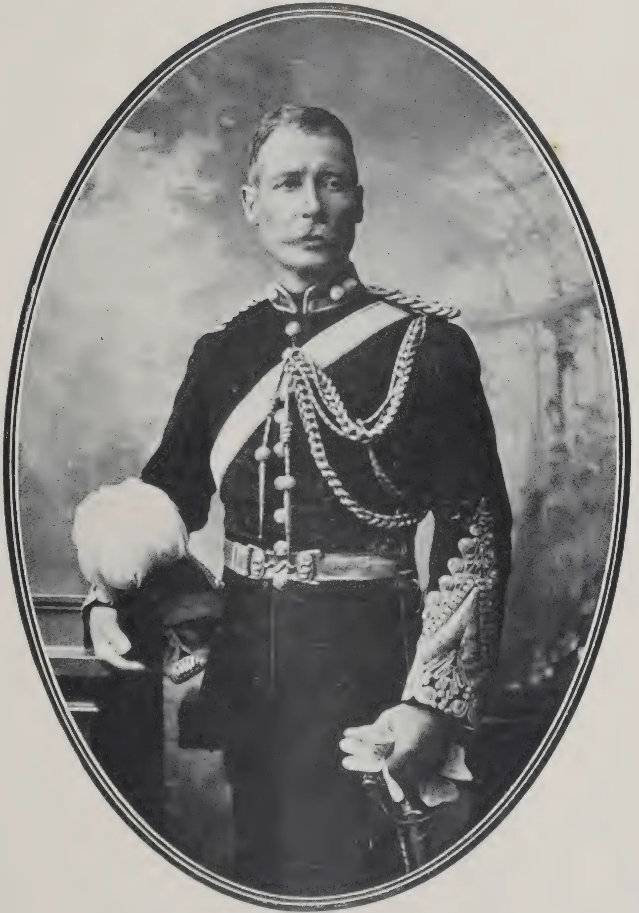
A black and white oval-framed portrait of a man in a formal military uniform. He is standing, facing slightly to the right but looking towards the camera. He has a mustache and short hair. His uniform is dark with a high collar, a white sash across the chest, and several rows of braided cords (horns) on the shoulders. He wears a wide belt with a large buckle. His right hand is resting on a white, fluffy object, possibly a hat or a piece of equipment. His left hand is held in front of him, showing a white glove. The background is a soft, mottled studio backdrop.COL. W. V. LEGGE, F.Z.S., F.R.G.S., &C.
AUTHOR OF THE "BIRDS OF CEYLON."
The exposure of the wood, where the bark has been removed, introduces other factors endangering the life of the tree. The supply of water for the upper part of the tree has all to pass through the wood at the level of the ring-gap, and from several causes the conducting power of this wood tends to become more and more curtailed until the requisite amount of water can no longer pass through it. Owing to the surface of the wood being in contact with the air, the outer layers of wood become dry and useless for conduction. This alone may soon render the water-supply insufficient in species with only a thin zone of sapwood, since true heart-wood is incapable of conducting the transpiration stream. On the other hand "sapwood trees" (i.e., those which form little or no heart-wood) can usually survive the operation of ringing for a long time, e.g. several years. Among these the progressive drying of the wood from without inwards may finally restrict the area of functional wood until it reaches the critical point, or this result may be accelerated by a fungal disease attacking the wood and rendering some of it useless. Again, in trees which form heart-wood, the production of this accounts for the loss of a certain proportion of the wood available for conduction. While no new wood is added at the level of ringing, and functional wood is lost externally by drying, there is a further loss internally owing to the yearly conversion of some sap-wood into heart-wood.
To summarise, bark-ringing eventually causes the death of the upper part of the tree, because the water supply becomes inadequate, either through loss of conductivity in the wood at the level of the wound, or through deficiency of absorption by the roots.
An interesting example of bark-ringing may be quoted here. A forked pine-tree was chosen by HARTIG for an experiment. The tree was 118 years old, and the trunk was forked at m. above the soil into two approximately equal stems. The bark was peeled off all round one of these stems at about 3 m. above the point of forking. When the tree was felled 18 years after this ringing operation had been performed, it was seen that the crowns of both stems were still sound, but that the foliage of the ringed stem was thinner and weaker than that of the other stem. It was also found that growth in thickness had practically ceased after ringing on the side of the trunk situated below the ringed branch. The reason for the long-continued life of the ringed stem is that the roots attached to the base of the trunk on the side below the intact stem had received normal nourishment, and therefore, having remained healthy, had been able to supply the trunk with a good supply of water.
Wood-ringing.—The experiments in wood-ringing made by STRASBURGER and others show that, though the inner (older) layers of sap-wood can conduct water for the transpiration current, the heart-wood cannot do so. The first of the following cases serves as an example of a sap-wood tree, the remainder being "heart-wood trees" (i.e., trees which form heart-wood).
Two beech-trees 150 years old had trunks 32 cm. in diameter. These were ring-cut to a depth of 8 cm., and the trees still bore foliage a year and a half later.
The trunk of an oak 50 years old was ring-cut into the heart-wood, and its foliage withered in a few days. Another oak of the same age, which was cut similarly but not quite through the sap-wood, did not wither for some weeks.
The trunk having been cut to the heart-wood in a tree of Prunus avium, and in a Robinia, wilting of the leaves took place in two days in the first case, and in a few hours in the second.
Various other experiments and observations have been made in bark and wood-ringing, but enough has been quoted to illustrate the nature of the results obtained in this way.
C. D. 328[OCTOBER, 1914.The Sanskrit name Sanam occurs in ancient works like Manu's Code in which sunn hemp fibre is said to be appropriate for making the sacred thread for the Kshatriyas just as cotton is appropriate to the Brahmins and wool to the Vaisyas. The Sanskrit name is apparently the root of all vernacular names of the plant, except one, used in the Presidency, of the Latin name Cannabis applied to a different fibre plant (Ganga) and the English name hemp. The expression sunn hemp is tautological, "hemp" being a transformation of "Sanam." "Sanam" changed into Sanap (m and p being both labials), Sanap assumed the form "hanf" and eventually "hemp." The plant is called Sanappu in all the Tamil districts except Tinnevelly, where the name is corrupted into Sadambu. The Tulu name tashambu appears to be a similar corruption of the Sanskrit name. The plant is called Zanumu in Telugu and Senabu in Canarese. The Uriya name soni is but a slight corruption of the Sanskrit Sanam. Strange to say, the Malayan name Wuckoo alone has no connection with the Sanskrit name. Wuckoo literally means "border" being cognate with the Tamil packam and particularly applied to the sunn hemp grown on the borders of Travancore, and is elsewhere in the Malayalam country applied to the Dekkani (Hibiscus cannabinus) as well as the sunn hemp indiscriminately. The first part of the botanical name means rattle, as the ripe pods with the seeds lying loosely in them, make a grating noise, when shaken. Juncea refers to the "rush-like" stalks of the plant. Strange to say, the Telugu word "Zanuma" has now become generic in the Telugu tracts of Ganjam and Vizagapatam, sunn hemp proper being called there Katta Zanumu (katta meaning stick) and the Dekkani hemp "Gogu Zanumu."
The crop is fit for harvest in three months after sowing and does well on poor or sandy soil. Its cultivation is inexpensive, for it needs neither interculture nor manure. The bast separates easily when retting is thorough. By the agency of the bacteria dwelling in its root tubercles, it assimilates the nitrogen of the soil air and fertilizes the soil with that precious plant food as well as with its sheddings.
Loamy soil of mixed black and red colour is the best, loamy black soil comes next, and then loamy red soil. The crop grows fairly well even on the sandy soils of the coast. On sandy soils the crop grows tall and has comparatively long roots. Throughout the Presidency, poor soils are as a rule selected. The crop is believed in the Gôdâveri district to be predisposed to disease if cultivated on a fertile soil. Above all, the crop needs a high and well-drained situation. In the Gôdâveri, Kistna, Guntúr, and Tinnevelly districts, the bulk of the crop is cultivated on wet land. Elsewhere the crop is as a rule irrigated whether cultivated on wet or other land. In the Ganjam and Vizagapatam districts, the crop is cultivated on unirrigated land and so also the crop sown to a trifling extent mixed with other crops in the Deccan districts and the upland taluks of the Guntúr district.
On wet land, sunn hemp alternates with paddy in the Tinnevelly district; sometimes it follows turmeric. In the Gôdâveri district, it is cultivated as the first crop and is followed by tobacco, horsegram, Bengal gram, Jonna and paira gingelly. In the Erode taluk, sunn hemp comes after the cereal crop of arisi—cumbu and adar cholam (cadder crop). As a rule sunn hemp is not cultivated on the same land in the Tinnevelly district except at intervals of three days.
OCTOBER, 1914.]329The seed rate is the heaviest in Tinnevelly where it is the same as for paddy, viz., 1 kottai or 112 Madras measures of seed for 1 kottai of land, viz., 1.68 acres, that is nearly 70 Madras measures per acre. In the Bhaváni taluk, Coimbatore, for instance in Dalavaipalayam, the seed rate is 14 vallams or about 33 Madras measures per acre. In the Gódáveri and Kistna deltas 20 to 30 seers (80 tolas rice contents) or about 14 to 20 Madras measures and in the Ganjám and Vizagapatam districts, about 60 seers or 40 Madras measures of seed are sown. On dry lands in the upland taluks of the Guntúr district and in the Kurnool and Ceded districts, about 1 or 2 giddas (1 gidda pint) of seed are sown mixed with 1 manedu ( pints) of Jonna and various other seeds. The seed rate for the summer crop is much smaller than for the rainy weather crop.
In the Tinnevelly district the method of sowing and covering the seed is very peculiar. After the soil has been ploughed and watered as said before, it is sown broadcast and then while water is standing on the land levelled by a plank of palmyra or coconut wood drawn by two men, each holding a rope fastened near one end of the plank. On land that has been dug in the process of harvesting turmeric in the Tinnevelly district, the land is ploughed once if it has settled and levelled by the plank drawn by a pair of bullocks, without being irrigated at all. In other parts of the country, the seed is sown on ploughed land and covered by land being ploughed once or twice or by being brush-harrowed. In the Ganjám and Vizagapatam districts, seed is covered by working the ladder harrow called Moi, in Uriya. In Tinnevelly, if seed is sown on well-ploughed land, the levelling plank is dispensed with. In Tinnevelly the crop is so densely sown that the plants are only inches to 3 inches apart both ways, and an acre carries about 7 lacs of plants. It has been observed that the sunn hemp stalks on a sandy soil are as tall and thin as those of a crop sown twice as densely on a more fertile loamy soil in Tinnevelly. The denser and thinner the stalks are over a given area, the greater of course is the quantity of bast issue.
The object of sowing the crop so densely as stated above is chiefly to induce the plants to grow erect without branching. At the points where the stalk branches off, there would be breach of continuity of fibre which would thereby be short.
In the upland taluks of the Guntúr district, chiefly Vinukonda taluk sunn hemp seed is drilled in 9 to 12 rows by the ryots amidst a Jonna (Andropogon sorghum) or Sajja (Pennisetum typhoideum). The seed rate in such cases is two manikalu (294 cubic inches or nearly 3 Madras measures) per acre. This is the only instance of sunn hemp seed being drilled. Two hundred plants thus grown make a bundle of the same size as 30 plants growing sparsely.
The crop is watered after the land is ploughed and before seed is sown in the Tinnevelly district, and after the levelling board has been worked, the water is drained off. The crop is irrigated ten days afterwards. Thenceforward the irrigation is at intervals of about a fortnight in the absence of rain and if the weather be cool, watering once a month would suffice.
The irrigated crop is generally harvested in three months after sowing. Sometimes the flowers drop off and then the crop is kept till it flowers again and seeds. It then becomes a four months' crop. The unirrigated crop very sparsely mixed with Jonna and other crops on dry land in the Deccan districts and the upland taluks of the Guntúr district is harvested five months after sowing.
330[OCTOBER, 1914.It is very strange that statements made by such great authors as DR. ROYLE and COL. DRURY regarding the general method of harvesting sunn hemp should be found to be untrue. DR. ROYLE says "The Telugu people consider the fibre to be in the greatest perfection when in flower, when it is pulled up by the root."
DRURY says: "The mode of preparation differs from that of other fibres in one particular especially, the plant being pulled up by the root and not cut." These statements are quite true in regard to "Gogu" or Dekkani hemp (Hibiscus cannabinus), but not at all in regard to sunn hemp. Nowhere in the Gódâveri and Kistna deltas is sunn hemp pulled by the root. In the Ganjâm and Vizagapatam districts, the crop on soils of loose texture is, indeed, pulled up by the root, but the butt ends are afterwards cut. It is only in some parts on the sandy soils of the West Coast that the crop is pulled by the root and retted therewith.
After the stalks are dried and the seed threshed out, the bundles are stacked like those of cholam straw in the shape of a gabled roof in all parts of the Presidency except the Ganjâm, Vizagapatam, Gódâveri and Kistna districts, where the stalks are steeped in water immediately after harvest. In these places the bundles are so piled that their butts and the tapering ends in any two consecutive courses of the stack are alternately outwards and inwards, so that the surface of the pile may be even. The gable of the stack consists of the bundles laid longitudinally and the whole is covered with stalks from which fibre has been already extracted. The roofing bundles are made to project as to form eaves. Care is taken that the bundles are not wetted by rain. A number of bundles are removed from one end of the stack from time to time when required for fibre extraction in such a manner that the remaining bundles at that end may not be exposed to rain. The bundles in the whole stack are removed in the course of a year and fibre manufactured therefrom.
The sunn hemp stalks are kept in the stack for at least a fortnight, lest the fibre should be weak and not for more than a year. A Shanappan provides himself with a sufficient supply of stalks to give himself and other members of his family including the females sufficient work throughout the year in the way of extracting the fibre and weaving fabrics; and the Perikivandlu, of the Northern Circas, similarly provide themselves with a sufficient supply of fibre. There is a very large demand for sunn hemp bags for exporting the hill produce of Palkonda to Párvatipuram. It is the business of many families of Perikivandlu who reside in Kandisa, Neelavalasa, Tambadapalli, Tunivada, etc., to meet demand for sunn hemp bags.
As said before, the stalks of sunn hemp are steeped in water in the Northern Circas immediately after the harvesting of the crop. In other parts of the country small quantities of stalks are retted, as required, from time to time throughout the year. The sunn hemp bundles are untied and spread like a mat being fastened with palmyra fibre, about 9 inches thick. Across the stalks at both ends of the layer, stalks are laid and bound to the plants below by palmyra fibre. Turf is then placed over the whole and over the turf sandy earth is put so as to keep the stalks well down in water.
In the Tinnevelly district, tanks fed from the Tambraparni channels are used for retting purposes. The superiority of the Tinnevelly fibre is probably due to the superiority of the water in which the stalks are retted. The water is good as compared with the quality of the water generally available elsewhere. In the Coimbatore district and other parts of the country pools of stagnant rain water are used for steeping purposes. The Gundlakama
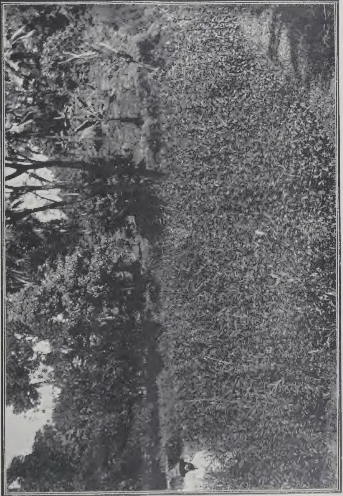
A field of sun hemp (Cratalea juncea) at Uduwawela (Kandy district) grown by MR. W. MOLEGODE.
Agricultural Instructor, between two paddy crops.
Reaped September 17, 1914
Sown July 24, 1914
[Faint page: no legible print of its own could be verified; text withheld (stage 4 review list)]
This image is a scan of a blank page. The background is a uniform light beige or off-white color. There are a few very small, faint dark spots scattered across the surface, which appear to be scanning artifacts or dust particles. A slightly more prominent dark speck is visible in the upper right quadrant. The overall texture is smooth but has the slight graininess of a scanned document. OCTOBER, 1914.]331water is highly esteemed for retting sunn hemp stalks. The stalks should not be retted under the shade of overhanging branches of trees but should be well exposed to sun. If the weather be still and hot, the retting is complete in four days. This is the case generally with the summer crop. The older the crop is, the longer does it need to be steeped. The thicker portions of the stalks need to be steeped longer than the thinner portions, so that if the thicker portions are steeped long enough, the thinner portions are apt to be injured by over-steeping. It is chiefly in Hingallyghattu, Aska and other villages in the Ganjám district that the very rational practice of stooking the plants on their butt ends so that only about the lower third of their length may be immersed in water for about two or three days and laying the plants horizontally afterwards so that the plants may be completely immersed in water prevails. This practice is worth adoption in other parts of the country. DR. ROSEBURGH found by experiments that with warm water at a temperature of 80 degrees F., the outturn could be increased by 20 per cent. Since the Shanappars ret very small quantities of sunn hemp stalks at a time, which do not occupy more than 16 or 20 square feet of space, it is worth while to determine by experiment whether the retting of the stalks may not be very much expedited at moderate cost by covering the top of the reservoir with panelled glass which would retain the heat below. The stalks of the crop harvested in September or October and the stalks of the crop grown on dry land and harvested in December or early in January take eight days or more to be sufficiently retted.
If fibre separates easily when the stalks are rubbed across with the fingers, it is concluded that the stalks have sufficiently retted.
In the Gódáveri district, the fishermen called Pallivendlu extract fibre of superior quality by steeping the stalks one day longer than the Perikivandlu would do and beat the bundles of stalks on water as is done in Tinnevelly and Coimbatore. Very coarse fibre called mutakanara is extracted from insufficiently retted stalks. The fibre is mixed with a very large proportion of pieces of sunn hemp sticks. Three sorts of fibre are met with in the Gódáveri district, viz., Mutaka, periki, and palli, the last being the best and quite free from sticks. In the Kistna and Gódáveri deltas except in the case of pallinara the retted sunn hemp stalks are not beaten on water. In the Tamil and the Ganjám and Vizagapatam districts, when the stalks are found to be sufficiently retted, each bundle is held in both hands at first and is beaten on the water surface at the other end, generally six times, the bundle being twirled about so that every part may be beaten. The beaten end is then held in both hands and the other end is now beaten on water as said before. The bundles of plants thus beaten are stooked against each other in regular rows in order that the water may drain off and the plants may dry a little but not much. Each stalk is then taken in hand, an inch or two of the apical portion of the pith is broken and the mass of fibre in that portion being held firmly in one hand, the pith is removed with the other hand.
In the Gódáveri and Kistna deltas, as soon as the stalks are found to be sufficiently retted, a whole bundle is broken near one end and the fragments of the pith or boon or shore as it is technically called on that side are removed by one sweep of hand, the man applies his right knee against the fractured ends of the stalk and by drawing towards himself the mass of fibre of the pieces already thrown away, the remaining long fragments of the boon are expeditiously detached. One man can thus remove in half a day the boons from 1,000 small bundles 1 foot in girth. One manika ( pints) of grain is paid for reaping plants which would make 100 small bundles and the same is the rate of wages for removing the boons from 100 bundles. In some villages near Aska, the boon is detached in a very interesting and skilful manner. By manipulation with the fingers the fibrous tissue is first
332[OCTOBER, 1914.separated from both ends of the stalks in a handful, one man then firmly holds the fibrous tissue alone either at the butt or apical end and another man, holding the ends of the boons, exerts a strong pull whereby the boons are detached. The fibrous tissue is then squeezed between the palms of the hand or on a stone so as to separate the fibres which are then hung up to dry. When the fibre has fairly dried it is twisted and trodden upon in Tinnevelly and Coimbatore by women so as to free it of small stones, bits of sticks, etc. The women hold a pial for support while treading on the fibre. The twists are then hung up and struck with a flat bar of wood so as to free it further from dust, sticks, etc. The twists are then folded so as to exclude air as much as possible and kept till required for manufacture of some sort.
To ret five cart-loads of 50 large bundles of sunnhemp which represent the produce of 1.68 acres, 50 women and 50 men are required.
In the Tinnevelly district, a fair outturn of the crop is represented by five cart-loads or 50 bundles of stalks which would produce about 70 tulams or 1,400 lb. of fibre from one kottai or 1.68 acres of land, which is equivalent to about 845 lb. of fibre per acre. One tulam of fibre sells for one rupee. Therefore 845 or about 42 tulams are worth Rs. 42. The rainy weather crop yields a larger outturn of fibre than the summer crop which yield only about four cart-loads of stalks.
In Dalavaipalayam 40 head-loads consisting of 4,000 handfuls of stalks are obtained from an acre. The value of this at 8 annas per head-load is Rs. 20. In the Vinukonda and other places where sunnhemp is grown on unirrigated land, sparsley mixed with Jonna and other crops, only about one maund of sunnhemp fibre is produced per acre, two maunds being obtained per acre from sunnhemp which is drilled. In the Gódâveri and Kistna deltas the outturn of the fibre per acre is 20 to 30 maunds of 25 lb. each. In the Tanuku taluk 100 bushels of stalks six feet in girth are obtained per acre. The outturn of pallinara is not more than about 500 lb. per acre. The outturn in the Ganjâm and Vizagapatam districts, where the crop is unirrigated, is 100 visses or about 350 lb. of fibre per acre.
The outturn of seed per acre is as follows :—
| Tinnevelly | ... | ... | 250 Madras measures. |
| Coimbatore | ... | ... | 2 modas or 192 Coimbatore pukka measures = about 230 Madras measures. |
| Kurnool and upland taluks of the Guntúr district |
} | 20 manikas or about 28 Madras measures. | |
| Ganjâm or Vizagapatam | ... | ... | 20 nowthies, or 240 seers = 160 Madras measures. |
The price of one tulam or 800 tolas or 20 lb. of fibre is 1 or 1¼ rupee or the price per candy is about Rs. 31. In the Gódâveri and Kistna deltas, the price is Rs. 30 to Rs. 50 per candy.
The price of seed in Tinnevelly is Rs. 12 to 15 per kottai of 112 Madras measures, that is, about 7½ measures per rupee.
In Coimbatore, the price is eight vallams per rupee, that is, about 1 an a per Madras measure. In the Gódâveri district the price is 3 kunchams or 12 seers or about 8 Madras measures per rupee, that is, 2 annas per measure.—
C. K. SUBBA RAO IN BULLETIN No. 59 MADRAS DEPARTMENT OF AGRICULTURE.
The preparation of sardine oil and guano forms an important part of the experimental work of the Madras Government Fishery Department. Hitherto such work has been carried on at the Cannanore Experimental Station, but
OCTOBER, 1914.]333during 1911-12 it was transferred to the Experimental Station at Tanur, where fish are usually more abundant. At first crude oil only was prepared, but as there is a better market for the finer grades of fish oil, new machinery has been installed at Tanur for producing pale-coloured oil, for separating the "stearin," and for refining the oil, whilst deodorising experiments are also to be conducted there. The efforts of the Department to create a local fish-oil industry have been highly successful; in 1909 there was only one private factory, whilst at the beginning of the 1911-12 season between forty and fifty small factories were producing crude brown oil in Malabar and South Canara, and it seems probable that factories will also be started in Cochin and Travancore.
As the supply of fish along the coast fluctuates considerably, and the amount of oil in the fish varies in different seasons, it is suggested that a large number of small factories is preferable to a small number of central factories. Attempts have also been made to devise methods suitable for use by single native families, in order to establish a kind of cottage industry.
In the small factories where crude brown oil is being produced the methods followed are of a simple kind. The fish are boiled in open pans, holding one-half or two-thirds of a ton, and the resulting mass is placed in coarse coir bags and pressed in simple screw presses. The pressed cakes of guano are broken up and placed on mats in the sun to dry. The crude oil is stated to fetch Rs. 160 (approximately £10. 10s.) per ton of about 250 gallons at the factory, the middleman supplying the casks and bearing the cost of transport; the guano realises about Rs. 70 (approximately £4. 10s.) per ton.
Several samples of the sardine oil and guano made in Madras have been received recently at the Imperial Institute from the Madras Government Fishery Department, and as the results of their examination are of general interest, they are now published.
The following samples of fish guano were received along with samples Nos. 9 and 10 above:
No. 1. "Fish guano prepared at the Government Fisheries Stations, South Malabar."
No. 2. "Fish guano prepared at the Government Experimental Station at Tanur, South Malabar;" (a) "Ordinary guano," (b) "Guano from large oily sardine."
The guanos consisted of fragments of the bones, flesh, and scales of small fish. They were examined with the following results:
TABLE I.
| No. 1. | No. 2a. | No. 2b. | |
|---|---|---|---|
| Per cent. | Per cent. | Per cent. | |
| Moisture ... .. | 7.86 | 8.82 | 8.68 |
| Crude proteins ... .. | 49.22 | 53.65 | 56.40 |
| Consisting of True proteins | 43.75 | 45.41 | 49.06 |
| Other nitrogenous substances | 5.47 | 8.24 | 7.34 |
| Fat ... .. | 6.69 | 5.38 | 8.52 |
| Other organic matter ... .. | 7.37 | 4.73 | 5.01 |
| Ash ... .. | 28.86 | 27.42 | 21.39 |
| The ash contained: | |||
| Lime CaO | 33.10 | 42.32 | 42.12 |
| Potash K2O | 0.85 | 2.17 | 2.19 |
| Phosphoric anhydride P2O5 | 29.52 | 35.32 | 35.56 |
The following table shows the percentages of lime, nitrogen, phosphoric anhydride, fat and water present in these three samples of fish guano from South Malabar, compared with the corresponding figures recorded for fish manure from other sources:
TABLE II.| Lime CaO. |
Nitrogen N. |
Phosphoric anhydride. P2O5 |
Fat. | Water. | |
|---|---|---|---|---|---|
| No. 1 ... | 9.6 | 7.8 | 8.5 | 6.69 | 7.86 |
| No. 2a ... | 11.6 | 8.6 | 9.7 | 5.38 | 8.82 |
| No. 2b ... | 9.0 | 9.0 | 7.6 | 8.52 | 8.68 |
| Fish manure from refuse (United Kingdom) |
— | 7.8 | 8.1 | — | 18.9 |
| Dried menhaden scrap (U.S.A.) |
— | 8.0 | 8.5 | — | Not exceeding 12.0 |
| Norwegian cod heads and bones. |
— | 8.0 | 14.9 | — | 13.0 |
| Norwegian whale manure | 16.5 | 7.6 | 13.4 | — | 5.3 |
| Dried codfish skins & bones | — | 8 to 9 | 10 to 12 | — | 5 to 6 |
| Canadian dogfish scrap | — | 8.8 | 7.7 | 16.6 | 5.5 |
| Brittany fish manure | — | 6.5 | 13.1 | — | 5.0 |
The commercial fish meal sold in Europe as food for cattle and pigs contains the following proportions of the most important constituents:—
TABLE III.| Proteins. | Phosphoric anhydride. |
Fat. | |
|---|---|---|---|
| Per cent. | Per cent. | Per cent. | |
| English meal from fish refuse ... | 50 to 65 | 6.6 to 8.5 | 3 to 6 |
| Norwegian codling meal ... | 50 to 60 | 11.3 to 13.1 | 1 to 2 |
| Herring meal ... | 60 to 70 | 3.7 to 4.7 | 10 to 12 |
A comparison of the figures given in the table above for well-known commercial fish manures with those recorded for the present samples of fish guano from South Malabar shows that the latter contain about the same percentage of nitrogen as the other manures and an average amount of phosphoric anhydride, and there is therefore no doubt that they would be readily saleable as fish manures.
These Indian fish guanos are not quite so rich in proteins as the fish meals mentioned in Table II. They contain, however, average quantities of phosphoric anhydride and fat, and would no doubt be readily saleable for the preparation of feeding-stuffs of the fish-meal type, provided they are prepared from fresh fish and are kept in good condition.—IMPERIAL INSTITUTE BULLETIN.
OCTOBER, 1914.]335F. B. GUTHRIE.
Although a certain amount of salt is a necessary adjunct to the food both of human beings and of animals, certain kinds of animals are susceptible to it when supplied in excessive quantities.
In the case of pigs and sheep, 4 to 8 ounces is said to have produced poisoning. In larger quantities it has proved fatal to horses, and even to cattle. Fowls would appear to be particularly susceptible. SUFFRAN (see LANDER) has conducted experiments with fowls, and finds that 4 grammes per kilo body-weight (about 80 grains for each pound body-weight) are fatal if injected in solution into the crop. Several instances have recently been brought under the notice of the Department in which the deaths of poultry and pigs have been traced to an excessive amount of salt in the food. Quite recently the body of a fowl which had died suddenly was forwarded to the Department. On examination the organs were found to be healthy, and little abnormality was noticed except that the veins in the neighbourhood of the throat were suffused, and there was a slimy exudation in the mouth, resembling the appearance seen in croup. The crop was distended and the contents, which weighed 50 grammes, were apparently of the usual nature, consisting of grains of wheat, straw, plant-residues, and pollard or bread.
On examination it was found that the 50 grammes of crop contents contained 2.42 grammes of common salt, or 4.84 per cent.
About a year ago several cases of sudden deaths among poultry were reported, which were traced to their having been given pollard which was highly impregnated with salt.
Several samples of pollard were sent for examination, which contained excessive and varying amounts of salt. One sample contained no less than 32.2 per cent. by weight of common salt. In this case salt crystals were easily noticeable, and could be picked out by hand or separated by blowing away the pollard.
Other samples contained varying amounts, down to 5.8 per cent. salt. In all these cases fatal effects had resulted, for which no other cause could be given except the presence of excessive amount of salt.
In another instance a case of poisoning of pigs was reported which remained unexplained until the food supplied was examined. The food complained of was a mixture of pollard and barley-meal. A tin of the mixture showed 11.66 per cent, common salt. On separating the pollard from the barley-meal, the former was found to contain 18.3 per cent. salt.
The source of this pollard was never satisfactorily explained. Whether by accident or intentionally, there appears to have been at the time a considerable amount of this salted pollard on the market. It appears to have disappeared by now, and isolated instances, like the first one reported in this article, are due to the accidental admixture of salt with the food.
The toxic effect of salt appears to be due to its action on the muscles, so that the animal becomes unable to walk and, finally, to stand. Death is caused by asphyxia, due to loss of power in the respiratory muscles.
It is hoped that the publication of the above notes may serve to keep stock-owners, and especially poultry breeders and pig-raisers on their guard against the danger of too great an admixture of common salt in the food.
—AGRICULTURAL GAZETTE OF N. S. W.
336[OCTOBER, 1914.On the Board MR. L. B. BOGAHALANDE, R.M., was nominated by HIS EXCELLENCY the President to fill the place of HULUGALLE ADIGAR whose retirement is regretted.
The Society deplores the loss of one of its most prominent and useful members by the death of MR. JOHN FERGUSON, who did much solid work on the Board during its early days, and will always be remembered as the founder of the TROPICAL AGRICULTURIST.
According to the resolution passed at the Board meeting of the 3rd February, 1914, the Local subscription to the Society will from 1st January next be Rs. 10 and the Foreign subscription Rs. 15 (£1) per annum.
The Society has now completed the first decade of its existence. It was founded by SIR HENRY BLAKE in 1904, and fostered by his successor SIR HENRY MCCALLUM.
Beginning with less than 100 members, its roll of subscribers has now swelled to 1,881.
Its first Secretary was MR. E. B. DENHAM, C.C.S., who carried out the preliminary organisation work in an admirable manner. He was succeeded in 1906 by MR. A. N. GALBRAITH, also of the Civil Service, who put in six months of solid work in extending the operations of the Society. He was followed by MR. T. A. CAREY, who acted for a short period of two months till the present Secretary took charge.
The correspondence of the office has increased enormously and the letters that come from all parts of the world, while giving much additional work to the staff, are also making that work more interesting. Many of these communications are of an encouraging nature, indicating as they do that the Society (chiefly through the medium of the TROPICAL AGRICULTURIST) has formed a link with residents in far distant lands, who frequently write not as strangers seeking information, but as co-workers in the common cause of agricultural development.
In conclusion the Society would record its gratitude for the assistance it continues to receive from Government, and express its thanks to
Diyatalawa Mills, Vauxhall Street, Slave Island.
Fowls Rs. 18, 15, 10.50, and Rs. 9 per dozen. Ducks Rs. 15, Geese Rs. 60, Turkey cocks Rs. 120, Turkey-hens Rs. 90 per dozen
Guinea fowls Rs. 48, Pigeons Rs. 6, Partridges Rs. 6, per dozen
Quails to order.
Pigs, Porkers, cts. 35 per lb. live weight. Sucklings Rs. 7.50, 5 and 3.
Eggs, fresh, 75 cts. per dozen.
Telephone 1087 and 285.
Telegrams: Wally, Colombo
Usual discount to the TRADE.
OCTOBER, 1914.]337HIS EXCELLENCY THE GOVERNOR for presiding over the meetings of the Board and in other ways giving practical proof of the interest he takes in all matters connected with the improvement of agriculture.
To the Director of Agriculture, in his capacity of Organising Vice-President, the Secretary is greatly beholden for much valuable advice.—C. A. S. REPORT.
The TROPICAL AGRICULTURIST has during the past year been considerably improved and enlarged and, to judge from communications received from local and foreign correspondents, the change has been greatly appreciated and is calculated to attract more subscribers. The contributions by members of the Agricultural Department greatly enhance the value of the publication. MR. PETCH has been acting as Editor since May last.
That the GOVIKAM SANGARAWA (Sinhalese Agricultural Magazine) is materially helping to disseminate useful information in the villages will be gathered from the fact that no less than 3,300 copies are distributed monthly. I am much indebted to MR. N. WICKREMARATNE in the conduct of this publication.
The KAMAL THOLIL VELAKKAM (Tamil Agricultural Magazine) edited for the Society by MR. CHELLIAH H. COOKE is also gaining in popularity, though its cultivation is still comparatively small.
The latest issued leaflets treat on the following subjects :—
Sorghum as a Fodder Crop
Castor Oil Plant
Dry Farming
Plantain Disease
A report made by the Secretary on the All-India Agricultural Conference held at Coimbatore last December, and the lessons to be learnt therefrom, has been published.
In view of the subscription being raised from next year, it was decided to issue free to all subscribers the Year Book of the Society in an enlarged and improved form. This annual, which will be ready before the end of the year, is being contributed to by the staff of the Agricultural Department and others qualified to deal with specific subjects, and should therefore prove a useful handbook of condensed information on agricultural matters. It will also furnish much general information which is constantly in demand.
The Secretary's Junior Agricultural Reader (in Sinhalese) published at the Government Press is now ready and will be used in Government Schools. The Senior Agricultural Reader is just going through the press.—C. A. S. REPORT.
338
[OCTOBER 1914.
MARKET RATES FOR TROPICAL PRODUCTS.
(From Lewis & Peat's Latest Monthly Prices Current.)
| QUALITY. | Quotations. | QUALITY. | QUOTATION | ||
|---|---|---|---|---|---|
| ALCOES, Socotrine cwt. | Fair to fine | 40/ a 50/ | INDIA RUBBER lb. | Common to good | 9d a 1/3 |
| Zanzibar & Hepatic " | Common to good | 40/ a 70/ | Borneo " | Good to fine red | 1/3 a 1/6 |
| ARROWROOT (Natal) lb. | Fair to fine | 5d | Java " | Low white to prime red | 9d a 1/4 |
| BEE'S WAX cwt. | Penang " | Fair to fine red ball | 1/9 a 2/1 | ||
| Zanzibar Yellow " | Slightly drossy to fair | £7 10/ a £7 15/ | Mozambique " | Sausage, fair to good | 1/9 a 2 |
| East Indian, bleached " | Fair to good | £8 10 a £8 12 6 | Nyassaland " | Fair to fine ball | 1/9 a 2 |
| " unbleached " | Dark to good genuine | £6 5/ a £7 | Madagascar " | Fr to fine pinky & white | 1/4 a 1/6 |
| Madagascar " | Dark to good palish | £7 15/ a £8 2/6 | Majunga & blk coated | 1/ a 1/2 | |
| CAMPHOR, Japan lb. | Refined | 1/7 a 1/8 | Niggers, low to good | 6d a 1/6 | |
| China cwt. | Fair average quality | 155/ | Ordinary to fine ball | 1/4 a 1/7 | |
| CARDAMOMS, Tuticorin | Good to fine bold | 5/9 a 6/ | New Guinea " | Shipping mid to gd. violet | 3s 3d a 3s 8d |
| Malabar, Tellicherry " | Middling lean | 4/8 a 5/4 | INDIGO, E.I. Bengal | Consuming mid to gd. | 2s 9d a 3s 2d |
| Calicut " | Good to fine bold | 5/9 a 6/3 | Ordinary to middling | 2s 4d a 2s 9d | |
| Mangalore " | Brownish | 3/9 a 5/3 | Mid. to good Kurpah | 1s 11d a 2s 5d | |
| Ceylon, Mysore " | Med Brown to good bold | 4/ a 6/4 | Low to ordinary | 1s 6d a 1s 9d | |
| Malabar " | Small fair to fine plump | 4/ a 6/4 | Mid. to fine Madras | 1/11 a 2/9 | |
| Seeds, E. I & Ceylon " | Fair to good | 3/2 a 3/4 | MACE, Bombay & Penang | Pale reddish to fine | 2/4 a 2/6 |
| Ceylon "Long Wild" " | Fair to good | 4/ a 4/3 | per lb. | Ordinary to fair | 2 a 2/2 |
| CASTOR OIL, Calcutta " | Shelly to good | 2/3 a 3/6 nom. | Java " | " good pale | 2/1 a 2/4 |
| CHILLIES, Zanzibar cwt. | Good 2nds | 3/3d | Bombay " | 1/ | |
| Japan " | Dull to fine bright | 50/ a 60/ | NUTMEGS,-- lb. | Wild | |
| CINCHONA BARK,--lb. | Fair bright small | 60/ a 70/ | Singapore & Penang " | 64's to 57's | 9 1/2d a 10 1/2d |
| Ceylon " | Crown, Renewed | 3 1/2 d a 7 d | 80's | 7 1/2d | |
| Red, Org. Stem | 2d a 6d | 110's | 6 1/2d | ||
| Red, Org. Stem | 1 1/2 d a 4 1/2d | ||||
| Red, Renewed | 3d a 5 1/2d | ||||
| Red, Root | 1 1/2 d a 4d | NUTS, ARECA cwt. | Ordinary to fair fresh | 17/6 a 20 | |
| CINNAMON, Ceylon 1sts. | Good to fine quill | 1/3 a 1/9 | NUX VOMICA, Cochin | Ordinary to good | 13/6 a 15 |
| per lb. 2nds. | " " | 1/2 a 1/7 | per cwt. Bengal | " " | 12/ |
| 3rds. | " " | 1/1 a 1/6 | Madras | " " | 12/ a 13 |
| 4ths. | " " | 1/ a 1/3 | |||
| Chips, Fair to fine bold | 2d a 4d | OIL OF ANISEED lb. | Fair merchantable | 5/2 | |
| CLOVES, Penang lb. | Dull to fine bright pkd. | 1/ a 1/2 | CASSIA " | According to analysis | 2/8 a 2/11 |
| Amboyna " | Dull to fine | 10d a 10 1/2d | LEMONGRASS oz. | Good flavour & colour | 2/d |
| Zanzibar " | Fair and fine bright | 5 1/2 d a 6 1/2 d | NUTMEG " | Dingy to white | 1 1/2 d a 1 3/4 d |
| Madagascar " | Fair | 7d | CINNAMON " | Ordinary to fair sweet | 4d a 1s 5d |
| Stems " | Fair | 2d | CITRONELLE lb. | Bright & good flavour | 1/6 1/2 |
| COFFEE | ORCHELLA WEED--cwt | ||||
| Ceylon Plantation cwt. | Medium to bold | Nominal | Ceylon " | Fair | 10/6 |
| Liberian " | Fair to bold | 63/ a 80/ | Madagascar " | Fair | 10/6 |
| COCOA, Ceylon Plant. " | Special Marks | 81/ a 88/6 | Zanzibar " | Fair | 10/6 |
| Red to good | 73/ a 80/6 | PEPPER--(Black) lb. | |||
| Native Estate " | Ordinary to red | 42/ a 68/ | Alleppy & Tellicherry | Fair | 5d |
| Java and Celebes " | Small to good red | 30s a 93s | Ceylon " | Fair to fine bold heavy | 5d a 5 1/2d |
| COLOMBO ROOT " | Middling to good | 15/ a 22/6 | Singapore " | Fair | 4 1/2d |
| CROTON SEEDS, sifted, " | Dull to fair | 42/6 a 47/6 | Acheen & W. C. Penang | Dull to fine | 5d a 5 1/2d |
| CUBEBS " | Ord. stalky to good | 130/ a 150/ | (White) Singapore " | Fair to fine | 8 1/2 d a 8 3/4 d |
| GINGER, Bengal, rough " | Fair | 19/ | Siam " | Fair | 8 1/2 d |
| Calicut, Cut A " | Medium to fine bold | 75/ a 85/ | Penang " | Fair | 7 1/2 d |
| B & C " | Small and medium | 35/ a 74/ | Muntok " | Fair | 9d |
| Cochin, Rough " | Common to fine bold | 22/6 a 27/ | RHUBARB, Shenzi " | Ordinary to good | 2 a 4 |
| Small and D's | 20/ | Canton " | Ordinary to good | 1/10 a 3/6 | |
| Japan " | Unsplit | 20/ | High Dried, " | Fair to fine flat | 1/11 d a 1/1 |
| GUM AMMONIACUM " | Ord. Blocky to fair clean | 40/s a 72s 6d | Dark to fair round | 9 d a 10d | |
| ANIMI, Zanzibar " | Pale and amber, str. srts | £14 10/ a £16 10/ | SAGO, PEARL, large--cwt | Fair to fine | 18 |
| " " little red | £11 a £12 | medium " | " " | 16 | |
| " " Bean and Pea size ditto | 70/ a £11 | small " | " " | 13 a 14 | |
| Fair to good red sorts | £8 10/ a £10 10 | Flour " | Good pinky to white | 10/ a 11 | |
| Med. and bold glassy sorts | £5 10/ a £7 5/ | SEEDLAC cwt. | Ordinary to gd. soluble | 65 a 75 | |
| Madagascar " | Fair to good palish | £4 a £8 | SENNA, Tinnevelly lb. | Good to fine bold green | 5d a 8 1/2d |
| " " red | £4 a £7 | Fair greenish | 3d a 4 1/2d | ||
| ARABIC, E. I. & Aden " | Ordinary to good pale | 26/ a 32/6 | Common specky & small | 1 1/2 d a 2 1/2 d | |
| Turkey sorts " | " " " " | 37/ a 57/6 | SHELLS, M. o' PEARL-- | ||
| Ghatti " | Sorts to fine pale | 17/ a 27/ | Egyptian cwt. | Small to bold | 72/6 a £6 |
| Kurrachee " | Reddish to good pale | 22/6 a 32/6 nom. | Bombay " | " " | 85 a £6 10 |
| Madras " | Dark to fine pale | 20/ a 30/ nom | Mergui " | Chicken to bold | £8 12/6 a £14 5 |
| ASSAFETIDA " | Clean fr. to gd. almonds | £6 a £6 10/ | Manilla " | Fair to good | £7 17/6 a 13 10 |
| com. stony to good block | 40s a £5 | Banda " | Sorts | 50/ nom. | |
| KINO lb. | Fair to fine bright | 6d a 1/5 | Green Snail " | Small to large | 70 a 85 |
| MYRRH, Aden sorts cwt. | Middling to good | 57/6 a 67/6 | Japan Ear " | Trimmed selected small | |
| Somali " | " " | 52s 6d a 55s | to bold | 47 a £5 15 | |
| OLIBANUM, drop " | Good to fine white | 45s a 50s | TAMARINDS, Calcutta... | Mid to fine bl'k not stony | 14 a 15 |
| Middling to fair | 35s a 40s | per cwt. Madras | Inferior to good | 6 a 10 | |
| pickings " | Low to good pale | 15/ a 27/6 | |||
| siftings " | Slightly foul to fine | 18s a 25s | TORTOISE SHELL-- | ||
| INDIA RUBBER lb. | Fine Para smoked sheets | 2/4 | Zanzibar & Bombay lb. | Small to bold | 12 a 26 |
| Crepe ordinary to fine | 2/2 | Pickings | 6/6 a 19 | ||
| Ceylon, Straits. " | Fine Block | 2/4 | TURMERIC, Bengal cwt. | Fair | 12 a 13 |
| Malay Straits, etc. " | Scrap fair to fine | 1/8 a 1/9 | Madras " | Finger fair to fine bold | 14 a 16 |
| Do. " | Bulbs " [bright] | 12/ a 13 | |||
| Assam " | Plantation | 1/10 | Cochin " | Finger fair | 13 nom. |
| Fair 11 to ord. red No. 1. | 1/3 a 1/6 | Bulbs " | 11/6 a 12 | ||
| Rangoon " | " " " | 1/2 a 1/4 | VANILLOES lb. | ||
| Mauritius ... } 1sts. | Gd. crystallized 3 1/2 a 8 1/2 in. | 9/6 a 15 | |||
| Madagascar ... } 2nds. | Foxy & reddish 3/4 a " | 9 a 12 | |||
| Seychelles ... } 3rds. | Lean and inferior | 9/ a 9/6 | |||
| VERMILLION ... lbs. | Fine, pure, bright | 2/7 | |||
| WAX, Japan, squares cwt. | Good white hard | 47/6 | |||
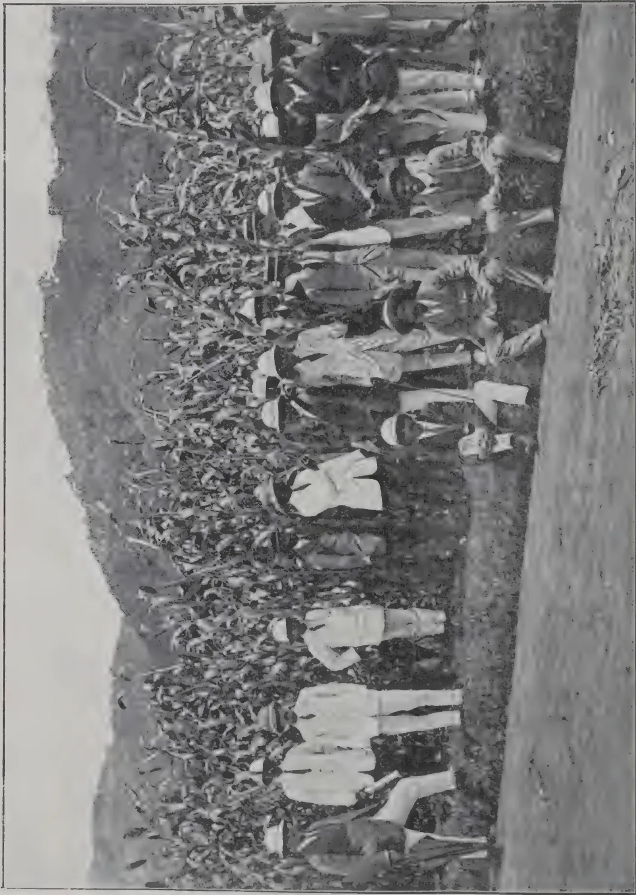
Photo by H. F. Macmillan
Plot of Sudan Dura (Sorghum) at the Experiment Station, Peradeniya, with group of Agricultural Instructors on a visit of inspection with Officers of the Department of Agriculture. Reading from left: D. S. Corlett, Manager of Experiment Station; H. A. Deutrom, Asst. Manager; R. N. Lyne, Director of Agriculture; C. Daeberg, Supt. of Lowcountry Products and Secretary, Ceylon Agricultural Society.
THE
TROPICAL AGRICULTURIST:
JOURNAL OF THE
CEYLON AGRICULTURAL SOCIETY.
VOL. XLIII.
COLOMBO, NOVEMBER, 1914.
No. 5.
THE OUTLOOK FOR FIXED OILS.
With copra only two-thirds the price of what it was a year ago, the prospect for fixed oil-producing seeds may not at the moment seem very bright especially as the decline in price set in before the war; but the fact is, we believe, that the future for vegetable oils contains the elements of stability to a degree greater than that of most other major products of tropical agriculture. Science is making rapid advance in overcoming the objections to vegetable oils by depriving them of their unpleasant odours and especially by converting them into solid fats which can be used in soap making and possibly even in the preparation of margarine. Concurrently with progress made, vegetable oils and fats will gain in popularity as food not only because they are cheap, but also because they naturally enjoy more freedom from suspicion as disease carriers than fats and oils derived from the animal kingdom. Lubricants and drugs will probably share in any appreciation in price earned by fixed oils generally. From the producers' point of view commercial oil seeds may be arranged in three classes. Firstly, of those mainly derived from forest or uncultivated trees one only need engage our attention for the present and that is palm oil seed. This product is certainly worth and is receiving study from planters. We have seen one industry of the West overthrown or nearly so by planters of the East: does a like fate await the palm oil seed industry of the West Coast of Africa? As to this we will only venture the belief that industries carried on in ordered plantations will always in the end prevail over those that depend upon natural forests, in which trees are often widely scattered and immense distances have to be traversed. When, as in the East, plantations have densely populated countries to draw upon for labour they become very dangerous rivals.
340[NOVEMBER, 1914.In the second category of tropical oil products, namely those produced from cultivated trees, the coconut may be said to enjoy a position almost by itself, and commanding as it does our perpetual study need not detain us here ; our object being to direct attention more particularly to annuals which especially in Ceylon are neglected. We do not know of any annual oil-producing tropical product sufficiently remunerative to attract the large employer of labour. Unless he uses machinery for cultivating, harvesting and threshing, which he does not as yet do but has to depend upon hand labour, annuals whether oil seeds or other products are for him generally too expensive to touch as prime products. For this reason the attention now being given in some countries to oil-producing annuals like linseed in anticipation of a rising demand for vegetable oils and fats is of interest mainly to the peasant cultivator. Sesamum ( gingelly ) is the only annual ( we are referring of course to oil seeds ) systematically cultivated in Ceylon on a considerable scale, but there are others which we believe have possibilities notably castor seeds, which though the weight per acre obtained is not great, possess the advantage of being large seeds which can be picked or swept up on the ground and not lost if shed as in the case of gingelly. Ground-nuts being a low creeping crop liable to be smothered demand a lot of labour in weeding as also in harvesting, practically every nut having to be picked. For this reason it is questionable whether the industry would appeal to favoured countries like Ceylon, but must not be left to develop in countries where it has chiefly taken firm root ; though on the other hand it is worth more attention than it is receiving. Soya beans must also be tried again at different elevations. One of the richest oil seeds known to commerce is the Inhambane nut ( Telfairia pedata ) which though not an annual may be classed in this category. The kernel contains about 60 per cent. of oil. The seed is enveloped in a fibrous husk and a shell ( as in case of the coconut ) difficult to decorticate, and is therefore shipped husk and all to the detriment of price. It is a mighty climber demanding for its accommodation large trees which it suffocates in time with its deadly embrace, but it might prove feasible to keep it under reasonable control like other cucurbitous plants to which it is allied. It is being sown at Peradeniya. Linseed to which increased attention is being devoted in many countries is also being tried at Peradeniya, Anuradhapura, Nuwara Eliya, and Hakgala. It is a temperate and sub-tropical rather than a tropical product, more suited probably to our medium and high elevations than to the low country. We recommend it for trial by members of the Ceylon Agricultural Society.
R. N. L. NOVEMBER, 1914.]341Some few months ago considerable interest was aroused amongst those connected with the rubber industry in the Island by the announcement that a well-known English firm of manufacturers of rubber goods were extensively utilising a form of synthetic rubber and that they considered that the "synthetic" problem had been solved.
Small samples only, however, were sent into the outer world and one or two found their way to Colombo. The general comment in the Fort is said to have been that the samples very closely resembled scrap crepe and doubts were cast upon the sense in which the rubber was truly "synthetic."
The synthetic rubber was on view at the Rubber Exhibition held in London in July and evidence of its synthetic nature is said to have been supported by a "strong smell of pear drops." We have to hand, however, a most interesting report on samples submitted to a chemist for examination and issued with the compliments of the selling agents.
In the first place the ordinary rough analysis was made and found to correspond with that of Hevea rubber. A number of tests were then made and the results in each case compared with those given by Fine Hard Para and Smoked Sheet.
Acidity. "No trace of acid was present in any of the Synthetic samples examined."
The author remarks that this fact speaks for itself when one considers the amount of acid present in many plantation rubbers. It has been fairly well proved, however, that plantation rubber does not contain as much acid as Fine Hard Para.
Acetone Extract, Saponification and Water Extract were of the same order in all three cases. The Ash of the Synthetic rubber was somewhat higher than those of either the Fine Hard or Smoked Sheets.
The nitrogen was present in about the same quantity as in Fine Hard.
Influence of Heat. Pieces of equal thickness were placed in a hot-air oven which was kept at 110° and at stated intervals samples were withdrawn, the acetone extract being immediately determined.
After heating for 300 hours the synthetic sample on extraction with acetone lost 18.54 per cent., Fine Hard 19.01 per cent., Smoked Sheets 24.21 per cent.
Exposure of Raw Rubber to Ultra Violet light. The effect was found to be about the same as in the case of Fine Hard.
Exposure of Vulcanised Rubber to Ultra Violet light. In this case the effect was less marked in the case of synthetic than that observed in the case of the other rubbers.
342[NOVEMBER, 1914.“The Synthetic Rubber requires a longer period of vulcanisation than Para, to obtain the maximum efficiency.” A number of mixings were made, containing varying proportions of rubber filling materials and sulphur.
The Synthetic gives a figure somewhat higher than Fine Hard though in the abrasion tests it was not so satisfactory.
One of the most interesting parts of the report however is that in which the author observes that the presence of 1-methyl inosite “has hitherto only been identified in the rubber obtained from Hevea species, and its occurrence in Synthetic Rubber is indeed remarkable.
“C. O. WEBER states that there is a glucoside present in the latex which on hydrolysis yields 1-dimethyl inosite, but whilst this may explain its occurrence in Hevea Rubber, it obviously offers no explanation for the presence of the sugar in the Synthetic product.”
This fact of the presence of 1-methyl inosite is one of the most startling of the many similarities between this product and Hevea rubber. No explanation of its presence is offered to us.
L. E. C.
MR. D. EYRE BAXTER of Sarawak has furnished us with the following account of an experiment carried out on the Sungei Tengah and Dahan estates of The Sarawak Rubber Estates Limited during the rainy season of 1913-14 in order to test the value of Lime Sulphur Wash as a preventive of “canker” caused by the fungus Phytophthora faberi.
The tree trunks were sprayed with the wash to a height of three feet from the ground, by means of Vermorel “Eclair Etame” knapsack sprayers, using a fine nozzle. Three applications of the Wash were made—at the beginning of October, December and February. The Wash was prepared according to the formula used by MR. E. S. SALMON of the South Eastern Agricultural College, and was diluted for use to a specific gravity of 1.01.
The area taken for experiment at Sungei Tengah was 100 acres and for the control 150 acres. There were 150 trees to the acre. At Dahan the experimental area was 52.85 acres and the control was the same area. The control area was done nothing to and the number of cases of “Canker” was carefully counted every month on both the experiment and the control areas.
Careful records of all diseases are kept: so that a comparison with the year previous is possible.
The following tables show a comparison of results.
NOVEMBER, 1914.]
343
Sungei Tengah Estate :—
| PERIOD. | EXPERIMENT: 100 ac. | CONTROL: 150 ac. | ||
|---|---|---|---|---|
| Total Cases. | Cases Per ac. | Total Cases. | Cases Per ac. | |
| Dec. 1912—Apr. 1913. | 427 | 4.27 | 598 | 3.98 |
| Dec. 1913—Apr. 1914. | 115 | 1.15 | 620 | 4.13 |
Thus, during the season 1912-13 the experimental area contained more "Canker" than the control, to the extent of 0.29 cases per acre or 7.28%. During the time of experiment the number of cases on the control area increased 0.15 per acre or 3.67% on the number for the previous season. But the cases on the sprayed area decreased by 312 or 73.06%, and this area contained 2.98 cases per acre or 72.15% less than the control.
Dahan Estate :—
| PERIOD. | EXPERIMENT. | CONTROL. | ||
|---|---|---|---|---|
| Total Cases. | Cases Per ac. | Total Cases. | Cases Per ac. | |
| Previous to Spraying | 631 | 11.93 | 439 | 8.30 |
| After Spraying—new cases | 807 | 15.26 | 922 | 17.44 |
The new cases after spraying were 2.18 per acre or 12.36% less on the experimental area than on the control, while previous to spraying there were 3.63 cases per acre or 43.73% more.
The following shows a summary of costs, under estate working conditions, for spraying at Sungei Tengah.
(1) The Wash :—
| 5 cwt. Sulphur @ 9s. 6d. per cwt. | £2 7s. 6d. |
| 2½ cwt. Lime @ 2s. 0d. ... .. | 5 0 |
| Total | £2 12s. 6d. |
(2) Labour :—
Making Wash, Transport and Spraying—£8 3s. 4d.
(3) Depreciation on Machines 10%—£1 15s. 0d.
Total Cost for Spraying 100 ac. 3 times £12 10s. 10d.
Cost per Acre per Spraying—10.03d.
On the Sungei Tengah Estate the experiment was carried out on flat land, which is flooded after very heavy rain; and at Dahan the land is hilly.
344[NOVEMBER, 1914.The difficult nature of the ground to be traversed would make the expenses of the latter estate slightly heavier. At Sungei Tengah one man could spray four acres per day efficiently, while at Dahan three was as much as could be done.
The annual rainfall at Sungei Tengah is about 160 inches—during 1911 there was a fall of 139.81 inches, during 1912 there were 160.12 and in 1913 there were 192.40 inches. The largest quantity of rain falls during the North-East Monsoon, from September to April. During the period of experiment—September 1913 to April 1914—102.45 inches of rain fell.
Considering the size of the experiment, and that it was conducted under estate working conditions, it seems fairly safe to say that Lime Sulphur Wash is a preventive of "Canker" caused by Phytophthora faberi.
The improvement in the sprayed areas cannot be attributed to weather conditions. The season was normal, and the control areas contained more disease than they did the previous season.
The cost is not excessive. The costs given are the actual figures taken from the estate books.
If alternate-daily tapping is in vogue the operations can be carried out without interference with the ordinary estate work.
As far as could be ascertained the Wash had no detrimental effect on the prepared rubber. At first there was a slight smell of sulphuretted hydrogen, but this was not noticeable when the rubber was dry.
The Government Mycologist, to whom the above was referred, remarked as follows :—
As so many manifestations of disease are attributed to Canker further East it would be of interest to know what symptoms were relied on in the present case. It is not stated whether the diseased trees were treated in any way, e.g., by excising diseased bark, before the spraying experiment was instituted.
It is nearly two years since we had a synthetic scare. During the past two months the market has been threatened by a new process. Inquiry with regard to it in quarters well informed in all that relates to the chemistry of rubber showed that the newcomer was held in no better esteem than its predecessors. Samples of the material are now on view, and it is stated that an attempt is shortly to be made to raise money from the public. According to market gossip the new material is made from cotton, nitric acid, and artichokes. So wonderfully does the product of these substances resemble fine hard Para that the cleverest rubber chemists—men who are testing and analysing rubber every day of their lives—cannot distinguish it from the Brazilian product. At least, this is the statement as dished up for public consumption by the principal newspapers ; but the mere extravagance of the claim is sufficient to exclude it from notice in the recognised technical journals. Fine Hard Para has a number of characteristic impurities which readily enable the chemist to distinguish it from plantation rubber. Not
NOVEMBER, 1914.]345only does the new process supply pure rubber, but all the characteristic impurities, it seems, are also synthetically reproduced in so life-like a form as to deceive the expert. It is necessary only to remark at present that the opinion of the chemist who cannot recognise fine hard Para by its impurities is not worth having, and I shall require testimony of a far more convincing character before I proceed to discuss the merits of the synthetic compound as a possible competitor with the natural product.
A sample of synthetic rubber produced in Manchester has found its way to Ceylon, a Fort broker being the recipient. It has gone the round of the firms, and would probably have come in for more consideration had not one merchant cast doubts upon its genuineness. He had it subjected to a test, he said. He burnt a piece of the so-called synthetic rubber and a similar-sized piece of rubber taken from his stock room. The residue left by each piece was exactly the same in substance, smell, and every other particular. While the matter rests at this at present, the Government Chemist is waiting the arrival of a bigger sample, which is understood to be coming out.—GRENIER'S RUBBER NEWS.
It is not only in its effect upon the reading public that the war is keeping the book trade in its present state of suspended animation. The question of the paper supply is obviously a very serious one, when so much of the raw material for books comes from abroad in the shape of wood pulp and esparto. Esparto, a grass from the shores of Spain and Northern Africa, preceded wood as a substitute for rag when the supply of that material proved insufficient to meet the increasing needs of the book market. To-day some 200,000 tons of esparto are imported into England, chiefly for this purpose, esparto being especially applicable to the manufacture of book paper. The war will cause the paper maker to turn his attention more closely than ever to the discovery of other possible sources of supply. Wood is not an inexhaustible material. The demand for pulp has increased so vastly that it is now estimated to account for the destruction of something like 50,000,000 trees every year. According to MR. R. W. SINDALL, who has made investigations in this connection on behalf of the Indian Government, the most likely substitute for esparto and wood pulp is bamboo; but experiments are being made with fibrous stock of every description. Meantime the price of paper has gone up, and one of the largest manufacturers for the book trade stated last week that unless fresh supplies of material and chemicals were forthcoming his works would be temporarily shut down before the end of the month. The increase in the price of paper in the book world will naturally fall heaviest of all upon the cheap reprints, especially where these are issued by British houses for Continental editions.—TIMES LITERARY SUPPLEMENT.
346[NOVEMBER, 1914.A recent issue of the PHILIPPINE AGRICULTURIST contains a thoughtful article dealing with the present crisis and its bearing on the coconut industry ; and though the advice it contains is intended for the Philippine planter, it is well worth the consideration of local estate owners, to whose benefit we have made the following summary :—
During recent years, with the great development in Europe of industries which required large quantities of coconut oil, the price of copra was nearly doubled with the result that coconut planters reaped immense profits. But the countries which were the largest buyers of copra are now at war and their industries are depressed, so that the demand for coconut products has fallen considerably. Even though the war may be of short duration it will leave France and Germany in an impoverished state, and it will take a long time for the resuscitation of industries which till lately were in a flourishing condition. These countries will have lost their power to pay satisfactory prices even, if they are able to buy, and a return to the recent high prices is not to be expected in the near future.
The coconut industry may therefore be said to be confronted by a more or less acute crisis, and planters must face the fact that even after the crisis is past there will be a comparatively long interval during which their produce must be marketted at low prices, and the world's demand for copra will be a good deal less.
Before the war Europe wanted more copra than the tropics could provide, and while this demand existed it was possible to sell almost any quality of copra, however poor. But now it is to be expected that Europe, being unable to accept all the copra that is offered, will be in a position to choose only the good and reject the inferior. The producer must therefore take steps to meet the present crisis and the future prospect of a poor market. To get past the crisis he must as far as possible delay marketing his produce, and to sell readily afterwards he must market such copra as a depressed market will receive and by producing as good quality stuff as he can.
In order to do this it is suggested that nuts should not be picked but be allowed to fall to the ground, this being the cheaper and more satisfactory method of gathering, inasmuch as the nuts will thus be got more uniformly ripe and in the best condition for copra drying ; and good copra can be kept for a number of months without considerable deterioration. Again perfectly matured nuts can be stored for a long time and still be turned into good copra.
Thus in helping himself to tide over the present crisis and prepare for the depressed market the coconut planter will be adopting measures for raising the standard of his produce. If therefore the present crisis, bad as it is, is likely to result in a permanent improvement of our great coconut industry, it must be looked upon as a blessing in disguise.
NOVEMBER, 1914.]347The advice given above, which we commend to coconut planters, undoubtedly offers the best hope : but under prevailing conditions it may be questioned whether the plan of allowing nuts to fall to the ground instead of picking them is a practicable one. It has been adopted locally to a very limited extent, as for instance in the Eastern Province, but in densely populated areas as in Western Province it would be possible only where the greatest vigilance is observed owing to the prevalence of prædial thefts.
C. D.
The four principal countries which manufacture and export coconut products are the Dutch East Indies, Philippine Islands, Ceylon and India. About thirty per cent. of these products are consumed in Europe and North America, the chief items being copra and coconut oil. The cultivation of coconuts and the preparation of their commercial products are among the leading industries of Ceylon. A study of the methods in vogue in that island, where the industry has been carefully and scientifically built up, may be of some interest. We are indebted for the following particulars to MR. DAVID S. PRATT of the Laboratory of Organic Chemistry, Bureau of Science, Manila, who has contributed a valuable paper on "The Coconut and its Products with special reference to Ceylon" to the PHILIPPINE JOURNAL OF SCIENCE of last April.
Copra is the kernel of the coconut from which the greater part of the water content has been expelled, either by the natural process of sundrying or by warming over low fires. The method employed in Ceylon is very simple, and consists in merely chopping the nut in half and exposing the hemispheres, meat upward, on dry, sandy ground. The nuts are carefully covered at night and kept free from all dirt. The meat shrinks away from the shells after two days, and is then removed for further drying. The process is usually complete in about six days, whereupon the copra is ready for market. Artificially dried copra is frequently inferior to the sundried product since the heat and smoke give it a darker colour and wizened appearance. Fire drying requires from two to four days in the large mills and from five to seven days on native estates. The latter rate is preferable as it produces a higher grade copra. The process is essentially the same in both cases, differing merely in the rate at which it is carried out. A platform is constructed of green areca-palm (betel-nut palm) laths placed about an inch apart, forming a floor from three to four yards wide and of any desired length. This is erected above an earthen pit in which coconut shells are fired, after having been fitted into each other in parallel rows. Three or four rows of these shells are generally fired at one time, with an occasional reduction of the heat for several hours. A row of shells burns from five to six hours, sometimes much longer. The half nuts on the platform are turned over after the second firing, and the partially dried meat is released after the third. Three more firings complete the drying. When this method is carefully carried out only dry shells are burned, as these produce very little smoke but considerable heat. The husks are employed in the preparation of fibre. The resulting copra is fairly white and clean,
348[NOVEMBER, 1914.and since it sells for nearly top prices in the London market estate owners are content to use this method as supplementary to sundrying without employing more complex machinery. All Ceylon copra at the present time is prepared by one or both of these processes. A very successful drier claims he can turn out the best white copra by grill drying and more economically than by sundrying. He fires only one row of shells at a time, and requires five days and nights of continuous heating to complete the drying. Many planters start with sundrying and complete the preparation of their copra over grills.
The amount of copra from a given quantity of fresh nuts depends to a considerable extent upon the rate of artificial drying. Ordinarily, from 170 to 200 nuts give about 110 pounds of copra. The two extremes are encountered in comparing the output of sundried copra with that of desiccated coconut products. The relatively low yield of the latter is well known, a decrease of 10 per cent., based on fresh kernel, not being unusual. The decrease in time required for expelling the water is, therefore, coincident with increased loss of oil, and all methods of preparing copra must represent an economical balance between these factors. It is unquestionably possible to make copra in much less time than is required by either the sundrying or grill-drying processes, but experiments made by planters in Ceylon have not impressed them with the advisability of adopting such changes. One of the most progressive coconut planters in the island constructed a drying house with brick heating flues and produced a paper-white copra in less than twenty-four hours, but discontinued the process because of the resulting high loss of oil. A continuous slow current of air at from about 54° to 60° (130° to 140° F.)—the proper temperature to be determined by experiment—should, it is said, complete the drying process within three days and nights, and with the least loss of oil. A rapid drying in ten hours must be attended by a considerable loss, and will require about 15 per cent. more kernel to produce a given weight of copra. The copra destined to be exported to a foreign market for oil making is spread out in warehouses and sorted according to quality, dryness, colour, etc. Each hemisphere is then chopped into three or four pieces and resacked for shipment. The work is largely done by women labourers. This handling and chopping causes a loss in weight amounting to from 0.5 to 1 per cent., and a further loss of from 3 to 5 per cent. is generally allowed for shrinkage during the voyage.—INDIAN TRADE JOURNAL.
E. B. COPELAND.
In the study of the physiology of the coconut, the greatest emphasis is given to growth. This is for the sufficient general reason that growth is the most convenient general index to the thriftiness of the plant. It is by no means the only such index, and growth is not in itself the most ultimately important phase of the tree's activity. But the coconut is peculiar among agricultural crops, so far as these are known, in the length of time required before any given kind of treatment or any set of favourable or unfavourable conditions makes itself evident in the yield. A season dry enough to be exceedingly injurious has almost no immediate effect on the yield of nuts, but will result in a long period of poor crops, the worst of which are not harvested until perhaps two years after suitable climatic conditions have returned. For the same physiological reasons the application of fertilisers produces no immediate effect upon the crop, but does produce a prolonged subsequent effect which may reach its climax two years or even longer after the application. For these reasons, the use of fertilisers and the practice of
NOVEMBER, 1914.]349irrigation are not convenient subjects for class experiments. Since experiments of this kind must run over a series of years, the class is dependent, for its understanding of such subjects, on instruction in class and on the inspection of work in the field. Growth, in distinction to the yield of nuts, shows the effect of good or bad treatment or conditions with reasonable promptness. It is possible from the growth of the tree in one season to forecast with a high measure of probability the yield from to 3 years ahead. Familiarity with the growth of the coconut is therefore of the utmost importance as furnishing an easy and reliable method of determining the condition of a grove and its future productivity. The students in this class have previously had in their course in plant physiology the most thorough drill in determining the rate of growth of plants in general, and of their parts, and in this course are merely given particularly emphatic drill on the growth of the coconut. This drill is expected to be so thorough that no one of these students can determine, from a day's observation in a coconut grove, whether or not the trees are as thrifty as they should be, and in this way, to determine what the crop may be expected to be two years ahead, and whether or not there should be a change in the treatment the trees are receiving.
On the practical side, the student is expected to determine standards of efficiency in the ordinary operations required on a coconut plantation. The value of such standards can be illustrated by an example. From the work of one of these classes several years ago, it was concluded that a reasonably efficient labourer, during the usual working day, should be able to clean the ground for a meter around sixty trees, and to do this work thoroughly. On a certain coconut plantation, labour was being hired by the day to keep a grove clean, certain labourers being used for exactly such work as had been standardized at the college. The labourers seemed to be busy, and there was no visible reason to complain of their inefficiency; but on an average, they were cleaning only a little over fifteen trees a day. The manager was informed as to the standard which had been decided upon at the college, and proceeded to test it. Their objections lasted only one day, and the men then expressed their willingness to do the work under contract at the rate of sixty trees for a day's wage. As a matter of fact, the college student is less efficient than a good labourer, when it is a question of prolonged work. In spite of the fact that it is far above ordinary present plantation efficiency, our standard is still lower than it should be. There has been a vast amount of attention to standardization of efficiency in factory and office work, and altogether too little attention to the standardization of efficiency in farm operations.
Copra manufacture is one of the foremost industries of the Philippine Islands. Of all the industries of these islands, it can safely be said to be the worst in its practice. The farmers of the islands have been given many cubic meters of advice on the subject, and this has had almost no practical effect.—PHILIPPINE AGRICULTURIST AND FORESTER.
JOSEPH DE VERTEUIL, F.C.S.
This report deals with the second year's results of the manurial experiments on coconuts, under the control of the Board of Agriculture and is in continuation of the report for 1911-12 (Bulletin, Department of Agriculture, XI. 1912. pp. 179-184).
The dry season of 1912 was very severe and although the number of nuts picked from the plots on the Morvant estate, Laventille, and the King's Bay estate, Tobago, does not show a marked decrease, it will be observed that a smaller proportion of "selects" has been obtained than during the previous
350
[NOVEMBER, 1914.
year. On the Beaulieu estate at Cedros, the crop has been considerably affected and the proportion of selects has been reduced by nearly 50 per cent.
Mention was made in the previous report that the yield for the first year may be considered as a "natural yield" for each plot, owing to the fact that the manures had only been applied shortly before. This year's yield may therefore be compared with that obtained from the corresponding plots last year, but no conclusions should be drawn from the results of a single year.
The figures obtained are given in Tables I. to V. for each estate respectively.
MORVANT ESTATE—LAVENTILLE.
The second application of manures was made in May 1912.
| Rainfall | { | 1911-12 | 39.12 in, |
| 1912-13 | 41.27 in. |
TABLE I.—Manurial Experiments, Morvant Estate.
TREES ABOUT 26 YEARS OLD.
| Plot. | No. of Bearing Trees. | Manures applied per Tree. | Crop July 1st to June 30th. | Average No. of Nuts Picked per Tree. |
|---|---|---|---|---|
| 1 | 68 | { 4 lb. Lime | 1911-12 | 20.3 |
| { 4 ,, Kainit | 1912-13 | 36.7 | ||
| 2 | 69 | { 6 lb. Basic slag | 1911-12 | 38.9 |
| { 1 ,, Sulphate of potash | 1912-13 | 47.5 | ||
| 3 | 70 | Control—No manure | 1911-12 | 40.7 |
| 1912-13 | 53.1 | |||
| 4 | 70 | { 4 lb. Basic slag | 1911-12 | 35.1 |
| { 2 ,, Nitrate of Soda | 1912-13 | 47.0 | ||
| 5 | 70 | { 2 lb. Calcium cyanamide | 1911-12 | 43.8 |
| { 2 ,, Sulphate of potash | 1912-13 | 58.3 | ||
| 6 | 70 | Control—No manure | 1911-12 | 25.9 |
| 1912-13 | 39.4 | |||
| 7 | 70 | { 2 lb. Bone meal | 1911-12 | 41.0 |
| { 1 ,, Sulph. of potash | 1912-13 | 55.7 | ||
| { 150 ,, Pen manure | ||||
| 8 | 67 | { 2 lb. Superphos. of lime | 1911-12 | 31.1 |
| { 1 ,, Sulph. of potash | 1912-13 | 37.2 | ||
| { 150 ,, Pen manure |
All the plots have given an increased yield over the previous year, but the increase from plots 1, 5 and 7 is greater than that of the control plots. From a pecuniary point of view, plot 1 alone has given a profit.
NOVEMBER, 1914.]351BEAULIEU ESTATE—CEDROS
These experiments are being conducted in three series, A, B and C, as shown in Tables II. to IV. The average results obtained for the three series is given in Table V.
The manures were applied in April, 1912.
| Rainfall | { | 1911-1912 | 39.84 in. |
| 1912-1913 | 55.76 in. |
TABLE II. Manurial Experiments Beaulieu Estate, Cedros.
Series A.
TREES 31 TO 36 YEARS OLD.
| Plot. | No. of bearing trees. | Manures applied per tree. | Crop, July 1, to June 30 | Average number of Nuts picked per tree. |
|---|---|---|---|---|
| 1 | 15 | { 4 lb. Lime 4 ,, Kainit |
1911-12 | 135.9 |
| 1912-13 | 73.5 | |||
| 2 | 17 | { 6 lb. Basic slag 1 ,, Sulphate of potash |
1911-12 | 107.4 |
| 1912-13 | 54.9 | |||
| 3 | 12 | Control—no manure | 1911-12 | 120.8 |
| 1912-13 | 76.2 | |||
| 4 | 14 | { 4 lb. Basic slag 2 ,, Nitrate of soda |
1911-12 | 135.1 |
| 1912-13 | 101.8 | |||
| 5 | 15 | { 2 lb. Calcium cyanamide 2 ,, Sulphate of potash |
1911-12 | 138.9 |
| 1912-13 | 82.4 | |||
| 6 | 14 | Control—no manure | 1911-12 | 146.8 |
| 1912-13 | 81.8 | |||
| 7 | 15 | { 2 lb. Bone meal 1 ,, Sulphate of Ammonia 150 Pen manure |
1911-12 | 126.4 |
| 1912-13 | 70.1 | |||
| 8 | 15 | { 2 lb. Superphos. of lime 1 ,, Sulphate of potash 150 ,, Pen manure |
1911-12 | 125.3 |
| 1912-13 | 85.5 |
TREES 31 TO 36 YEARS OLD.
| Plot. | No. of bearing trees. | Manures applied per tree. | Crop July 1. to June 30. |
Average No. of nuts picked per tree. |
|---|---|---|---|---|
| 1 | 19 | { 4 lb. Lime | 1911-12 | 83.0 |
| { 4 ,, Kainit | 1912-13 | 76.2 | ||
| 2 | 26 | { 6 lb. Basic slag | 1911-12 | 70.0 |
| { 1 ,, Sulphate of potash | 1912-13 | 55.3 | ||
| 3 | 29 | { Control—No Manure |
1911-12 | 50.1 |
| 1912-13 | 34.4 | |||
| 4 | 25 | { 4 lb. Basic slag | 1911-12 | 54.9 |
| { 2 ,, Nitrate of soda | 1912-13 | 46.8 | ||
| 5 | 25 | { 2 lb. Calcium cyanamide | 1911-12 | 61.7 |
| { 2 ,, Sulphate of potash | 1912-13 | 45.5 | ||
| 6 | 22 | { Control—No manure |
1911-12 | 65.2 |
| 1912-13 | 44.9 | |||
| 7 | 24 | { 2 lb. Bone meal | 1911-12 | 56.1 |
| { 1 ,, Sulphate of ammonia | ||||
| { 150 ,, Pen manure | 1912-13 | 42.4 | ||
| 8 | 26 | { 2 lb. Superphosphate of lime | 1911-12 | 57.3 |
| { 1 ,, Sulphate of potash | ||||
| { 150 ,, Pen manure | 1912-13 | 59.9 |
TREES 31 TO 36 YEARS OLD.
| Plot. | No. of bearing trees. | Manures applied per tree. | Crop July 1, to June 30. |
Average No. of nuts picked per tree. |
|---|---|---|---|---|
| 1 | 26 | { 4 lb. Lime | 1911-12 | 55.8 |
| { 4 ,, Kainit | 1912-13 | 44.5 | ||
| 2 | 24 | { 6 lb. Basic slag | 1911-12 | 82.4 |
| { 1 ,, Sulphate of potash | 1912-13 | 50.4 | ||
| 3 | 25 | { Control—No manure |
1911-12 | 59.0 |
| 1912-13 | 50.6 | |||
| 4 | 24 | { 4 lb. Basic slag | 1911-12 | 63.9 |
| { 2 ,, Nitrate of Soda | 1912-13 | 58.0 | ||
| 5 | 16 | { 2 lb. Calcium cyanamide | 1911-12 | 103.3 |
| { 2 ,, Sulphate of potash | 1912-13 | 76.4 | ||
| 6 | 18 | { Control—No manure |
1911-12 | 77.6 |
| 1912-13 | 57.2 | |||
| 7 | 18 | { 2 lb. Bone meal | 1911-12 | 101.9 |
| { 1 ,, Sulphate of ammonia | ||||
| { 150 ,, Pen manure | 1912-13 | 67.6 | ||
| 8 | 19 | { 2 lb. Superphosphate of lime | 1911-12 | 98.7 |
| { 1 ,, Sulphate of potash | ||||
| { 150 ,, Pen manure | 1912-13 | 59.0 |
KING'S BAY ESTATE, TOBAGO.
The second application of manures was made in March, 1912.
| Rainfall. | { | 1911-12 | 66.71 in. |
| 1912-13 | 64.57 in. |
TABLE V.—Manurial Experiments, King's Bay Estate.
TREES 21 TO 26 YEARS OLD.
| Plot. | No. of Bearing Trees. | Manures applied per Tree. | Crop : July 1, to June 30. | Average Number of Nuts picked per tree. |
|---|---|---|---|---|
| 1 | 46 | { 4 lb. Lime | 1911-12 | 74.4 |
| { 4 ,, Kainit | 1912-13 | 83.8 | ||
| 2 | 66 | { 6 lb. Basic slag | 1911-12 | 56.2 |
| { 1 ,, Sulphate of potash | 1912-13 | 71.7 | ||
| 3 | 56 | Control—No manure | 1911-12 | 60.3 |
| 1912-13 | 63.5 | |||
| 4 | 82 | { 4 lb. Basic slag | 1911-12 | 51.1 |
| { 2 ,, Nitrate of soda | 1912-13 | 58.5 | ||
| 5 | 70 | { 2 lb. Calcium cyanamide | 1911-12 | 67.6 |
| { 2 ,, Sulphate of potash | 1912-13 | 79.6 | ||
| 6 | 80 | Control—No manure | 1911-12 | 58.4 |
| 1912-13 | 56.2 | |||
| 7 | 65 | { 2 lb. Bone meal | 1911-12 | 54.1 |
| { 1 ,, Sulphate of ammonia | 1912-13 | 72.7 | ||
| 8 | 76 | { 2 lb. Superphosphate of Lime | 1911-12 | 60.4 |
| { 1 ,, Sulphate of potash | 1912-13 | 77.6 |
With the exception of control plot 6, there has been a slight increase in the number of nuts obtained per tree from all the plots as compared with the previous twelve months. There has been a decrease in the proportion of selects varying from 0.3 to 10.8 per cent. On this estate all the manured plots have given a larger increase than the average of the control plots and the pecuniary results are satisfactory.—BULLETIN No. 77, DEPARTMENT OF AGRICULTURE TRINIDAD AND TOBAGO.
NOVEMBER, 1914.]355W. C. JARDINE.
The results so far show the difficulty—almost the impossibility—of drawing definite conclusions from manurial experiments made upon such heterogenous cultivation as that of cacao in Trinidad, at least until an exhaustive record covering not less than five years is procurable. I have come to the conclusion that a comprehensive digest of the inferences it would be safe to draw from the results of such experiments at the end of that time would be one of the most difficult tasks any man could set himself; nevertheless, we will certainly be faced with such a necessity, and I do not envy to him to whom the task may fall. I do not say this from any desire to discourage the work being done, but speak rather from the position of the patient who eagerly looks to his doctor to discover a cure for his troubles, and to whom the whole position looks rather vague in its present unripe state.
As an example of what I mean, if we follow the history of one particular treatment or combination of manure right through the series, we are faced with the most contradictory and disappointing results, which may be shortly expressed as—good,—no good,—fair,—not worth while,—and so on. Plot No. 1. for example shows that the combination of basic slag and sulphate of potash has apparently produced the following effect per tree over the previous year. On Santa Marta estate an increase of about 6 pods; on Esperanza a decrease of 4 pods; on New Grant an increase of '34 pods; on Santa Teresa a decrease of 2 pods; on La Compensacion an increase of 6 pods; on Santa Isabella an increase of 6.5 pods; and on Soconusco a decrease of '2 pods.
Here we have the very gamut of inconsistency, which if viewed in the light given by the corresponding control plots, appears to become confusion worse confounded, and it is abundantly evident that it would be useless at this stage to draw any but the most preliminary conclusions.
If we lump all the plots together and reduce the figures to averages we will find—taking the same example—that 931 trees (being parts of seven different estates in seven different districts), produced a net increase over the previous year of 1,544 pods = 1.66 pods per tree, and deducting the average increase per tree on 19 control plots = .82 pods we find this treatment giving us an average net increase of .84 pods per tree, or 782 pods at a cost of about $32.00; a result which need cost the planter no further study could this result be considered as at all conclusive.
There can be no possible doubt that the individual bearing capacities of the trees making up a plot exert a disconcerting influence on the diagnosis of results taken separately; but this is unavoidable, being characteristic of
356[NOVEMBER, 1914.Trinidad cultivation generally, and so far as the effect of the manurial treatment is concerned, will eventually be reduced to a minimum as time passes and records accrue.
We may, however, get a few very interesting glimmerings or forecasts of what will probably be established among other things at the end of a sufficient period, not the least important of which is the danger of applying caustic lime to the soil in a climate where bacterial action continues almost undiminished throughout the year, and the land is exposed to heavy inundations during the rainy season. The free use of lime has become considerable in Trinidad of late years, caused no doubt by its rapid effect upon the yield; but it should be realised that its action is in reality nothing but a rapid consumption of your capital in the form of organic fertility,—more particularly on light unmanured soils,—which will as certainly be followed by years of reduced yield. A glance at the plots which were limed the previous year will emphasise this.
An intensely interesting review (published in 1912) of the world famous manurial experiments at Rothamsted (which have been running now for over sixty years) by the former Director A. D. HALL, M.A., F.R.S., provides such valuable information that, although the experiments here and at Rothamsted are not completely analogous, many of the general conclusions undoubtedly apply, some of the more apposite of which are well worth quoting.
1. It is established2 that in the case of wheat—"a ten-year period is not sufficient to eliminate the fluctuations in yield due to seasons."
2. That the continuous growth of some crops,—notably wheat,—does not unfit the land for that crop provided a suitable fertiliser supply is maintained. "If there is any toxic effect . . . . this effect . . . . in the case of wheat . . . . so small as to be negligible."
3. The reverse is the case with barley, while with clover and some other crops the impossibility of maintaining them consecutively on the same soil is well known, and while the present state of our knowledge does not justify us in ascribing this fact to toxins produced by these crops, the probability of such being the case is markedly allowed for.
4. That on two plots abandoned for over twenty years, one gained nitrogen at the rate of 92 lb. per acre per annum, the other 41 lb. per acre per annum, the greater amount of the former being due to the soil having three per cent. carbonate of lime, enabling free growth of leguminous plants, and the better action of the free bacteria in the soil which fix atmospheric nitrogen,—the Azotobacter.
5. "The higher the level of production the greater the waste, and in consequence, the additions of fertiliser must be doubly increased to maintain the balance." This is partly due to the high pressure (so to speak) at which the fertility mill is working (reminding one of the disproportionate waste of coal required to produce a comparatively small increase of energy over a certain limit); and to the fact that certain groups of bacteria denitrify the organic matter, liberating free nitrogen.
NOVEMBER, 1914.]3576. That the ploughing or tilling of the soil brings about a destruction of the organic nitrogen, while leaving it undisturbed under vegetation causes the increase of the same.
7. That rain—at Rothamsted,—adds to the soil 4 lb. of nitrogen per acre per annum.
8. That plants short of potash will be specially liable to attacks of fungoid diseases
Most of these facts have been recognised by agricultural science for a considerable time now, but they are very forcibly corroborated by the long scientific evidence of the Rothamsted experiments, and their significance in the same direction here will surely not be lost.
I have not attempted to go exhaustively into every combination, and perhaps the example I have chosen is the least consistent, but it will serve to show the difficulties which beset this line of investigation in Trinidad, and to emphasise MR. DE VERTEUIL'S remarks as to the necessity of having the previous history of the plots. I think it is worth considering whether the manurial scheme should not be improved upon, and a wider scope given in the periods of application, while the yields of the plots for as many years previous to the experiments as possible should appear. Analyses of the soils of the plots before, and at intervals of several years after treatment would throw more light on the results to come.
The work which the Board is doing under this head is destined to be of inestimable value to the cacao industry in the future, and is one which more than deserves all the time and trouble which can be expended upon it.—BULLETIN No. 78, DEPARTMENT OF AGRICULTURE, TRINIDAD AND TOBAGO.
Pruning in the West Indies is attended with the greatest amount of care, and is performed for the purpose of producing a vigorous tree by the removal of all useless wood, and of encouraging fruiting branches to increase their production. In order to do the latter it is essential to remove any superfluous number of primary branches, three or four being considered sufficient for one tree. A similar regulation of growth is required with regard to the secondary and tertiary branches. In addition to this, care is given to retain the correct balance for the tree, and, when cutting out branches to avoid making jagged cuts or slashes. The West African native does not prune with these objects in view, but employs a cutlass or machete to cut out those branches which seem to be giving too much shade or which have become interlaced, regardless of their value to the tree or of the wounds inflicted in the operation. Efforts have been made to teach pruning at the Botanic Stations, but the demonstrations have not been largely attended, and a great deal of damage continues to be done through ignorance of the objects and efforts of pruning. Many of the older plantations, owing to bad treatment and too close planting, are yielding an annually diminishing crop, but new ones are springing up in increasing numbers each year, which is an obvious indication that the industry is proving a profitable one.—BULLETIN No. 79, TRINIDAD AND TOBAGO DEPT. OF AGRIC.
358[NOVEMBER, 1914.W. G. FREEMAN.
A reply to an article in the PHILIPPINE AGRICULTURAL REVIEW attributing the recent decline in the exports of Cacao from Trinidad to bad cultural practices, overshadowing of trees and severe fungus disease.
The writer points out that this decline corresponds to seasons of abnormally low rainfall and gives figures showing a considerable improvement in the production of cacao during 1913 corresponding to an improvement in the climatic conditions. Reference is also made to reports of the Gold Coast Department of Agriculture showing that the remarkable increase in the exports of cacao from West Africa is due to the natural advantages of suitable areas and cheap labour; rather than to the application of scientific horticultural methods.—MONTHLY BULLETIN.
MR. H. A. TEMPANY, Superintendent of Agriculture in the Leeward Islands, includes the following interesting summary on the manuring of Cacao in the Report of the Agricultural Department, Dominica, for 1912-13 :—
Manurial experiments with cacao have been systematically conducted both at the Botanic Gardens and in country districts in Dominica during the past eleven years. It is believed that the accumulated results now enable sound deductions to be drawn regarding the manuring of cacao under these conditions.
The principal fact which stands out is the value of natural organic manures either in the liberal application of pen manures or compost.
There does not appear to be any room for doubt that methods of manuring based on this principle are those likely to give satisfactory results under the conditions in question.
It may again be pointed out, however, that good results can only be expected to accrue from this or any other form of manuring if due attention is also paid to the requirements of the trees in other directions such as general care, pruning, sanitation, and on heavy soils, drainage; it is further to be remembered that it is not all localities in Dominica which are suitable for cacao cultivation.
Having regard to these points it seems to be the soundest policy for cacao growers to endeavour to raise large quantities of organic manure for application to their orchards.
Difficulties of transport are frequently urged as an argument against the utilisation of the abundant supplies of material for mulching available in the forests of Dominica, the view may however be expressed that if full use were made of readily available material and if this were systematically combined with the utilisation of such stock as exist on the estate and the raising of leguminous and other crops as additional material for mulching, the problem would not be far from being solved in many cases.
NOVEMBER, 1914.]359When sufficient organic manure is not available to supply a complete manuring it should be supplemented by artificial manures which should always contain nitrogen and phosphate. Nitrogen is best given in some form in which the constituent becomes slowly available, such as tankage, dried blood, or cotton seed meal. Rapidly acting forms of nitrogenous manure such as nitrate of soda and sulphate of ammonia and nitrate of lime are of more especial value when it is desired to give a strong stimulant to trees that are in an unsatisfactory condition.
Calcium cyanamide or nitrolim continues to attract a certain amount of attention as a possible nitrogenous manure in cacao cultivation and although no very definite information is available concerning this manure the fact that its nitrogen becomes available with relative slowness and that it possesses a high content of lime indicates that it may be of value in cacao cultivation under these conditions.
Basic slag appears to be the most suitable form in which to apply phosphoric acid largely by reason of the considerable excess of lime which it contains.
There is no separate evidence available to show the effects of potash but the majority of Dominica soils are well supplied with this constituent and there is nothing to lead us to believe that applications are likely to be of value.
It is a characteristic feature of Dominica soils that they are deficient in lime, and although trials of this substance have not been included in the experiments so far conducted there is ample internal and collateral evidence to show that applications of lime are likely to be of marked benefit if given in conjunction with suitable manurial applications.—BULL. No. 79, TRINIDAD AND TOBAGO DEPT. OF AGRICULTURE.
According to the Administration Report of MR. F. J. S. TURNER, the acting Conservator of Forests, 475 ebony logs weighing tons were sold during 1913 for Rs. 33,397.34, or an average of Rs. 208.40 per ton. This cost Rs. 45.02 per ton to place in the depot. Both the cost and sale price are considerably better than in 1912. The highest price realized in 1913 was Rs. 600 per ton, which is identical with the highest price obtained in 1912.
Satinwood.—327 logs containing cubic feet were sold for Rs. 60,678.08 in 1913, which gives an average of Rs. 6.50 per cubic foot. It cost Re. 1.22 to place the average cubic foot in the depot. The quantity sold, the total takings, and the average price all exceed those of 1912, but the rate of delivery was 3 cents higher per cubic foot in 1913 than in 1912. This increase in cost of delivery points to the working of less accessible areas, and is a very reasonable increase. The best price realized in 1913 was Rs. 18.80 per cubic foot, and this is Rs. 2.80 better than the best of 1912.
360[NOVEMBER, 1914.W. H. HARRISON.
(Continued from page 295).
With regard to green-manures, it must be borne in mind that the potash and phosphoric acid they contain is obtained from the soil on which they are grown and in consequence no enrichment of the land in this respect is obtained. All that happens is that the potash and phosphoric acid present in the soil is taken up by the green manure crops and again returned to the land, but in a condition to be readily absorbed by the main crop which follows. Now, as the practice of green manuring leads to heavier paddy crops it follows that ultimately more potash and phosphoric acid is removed from the soil than would otherwise be the case and the land in consequence will all the sooner be impoverished with regard to these two manurial ingredients. Provision must therefore be made to supply these ingredients to the land in the course of time, and this is best done by occasionally dressing the soil with such manures as "super" and bone-meal which are very rich in phosphoric acid and more occasionally still with wood-ashes, sulphate of potash, etc., manures which are rich in potash. The point to be remembered is this, that green-manures are not complete manures as they bring only nitrogen and humus to the soil.
Green-leaf manures, i.e., leaf and branches cut off from plants growing on waste ground or forests and puddled into the soil have practically the same effect as green-manure crops, but they differ from the latter in so much as they supply potash and phosphoric acid in addition to nitrogen. They are complete manures and from this point of view are to be preferred to green-manure crops grown on the land itself supplemented by a comparative small annual dressing of superphosphate or bone-meal.
Comparative tests with green-manures have been carried out at Coimbatore, with the result that green-leaf manure gave a yield of 4,490 lb. of paddy and 5,811 lb. of straw per acre, whereas, the same weight of daincha (grown on the ground) gave 4,200 lb. paddy and 4,400 lb. straw. The difference between the yields of paddy in the two cases is not great, considering the large yields obtained, but such as it is it is due to the extra potash and phosphoric acid brought to the soil with the green leaves, for when "super" is used in conjunction with the green-manure the yields obtained often exceed that obtained when green-leaf manure is used. Compared with the yields from plots receiving no manure which gave only, 3,392 lb. of paddy and 3,124 lb. of straw, the efficiency of green manures and green leaf manures is undoubted.
NOVEMBER, 1914.]361Poonacs and fish manures are also bulky organic manures which can be utilized with advantage where they are obtainable at a cheap rate. They contain a much larger proportion of nitrogen and other manurial ingredients than green manures and, consequently, can be used in much less quantity. Thus in an experiment carried out on the Coimbatore Farm to compare the relative values of these bulky organic manures 4,000 lb. of green leaves yielded a profit of Rs. 120 per acre, 4,000 lb. of wild indigo Rs. 98, 400 lb. of white castor poonac Rs. 109, 500 lb. of b'ack castor poonac, Rs. 104, and 560 lb. of fish manure gave Rs. 114.
Poonacs are complete manures, and there is generally little necessity to use any other manure in conjunction with them unless it is superior bone-meal to increase the proportion of phosphoric acid put on the land.
This mixture is generally very effective in increasing the yield of paddy, and the cost of the "super" needed for the purpose is comparatively small. On the other hand, fish manure is not a complete manure as it is practically devoid of potash and in consequence wherever the soil is deficient in that ingredient a mixture of sulphate of potash or wood ashes with fish manure can be used with advantage. The use of this mixture, however, should only be attempted after a small trial has given successful results, as not only is the potash expensive (thus reducing the profits) but unless there is actual need for it the tendency is to reduce the yields given when compared to fish manure alone. Thus the use of 560 lb. of fish manure and 56 lb. of sulphate of potash resulted in a net profit of only Rs. 82 as against a profit of Rs. 114 with fish manure alone. On the other hand, with one experiment in the Kistna delta, potash gave an actual increase in the profit obtained.
Manures obtained from bones, the chief of which are bone-meal and bone superphosphate, can under certain circumstances be used with advantage in manuring paddy. Bone meal is exceedingly rich in phosphoric acid, and, as a rule, contains a fair proportion of nitrogen; and at the same time it undergoes rapid decomposition in paddy soil and its manurial ingredients are thus quickly made available for plant food. To a certain extent, therefore, it conforms to the principles laid down on the first part of this article, but the amount of humus it can yield is exceedingly small and the best effects are produced when it is used in conjunction with a manure containing large quantities of organic matter, particularly with green-manures. In this case, the substances produced by the decomposition of the green manure assist the solution of the phosphoric acid of the bones and thus make the latter much more available for the plant than would otherwise be the case. The same strictures which apply to the use of potash manures with fish manures apply also in this case. Unless the soil is very deficient in potash, recourse should not be had to this ingredient owing to its tendency to reduce the yields and profits. Thus, at Coimbatore 500 lb. bone-meal yielded a net profit of Rs. 112 per acre, whereas, the same quantity to which 56 lb. of potassium sulphate were added only gave Rs. 79.
Bone superphosphate is obtained by treating bones with sulphuric acid, by which the phosphoric acid is made soluble and when added to a soil is at once available as a plant food.
362[NOVEMBER, 1914.This manure is therefore a "quick-acting manure" and its effect is best seen when given in the form of dressings to crops already in the ground. Usually it contains some nitrogen in addition to the phosphoric acid but its value is mainly dependent upon the amount of the latter ingredient present and consequently with soils poor in humus such as are general in Southern India, it is best used in conjunction with the bulky organic manures. Thus, at Coimbatore, land manured solely with a green manure crop grown on the land itself gave 2,814 lb. of paddy and 2,691 lb. of straw, whereas similar lands manured with the same green-manure crop plus 112 lb. of superphosphate gave 3,733 lb. of paddy and 4,043 lb. of straw. The conclusion in this case is obvious, especially when it is noted that the large increase was due to an amount of "super," valued at less than Rs. 3.
It must also be pointed out that the use of comparatively large dressings of super does not yield a commensurable increase in the crop obtained, so that, except under exceptionable circumstances, a dressing of 112 lb. of super to the acre is the maximum necessary.
The Mineral and artificial manures.—These manures which include superphosphate, ammonium sulphate and saltpetre, are (with the exception of the last) not of great importance to the ryot owing to their comparative scarcity and high price. Saltpetre is produced locally in large quantities and as it contains both potash and nitrogen it is under certain conditions of cultivation a good manure, but the nitrogen being present in the form of nitrate, it is, as was shown at an earlier stage, not suited for paddy manuring.
Ammonium sulphate is only produced in India to a very limited extent and is mainly imported from Europe, so that although it is a quick-acting manure and quite suited to paddy cultivation, the cost of the nitrogen is so great that at present it may be left out of account by the ryot.
Superphosphate is prepared from mineral phosphates in exactly the same way that bone superphosphate is prepared from bones and consequently almost all that has been written regarding the latter applies to this substance also. It must, however, be remembered that unlike bone super it contains no nitrogen. Another phosphatic manure is basic slag and probably with a development of the steel trade in this country, it may become readily accessible to the cultivator. At present, however, it may be left out of account.
Lately, two artificial manures have been introduced in Southern India, namely, calcium nitrate and cyanamide and it is probable that in the near future they will be manufactured in this country. Of the two, so far as paddy cultivation is concerned, calcium nitrate is of little use, but cyanamide may possibly find an application as it yields ammonia in the soil and in consequence could be used to enrich the nitrogen content of low grade poonacs, etc. Experiments are now being carried out with this substance at Coimbatore.
All of these artificial manures, it must be pointed out, do not fulfil the first condition laid down with regard to paddy manuring, i.e., to supply organic matter to the soil; and consequently, although they can be used
NOVEMBER, 1914.]363either alone or in suitable admixture with one another, the best results are obtained when they are used in conjunction with bulky organic manures. An exception may, however, often be made in the case of superphosphates, for when the soil is pure in phosphoric acid, a dressing of the substance has often yielded remarkably good crops, but even here it will be necessary sooner or later to supply organic matter if the enhanced rate of cropping is to be maintained.
In concluding this section it must be stated that many of the yields which have been quoted were not obtained the first year after applying the various manures. In reality the yields obtained have gradually increased with each annual application of manure, so that a permanent enrichment of the soil has taken place. Thus, when green-manure was first applied to a plot of paddy land on the Central Farm, a yield of only 2,400 lb. of paddy per acre was obtained, but the next season yielded 3,500 lb. and now after being annually manured for four years the yield is 3,900 lb. Most of the other experimental plots show the same increasing outturn and in one case the yield now obtained is 4,500 lb. This result is most important as showing the possibility of producing a greatly increased fertility in paddy soils, but to obtain such results careful and systematic manuring is required. Spasmodic manuring at intervals of a series of seasons cannot bring this about and will only lead to a comparatively insignificant increase in the average fertility of the soil.—JOURNAL OF THE BOARD OF AGRICULTURE, BRITISH GUIANA.
MARCELO CRISOSTOMO Y SALAMAT.
Rice is now more or less extensively cultivated in nearly all tropical and semi-tropical countries and constitutes the staple food of half of the human race. It was reported during the year 1911 that 1,043,757 hectares of land in the Philippine Islands were used for growing rice, producing 882,794.13 metric tons of raw rice (palay); probably approximately two-thirds of this area was occupied by upland varieties.
The cultivation of upland rice in the Philippines is mainly handled by primitive methods. Its culture in the heavier producing section does not at present form a part of the system of diversified farming which is essential for the up-building of the soil; nor does any single crop system furnish the mixed diet which is necessary for the proper development of a strong and healthy race of people. While the method of culture at present is rather primitive, new ideas are being taken up to some extent.
The depth of surface soil for rice need not be very great, 7 or 8 inches being enough. The temperature required by rice is about 14° C. for germination, and about 25° during the growing period.
The degree of improvement of rice cultivation throughout these Islands will certainly measure the growing intelligence of the farmers, especially the rice growers, whose prosperity probably depends more upon the condition of the rice crop than upon any other thing.
364[NOVEMBER, 1914.The present studies were carried out with the object of making a careful comparison of certain varieties of upland rice as to their gross morphological characters, their behaviour under cultivation, their yield, and value. Some of the characters examined were:—
These points will be taken up in the order in which they are listed here.
Twenty-four upland rice varieties were sown broadcast May 31, 1912, in plots ten meters square, and covered with soil by harrowing.
The field where the twenty-four varieties were grown had been previously planted with legumes and finally with rice; but, owing to the unfavourable weather, the last crop did not reach maturity.
The total rainfall in centimeters for each month was as follows:—
April, 0.33; May, 15.44; June, 8.12; July, 29.50; August, 46.00; September, 31.88; October, 4.09; November, 21.37; December, 7.07.
The rainfall for June was too scant and the plants suffered from drought three weeks after sowing. The growth was therefore abnormal for a few weeks, but a gradual increased rainfall later enabled the plants to continue their growth vigorously. It is important in the cultivation of rice to determine the quantity of water that each variety requires and this knowledge is of fundamental value to the rice grower.
From measurements taken during the earlier part of the life of the plants used in this test, it was found that the average daily growth of the quickest growing leaf of the most quickly growing variety was about 25 mm.; and of another good one, 23 mm. The slowest growing grew 14 mm. and the second slowest 16 mm. each day (measured by increase of length of the quickest growing leaf).
These growth measurements suggest that the different varieties might perhaps be identical in our plots by knowing only their different growth records provided they be grown under the same conditions.
The time needed to reach maturity differs so widely in different varieties, that we can group them according to the number of days which they need to reach maturity as follows:—
| Early varieties | ... | ... | 100 to 150 days |
| Medium varieties | ... | ... | 150 to 180 days |
| Late varieties | .. | ... | more than 180. |
Of course it is impossible to sharply distinguish varieties of rice according to time of maturity, especially where climatic conditions vary considerably. In districts where soil and climate are nearly uniform such a grouping may be very useful. The varieties that mature quickly are of course preferable, because they are harvested in a shorter time, and require shorter periods of care.
NOVEMBER, 1914.]365The two earliest varieties that were harvested are Dinaliquit from Calamba, and Tiniaong from Los Baños. The former took 105 days from sowing to maturity and the latter 127 days. The two latest varieties as determined from this test are Malagkit kinabae from Malolos, Province of Bulacan, and Minalet from the same place. The former took 180 days from sowing to maturity and the latter 194 days. Two medium period varieties are Ipotibon from Malolos, Province of Bulacan (177 days) and Pinursigui from Malolos (179 days).
The varieties that produce the most stems per stool are not necessarily those that give the greatest yields; thus the varieties Pauni and Binuhangin that have about the same number of stems per stool gave yields of 44 and 27 cavans per hectare respectively.
The upland rices can be classified as glutinous or non-glutinous. The distinction has been noticed from ancient times. There are no remarkable differences in the morphological characters between these groups, but glutinous rices have generally more tender leaves than non-glutinous rices, so that their straw is more valuable for many purposes. The principal difference is in the character of their grains. Those of the glutinous rices when fully ripe and well dried become quite opaque and have a silky white colour; but when steamed they become much more transparent and show more viscosity than those of the non-glutinous rices.
It has been found that starch of some rices gives a reddish-brown colour when zinc chloride in iodine is added to it, and that such a reaction always appears with the starch of glutinous rice. Iodine colours the starch of glutinous rice from yellowish to brown, while it turns that of non-glutinous rice violet. This would seem to indicate that glutinous rice contains dextrine replacing starch. It has been determined that a part of the starch is replaced by sugar and dextrine, and that the endosperm of the glutinous rices contains only a small percentage of common starch.
Four varieties were analysed for nitrogen. The results are as follows:—
| Nitrogen. | Proteid. (N × 6.25) |
|
|---|---|---|
| Glutinous : | ||
| Malagkit tinalaksan | ... 1.26 per cent. | 7.87 per cent. |
| Malagkit binalintin | ... 1.116 ,, | 6.97 ,, |
| Non-glutinous : | ||
| Dinalaga | ... 1.06 per cent. | 6.63 per cent. |
| Kalibong pula | ... 1.00 ,, | 6.25 ,, |
The grains of different varieties vary in length and thickness. According to the length of the unhulled grains we can classify them as long, medium or short.
The grains of some rices are extraordinarily long, their length exceeding three times their breadth; these will be called slender grains. Those grains whose length is between two and three times their width will be called intermediate grains. Those whose length is less than twice their width will be called broad grains.
366[NOVEMBER, 1914.The rice grains in the twenty-four varieties grown were grouped according to the shape and size of the hulled and unhulled grains.
The most prevalent colour of rice is white, which varies from a chalky white as usually seen in glutinous rices to the transparent waxy white that is common in non-glutinous varieties. Sometimes there is a pale yellow or greyish tint. A brownish red colour often changes to purple in the glutinous rices. A black colour is not rare in glutinous rices. The colour of the rice grain is found in the pericarp of the grain, and may be removed by polishing.
The rice grains have as a rule certain longitudinal depressed lines, and these portions of the surface, in the coloured rices, may still retain some colour after polishing, which often gives an ugly appearance to the finished product. To get rid of this colour costs much time and labour.
Newly harvested rice possesses a very sweet odour, but this disappears in storage. The most highly scented varieties are : Dinalaga, Binicol, Binuhangin, Kalibong pula, and Malagkit tinalaksan.
The length of unhulled rice grains varies from 6.00 mm. to 9.00 mm. The breadth of the grains varies from 2.50 to 4.00 mm. and thickness from 1.50 to 2.70 mm.
Experience is needed in cooking rice, because the quantity of water used varies according to the variety. Some require only a small amount of water, as in the case of Pinursigui and Tiniaong.
The following varieties which are soft when cooked, generally need more water : Dinaliquit, Dinalaga, Binicol, Kinagaykay, Binuhangin, Kalibong pula and Macan.
The amount of crop given by the different varieties always varies, even when they are broadcasted with the same amount of seed in the same sized areas of land and cared for equally. The two plots that gave the best crops were :—
| Pauni | ... | ... | ... | 44 cavanés |
| Malagkit | ... | ... | ... | 42 do. |
The two poorest yields were given by :—
| Kinagaykay | ... | ... | 17 cavanés |
| Pinursigui | ... | ... | 22 do. |
The preceding paper gives a statement of the yield of some Philippine rice varieties as grown on the College Farm; also the average dimensions and general characteristics of the grain of different varieties; and some measurements of the rate of growth of individual plants.
The writer is indebted to PROFESSOR BAKER and Assistant PROFESSOR CUZNER for help in planning the experiment.—PHILIPPINE AGRICULTURIST AND FORESTER.
NOVEMBER, 1914.]367H. T. FERRAR AT THE BRITISH ASSOCIATION MEETING,
AUSTRALIA.
Among the main factors which control the cultivation of cotton on a commercial basis are:—(1) Temperature, (2) water supply, (3) soil, (4) labour.
1. The cotton plant is commonly found in those parts of the world which lie within thirty degrees of the Equator, but finds its best development in what may be described as sub-tropical climatological regions. In Egypt the air temperatures which rule at sowing time are in the neighbourhood of 65° F.; as the plants attain maturity the temperatures gradually rise to values of 82° F. and 83° F. and fall some 9° or 10° during harvest.
2. The water requirements of the crop are equivalent to about 46 inches of rainfall, which in Egypt is met by irrigation from perennial canals. The water factor naturally depends upon environment.
3. The volume (depth) of soil available to the roots of the cotton plant is of more importance than its texture or its chemical composition, provided always that the soil contains sufficient available plant foods. In Egypt cotton is grown profitably on a soil, which in one extreme case is an almost pure sand, and in the other extreme an unctuous clay.
4. The profits derived from the cultivation of cotton naturally depend upon the cost of agriculture. Where the price of labour is high better returns are obtained by cultivating the more valuable types of cotton. The higher grade Egyptian cottons grow best in the Delta, while warmer Middle Egypt supplies a cotton (Ashmuni) whose fibre is of medium value only.
The East Coast of Australia would seem to provide the requisite temperatures and rainfall necessary for cotton cultivation, but widespread experiment is necessary if it is desired to prove what areas provide suitable conditions and what is the margin of profit of the husbandman.—JOURNAL OF AGRICULTURE, VICTORIA.
The proper time for planting is after the first spring rains. Where the farmer has ploughed his lands in the winter he can plant from two weeks to one month earlier than the grower who waits for the rain to break his soil, and, as a rule, his yields will be proportionately larger. The first good rains usually occur in October, so that planting should be done from the middle of October to the middle of November. In the low veld, where frost seldom
368[NOVEMBER, 1914]occurs, planting can be continued somewhat later, but the rule should be to plant as early as possible. The longer the maturing period, generally speaking, the larger the yield.
The rows should be placed from three to four feet apart, depending on the fertility of the soil. On very fertile soil the rows should be placed four feet apart, but on poorer soils three feet to three and one-half feet is a more suitable distance.
The seed should be placed in the soil to a depth of two to two and one-half inches, and covered with fine, mellow soil. Planting can either be done by hand or with a planter. The latter is, of course, the more economical method. The rate of seeding is about 10 lb. per acre when planted by hand, and 15 lb. per acre when planted with a planter. This rate of seeding will give many more plants per acre than is desired, but it is better to thin out than to fill in.
Good yields depend to a large extent on good stands. Every missing plant reduces the yield of cotton, and thereby reduces the profit per acre. If the rows are placed three feet apart, and the plants stand eighteen inches apart in the rows, there should be 9,522 plants per acre. An average crop should give 1 lb. of seed cotton from every four plants, or 1 lb. of lint from every twelve plants. At this rate the 9,522 plants should give 2,380 lb. of seed cotton, or 733 lb. of lint per acre. If six plants were required to produce 1 lb. of seed cotton and eighteen for 1 lb. of lint, the yield should be 1,587 lb. of seed cotton, or 529 lb. of lint. The latter should be the average yield and the former should not be uncommon.
As soon as the plants are up high enough to follow the row, cultivation should be commenced. The guiding rule of every grower should be, "Break deep and cultivate shallow." It is essential to break deep for the following reasons: To allow the tap root to penetrate deeply and thus safely anchor the plant; to provide loose soil for the feeding roots to ramify through in search of food and moisture; in order that the moisture holding capacity of the soil be increased and more plant food brought within the zone of the feeding roots. Shallow cultivation should be practised because "it has been observed that the lateral (feeding) roots commence about three inches below the surface and never go below the upper nine inches of soil." "Deep cultivation does not kill the weeds and grass more effectually nor better break up the surface crust, but it certainly does injure the feeding roots, which weakens the vitality of the plant.
As soon as the true leaves appear the plants should be thinned out until they stand about 18 inches apart in the rows. In this operation care should be taken, as far as practicable, to remove the weakest plants and leave only those that are strong and vigorous.
Cultivation should be practised often enough to keep down weeds and grass, and to keep a fine mulch on the surface of the soil. Either a single or two horse cultivator may be used, but the latter is more economical, as less labour is required to accomplish a given amount of work. Cultivation should cease when the plants begin to flower.
NOVEMBER, 1914.]369When about one-third of the bolls are open, picking should begin. In picking only the seed cotton should be removed, and care should be taken to prevent dry leaves, portions of bolls, or other foreign substances from being mixed with the cotton, as unclean cotton is of lower value. Three to four pickings are required to harvest the crop. The first picking, as a rule, will give the largest amount of seed cotton, and the last picking the smallest amount.
In most parts of the Union the rains have practically ceased before cotton picking begins, so that there is little danger of the lint being discoloured by excessively wet weather. However, when the cotton is moist from light showers or from dew, it should be allowed to dry before resuming picking. In case the seed cotton is slightly moist when removed from the boll, it should be spread in the sun to dry before being stored. An excellent tray for this purpose is described by MR. G. ELPHICK in the AGRICULTURAL JOURNAL of June 1911.
Ordinary grain bags or bags of a similar size, made of coarse cotton cloth, are used as receptacles when picking. A riem or strong cord is fastened to either side of the mouth of the bag and then slung over the neck and one shoulder. This leaves both hands of the picker free. Natives are rather slow in the beginning, but can be easily taught so that they will pick sufficient cotton to pay their hire. They should be instructed to grasp each lock of the boll at the same time and to remove the cotton with a quick jerk. If each lock is removed separately, as they do at first, much more time is required in harvesting. Native women should pick at least 50 lb. of seed cotton per day and men should pick a bit more. Native men have been employed at the Rustenburg Station who averaged more than 100 lb. per day. The usual rate of pay is 1s. per day, so that the cost of picking in South Africa is practically the same as in the Southern States of America, where cotton is picked at a certain rate per pound, usually .
In this connection it might be well to state that pickers work with greater rapidity when picking the big boll varieties, than when picking the long staple varieties, as the bolls of the former open out better, and the cotton is thus better exposed to the clasp of the fingers.—AGRICULTURAL JOURNAL OF THE UNION OF SOUTH AFRICA.
A correspondent writes:—
With regard to indigo it is very doubtful whether the industry can now be revived as it is extremely difficult to get the rayats to cultivate it on the old terms. Indigo has more than doubled in price owing to the closing of the German factories manufacturing the synthetic dye, and those fortunate planters who have any in stock now will benefit greatly.
370[NOVEMBER, 1914.MR. WILLIAM BEMBOWER, B.Sc., of the Agricultural Department, Allahabad, contributes an interesting article on this subject to the INDIAN AGRICULTURAL WORLD.
Regarding the advantages of budding over inarching he says :—(1) Seedling trees may be started in the place where they are to grow and, when a convenient time comes, may be budded into any desired variety. This will give a good root and will ensure much greater success than many people have in transplanting nursery stock. (2) It will be easier to obtain varieties from a distance by this method, for only a bud stick needs to be sent through the mail at the proper season. (3) If the first attempt is a failure, the operation may be repeated, until success is attained. (4) Old trees might be made over into as many varieties as there were suitable branches. Thus, one might have several favoured varieties on one tree, should he only possess one plant in his garden.
He then goes on to describe two methods of budding. The first gives the experience of a student of the College as follows :—I budded my stock by the "shield bud method." Stalks about half inch in diameter were chosen and a T shaped cut was made near the ground. Then, the bark was separated with a knife and a shield shaped bud about one inch long, which was taken from a bud stick from some desirable variety, was inserted in the slit. The bark was then firmly tied with budding cloth which had been made by melting grafting wax and pouring it over some strong muslin cloth which was then torn into narrow strips about one-half inch wide and six or eight inches long. The usual base of the petiole was left on the bud ; and in tying, this was allowed to remain uncovered. The object of the wax cloth is to prevent the stalk from drying out and to prevent moisture and decaying germs from getting into the cut portion of the plant. After a few days, the petiole drops off ; and one may see whether the bud has remained green or not. If it remained green, the seedling was cut into slowly, at intervals of a few days, until entirely cut off. This was, of course, a short distance above the bud, thus allowing the strength of the tree to go into the bud. After the new branch has grown to considerable length, the stub may be entirely cut off, thus allowing the wound to heal over nicely at the junction of the bud and old stalk. By this method, I budded several plants last year, beginning in August and had six successes. The rains seemed to be the best time to do the work and, by tying a strip of cloth two inches long and one inch wide over the bud in such a manner as to shed water from the bud, I secured better results.
The second is a method successfully practised by MR. SIMMONS, who is in charge of the U. S. A. Agricultural Department's sub-tropical gardens in Florida, who writes as follows :—The method I wish to call attention to must be performed under certain conditions, the first and most important of which
NOVEMBER, 1914.]371is that the stock must be in active growth. The best time is when the leaves are not far enough developed to show the bright green colour. The bark is then most easily removed. Choose the thick part of the stem, only a few inches above the surface of the ground, cut a rectangular piece of the bark about inches in length and, from the variety to be propagated, cut out a similar piece with a bud in the centre, not, however, from new wood but from that which is at least two years old and which has lost its green colour and assumed the greyish brown tint. Fit the section of bark, with bud attached, into the space formed by the removal of the bark from the stock. If the piece of bark removed from the stock has a bud in the central part, the wood exposed to view will fit better with the section of bark to be applied. When the section has been put in place, with a small brush apply a light coating of liquid grafting wax, in which there is a large quantity of resin, to the cut parts and immediately tie firmly with thick pieces of raffia. Then, an eight-inch wide strip of strong wrapping paper wound round and round the stem a few inches above the bud and tied above with a cord, completes the operation for the time being. If good material is selected and the operation carefully carried out at the proper time, there is no reason why a high percentage of successful unions should not be secured.
C. D.
Elcusine indica (Sin. Wal-Kurakan or Belatana) is a common roadside grass, of which the dry-grain known as Kurakan or Ragi, largely cultivated in Ceylon and India, is, according to TRIMEN, "a stout prolific form."
In a paper appearing in the August number of the QUEENSLAND AGRICULTURAL JOURNAL it is described as a dangerous grass to stock.
An estimation of the amount of hydrogenic acid yielded by maceration with water of the fresh cut grass, and subsequent distillation, showed '92 grains per lb., and it is thought likely that the amount would be greater where there was vigorous growth.
The writers of the article in question (MESSRS. FRANK SMITH and C. T. WHITE) state that they have no doubt that this grass can produce poisoning in animals feeding on it, and that cases of sickness in horses and sudden death of poultry having access to it are attributable to the poison. This raises an interesting question not merely as to whether Wal-kurakan may not be with us too the cause of unaccountable death among grazing stock and poultry, but also as to the possibility of a too stringent diet of Kurakan by human beings causing derangement of the digestive system may not be due to the action of a poisonous element in the grain.
C. D.
372[NOVEMBER, 1914.These nitrification studies were carried out on the Grenville Farm belonging to the Utah Agricultural Experiment Station. The soils are of sedimentary origin and contain no particles larger than "fine sand." Chemical analysis shows them to be exceptionally rich in the mineral plant food constituents, but characteristically low in humus and possessing only a fair nitrogen content. The surface soil to a depth of one foot contains 43 per cent. of calcium and magnesium carbonate in the ratio of 1 lime : 2.8 magnesia.
The influence of irrigation and growing crops on nitrification was determined by measuring the rate of nitrification of ammonium sulphate and dried blood when added to samples of the soils. Water from the Logan River was used for irrigation and was of fairly constant composition during the season. Analysis showed it to have a very low fertilising value and to contain less than 400 parts of total residue per million.
The results obtained in these experiments are as follows :—
(1) The nitrifying power of the surface foot of soil was ten times that of the second foot and many more times that of the third, fourth and fifth foot respectively.
(2) Irrigation decreases the nitrifying power of soils, especially in the first two feet. This effect continues during the following season.
(3) More than 50 per cent. of the full water capacity of the soil is required for maximum nitrification, but the quantity varies considerably with different soils. Maximum nitrification is generally secured when the soil is just on the point of becoming sticky. Too small a supply of moisture has a greater effect in retarding nitrate formation in these soils than a too liberal application.
(4) The addition of a quantity of nitrogen as ammonium sulphate greater than 170 parts per million showed an inhibiting action on the nitrifying organisms. In no case was as much as 50 per cent. of the nitrogen added as ammonium sulphate recovered in the form of nitrate.
(5) Growing crops such as alfalfa, potatoes, oats and corn increase the nitrifying power of the soil, the effect being greatest in the case of alfalfa.
(6) The greatest gain in nitric nitrogen was obtained from the alfalfa land when ammonium sulphate was used as the nitrifiable substance ; when dried blood was substituted for ammonium sulphate, the greatest gain was from the oats land.
(7) The smallest gain with both ammonium sulphate and dried blood was obtained from the fallow land.—MONTHLY BULLETIN.
NOVEMBER, 1914.]373The production, consumption and trade in fertilizers is of an eminently international character, as no country is in a position to provide for all its own wants in that respect; moreover, while the use of artificial manures is gradually spreading to all cultivated parts of the globe, the raw material from which they are produced is concentrated in only a few points. The present edition of the above publication has been completed with regard to the world movement of fertilizers by data for the colonies which were not available in 1913.
The world's production of the principal fertilizers during 1910, 1911 and 1912 is given in the following table, together with similar data for 1903:—
Total production of fertilizers (metric tons).
| 1903 | 1910 | 1911 | 1912 | |
|---|---|---|---|---|
| Phosphatic manures | ||||
| Mineral phosphates | 3,098,866 | 5,609,760 | 6,181,199 | 6,852,343 |
| Basic slag ... | 3,243,500 | 3,275,845 | 3,506,500 | 3,988,000 |
| Superphosphate | 5,130,000 | 9,604,260 | 10,000,000 | 11,000,000 |
| Guano ... | 71,000 | 61,000 | 83,000 | 72,000 |
| Total... | 10,544,366 | 18,550,865 | 19,770,699 | 21,912,343 |
| Potash manures. | ||||
| Potash salts | 4,078,268 | 9,285,408 | 10,985,760 | 12,531,216 |
| (containing K2O) | (366,421) | (857,883) | (939,927) | (1,009,219) |
| Indian saltpetre | 18,711 | 16,140 | 14,910 | 15,036 |
| Others (given as K2O) | — | 28,000—44,000 | ||
| Nitrogenous manures | ||||
| Nitrate of soda | 1,485,279 | 2,465,415 | 2,522,120 | 2,586,975 |
| Sulphate of ammonia | 582,206 | 1,053,994 | 1,198,363 | 1,327,508 |
| Cyanamide ... | — | 30,000 | 52,000 | 95,000 |
| Nitrate of lime ... | 25 | 25,000 | 50,000 | 75,000 |
| Total... | 2,607,510 | 3,574,409 | 3,822,483 | 4,084,483 |
The Seychelles have recently provided a new source of guano, producing 22,260 metric tons in 1911.—MONTHLY BULLETIN.
374[NOVEMBER, 1914.The cessation of exports from the Stassfurt Mines in Germany, which constitute the principal and practically the only source of ordinary potash manures, raises the question as to what substitutes can be employed in the near future, and from what quarters these can be obtained.
For many years a considerable amount of work has been done in the United States and elsewhere with a view to rendering available the potash which is contained in certain well-known and widely distributed varieties (e.g. orthoclase) of the mineral called felspar. It will be remembered that this substance is a common constituent of many soils as well as occurring in vast quantities in certain rocks like granite. Trials have shown that it is not a paying operation to manufacture available potash from felspar for the sake of the potash alone. The discovery, however, that Portland cement can be obtained by the treatment of felspar with lime as well as available potash as a by-product, has of recent years rendered the idea practicable and indeed, several factories have been established for carrying out these operations. At the same time the unit price of potash from this artificial source is greater than that of the mineral obtained from natural mines, and up to the present this artificial supply has been altogether inconsiderable. There is reason to suppose now, however, that, owing to the complete cessation of the German supply which, as already intimated, has held a world monopoly, some possibility exists that a rise in price may render the artificial production of potash fertilizers feasible,—a circumstance of importance to those who are engaged in the production of certain crops.
Another alternative in the present situation might be to take advantage of the Indian supply of saltpetre (potassium nitrate). In 1906-7, India exported principally by way of Bengal, 353,378 cwt. of nitrate of potash, valued at Rs. 4,152,527 (£276,168). The largest quantities of this amount were distributed in order of nomination to the United States, United Kingdom, China (Hong-Kong) and Mauritius. The average value per hundredweight of Indian nitrate of potash for the five years preceding 1907 was 14.5s.
In connexion with the information just given it may be of interest to add a few words on the chemistry of nitrate of potash. It is obtained in India in the form of an efflorescence at the surface of the soil, and the conditions for the formation of the salt are briefly as follows: Supplies of nitrogenous organic matter; climatic conditions favourable to the growth and action of nitrifying bacteria which convert urea and ammonia successively into nitrous and nitric acid; the presence of potash; and meteorological conditions suitable for the efflorescence of the potassium nitrate at the surface. This necessary combination of characters is to be found in a marked degree in various districts in the Indo-Gangetic tract.
It is well known that nitrate of potash has an important use in the manufacture of explosives, and it is a further point to anticipate whether the Indian Government has not already prohibited the exportation of nitrate of potash under the category of contraband of war, in which case it would seem that agriculturists will have to look to either artificial mineral supplies
NOVEMBER, 1914.]375as dealt with in the first paragraph of this article, or rely upon the practice of carefully returning plant debris and wood ashes to the soil. Careful attention to this latter procedure should ensure adequately all necessary demands for potash. It may be noted, however, that there are one or two by-products of tropical crops in existence which are very rich in potash and may possibly come into use as an organic-potash manure, for example, Senat seed from the Soudan, the ash of the husks of which is rich in nutrients containing as much as 42 per cent. of potash (). Material of this kind as well as sea-weed (also rich in potash) should prove very valuable.
Nitrate of potash is not used largely as a manure as it is rather expensive. For sugar cane in Barbados, however, and in other islands where the soil has to be kept rich in available plant food, nitrate of potash has proved useful and possibly economical because nitrogen being required as well as potash, the planter has in this manure two essential elements in a readily available form. Owing to the richness of nitrate of potash, its purity and complete availability, it is necessary to use only small quantities per acre, for example cwt., which is significant as regards freight.
The usual guarantee for nitrate of potash is 17 per cent. nitrogen and 40 per cent. of potash, the unit prices for which are quoted at 14s. 6d. and 3s. 9d., respectively.—THE AGRICULTURAL NEWS.
Soil sterility due to the presence of excessive quantities of chlorides and sulphates is a well-known phenomenon in the Dutch East Indies; such salts are probably derived from flooded craters; but a case of sterility has recently been investigated from the Pemaland district which revealed the presence of large quantities of soda mostly in the form of carbonate; the percentage being much higher than that given by O. MAIOR for sodic soils at Sipote (Jassy). This large quantity of soda accounts for the curious character of the Java soil: when it rains the soda forms absorption compounds with the soil colloids, thus producing hydrogels, then dries out very slowly, undergoing such a large decrease in volume that cracks appear at the surface.
Manurial experiments have already proved that the addition of 1.2 per cent. of quicklime produces a wonderful improvement, while the addition of 3.6 per cent. injures the vegetation but completely changes the structure of the soil, as the lime displaces the soda in the colloidal compounds and causes flocculation. Gypsum employed in similar cases in America and India gave even better results, as the sulphuric acid formed neutralizes the alkali which is injurious to plant roots.
Analyses of subsoil water revealed a content of 492 mgm. of sodium carbonate per litre, showing that the soda comes from the subsoil.—MONTHLY BULLETIN.
376[NOVEMBER, 1914.JOHN W. PATERSON, AT THE BRITISH ASSOCIATION
MEETING, AUSTRALIA.
A sufficient supply of soil moisture was, practically speaking, the paramount factor in crop production. This was true in the relatively moist climate of Great Britain; the fact was illustrated in an extreme degree in Australian agriculture. Seasonal variations were less marked in Western Australia than in the Eastern States, and a graph was exhibited showing the variations in wheat yields per acre of the various States since 1901. The effects of drought were not simply connected with the annual rainfall of a locality. This was a popular fallacy; but when a crop suffered from drought the result was contributed to by quite a number of factors. Among those he would mention—(1) the total annual rainfall, (2) its monthly distribution, (3) the rate of evaporation as from a free surface of water, (4) the effect of climate upon the transpiration ratio of the crop, (5) the amount of soluble salts in the soil, (6) the physical character of the soil, (7) the skill in cultivation of the farmer, (8) the selection of drought resistant species and varieties of crop-plant. In regard to annual rainfall, the South-Western corner of the state averaged well over 30 inches, but on the eastern fringe of the wheat belt wheat could be successfully grown with a 10-inch rainfall, but the greater part of the wheat area had an average of 14 to 20 inches. To visitors these amounts would seem low. The monthly distribution, however, was highly advantageous, as from 70 to 80 per cent., fell between an autumn seed-time and harvest. The third factor, viz., rate of evaporation, tended, however, against success, and data were quoted from the Commonwealth Weather Bureau showing that the annual loss by evaporation in the wheat belt ranges from 60 to 80 inches of water, as against about 20 inches in the South of England. In England therefore the annual evaporation would amount to about two-thirds of the annual rainfall, while in the chief farming districts of Western Australia it was from four to six times greater than the rainfall. Closely connected with this in some, but not all, of its contributing causes was the lower efficiency of water to the growing crop, as indicated by the amount required to produce a given weight of dry plant substance. The transpiration ratio was indeed less a function of the kind of crop speaking of the common crops) than a function of the climate, and the author quoted from experiments he had carried out showing that on land of moderate fertility a ratio of 600 to 700 would be required for the wheat areas. This was roughly double the English ratio. Again, as regards soluble salts, the drier areas commonly held a slightly higher percentage than British soils, and while in Western Australia "alkali" rarely of itself caused fertility, his experience of alkali lands which he had investigated for the Victorian Government, indicated that such salts increased the liability of crops wilting. On consideration they would expect this. Again, the physical character of the soil had an important effect, and the sandy character of much of the western lands gave it an advantage over the heavier soils in a dry season. This was contradictory to his experience in the English Midlands with a 32-inch rainfall. Fifteen inches of rain absorbed by the surface five feet of
NOVEMBER, 1914.]377soil would add something less than 20 per cent. of water calculated on the dry soil if it were absorbed without loss. But the annual rainfall was spread over several months, and the fact seemed to be that with a 15-inch rainfall the sandy soil could hold all the rain which fell, and the greater absorbent power of the clay soil was then of no advantage. It was indeed a disadvantage, as the finer-grained soil could not yield up so much of its absorbed water before wilting set in, and in the drier seasons and districts the "sand plain" gave superior results to the forest land. In regard to cultivation methods, the author quoted figures from his experiments showing the large saving of soil moisture by early cultivation and maintaining a soil mulch. The water saved would usually equal from 5 to 7 inches of rain in the surface five feet of soil. In Western Australia good results from fallowing were more easily obtained than in Victoria, where the more frequent summer rains tended to cake the surface, rendering fresh working of the land necessary. The water saved showed itself in the crop yields, and the results of a Kellerberrin farmer last season, showing 17 bushels on sand plain followed, and 5 bushels on similar land ploughed from stubble, could be regarded as typical under a 12-inch rainfall. The British farmer did not sufficiently realize the use of the soil mulch in protecting his winter ploughed lands from the drying winds of spring. Lastly, as to the selection of drought-resistant plants, much had been done through acclimatisation, selection, and cross-breeding, but a careful analysis of the various factors which in wheat constituted drought-resistance remained to be carried out before they could claim that plant-breeding for this object was placed on a scientific basis. Under the dry conditions of Australian wheat-growing a safe yield rather than a heavy yield was the primary consideration. This necessitated the selection of early or middle-early varieties, thin seeding, and in the great majority of cases the non-use of nitrogenous manures.—JOURNAL OF AGRICULTURE, VICTORIA.
| Place. | June. | July. | August | |||
|---|---|---|---|---|---|---|
| 1914. | 1913. | 1914. | 1913. | 1914. | 1913. | |
| in. | in. | in. | in. | in. | in. | |
| Colombo ... | 10.29 | 5.27 | 3.65 | 6.62 | 1.65 | 1.17 |
| Kandy ... | 9.30 | 6.26 | 5.96 | 5.76 | 4.63 | 4.55 |
| Galle ... | 11.15 | 4.22 | 6.07 | 7.64 | 4.68 | 4.64 |
| Jaffna ... | 0.56 | 0.06 | 0.00 | 2.08 | 0.62 | 0.18 |
| Anuradhapura ... | 0.26 | 0.45 | 0.00 | 2.34 | 0.14 | 0.21 |
| Kurunegala ... | 5.88 | 4.82 | 0.55 | 2.63 | 0.83 | 1.69 |
| Bacticaloa ... | 1.15 | 0.08 | 1.15 | 0.65 | 2.28 | 2.02 |
| Badulla ... | 0.66 | 0.49 | 0.33 | 0.82 | 0.91 | 0.10 |
| Ratnapura .. | 16.51 | 6.05 | 9.77 | 7.70 | 7.57 | 8.33 |
| Nuwara Eliya ... | 10.90 | 7.07 | 12.39 | 9.34 | 6.67 | 8.47 |
Certain of the Chinese in the interior districts adjacent to Amoy employ an ingenious method for hatching both hens' and ducks' eggs. The breeder first takes a quantity of unhusked rice and roasts it, cooling it down by fanning or allowing the wind to blow through until it is lukewarm. He then spreads a 3-inch layer of the rice in a wooden tub and places about 100 eggs thereon; another layer of rice, this second and subsequent layers being but two inches in thickness, is spread over the eggs. Each tub will have six layers of rice and five layers of eggs, so that there will be 500 eggs in each tub. The rice is heated once every twenty-four hours, the eggs being taken out at such times. When the eggs are again put in the rice, the bottom layer is placed on top, and each of the other layers one row lower down, while the eggs previously in the centre of the tub are placed at the edge. The entire tub is covered with a cotton mattress. One of the great difficulties with this method is the inability to tell just when the eggs will hatch, which, of course, renders the smothering of the young ones very possible. The measure of success of the breeder depends largely upon his ability to care for the chicks at this time.—JOURNAL OF THE ROYAL SOCIETY OF ARTS, JULY, 1914.
To rear poultry as an adjunct to dairy-farming, pig-breeding, or market gardening is one thing. To rear poultry for profit on a poultry farm is quite another proposition. The REV. T. W. STURGES, M.A., discussing this matter in his exhaustive work on poultry, says that poultry-keeping as a hobby is a delightful occupation, and to the vast multitudes who undertake it for this end is due the fact that it may sometimes be made a commercial success. There is no reason why anyone of average intelligence should not make his poultry repay him for the trouble bestowed. But to make it the sole business of life from which the maintenance of a man and his family may be derived is quite another matter. To look upon the calling as a sort of oasis in the desert—an Arcadia of life, where fruits grow without the planting or watering—is little short of a delusion. Many have made a shipwreck of their hopes in attempting it; of the many who have tried it none have found it to answer, or, if any have done so, they have kept the fact a profound secret. That the small farmer who keeps twenty or thirty head of poultry has found it reasonably profitable is no answer to the question. The food bill on a farm is small, and the garden and house scraps supply the bulk of it. The case is
NOVEMBER, 1914.]379very different with the poultry farmer pure and simple. His expenses are heavy for feed, housing, transport, etc. There are delusive books—fairy tales which narrate such easy problems as : “If 4 hens cost £1 a year to keep, and lay eggs, which, at 1d. each, bring in £2, or £1 profit, then 400 hens will bring in £100, and 4,000 hens £1,000 ;” and so on. Other misleading statements are based on a single hen bringing in 30s. a year ! Multiply this by 200, and you have £300 a year. All you need for this is a cottage and a couple of acres of land, since every hen will lay in the winter 100 eggs, which sell at 2s. a dozen ; and those she lays and hatches in the summer will find a ready sale as day-old chicks at a guinea a dozen, etc., etc. When a new breed shall have been discovered with a clockwork interior which needs only a yearly winding up, and is guaranteed to keep time, then “success will be certain.” Meanwhile, we wait !
If these schemes were practical on a colossal scale, millionaires would be as plentiful as blackberries in autumn. MR. STURGES puts it down as a very good average result that, if a poultry farmer on this system gets 5s. per head, he is doing well. And if he has 400 birds to look after, and has to raise his yearly flock of chickens to replace the old ones, he will be fully occupied. Where one man does this, seventy fail to do so ; most who have tried it have to be content with less, and very many have failed to make both ends meet. But, it will be said, “There are poultry farmers who earn a good livelihood.” The answer is, “Yes, there are many who do so, but it is not by such methods.” These are men who have made a study of the business, and have not taken to it because they have failed at everything else. They have either served an apprenticeship to the business with those who have already been successful, or have served the longer apprenticeship of experience.
The people who make a good livelihood out of poultry farming are not those who keep hens simply to supply the table with fresh eggs and dead poultry, but those who breed purebred poultry of the more popular breeds and varieties and sell the eggs for hatching purposes, and raise stock and sell them to others for breeding or for exhibition, or exhibit the birds in their own names.
MR. STURGES divides these roughly into two classes—(1) Those who breed chiefly for exhibition purposes, and by means of advertising and exhibiting their stock, get enhanced prices for them, as well as high prices for the eggs they sell for hatching. (2) Those to whom exhibiting is only a minor part, but who breed high-class stock, and sell a great number of both for breeding and for laying to the very large number of patrons who like to see purebred stock about them. It is entirely due to the fancier that we have breeds and varieties of fowls that will lay from 150 to 180 eggs or more a year. The absolute mongrelism which still prevails on the average farm homesteads, as well as in the cities and suburbs, would have been universal had it not been for the fancier and his carefully selected stock.
As far as eggs for the markets is concerned, there is an unlimited demand all over the State. Grocers and other tradesmen who sell them are always willing to buy and pay fair prices for clean, fresh-laid eggs, prices fluctuating, of course, according to the season of the year.—THE QUEENSLAND AGRICULTURAL JOURNAL.
380[NOVEMBER, 1914]From time to time specimens of this caterpillar are received usually with a note calling attention to its unusual shape, and expressing the hope that it is rare. So far as my experience goes it has been confined to single bushes of tea and some such record as the following invariably accompanies the request for information :—" The bush it was on was entirely eaten away and only the hard stems left." But GREEN records a case where a considerable acreage was practically defoliated. That was in 1903 in the Kalutara district (vide Circular R. B. G., Vol. II., No. 5 for a full report). Until last year there seems to have been no complaint made since 1905. It has been recorded from Kelani Valley, Kalutara, Neboda, Maskeliya, Ingiriya, Dehiowita, Peradeniya, Ohiya, Pelmadulla and Kotmale. In addition to tea it has been found feeding on Cacao, Mango, Albizia stipulata, Acacia decurrens, Acacia dealbata, Grevillea robusta, Rose (GREEN), Cassia Fistula (THWAITES), Cajanus indicus (LEFROY), Tamarindus indica and Tur (FLETCHER).
There is no mistaking the caterpillar though, unless in the way it bends its body and in the number of appendages it possesses, one must not expect to see any resemblance to a lobster. It clings to the edge of the leaf and eats pieces out of it. The colour varies with the age of the caterpillar. A full-grown or almost full-grown caterpillar (about 2 inches long) is reddish brown, minutely hairy, and covered with minute, white tubercles. The head is broader than the thorax. The antennæ are three-jointed, the third joint long and bearing a long hair at the apex. Mandibles are black and truncate at apex. The first pair of legs is abnormally short. The third thoracic and first six abdominal segments bear each a pair of conical, spiny warts on the dorsum, those on the first three abdominal segments being prominent. There are large prolegs on abdominal segments three to six, the last pair being the stoutest. When the caterpillar is at rest the fourth pair is directed ventro-caudal; the remaining segments of the abdomen are held erect; these segments are extended laterally in the form of a flange, the edges of which bear small, black tubercles. Caudally in the position of anal prolegs are two, long, curved processes, black along their mesal sides and with a slight lobule dorsally near the apex.
When the caterpillar is striking its characteristic and presumably protective attitude the head and thorax are raised and recurved so that the dorsum of the head comes close to the apex of the abdomen. The spiracles are grey, oval and surrounded by a black edge. Ventrad of the first and second abdominal spiracles is a black spot, obvious when the caterpillar is feeding, but obscured when it is attitudinising.
NOVEMBER, 1914.]381There is present a pale coloured, mid-dorsal band, while the abdominal segments as far as the sixth are more or less pale either on the dorsum or on the sides. The cephalic aspect of the tubercles often bears a white stripe. The larvæ are said to eject from the mouth a fluid which causes blisters and may produce considerable pain if it gets into a wound. (GREEN.) This has to be taken into account when large numbers of the caterpillars have to be collected. In the case of a severe infestation, when the caterpillars have reached some size, it is advisable to prune the infested area and burn the prunings. But should an attack be observed when the caterpillars are still small and there is still a considerable amount of leafage on the bushes, resort should be had to an arsenical spray. The caterpillars when full-grown pupate in a loose cocoon composed of rather coarse, yellowish-white silk and spun between two leaves or in the angles of the branches. The pupa is of a chestnut colour and shining. The cremaster consists of four minute hooks. The adult moth emerges in from seven to ten days. It is active by night. During the day it is sluggish and rests on rocks and stems of trees, with which its colour harmonises. The practised eye, however, has no difficulty in detecting them, and following an emergence large numbers can be caught and killed.
HAMPSON describes the moth as follows :—
Male : Antennæ pectinatæ. Expanse 44 mm. Head and thorax brownish-grey ; abdomen grey-brown with dorsal tufts on first six segments darker. Forewing brownish-grey with indistinct antemedial and postmedial pale waved lines ; a submarginal series of rust-red spots with pale lunules inside them. Hind wing whitish with costal and inner areas brown ; both wings with a marginal series of pale and red-brown lunules underside brown.
Female : Antennæ ciliated. Expanse 62 mm. Hind wing uniform brown."
Distribution ; India, Ceylon, Rangoon.
The moth rests with the front wings folded back so as to expose part of the hind wings.
The eggs are laid on the upper and under surfaces of the leaves. Each is circular, flattened dorso-ventrally and yellowish to whitish in colour. According to GREEN they are usually laid at intervals along the edges of the leaf.
An attack can also be made on the pest at this point of its life-history by collecting and burning the leaves that bear eggs. The appearance of the caterpillar and its potentialities for doing harm should be known to every planter.
A. RUTHERFORD,
Eelworm is a frequent cause of root disease in plants in many parts of the world. It attacks a great variety of plants, and plants of all ages, but it is among annuals and plants in the nursery that the injury done is most conspicuous. Very often the roots are knotty, and in some cases the disease is spoken of as "root-knot." But eelworm may be present even
382[NOVEMBER, 1914.when such knots or swellings are absent, as is the case in the eelworm of citrus in California.
Injury by eelworm is done in two ways, firstly by the withdrawal of food from the host plant and secondly by the disorganisation of the food-carrying tissues of the plant.
Recently tea seedlings infested with eelworm were received from Pussellawa. The seed had been planted in January and all the plants had come up well ; "but now (end of July) they seem to hang fire and not only do not appear to grow but the majority have an unhealthy yellow look about them, while here and there all over the nursery several have died." In the specimens sent the chief injury was done at or just above and below the collar ; there the plant was rough, swollen and somewhat corrugated longitudinally. The root did not shew any very conspicuous swellings. In favourable circumstances the worms may be seen even with the unaided eye. If a piece of the more recently attacked stem be broken off with the finger nail, white, shining spots may be seen. These are the worms. With the aid of a pocket lens elongated, spindle-shaped ones, and short flask-shaped ones may be distinguished ; the latter are the adult females, the former are either larvæ or males.
It is mainly by the transference of infected plants or parts of plants, or of soil on feet, wheels or implements, or by rain washings that new ground is infected, as the worms do not appear to be able or willing to travel far.
In Ceylon eelworm has been recorded from Ambawella, Badulla, Haldamulla, Lindula (on tea and albizzia) Nuwara Eliya (on pea) Peradeniya and Pussellawa.
Eelworm is a pest which is not easily got rid of and this is especially true in the case of field-crops. A good deal of work has been done on this subject in the United States of America, and some of the most important results are given below.
In green houses and seed beds the steam and the formaline treatments have given satisfactory results ; the formaline is used at the strength of one part of commercial formaline to 100 of water and at the rate of 1 to gallons per square yard ; after treatment with formaline fully a week should be allowed to elapse before planting or replanting is undertaken, the soil meanwhile being frequently stirred.
In the field Carbon bisulphide has given fairly satisfactory results (see the use of this substance in "T. A." December 1913.)
Deep cultivation and a liberal application of nitrogenous and potassic fertilisers will help the plant over the most critical time by enabling it to strike its roots deeply and widely ; these fertilisers were found to be very favourable in the sandy, somewhat potash-and-nitrogen-free soils of South Carolina.
It must not be expected, however, that such fertilisers will get rid of the eelworm. This can be accomplished only by the use of carbon bisulphide, by starving them out or by flooding. To starve them out the land should be kept free of all vegetation for two years, or plants not susceptible to eelworm attack should alone be planted. A few non-susceptible plants
NOVEMBER, 1914.]383are, according to an article in the MONTHLY BULLETIN of the State Commission of Horticulture, California—Cow-pea (iron variety), Sorghum, Kaffir corn. Flooding is, in the majority of cases, impracticable. When the soil has been freed of all plants that would serve as hosts to the worm submergence for a period of fifteen to twenty days has given favourable results.
Eelworm is very susceptible to drought and their numbers can be greatly reduced by tilling deeply after the last rains and thereafter leaving the ground untilled during the hot dry season.
A few of the susceptible plants of interest to tropical agriculturists are, on the authority of BESSEY :—
Acacia dealbata, Link, and several Australian species ; Arachis hypogaea, L., pea-nut ; Avocado (Persea gratissima, Gaertn.) ; Phaseolus various spp. ; Musa various spp. ; Beet (Beta vulgaris, L.) ; Cassava (Manihot utilisima, Pohl.) ; Cacao (Theobroma cacao, L.) ; Citrus various spp. ; Coffea various spp. ; Cotton (Gossypium various spp.) ; Cucurbita various spp. ; Desmodium spp. ; Erythrina cristagalli, L. ; Ficus various spp. including F. elastica, Roxb. ; Glycine hispida, (Moench) Maxim, Soy Bean ; Vitis various spp. ; Guava (Psidium guajava, L.) ; Hibiscus various spp. ; Ixora various spp. ; Lantana horrida, H.B.K. ; Maize (Zea mays, L.) ; Papaw (Carica papaya, L.) ; Piper various spp. ; Ananas sativus, Schult, pine-apple ; Cajanus indicus, Spreng, pigeon-pea ; Potato (Solanum tuberosum, L.) ; Pithecolobium saman, (Jacq) Benth., rain tree ; Sugar Cane (Sarccharum officinarum, L.) ; Ipomœa batatas, (L.) Poir, sweet-potato ; Tobacco (Nicotiana tabacum, L.) ; Tomato (Lycopersicum esculentum, Mill.) ; Yam (Dioscorea illustrata, Hort.)
A. RUTHERFORD.
After "prominent," line 47, page 322 read : "orange-coloured tubercles on the first thoracic segment. The dorsum of the first and second abdominal segments bears prominent tubercles," that etc.
P. J. WESTER.
The seedless breadfruit is one of the best and most nutritious fruits in the Philippines, but it is also one of the rarest owing chiefly to the difficulty of propagating it. The ability of the roots to sprout under certain conditions led to a series of experiments being carried out in 1913 at the Lamas Experiment Station with the object of finding a simple and practical method of propagation. The following method gave good results: Root cuttings 20 to 25 cm. (8 to 10 in.) long and 1½ to 6 cm. (½ to 2½ in.) thick are struck in a bed consisting of a layer of clear sand 18 cm. (7½ in.) thick situated in a sheltered and well-drained position. The cuttings are inclined at an angle of 45° and buried three-quarters of their length, being set 20 to 30 cm. (8 to 12 in.) apart in rows 30 to 50 cm. (12 to 20 in.) apart. If planted in the rainy season, the cuttings require no further care; if not they must be watered. When 20 to 25 cm. (8 to 10 in.) high the cuttings are transplanted to a rich shaded soil, and when the plants are 60 cm. (24 in) high they are ready for transplantation to the orchard. The roots should be disturbed as little as possible during the operation and a large ball of earth be moved with the plant. In replanting it is important not to set the plant deeper in the soil than it was in the nursery and a plentiful use of water should be made both before and after the operation.—PHILIPPINE AGRICULTURAL REVIEW.
384[NOVEMBER, 1914.Annual Meeting held on August 11th, 1914, at Queen's House, Colombo.
The annual meeting of the Ceylon Agricultural Society for the year 1913-1914 was held at the Executive Council Chamber, Queen's House, Colombo, on Tuesday the 11th August, 1914, at 12 noon, HIS EXCELLENCY THE GOVERNOR presiding.
There were present:—The Hon. Sir S. C. Obeyesekere, the Hon. Sir Hector van Cuylenburg, Sir P. Arunachalam, the Hon'ble Mr. A. S. Pagden, the Hon'ble Mr. J. G. Fraser, the Hon'ble Mr. L. W. A. de Soysa, Rev. Father Paul Cooreman, Meedeniya Dissava, Ratemahatmayas L. B. Bogahalande and J. G. Tennekoon, Mudaliyars Henry Perera, A. E. Rajapakse, Tudor Rajapakse, Messrs. A. W. Beven, G. W. Sturgess, H. L. de Mel, K. B. Beddewela, T. Petch, D. S. Corlett, M. Kelway-Bamber, H. F. Macmillan, B. Scherffius, C. E. A. Dias, J. D. Vanderstraaten, R. Chelvadurai-Proctor, John Clovis de Silva, H. Inglis, D. H. Kotalawala, A. P. Goonatilleke, Dan Joseph, Gerald Joseph, and C. Drieberg, Secretary. A number of visitors were also present.
Minutes of the last annual meeting held on August 12th 1913, were read and confirmed.
The Secretary gave a summary of the Report which was adopted on the motion of SIR P. ARUNACHALAM, seconded by SIR HECTOR VAN CUYLENBURG.
Annual Statement of Accounts for the year 1913 was duly adopted on the motion of MR. DE MEL, seconded by MR. A. E. RAJAPAKSE.
MR. B. SCHERFFIUS, Tobacco Expert, read a paper entitled "Brief Notes on the Tobacco Industry" on which H. E. THE GOVERNOR, SIR PONNAMBALAM, and MR. A. W. BEVEN spoke.
MR. BAMBER gave a summary of his paper on the possibilities of a castor industry in Ceylon especially as a mixed crop with other products.
The paper by MR. N. WICKREMARATNE, on local experiments with Indian lac cultivation, was taken as read.
HIS EXCELLENCY thanked the writers of the papers.
At the conclusion of the meeting a group photograph of those present was taken to commemorate the first decade of the Society's existence.
C. DRIEBERG,
Secretary, C. A. S.
12th August, 1914.
PROFESSOR DUNSTAN'S visit did much to arouse interest in the proposed College, and more than one consultation with local representatives took place.
Subsequent meetings held last month in London have gone to strengthen the claims of Ceylon as the site for the College (assuming there is to be but one) and it would appear that all practical details have been settled except the question of funds, which is no small one.
NOVEMBER, 1914.]385In his inaugural address the President of the International Congress of Tropical Agriculture dwelt forcibly on the need for such an institution for turning out trained investigators who would be able to fill up the large gaps in our present knowledge of the complex subject of Tropical Agriculture and help to find solutions to the problems with which we are so often suddenly confronted. He pointed out that we had come somewhat slowly to the recognition of the fact that tropical agriculture was an applied science, and to the reflection that progress would have been more rapid and less costly had it been effected more generally under that enlightened direction which depends on the considered application of scientific principles.
This Society which can claim some credit for the initiative it has taken in this matter, would share in the hope that Ceylon will lead the way in providing for technical education and research in tropical agriculture.—C. A. S. REPORT.
A new course has commenced in the Punjab Agricultural College at Lyallpur in place of the three years' diploma course, for which students have not been forthcoming.
The new course will be divided into two parts, each of two years' duration. The first part is complete in itself and will qualify the students who successfully pass through it for employment in the Agricultural Department as agricultural assistants on a starting pay of not less than Rs. 40 per mensem, rising by increments to Rs. 100 per mensem. The entrance qualification for this course is the entrance examination of the Punjab University. The course will consist for the most part of tuition in agriculture, but lectures in English, arithmetic, agricultural chemistry, agricultural botany and entomology will also be given. The course will also include practical workshop instruction in the college workshop as well as courses in veterinary science and land surveying. The fees for the first two years' course will be Rs. 6 per mensem for all Punjabi students and Rs. 9 per mensem for all students from Native States and foreign provinces.
The hostel fees will remain as hitherto—namely Rs. 32 per annum. The subscription for games, societies, etc., is Rs. 7 for the year.
A leaving certificate will be granted on the result of an examination to be held at the end of the course.
Ten Government scholarships of a value of Rs. 6 per mensem will be given each year to students who are members of agricultural tribes on the result of an examination which will be conducted by the college staff at the Agricultural College on or about the 10th of May. The examination may be either written or oral or both.
A number of other scholarships and medals are given in this and the second part of the course, and for full details concerning them reference may be made to the new prospectus and syllabus, copies of which may be had on application to the Principal of the College.
In addition to the course detailed above there will be given a further two years' course for the diploma of Licentiate in Agriculture. The entrance qualification to this second course will be a first class leaving certificate for the first part.
In the second course tuition will be given in more advanced agriculture, and systematic instruction in the sciences of chemistry, botany, entomology and engineering as applied to agriculture, as well as in land revenue and
386[NOVEMBER, 1914.veterinary science. The scientific tuition in the second part will be approximately of the same standard as that given in the old three years' diploma course.
At the end of the course there will be an examination conducted jointly by the college staff and external examiners, for the diploma of Licentiate in Agriculture. This diploma of Licentiate in Agriculture will qualify its holders for promotion into higher grades of the agricultural service and agricultural assistants desiring to rise above Rs. 100 per mensem will ordinarily be required to obtain this qualification.
The Principal of the College keeps a register for the employment of old students both for employers and for students requiring employment.
He will be glad to assist landlords to obtain suitable assistants or old boys of the college to obtain employment.
The fees for the second course will be Rs. 12 per mensem for Punjabi students and Rs. 15 per mensem for students from Native States and foreign provinces.
Five Government scholarships of a value of Rs. 12 per mensem will be given on the result of the leaving certificate examination at the end of the first part and tenable for two years to students, who are the sons of cultivators or owners of land in the province.
The new class is not yet full, and the Principal of the College will be glad to receive applications for entrance and to interview prospective pupils any morning at the Agricultural College up to and not later than the 31st August, 1914.
The rates above noted for fees and scholarships have not yet received the sanction of Government and may be subject to some alterations and additions.—CIVIL AND MILITARY GAZETTE.
This is showing a most satisfactory growth, and some interesting results may be expected next month. It is clearly demonstrated that it likes high, dry, well-drained, gravelly soil and dislikes low-lying, swampy, heavy soil or too much rain. Everywhere where water has settled and in poorly drained portions of the plots, the plants are half the size of the rest. The most forward plants started flowering fifty days after sowing. Again, the plot manured with cattle manure for the Sorghum and Maize crops nine months ago and not since manured, shows a marked advance over the other plots, which only had artificial manure at the same time. But all these plots show an improvement after the new drainage scheme and the dressing of lime. At the end of July the Dura was attacked by Aphis, which however soon disappeared and has done no harm. One of the varieties shows a much stronger and healthier growth, not so tall but with much broader foliage, than the other three, but flowers about 20 days later. Some of the Dura sown in the Show-plots where green manures had previously been sown, show a very fine growth, being over seven foot high.
Dura re-plants well when thinning out, provided there is plenty of rain at the time, but the crop from such transplanted plants is of course much later and of small size and quantity. The Dura has been twice weeded in 10 weeks.—PROGRESS REPORT, EXPT STN: PERADENIYA.
NOVEMBER, 1914.]387In view of the publicity which has been given to the Sorghum crops at Peradeniya and the efforts being made by the Department of Agriculture to establish this product in various parts of the island the following paragraph is reproduced from WATT'S COMMERCIAL PRODUCTS OF INDIA to serve as a warning to stock owners:—
PEASE (Agri. Ledg., 1896, No. 24, 225) has recorded the death of a large number of cattle at the Sirsa fair, due to their having eaten juar stems. The young plant has frequently been found to be poisonous to cattle in Egypt, the West Indies, United States and elsewhere. DUNSTAN and HENRY have examined young sorghum plants from Egypt and India and have shown that these when ground up in contact with water yield prussic acid and that the prussic acid originates from the interaction of a crystalline glucoside dhurrin and the unorganised ferment emulsin, both of which occur in the plants and are brought into contact in the manner just indicated. In Egypt the amount of dhurrin, and consequently the quantity of prussic acid obtainable, is at a maximum when the plants are about 12 inches high, after which it gradually disappears as the plant matures (Phil. Trans., 1902, cxix. a, 399). Apart from the variation in the amount of prussic acid obtainable, which accompanies the ripening of the plants, variation appears also to be caused by climatic and other influences since sorghum plants at the same stage of growth yield different quantities of prussic acid in different countries.
All kinds of sorghum are liable thus to become poisonous in the green state, especially when their growth is checked by drought or other causes. The grain and dried stems are never poisonous.
While it has been recognized for some years that kainit may prove effective in destroying weeds the results obtained hitherto have been considered too variable to warrant this manure being used to any extent for this purpose in place of the usual vitriol sprays. Lack of success in the past has been mainly due to an imperfect acquaintance with the conditions which should prevail at the time of application and the present investigations were undertaken by the Royal Agricultural Academy of Bonn-Poppelsdorf, at the Institute for Soil Investigation and Plant Growth, to ascertain what these conditions should be and also to determine if the use of kainit for destroying weeds could be economically justified. Of the results obtained from the investigations, the following may be noted:—
6. Kainit is much more effective if it is applied when the weeds are in the earlier stages of growth.
7. Kainit does not kill all weeds. It is most effective when used against charlock, wild radish, bindweed, speedwell, chickweed, nettle, groundsel and cornflower; less effective against persicaria or redshank and spurrey; and only slightly effective against spreading orache, sow thistle and fumitory.
8. Top dressings of kainit on heavy soils may cause undue consolidation of the surface soil, but this may be counteracted by applying a sufficient quantity of lime.
9. As the potash in the kainit is utilised either by the crop to which it is applied or remains available for succeeding crops, there is no wastage from a manurial standpoint.
10. Generally speaking no ill effect is produced on the cereal crop itself. When the heavier applications are made the crops may sometimes suffer at first but soon recover. Pulse crops appear to be most liable to damage.
11. As the potash is utilised by the crops the cost of applying the kainit for weed destruction is comparatively trifling, the only additional cost being that entailed by the extra fineness of grinding.—JOURNAL OF THE Bd. OF AGRICULTURE.
MACMILLAN'S well-known work has just passed into its second edition, and this is not to be wondered at considering the popularity of the book which is rarely found missing from the shelf of anyone interested in planting or gardening.
The original work has practically been re-written and brought up to date, while the illustrations have doubled in number.
The 662 pages are furnished with an admirable index which makes the varied information it contains easily accessible.
The author's intimate acquaintance with the Eastern tropics, and his knowledge of the people, their language and practices, have given him advantages of which he has made the very best use; and all lovers of horticulture are beholden to him for embodying in a single volume the experience of half a life time.
The publishers are MESSRS. H. W. CAVE & Co., Colombo, who have turned out the book with their usual finish.
C. D.
In the course of correspondence on this subject, an experienced planter in the Kegalla District kindly furnished the Secretary of the Ceylon Agricultural Society with figures to show the value of Plantains and Cassava as catch crops in young coconut and rubber plantations. Writing as he does of facts gathered from his own experience, his contribution is of special value.
In reproducing these interesting statistics it may be remarked that in the case of plantains Rs. 1.50 per clump for the 2nd year seems rather too much to expect in every case, and an estimate of Re. 1/- would be a safer average.
NOVEMBER, 1914.]389Twelve to fourteen thousand lb. of cassava (5—6 tons) is a pretty high yield for a catch crop, though 10—12 ton crops have been recorded on fully-planted land. The length of the cassava cuttings (4 inches) indicates great economy in cost of planting as the average length of cuttings is 9 inches.
Expenditure in Cultivating 1,000 bushes :—
| Rs. cts. | |
|---|---|
| To 1000 plantain suckers, inclusive of transport, &c. @ 10/- | 100'00 |
| „ 1000 holes 2 feet by 2 feet at 6/- per 100 | 60'00 |
| „ Transporting to field and planting same | 20'00 |
| „ Supplies, &c. | 25'00 |
| „ Watcher, say 10/- per month | 120'00 |
| 325'00 |
| To Supplying | 25'00 |
| .. Cleaning round trees and heaping them, say 4 times in the year | 25'00 |
| .. Watcher | 120'00 |
| 170'00 |
| To Cleaning round trees, say 4 times in the year | 25'00 |
| .. Watcher, say 10/- per month | 120'00 |
| 145'00 |
| Total Expenditure for the three years | 640'00 |
From the 2nd year—the 1,000 trees could be given on a lease at Rs. 1'50 each = Rs. 1,500'00
From the 3rd year—the 1000 trees could be given at a Rupee each
Rs. 1,000'00
The sale of 2,500 plantain shoots at 50/- per 1000
Rs. 125'00
Total Income
Rs. 2,625'00
The expenditure can be reduced if the watchers are made to clean round the trees and attend to the manuring. Plantains do best if holes are cut and suckers planted before the ash and surface soil are washed away by rain.
After the 3rd year's crop, I would advise the entire removal of all plantains from the field if they are planted between Rubber and Coconuts
Expenditure on an acre planted say feet by feet :—
| Cost of 450 Tapioca Stumps at a rupee per bundle of 100 sticks 6 feet long |
Rs. 4'50 |
| Cutting same to a length of 4 inches including transport | „ 2'50 |
| Planting 2 cuttings to each hole made by mamoty dig | „ 2'50 |
| Cutting down under growth, &c., twice at 2/50 per acre | „ 5'00 |
| Rs. 14'50 |
The tapioca should remain in a field only 8 months. From 6 months the yams will begin to be ready for the market and in 8 months they would be quite fit for digging. I do not advise growing more than one crop.
No holing is necessary ; just a mamoty dig, say about 3 feet to 4 feet deep and of a mamoty's breadth, is all that is required. The cooly should take care in planting the stems not to bury them completely.
In 6 or 8 months, the tapioca could be leased out from Rs. 50/- to 60/- per acre.
If the transport be easy and the yams well formed, say on an average 4 lb. to a tree, one could safely expect Rs. 60/- to Rs. 75/- per acre. An acre of a good cassava field should give 12 to 14,000 lb. of cassava.
Our field of tapioca about 25 acres, gave us an average about 4 lb. to a bush, and the price here is from Re 1/- to 1/12 per cwt. In the neighbouring villages, cassava has brought in from Rs 80/- to 90/- per acre. This is of course, where the fields are good and the transport easy.
The best month for this plantation is in October.
After removing the tubers, the stems and leaves should be chopped and used as manure after drying.
Such records as are produced above are of the greatest interest and utility and it is to be hoped that other members of the Society will follow this planter's example and furnish the Agricultural Society with the results of their planting experience. He will be glad to afford any further information that may be required.
C. D.
The writers (A. GOUIN and P. ANDOUARD) continuing PROFESSOR FRATEUR'S experiments in feeding pigs on cassava, made some trials, and found that the method recommended by PROFESSOR FRATEUR might be profitable in Belgium, where cassava is obtainable for 12 or 13 francs per 100 kg. (4s. 10d. to 5s. 3d. per cwt.), but that it could not be followed in France, where cassava costs 18 fr. the 100 kg. (7s. 3d. per cwt.).
With a view to finding a more economic use for cassava, the writers made some experiments of their own with the following results.
1. In the case of pigs fed with milk as well, it only took 3 lb. of cassava to produce a gain in live weight of 1 lb., instead of the 4'18 lb. of cassava required at Louvain.
2. By substituting for the milk ration 1'1 lb. of rice gluten and 2½ oz. bone meal, which costs 1d. and is equivalent to 1 gallon of separated milk, there is required, to produce a gain of 1 lb. to live weight, only 2'9 lb. of cassava.
In practice, the profit exceeded 40 per cent.
PROFESSOR FRATEUR fed the cassava to the pigs in slices, cooked and then crushed. The writers fed it raw. It had been previously chopped fine in the colony itself.—MONTHLY BULLETIN.
NOVEMBER, 1914.]391From one of those old "medicine gardens" dates the beginning of the wonderful establishment at Kew, England, which every amateur botanist in the world dreams of some day visiting. Slowly developing under successive owners through several centuries, the estate was leased as a residence by the unfortunate FREDERIC, PRINCE OF WALES, and here his widow reared her son, who afterwards as GEORGE THE THIRD, had an interesting difference of opinion with his American subjects on matters of taxation and kingly rights. That monarch obtained the freehold, enlarged the grounds and continued the improvements made by his parents. In 1840 the Royal Botanic Gardens, as they had come to be called, became definitely a public institution, which remains to-day the most important botanical establishment in the world. It has had associated with its conduct the immortal names of HOOKER and BENTHAM, and it has added to botanical science a fund of knowledge which may never be equalled until there is another world to explore.
But Kew is more than grounds, gardens, collections and treatises. It is a great institution for the study of plants from every possible angle, their relationships, their habitats, industrial importance, climatic and soil requirements, their diseases and a hundred other matters. It is a world institution, not only having correspondence with learned bodies and individuals everywhere, but having what are practically branches in the shape of botanical gardens, forest observatories and experiment stations in all parts of the British empire.
This work was given great impetus by SIR WILLIAM TURNER THISTLETON-DYER, who was director of Kew from 1875 until 1905, when he became Botanical Adviser of the Colonial Office. Under his influence the usefulness of Kew to all mankind has been strikingly increased. A sound economist and man of imagination and breadth of view, as well as a thorough scientist, he saw that the problem of tropical production was not merely to make money for exploiters, but to furnish the products in abundance and at reasonable cost to those who had need for them. To do this meant that the right plants must be grown in the right localities by the right methods. The natives, on whose efforts the success of plantations depended, could be interested only by remuneration which would distinctly raise their standard of living, and this could be given only where right methods of crop-selection and culture were followed. To this humane and broad-minded policy the botanical work of the empire was definitely committed. The survey swept the world. If a plant had beauty or utility the question of its culture and extension was considered. No dictum derived from empirical knowledge stood in the way of a candid examination of any problem presented. To find the plant, then find the way to make its culture profitable, was the work to which Kew and its allies addressed themselves; and the results have been of incalculable benefit to the world.
The Botanical Gardens of Peradeniya, in Ceylon, have been declared the finest in the world. They are nearly a century old, having been established in 1821. The grounds are bounded on three sides by the river Mahaweliganga and are only four miles from the historically interesting town which bears the alluring name of Kandy. For a hundred years high talent, devoted enthusiasm and deep scientific knowledge have been given to the work of making these wonderful gardens. The same patient and skilful effort would have wrought wonders in Greenland, but under a tropic sun the result has been magnificent beyond description.
392[NOVEMBER, 1914.The Mohammedans believe that the Garden of Eden was located in Ceylon, and there is no doubt that the gardens of Peradeniya have made a finer representation of that ideal spot than imagination could ever depict. The beauties, the marvels of the vegetable world, the delightful fruit, the healing herb, all are there—and there is no angel with flaming sword to turn the visitor away. Avenues of lofty palms, wonderful lianas, giant bamboos and all those miracles of the vegetable world which loom so large in travellers' tales are here assembled for the visitor's delight. There are flowers of marvellous beauty and, as in the Garden of old, "every tree that is pleasant to the sight and good for food." There, too, is the tree of the fruit of which if man should eat he would surely die. It is the upas-tree of Java.
This bewildering assemblage of beauty and marvel would well justify its existence if it served no further purpose than the information and delight of the visitor. But for the benefit of the grouchy utilitarian it may be said that they have added many millions (now we have him interested!) to the wealth of the world and there is scarce a household in civilized lands to which their benefits have not penetrated. Tea was imported into Ceylon for a thousand years. No doubt small, unsuccessful and forgotten attempts at its culture were made, but not until Peradeniya, by scientific and careful experiment, had shown the way, was the tea plant more than a curiosity. In 1875 a little less than three hundred pounds were exported. Now the production is two hundred million, twice the amount consumed in the United States. How much this means to the planter in Ceylon and the patient, humble workers of that land may be partly appreciated, but what it means to the millions of tea drinkers of the world, particularly among the poor, is beyond human computation.
The cultivation of cinchona is another illustration of what the botanic stations may accomplish. In the late seventies the culture had begun, but the commercial supplies still came from the bark of the wild trees, harvested by the usual destructive methods. Supplies of quinine sold for ninety dollars a pound and people sickened and died because they could not pay the price. Now thousands of tons of the life-saving bark come from plantations of the East and the drug can be purchased at retail in New York for thirty-five cents an ounce.
But it is with the production of rubber that the most commercially important work of the botanic stations of Ceylon, Singapore and the East generally has been concerned. In showing how recent is the cultivation of rubber-producing plants perhaps the most impressive fact which may be cited is that in DE CANDOLLE'S "Origin of Cultivated Plants," revision of 1884, not a single rubber plant was considered worthy of mention in the list of 247 species, though careful attention and exhaustive details were given in the case of such staples as skirret, rampion, quinoa, fenugreek, alexanders, sweet-sop, sour-sop and gold-of-pleasure. Ten years later saw the world unconvinced. Rubber importers scoffed. The forests were inexhaustible. Consumption would never catch up with the supply. Reputable writers, scientists and practical rubber men declared that rubber plantations were an economic failure. Misguided planters peevishly cut down their trees, replacing them with other crops, and this fact was trumpeted to the world. But the patient, clear-headed men at the experiment stations went on with their work. With sure and large vision they saw the enormous magnitude of the prize for which they were contending—not for themselves, but for their country and the world. They sent to America for plants—Hevea, Castilloa, Manihot. Foolish men! exclaimed the critics. Do they not know that those trees will not grow outside of their original habitat!
NOVEMBER, 1914.]393It seems that the foolish men at the botanic stations did not know anything of the kind. They went on planting, cultivating, tapping and testing, distributing trees and plants, until now thirty-eight years after the first trees were planted, a million and a half acres are set with the trees which "would not grow," and the product of the Malay States plantations alone is greater than was the whole world's production of rubber at the time the first experiments were being made. It seems certain that within a very few years the plantations of the East will furnish by far the largest part of the world's rubber supply.
Such has been the work of a few men of intelligence, imagination, conscience and energy, working mostly for salaries less than that of the chief cook in a modern hotel. While their critics were giving dire reasons why it never could be done these men were learning the requirements of the plant, placing it under the right sky, in the right soil and at the right elevation; they were testing every possible mode of culture and recording the results, noting failures as calmly as they noted successes; applying the science of chemistry to the product, making and testing the goods the world would want. They are still at their tasks in their quiet laboratories and gardens, still adding to the world's knowledge and the world's wealth and training the clear-eyed and clear-brained young men who are to come after them; while their erstwhile critics in far off lands are riding above tyres made from the rubber they declared could never be grown.
It we consider the condition which the world would be facing if its supply of this indispensable article rested with those in control of the native forests; when we think of how the concessionaires would be calling for their pound of flesh and on second thought declaring that they must have two pounds; of the Government's planning for more and more revenue and concocting schemes of monopoly and "valorization;" when we think of the continued destruction without replacement and a narrowing supply which stands between the manufacturers and the certain famine which would now be at hand.
In every land the policy of the stations is adapted to the facts which must be faced. In some parts of Africa the easygoing natives could never be induced to undertake plantations, and here they are skilfully persuaded to make each for himself a small planting in the forest near his own hut. They are taught less destructive methods of tapping; they are protected from exploitation and encouraged to become regular producers who will be more and more efficient as the years go by. All over the world the combined resources, learning and effort of the botanic establishments of the British Empire are directed to the task of teaching mankind how to profit in pleasure and wealth from the boundless treasures of the vegetable world. The man who discovers a gold mine does a poor and paltry thing compared with that done by the man who shows how an acre of ground can be made to yield pleasure and wealth for the succeeding generations of all the ages that are to come.—
INDIA RUBBER WORLD.
C. K. BANCROFT, M.A., F.L.S.
The trees from which this product is obtained are found growing in the forest all over the colony, but more particularly on the lower lands along the banks of the rivers and creeks. In the county of Berbice the balata collecting industry has been well established for more than thirty years and in some parts of the county a large proportion of the male inhabitants are engaged in the industry.
394[NOVEMBER, 1914.The trees are, perhaps, most abundant in the county of Berbice, but large forests occur on the upper Essequibo, Potaro and Mazaruni Rivers.
The trees may be scattered through the forest or may occur in reefs composed mainly of balata trees.
The products obtained from different parts of the colony vary little in composition, and the bulk of the exported balata is probably obtained from one species of tree, Mimusops globosa.
Another product known as brittle balata, which differs from commercial balata in possessing no elasticity, is also known to be obtainable from a species of Mimusops hitherto unidentified. It has at present no commercial value. It contains when dry 30 per cent. of gutta of a high quality.
The collection of balata is carried out under licenses issued by the Government. For the purpose of the administration of balata collection the colony is divided into sections of 50 or 250 square miles in area, the former in the more readily accessible and the latter in the less readily accessible parts of the colony. A separate licence is issued for each section and confers the right to collect wild rubber as well as balata. The terms are for not more than 15 years, an application fee of £1 13s. 4d. and an annual rental of £4 3s. 4d. for each license, and a royalty of 1d. per lb. on all balata and wild rubber collected. The licenses are issued for collecting only and may be cancelled if the land is required for agricultural or mining purposes. The collection is carried out by Negroes and Aboriginal Indians who are registered as bleeders. No tree is allowed to be bled which does not measure 36 inches in girth at four feet from the base. Trees may be bled on one-half of the circumference only at any one time. No tree is allowed to be re-bled until five years have elapsed from the previous bleeding. The cuts employed for extracting the milk must be not more than inches wide and not closer than 10 inches.
The collectors proceed to the grants from January to April and the work generally commences towards the end of May and extends to the beginning of October. The collectors are paid by the weight of balata obtained.
Bleeding is done by means of a cutlass; the incisions are 10 inches apart and are arranged in a feather-stitch pattern. Bleeding is commenced at the base of the tree and extends to the main fork; the branches of trees are seldom bled. The milk is collected in a calabash (made from the fruit of Crescentia cujete), placed at the bottom of the tree and held fast by inserting its lip between the bark and wood of the tree. The first bleeding is done while the collector is standing on the ground; the parts of the trunk situated higher up are bled by the aid of a ladder roughly constructed in the forest, while the highest parts are frequently reached by the aid of a rope for climbing.
The latex is transferred from the calabashes to kerosine tins and taken to the camp where it is poured into a shallow tray (dabree) and allowed to evaporate. This tray is constructed generally of pieces split from the stem of a palm. The latex coagulates by evaporation and the gum is removed in successive sheets from the top to the bottom.
The yield varies up to certain limits according to the age and size of the tree. Speaking generally five pounds of dry gum per tree is considered a good yield.
The total export of balata from the Colony for the year 1913 was 1,323,609 lb. of the value of $768,463. The greater part of this went to the United Kingdom, the remainder going to the United States of America and to Holland.—BR. GUIANA PAMPHLET.
NOVEMBER, 1914.]395The oil palm, the most important cultural plant of tropical West Africa, extends eastward only as far as the Great Lakes. Accordingly it is only of subsidiary importance to German East Africa, but of very great importance for Togo and the Cameroons. In Togo compact masses are to be found in the Southern and Central districts, and in the Cameroons there are very many of them in the virgin forests of the lowlands.
The most valuable products of the oil palm for the native are palm wine, palm kernels, and palm oil, the two latter being at the same time important articles for exportation. The method hitherto employed by the natives for obtaining palm oil and palm kernels is most primitive; the oil as a rule contains over 20 per cent. of fatty acid, and is therefore not suitable for use in Europe as a foodstuff, but only for soap manufacture.
As palm kernels are for the most part only obtained in connection with palm-oil extraction, and are only used to a small extent by the natives themselves, the actual exportation of palm kernels supplies data for estimating the minimum quantity of palm oil produced in the districts open to trade. From this it appears that both in Togo and the Cameroons more than four-fifths of the total quantity of palm oil is consumed by the natives themselves, and barely one-fifth is exported.
The export of palm oil from the Cameroons steadily remains about 3,000 tons, whereas in consequence of periodically occurring periods of drought the exportation from Togo fluctuates between 400 and 4,000 tons. It cannot be ascertained whether the market price affects the extent of exportation.
An increase in exportation may be attained by the following measures :—
(1) An extension of the districts capable of exporting by improvements in the means of communication (construction of railways).
(2) A more intensive utilization of the existing palms through better methods of cultivation.
(3) A better utilization of the crops obtained through improved methods of preparation.
(4) An increase in the existing number of palms by increased activity of the present producers or the introduction of fresh producers (European plantation cultivation).
The methods of preparing the crop by machinery that have been elaborated within the last decade are of special interest, among which the process employed at the Agu plantation in Togo supplies the best palm oil obtained at the present time, containing only 5 to 6 per cent. of fatty acid. Only these recent methods make it possible for the cultivation of the oil palm to be taken up in the form of European plantations—AGRICULTURAL NEWS.
M. BOREL.
The coffee bush is little pruned in Tonkin owing to the borer (Xylo-trechus quadrantes), which causes so much damage on plantations that planters allow suckers to grow in order to furnish a substitute for the parent bush when the latter is attacked by the beetle. On the other hand the bushes are kept low by being topped as soon as they are one year old in order to develop the lower branches and expose the young plant less to the action of the
396[NOVEMBER, 1914.wind. Usually the trunk is not allowed to grow above 5 ft. making with the uppermost branches a total height of 6 to 6½ ft. which could not be increased without letting some of the fruit get out of reach of the pickers.
Manurial requirements per bush are : 55 lb. of dung every two years ; oz. of nitrogen, 1 oz. phosphoric acid and 2½ oz. of potash every year ; and every three years a dressing of lime varying in amount with the nature of the soil.
The yield per bush varies from lb. to 2 lb. of coffee, with an average of about 1 lb. Approximate estimates of expenses and returns on coffee plantations are as follows :—
| Total cost of establishing plantation spread over 4 years ... | £4,310 |
| Expenses during 5th year ... | 1,188 |
| Sales during 5th year: 44,000 lb. of Coffee ... | 1,804 |
| Live stock run on the plantation ... | 225 |
| Total sales ... | |
| £2,029 | |
| Total profit ... | 841 |
| Less 15 per cent. to Manager... | 126 |
| Net returns ... | |
| £ 715 |
or a return of 16.6 per cent. on a capital of £4,310 over and above a 5 per cent. interest on capital allowed for in estimated expenses.
| Total cost of establishing plantation spread over 4 years ... | £10,512 |
| 5th year : | |
| Expenses { Estimated to counter- | 3,267 |
| Receipts { balance one another | 3,310 |
| 6th year : | |
| Expenses ... | 3,375 |
| Receipts ... | 6,505 |
| Total profits ... | |
| £ 3,130 | |
| Less 15 per cent. to Manager ... | 470 |
| Net returns ... | |
| £ 2,660 |
or a return of 25.3 per cent. on a capital of £10,512 over and above a 5 per cent. interest on capital allowed for in estimated expenses.—MONTHLY BULLETIN.
Vanilla is successively cultivated on various kinds of soil in Madagascar, not only on granitic alluvial soils, but also on the sandy soils of the coast and on basaltic or volcanic soils, though the two latter kinds are perhaps the most suitable. From a series of analyses carried out by the writer it would seem that a soil with a high phosphoric acid content is specially good, the best at Nosy-Bé containing a minimum of 0.4 per cent. and that of the most productive plantation containing 0.75 per cent.
NOVEMBER, 1914.]397The most usual shade and support tree is Jatropha Cureas, but Dracæna tessellata is also frequently used. Vanilla cuttings should always be at least 5 feet long; they cost 2d. to 2½d. each. Decomposed banana stems are frequently used as manure in vanilla plantations.
The production of vanilla in Madagascar has been increasing of recent years. The figures for 1903-1912 are as follows:—
| Amount | Value | ||
|---|---|---|---|
| tons | £ | ||
| 1903 | ... | 11·5 | 8,264 |
| 1904 | ... | 9·1 | 6,892 |
| 1905 | ... | 30·4 | 18,619 |
| 1906 | ... | 40·0 | 19,029 |
| 1907 | ... | 50·0 | 39,875 |
| 1908 | ... | 56·4 | 41,748 |
| 1909 | ... | 42·6 | 47,639 |
| 1910 | ... | 42·2 | 50,846 |
| 1911 | ... | 51·7 | 40,986 |
| 1912 | ... | 112·0 | 142,217 |
Further increases are anticipated, but over-production will be checked by the growing practice of planting other crops in vanilla districts.
Plant bugs are destructive to vanilla in Madagascar, especially Memia viccinia which punctures the pods and young buds, causing them to fall. Preventive measures have not yet been thoroughly investigated, but it would seem that the only means of checking the parasite would be treatment with hydrocyanic acid.
An average yield of vanilla in the green condition would amount to 530 lb. per acre, while expenses of establishing the plantation are estimated as follows:—
| per acre | ||
|---|---|---|
| £ s | ||
| 1st year—clearing ground, planting shade and support trees, planting vanilla cuttings, 3 hoeings. | ... .. | ... 14 7 |
| 2nd year—3 hoeings, cutting shade trees, replacing cuttings | ... .. | ... 5 17 |
| 3rd year—as 2nd | ... .. | .. 5 17 |
| 4th year—as 2nd, pollination (22s) and harvest (14s) | ... .. | ... 7 13 |
| £ 33 14. |
—MONTHLY BULLETIN.
M. RIES AND P. BARDEY.
Mocha coffee derives its name from the small ruined town on the South Arabian coast of the Red Sea from which it used to be exported. It is an absolutely unique product with a flavour and aroma quite distinct from the Abyssinian variety, though many writers consider them identical.
The tree is cultivated in the province of Yemen, South-western Arabia, on terraced slopes, a southern aspect being preferred. The seeds, after being separated from the pulp, are rolled in ashes and preserved in a dry place. Seedlings are raised in nurseries on a fertile and well manured soil; they are protected from the sun, watered frequently and transplanted once or twice before being finally planted out 2 to 3 yards apart. Plantations are all in the immediate neighbourhood of wells, as irrigation is absolutely necessary; the soil has to be kept loose and permeable by repeated
398[NOVEMBER, 1914.cultivations. The crop is harvested continuously from August to March; the seed is hulled in a small stone mill, spread out to dry and packed in bags made of woven aloe fibre (sansevieria) and lined inside with the leaves of the palm tree (doum), this packing being known in the trade as the Mocha bag and constituting a kind of certificate of origin.
The trees belong to three main types: (1) pyramidal with the biggest branches at the base; (2) umbrella shape with the lower part of the trunk bare; (3) bush shaped.
In the low regions where rain is abundant, the fruit is larger but of inferior quality; in the hot dry uplands, growth is slower and the grain is smaller and rounder, but of the finest quality.
The annual production of Mocha coffee is about 100,000 bags 160 lb. each, and the principal importing countries are the United States which takes 30 per cent., France which takes 20 per cent. and Egypt which takes 18 per cent., others being the Red Sea ports (7 per cent.), Germany (5 per cent.), England (5 per cent.), Spain (3 per cent.), and Austria (3 per cent.). About half the amount is exported from Aden, and half from Hodeidah.—
MONTHLY BULLETIN.
A. D. HALL, M.A., F.R.S.
Before dealing with the process by which the rough places of the earth are to be made straight, there is one general question which deserves consideration: Is it more feasible to increase the production of a given country by enlarging the area under cultivation, or by improving the methods of the existing cultivators? There is without doubt plenty of room for the latter process even in the most highly farmed countries: in England the average yield of wheat is about 32 bushels per acre—a good farmer expects 40; the average yield of mangolds, a crop more dependent upon cultivation, is as low as 20 tons per acre when twice as much will not be out of the way with good farming. A large proportion of the moderate land in England is kept in the state of poor grass—even as grass its production might be doubled by suitable manuring and careful management, while under the plough its production of cattle-food might easily be trebled or quadrupled. Why, then, trouble about adding to the area of indifferent land when so much of what has already been reclaimed, upon which the first capital outlay of clearing, fencing, roadmaking, etc., has been accomplished, is not doing its duty? We are at once confronted by the human factor in the problem. The existing educational agencies which will have to bring about better farming will only slowly become effective, and however imperfect they still may be in England, they are mainly so because of the lack of response upon the part of farmers. The present occupiers of the land do obtain in many cases a very inadequate return from it, but they make some sort of a living and they hold it up against others who, though they want land, cannot be guaranteed to use it any better. Improved farming means more enterprise, more knowledge, often more capital, and the man who can bring these to the business is far rarer than the man who, given a piece of land even of the poorest quality, will knock a living out of it by sheer hard work and doggedness. While, then, there should be no slackening in our efforts to improve the quality of the management of existing land, there is a case for also using every effort to increase the cultivable area; indeed, it is probable that for some time to come the second process will add most to both the agricultural production and the agricultural population.
NOVEMBER, 1914.]399Let us now consider what are the factors which determine the fertility of the land that is first brought into cultivation and remains the backbone of farming in the old settled countries. Foremost comes rainfall, and the distribution is almost as important as the amount. Winter rain is more valuable than summer, and though cereal growing is none the worse and may even obtain better results with a rainless summer, stock-raising and the production of fodder crops are the better for a rainfall that is distributed fairly evenly throughout the year. Rainfall, again, must bear some relation to temperature; some of the best farming in the Eastern counties of England is done on an average rainfall of 20 inches; there are great areas in South Africa with the same average rainfall that are little better than desert. In temperate regions we may say that the naturally fertile land requires a rainfall of from 20 to 50 inches per annum, not too much segregated into seasons and some at least falling in the winter.
If the rainfall is excessive or the drainage inadequate to carry it off, the formation of peat is induced, resulting in such uncultivated areas as the bogs of Ireland and the moors of Eastern England, Holland and Germany.
Given suitable rainfall and temperature the texture of the soil becomes a factor of importance; if too coarse and sandy, so little of the rainfall is retained that we get all the effects of drought secondarily produced. In itself the open texture of a coarse, sandy soil is favourable to plant development; under irrigation, or where the situation is such as to result in permanent water a short distance below the surface, fine crops will be produced on sandy soils that would remain almost barren if they only depended upon the rainfall for their water. In Western Europe large areas of heaths and waste land owe their character to the coarse and open texture of the soil. At the opposite extreme we find clays so heavy that their cultivation is unprofitable; such soils, however, will carry grass and are rarely left unoccupied. For example, in the south-east of England there are a few commons, i. e., land which had never been regarded as worth enclosing and bringing into particular ownership, situated on heavy clay land, most of such land is pasture, often of the poorest, or, if at any elevation, has been covered with forest from time immemorial.
One last factor in the soil is of the utmost importance to fertility, and that is the presence of lime—of calcium carbonate, to be more accurate—in quantities sufficient to maintain the soil in a neutral condition. Old as is the knowledge that lime is of value to the soil, we are only now beginning to realise, as investigation into the minute organisms of the soil proceeds, how fundamental is the presence of lime to fertility. A survey of the farming of England or Western Europe will show that all the naturally rich soils are either definitely calcareous or contain sufficient calcium carbonate to maintain them in a neutral condition even after many centuries of cultivation. Examples are not lacking where the supply of calcium carbonate by human agency has been the factor in bringing and keeping land in cultivation. I have discussed one such case on the Rothamsted estate, and several others have come under my notice. The amelioration of non-calcareous soils by treatment with chalk or marl from some adjacent source has been a traditional usage in England and the North of France: Pliny reports it as prevailing in Gaul and Britain in his day, and the farmer of to-day often owes the value of his land to his unknown predecessors who continuously chalked or marled the land. Upon the presence of carbonate of lime depends the type of biological reaction that will go on in the soil, the beneficial bacterial processes that prepare the food for plants only take place in a medium with a neutral reaction. The Rothamsted soils have provided two leading cases. I have shown that the accumulation of fertility in grass-land left to itself and neither grazed nor mown, so that virgin conditions were being re-established,
400[NOVEMBER, 1914.was due to the action of the organism called Azotobacter, which fixes free nitrogen from the atmosphere, and was indirectly determined by the presence of calcium carbonate in the soil, without which the Azotobacter cannot function. Examination of typical examples of black soils from all parts of the world, the prairies of North America, the steppes of Russia and the Argentine, New Zealand and Indian soils, showed in all of them the Azotobacter organisms and a working proportion of carbonate of lime. Now, as we know, all virgin soils are not rich, and only in a few parts of the world are to be found those wonderful black soils that are often several feet in depth and contain 10 to 20 per cent. of organic matter and three to five parts per thousand of nitrogen. These soils are all calcareous, they occur in regions of a moderate rainfall including grass-steppe or bush conditions, and the annual fall of vegetation provides the organic matter which the Azotobacter requires as a source of energy in order to fix nitrogen. Non-calcareous soils under similar climatic conditions do not accumulate nitrogen and become rich; in the absence of carbonate of lime the nitrogen fixing organisms are not active, and the soil only receives from the annual fall of vegetation the nitrogen that was originally taken from it. There is but a cyclic movement of nitrogen from the soil to the plant and back again, whereas in the calcareous soils there is also continuous addition of fresh nitrogen derived from the atmosphere, in which process the carbonaceous part of the annual crop supplies the motive power.
The other leading case to be found at Rothamsted is that of certain grass-plots which have artificially been brought into an acid condition by the continued application of sulphate of ammonia. In these soils nitrification is suspended, the nitrification organisms have even disappeared, though the herbage still obtains nitrogen because most plants are able to utilise ammoniacal nitrogen as well as nitrates. The interesting feature, however, is that the decaying grass on these acid soils passes into the form of peat, a layer of which is forming upon the surface of the soil, though nothing of the kind is found on the adjacent plots where the use of lime or of alkaline manures has prevented the development of the acidity. From this we may learn that the development of a surface layer of peat, independent of waterlogging (when another kind of peat forms even under alkaline conditions), is determined by the acidity of the soil, when certain of the bacterial processes of decay are replaced by the changes due to micro-fungi which do not carry the breaking down of organic matter to the destructive stage. This affords us a clue to the origin of many areas of upland peat in the British Isles, where the remains of ancient forest roots and stumps of trees are found on the true soil surface below the layer of peat, but where there is no waterlogging to bring about the death of the trees and the formation of peat. We may suppose that when the land surface became fit for vegetation at the close of the glacial epoch it covered itself with a normal vegetation, chiefly dwarf forest, because of the rainfall and temperature. The soil, however, being without carbonate of lime, would in time become acid with the products of decay of the vegetable matter falling to the ground, and as soon as this acid condition was set up peat would begin to form from the grassy surface vegetation. The process would continue until the acid conditions and the depth of the accumulating layer of peat would kill the trees, the stumps of which would remain sealed up below the peat. I am far from thinking that this explanation is complete, but at least we have facts in sight which could lead one to suppose that a non-calcareous soil originally neutral and carrying a normal vegetation can naturally become acid, alter the character of its vegetation, and clothe itself with a layer of peat. The point of economic importance is that these peaty acid soils are of very little value as long as they are acid, though they take on a quite different aspect if they are limed and made neutral.
Of all the soil factors making for fertility I should put lime the first; upon its presence depend both the processes which produce available plant food
NOVEMBER, 1914.]401in quantities adequate for crop-production at a high level and those which naturally regenerate and maintain the resources of the soil; it is, moreover, the factor which is most easily under the control of the agriculturist.
I need say little about those cases in which infertility is due to presence in the soil of some substance which is actually injurious to plant-growth, because such substances are nearly always due to the physical environment of the soil, too much or too little water. In waterlogged situations we may find in the soils peaty acids, iron salts, sulphides, etc., inhibiting the growth of plants; in arid regions the soil may still be charged with an excess of soluble compounds of the alkalis and alkaline earths, resulting from the decomposition of the rocks that have been broken down to form the soil, but which through the inadequate rainfall have never been washed out. The establishment of normal conditions of growth, irrigation in one case, drainage in the other, will speedily result in the removal of the deleterious substances. Practically, only bodies that are soluble can get into a plant to injure it, hence such bodies can be removed from the soil by water, provided that the water can find its way through the soil and escape.—
ADDRESS TO THE BRITISH ASSOCIATION.
Under this heading the SPECTATOR of September 12th has a piece of poetry by E. BAKER describing how JOHN SMITH ESQUIRE, of Shepherd's Bush, sixty-six and hearty, being too old to serve in the ranks was sore at heart; feeling the obligation for more personal work than subscribing to funds, valuable as was such aid. Then on a happy day he saw a plan to help the nation: let open spaces be employed, he said, for useful cultivation; and proceeded to dig up his dahlias and plant vegetables: “to give his share in case of need towards the nation's larder.” The verses were inspired by a suggestion that had been made that open spaces and waste lands should be utilised for growing vegetables, and concludes as follows:—
“Let those who feel inclined to smile
Respectively enquire
If they are doing all they can
As does John Smith Esquire.”
Members of the Ceylon Agricultural Society who from whatever cause are debarred from going to the front all desire, we are sure, to do what they can, and those who have land could not serve the country better than by emulating the example of JOHN SMITH, thereby raising up by their example other JOHN SMITHS.
Thousand packages of vegetable seeds have been distributed from Peradeniya during the last three weeks.
Diyatalawa Mills, Vauxhall Street, Slave Island.
Fowls Rs. 18, 15, 10.50, and Rs. 9 per dozen. Ducks Rs. 15, Geese Rs. 60,
Turkey cocks Rs. 120, Turkey-hens Rs. 90 per dozen.
Guinea fowls Rs. 48, Pigeons Rs. 6, Partridges Rs. 6, per dozen
Quails to order.
Pigs, Porkers, cts. 35 per lb. live weight. Sucklings Rs. 7.50, 5 and 3.
Eggs, fresh, 75 cts. per dozen.
Telephone 1087 and 285.
Telegrams: Wally, Colombo
Usual discount to the TRADE.
402
[NOVEMBER, 1911]
MARKET RATES FOR TROPICAL PRODUCTS.
(From Lewis & Peat's Latest Monthly Prices Current.)
| QUALITY. | Quotations. | QUALITY. | QUOTATION | ||
|---|---|---|---|---|---|
| ALoes, Socotrine cwt. | Fair to fine | 40/ a 50/ | INDIA RUBBER lb. | Common to good | 9d a 1/3 |
| Zanzibar & Hepatic .. | Common to good | 40/ a 70 | Borneo .. | Good to fine red | 1/3 a 1/6 |
| ARROWROOT (Natal) lb. | Fair to fine | 5d | Java .. | Low white to prime red | 9d a 1/4 |
| BEES' WAX cwt. | Penang .. | Fair to fine red ball | 1/9 a 2/1 | ||
| Zanzibar Yellow .. | Slightly drossy to fair | £7 10/ a £7 15/ | Mozambique .. | Sausage, fair to good | 1/9 a 2 |
| East Indian, bleached .. | Fair to good | £8 10/ a £8 12/6 | Nyassaland .. | Fair to fine ball | 1/9 a 2 |
| unbleached .. | Dark to good genuine | £6 5/ a £7 | Madagascar .. | Fr. to fine pinky & white | 1/4 a 1/6 |
| Madagascar .. | Dark to good palish | £7 15/ a £8 2/6 | Majunga & blk coated | 1 a 1/2 | |
| CAMPHOR, Japan lb. | Refined | 1/7 a 1/8 | Niggers, low to good | 6d a 1/6 | |
| China cwt. | Fair average quality | 155/ | Ordinary to fine ball | 1/4 a 1/7 | |
| CARDAMOMS, Tuticorin | Good to fine bold | 5/9 a 6 | New Guinea .. | Shipping mid to gd. violet | 3s 3d a 3s 8d |
| per lb. | Middling lean | 4/8 a 5/4 | INDIGO, E.I. Bengal .. | Consuming mid. to gd. | 2s 9d a 3s 2d |
| Malabar, Tellicherry .. | Good to fine bold | 5/9 a 6/3 | Ordinary to middling | 2s 4d a 2s 9d | |
| Calicut .. | Brownish | 3/9 a 5/3 | Mid. to good Kurpah | 1s 11d a 2s 5d | |
| Mangalore .. | Med Brown to good bold | 4/ a 6/4 | Low to ordinary | 1s 6d a 1s 9d | |
| Ceylon, Mysore .. | Small fair to fine plump | 4/ a 6/4 | Mid. to fine Madras | 1/11 a 2/9 | |
| Malabar .. | Fair to good | 3/2 a 3/4 | Pale reddish to fine | 2/4 a 2/6 | |
| Seeds E. I. & Ceylon .. | Fair to good | 4/ a 4/3 | MACE, Bombay & Penang | Ordinary to fair | 2/ a 2/2 |
| Ceylon "Long Wild" .. | Shelly to good | 2/3 a 3/6 nom. | per lb. | Wild .. good pale | 2/1 a 2/4 |
| CASTOR OIL, Calcutta .. | Good 2nds | 3/2d | Java .. | 1/ | |
| CHILLIES, Zanzibar cwt. | Dull to fine bright | 50/ a 60/ | Bombay .. | ||
| Japan .. | Fair bright small | 60/ a 70/ | NUTMEGS,-- | ||
| CINCHONA BARK.--lb. | Crown, Renewed | 3/2d a 7d | Singapore & Penang .. | 64's to 57's | 9/2d a 10/2d |
| Ceylon .. | Red, Org. Stem | 2d a 6d | 80's | 7/2d | |
| Red, Org. Stem | 1/2d a 4/2d | 110's | 6/2d | ||
| Renewed | 3d a 5/2d | ||||
| Root | 1/2d a 4d | NUTS, ARECA cwt. | Ordinary to fair fresh | 17/6 a 20 | |
| CINNAMON, Ceylon 1sts. | Good to fine quill | 1/3 a 1/9 | NUX VOMICA, Cochin | Ordinary to good | 13/6 a 15 |
| per lb. | " " | 1/2 a 1/7 | per cwt. | " " | 12/ |
| 2nds. | " " | 1/1 a 1/6 | Bengal .. | " " | 12/ a 13/ |
| 3rds. | " " | 1/ a 1/3 | Madras .. | " " | 5/2 |
| 4ths. | " " | 2d a 4d | |||
| Chips. | Fair to fine bold | 1/ a 1/2 | OIL OF ANISEED lb. | Fair merchantable | 2/8 a 2/11 |
| CLOVES, Penang lb. | Dull to fine bright pkd. | 10d a 10/2d | CASSIA .. | According to analysis | 2/1d |
| Amboyna .. | Dull to fine | 5/2d a 6/2d | LEMONGRASS oz. | Good flavour & colour | 1/2d a 1/2d |
| Zanzibar .. | Fair and fine bright | 7d | NUTMEG .. | Dingy to white | 4d a 1s 5d |
| Madagascar .. | Fair | 2d | CINNAMON .. | Ordinary to fair sweet | 1/6/2 |
| Stems .. | Fair | CITRONELLE lb. | Bright & good flavour | ||
| COFFEE | ORCHELLA WEED--cwt. | ||||
| Ceylon Plantation cwt. | Medium to bold | Nominal | Ceylon .. | Fair | 10/6 |
| Liberian .. | Fair to bold | 63/ a 80/ | Madagascar .. | Fair | 10/6 |
| COCOA, Ceylon Plant. .. | Special Marks | 81/ a 88/6 | Zanzibar .. | Fair | 10/6 |
| Red to good | 73/ a 80/6 | ||||
| Native Estate .. | Ordinary to red | 42/ a 68/ | PEPPER--(Black) lb. | ||
| Java and Celebes .. | Small to good red | 30s a 93s | Alleppy & Tellicherry | Fair | 5d |
| COLOMBO ROOT .. | Middling to good | 15/ a 22/6 | Ceylon .. | Fair to fine bold heavy | 5d a 5/2d |
| CROTON SEEDS, sifted.. | Dull to fair | 42/6 a 47/6 | Singapore .. | Fair | 4/2d |
| CUBEBS .. | Ord. stalky to good | 130/ a 150/ | Acheen & W. C. Penang | Dull to fine | 5d a 5/2d |
| GINGER, Bengal, rough .. | Fair | 19/ | (White) Singapore .. | Fair to fine | 8/2d a 8/2d |
| Calicut, Cut A .. | Medium to fine bold | 75/ a 85/ | Siam .. | Fair | 8/2d |
| B & C .. | Small and medium | 35/ a 74/ | Penang .. | Fair | 7/2d |
| Cochin, Rough .. | Common to fine bold | 22/6 a 27/ | Muntok .. | Fair | 9d |
| Small and D's | 20/ | RHUBARB, Shenzi .. | Ordinary to good | 2/ a 4/ | |
| Unsplit | 20/ | Canton .. | Ordinary to good | 1/10 a 3/6 | |
| GUM AMMONIACUM.. | Ord. Blocky to fair clean | 40/ a 72s 6d | High Dried.. | Fair to fine flat | 11d a 1/1 |
| ANIMI, Zanzibar .. | Pale and amber, str. srts | £14 10/a £16 10/ | Dark to fair round | 9d a 10d | |
| " " little red | £11 a £12 | SAGO, PEARL, large--cwt. | Fair to fine | 18/ | |
| Bean and Pea size ditto | 70/ a £11 | medium .. | " " | 16/ | |
| Fair to good red sorts | £8 10/ a £10 10/ | small .. | " " | 13/ a 14/ | |
| Med. and bold glassy sorts | £5 10/ a £7 5/ | " " | 10/ a 11/ | ||
| Fair to good palish | £4 a £8 | Flour .. | Good pinky to white | 65/ a 75/ | |
| " " red | £4 a £7 | SEEDLAC cwt. | Ordinary to gd. soluble | 5d a 8/2d | |
| ARABIC, E. I. & Aden .. | Ordinary to good pale | 26/ a 32/6 | SENNA, Tinnevelly lb. | Good to fine bold green | 3d a 4/2d |
| Turkey sorts .. | " " | 37/ a 57/6 | Fair greenish | 1/2d a 2/2d | |
| Ghatti .. | Sorts to fine pale | 17/ a 27/ | SHELLS, M. o' PEARL-- | Common specky & small | |
| Kurrachee .. | Reddish to good pale | 22/6 a 32/6 nom. | Egyptian cwt. | Small to bold | 72/6 a £6 |
| Madras .. | Dark to fine pale | 20/ a 30/ nom | Bombay .. | " " | 85/ a £6 10/ |
| ASSAFETIDA .. | Clean fr. to gd. almonds | £6 a £6 10/ | Mergui .. | Chicken to bold | £8 12/6 a £145 |
| com. stony to good block | 40s a £5 | Manilla .. | Fair to good | £7 17/6 a 13 10 | |
| KINO lb. | Fair to fine bright | 6d a 1/5 | Banda .. | Sorts | 50/ nom. |
| MYRRH, Aden sorts cwt. | Middling to good | 57/6 a 67/6 | Green Snail.. | Small to large | 70/ a 85 |
| Somali .. | " " | 52s 6d a 55s | Japan Ear .. | Trimmed selected small | |
| OLIBANUM, drop .. | Good to fine white | 45s a 50s | to bold | 47/ a £5 15 | |
| Middling to fair | 35s a 40s | TAMARINDS, Calcutta... | Mid to fine bl'k not stony | 14/ a 15 | |
| pickings .. | Low to good pale | 15/ a 27/6 | per cwt. | Inferior to good | 6/ a 10 |
| sifttings .. | Slightly foul to fine | 18s a 25s | Madras .. | ||
| INDIA RUBBER lb. | Fine Para smoked sheets | 2/4 | TORTOISE SHELL-- | ||
| Crepe ordinary to fine | 2/2 | Zanzibar & Bombay lb. | Small to bold | 12/ a 26 | |
| Ceylon, Straits. .. | Fine Block | 2/4 | Pickings | 6/6 a 19 | |
| Malay Straits, etc. .. | Scrap fair to fine | 1/8 a 1/9 | TURMERIC, Bengal cwt. | Fair | 12/ a 13 |
| Assam .. | Plantation | 1/10 | Madras .. | Finger fair to fine bold | 14/ a 16 |
| Fair 11 to ord. red No. 1. | 1/3 a 1/6 | Do. .. | Bulbs .. [bright | 12/ a 13 | |
| " " | 1/2 a 1/4 | Cochin .. | Finger fair | 13/ nom. | |
| Bulbs .. | 11/6 a 12 | ||||
| VANILLOES-- lb. | |||||
| Mauritius ... 1sts | Gd. crystallized 3/2a 8/2 in. | 9/6 a 15 | |||
| Madagascar ... 2nds | Foxy & reddish 3/2a .. | 9/ a 12 | |||
| Seychelles ... 3rds. | Lean and inferior | 9/ a 9/6 | |||
| VERMILLION ... lbs. | Fine, pure, bright | 2/7 | |||
| WAX, Japan, squares cwt. | Good white hard | 47/6 | |||
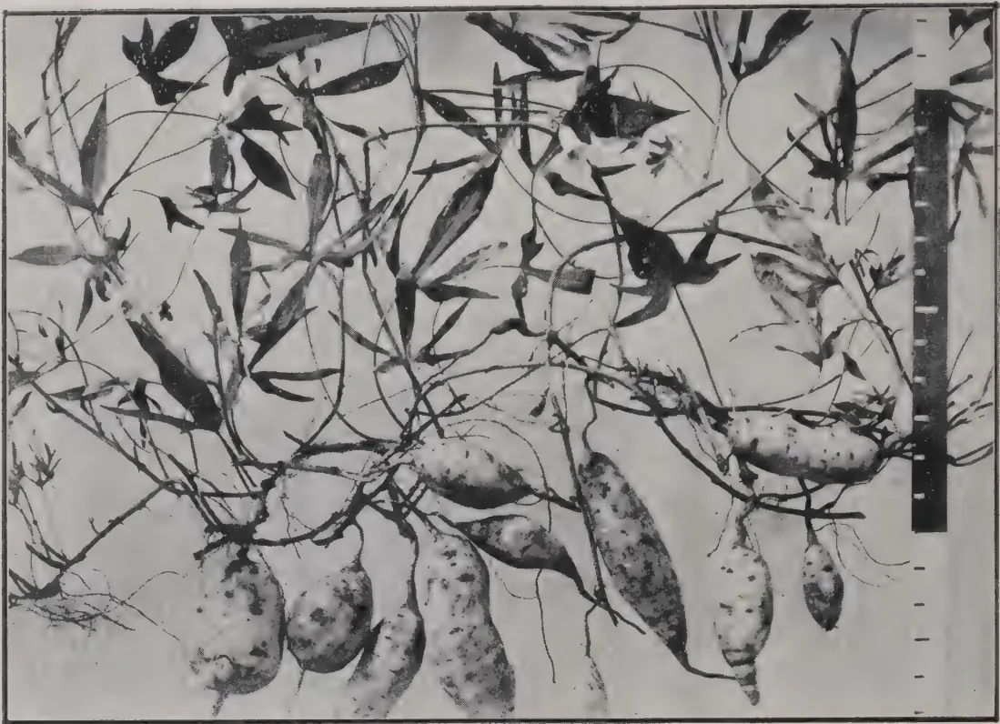
Photo by H. F. Macmillan
THE "CLUSTER" VARIETY OF SWEET-POTATO.
(Ipomoea Batatas.)
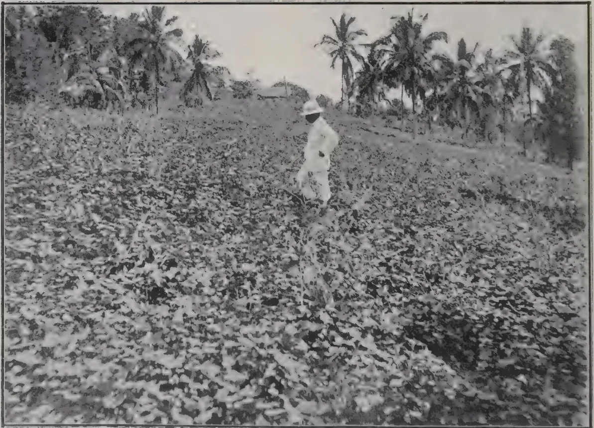
Photo by H. F. Macmillan
A FIELD OF SWEET-POTATOES, NEAR KANDY.
[ See page 448 ]
VOL. XLIII.
COLOMBO, DECEMBER, 1914.
No. 6.
The results of the Cocoa manuring experiments at Peradeniya brought up to March 1914 have just been issued as a Bulletin (No. 14) of the Department of Agriculture. The experiments have been in progress since 1906 but we must await the results of several years yet before any final conclusions can be drawn. The Bulletin contains, however, some interesting figures well worth the study of planters.
Manures were applied annually from 1906 to 1911 and then discontinued. Looking first at the results of these years we find the Ammonium sulphate plot heading the list among the 22 under trial. The deduction is first that in these experiments nitrogen proved the dominant manure for Cocoa and that when the applications were yearly this was best applied as Sulphate of Ammonia, a quick-acting manure. After the application of manure ceased Sulphate of ammonia gave way to Castor cake and Blood meal. The latter for some reasons not clear did very badly for the first six years.
Next to the nitrogenous plots the most successful was Potassium sulphate. It maintained a good position (5th and 4th) in the years following the cessation of manures. Phosphoric acid occupied a lower place than Potash taking the period through, though in 1912-13 it rose rapidly to second place. In the manured years the quick-acting Concentrated superphosphate kept ahead of Bone dust but the positions have now begun to be reversed. Groundnut cake proved disappointing. During the
404[DECEMBER, 1914.years 1906-12 it was ninth. It rose to third place the following year but dropped to 13th last year. Fish was high up during the manuring years; was first in 1912-13 and then fell away badly. But for yearly, or even alternate-year, manuring Fish is obviously worth a place in mixtures. Nitrate of soda did indifferently. The most striking fact brought out by these experiments is the decline in crop as the effects of the manures became exhausted. The average for all the plots during 1906-12 was 4.7 cwt. per acre; in 1913-14, three years after the last application of manures, the average yield dropped to 3 cwt. In the Ammonia, Potassium sulphate, Concentrated superphosphate, Castor cake and Fish plots the corresponding figures are 5.4 cwt. and 3.6 cwt.
The plots, as we have stated, were manured till 1911. 1912-13 was the first year allowed to pass without manure. The mean yields of the 22 plots for this year show a slight increase over those of the average for the previous 7 years—5 cwt. as against 4.7. This suggests that with yearly applications the unexhausted value of the manures when accumulated for several years has as much effect upon a particular crop as the manures applied that year and it illustrates the advantage of keeping land in good heart. It should not, however, be inferred that alternate manuring is as good as yearly. Under such a system the unexhausted value in any given year would be only half of that under a system of yearly manuring.
The plots show great variations in their relative positions so, as has been stated, no final conclusions are yet permissible as to what manure or mixtures are most suitable for Cocoa under conditions corresponding to those of Peradeniya. At the same time the results will serve as a guide. There can be no doubt, however, about the lesson they teach as to the advantages of manuring generally speaking. Each planter can work out for himself the profit an additional cwt. of cocoa per acre would return him on the outlay on the manure. With normal prices it should amount to cent. per cent.
R. N. L.
DECEMBER, 1914.]405LEONARD SMITH.
Great care must be taken in choosing the site of a rubber estate factory. A central position, a good water supply, and a suitable road leading from the factory to the main roads are important factors in the choosing of a factory site.
Corrugated iron buildings are the best and cheapest for use in the tropics, but they are liable to become very hot, and should be painted outside with a cooling composition. A jack roof at the ridge of the building will give a free current of air, and skylights let into each bay of the roof should be partitioned off from the factory, thus making a separate room. Shallow glazed tile tanks should also be built on the verandah for the reception of tree scraps, bark shavings, etc. The floors of the factory, coagulating shed and verandahs must be made of concrete with a thick top dressing of cement.
There are quite a number of efficient machines on the market for the preparation of plantation rubber, and the whole battery should be of one type, thus dispensing with the necessity of keeping a large stock of spare parts for different makes of the machines. Seven machines are required to deal with a crop of 500,000 lb., and should consist of two smooth roller machines, one marking roller machine for the finishing of sheet rubber, and one scrap washer, which should be fixed outside the factory on the verandah. The rollers should be made of deep chilled cast iron. The foundations of the machines should be raised about 9 inches above the floor of the factory, and the top laid with glazed tiles. Drains should be made around the foundations for carrying off the water used during the washing process, and screens put at each outlet to prevent any small pieces of rubber being washed away into the main drain. A light girder should be fixed over the machines, about 8 feet high, so that a pair of chain pulley blocks on runners can be used for the changing of the rollers when necessary.
Gas or oil engines can be installed, but if the gas engines are used the generators should be placed outside the factory.
Two engines of 65 B.H.P. of the same type should be installed, one of which would act as a stand by in the event of a break-down.
By keeping a complete set of spare parts any loss from delay would be reduced to a minimum.
406[DECEMBER, 1914.A hot air drier should be included in the plant. This does away with the large drying-rooms which are necessary if crepe rubber is air-dried. Crepe rubber dried by the hot air process is ready for packing in five or six days from the time the latex is brought into the factory. A drier after the style of the Colombo Commercial Company is easily worked, and the advantage over the vacuum drier is that each chamber being a separate unit, the rubber in any one chamber can be examined during the drying process without interfering with the working of the other chambers. With a drier of six chambers the various grades of rubber of a day's crop are dry by the next day.
An iron building 60 ft. by 40 ft. running north and south will be sufficient for drying purposes, provided the crepe rubber is dried by a heating apparatus. It should be a lofty, single-storey building, having plenty of ventilation. The slats over which the crepe is hung should not be fixed less than 6 inches apart, so as to allow a good circulation of air between the strips of rubber.
Louvre windows should be fitted, which not only give excellent light and ventilation, but also exclude the sun's rays from directly striking the rubber and causing tackiness.
The floor should be made of concrete, with a top dressing of cement.
The smoke house should be a two-storey building, 135 feet long and 30 feet wide. It should be divided into three separate rooms, 45 feet by 30 feet, each having its own entrance. This allows of one room, irrespective of the others, being filled with sheet, smoking being continued day and night, and an even temperature maintained till the rubber is ready for packing. On the other hand, if the smoke house is a continuous building, it has to be opened daily to hang up each day's rubber, thus causing a fall of temperature. The openings in the floor should be covered with a fine mesh wire gauze, to prevent dust getting into the upper room where the rubber is hung. Three shallow furnaces should be provided for each room, and baffle plates fixed about two feet above each furnace, to prevent sparks rising. Four racks 26 feet long, 4 feet wide, and 8 feet high, running the length of the building should be erected in each room. This will leave a passage of about 2 feet round each rack, and each room will accommodate from 10,000 to 12,000 lb. of sheet rubber.
The packing room should be a separate building, 40 feet by 30 feet, built close to the smoke house and drying room. The floor should be made of concrete, with a thick top dressing of cement.
A narrow-gauge light railway, running from the verandah through the factory, and continued to the drying and packing rooms is a great labour-saver for the handling of the rubber after manufacture.
DECEMBER, 1914.]407Smoked Sheets.—A uniform quality is the main object to be attained, which can only be acquired by bulking the whole of the day's latex on its arrival at the factory. The factory is equipped for the manufacture of 500,000 lb. per annum, and of this 70 per cent., or 350,000 lb., should be made into sheet rubber. Assuming 300 working days in the year, it will be seen that the daily output of sheet will be about 1,170 lb. For the bulking of the latex a shallow glazed tile tank must be built. Taking on an average that 1 gallon of latex contains lb. of dry rubber, a tank with a capacity of 780 gallons is required. The size of the tank will be 40 feet long, 6 feet 3 inches wide, and 6 inches deep. By weighing the latex on arrival at the factory, the quantity received from various fields can be ascertained.
No tapping coolies should be allowed into the factory or the coagulating room, as they bring in a lot of dirt, especially after the wet weather. The latex should be received on the open verandah by one of the coagulating room coolies, and poured into the tank by a fine mesh strainer. It may happen that some time elapses between the first and the last lot of latex arriving at the factory, and natural coagulation may set in, but this is easily overcome by the use of an anti-coagulant, such as formalin or sodium sulphite, neither of which chemicals interfere in any way with the quality of the finished rubber. After the whole of the latex has been strained into the tank, it must be thoroughly mixed by means of broad paddles, and afterwards skimmed ready for coagulation. The tank is now divided into 13 sections, each containing 60 gallons. Acetic acid is the coagulant generally used, and should be made up into a stock solution of one part of acid to 25 parts of water, 1 gallon of this solution used to every section of 60 gallons. The acetic acid must be well stirred into the latex with broad paddles, skimmings taken off, and partitions fixed about 2 inches apart, so as to form long narrow strips of coagulum. Coagulation should be allowed to take place over night. Next morning the strips of coagulum can be cut up into lengths of about 12 inches, and rolled out into sheets. The sheets should be rolled through the smooth rollers to a thickness of inch to inch, put through the marking rollers, and then hung on racks in the factory to allow all the surface water to drain off, previous to being hung in the smoke house. Old timber from the clearings, etc., with a few coconut husks are good enough to supply the smoke for curing the sheets. Smoking must be continued at an even temperature of not more than 120 degrees. Maximum and minimum thermometers should be used in the smoke house, and examined night and morning, thus keeping a check on the coolies in charge of the smoking operations. Sheets rolled as above are thoroughly dry and smoke cured in 23 to 25 days.
Lump Crepe Rubber.—Coolies' buckets on arrival at the factory contain a certain amount of naturally coagulated latex known as lump, from which the latex should be well squeezed. This lump should be put through the macerator rollers without delay, as oxidation setting in causes streaky strips in the finished rubber. Crepe made from naturally coagulated lump is greatly improved in appearance if soaked for one night in a 2 per cent. solution of sodium bi-sulphite.
408[DECEMBER, 1914.Tree Scrap, Bark Scrap, and Earth Rubber Crepes.—All the above rubber is treated practically in the same manner. It should not be left lying about in heaps, but should be washed in the scrap washer and made up into crepe as soon as possible. If it is found impossible to finish all the grades the same day, the tree scrap can be left soaking in water in one of the glazed tile tanks on the verandah, and worked off next morning.
Drying of Crepe with "Hot Air Drier."—The drying of the various grades of crepe rubber should only take from to 2 hours, provided the strips have been rolled thin. Care must be taken as to the temperatures at which they are dried. Lump crepe should be dried at 150 degrees, tree scrap and bark scrap at 140 degrees, and earth rubber at 130 degrees. The earth rubber should be closely watched, as it is likely to get very tacky if dried at too high a temperature. The crepe as it comes from the drier is slightly sticky, but if allowed to cool and re-rolled into blanket crepe, to a thickness of inch, all signs of stickiness disappear. It should now be hung in the drying room, to allow the surface water to drain off, and is ready for packing in about four days.
Packing and Weighing.—The inside of the packing chests should be planed smooth to prevent splinters getting into the rubber. It is best to finish packing one grade at a time, thus preventing mistakes in marking. The chests should be secured with hoop iron, and the grade, net weight and gross weights stencilled on the lid.
All latex should be made into smoked sheet and not into first latex crepe, as there is a distinct loss of at least per cent. in making crepe. This is due to the amount of re-rolling necessary in the manufacture of crepe, and certain substances are washed away during the process. It has been stated that the above-mentioned method of making sheet is not practicable, as it is impossible to coagulate latex in such a large quantity, but the writer has had an 800 gallon tank in use for the past years with great success.—
THE INDIA RUBBER JOURNAL.
At the annual meeting of the Rubber Share and Finance Trust, MR E. L. I. BLYTH, in seconding the adoption of the report, made some statements in connection with plantation rubber that will be of interest. He prefaced his remarks by saying that possibly he could give shareholders a little information on the rubber industry from the manufacturer's point of view which might be interesting. It was a fact that at the present time scientific manufacturers could use plantation rubber for 90 per cent. of their output, and there was no reason why, in a short time—with further experiment, and possibly as the result of changes in the actual latex, which might occur when they got rubber from older trees, such as was the case with the rubber they received from South America—they should not supersede it to the extent of 90 per cent. Certainly, the plantations had not helped the manufacturers much in the direction of using plantation rubber. Manufacturers were compelled to take an immense amount of trouble in the form of testing before
DECEMBER, 1914.]409they could use plantation rubber. Never did they get two batches of rubber, even from the same plantation, which could be used without the most scientific testing, both practical and chemical. In the case of hard fine Para they could use 1,000 tons, gathered from anywhere so long as it was "hard fine," without changing their methods; but for each batch of plantation rubber they had to carry out tests at great expense and at considerable waste of time and loss of material. If the plantations would only agree to some recognised system of preparing their rubber, all that difficulty would disappear. There was not the slightest doubt that the small manufacturers were frightened to use plantation rubber, because they had not the scientific staff, both practical and technical, needed to deal with the commodity. They were obliged to confine themselves to "hard fine," because they knew the results, under a certain procedure, were always the same. South American rubber, whether it was old or new, gave the same result. The Chairman had told them that rubber could be stored. That was a fact. They could keep rubber, but they could not keep plantation rubber. They could keep fine hard Para as long as they liked, but they could not keep plantation rubber, because it went mouldy, and was affected in various ways. Much of that arose from the methods of curing, but the fact remained that at the present time they could use plantation rubber for manufacturers to the extent of 90 per cent., and there was no reason why, in a short time, they should not be able to supplant South American rubber. It lay very much with the plantation companies themselves.—INDIA RUBBER JOURNAL.
N. C. S. BOSANQUET.
This subject has been so often discussed, and the experiments made in connection with it have differed so largely that I feel the results of experiments over rather more than a year may be of interest. Personally, I have no hesitation in saying that the alternate day system of tapping gives the best results in every way:—
In making experiments planters are apt to overlook the fact that a few months' alteration in a tapping system does not constitute a fair experiment, and I have constantly heard the remark, "Oh, we tried the alternate-day for three months, but the results were so appalling that we knocked it off." Obviously they would be appalling for the first few months, the trees having been made accustomed to every-day tapping take some time before yielding to the alternate day, but at the same time an increase in the yield per tree per tapping is an almost immediate result of alternate tapping. On one estate the best yield per tree on daily tapping was 4.21 grams, the second month of alternate-day tapping showed 5.77 grams, while in the corresponding month of the following year the yield per tree was 7.60 grams. That is to say in January, 1913, 3,992 lb. were produced at a cost of 1,357 guilders on every day tapping, the following January showed 6,045 lb. costing 1,069 guilders. The above "costs" represent in each case tapping and manufacture
410[DECEMBER, 1914.only, and the yields and costs per pound work out as follows :—
1. Every-day tapping.—3,992 lb. at 34 cents per lb. from 16,142 trees = at the rate of 2.33 lb. per tree per annum.
2. Alternate day.—6,045 lb. at 17.7 cents per lb. from 25,448 trees = 2.84 lb. per tree per annum.
3. Alternate day.—8,892 lb. at 12.4 cents per lb. from 27,481 trees = 3.87 lb. per tree per annum.
It must further be noticed that in the alternate-day tapping new and younger trees to the number of 9,306, and then a further 2,033 are included in the figures shown. As regards costs, there can, I think, be no question as to the cheaper method—alternate-day tapping can be calculated to rather more than halve the cost of tapping, while less assistants are needed on the estate, and a considerable saving is made in tools. On an estate in full bearing the decrease in the cost of line room required, and consequent upkeep of lines is also considerable.
With regard to bark saving. On an experiment carried out over one year, the bark on alternate-day tapping lasted just about five months longer than on every day. The contention that the bark dries back on the cut in consequence of a longer tapping interval is certainly true, and alternate-day does not show half the bark used as against every-day tapping, but in every case I have found an enormous saving in bark removal.
Finally, as regards labour an estate of 1,000 acres with coolies tapping 300 trees and planted 100 trees per acre will require 330 tappers, and in these days of labour difficulties, the reduction of 165 tappers is more than worthy of attention. I am encouraged to touch on the tapping interval, as I think I am correct in saying that daily tapping is practically universal in Java, while I know that many properties in the Straits still practise it. The following yield and cost price figures as a comparison between the two systems may be of interest :—
| Tappers. | Crop. | Yield per tree grams. |
Cost per lb. cents. | Rainfall, m.m. | Rain days. | Trees tapped per day. |
Total trees tapped for the month. |
System. | |
|---|---|---|---|---|---|---|---|---|---|
| October ... | 1,243 | 1,841 | 2.32 | 29 | 338 | 11 | 11,903 | 357,090 | Every day tapping. |
| November... | 1,064 | 2,275 | 3.00 | 20 | 338 | 17 | 11,375 | 340,270 | |
| December... | 1,000 | 1,676 | 3.03 | 19 | 332 | 16 | 8,297 | 248,910 | |
| January ... | 590 | 1,608 | 4.54 | 13 | 384 | 18 | 5,312 | 159,380 | Showing the last 3 months of one year's tapping on every day system. |
| February... | 373 | 1,342 | 4.75 | 14 | 478 | 20 | 4,237 | 127,130 | |
| March ... | 650 | 1,594 | 3.95 | 13 | 375 | 18 | 6,053 | 181,590 | |
| April ... | 566 | 1,625 | 4.78 | 13 | 340 | 12 | 5,099 | 152,981 | Alternate day tapping in January. |
| May ... | 619 | 2,212 | 6.50 | 12 | 331 | 11 | 5,105 | 153,154 | |
| June ... | 602 | 2,515 | 6.75 | 11 | 214 | 7 | 5,588 | 167,660 |
In February there were 11 days with no tapping owing to rain, and in December and March 10 days in each month. The results show that in the sixth month of the alternate-day tapping a larger crop was secured than in the best month of the every-day tapping. June and December the yield per tree more than doubled, and the cost per pound nearly halved. Taking months with an equivalent rainfall, October and May both had 11 days' rain with 338 and 331 mm. respectively ; the results are practically the same as in June and December. The above figures are taken from a 94 acre clearing of seven-year-old rubber.—INDIA RUBBER JOURNAL.
H. K. RUTHERFORD.
I find on nine estates in the F.M.S., comprising 13,464 cultivated acres, the labour force consists of 68 per cent. men, 21 per cent. women, and 11 per cent. children, and that the number of labourers of all these classes is one to every 2.13 acres in cultivation.
In Ceylon on eight estates, comprising 6,496 cultivated acres, the labour force is made up of 57 per cent. men, 34 per cent. women, and 9 per cent. children, and there is one labourer to 1.50 acres. The higher percentage of women in Ceylon arises probably from the fact that women, being so largely employed on the tea estates, remain on these properties when converted into rubber estates, and also that the Tamil coolies in the F.M.S. do not make that country their permanent home as they do in Ceylon, but return to their families in India after a few years' work.
It will be seen that while in Ceylon it requires one cooly for 1.50 acres, in the F.M.S. the ratio is 1 to 2.13 acres. This is accounted for by the fact that while in the F.M.S. manurial operations are carried out to a very limited extent and confined to liming the ground, intensive manuring is a necessity in Ceylon, and it requires a greater labour force accordingly per acre.
Estates generally speaking are much larger in the F.M.S. than in Ceylon. Of the estates for which I have figures the average cultivated acreage of the former is 1,500 acres, as against 580 acres in Ceylon. In the former there is one European to 348 acres, while in the latter one to 385 acres. This does not show so much difference as one would expect. The estates in the F.M.S. are generally very flat, and more easily traversed than those in Ceylon, which are broken up and hilly, and therefore the latter might naturally on that account require more supervision when to the work is added the manurial operations, for which, of course, supervision is necessary. The yield of rubber, however, is heavier on F.M.S. estates, and this again should entail more supervision. It has also to be taken into consideration that on every estate in the F.M.S. there are always one or two
412[DECEMBER, 1914.assistants on leave, and these are taken into account in the above calculations, which reduces the acreage supervised per man. On balance, however, it would appear that the two countries are about equal in the European staff required to work the estates. Complaints are often made of the expensive nature of European supervision in the F.M.S. as compared with Ceylon. I find that when fees to visiting agents and salaries and allowances to superintendent and assistants are taken together, the result is that the cost in the F.M.S. is 2s. 6d. per cultivated acre per annum in excess of Ceylon. When the higher cost of living, and the feverish character of the country is taken into consideration, this increase does not seem unreasonable.
In this item of expenditure, we see at once that the F.M.S. is at a distinct disadvantage as regards the health of its labour force as compared with Ceylon, for it costs 7s. per acre per annum to provide for medical wants of the coolies, against 5s. 6d. per acre in Ceylon, and this latter includes an export tax for medical aid. Doubtless in time when the remedial measures now being taken in hand to prevent malaria are perfected, the cost will be considerably reduced.
As is well known, the systems adopted in the two countries for supplying estates with labour are entirely different. In Ceylon this is effected by advancing the Canganies (headmen) monies to supply the labour force required, such advances being recoverable from the coolies' earnings. As matters stand at present in Ceylon, the average indebtedness of the cooly may be taken at Rs. 70. If we assume that only Rs. 20 of that amount will ever be recovered there is a loss of Rs. 50 per head, which spread over five years, or at one cooly to acres, equals Rs. 6'66 per acre per annum. In the F.M.S. the Government controls the immigration of labour, and charges the estates their proportion of costs, but in addition the estate pays for sending headmen to India and for quarantine and other outlays. These charges, on the estates whose figures I have, amount to Rs. 5'60 per cultivated acre per annum, say 13s. against Ceylon's 8s. 10d. In very many instances Ceylon's annual outlay would not amount to anything approaching 8s. 10d. per acre, as coolies remain much longer than five years.
In Ceylon this averages 13s. 3d. per acre per annum, and in the F.M.S. it is 14s. 9d.
While in Ceylon the cost is only 1s. 4d. per acre; on the other hand, owing to fomes and white ants the cost of this item averages 4s. per acre in the F.M.S.
There is practically little difference in this item, the cost in both cases being about 3s. 3d. per acre per annum.
Quit Rent varies in the F.M.S. from 6s. to 9s. per acre per annum according to the terms on which the land was acquired from Government. In Ceylon the lands are freehold, and the interest on the purchase price would range from 6d. to 1s. per acre.
DECEMBER, 1914.]413In some districts in the F.M.S. these works have been carried out by Government, and an annual assessment made on the estates benefited by these measures. In Ceylon, on the other hand, nowhere are drainage works required, and as a rule estates are naturally well supplied with water, and any works necessary are carried out at the sole expense of the estate.
Sundry Expenses such as stationery, fire insurances, cattle, and contingencies are common to both in the matter of expenditure, and need not here be compared.
I find that salaries, allowances, medical, recruiting and contingencies which are classed as a rule under the head of "general charges" in the F.M.S., amount to 64s. 6d. per acre, as compared with 47s. 6d. in Ceylon, and that in the matter of cultivation, which includes weeding, upkeep of roads and drains, diseases and pests, tools and sundry items, the cost equals 23s. per acre in the F.M.S. and 20s. in Ceylon, but if we add to this the cost of manuring at the rate of 9s. per acre in the F.M.S. and 35s in Ceylon, we have the relative costs of cultivation brought to 55s per acre for Ceylon, as compared with 32s. in the F.M.S.
In the F.M.S. the export tax on rubber, when at 2s. per lb., and at a yield of 300 lb. per acre, is equivalent to a tax of 15s. per acre. In Ceylon the export tax in a like yield would amount to 3s. per acre, but this has been already included under the head of "medical charges" mentioned above.
I do not intend here to deal with the cost of harvesting, curing, and shipping the rubber, but may do so at some other time, and then show the total cost per lb. of producing the rubber in both countries delivered in London.—INDIA RUBBER JOURNAL.
The remarks of SIR WILLIAM CROOKS a short while ago in his presidential address, delivered before the Society of Chemical Industry, show that this eminent authority recognises the value of the scientific work done in this line. DR. CROOKS said in part: "Recent work on the synthesis of rubber has attracted much attention and notable advances have been made. As long ago as 1882 TILDEN noticed that isoprene was converted into rubber by certain chemical reagents; ten years later he showed that this product was capable of vulcanization. Subsequent work led to the recognition of the fact that most substances containing a conjugated double linkage tend to polymerize, the polymers ranging from stick substances through well-defined rubbers to hard resins. Polymerization may be spontaneous or it may be brought about by reagents, acids or alkalies, by heat or by sunlight."
In 1908, C. HARRIES and F. W. MATTHEWS simultaneously discovered that metallic sodium is an excellent reagent for the polymerization of isoprene. The action is practically quantitative and not affected by impurities. Moreover, it takes place in the cold or by only moderate heating.
PROFESSOR HARRIES showed that a superior product could be obtained by the polymerization of butadiene. Research showed that isoamyl-alcohol obtained from fusel oil was a most suitable material to work on. By means
414[DECEMBER, 1914.of dry hydrochloric acid gas it was converted into chloride, then chlorinated to give the double chloride, from which the hydrochloride acid was eliminated by passing over hot soda lime. The isoprene so formed was then sealed up with 3 per cent. thin sodium wire and heated for several days to 60 degrees. The dark brown product thus formed was treated with acetone to precipitate the rubber. To obtain the fusel oil FERNBACH has worked out a new process of fermentation starting with starch.
HOLT has recently made some valuable discoveries relating to the manufacture of isoprene from the pentanes found in petroleum oil, and the preparation of butadiene from benzene or phenol, tetra hydro-benzene being formed as an intermediate product. He has also observed that when isoprene is treated with sodium in an atmosphere of carbonic acid gas it gives quite different products from those obtained by the same action in air. Recent work shows that all synthetic caoutchoucs differ chemically from the natural rubber. Physically they are only equal to medium grade natural rubbers.—INDIA RUBBER WORLD.
The young plants of Robusta coffee planted out next the parent plot, have developed both the leaf disease (Hemeleia vastatrix) and the scale (Coccus viridis) both of which are present to a slight extent on the parent bushes which do not seem to be very much affected in general appearance. These young plants have no established shade.
Some year-old Robusta stumps raised from the same seed, were planted out in June under dense, established shade of Leucaena glauca, next a plot of Liberian coffee suffering heavily from both pests and there is no sign of the Robusta plants having been affected from them.—E. S. P. PROGRESS REPORT.
"We generally pay for these kernels about 40s per cwt. nett weight, cases free, goods put up in 2 cwt. cases. This refers to the slightly roasted kernels in order to free them from their hard shell and only the fine thin brown husk adhering to the kernels. We buy annually about 100 tons, and would be extremely pleased if you would kindly put us in contact with one or several serious firms in whose shipments we may have entire faith, as we are disposed to order this stuff, payment against shipping documents. Please note that the above-named price is to be understood c.i.f. Havre, shipment by steamer not touching a European port before coming to France in order to permit us to enter the goods without special duty obtained from all Colonial goods imported into France via any European country."—
TRINIDAD AND TOBAGO BULLETIN (MARCH-APRIL).
DECEMBER, 1914.]415The afternoon (of Friday, June 26th) discussion on cacao established the fact more plainly than ever of how widely diverse are the views of the leading authorities as to why and how cacao beans are fermented and which is the best way for the work to be done. M. PERROT was present and discussed his system, whilst MESSRS. BOOTH and KNAPP, of MESSRS. CADBURY BROS., LTD., told us about the qualities in cacao that the manufacturers desire, and MR. DAVIES, the Chemist, we believe, attached to the works of MESSRS. ROWNTREE & Co., LTD. (York), disagreed with M. PERROT and the authors who contributed the essays published in our book, "The Fermentation of Cacao." M. PERROT spoke at some length on the subject, but we must own that, with all our willingness to do so, we are unable to reconcile the different opinions advanced by the various authorities. It is the old trouble, noted in our book on p. xxii of the preface, and now M. PERROT's ideas are again different to all the others. MR. BOOTH, who read the paper by himself, and MR. KNAPP, warned planters against seeking to dry their cacao too rapidly. We are glad of this, for, as DR. SACK said (p. xxiii of preface in our book), "Experiments at the same time made it quite clear why the old method, by which the drying was done slowly, yielded a product which far surpassed in quality the cacao that was rapidly dried, for with a slow process of drying the reactions will continue for some considerable time. With rapid drying they will speedily cease." There is no doubt, therefore, that too much attention cannot be paid by engineers who design and make the machines, and planters who use them, to these warnings.
Further comment is not necessary now. Had there been time we would have taken part in the discussion re "fine" and "ordinary" grades. "I know if I were a planter," said MR. DAVIES, in no hesitating tone, "I would not ferment my cacao"; but at the same time care, even with the commonest cacao, must be taken to send the beans to market quite sound and free from mould externally and internally, the latter especially. Bahia this year, owing to the floods, etc., has suffered severely through the percentage of unsound cacao it had to export, so that although better prepared than is common to fair West African, it is, at present, not sought after. It is true that some of the low quality, "cheesy" Jamaican, that we see now and then sells low, but we wonder sometimes whether, when the weather is hopelessly bad, it would not pay the Bahia planters better to ship unfermented cacao, as then the beans internally are less liable to become mouldy, and although such cacao would sell low compared with superior, it might still realise better net proceeds than much of what has been exported from Bahia this year, or is still held up country waiting for buyers.
416[DECEMBER, 1914.M. LEPLAE Director-General of Agriculture, Colonial Office, Brussels, speaking on the paper by MR. CLAESSENS, also of the Belgian Colonial Office, entitled "Notes on Cacao Cultivation in the Mayumbe District, Belgian Congo," told us that the rainfall in that district was very unevenly distributed throughout the year, there being a long period without any rain at all. Although the trees gave an average yield of lb. a tree, these spells of drought caused them to die off in about fourteen years, so that the planters were always having to put in new trees and plant up fresh areas. "The only remedy, it seems to me," concluded M. LEPLAE, is to adopt some form of irrigation. Can this be done? Has any one any experience of cacao planting under irrigation, and with what results?" To this a planter, a MR. MAXWELL, we understood, told us during the discussion that in one district in Colombia (South America) irrigation had to be resorted to and gave satisfactory results. Unfortunately, when the meeting broke up, we were unable to obtain further particulars from MR. MAXWELL, but hope to do so later on. The fact remained, however, that cacao in at least one district had to be irrigated, and was being produced at a profit under irrigation; and discussing the matter afterwards with M. LEPLAE, he told us that in the Colombian case the land was flooded every fortnight or so, when, the soil being of a somewhat sandy nature, the excess of moisture soon drained off and passed through the ground. In Venezuela also, our esteemed Belgian Colleague told us, irrigation was in force, in one case down a hill, when he believed small gullies were cut to guide the water, but that seemed doubtful. Sent broadcast over the land at the side of a hill a serious erosion of soil would ensue, but as it is important, both on the flat as well as on the hill land, to direct the water to the roots we would certainly recommend, where the ground is hilly or even sloping, that the land some 4 feet round the lower side of the tree should be loosened and banked up to catch and check the moisture and holes perhaps made on the upper side of the slopes to conduct the water down to the roots.—
TROPICAL LIFE.
In September when the Station was looking its very best, a large party of Agricultural Instructors was personally conducted round by the Director, the Secretary of the Ceylon Agricultural Society, and the Manager, and all the cultivation explained to them. On the following day between 40 and 50 Kandyan Village Headmen headed by their Ratamahatmayas were conducted round by the Manager. They all expressed the greatest interest, especially in the Dura and the flour made from it, and were most anxious to secure seed.
On the next day, a large party of students from Trinity College were likewise conducted round.
The Maharajah and Maharanee of Kapurthala were personally shown all over the Station and expressed the greatest interest.
PROFESSOR ARMSTRONG, F.R.S., also made several visits and collected many plants and seeds.—PROGRESS REPORT.
DECEMBER, 1914.]417The eighth picking of 1914 was made on September 9th. The number of nuts collected was 1964 from 353 trees. This gives a total of 11,348 nuts for the pickings of 1914, to date, from an area of acres, composed of 17 acres of 6 year old and acres of 7 year old trees (No. of trees per acre being 70).
In the cultivated area (6 year old trees) consisting of 1,224 trees, 315 trees gave 1,815 nuts, an average of 5.75 nuts per tree.
In the uncultivated area (7 year old trees) consisting of 449 trees, 38 trees gave 149 nuts, an average of 4 nuts per tree.
With regard to copra production, the following figures have been obtained:—
| Picking. | Break. | Rejections. | Copra lb. | Nuts per candy. |
|---|---|---|---|---|
| Combined Plots. | (560 lb). | |||
| June | 2781 | 1 | 1390 | 1109 |
| Rat eaten | ||||
| July | 2364 | 36 | 0 | 1016 |
| Plot A. | 1303 | |||
| June | 2522 | 1 | 1294 | 1080 |
| July | 2193 | 0 | 936 | 1312 |
| Plot B. | ||||
| June | 259 | 1 | 96 | 1499 |
| July | 171 | 1 | 80 | 1183 |
—PROGRESS REPORT, MAHA-ILUPPALAMA.
Coconut cake is made from the fleshy portion of the coconut after the oil has been extracted. It is not largely used for feeding in this country but is in considerable request on the Continent.
An average sample of coconut cake may contain 22 per cent. of albuminoids and 10 per cent. of oil; it is thus not so rich in flesh-forming substances as linseed cake, but in other respects is not dissimilar to that feeding stuff. On the Continent coconut cake is favoured as a food for dairy stock. It is fed in quantities of from 3 to 4 lb. a day, and is said to be eaten readily. Reliable data as to its uses for stock feeding in this country are lacking. Theoretically it should be about equal to linseed cake, and farmers would be well advised to give it a trial if it can be purchased, as it is not unlikely that it may be, at three-fourths of the price of linseed cake.
JOURNAL OF THE BOARD OF AGRICULTURE.
418[DECEMBER, 1914.The supply of bran, it is stated, has enormously increased in this country in recent years, owing to the great development of the British milling industry; and its proper utilisation is at present a question of considerable economic importance to agriculturists. Beyond a somewhat limited use in the feeding of dairy cows, and the employment of an even smaller amount in the case of other classes of farm stock, bran has hitherto received little attention from the stock feeders in this country. In composition bran is more like oats than any other reeding stuff. To make up for its low nutritive value, as compared with linseed cake and coconut cake, a slightly larger quantity was allowed in these experiments. The bran used was what is known as medium bran. The supply of coconut cake is gradually increasing, and analysis indicates that it is a rich feeding stuff containing about 10 per cent. oil, 22 per cent. albuminoids and 36 per cent. carbohydrates.
Forty-two two-year old Irish-bred bullocks were divided as equally as possible into six lots each of seven cattle, two lots being fed on each foodstuff. The basal ration was 4 lb. cotton cake, 90 lb. swedes and 12 lb. oat straw; and, after a preliminary period, the quantities of the foods under trial fed were 4 lb. per head per day of each, the quantity of bran being increased to 5 lb. at the end of the second month and to 6 lb. at the end of the third. The bran was fed dry, and the cattle ate it readily out of their ordinary troughs without waste. The coconut cake was steeped in twice its weight of water, but it is stated that the utility of this measure was doubtful seeing that the animals received plenty of swedes.
The increases in live weight were determined after the experiment had proceeded for four months, as some of the animals were then fat. The average increase in live weight per head per day was from linseed cake 2.25 lb.; from coconut cake 1.91 lb.; and from bran 2.02 lb. In reckoning the cost of the increase these foods were taken at their actual cost less the estimated value of their manurial residue; this gave a net food value for linseed cake of £8 13s. 9d., coconut cake £6 15s. and bran £5 1s. 3d. per ton. The cost of feeding per cwt. live weight increase was:—linseed cake 44s. 4½d., coconut cake 48s. 5d., and bran 44s. 1½d.
Twenty-seven of the cattle, representing equally each kind of feeding, were marketed for comparison; the average prices realised per cwt. were:—linseed cake lot 42s. 8d., coconut cake lot 42s. 10d., and bran lot 43s. 4d. These prices were not, however, made a basis for comparison, the live weight
DECEMBER, 1914.]419in all cases being reckoned at 41s. per cwt., with the following financial results:—
| Linseed Cake | Coconut Cake | Bran. | |||||||
|---|---|---|---|---|---|---|---|---|---|
| c. | q. | lb. | c. | q. | lb. | c. | q. | lb. | |
| Weight at start—14 store bullocks ... | 126 | 2 | 26 | 129 | 1 | 11 | 128 | 2 | 2 |
| Weight at finish—14 fat bullocks ... | 158 | 1 | 3 | 156 | 0 | 2 | 156 | 3 | 10 |
| Total increase ... | 31 | 2 | 5 | 26 | 2 | 19 | 28 | 1 | 8 |
| £. | s. | d. | £. | s. | d. | £. | s. | d. | |
| Net cost of food consumed ... | 70 | 0 | 0 | 64 | 11 | 6 | 62 | 10 | 2 |
| Value at start at 34s. per cwt. ... | 215 | 8 | 10 | 219 | 17 | 10 | 218 | 9 | 7 |
| Value at finish at 41s. per cwt. ... | 324 | 9 | 4 | 319 | 16 | 9 | 321 | 7 | 0 |
| Difference gross profit ... | 39 | 0 | 6 | 35 | 7 | 5 | 40 | 7 | 3 |
| Gain (+) or loss (—) compared with linseed cake fed cattle ... |
— | —3 | 13 | 1 | +1 | 6 | 9 | ||
These figures indicate that the outlay on bran brought £1 6s. 9d. more profit, and on coconut cake £3 13s. 1d. less profit than the outlay on linseed cake. The experiment shows that when linseed cake costs £10 11s. 3d. per ton, coconut cake and bran are worth respectively £7 1s. 5d. and £6 16s. 10d., whereas the prices actually paid for these two foods were respectively £8 7s. 6d. and £6 8s. 9d. The feeder could therefore, have afforded to pay 8s. 1d. more per ton for his bran and yet have made the same profit as from linseed cake.
Reports as to the quality of the beef were obtained from purchasers, who in most cases not only killed the animals but cut up the beef and retailed it from their shops. These reports testified to the high quality of the beef, no distinctions being made. The cattle fed on linseed cake yielded 58.55 per cent. of the live weight as dressed carcass, those on coconut cake 58.67 and those on bran 60 per cent.—JOURNAL OF THE BOARD OF AGRICULTURE.
Most work in the way of selection is in progress at Hagari where the object in view is not only to get a heavier yielding strain but also, if possible, to get that on a plant with a dull grey midrib along the leaf. It is found that there are two well marked lines, one in which the midrib of the leaf is dead white colour, is pithy and does not make succulent fodder, the other in which the midrib is a dull grey, is a sweeter plant and gives better fodder. The results are not complete yet and some of the seed selected had obviously been cross-fertilised because in one case at least the resulting plants split up on true Mendelian lines. At Koilpatti and Coimbatore, Periya manjal cholam sown thickly formed an excellent fodder crop. At Coimbatore the land had been carefully cultivated and in spite of the dry weather an average yield of 670 lb. per acre was obtained from the dry land. Seed for trial in subsequent years was selected from some of the plants which had most obviously resisted the drought best.—MADRAS AGRICULTURAL DEPARTMENT REPORT.
420[DECEMBER, 1914.MR. A. W. BEVEN'S paper on the extension of Paddy Cultivation read at the Meeting of the Ceylon Agricultural Society on November 24th last which we reproduce below, gave rise to a discussion which illustrated the divergent views of the speakers, all of whom must be considered as authorities on the subject, and the complexity of the subject itself. Confining ourselves for the moment to the title of the paper, paddy cultivation can only be extended by enlarging the area under crop. There are extensive tracts of land available under restored tanks; probably 40,000 acres of irrigable land in the North-Central Province alone. The immediate problem is how to get these unoccupied lands utilised; to ascertain the obstacles in the way and devise means for removing them.
As to whether paddy growing is or is not a remunerative crop depends upon the interpretation we place upon the word remuneration. To the employer of labour an unremunerative crop means one which does not return by its sale in the market sufficient money to cover the cost of production with a margin over to permit of reasonable interest, on capital. To the peasant cultivator it means that he could get better return for his labour by selling it in the labour market or by cultivating some other crop, which would depend upon the rate of wages and the market price of other crops besides paddy. It also depends upon the terms upon which he can borrow his seed paddy and hire his buffaloes. In many cases he is weighted down with a load of debt the removal of which is for him in reality the urgent business.
But as we remarked on a previous occasion, the industry is not to be viewed from the purely utilitarian standpoint. His paddy fields are to the cultivator in Ceylon what the vineyards are to the peasantry of Southern Europe; a link with the past perpetuating ancient tradition and custom on which the social life of the people is largely nourished; worth more to the country than can be expressed by balance sheets.
Coming to the purely agricultural side of the question it is well known not only in Ceylon but in paddy land throughout the world that a larger crop can be raised by transplanting than direct from seed. But transplanting is laborious and expensive and there must always be localities where circumstances such as thinness of population or low-priced land would make transplanting unprofitable. It has also been shown that seeding is too heavy in Ceylon. In the Annual Report of the Department of Agriculture for 1912-13 there is an account of experiments at Maha-iluppalama to ascertain to what extent heavy seeding is practiced in Ceylon. In one experiment with a 4 months paddy 43 bushels (per acre) were obtained from a seeding of bushel as against 37 bushels from 1 bushel; with a 3 months paddy 37 bushels from a bushel, compared with 38 from a sowing of 2. Two bushels per acre is the usual sowing in Ceylon, one at least of these could be saved, the equivalent for the whole island of the product of about 50,000 acres of land. This is an instance in which local influence exercised by members of the Society throughout the country could do an immense amount of good.
DECEMBER, 1914.]421A. W. BEVEN.
Paper read at the meeting of the Ceylon Agricultural Society,
November 24th, 1914.
This is a subject of the utmost importance both to the indigenous population and to the European colonist.
It has been noticed, with much concern, by Planters in the lower districts, that large areas of paddy land, in the neighbourhood of Rubber Estates especially, have gone out of cultivation in recent years, and the subject was brought before the Committee of Agricultural Experiments by a late Chairman of the Planters' Association.—MR. F. H. LAYARD.
The reason for the contraction of the area under Paddy is well known to those acquainted with its cultivation. Paddy cultivation is the least remunerative of all occupations. The "goiya" engages in it, for sentimental reasons and because, in many instances, he cannot cultivate any other product on the marshy fields. A very great boast of the "goiya" is, that he eats the rice raised by him. If enquiry be made in the villages of the status of a would-be bridegroom, the boast of the father and mother of the bride is—that he does not eat imported rice. That is his greatest qualification. It may then be asked why people abandon a national occupation of which they are justly proud? It is because work on rubber estates gives whole families constant employment and remunerative wages. In passing, I may remark that villagers work on coconut estates only when they are not engaged on their paddy-fields.
The problem for the Department of Agriculture and the Agricultural Society to solve is—how to make the cultivation of paddy more remunerative and more attractive? Nothing appeals to the "goiya" better than object lessons. I do not say that the Agricultural Society is idle in this respect and is doing nothing. School Gardens have been established all over the Island and their number is increasing, but these gardens are chiefly for the cultivation of fruits and vegetables.
I suggested before now that experimental paddy cultivation should be carried on in connection with every village school in the Island, wherever practicable. MR. LYNE, the worthy and highly respected Director of Agriculture in a letter to me dated the 9th of January, 1914, wrote:—"I am sorry you were not able to come to our meeting yesterday, when we decided upon establishing demonstration plots to carry out suggestions made by you and others for the improvement of the cultivation of paddy. We had a very successful meeting and PROFESSOR DUNSTAN was there." I make this
422[DECEMBER, 1914.quotation to show that I have been doing my little best at the meetings of the Agricultural Experiments Committee to awaken an interest in the extension of paddy cultivation. What can be done at those meetings with a few members cannot be compared to what can be done at a meeting like this, under the presidency of so sympathetic a Ruler as HIS EXCELLENCY has amply demonstrated he is. One appeals here to an audience many hundred fold larger than is assembled here to-day.
I am very interested in this question, and I appeal with all the earnestness at my command, to HIS EXCELLENCY and to the Department and Society of Agriculture, to do all in their power to extend the cultivation of paddy, by increasing many thousand-fold the experimental plots for the cultivation of paddy. At present the material at the disposal of the Department of Agriculture is sadly inadequate. True, a few lads have been sent to Poona to study Agriculture, but what are they among so many places that require their services? Rome was not built in a day, and the work of cultivating paddy on improved lines cannot be accomplished in a day; but it can be done very much faster than at the present time.
All village schoolmasters will have to pass in elementary agriculture and to go through a course of practical agriculture in schools which will have to be established, not only in the Capitals of every Province, but also in every seat of an Asst. Government Agency. The teachers should be taught in these schools how to prepare paddy fields and seed-beds, to select seed paddy, to transplant and all the other operations of improved paddy cultivation. The Co-operative Societies can step in and afford not only monetary help but will have to distribute selected seed paddy, hire out improved ploughs and sell suitable manure mixtures. With improved methods of cultivation, the yield of paddy cannot but increase and will wean "goiyas" from new pursuits and will gradually draw them back to their ancestral and highly respectable national calling.
It will be presumptuous on my part to state what the improved methods of cultivation should be, to so highly qualified gentlemen as compose the Department of Agriculture. As a practical layman I may be permitted to throw out a suggestion. Without going farther afield than along our lines of Railway, travellers will notice large tracts of paddy fields lying fallow, as they depend on rainfall for their irrigation. The principles of Dry Farming can be demonstrated on these fields and they can grow on them other products than paddy—by preference leguminous crops. It will be Dry Farming in a modified form, for in no place in the Island is it absolutely rainless, and rain will fall between sowing time and harvest.
I have referred so far only to the populated regions of the Island, but there are vast tracts which are lying waste for want of population. Some of these places are arid and some can be irrigated by the vast tanks restored by Government at immense cost. These tanks yield very little returns to Government. The paternal encouragement of the Government is wanted to populate these wastes and to bring them under the axe and mamotie of the cultivator.
First as to the arid regions. Here, Dry Farming in a modified form will have to be practised, for, as I stated before, no part of the Island is absolutely rainless. Dry Farming as an agricultural operation has the active sympathy
DECEMBER, 1914.]423of MR. LYNE, the Director of Agriculture. In the letter to me, of the 9th January last, from which I quoted before, he wrote :—“ At the International Congress of Tropical Agriculture to be held in London in June and July next, I hope to be able to read a Paper on the subject of Dry Farming in the Tropics, which is arousing considerable interest in other countries besides Ceylon. But I hope Ceylon will be able to lead the way in the matter of practical experiment.” There is much encouragement in the preceding to those who, like myself, wish to find Dry Farming emerge from the state of an experiment to a recognised practice. In the Chilaw district, a prominent resident owns about 50 acres of paddy land which is lying fallow and useless owing to want of irrigation facilities. In a letter to me, he said he was prepared to place these fields at the disposal of the Agricultural Society for the purposes of experiment. Advantage can be taken of this offer, and the possibilities of Dry Farming can be brought home to hundreds in the neighbourhood who have lands similarly situated.
In the desert wastes where there is no population, a paternal Government will have to step in and populate them. I was discussing this subject once in a railway carriage with the most prominent Sinhalese gentleman in Ceylon. He was of opinion that the planting of colonies of villagers in the uninhabited wastes of the Island can be successfully carried out only under the patronage of the Government. Land, on easy terms of payment, should be given to landless villagers of good repute, recommended by chief headmen. Recoveries of purchase moneys should be made in easy instalments, only after the lands begin to yield returns. Till then, the settlers should receive help for their requirements. A Protector of Settlers should be appointed, who must be an Agriculturist and can direct agricultural operations. One of his duties should be to disburse the help the settlers should receive and debit it against each individual or family. A Field Hospital will have to be established, where the ailments of the settlers will have to be attended to. A market will have to be found for the surplus produce of the settlers. This is a crude scheme which was discussed during a railway journey and which will have to be elaborated. I commend it to the sympathetic consideration of the Government.
The European Colonist has a great interest in the extension of paddy cultivation, as he is materially affected by its restriction. In every annual report of Planting Companies, one reads of large losses on rice sustained by them and which seriously affects dividends. What the aggregate of these losses are, I am unable to state. The Secretary of the Planters' Association, to whom I applied for information, very courteously wrote to me :—“ From enquiries I instituted it was estimated that the loss on rice incurred by estates amounted to 48 cents per acre in 1911 ; Rs. 1.75 per acre in 1912 and Rs. 3.17 per acre in 1913. The acreage under cultivation on European managed estates for these three years are 190,494 ; 192,721 ; and 190,158 acres respectively. The loss on rice in 1911 will have been Rs. 92,437.12 ; in 1912 Rs. 337,261.75 and in 1913 Rs. 632,800.86.*
* MR. BEVEN writing to the OBSERVER on November 25th states that the total loss on all European-managed estates in 1913 would be Rs. 1,902,000 according to figures subsequently furnished him.
424[DECEMBER, 1914.I am indebted to the compilers of the Ceylon Directory, familiarly known as the "Ceylon Enquire Within upon Everything," for some figures courteously placed at my disposal. The estimated area under Paddy in 1913 was 671,711 acres and the estimated yield 9,622,320 bushels, or about 15 bushels per acre. With due deference, I think that this estimate of yield is high for the whole Island. There are districts where the yield is higher than 15 bushels per acre, but in the majority of fields the yield is much less, though it works out at fold only. With seed selection, proper preparation of land, suitable manures and transplanting, the average yield per acre can, at a very moderate calculation, be increased to 25 bushels per acre, or to 16,792,775 bushels per annum. That this is not an impossibility is borne testimony to by MR. PETCH in his admirable leading article in the TROPICAL AGRICULTURIST for July last :—"In Java, a variety which yields tons of rice per acre has already been raised in the Experiment Station at Buitenzorg. That Ceylon rices will lend themselves to improvement by this method (selection of seed) is evident from the fact that the best variety now under cultivation in British Guiana was obtained by selection from a Ceylon consignment."
The increased yield I suggested as possible was with the present area under cultivation. If, as I suggest, the area be increased, will I be considered an optimist if I suggest, that in the near future the annual yield will reach 20 million bushels per annum ? To reach this goal, the number of Agricultural Instructors will have to be very largely increased and the Co-operative Societies will have to very actively help the "goiya." With an increased local production of paddy, the indigenous population will become less and less dependent on imported rice, and the rice at the disposal of the planting community will be obtained cheaper than now.
When discussing the subject of the extension of paddy cultivation with a leading up-country Planter and Visiting Agent, he told me that during the régime of the late SIR WILLIAM GREGORY—when there was great activity in the restoration of the ancient tanks in the North-Central Province—the late lamented SIR GRAEME ELPHINSTONE, whose name is yet remembered with affection in the Island, asked the Government for the grant of large tracts of land under the tanks on special terms, to settle old kanganies on. Those were the days when King Coffee reigned supreme. After crop, most of the coolies were paid off and went to the Coast and returned about August, in time for crop, which commenced in September. The idea was, instead of paying off coolies, to send them to the tank region to cultivate paddy and to recall them at crop time. If this idea came to fruition, two large problems which now vex the Planting Community would have been solved—loss on rice and shortage of labour. The Island would have had a large locally-resident labour force who would also have been large producers of Rice. Unfortunately, the planters could not accept the terms proposed by the Government, and an excellent scheme fell through, and the Government and Planting Community are the poorer for it. I believe that at the present time the Planters' Association is elaborating a Scheme somewhat similar to what I have sketched. It is to be hoped that it will meet with greater practical sympathy than the previous one.
DECEMBER, 1914.]425O. F. COOK, DEPARTMENT OF AGRICULTURE, U. S. A.
The way to secure an early short-season crop of cotton is to thin the plants later and leave them closer together in the rows than is now customary. Neither of these policies is advisable if used alone, but they give a real advantage when properly combined. Keeping the plants closer together during the early stages of growth restricts the formation of vegetative branches and induces an earlier development of fruiting branches. The new system is based on the principle of controlling the formation of the branches.
The principle of branch control is more likely to be understood if studied as the basis of a new cultural system. Application of the principle will involve a reconsideration of all current opinions regarding such questions as distances between rows, times of planting, methods of cultivation, and the values of different varieties. The spacing of the plants and the stages at which thinning should be done will depend upon the local conditions and habits of the varieties that are being grown, so that it will not be possible to give specific directions that can be used everywhere without discrimination. In agriculture, as in other arts, every new application of a scientific principle makes an additional demand for intelligence and insight into the problems of production. The contrasts with prevalent theories and practices of cotton culture are so great that careful consideration of the habits of the cotton plant is needed before the full possibilities of cultural improvement can be appreciated.
The first step towards permanent progress in the new direction is to secure the attention of the intelligent farmer to the principle itself, so that he can begin to observe and experiment on his own account with rows of cotton thinned to different distances and at different stages of growth and thus see for himself the relation of the habits of the plants to the cultural problems. In this case no special equipment of books or instruments is necessary to enable the farmer to study the plant and learn what he needs to know regarding its habits of branching. It is true that these habits are somewhat peculiar from the botanical and biological standpoint, as already pointed out in preceding papers on the subject, but there are no technicalities that interfere in any way with direct observations of the behaviour of the plants under the usual farm conditions.
Unless the farmer can understand the underlying reasons, he is not likely to adopt a new method or to apply it properly, any more than he can use a new machine to advantage without knowing how it works. This requirement of intelligence may limit the application of an improved method, just as it restricts the use of high-grade machines to those who have the ability to
426[DECEMBER, 1914.handle them properly and understand their construction. But it is generally agreed that larger rewards for more intelligent and skilful farming are in the interest of agricultural progress, and this is especially true in relation to the cotton industry. To make it seem worth while for intelligent men to remain on the farm would soon counteract the urban tendencies now so much deplored.
That cotton has been considered a "sure crop" even with the most careless farming, is one of the chief reasons for the backward state of the industry. But the need of improvement is now recognized as never before, as a result of the many changes that are being enforced by the invasion of the boll weevil. With the continued advance of the boll weevil the period of sure-crop cotton is drawing to a close, and the rapid expansion of cotton culture in foreign countries shows that a new test of competition in the production of this crop must be met in a few years. In the meantime any improvement that promises increased efficiency of production is worthy of careful consideration.
The chief advantage of the new system of cotton culture, based on the improved method of thinning, is the increased earliness of the crop: or, in other words, the production of more cotton in a shorter period of time. The need of shortening the growing season of cotton has been recognised as the best solution of the problem of securing protection against injury from the boll weevil, but is no less important in regions where the crop is limited by drought or by short seasons, as in the northern districts of the cotton belt.
Many intelligent farmers are aware of the fact that rows of cotton accidentally left without thinning are sometimes much more productive than rows that were thinned in the usual manner and have reflected on the possibility of securing larger crops by closer planting, but the underlying biological principle has not been understood. The behaviour of cotton in different seasons or under different conditions is so extremely variable that any intelligent farmer might well hesitate to adopt a method of culture suggested by an occasional occurrence like the production of a larger crop on an unthinned row.
In each cotton-growing community there are usually some farmers who believe that cotton should be left closer together in the rows, but the tendency in recent years has been towards wider spacing, owing to a general recognition of the evil effects of having the plants too close together, especially under conditions that favour luxuriant growth. Those who use narrow spacing may boast of phenomenal yields in some seasons, but in other years they appear at a disadvantage with their neighbours. The possibility of making a safe combination of the two conflicting methods seems not to have been suggested. The same conflict is shown in the results of formal experiments to determine the best planting distances as in the popular opinions on the subject. Wide spacing in the rows seemed better in some cases and narrow spacing in others, so that no definite conclusions could be reached.
DECEMBER, 1914.]427When the habits of the cotton plant are taken into account it becomes apparent that the theory of wider planting has its limitations, as well as the theory of closer planting. To reduce the number of plants by wider spacing in the rows means that a longer period of time is required to produce a crop, for the reason that large luxuriant plants do not begin to produce flowers and bolls as early as plants of more restricted growth. This is not in accord with what might be considered as the most logical view of the subject. Most people are ready to argue that the plants making the most rapid growth must produce the earliest and largest crop, but the actual behaviour of the cotton plant is otherwise. In such cases the biological facts have to be taken into account instead of relying upon the logical deductions.
The biological fact in the present case is that the large luxuriant plants are later in setting and maturing a crop. This is because the young plants in a condition of luxuriant growth develop vegetative limbs at the expense of the lower fruiting branches that are necessary to the production of an early crop. The cotton plant has two different kinds of branches—vegetative branches, sometimes called "wood limbs," which correspond to the main stalk of the plant, and fruiting branches, which produce the flowers and bolls.
When the habits of branching are understood it becomes apparent that the idea of the largest plants producing the earliest and largest crops does not apply to cotton. Spreading, treelike plants, with numerous vegetative branches, do not represent a favourable condition for earliness or for large yields in short seasons. In the interest of correct thinking on cultural problems the row rather than the individual plant should be considered as the unit. The advantages of the new method are gained by improving the form of the rows. More plants are left in the rows, and yet injurious crowding is avoided. Plants that have numerous vegetative branches are more crowded at 2 or 3 feet than plants with single stalks at 8 or 10 inches. With the vegetative branches controlled, the spacing is no longer a question of feet, but of inches. Rows spaced at 6 inches have usually given better results than those at 12 inches or greater distance.
By avoiding the development of the large wood limbs the rows are kept narrower and more hedge-like, so that the fruiting branches receive sunlight throughout the season. This provides much more favourable conditions for the ripening of the crop. When the vegetative branches are allowed to shut off the light by growing up between the rows, most of the bolls on the lower fruiting branches fail to reach normal maturity. Fields of large luxuriant plants often produce very small crops because only the upright growing ends of the stalks and vegetative branches have access to the light. This undesirable condition is avoided by restricting the development of the vegetative branches in the earlier stages of growth.
Numerous experiments have demonstrated the fact that the usual custom of giving the seedlings full exposure by thinning them to wide distances in the rows is a means of inducing the development of large numbers of vegetative limbs. Too much exposure for the young plants results in too little exposure for the adults by increasing the number of vegetative branches. The
428[DECEMBER, 1914.effect of exposure at wide distances is influenced, of course, by temperature and fertility of soil, larger numbers of vegetative limbs being produced under conditions that favour the luxuriant growth of the plants. But it does not appear that the production of vegetative branches is desirable under any condition. The improved method of thinning restricts the development of vegetative limbs or avoids their formation altogether. This permits a better development of the fruiting branches of the lower part of the main stalk. The plants are induced to fruit earlier and the crop is made larger because more of the early plants can be grown on the same area.
The reason this possibility of cultural improvement has not received adequate consideration in the past is doubtless to be found in the fact that the distinctness of the two kinds of branches has not been recognised, nor the relation of this specialization to the method of thinning. When the plants are thinned too young, so as to stand more than six inches apart, they put forth a full quota of vegetative limbs, and the subsequent competition and crowding of these limbs with each other and with the main stalks interfere with the development of normal fruiting branches. As it is the low joints of the stalk that produce the undesirable vegetative branches, the plants must be allowed to grow beyond these joints before thinning. Exposure of the stalk to the light in the early stages of growth is one of the factors that lead to the putting forth of the vegetative branches.
The number of vegetative branches is also influenced by temperature and soil conditions. If the weather remains cool, or if the soil is very dry, not many vegetative branches will develop, even when the young plants are widely separated. But if the conditions favour a luxuriant development of the young plants, early thinning will result in the development of a large number of vegetative branches, and the subsequent crowding will be great. Even in the absence of any disease or insect pests the crop may be ruined by crowding alone. Thus, the extent of the injury from crowding depends very largely on the conditions that obtain during the early development of the plant when the formation of vegetative branches is determined.
Until the habits of the branching are taken into account, it seems impossible to explain the widely different results that are often secured when the same experiments are repeated in different places or in the same place in different seasons. From the present point of view, it is easy to understand that merely statistical experiments made without recognizing the effects of different methods of thinning upon the formation of branches would be likely to reach only ambiguous results. The development of the branches though very easily influenced in the early stages of growth, completely alters the subsequent behaviour of the plants. The effect seems out of all proportion to the exciting cause, like touching off a charge of powder or pulling the trigger of a gun.
Wider spacing appears as the only alternative as long as the young plants are led to put forth a full equipment of vegetative limbs by too much exposure in the early stages of growth. That the development of these limbs
DECEMBER, 1914.]429may be avoided by a later and more gradual thinning of the young plants must be recognized before it is possible to understand the advantages of the new system. When good crops are produced on rows that are not thinned at all, it is because the plants remain so close together that no vegetative limbs are developed. The new system provides for a more regular and effective application of the same principle of suppression of vegetative branches.
Farmers are advised to experiment with the new system in order to learn how to use it. The experiments that have been made by the Department of Agriculture leave no doubt of the practical advantages that are to be gained by suppressing the vegetative branches, but it is not expected that the farmer will secure a practical familiarity with the system merely by reading about the experiments that others have made.
How long the thinning should be delayed to suppress the vegetative branches and how close the plants should be left in the rows are questions that the skilful farmer should learn to determine for himself, since the actual conditions must be taken into account to secure the best results. If the farmer does not look into the subject far enough to grasp the underlying principle, he is not likely to be able to appreciate the new method or to use it to the best advantage. Hence no explicit directions were used when the new system was announced, but farmers were advised to study the matter for themselves and to make experiments with a few rows of cotton in order to see that they really understand the principle and to make sure that they are able to secure an advantage from it before attempting to apply it to their whole crop.
The two features of the new system—deferred thinning and close spacing—must be properly combined in order to insure a favourable result. Most farmers believe that either of these changes will injure the crop, and the danger is that they will try one change without the other instead of making a complete break with previous theories and methods. Until the principle of branch control is understood it is difficult to believe that two apparently injurious changes can have a beneficial result. Attention must be called to the peculiar structure and habits of the cotton plant, in order to place in the hands of the farmer this new power of controlling the development of his crop. The introduction and general utilization of the new system is hardly to be expected without a campaign of education. Not many farmers will be able to believe the new doctrine, and still fewer will apply it successfully merely from reading or hearing about it. They must be induced to try the experiment for themselves, and to encourage this tendency nothing is so good as an example.—INDIAN AGRICULTURIST.
430[DECEMBER, 1914.The aim of the tobacco grower is to obtain a fragrant leaf with good burning qualities. Heavy loam, clay, or peat soils will not do this. The plant being of tropical origin, a warm soil is essential, and one with but moderate quantities of organic matter produces the leaf of finest texture. Rank organic manures must be avoided, as well as all materials containing chlorine. The fine gold leaf tobacco of North Carolina is grown upon a light gravelly soil. A red clay sometimes produces a fine, rich, mahogany-coloured leaf of high value. Limestone soils, too, will yield high-grade tobacco. Potash is of the utmost importance to this crop, which consumes large quantities of it, but in order to obtain a leaf that will burn well, all the forms of potash salts containing chlorine, such as kainit or muriate, must be avoided. Stable manure is preferably applied to the crop preceding tobacco. The 600 lb. per acre of a fertiliser containing available phosphoric acid, 7 per cent., potash, 10 per cent., nitrogen, per cent. Nitrogen in the form of dried blood meal gives profitable results.—QUEENSLAND AGRICULTURAL JOURNAL.
G. H. GARRAD.
The following summarised account appears in the Experiment Station Record:—This paper discusses the value of nicotin as an insecticide, the factors influencing the nicotin content of tobacco (variety, soil and climate, manuring, time of harvesting, and spacing of plants), the botanical characters of tobacco, and the practical management of the crop.
The results of the experiments of 1910 showed (1) that a rich soil produced a higher percentage of nicotin, (2) that an excess of nitrogenous fertilizer seemed to increase the nicotin content, (3) that spacing the plants by 3 ft. apart gave the greatest yields of nicotin per acre, (4) that neglect to top or disbud reduced the yield of nicotin, and (5) that low topping (at 8 to 10 leaves) gave greater yields than high topping. In 1911 the reverse was true in regard to topping.
The best time to cut was found to be at maturity. Varieties of Nicotiana rustica seem to contain a higher percentage of nicotin than those of N. Tabacum. It is noted that a yield of from 70 to 150 lb. of nicotin per acre may be expected. Analytical data are given in tabular form.
DECEMBER, 1914.]431By continually cutting off and burning the diseased, yellow leaves of plants affected with Fusarium, the disease seems to be satisfactorily checked.
Practically the whole of the first crop of bunches has been cut, save in the Red Plantains which take 15 months fully to mature, against the 10-12 of the other varieties.
In the Puwalu variety the parent plant was cut on 17th July, i.e., at eleven months and the two ratoons flowered 2 months later, yielding bunches fit to cut in 3 months' time. That is, this variety will yield 3 bunches worth 35 cents each, in 16 months.
It has been said that the bunches in these plots are small compared to those elsewhere, but this may be due either to the elevation or to the fact that Ceylon varieties are supposed to give larger bunches from the ratoons than from the parent—a reversal to that which takes place in the West Indies. But in any case, planting according to the West Indian methods has resulted here in earlier fruiting than planting in the ordinary Ceylon manner.—
E. S. P. PROGRESS REPORT.
E. A. REID.
The seed was sown early in April in seed boxes dimensions 14 in. × 12 in. × 4 in. Holes were first bored in the bottoms of these boxes—then a layer of gravel to ensure proper drainage; the box then being filled with sieved earth placed in a half-shade seed house and the tomato seed sown. A rough framework roofed with split bamboo makes a useful shade house and affords necessary protection to young seedlings in the tropics. When the young tomato plants were sufficiently grown, they were "pricked out" into boxes of same dimensions as formerly stated—distance between plants 3 in. × 2 in. In twelve to fourteen days the plants were strong and stocky, and proved excellent for transplanting to the permanent rows. These rows were planted 4 ft. × 3 ft. but if ample ground is available I should recommend 4 ft. × 4 ft. thus enabling the horse cultivator to be worked both ways.
Twenty plants of each variety were grown. The single stem system was adopted for training and this system is absolutely the best. (1) It allows of free cultivation. (2) There is no superfluous growth to shelter insect pests and fungus disease, thus enabling spraying for their control to be easily and thoroughly accomplished. (3) The plant is under complete control and to get the best results this is imperative.
432[DECEMBER, 1914.In training for single stem 5-ft. stakes were used and as the plant developed it was securely tied to the stake and all lateral growths removed. When a truss of fruit was well set the immediate overhanging leaf was cut away, thus preventing shelter to caterpillars attacking the fruit—the only other leaves removed are those which come in contact with the ground at foot of the plant and these are only cut away when the plant is well developed. The plants are headed or “stopped” at first leaf above sixth truss—but five trusses are sufficient for a commercial plant, as reliance can then be placed on practically all fruits being fully developed. All leaves growing from the truss of fruit should be removed, thus giving the fruit the full benefit of nourishment. The plants were sprayed every 12 to 14 days with Arsenate of Lead, proportion 1 lb. to 30 gallons water and attacks by caterpillars were effectively prevented. Spraying must be thorough, as the depredations by this pest are very severe in the tropics. An Eclair Vermorel Knapsack pump was used, with elbow extensions; this extension enables the underside of the leaves to be sprayed without trouble. Where fungus diseases are troublesome the combined spray—Arsenate of Lead and Bordeaux—is recommended. The Bordeaux formula is Roche Lime 6 lb., Sulp. of Copper (Bluestone) 4 lb. to 50 gallons of water, to this add lb. Arsenate of Lead. The following is record of weight of commercial fruit gathered from each variety.
| Variety. | Total yield. | Yield per plant. |
|---|---|---|
| Large Red | 232 lb. | 11.6 lb. |
| Market Favourite | 229 | 11.4 |
| Early Ruby | 215 | 10.7 |
| Trophy | 202 | 10.1 |
Palm-nut cake is made by pressing the kernels of the nuts of the oil palm, a species of palm that is grown extensively in the West African Colonies and Protectorate. Almost the whole export of this product has hitherto gone to Germany, where large factories have been erected for crushing the kernels and preparing the products for market. It is hoped that it may now be possible to arrange for the crushing of palm-nut kernel in this country. The kernel contains about 50 per cent. of oil, and after crushing is sold in the form of either cake or meal containing about 10 per cent. of oil and 16 per cent. of albuminoids. The meal is sometimes further treated with chemical solvents and its content of oil may then be reduced to as little as 1.5 per cent.
Palm-nut oil, which is largely used for human food, is very suitable for certain classes of stock, and while there is not sufficient information available to enable a definite comparison to be made between palm-nut and linseed oils, the experience of foreign stock-feeders would appear to indicate that palm-nut cake would make a very good substitute for linseed cake in feeding dairy cattle. Cows may receive up to 5 lb. per head per day.
Palm-nut cake does not keep so well as linseed or cotton cakes, and users should not lay in large stocks.—JOURNAL OF THE BOARD OF AGRICULTURE.
DECEMBER, 1914.]433Report to the Committee on the proceedings of the London Committee for promoting the establishment of an Imperial College of Tropical Agriculture which met in London on the 10th of July last.
It will be recalled that when in February, 1913, the Board of Agriculture first took up the question of a College of Tropical Agriculture it appointed a Committee. That Committee invited 15 gentlemen, including SIR HENRY McCALLUM, SIR HENRY BLAKE and SIR WEST RIDGEWAY, to form themselves into a London Committee to urge the claims of Ceylon as being the most suitable site for an Imperial College of Tropical Agriculture.
The London Committee have carried out their task in a manner very satisfactory to Ceylon. The West Indies, whose activities first directed our attention to the necessity of bestirring ourselves, now agree that Peradeniya's claims are unrivalled and not only will they not oppose them but will, I think, support them. They would probably expect in return our support for the West Indies as the site for a second college if a second were ever contemplated as no doubt in the course of time it will be.
At the International Congress of Agriculture held at the Imperial Institute in June of this year a resolution was passed supporting a proposal to establish an Imperial College of Agriculture in the British Tropics and appointing a Committee to co-operate with the London Committee.
It was then resolved that these two Committees should in future form one Committee with the title "General Committee for Promoting the Establishment of an Imperial College of Tropical Agriculture."
This was announced at a meeting of the London Committee held at the Chambers of the Ceylon Association in London on July 10th. This meeting had been called at my request as I wished to take back with me to Ceylon an answer to a report that had been sent them by the Ceylon Committee on February 3rd, 1914.
This report had reference principally to the arrangement of hostels for housing the students at the proposed College. The Chairman, SIR HENRY McCALLUM, stated at the meeting that he, SIR HENRY BLAKE and PROFESSOR DUNSTAN had discussed with MESSRS. JAMES PEIRIS and W. A. DE SILVA, two members of the Ceylon Committee, the difficulty which had arisen as to hostels, and it was agreed that the elimination from the general scheme for the building and endowment of the College of provision for the erection of hostels, which would be met by separate subscriptions, would overcome the difficulties raised.
434[DECEMBER, 1914.A report of the proceedings at the meeting sent to the Secretary, Ceylon Agricultural Society, goes on to state "After discussion, the Committee resolved that it is desirable to proceed separately with the foundation of the College and of the Hostels, the cost of the Hostel for European students to be raised by European subscription and Hostels for other nationalities by subscriptions from the nationalities concerned.
"MR. DE SILVA in reply to a question to MR. LYNE stated that in his opinion the proposal now made by the Committee as to Hostels would be entirely satisfactory to the Ceylonese.
"The Committee further resolved to take steps to raise £40,000 for building and endowing the College—£20,000 to be asked for from the Governments concerned, including India, and £20,000 to be raised by subscription conditionally on the Governments contributing the same sum. It was also resolved to collect £5,000 for the erection of a Hostel for European students."
Several representative names from India and other parts of the Empire have been added to the Committee including those of LORD KITCHENER from Egypt and SIR OWEN PHILIPPS from South Africa.
This General Committee is not committed to Ceylon as the site for the Imperial College. If circumstances arose making it undesirable for the College to go to Ceylon the Committee would advocate its being established elsewhere. This was especially pointed out at the meeting in London at which I was present. At the same time Ceylon was the place most favoured. In his Presidential Address at the opening of the Congress of Tropical Agriculture, PROFESSOR DUNSTAN in describing the conditions necessary for a College of Tropical Agriculture said that "It can hardly be questioned that, all things considered, that which is now called the Middle East has the first and best claims to the site of such an institution, and that Ceylon is the country best adapted for the purpose." Further on he said "The Government of Ceylon is understood to be favourable to the proposal, and the Secretary of State for the Colonies has declared his interest in and sympathy with the scheme." And again "It is proposed, if the proper arrangements can be made, to place the College at Peradeniya, in Ceylon, in proximity to the famous gardens and also to the Government Agricultural Department."
About a month after the meeting I talked the matter over with PROFESSOR DUNSTAN at the Imperial Institute. There can be no doubt that the General Committee will work for the College to be established in Ceylon.
That is the position at which we have now arrived. The Ceylon and London Committees have formulated the general outline of the College scheme but a difficult task remains to be accomplished, namely, the raising of the money. The outbreak of war makes it necessary of course to postpone for the present any efforts in this direction. We must wait. It has been indicated above how the General Committee propose raising the necessary funds, namely, on the pound for pound principle; the Governments concerned to be asked to subscribe a sum equal to that subscribed by the public. This principle involves the initiative being taken by the public and if we expect and hope, as presumably we do, that the College will come to Ceylon, the initiative in raising subscriptions will have to be taken by this
DECEMBER, 1914.]435country. We shall have to lead the way. We have publicly stated our conviction that Ceylon occupies a leading position in Tropical Agriculture. This has been conceded. The responsibility is now on us to show that we have the courage of our conviction.
R. N. LYNE.
Colombo, 24th November, 1914.
The following resolution was then proposed by SIR CHRISTOFFEL OBEYSEKERE and seconded by SIR PONNAMBALAM ARUNACHALAM and carried unanimously. SIR PONNAMBALAM stated that it was a great pity that the scheme for a College should be deferred, now being the time when we should be preparing to meet the great demands upon trained agriculturists that would probably follow upon the war. If such a scheme as had been projected could not be carried out we might begin in a small way and gradually grow into an Imperial College. He invited the views of the Director of Agriculture on this point.
RESOLUTION OF THANKS AND APPRECIATION.
"Resolved that the thanks of this Board be conveyed to SIR HENRY McCALLUM and other Members of the London Committee for their efforts in urging the claims of Ceylon as the site for the Imperial College of Tropical Agriculture and that its appreciation of the success with which these efforts have met and of the energy and enterprise exhibited by MR. R. N. LYNE in promoting the project be recorded."
MR. LYNE said that the alternative idea outlined by SIR PONNAMBALAM had been considered early in the year. We were soon to open a school for the training of teachers in the elementary principles of agriculture. This would be in the vernacular. The men for this work who were now being trained at Poona would be competent to teach in English also. We could thus provide for a School of Agriculture which would prepare the way for the College.
A. HERKE.
Throughout his experiments the author concludes that when the soil contains sufficient assimilable nitrogen the presence of nodules on the roots has no influence on the nitrogen content of lupines. When the soil is poor in nitrogen the presence of nodules increases the absolute as well as the percentage of nitrogen content of the plant. It is noted that the greater the percentage of nodules to plant, by weight, the greater is the percentage of nitrogen in the plant (with nodules removed), but when the percentage of nodules becomes large the nitrogen content of the plant does not increase by further growth of the nodules. It was also determined that the dry matter, the nodule growth, and the nitrogen content of the plant may continue to increase after the flowering stage. The percentage of nitrogen in the dry matter of the nodules varied from 5 to 7 per cent., and 57.43 per cent. of this nitrogen was soluble in water.—EXPERIMENT STATION RECORD.
436[DECEMBER, 1914.Considerable attention is being paid at Samalkota, Coimbatore and Manganallur and to a less degree at Palur to the questions connected with the manuring of paddy. It may almost be accepted now that the most suitable form in which to apply nitrogen to paddy is in organic combination whether as green manure or as cake. It is in one of these forms that nitrogen is now always applied on the farms to this crop. It is unfortunate that the wet lands at Coimbatore are so unsuited for experimental work as it requires much repetition there before results can be accepted with any certainty. But the results of five years' continuous work at Coimbatore, nine years at Samalkota and one year at Manganallur are all in substantial agreement. At Samalkota an average increased yield of 810 lb. of grain per acre per year over nine years has been obtained by applications of castor-cake plus superphosphate, at Manganallur an average acre increase of 630 lb. of grain has been obtained by an application of green leaf plus superphosphate, at Coimbatore a competent manuring with an extra dose of superphosphate has given an increased average yield per acre of 660 lb. per year over five years. The results are also in accord with chemical analyses of the soil. In all these cases also the increases in the yield of straw has been greater proportionately than the increases in the yield of grain. A careless observer using these manures might think that all the manure was going into the straw; yet these figures show that the increase of grain is decidedly appreciable. It would not be reasonable to push these figures too far as many questions connected therewith, e.g., on the financial side, on the form in which to supply phosphate, though so far all indications point to the use of superphosphate, require to be worked out. If the prices of paddy continue to rise a little more the extended use of such fertilisers should become a matter of regular business for such land and crops.
Considerable interest will, for some years, circle round the action of green manuring, since there are many problems connected therewith not as yet understood. Of all the essential elements which a farmer in the west buys for manurial purposes it is nitrogen which is the most expensive, but generally speaking paddy cultivated under swamp conditions utilises nitrogen presented to it in organic combination with minerals. This is most fortunate for the tropical farmer, for green leaf and green manuring are much cheaper than nitrates, etc., in fact there is no comparison, but it is also obviously more difficult to grow and manage a green manure crop than it is to distribute over a field a certain number of pounds of nitrate. Thus it was reported last year, that on the heavy delta soils at Manganallur the application of a green manure crop in the ordinary way on these fine soils had temporarily interfered with the drainage and the paddy crops had failed. MR. SAMPSON had
DECEMBER, 1914.]437surmised that in this year the fields would probably show the benefit of the green manure crop they had received; consequently no further manure was given to them. The figures are so striking as to merit repetition in full.
Paddy yield per acre in pounds.
| Field Number | 1911-12 Treated in ordinary method prevailing in Tanjore. |
1912-13 Green manure applied, crop failed. |
1913-14 No further manure added. |
|---|---|---|---|
| 1 | 1,149 | 205 | 2,251 |
| 2 | 1,066 | 164 | 2,332 |
| 3 | 1,206 | 253 | 1,963 |
—REPORT OF THE DEPARTMENT OF AGRICULTURE, MADRAS.
J. W. AMES & E. W. GAITHER.
The gradual loss of calcium carbonate from cultivated soil was illustrated by soils, originally of limestone formation but containing no calcium carbonate, in which the total calcium and magnesium and that soluble in fifth-normal nitric acid was greater than in soils overlying sandstone and shales. An acid soil receiving 12,000 lb. of ground limestone in 1907 contained only 2,100 lb. of calcium carbonate at the end of a 5-year rotation in 1912.
Sand, silts, and clays examined exhibited no marked difference in chemical composition, although the clays and clay loams generally contained less total silica and slightly more iron, alumina, and potassium. Calcareous soils contained less silica and more phosphorus and potassium than non-calcareous soils. Black clay loams of limestone origin contained more phosphorus and nitrogen than other soils analyzed. In most cases they contained calcium carbonate. The surface soil to a depth of 6 in. contained more phosphorus than the subsoils (6 to 36 in.) except in a few cases where the latter contained considerable calcium carbonate, and also more nitrogen and organic matter and fine particles. The total silica was generally largest in the surface soil while the silica soluble in fifth-normal nitric acid was usually greater in the subsoil. The total iron, alumina, and potassium were greater in the subsoil than in the surface soil. Soils containing no calcium carbonate contained more calcium and less magnesium in the surface than in the subsoil. Soils containing calcium carbonate contained more of both calcium and magnesium in the subsoil than in the surface soil, the calcium being in excess of the magnesium. Non-calcareous soils always contained more magnesium than calcium in the subsoil and generally more in the soil as a whole. All the soils examined contained more calcium than magnesium soluble in fifth-normal nitric acid.
The litmus paper test proved satisfactory as a qualitative test for the presence or absence of natural calcium carbonate in soils. "Of 126 surface soils examined for calcium carbonate and reaction, only five of those containing calcium carbonate reddened blue litmus paper. All the soils which gave an alkaline reaction with red litmus contained calcium carbonate.
438[DECEMBER, 1914."The total phosphorus content of the soils studied from 0.3 per cent., or 6,000 lb., per acre to 0.025 per cent., or 500 lb., of phosphorus per acre in 6 in. of soil." Fourteen showed the presence of more than 0.1 per cent, of total phosphorus. Soils containing calcium carbonate showed a larger supply of total phosphorus than the non-calcareous soils. The average phosphorus content of calcareous surface soils was 1,310 lb. per acre, compared with 913 lb. and 686 lb. for the non-calcareous soils from the eastern and western sections of the States.—EXPERIMENT STATION RECORD.
M. KELWAY BAMBER.
Rothia trifoliata.
Notes on a small leguminous plant Rothia trifoliata growing on the sandy coconut soils near Marawila, sent by MR. GRAHAM PANDITSEKERA.
The plant has a branching leafy habit and grows to a height of 6 in. by 8 in. The rootlets show a small nodular development.
| Moisture | ... | 70.50 | % |
| Organic matter | ... | 22.72 | „ |
| Ash | .. | 6.78 | „ |
| 100.00 | |||
Containing nitrogen 0.77 %
Equal to nitrogen on the sun dry plant 2.62 %
| Lime | ... | 9.70 | % |
| Magnesia | ... | 8.93 | „ |
| Potash | ... | 23.26 | „ |
| Phosphoric acid | ... | 14.84 | „ |
| Sulphuric acid | ... | 3.70 | „ |
| Silica | ... | 26.15 | „ |
| Undetermined | ... | 13.42 | „ |
| 100.00 | |||
The ash is rich in potash and phosphoric acid, and like several plants growing in these siliceous sands it also contains a large proportion of silica. The proportion of nitrogen is similar to most leguminous plants.
The low habit of growth makes it suitable as a green manure which could be easily dug or ploughed in, but the bulk of organic material afforded would not be very heavy per acre.
DECEMBER, 1914.]439Rhyncosia cana is a leafy leguminous plant similar to the Tephrosias, and having a few nodules on the roots.
| Leaves | ... | 268 grams | ... | 50.0 % |
| Stalks | ... | 211 " | ... | 39.5 " |
| Roots | ... | 57 " | ... | 10.5 " |
536 grams |
100.0 |
|||
The proportion of nitrogen on the dry plant is 1.63 % which is poorer than most leguminous plants such as the Tephrosias. It also contains 3.60 % of ash.
| Lime | ... | 19.00 % |
| Magnesia | ... | 11.07 " |
| Potash | ... | 19.17 " |
| Chlorine | ... | 13.44 " |
| Phosphoric acid | ... | 6.24 " |
| Sulphuric acid | ... | 0.57 " |
| Silica | ... | 20.76 " |
| Carbon dioxide and undetermined |
... | 9.75 " |
100.00 |
||
This ash is rich in lime and potash, and contains a large proportion of chlorine and silica.
The teff hay grass gave a second crop of seed of 33 lb. from one-hundredth of an acre; this is a good crop. For the first cutting, it took six weeks to mature from sowing, yielding 115 lb. green fodder equal to 5 tons 2 cwt. per acre, or 1 ton 9 cwt. of hay per acre. That is nearly 3 tons per crop after the seed has been taken. It will only stand two cuttings.—
PROGRESS REPORT, PERADENIYA E. S. 440[DECEMBER, 1914.Euproctis sp. probably atomaria, Wlk. The attack took place in May at Peradeniya. The caterpillar is slightly more than in. in length. The body is covered with long, tufted, white hair. The head and prothorax are reddish-brown the rest of the body greyish-brown. The prothorax bears a pair of lateral tubercles. On abdominal segments one to eight occur circular tufts of black hair with included tufts of white hair; four on segments one to six, two on seven and one on eight. In some cases these tufts are developed only on the first, second and eighth segments. The sixth and seventh abdominal segments bear each a dorsal gland. There is a yellow, supra-spiracular, longitudinal band, while ventrad of each spiracle is a prominent tubercle. The venter is greenish-yellow. In side view the abdomen rises above the level of the thorax. The hooks of the prolegs are in a curved, longitudinal band in a single series. When feeding the caterpillars spin a slight web. Many of the caterpillars were distended in the thoracic and anterior abdominal region and contained a pinkish-white grub, the larva of an Ichneumonid parasite, the adult of which has black head and thorax, and reddish-brown abdomen and legs. Moths emerged towards the end of the month. They resemble MOORE'S figure of Artaxa apicalis (Euproctis atomaria, Wlk.) but the larva does not agree with his figure of that of that insect.
Astycus immunis, Wlk. This small weevil was reported in May from Uda Pussellawa where it was eating the young shoots that were just then sprouting from stumps. We have records of insects of this genus attacking young tea plants from Haputale and Haldumulla, while WATT AND MANN refer to others as attacking tea in Assam. Individuals of Astycus immunis are light to dark-green in colour and about in. in length. The smaller ones have a distinct longitudinal bright green band on each elytron. The correspondent reported that in June none were to be seen.
The insects referred to above should be collected, or, when that is out of the question owing to their numbers, the plants should receive an arsenical spray.
Callicralides rama, Kirby, CAPSIDAE. This sucking insect was received at the beginning of August from Nawalapitiya with the report that they were causing brown spots on the young flush, which ultimately shrivelled. I have seen the same insect in small numbers on tea at Peradeniya, and it has been reported from Udagama and Morowak Korale. GREEN has collected the insect from cotton. The insect is a rather pretty one, being olive-green and crimson in colour and with transparent wing-covers. It is about in. long. The eggs are laid in the young shoots. The above attack was not serious and children had been put on to catch the insects. They should be provided with small hand-nets for the purpose.
DECEMBER, 1914.]441Riptortus pedestris, Fab, and R. fuscus, Fab, COREIDAE. These insects are often to be seen frequenting tea bushes. They are easily disturbed, when they fly a short distance with a swift heavy flight. Nymphs also occur in numbers on the bushes, and I have reared them to adults on tea shoots. When feeding they prefer the young unopened leaves or the veins of more mature leaves. During the heat of the day they seek a shady situation within the bush. As they do not feed in colonies no specific injury to the bush is apparent. The adults are brownish insects about in. long. The hind legs are long with the femora stout and spiny. The thorax of R. pedestris bears four, conspicuous, round, yellow spots on each side. The nymphs are of a dark brown colour and are stouter than the adults. FLETCHER records R. pedestris as a minor pest of wheat and pulses in South India, and in Ceylon Riptortus linearis, Fab. has been taken on the foliage of seedling Hevea.
Thrips, probably Heliothrips sp.
These small, somewhat sluggish insects feed in colonies on both sides, but principally on the lower side, of the older leaves. The feeding areas are pale-green in colour and spotted with black excrement. The adult is black except the tip of the abdomen which is reddish-brown, and the antennæ, legs and wings which are whitish. The distal portion of segment six of the antennæ is dark-brown. The mesothorax bears a distinct rounded projection at the anterior lateral angle.
The young nymphs are green and some shew a black longitudinal band on the dorsum of the abdomen caused by the food of the alimentary canal shewing through. They carry a blob of excrement on the upturned abdomen. What is probably the same species of thrips occurs on a variety of plants including Avocado Pear and Litsea zeylanica. It does not seem to become numerous enough to cause much harm. Just why this is so—for in many other parts of the world thrips are very injurious insects—is not apparent. [I have recently observed that another thrips, probably also Heliothrips sp., which frequents in large numbers the lower surface of the leaves of Careya arborea, the Patana oak, at Peradeniya, is heavily parasitised by a very small chalcid with black head and thorax and light yellowish abdomen. The pupæ, which are of a black colour, occur on the leaves in thrips-like groups. It is the nymphs that seem to be liable to be parasitised.] It should not be neglected, however, colonies being destroyed whenever found. Pulling the leaves and dipping them at once into water bearing a layer of kerosene will kill the insects. In a bad case of attack by thrips the plants should be sprayed with kerosene emulsion or with a tobacco decoction, making sure that the insects are hit. Other species of thrips appear periodically on the tea in large numbers, but I have not observed any specific injury caused by them. The commonest one is a very active, light-brown insect bearing several dusky transverse bands.
Coccus hesperidum, L. (The Soft Brown Scale). COCCIDAE. This insect was received in February from Nawalapitiya. They occurred on the upper surfaces of the leaves and had been mistaken for egg-masses. The attack did not seem to have been a bad one.
442[DECEMBER, 1914.Saissetia hemispherica, Targ. "Brown Bug" or "Hemispherical Scale." Twigs very badly attacked by this scale were received in June from Nuwara Eliya. The leaves were covered with "sooty mould," which represents a fungus growing on the sugary anal secretion of the Coccid. Leaves are often found to be covered with "sooty mould" and yet no scale insects are present on them. In such cases it will usually be found that Coccids, or allied insects, are located higher up on the plant, the secretion having dripped on to the leaves below. The correspondent remarked, "The blight has lately made its appearance in one of the young clearings. It is noticeable in some of the older clearings also and the stems of the affected bushes are absolutely black." The worst colonies of the bug should be cut out—and this applies to scale insects in general—and the remainder sprayed with Kerosene Emulsion, especially when the crawling young are about. This treatment will also clear the leaves of the sooty mould.
Tea bushes suffering from a very bad attack from scale-insects were received in June from Lindula. The "blight" had entirely covered a field of 17 acres planted on patna soil. There were present on the plants in large numbers, Coccus viridis, Gr. (Green Bug), Aspidiotus camelliae, Sign., Howardia biclavis, Comst and Lecanium sp. probably discrepans, Gr. It is probable that this tea was in poor heart. The correspondent wrote that it had been regularly cultivated and forked for the past four years, but previous to that had been thoroughly neglected. Such a field, being beyond artificial treatment unless at a prohibitive cost, and being also a menace to surrounding fields, should be pruned down and the prunings burned.
Ripersia thea n. sp. I have collected this insect on several occasions in July at Peradeniya. The insects cover the twigs after the manner of mealy-bug. On one occasion, though the white waxy secretion covered the twigs, scarcely a single coccid could be obtained. Numerous pupæ of Spalgis epius occurred on the leaves, and no doubt their presence accounted for the absence of the coccid. The bush looked very unthrifty. Neighbouring bushes were free from attack. No coccids have been observed on this particular bush since. On another occasion practically every insect contained an irregularly round hole in the dorsum. The insects resemble small dipterous puparia in shape, but are almost surrounded by a layer of white wax. The antennae possess seven segments.
A sample of made tea infested by a small beetle, probably Lasioderma testacea, was received in February. Such tea should be treated with Carbon bisulphide. (Vide T.A. Decr. 1913)
A. RUTHERFORD
DECEMBER, 1914.]443N. WICKRAMARATNE.
(Paper read at the Meeting of the Ceylon Agricultural Society on 24th November, 1914.)
One of the greatest assets of the paddy cultivator is his cattle. They help him to plough his fields, thrash his crop and transport his produce, in addition to supplying manure for his land and food for his family in the form of milk, butter or ghee.
But for Agricultural purposes cattle must be strong and healthy and available in sufficient numbers.
Speaking generally, very little attention has been paid in Ceylon to the improvement of cattle, and their number and quality are steadily going down.
The following figures taken from the Blue Book will speak for themselves :—
In 1907 there were 41,305 buffaloes and 67,845 black cattle in the Hambantota District.
In 1913 the numbers were 12,688 and 58,043 respectively. This means a decrease of 28,617 buffaloes and 9,802 black cattle.
In 1907 there were 57,111 buffaloes and 64,328 black cattle in the Batticaloa District.
In 1913, the numbers were 16,738 and 51,262 respectively. This means a decrease of 40,373 buffaloes and 13,066 black cattle.
Hambantota and Batticaloa are two districts in which paddy cultivation is very extensively carried on and the decrease of the number of cattle is a most serious matter to the cultivator.
Taking the figures of the whole Island, the number of buffaloes in 1907 was 550,473 and in 1913, 458,661—a decrease of 91,812.
In the case of black cattle, though there appears to be an increase for the whole Island, the figures for the more important paddy districts show a decrease. Taking the Colombo district we find an increase of 23,793 for the seven years, but if we omit Colombo we find a decrease of 6,663 for the rest of the Island. The inference is obvious, viz.—that the increase shown for the Colombo district does not represent agricultural cattle but animals imported chiefly for slaughter and draft purposes.
It is therefore clear that so far from there being an increase of local stock by natural reproduction there is a steady decrease ; and if this decrease is permitted to go on unchecked and no steps taken to provide for increase of number and raising of standard in quality of rural cattle, native agriculture is bound to suffer while the prospects of improving the system of tillage in vogue by the employment of better types of implements is of the gloomiest.
444[DECEMBER, 1914.It may be said that machinery should take the place of animal traction, but the conditions under which paddy cultivation is being carried on in the Island do not favour the use of machinery and the cultivator must continue to depend upon cattle for nearly all his field operations.
There are some who are of opinion that the laxity shown with regard to paddy cultivation is solely due to the abolition of the paddy tax, but the fact is that before the abolition there were facilities for carrying on the work which do not now exist. Then there was an ample supply of cattle and pasture, while the direct interest which Government had in paddy land acted as an incentive to cultivation. On the other hand there is at present greater security as regards land tenure in that there is no danger of fields being sequestered or sold for non-payment of tax. And yet difficulties that have since arisen are acting as a severe check on both extension and improvement of cultivation. The chief difficulties are the loss of large numbers through epizootic diseases such as rinderpest, the want of adequate pasture land, the absence of any organization for improving the breed of cattle which has degenerated owing to in-breeding.
It may truly be said that cattle are as essential to native agriculture as Tamil labour is to the planting industry. It is therefore necessary that steps should be taken to arrest the depletion of agricultural stock that is going on apace and make every effort to increase their number and improve their standard.
We hear of measures being adopted in other countries for the conservation of farm stock, and much has been done in this direction by means of a system of Co-operative or Mutual Cattle Insurance.
It is not possible in a short paper such as this to go into the details of this system, but I would commend it to the serious attention of all owners of live stock. In England and some of the Continental States it has been taken up in earnest and has proved of the greatest utility; while India has also followed the example set. From recent reports it is gathered that there were 54 Cattle Insurance Societies in Burma in 1913, run on the lines of those found in Belgium and France. These Societies have a membership of 1,032 persons, and 2,050 cattle insured for Rs. 75,454. The premium receipts for the year 1913 were Rs. 2,378, which with Rs. 974 brought forward from the previous year made a total of Rs. 3,352. The amount of indemnities paid was Rs. 187 on eight animals. These figures are merely given as an example of the working of societies which exist not very far from us.
MR. A. E. ENGLISH, I.C.S., Registrar of Co-operative Credit Societies in Burma, states the object of this Cattle Insurance movement in the following words:—
“The basic principle of Insurance is the yearly payment in advance by a number of owners to a Society of a sum calculated at least to equal the yearly average amount of loss sustained in respect of the things insured, from which sum the Society contracts to pay indemnities to the losers.
“The sum paid by an owner to the Society is called a premium and it is calculated at a settled proportion of the value of the property insured. The proportion payable as premium is big or small according as the risk,
DECEMBER, 1914.]445that is the yearly average loss, in the property insured is large or small. Thus the premium payable in respect of a masonry house is very much less than that on a wooden house. In respect of some property the risk is so great that no society would agree to accept it in insurance at a rate of premium that any sensible man would pay. Thus the premium on a mat and thatch house would probably be so high that no one would insure it.
At first sight it would seem that as Insurance business implies a large area and many insurers it conflicts with the principle of Mutuality which is best attained in a restricted area, such as a single village, and with a limited number of persons insuring. And indeed there is such a conflict, but it is got over by what may be called the storey organization, by which the Mutuality principle is attained by forming in the first case village Societies, and the principle of large area and large clientele is arrived at the village Societies insuring again in a Central Society which takes a half or a quarter of the premium and pays a half or a quarter of the indemnities.
"The advantages gained by circumscribing the area of the village society are proximity of the Society to the insurer and mutual supervision. Cattle can be valued, inspected and deaths enquired into at once and on the spot, and fraud is rendered almost impossible as the remaining members in the village know the cattle, how they are tended, and why they die.
"Again there are educational advantages in that where the whole society is concerned in the treatment of every insured beast, public opinion is formed to bear in favour of more sanitary and more careful tending, and in favour of careful measures to avoid or combat epidemics. Further, the members help each other and work together to provide against future difficulties and to obtain a general improvement in the condition of the cattle. The village as a whole learns self-reliance."
Aiming as these Societies do at securing an adequate supply of village cattle, of improving their breed, conserving their health and providing facilities for maintaining their numerical strength, it may be expected that the local application will prove of the greatest value to us in view of the present situation and tendency, and it appears desirable that the matter should be carefully gone into and some definite action taken.
Information as to details of the system may be obtained from the office of the Registrar of Co-operative Credit Societies, Peradeniya.
In an interesting contribution to the journal of the Department of Agriculture of Victoria, MR. J. P. J. CARROLL describes the development of Agricultural Co-operative movement in the State of Victoria in the Commonwealth.
In New South Wales, Victoria, and South Australia particularly, and, to a lesser degree in Queensland, Western Australia, and Tasmania the conduct of business on the co-operative system has yielded the most beneficial results
446[DECEMBER, 1914.to those concerned, and there are on record several instances where the efforts of individual co-operative societies to promote the welfare of their members have been attended with conspicuous success.
About the year 1888 before the movement gained ground in the State the production in Victoria has exceeded the local demand, and prices fell so low that the occupation of farming failed to provide an ample return to the tillers of the soil. Cereals, root crops, and dairy produce were selling at ruinous prices and insolvency was staring producers in the face.
This led to the appointment of a Royal Commission called the "Vegetable Product Commission," the recommendations of this Commission induced the Government of the day to offer financial assistance towards the development of the trade which led to the organisation of co-operative societies throughout the State.
The first society was organised with the purpose of building and equipping factories for the manufacture of butter, and in the year 1888 a very primitive factory was established. The Society made splendid progress and now it possesses a modern and magnificently equipped factory.
In the year 1891 the sum of £2,235 was paid for milk and in 1899, £26,816 was distributed among suppliers. In 1913 the total amount disbursed was £58,347. During the past twenty-two years of the Society's existence, the sum of £817,659 has been paid for milk and cream and a further distribution of £32,627 has been written off for depreciation. The value of land, plant and machinery is set down at £7,645.
This Society has now erected several creamery or separating houses and a cheese factory in a most accessible locality for the convenience of producers. In the course of time several other Societies were established and the business of these Societies were extended not only for buying supplies but also for selling stores. There are now in the State nearly 100 co-operative butter factories representing a very large capital producing about 70 per cent of the butter produced in the State.
The co-operative principle extended to other products as well; poultry raising being one of them. The factories were used as depots for the collection of eggs which were collected daily and despatched to the market in a condition that enabled the producers to obtain top market rates and dispense with services of the costly middlemen. The co-operative spirit seems to be gradually extending, more particularly in the backward or less populous parts of the State. A movement was begun about the middle of the year 1900, amongst a number of co-operative butter factories to form a Central Association federalizing the Co-operative Societies for purpose of distribution of produce of the factories and undertaking all the duties previously carried out by private agents.
The Victoria Butter Factories Co-operative Company, Limited, was the first purely co-operative distributing society in Australia. This society claimed to have made enormous savings in the cost of marketing the produce, and that the shareholders are enabled to obtain legitimate prices for their output. It was started with a paid-up capital of £1,490 and has now a paid-up capital of £8,000 and a reserve fund of £4,500; and has extended its functions to the manufacture of butter boxes and the business of freezing on which a sum of £17,000 has been invested.
DECEMBER, 1914.]447In 1904 an impetus was given to the further extension of the principle of federating the co-operative societies and a company was formed to buy, sell, export and distribute all kinds of dairy produce; poultry, eggs, honey, and any farm, dairy and garden produce; to purchase, manufacture and sell all farm and dairy requisites, including implements and machinery and this company is making very satisfactory progress.
Further development is noticed in the direction of organising societies by farmers for the purpose of making savings in the cost of distribution of other products, hay, chaff, etc., and for the purchase of bran, pollard seed, etc.
The first and most successful of these Societies is Korvit and Tower Hill Farmer's Co-operative Society, Limited.
The capital of the Society is £1,200 consisting of 1,200 £1 shares. There are 260 shareholders, 80 per cent. of whom are directly engaged in farming pursuits.
During the five years of the Society's existence it has earned a profit of £3,146. Similar Societies are in operation in various parts of the State and many more are in course of formation.
The next step taken by the movement was to create similar organisations amongst the fruit growers.
Very many Societies have been organised in this direction which are doing considerable business in the manufacture and exports of various products with great savings to those concerned. MR. CARROLL reminds that the grading, improvements and standardising of products are amongst the most important functions that could be undertaken by these Co-operative Societies, and if their efforts went no further than this the results would more than justify their formation. He fears that this phase of co-operation is too often subordinated to the commercial side of the business, and instead of encouraging the production of superior quality the reverse is the case.
The "Pig Industry," "State Aids to Co-operation" and "Fruit Cool Stores" are other subjects which have been dealt with in the article which contains a mass of information of very instructive nature to those who are interested in the co-operative movement.
N. W.
Soya bean cake is made from the bean of a leguminous plant (Soya hispida). This bean has long been extensively grown in the East, where it forms an important article of human food, but only since 1908 has it been imported in quantity into this country. It differs from the common field bean in being rich in oil. To a small extent the soya bean itself is used as a cattle food, but, as a rule, the greater part of the oil is first removed by seed crushers, the residual cake or meal being used for feeding purposes. In the ordinary course the oil is removed by heat and pressure, the residue being in the form of a cake which still contains a considerable percentage of oil. A soya bean meal, however, is also sold, and from this nearly the whole of the oil has been extracted by means of a chemical solvent.
Soya bean cake usually contains 40-45 per cent. of albuminoids and 6-8 per cent. of oil. It therefore approaches decorticated cotton cake in composition and should be fed in the same way in moderate quantities along with starchy foods, such as the ordinary cereals and their offals, and with roots, hay and straw. "Extracted" meal is much poorer in oil than the cake, containing only about 2 per cent., but it is correspondingly richer in albuminoids. It should be fed in moderate quantities along with other less concentrated foods. Soya bean cake and meal have a high manurial value, similar to that of decorticated cotton cake, and considerably higher than that of linseed cake.—JOURNAL OF THE BOARD OF AGRICULTURE.
448[DECEMBER, 1914.(Illustrated, see frontispiece).
It is rather remarkable that a vegetable of such importance as the Sweet-potato should be so much neglected in Ceylon, as it seems to have been at any rate up to the present. Though a favourite and standard article of food in other countries, being commonly grown in tropical as well as in sub-tropical regions, its cultivation here has so far been manifestly limited, and practically confined to the gardens of coolies for the latter's own consumption. This is all the more noticeable when it is considered the ease with which the plants can be grown, the comparatively short period required for producing a crop, and the nutritious and tasty qualities of the tubers. Had it been less known, and required greater skill in its cultivation, it would probably command greater appreciation of its worth.
Thus the Sweet-potato furnishes in some respects a further proof of the saying that a prophet is not honoured in his own country. This recalls to mind an incident of the last great famine in India, when a search was made for quick-growing food crops. Among others proposed was the Sweet-potato, but apparently nothing so common could be considered as of any use, and so it was decided to introduce carrots for the starving natives. This was promptly followed by the memorable cable order for 100 tons of carrot seed to an English firm, which, be it said, was executed with promptitude—a feat which to many people might seem impossible. But when the crops, or such of them as grew and matured, were harvested it was found that the people had not developed the necessary acquired taste for carrots, which in the end were fed to horses and cattle.
The reason why the Sweet-potato is not more in the fashion as a table vegetable in Ceylon is doubtless due not to prejudice so much as to indifference, there being no special need for it, so long as there is enough rice and curry-stuffs available. "Needs must" is a common doctrine to be applied in Ceylon as elsewhere in the East, and it is difficult to convince the peasants of the desirability of making provision for a possible "wet day." Recently, however, as a result of the propaganda of the Department of Agriculture and the Agricultural Society to stimulate the cultivation of quick-growing food crops, especially among the poorer classes who might be the principal sufferers in the event of a shortage of imported food supplies, a noticeable impetus has been given to the cultivation of Sweet-potatoes. The accompanying illustrations show a well-cultivated field in the Kandy district and a specimen of the tubers grown. There must be a large number of similar fields in other parts of the Island, judging by the great number of applications for plants or stock that have recently been received and supplied by the Society.
The native habitat of the Sweet-potato is, like that of many other crops long cultivated, lost in antiquity, but it is clearly indigenous to the tropics. It has been supposed to have come originally from S. America, but there appears to be evidence showing it to be also indigenous in Asia; in any case, it is nowhere found in a purely wild state. It is adapted to a wide range of climate, and its cultivation extends to all tropical and warm countries, being largely carried on in the Southern United States, China, Japan, many parts of Africa, etc. It has long been the principal article of food of the natives of some of the Pacific islands and Northern New Zealand, where it is still extensively cultivated. It was known in England as far back as 1597, when it was grown during the summer months in a London garden. It is grown somewhat largely in the Canaries, Spain and Southern Europe, whence small supplies sometimes come to London. In Ceylon it can be
DECEMBER, 1914.]449grown successfully from sea level to about 4,500 feet elevation, but in the dry regions will require irrigation. A rather dry than wet climate suits it best.
To those who are interested in the botany of the plant it may be mentioned that it belongs to the Convolvulus family (Convolvulacæ), being thus a close relative of the Jalap plant and other poisonous species. In this respect it is analogous to the common potato, which though a wholesome vegetable belongs to the Natural Order Solanacæ, a notorious family which includes the "Deadly Night-shade," Datura, Tobacco, and other doubtful characters. For some time botanists placed the Sweet-potato in a genus by itself and called it Balatas, merely adopting the Spanish name for the plant. From this it became to be called potato, or rather Sweet-potato, by the English. The plant was subsequently placed in the genus Ipomæa, and is now universally known as Ipomæa batatas. As is well known, the family is distinguished by creeping or twining herbaceous or woody plants, with bell-shaped flowers. The Sweet-potato has long been known to the Sinhalese as "Batala" and to the Tamils as "Vel-kelengu," which simply means "climbing yam." To the Maoris of New Zealand it is known as "Kumara."
The propagation and cultivation of the plant are most simple. The ground being prepared by deep and thorough trenching or ploughing and cross-ploughing, cuttings of matured stems or sections of the tubers are planted at distances of about a foot apart. If cuttings, they should be watered for a few days if the weather be dry. The plant, being a creeper, readily roots at the nodes, so that cuttings strike very easily. Well-drained sloping land, with a light friable soil is the best. The soil should be thrown up in ridges or raised beds, leaving a furrow between these for convenience of working. The young plants will soon cover the ground, but should be gone over occasionally to prevent them rooting at the nodes, for otherwise small tubers of no value will be produced at the latter and this will of course adversely affect the growth of the tubers at the main root. Except perhaps in virgin or rich soil, manuring is essential. Any natural manure will do, but in the absence of this a mixture of chemical fertilisers may be applied with excellent results. A mixture containing ammonia, potash and phosphoric acid is commonly applied in the United States, at the rate of about 2 oz. per square yard.
A crop may, under favourable circumstances, be obtained in from three to four months from planting. In harvesting, the vines should be cut before digging up the tubers, and what are not used for replanting should be buried in the ground. A yield of about 250 to 300 bushels per acre is considered a fair average yield when cultivated systematically. According to SIR GEORGE WATT a return of about six tons per acre may generally be obtained in India. It is best, of course, to plant the crop in rotation with other crops. It has been found that if planted after a leguminous crop the yield is greatly increased. As a catch-crop or ground-cover the plant seems well-adapted, and on areas where weeds cannot be kept under control by manual labour, the planting of Sweet-potatoes would effectually answer the purpose and at the same time provide an article of wholesome food.
As in the common potato there are a great number of varieties, these varying in size and shape of leaves and tubers. Both tubers and leaves are red or purplish in some varieties. In some again the leaves are entire and heart-shaped, in others palmate. The different varieties are given different local names in some countries, as in America, the West Indies, etc. Some varieties produce only one enormous tuber, while others are characterised by a number of smaller tubers produced in a cluster around the main root. Tubers of a medium size are generally the best for eating. Sweet-potatoes have, as is well known, an agreeable sweetish taste. They contain more sugary and starchy matter than the common potato, but rather less nitrogenous substance. Recently it has been grown in some parts of the world, especially in the Azores, as a source of sugar, and is said to be an excellent source of spirit, 225 lb. of tubers yielding about ten quarts of absolute alcohol.
H. F. MACMILLAN.
450[DECEMBER, 1914.R. CHELVADURAI-PROCTOR.
(Continued from p. 238).
My object in discussing the merits of the system of metayer cultivation in Ceylon is to invite the attention of local men of capital and education to it. It is an ancient system in Ceylon which has grown and developed, like a plant, without extraneous aid of legislation or compulsion. Its root is firmly struck into the social organisation of the people and its branches afford shelter to many a family that had been rendered landless. A metayer cultivator may start life without a cent in his pocket; with nothing except his own ability and that of his family to work. Slowly he acquires property in cattle by receiving "wages" in kind for tending his landlord's cattle, a boy of his, or his wife, earning this wage. Soon he becomes owner of agricultural implements. He saves paddy from his metayer share to supply his own seed at the next sowing, and thus becomes entitled to draw the customary "share" for the contribution of seed. He uses his own cattle for ploughing and transport and receives the customary hire. The landlord considers him more or less as his apprentice, and when the time comes for the metayer tenant to leave his landlord, having saved sufficient means to set himself up as an independent farmer, he is helped to it by the landlord. Like a son who leaves his parental home to build up a new one for himself, so does the metayer tenant leave his former landlord, receiving his blessing. This is the old method of communal expansion. It is a common thing in our own experience to see families once rich becoming poor. Among the peasantry poverty carries no social stigma. All possible assistance is given by the community to rehabilitate the fallen. And thus it is that the supply of metayer cultivators come.
Closely involved in the metayer system of cultivation is the subject of land tenure which explains the system. Under the native kings all lands in the realm belonged to the State. Subjects were allowed to occupy as much land as they could cultivate. The formation of a village was not to be done in a haphazard manner, but should follow the order and method laid down in the Shastras and enshrined in custom. The king received rents from the occupied portions of his land. It was in his power to make absolute gifts in land to families and communities, in which case no rents were leviable. Some lands were burdened with obligation of personal service. But property in land in every case carried with it certain duties, responsibilities, rights and also immunities. These varied according to places, circumstances and status of the occupiers. Property of which the owner or owners failed to render obligations escheated to the State. The system of native government on arrival of the Portuguese was found to be carried on on the following lines :— "The land was divided into certain portions, each of which was appropriated to realisation of one particular object of Government, whether of Religion, Finance, Justice and Defence. Personal service, variously modified according to their approximation, then constituted the tenure upon which land was occupied and upon failure of that service the king reassumed possession. No individual was therefore taxed but in the object of his possession. The soldier and civilian in their respective services, the cultivation of land in its produce, the workman in his merchandise and the daily labourer in certain portions of his labour."
DECEMBER, 1914.]451It would appear that the metayer tenant could hold lands from any of the following landlords: the church, the king, the soldier, the civilian and the peasant, and none of these could raise the "rent" arbitrarily. The church afforded sanctuaries against oppression. High lands on which the metayer lived were absolutely his own. He was not to pay rent on them to any one.
The village is not merely a geographical unit. It is also a social, an ecclesiastical, and a civil unit enjoying some measure of self-government. Those who live in it are bound by its customs and usages. And customs and usages of the village are not like the laws of the Medes and Persians. The village council—I use the expression in the sense that it is understood by the villagers, viz: the Council of Elders—can change them to suit changing conditions. The metayer tenant, as also the landlord, is amenable to the order of the 'Council'; neither of them can act unfairly to the other without exposing himself to ecclesiastical, social and even civil punishment. It is the social punishment that is most dreaded.
The chief industry of the village is the cultivation of paddy and raising other food products. Other industries are subsidiary to it. It is the time-honoured belief that producers of corn stand high in the social scale. Duties (Marma) of those who stand high are settled on the principle of noblesse oblige. The agriculturists are enjoined to practise the following virtues—10 in number—which should distinguish them from the rest and constitute the essence of their being. They are 1. Keeping an oath (2) Raising up the fallen (3) Being obliging (4) Having compassion (5) Supporting relations (6) Perseverance (7) Paying taxes (8) Being peaceable (9) Hospitality (10) Correct or refined conduct. The family sense in the individual is a strong motive of conduct in the peasant. Not only is that sense induced by the race culture which he had inherited, but also by the numerous checks which various institutions (of course, they are ancient ones) have placed to ensure his "correct conduct." Thus it comes to be that in spite of exploitation, injury and poverty the villager is still honest, kind, sympathetic and obliging. Thus also is explained the character of the poor Indian cooly who boldly undertakes to pay the debts of his deceased parents and would make great sacrifices to fulfil his undertaking. In the whole Island I do not think there can be a single villager who will not willingly contribute to defray the expenses of visit and reception of a great personage who goes to his village in the name of culture.
A feature in the paddy cultivation is the communal interests and co-operative spirit that it fosters. In the forming and repairing of village tanks and channels, in putting up fences, in watching the crop and in several other details of work connected with the industry, co-operation of the whole village community is required. Call this co-operation, or use the less objectionable word combination, the fact remains that the community through this means acquires co-partnership interests. An industry is said to be carried on upon the co-operative principle "when the employers and the employed are merged into one, and when the capital which is needed for the production and distribution of wealth is supplied by those who provide the requisite labour." In the light of this definition, the village community is a co-operative association.
That villagers were not isolated units, but that, even before the British Government opened roads and railways, they had enjoyed some facilities of communication is evident. The late MR. WITHERS while holding the appointment of Assistant Government Agent, Mullaitivu observed: "It is interesting to observe how the seats of the chief temples are still the Emporiums of Commerce at the festival seasons when inhabitants of the most distant villages congregate to pray and to purchase." The great festivals of
452[DECEMBER, 1914]the Sinhalese and Tamils suggest the existence of an industrial and political federation of the village units from remote times. The festivals, which are national, express the paramountcy of the paddy cultivating community in the State.
(1) Avurudu Mangalla (the Hindu New Year) festival is celebrated soon after the Maha harvest. It was both a thanksgiving worship and a political pageant. At this festival the king used to receive a certain portion of his revenue and to confer new appointments.
(2) In August, just before the sowing, comes the Perahera festival. The people congregate to worship, to discuss industrial questions, to sell and to purchase. Usufructuary mortgages are discharged during this time.
(3) Karthiya Mangalla (Velakkedu) festival in November is celebrated by a general illumination for one night. This marks the rejoicing over the rearing of paddy crop.
(4) Alutsal Mangalla (Puther) festival celebrated the bringing of new rice to the homes of landlords and farmers on an auspicious day. After this festival commences the reaping.
The old institution of the peasantry are still intact. I am not one who seeks for the golden age in the past, but I feel convinced that the past has lessons to teach us. If we can build on our past history and traditions the saving, moral and economic, to the community will be great. Nor can it be said that modern education is so barren of resources that it cannot adapt the past, taking in all that is good and useful and rejecting all that is effete and worthless of the past, to suit the requirements of our new conditions and environments. Thus alone can new life be given to the industry and the people. Formerly there was a privileged class, the brahmans and the priests, particularly, who applied themselves to study the wants of the people whom they directed to safe course. Now the duty has fallen on the educated class. If the condition of the peasantry is to improve, it must be through their influence. The danger of a growing proletariat class should be minimised. The Kandyans carried on war for over 300 years with three European powers in succession, without incurring a national debt and without serious economic distress among the people. If there had been a proletariat class among them depending on cooly hire for maintenance the state of things would have been different. Accumulation of wealth in the hands of a few is not desired. The Ande (Metayer) system of cultivation, invested as it is with traditional dignity, and possessing as it does the advantage of its principle being well understood by the people, I trust will, if availed of by capital, serve as the means of bringing many landless people back to the land. Capital will find investment on paddy fields on this condition of cultivation highly profitable.
If in a commercial country like England where competition has superseded custom, where each individual is free to seek his own gain, unfettered by caste considerations or family traditions, according to the way he thinks the best and where labour is in constant conflict with capital, withal mobile, the metayer system, which depends for its success on the mutual regard and trust, cannot be a success. This cannot be any reason why the system should be abandoned in Ceylon. Race culture, moral and physical influences here are different; so are also climatic conditions, standard of living, social and civic outlook. In some parts of the Continent of Europe, the metayer system obtains. There it is merely an economic arrangement between the landlord and the tenant, the former agreeing to pay the latter a share of the produce in lieu of rent. There at best the position of the tenant is precarious. No safeguards are provided there, such as exist here, to secure the
DECEMBER, 1914.]453tenant fairplay. The tenant lives on the landlord's land which he tills. No fixity of tenure is assured and he often suffers loss through competition. Yet learned men who studied the subject of metayer tenancy in the Continent of Europe in all its aspects speak of it in terms of unstinted praise.
THE RIGHT HONOURABLE HENRY FAWCETT in his Manual of Political Economy says :—“If we wish fairly to compare the condition of an agricultural population in a metayer country with its condition under a different system of land tenure, we ought to contrast the metayer country not with capitalist farmers but with agricultural labourers, working for hire. If this comparison is made, there certainly can be no doubt that the metayers of Italy in their social and economic condition are in every respect greatly superior to our own agricultural labourers.
CHATEAUVIEUX states: “The metayer system constantly occupies and interests the proprietors which is never the case with great proprietors, who lease their estates at fixed rents. It establishes a community of interests, and relations of kindness between the proprietors and the metayers—a kindness which I have often witnessed and from which results great advantages in the moral condition of society.”
“SISMONDI, who was a metayer landlord, speaks in warm approval of the system. He proves by the most definite facts that under the metayer tenure the land is well cultivated, and that the condition of the metayer tenants is in every respect most satisfactory.”
THE RIGHT HONOURABLE FAWCETT further states: “It must be remembered that the labour of the metayer will be, in all probability, much more efficient than that of our own agricultural labourers who simply work for hire; they have no interest in the work in which they are employed, they have no motive, but to labour with just sufficient skill and regularity to avoid being dismissed. To them it is a matter of little moment whether their employer's profits are large or small. The indolence and carelessness which are thus engendered cause a loss to an employer which is rarely adequately appreciated.”
Diyatalawa Mills, Vauxhall Street, Slave Island.
Fowls Rs. 18, 15, 10.50, and Rs. 9 per dozen. Ducks Rs. 15, Geese Rs. 60,
Turkey cocks Rs. 120, Turkey-hens Rs. 90 per dozen
Guinea fowls Rs. 48, Pigeons Rs. 6, Partridges Rs. 6, per dozen
Quails to order.
Pigs, Porkers, cts. 35 per lb. live weight, Sucklings Rs. 7.50, 5 and 3.
Eggs, fresh, 75 cts. per dozen.
Telephone 1087 and 285.
Telegrams: Wally, Colombo
Usual discount to the TRADE.
454[DECEMBER, 1914.The object being to promote flowering, not to produce long, straight, fibre-yielding stems, the seed is sown much thinner than is generally the case with European flax. The result of this special cultivation has been to develop several well marked races, all of which possess one characteristic—a much-branched stem. There are two readily recognised kinds, namely, a white-seeded and a red-seeded, and of each of these at least two grades with either "bold" or "small" forms of the seed. The latter may be only a condition of defective cultivation or immaturity of crop, but commercially the bold seed is the form of greatest value. The subject of the cultivated races of linseed is, however, too imperfectly understood to allow of more being at present said regarding them than that many distinct forms exist. It would, therefore, be the most obvious course to pursue, in any attempt at new developments of the linseed traffic, to improve the stock by careful selection in the direction desired, rather than to attempt the acclimatisation of exotic stocks. It is well known that the quality and yield of oil varies greatly in the seed of one country as compared with that of another. The white-seeded form has usually white coloured flowers, the brown-seeded blue flowers. Moreover, the white seed has thinner shell, and contains nearly two per cent. more oil than is the case with the red. These facts have led to many inquiries as to the white-seeded plant being grown separately and the seed sent into the market pure. The demand for such pure seed has never, however, been so large and constant, nor the hopes of increased price sufficiently encouraging, to tempt producers to give the attention to the subject that would be necessary. Moreover, it is said that the quality indicated is not constant. In other words, under altered conditions, the white-seeded plant may produce red seed and thus frustrate the production of a pure crop.
The linseed consumed in India represents only about five per cent. of the production, hence it is not far from correct when it is affirmed that the traffic as known to us to-day is entirely a consequence of the British administration—a gift to the agriculture of India which covers an area of land, profitably utilised, of approximately four million acres, and gives a production of half a million tons of oil-seeds, which represents a contribution to the earnings of the farmers of three and a half million pounds sterling. Moreover, it is a crop that may be used as a safety-valve, and be increased or decreased according to the owner's advantage. In other words, land is thereby profitably cultivated, in excess of ordinary food necessities, which may be thrown under food crops as occasion arises. But for these very reasons, the traffic is subject to the greatest possible variations. Production depends greatly on local necessities of food, the prices ruling in Europe for linseed, and the relative values of linseed and cotton for the time being. The Argentine Republic has within recent years become India's most formidable rival.
Linseed, like wheat, is very readily influenced by the vicissitudes of bad seasons, caused either by drought or blight. But so important a position has the Indian supply secured in the markets of the world, that when the quantity decreases the price, as a rule, rises, thus compensating the producer. But perhaps the most instructive lesson to be learned from the study of the areas of production of linseed, in relation to the returns of foreign exports, is the circumstance that while linseed holds the third position in area, the value and quantity of the seed exported from India are usually very nearly the values and quantities of all the other oil-seeds taken together. And from this standpoint alone, therefore, is derived a fairly tangible conception of the consumption of oils and oil-seeds within India itself, and full confirmation obtained of the statement already made that linseed is grown primarily for the purpose of export: it is a rent-paying crop.—WATT'S COMMERCIAL PRODUCTS OF INDIA.
DECEMBER, 1914.]455A. D. HALL, M.A., F.R.S.
Closely linked up with the problems of dry-land farming are those which arise in arid climates from the use of irrigation water on land which is either impregnated with alkaline salts to begin with or develops such a condition after irrigation has been practised for some time. The history of irrigation farming is full of disappointments due to the rise of salts from the subsoil and the subsequent sterility of the land, but the conditions are fully understood, and there is no longer any excuse for the disasters which have overtaken the pioneers of irrigation in almost every country. Sterility may arise from two causes—overmuch water, which brings the water-table so close to the surface that the plants' roots may be asphyxiated, or the accumulation by evaporation of the soluble salts in the surface layer until plants refuse to grow. The annual cutting off of the cotton crop in Egypt as the water-table rises with the advance of the Nile flood affords a good example of the asphyxiation, but in the neighbourhood of irrigation canals we also find many examples of sterility due both to the high water-table and an accompanying rise of salts. The governing principle is that drainage must accompany irrigation. Even if free from salts at the outset, the land must accumulate them by the mere evaporation of natural waters, and they will rise to the surface where they exert their worst effect upon vegetation, unless from time to time there is actual washing through the soil and removal of the water charged with salt. Without drainage the greater the quantity of water used the greater the eventual damage to the soil, for thereby the subsoil water table carrying the salts is lifted nearer to the surface. With a properly designed irrigation system the danger of salting ought not to occur; there are, however, many tracts of land where the supply of water is too limited to justify an expensive scheme of irrigation channels with corresponding drainage ditches at a lower level.
Take the case of a farmer with some water from an artesian well at his disposal, with perhaps little rainfall, with land subject to alkali, and no considerable natural fall for drainage. If he merely grades the land and waters it, sterility rapidly sets in; the only possibility appears to be to take a comparatively limited area and to cut out drainage ditches or tile drains 4 or 5 ft. below the surface, even if they have to be led into a merely local hollow that can be abandoned to salt. The bed thus established must then be watered at any cost until there is a flow in the drains, after which the surface is immediately cultivated and crop sown. There should be no further application of water until the crop covers the land, the use of water must be kept to a minimum, and by the ordinary methods of dry cultivation evaporation must be allowed only through the crop, not merely to save water, but to prevent any rise of salt. With a loose surface and wind-breaks to minimise evaporation it has thus proved possible to grow valuable crops even on dangerously alkaline land. Superphosphate and sulphate of ammonia have proved to be useful fertilisers under these conditions; both tend to prevent the reaction of the soil becoming alkaline, and the calcium salts of the superphosphate minimise the injurious effects of the sodium salts that naturally accumulate in the land. On the other hand nitrate of soda is a dangerous fertiliser. Attempts have been made to reduce the salts in the land by the growth of certain crops which take up a large proportion of mineral matter, but I have not been able to ascertain that much good can be thus effected. Sugar-beet and mangolds do appreciably reduce the salt content, but are scarcely valuable enough to pay for such special cultivation and the limited irrigation water; the best thing appears to be to grow salt-bush on the non-irrigated margin of such areas, if only to prevent the efflorescent salts from blowing on to the cultivated portion.—ADDRESS TO THE BRITISH ASSOCIATION.
456[DECEMBER, 1914.Sesamum is a seed-producing crop, the cultivation of which is worth attention in the West Indies. Experiments have been made already in Grenada, Antigua, Montserrat and St. Kitts. The commercial possibilities of the cultivation are of course not yet definitely known; in Antigua, the principal factor which interfered with the cultivation of this crop was disease, but the appearance of a paper on the improvement of Sesamum, in the PHILIPPINE AGRICULTURIST AND FORESTER, makes it seem likely that this and any other difficulties pertaining to the plant itself can be got over by selection.
It may prove interesting before referring to the selection work, to give a brief account of the cultivation of the crop. A native most probably of North Africa, Sesamum is a plant which requires a warm climate, and although it can be grown on almost the poorest land in cultivation it does best, like most other crops, on a rich fertile one, preferably light. The methods of planting differ, but in the Philippines it has been found best to plant the seed in rows. When they are about four inches high, they may be thinned from two to four inches apart. This depends, of course, upon the variety and the cultivation. The land must be properly weeded. As regards different varieties, it is stated these can be easily recognised from one another by their leaves, capsules and the duration of time from sowing to maturity. Some are early varieties and others are late. One of the most productive varieties tested in the Philippines seems to be No. 1622-F, (White).
Several diseases of Sesamum appear on the Philippines. The most common insects are leaf rollers. There are two fungus diseases observed: the damping off fungus, and a leaf spot caused by Cercospora Sesami, A. Zimm. The damping off disease generally occurs in rainy weather, when the plants are crowded. It attacks only the small plants. C. Sesami attacks the leaves only, and eventually causes them to fall.
The harvesting of Sesamum is very easy and simple. The stem is cut close to the ground with a sickle, and the cut stems are then piled up and tied into bundles. The smaller the bundles the better will be the drying. Immediately after they are brought to the drying house, they can be spread on a mat. They are dried there till all the capsules are opened and the seeds can be shaken out. As regards market value, the figures given in the paper under consideration do not apply to the West Indies, but it may be noted that it is said three litres of the white variety seed sells at 30 to 40 centavos. The black fetches less.
With reference to the use of Sesamum seed, it is stated that two-thirds of the world's production goes to Marseilles for oil extraction largely used for making soap, in perfume, and for burning in lamps. It is also extensively used in certain places, e.g., Egypt, as a substitute for olive oil. As is well known, the residual matter or cake is employed as a cattle food, in which connection it has been observed to have a great influence upon the butter and fat of dairy cows.
Turning now to the selection experiments, it may be explained that before the harvesting of each variety, selection was first made in the field. During the selection several variations were noted: in the number of the locules, in the branching habits, and especially in regard to susceptibility to leaf spot. Space prevents a discussion here of the tables of observations, and it must suffice if we present the summary of conclusions, based upon these
DECEMBER, 1914.]457figures, which the author places at the end of his article :—
(1) The yield of sesamum can be increased by selection in the field, and by growing the selected seeds in separate plots. (2) The sports which appear in 403-F, such as the hairy and the smooth forms, can easily be bred true. (3) With the character of high yielding which is found in certain plants of 403-F, can be correlated branchiness, fineness of the hair, and shape of the capsules, in all of which they differ from the common stock. (4) The varieties of 404 and 403-F can be self-fertilized. (5) Sesamum in common cultures in the Philippines needs to be improved by selection, as regards strength of stem, immunity to disease, uniformity of type, resistance to drought, and brevity of crop period ; and above all else, as to productiveness.
—AGRICULTURAL NEWS.
A. D. HALL, M.A., F.R.S.
Let us now consider the various methods by which land suffering from one or other of the disabilities we have just discussed is nowadays being brought into cultivation. The most important, if we consider the area affected, is the extension of cropping into regions of a deficient rainfall by means of what has been termed dry-farming. So far as its immediate methods go, dry-farming consists in nothing more than the application of the principles of husbandry worked out by English farmers in the east and south-east of England, principles first expounded by JETHRO TULL, though a complete explanation was not then possible, even if it is now. In the first place, the tilth must be made both deep and fine, thus whatever rain falls will be absorbed and the conditions favouring a deep and full root range will have been established. Next, the soil below the surface, though finely worked, must be compact, because only thus can the water present travel to the roots of the plant. Lastly, a loose layer must be maintained on the surface, which, though dry itself, acts as a screen and barrier to prevent loss of water from the effective soil below by any other channel than that of the plant. Granted these methods of cultivation, the new feature about "dry-farming," which has been introduced by settlers in the arid districts of Australia and North America, is the use of a year of bare fallow in which to accumulate a supply of water for the next year's or two year's crop. This raises the fundamental question of how much water is necessary for the growth of an ordinary crop. The first investigation that LAWES and GILBERT carried out at Rothamsted dealt with this very point ; they grew the usual field crops in pots, protected the surface of the soil from evaporation so that all the loss of water proceeded through the plant, weighed the water that was supplied from time to time, and finally weighed the produce, expressing their results as a ratio between the dry matter produced and the water transpired by the plant. These experiments have been repeated under different climatic conditions by HELLRIEGEL in Heidelberg, by WOLLNY in Vienna, by KING and others in America. Now the two processes in the plant, carbon assimilation and transpiration, are not causally connected, though, as both are carried out in the leaf and have some factors in common, they are found to show some constancy in their relative magnitudes. LAWES and GILBERT obtained a ratio of about 300 lb. of water transpired for each pound of dry matter harvested, but the other investigators under more arid conditions found much higher figures, up to 500, and even 700 to 1. Now, a crop yielding 20 bushels of wheat per acre will contain about a ton of dry matter per acre, so that, taking the high ratio of 500 to 1 no more than 500 tons of water per acre or 5 in. of rain will have been consumed in the production of this crop.
458[DECEMBER, 1914.It is, of course, impossible to ensure that all the rain falling within a year shall be saved for the crop; much must evaporate before it reaches the subsoil where it can be stored, and only when the crop is in full possession of the land can we expect that all the water leaving the soil shall go through the crop. What proportion the waste bears to that which is utilised will depend not only on the degree of cultivation, but upon the season at which the fall occurs; summer showers, for example, that do not penetrate more than a few inches below the surface will be dissipated without any useful effect. When the climatic conditions result in precipitation during the winter, the water will be in the main available for crop-production; and it has been found by experience that cereals can be profitably grown with as small a rainfall as 12 in. The necessary cultural operations consist in producing such a rough surface as will ensure the water getting into the subsoil; hence autumn ploughing is desirable. Where the precipitation is largely in the form of snow, a broken surface also helps both to absorb the thawing snow and to prevent it being swept into the gullies and hollow places by the wind. On some of the Russian steppes it has become customary to leave a long stubble in order to entangle as much snow as possible, but probably a rough ploughing before the snowfall would be even more effective. When the rainfall drops to the region of 12 to 16 in., and occurs during the summer months, then dry-farming methods and the summer fallow become of the first importance. The deep cultivation ensures that the water gets quickly down to the subsoil away from danger of evaporation, and the immediate renewal of a loose surface tilth is essential in order to conserve what has thus been gained.
In connection with this dry-farming there are several matters that still require investigation before we can decide what is the minimum rainfall on which cultivation can be profitable. In the first place, we are only imperfectly informed as to the relation between rainfall and evaporation. At Rothamsted there are three drain-gauges side by side, the soil layers being 20, 40 and 60 inches deep respectively. The surface is kept rough and free from growth, though scarcely in the condition of looseness that could be described as a soil mulch. Yet the evaporation, even under a moist English atmosphere, amounts to one-half of the annual rainfall, and the significant thing is that the evaporation is approximately the same from all the gauges and is independent of the depth of subsoil within which water is stored. Evaporation then would seem to be determined by surface alone, but we are without systematic experiments to show how variations in the surface induced by cultivation will alter the rate of evaporation. A knowledge of the evaporation factor would then inform us of what proportion of the rainfall reaches the subsoil; we then want to know to what extent it can be recovered, and how far it may sink beyond the reach of the crop. It is commonly supposed that the subsoil below the actual range of the roots of the crop may still return water by capillarity to the higher levels that are being depleted, the deeper subsoil thus acting as a kind of regulating reservoir absorbing rain in times of excess and returning it when the need arises. But some work of LEATHER'S in India and ALWAY'S on the great plains of North America throw doubt on this view, and would suggest that only the layer traversed by roots, say, down to a depth of 6 feet, can supply water to the crop; the water movements from the deeper layers due to capillarity being too slow to be of much effect in the maintenance of the plant. The evidence on either side is far from being conclusive, and more experiment is very desirable.
It would also be valuable to know how far evaporation from the bare soil can be checked by suitable screens or hedges that will break the sweep of the wind across the land. In England hedges have always been looked at from the point of view of shelter from stock; we find them most
DECEMBER, 1914.]459developed in the grazing districts of the west, while bare, open fields prevail in the east and south. Yet the enormous value of a wind-screen to vegetation can be readily observed, and the market gardeners both in England, and the still dryer districts of the south of France make great use of them. Lastly, we must have more knowledge about the relation between transpiration-water and growth; we do not know if the high ratios we have spoken of hold for all plants. Xerophytic plants are supposed to be possessed of protective devices to reduce loss of water. Are they merely effective in preserving the plant from destruction during the fierce isolation and drying it receives? and do they enable a plant to make more growth on a given amount of water? Wheat, for example, puts on its glaucous, waxy bloom under dry conditions. Is this really accompanied by a lower rate of transpiration per unit surface of leaf? and is it more than defensive, connoting a better utilisation of the water the plant evaporates?
The cultivation of these soils with a minimum rainfall necessitates varieties of plants making a large ratio of dry matter to water transpired, and also with a high ratio between the useful and non-useful parts of the plant. MR. BEAVEN has shown that the difference in the yields of various barleys under similar conditions in England are due to differences in their migration factors: the same amount of dry matter is produced by all, but some will convert 50 per cent. and others only 45 per cent. into grain. This migration ratio, as may be seen by the relation between corn and straw on the plots at Rothamsted, is greatly affected by season; nevertheless, MR. BEAVEN'S work indicates that under parallel conditions it is a congenital characteristic of the variety, and therefore one that can be raised by the efforts of the plant-breeder. The needs of dry-land farming call for special attention on the part of the breeder to these two ratios of transpiration and migration.—ADDRESS TO THE BRITISH ASSOCIATION.
In connection with experiments that have been made in planting trees in holes in which the subsoil had been fractured by dynamite the following from the Gardeners' Chronicle is not without interest:—
The operation known as bastard trenching, the essential of which is the "breaking up of the bottom spit," has formed recently the subject of experiments by MESSRS. PICKERING and RUSSELL. The land treated was of four distinct types—light sand, two rather heavy loams, and a strong clay, and many of the experiments extended over four seasons. The land after bastard trenching was planted with dwarf fruit trees, and the results of the operations were compared with those obtained with trees in similar but untrenched ground. The results showed a surprisingly small benefit accruing from the operation. It was found that the trees in the trenched ground showed at little if any advantage over those growing in the untreated plots; physico-chemical examination of the soil indicated also but small amelioration, either with respect to moisture or nitrate content, and the authors conclude that, except where the soil has a hard pan, bastard trenching—provided that no manure is incorporated with the bottom spit—is productive of little benefit to the growth of the trees.
It must be conceded that the results are surprising, for since the days of JETHRO TULL we have been taught to attach great importance to the thorough working of the soil; at the same time we are inclined to think that if the experiment were repeated with quick-growing plants—vegetables or flowers—a more striking difference in favour of trenching would be observed. Although the experiments, as might be anticipated were made and are described with
460[DECEMBER, 1914.are, we do not find mention of the extent to which the soil of the untrenched plots was disturbed during the planting of the trees. If the disturbance was considerable and affected more than the two top spits, the soil of the "untreated" plots was in fact and in some measure bastard trenched. In any case the moral to the gardener is apparent: supplement bastard trenching with the time-honoured practice of incorporating manure and other humus yielding materials with the broken-up spit, and whenever possible add to the manure a little phosphatic artificial manure, such as basic slag.
The sun process is used in Mexico entirely. It requires the most time and labour and, as practised there, is really an art, if art, as has been said, is "simply an intense and intelligent application to detail." The vine flowers there during the months of April and May and the first beans are picked about the beginning of November, the picking continuing until the end of February. The green beans are first placed in long, ordinary rows on clean straw mats in the sun, where they are left for about an hour, in which time the tropical sun has caused them to attain considerable heat. They are then hurriedly taken up and put in large cases called "cajons," each capable of holding from two to four thousand pounds of beans. These "cajons" are well lined with blankets and when filled are covered with more blankets to make them as air-tight as possible and in this manner the beans are sweated for from twenty-four to forty-eight hours. They are still hot when taken out and placed on long frames or beds called "camillas" and taken into the "vainnillol," as the house is called, where the vanilla is stored. Here the "camillas" are placed in racks. In the "vainnillol" a good circulation of air is always maintained and the "camillas" are left here to dry and cool for several days, when the same process is repeated with the exception of length of time vanilla is sweated in the "cajon," which is shortened with each repetition.
This is done several times before the beans develop an aroma and many times before they are properly cured. About the beginning of March, those picked during November, having practically reached a state of perfection, are placed in a large tin-lined depository for observation as to the further development of flavour and keeping properties, for it must be remembered that if they are undercured the beans will deteriorate very rapidly, becoming mouldy or infected with a species of small vegetable lice which ruin the flavour, while if overcured some of the valuable flavouring properties are lost, the beans become dry and woody with a diminished aroma.
Those picked later are added from time to time, as they arrive at the same stage, so that by the middle of May the curing process is almost completed. During the time the beans remain in depository, they may, if necessary, be taken out and again put through the process of sunning, sweating and airing, though for a much shorter period than before.
They then pass a final inspection as to flavour, appearance and touch. If this is satisfactory they are ready for bundling and are taken from the depository, graded and sorted according to quality and length and put into bundles of about one hundred beans each.
If curing is an art bundling is indeed so, and in this respect the Mexican vanillero has no equal. The bundles average in weight about a pound and are packed in cans, forty bundles to each can, and the cans in turn are packed in cedar cases, four or five cans to the case. They are now ready for market.
DECEMBER, 1914.]461Six months have elapsed since the vanilla was taken from the vine and during this period every bean has been handled individually many times. When cured it is about one-sixth of its original size in weight and circumference, though retaining its original length, and ranges in colour from a light reddish brown to a deep chocolate. Vanilla is graded by the Mexicans into six classes : " Picadura " or cuts, " Ordinario," " Mediana " or fair, " Buena " or good, superior or good to prime and extra or strictly prime.
Most of the vanilla gathered during November does not contain the same percentage of gums, resins and other flavouring properties that the later gatherings contain, consequently the beans must be cured down more, in order to develop their flavour and keeping properties ; and to facilitate this they are cut up in small pieces. These are the " Picadura " or cuts which form about 25 per cent. of the crop.
The vanilla next gathered constitutes, when cured, the ordinary quality and the beans are light reddish brown in colour ; after which come the " Mediana," which are somewhat darker. As the season advances the quality keeps improving, the superior and extra qualities, those richest in essentials and darkest in colour, being gathered from Christmas until the crop is completed.
There are times during the curing season when a long spell of inclement weather compels the curers to resort to the use of " Calorificas " or ovens, to generate the heat in place of the sun ; but as this rarely happens, that method is seldom resorted to.—INDIAN AGRICULTURIST.
The following members joined since the last meeting held on August 11th:—
E. Peace ; The Superintendent, Ferham Estate ; W. S. Cookson ; The New York Public Library ; John Booth ; F. W. Barker ; T. H. Obeyesekere ; Dr. M. J. de Jong ; Dr. M. J. Appaswamy ; W. Diopenheim ; Bulatgey Konnehamy ; Henry A. Peiris ; P. M. Tikiriduraya ; T. B. Madawela ; M. B. Ratwatte ; F. VanRooyen ; T. B. Panabokke.
This brings the total membership up to 1838.
The Secretary visited the following places in the course of his tours:—
Akurana, Alawatugoda, Palapatwela, Madawela, Naula, Panampitiya, Dambulla, Innamaluwa, Habarana, Mineri, Topawewa, Teldeniya, Urugala, Alutnuwara, Mediwaka, Kengella, Panadure, Bandaragama, Biyanwela, Pas-yala, Danowita, Ambepusse, Kegalle, Kadugannawa, Talatuoya, Hanguranketa, Munwatte, Alutgama, Ittapan, Halwela, Matugama, Kalutara, Tantirimulla, Jambureliya, Kesbewe, Keenadeniya, Rattota, Pussella, Panwila, Etiyawala, Wekada, Makandura, Pannala, Naranmulla, Magama, Galle, Akuressa, Parakaduwa, Dampella, Telijawila, Matara, Dikwella, Gandara, Nakulugama, Tangalle, Ranna, Kiula, Ambalantota, and Hambantota.
In addition to their usual circuits the Agricultural Instructors were on special duty during part of October and November in connection with the distribution of seeds among village cultivators.
Mr. K. Chinnaswamipillai was transferred to Anuradhapura in September on his appointment as Foreman of the Dry Zone Experiment Station there. His place at Batticaloa is being temporarily filled by Mr. S. S. Mapanar.
462[DECEMBER, 1914.Some of the trees in Bandaragama orchard have begun to bear fruit. The garden has been interplanted with Tephrosia candida with a view to improving the soil by green manuring.
The Balalla cotton station has been closed and a fruit garden is being established on the land attached to the Wariapola resthouse.
Cotton is being given another trial this season at Hettipola and Nikaweratiya, at the former place in rotation with grain, pulse and root crops.
The trees in Kegalle garden have been provided with labels bearing their botanical, common and native names.
A proposal to open an Experiment Garden in Batticaloa for the cultivation of South Indian crops is under consideration.
The gardens at Balangoda, Jaffna, Ambalantota, Badulla and Weragoda continue to make satisfactory progress.
The interval between this and the last meeting was the "off season" in paddy cultivation. The Yala crop of paddy had been taken in at the time the last report was presented and Maha cultivation commenced last month. During this interval sunn hemp experiments were conducted at the following centres:—Ratnapura, Matale, Nugawela (2 fields), Udispattu, Uduwela, Katugastota, Dunuwila, Tissa, Digawela, Tissawewa and Kekirawa. The sunn hemp when in flower presented a very striking appearance with its wealth of golden-yellow blossom. The effect of the green manure crop will not be discernible till early next year, and actual results will be available at harvest time.
Mr. L. de Z. Jayatilleke, Agricultural Instructor, furnishes results of a Manuring experiment conducted at Kosgoda:—1 acre of paddy was manured with 3 cwt. of the following mixture:—Bonemeal, castor cake and sulphate of potash. Plants were raised from 4 measures of seed and single seedlings transplanted 6 inches apart. The yield of the field was 27 bushels against 18 per acre from the adjoining unmanured field.
Mr. Jas. R. Nugawela, Agricultural Instructor, is conducting experiments to ascertain the relative merits of transplanting 1, 2, 3, 4 & 5 seedlings 9 inches apart in Harispattu.
As the result of a proposal made by the Secretary of the Planters' Association, "Vadan-samba" paddy obtained from South India is being cultivated under tank irrigation by the Agricultural Instructor, N.C.P.; and at the Dry Zone Experiment Station.
There has been a demand for Molagu samba paddy which did so well last year in the Chilaw district, and a fresh stock of seed was obtained from India. This is a 5 month variety and is well worth cultivating in districts where paddy of this age is grown.
Dr. Lock's selected hathiel paddy is being cultivated this season in Uduwela and Alapalawela on a more extensive scale than last year. Seed selection will be carried on as before.
Mr. P. B. M. Bandaranayake, Agricultural Instructor, Badulla, who carried out a transplanting experiment with single seedlings at Bindunuwewa reports that the yield per acre was 85 bushels against 40-60 bushels when broadcasted. Mr. K. B. Beddewela in co-operation with Mr. Nugawela, Agricultural Instructor, is cultivating acres with Muttusamba paddy on the transplanting system.
The use of white castor cake in manuring paddy has been so favourably reported on in South India, that Mr. W. Molegode, Agricultural Instructor, assisted by Mr. M. B. Halangoda of Wattegama, was induced to give it a trial. An acre of land—in an extensive range of fields—has been manured with 600 pounds and the cultivators are showing a keen interest in the experiment.
DECEMBER, 1914.]463Owing to unforeseen difficulties having arisen in the relations with the local Agents of the British Cotton Growing Association and the absence of good seed, the cultivation of cotton on chena lands in the Hambantota district (which gave satisfactory results last year) had to be abandoned. The proposal to permit the cultivators who had their land ready for sowing, to raise quick-growing crops, such as Sorghum, during the present season has been approved by the Assistant Government Agent, and submitted for the sanction of Government.
The small consignment of Cambodia (a variety of American Upland) which is extensively grown in India, was received in good time for trials in Hambantota District.
In view of the contraction of plantain cultivation as the result of disease in certain localities, members may be glad to know that suckers from an uninfected area are available at the following rates:—Kolikuttu, Ash plantain, Etamuru, Diyamondan, Embul hondrawala, Suwandel and Puwalu at Rs. 70/- per 1,000; Alu-mondan and Sura mondan at Rs. 15/- per 100. The quotations are F. O. R., Rambukkana.
A Kegalle planter has furnished some interesting figures re plantain cultivation which have been communicated to the TROPICAL AGRICULTURIST and appear in the November issue.
At a recent meeting of the St. Vincent Agricultural Society, correspondence with England and Canada was submitted which indicated that there was "an unlimited demand for dried cassava chips at remunerative prices," and it was resolved, with a view to introducing the new industry of cassava chips and in order to induce the peasants to grow the same to their advantage and indirectly to the benefit of the Colony, Government be asked to approve of a scheme for the purchase of the product on the same lines as is done with cotton.
The Secretary is in consultation with the Director of the Imperial Institute on the subject, so that if the price offered for cassava chips is sufficiently encouraging to warrant an extension of cassava cultivation (which is already fairly large) in the Island, the Society may be in a position to bring the producer and purchaser together.
The free distribution of seed in anticipation of any possible shortage of food supply in the villages during the present crisis was a heavy tax upon the resources of the staff. The Finance Committee voted a sum of Rs. 1,000/- for this work.
The instructors assisted by four officers of the Agricultural Department visited select centres in each district with a view to ascertaining the requirements of the different localities and forwarding requisitions for such seed as there was urgent need for. The actual distribution was done through accredited agents, chiefly schoolmasters and headmen. Surplus local stocks of seed from specific areas were drawn upon, and this supply was supplemented by consignments from India and Australia. A large quantity of Dhura or Egyptian sorghum was procured from the Experiment Station, Peradeniya. The school gardens rendered material assistance in meeting the demand for special varieties of seed and cuttings. A difficulty that had to be faced was the general rush for seed, and it was necessary to discriminate carefully between bona fide village cultivators and others.
A number of applications were also received from Estate Superintendents on behalf of their coolies; and it may be presumed that all localities which were found to be actually in need of seed have been supplied. This free
464[DECEMBER, 1914.distribution while giving an impetus to dry (and mostly waste) land cultivation should ensure a plentiful stock of seed for the coming season. During a recent visit to the Matara district the timely action taken by the people particularly in the Weligam Korale where very little idle land is to be seen, was quite apparent.
The Secretary desires to place on record the valuable services rendered by Mr. W. Molegode, who ably assisted him in the trying task both of securing supplies and meeting demands.
Till the work was organized and brought to a system it was necessary to draw on all available sources for help, and this was readily forthcoming. Extra hands for packing were kindly lent by the Director of Agriculture, while the services of the Foreman of the Government Stock Garden and the Chief Clerk (Mr. C. D. W. Kanangara) of the Division of Lowcountry Products and School Gardens as well as the four Purmese students under training in School Garden methods, were also requisitioned.
The following summary will indicate the nature of the work done between October 25th and November 15th:—
The number of applicants totalled 402, while 13,321 packets of seed, 6,100 cassava cuttings, 6 cwt. sweet potato cuttings, 6 maunds of potatoes, 200 lb. yams and 600 lb. dhura were distributed among applicants in 340 centres.
Of seeds the following varieties were supplied:—
| Bean | ... | ... | 1546 |
| Cow Pea | ... | ... | 1199 |
| Gourd | ... | ... | 1350 |
| Luffa | ... | ... | 473 |
| Pumpkin | ... | ... | 833 |
| Cucumber and Melon | ... | ... | 946 |
| Chili | ... | ... | 946 |
| Maize | ... | ... | 664 |
| Radish, Carrot, Beet and Knol Kohl | ... | ... | 612 |
| Brinjal | ... | ... | 502 |
| Cabbage and Lettuce | ... | ... | 447 |
| Tomato | ... | ... | 235 |
| Bandakka | ... | ... | 767 |
| Miscellaneous | ... | ... | 3694 |
The pedigree Kangayam Bull belonging to the Society, after being stationed at Jaffna under the care of Mr. S. Chelliah, Agricultural Instructor, was transferred to Hambantota in September by arrangement with the Assistant Government Agent. The animal is now stationed at Walawe not far from the Ambalantota Experimental Garden, and is in direct charge of the Mudaliyar of Magam Pattu who applied for its services.
I inspected the arrangements for its upkeep early this month and found them satisfactory.
The following report of an Indian experiment should be of interest to those who own land on which the soil is of alkaline character:—A piece of wet land (0.20 acre) was sown with one Madras measure (3 lb.) of dhaincha (Sesbania aculeata) during the first week of March, 1913, when the paddy had been harvested, after one ploughing with the moisture available. A second cross ploughing was done in order to cover the seed. The plants branched profusely and grew to a height of 10 feet in a little over 6 months. The plot became flooded with stagnant water during the season, that is, at the beginning of the latter half of September; and after four days, the stems became shaky and were pulled out. In the meanwhile a good quantity of leaves had been shed on the ground and the few leaves that remained were stripped off and strewn over the field. The stems with their roots and branches were sold for fuel after collecting the seed of which 30 Madras measures (90 lb.) were
DECEMBER, 1914.]465obtained. In addition, 4 cartloads of finely decomposed stable-refuse were applied. Trimming bunds and corners and ploughing in puddle 4 times over followed. The result was the complete removal of alkalinity in the soil, and the increase of the outturn of paddy from 75 lb. in the previous year to 450 lb. The physical character of the soil was considerably improved as the roots of dhaincha were found to have gone down to a depth of a foot and a half, thereby rendering drainage more free, the chief desideratum in all clayey alkaline lands.
Mr. S. Supramaniam of Pt. Pedro has been supplied with a quantity of seed for a trial which he is carrying out on a field in Karaveddy West.
Mr. K. B. Beddewela reports that of the lac removed from Zizyphus jujuba trees lb. were supplied to the Hon. Secretary, Kandyan Art Association and about lb. to a Chemist for making shellac, while a quantity of brood lac was sent to the Hon'ble Mr. T. B. L. Moonemale, Messrs. N. J. Campbell, P. B. Godamune and J. R. Nugawela.
The dye obtained from the washings of the lac was sent to Mr. U. B. Dolapihilla of the Hewavitarne Weaving School, who is experimenting with it in dyeing cloth.
The masan (Zizyphus jujuba) has proved to be the best host plant; next comes the Kon (Schleichera trijuga). On the rain tree (Pithecolobium saman) lac was slow in developing, so also with Keppitiya (Croton lacciferus). On karanda (Pongamia glabra) lac developed fairly well.
Arrangements have been made to inoculate Masan (Zizyphus jujuba) trees at the Government Stock Garden and on Mr. J. C. Ratwatte's Mahayaya property. The cultivation will be continued on Maligatenne Estate.
On the 17th of September the Director of Agriculture summoned a meeting of Agricultural Instructors with a view to discussing ways and means for ascertaining the requirements of village cultivators in respect of seeds, etc. in order to supplement the season's cultivation with the raising of quick-growing dry-land crops so that additional sources of food supply may be available to meet any increased demand caused either by a shortage of imported food stuffs or by an increase of the unemployed in villages.
Following upon this conference the Instructors made a tour of the Experiment Station accompanied by the Director, the Secretary, Ceylon Agricultural Society, the Superintendent of Botanic Gardens and the Manager of the Station, who conducted the party over the Estate and furnished all the necessary information regarding the various experimental plots. The tour was a most instructive one for the visitors who were also shown the working of the disc harrow. Among the annual crops under cultivation was Dhura or Egyptian Sorghum which, though not growing under ideal conditions as regards climate, made a striking show. The general impression left on the visitors was that very useful work was being done under Mr. Corlett's management.
Cluster sweet potatoes introduced by the Society some years ago is now extensively grown in the Island. At Mediwake Experimental Garden an acre was planted during the N. E. Monsoon and a crop of 2876 lb. of tubers obtained. For a second time acre of the same land was cultivated and a mid-year crop of 946 lb. gathered; or a total of 3822 for the year. Forty local cultivators secured cuttings from this plot, and a hundredweight of cuttings was supplied to applicants in other parts of the Island.
In view of the successful trial of potato cultivation in North Dumbara arrangements were made for another trial this season. As it was impossible to get seed potatoes locally, a maund of each of the following acclimatised
466[DECEMBER, 1914.varieties were obtained from the Superintendent of Ootacamund Botanic Gardens in good time for putting down:—
| 1 | Maund Potato | Brownell's Beauty |
| 1 | " | Up-to-date |
| 1 | " | Imperator |
| 1 | " | Ninety-fold |
| 1 | " | Cambridge Kidney |
| 1 | " | School Master |
Mr. D. S. Corlett, Manager, Experiment Station, Peradeniya, has furnished the following information regarding the disc harrow used on the Experiment Station:—The harrow is a No. 8 Massey-Harris and has 14 discs. It could be effectively employed on unploughed land only if the soil is light and sandy and carrying but small weeds. If heavy or hard and covered with grass and mimosa, the plough must be used first and the land thoroughly cleaned of weeds and roots. This done, the harrow should be put on every 6 weeks or so, and will keep down weeds for years without reploughing. It is not advisable to use the harrow at frequent intervals on steep land as it would promote wash. A pair of bulls should do from 1 to 2 acres a day according to condition of land.
With the contraction of cinnamon cultivation in the Negombo district its adoption in areas unsuitable to better paying crops and where it is likely to do well, is to be encouraged. Mr. L. A. D. Silva, Agricultural Instructor, Balangoda, realising this fact, has established a small plantation at Mahawalatenne which gives much promise.
The imported grape plants distributed by the Society in the grape-growing villages of Jaffna peninsula and periodically inspected by the Instructor are reported to be doing well. The fruit of the Gordo Blanco variety produced at Bandarawela was of excellent quality and flavour.
The Society imported from Java a quantity of Coffea robusta for interplanting with rubber chiefly in the Southern and Sabaragamuwa Provinces.
A number of applications have also been received for pineapple suckers, and Father Stanislaus' experiment in pineapple-growing in Mannar will be watched with interest.
Specimens of grape fruits have been received from various quarters.
The agricultural outlook, in common with that for all trades and industries, has been clouded by the political complications in Europe with their deplorable results: and yet this colony has good reason for gratulation in that it has escaped any severe shock. At the same time, in view of the need for rigid economy in all directions, it behoves the agriculturist, whether he has to deal with extensive estates or small fields and gardens to put into practice that cardinal precept of agriculture which aims at securing the largest produce at the smallest cost and with the least deterioration of the land. This important principle has not, it is to be feared, been realised to its full extent in a country where Nature is so bounteous. But the present crisis, which has forced so many lessons upon us, demands harder and more thorough work and greater vigilance and foresight on the part of all concerned with the cultivation of crops.
Our local organizations—the Department of Agriculture, the Ceylon Planters' Association, the Lowcountry Products Association, as well as this Society—are doing all in their power to minimise the effects of the war on our rural economy and are thus assisting, albeit in a humble way, to safeguard the common weal of the Great Empire to which we belong.
C. DRIEBERG,
Secretary.
24th November, 1914.
This image is a scan of a blank page. The background is a light beige or off-white color. There are several small, dark specks scattered across the surface, which appear to be dust or scanning artifacts. No text, lines, or other markings are present on the page.